The Agricultural Journal of
Ceylon
Founded 1881
Published by
The Department of Agriculture,
Peradeniya
Vol. LXXVII
Containing Numbers 1 to 6,
July to December, 1931
PRINTERS:—CAVE COLOMBO.
Volume LXXVII July-December, 1931
| NUMBER | MONTH | PAGES |
|---|---|---|
| 1 | July | 1- 68 |
| 2 | August | 69-136 |
| 3 | September | 137-194 |
| 4 | October | 195-254 |
| 5 | November | 255-322 |
| 6 | December | 323-384 |
| A | Page | C—Contr. | Page |
|---|---|---|---|
| Agricultural Research and Demonstration in the Dutch East Indies | 229 | Coconut Black Beetle (Oryctes rhinoceros L.), Habits and Control of the | 99 |
| Agriculture, Systems of Agriculture and the Position of Tropical | 40 | Coconut Palms and Variation in Palm Productivity, Experiments with Fertilisers on | 295 |
| Animal Disease Return 67, 135, 193, 320, 383 | 253, 383 | Coconut Research Scheme of Ceylon, Minutes of Meeting of the Board of Management of the | 54, 247, 310 |
| B | Coconuts, Green Manuring of | 325 | |
| Beetle (Oryctes rhinoceros L.), Habits and Control of the Coconut | 99 | Coconuts in the West Coast of Madras, Some Experiments with | 349 |
| Biological Control of Insect Pests | 99 | Coffee and Cacao, Green Manuring of Tea, 71, 139, 197 | |
| Biological Control of Noxious Weeds | 128 | Coffee in the Dutch East Indies, Improvement of | 355 |
| Black Beetle (Oryctes rhinoceros L.), Habits and Control of the Coconut | 99 | Coffee in South India | 367 |
| Board of Agriculture, Minutes of Meeting of the Estate Products Committee of the | 242 | Coffee Production | 255 |
| Board of Management of the Coconut Research Scheme, Minutes of Meeting of the | 54, 247, 310 | Conferences, Meetings and | 54, 242, 310 |
| Board of Management of the Rubber Research Scheme Ceylon, Minutes of Meeting of the | 56, 245, 317 | Control of Insects, Biological | 33 |
| Board of the Tea Research Institute of Ceylon, Minutes of Meeting of the | 249, 380 | Control of Noxious Weeds, Biological | 128 |
| Budding Routine at Nivitigalakele | 125 | Control of the Coconut Black Beetle (Oryctes rhinoceros L.), Habits and | 99 |
| C | Cotton Cultivation | 69 | |
| Cacao, Green Manuring of Tea, Coffee and | 71, 139 | Cultivation in Siam, Paddy | 173 |
| Ceylon, Principles of Green Manuring and their Application in | 4 | Cultivation of Chillies in the Jaffna District | 167 |
| Characteristics and Treatment of Padi Soils, Some Observations on | 219 | D | |
| Chillies in the Jaffna District, Cultivation of | 167 | Demonstration in the Dutch East Indies, Agricultural Research and | 229 |
| Cinchona Culture in Java | 277 | Departmental Notes | 60, 189, 314 |
| Citrus Problems, Some | 47 | Disease Return, Animal 67, 135, 193, 320, 383 | |
| Citrus, Some Notes on | 305 | Diseases of Tobacco in Southern Rhodesia | 378 |
| Dusting Experiments against Oidium, Further Sulphur | 112 | ||
| Dutch East Indies, Agricultural Research and Demonstration in the | 229 | ||
| Dutch East Indies, Improvement of Coffee in the | 355 |
| Page | Page | ||
|---|---|---|---|
| E | M | ||
| Early Horticultural Experiments and Causes of the Failure thereof | - 185 | Madras, Some Experiments with Coconuts in the West Coast of | - 349 |
| Economic Situation | - 195 | Manuring and their Application in Ceylon, Principles of Green | - 4 |
| Editorial | 1, 69, 137, 195, 255, 323 | Manuring, Green | - 1 |
| Estate Products Committee of the Board of Agriculture, Minutes of Meeting of the | - 242 | Manuring of Coconuts, Green | - 325 |
| Experiment Station, Nivitigalakele | - 120 | Manuring of Rubber, Green | - 257 |
| Experiment Station Peradeniya, Progress Report of the | 60, 189, 314 | Manuring of Tea, Coffee, and Cocoa, Green | 71, 139, 197 |
| Experiments with Coconuts in the West Coast of Madras, Some | - 349 | Meeting of Board of Management of the Coconut Research Scheme, Minutes of | 54, 247, 310 |
| Experiments with Fertilisers on Coconut Palms and Variation in Palm Productivity | - 295 | Meeting of the Board of Management of the Rubber Research Scheme, Minutes of | 56, 245, 312 |
| F | Meeting of the Board of the Tea Research Institute of Ceylon, Minutes of | 249, 380 | |
| Fertilisers on Coconut Palms and Variation in Palm Productivity, Experiments with | - 295 | Meeting of the Estate Products Committee of the Board of Agriculture, Minutes of | - 242 |
| Fish, Plants used for Poisoning | - 308 | Meteorological Return | 68, 136, 194, 254, 321, 384 |
| Flower-Peckers in the Propagation and Distribution of the Tree-Parasite Loranthus longiflorus in the Konkan (W. India), Rôle of Sun birds and | - 180 | Minutes of Meeting of the Board of Management of the Coconut Research Scheme (Ceylon) | 54, 247, 310 |
| Fruit Culture, Passion | - 236 | Minutes of Meeting of the Board of Management of the Rubber Research Scheme (Ceylon) | 56, 245, 312 |
| Further Sulphur Dusting Experiments against Oidium | - 112 | Minutes of Meeting of the Board of the Tea Research Institute of Ceylon | 249, 380 |
| G | Minutes of Meeting of the Estate Products Committee of the Board of Agriculture | - 242 | |
| Ginger Cultivation in the Kandy District | - 336 | ||
| Green Manuring | - 1 | ||
| Green Manuring and their Application in Ceylon, Principles of | - 4 | ||
| Green Manuring of Coconuts | - 325 | ||
| Green Manuring of Rubber | - 257 | ||
| Green Manuring of Tea, Coffee, and Cocoa | 71, 139, 197 | ||
| H | |||
| Habits and Control of the Coconut Black Beetle (Oryctes rhinoceros L.) | - 99 | ||
| Horticultural Experiments and Causes of the Failure thereof, Early | - 185 | ||
| I | |||
| Improvement of Coffee in the Dutch East Indies | - 355 | ||
| Insect Pests, Biological Control of | - 33 | ||
| J | |||
| Jaffna District, Cultivation of Chillies in the | - 167 | ||
| Java, Cinchona Culture in | - 277 | ||
| L | |||
| Loranthus longiflorus in the Konkan (W. India), Rôle of Sun-birds and Flower-peckers in the propagation and distribution of the Tree-parasite | - 180 | ||
| Lucerne Inoculation and the Factors affecting its Success | - 379 | ||
| N | |||
| Nivitigalakele, Budding Routine at | - 125 | ||
| Nivitigalakele Experiment Station | - 120 | ||
| Notes, Departmental | 60, 189, 314 | ||
| Notes on Citrus, Some | - 305 | ||
| Noxious Weeds, Biological Control of | - 128 | ||
| O | |||
| Observations on Characteristics and Treatment of Padi Soils, Some | - 219 | ||
| Oidium, Further Sulphur Dusting Experiments against | - 112 | ||
| Oil, Tung | - 323 | ||
| Oil, Tung: A New Plantation Crop | - 340 | ||
| Oryctes rhinoceros L., Habits and Control of the Coconut Black Beetle | - 99 | ||
| P | |||
| Padi Soils, Some Observations on Characteristics and treatment of | - 219 | ||
| Paddy Cultivation in Siam | - 173 | ||
| Palm Productivity, Experiments with Fertilisers on Coconut Palms and Variations in | - 295 | ||
| Passion Fruit Culture | - 236 | ||
| Page | |
|---|---|
| Peradeniya, Progress Report of the Experiment Station | 60, 189, 314 |
| Pests, Biological Control of Insect | - 33 |
| Physical Properties of the Soil | - 252 |
| Plantation Crop, A New: Tung Oil | - 340 |
| Plants used for Poisoning Fish | - 308 |
| Poisoning Fish, Plants used for | - 308 |
| Position of Tropical Agriculture, Systems of Agriculture and the Principles of Green Manuring and their application in Ceylon | - 40 |
| Production, Science and | - 137 |
| Progress Report of the Experiment Station Peradeniya | 60, 189, 314 |
| Prophylaxis, Vitamins and | - 240 |
| Research and Development in the Dutch East Indies, Agricultural | - 229 |
| Report of the Experiment Station Peradeniya, Progress | 60, 189, 314 |
| Return, Animal Disease | 67, 135, 193, 253, 320, 383 |
| Return, Meteorological | 68, 136, 194, 254, 321, 384 |
| Reviews | 251, 378 |
| Rôle of Sun-birds and Flower-peckers in the Propagation and Distribution of the Tree-parasite Loranthus Longiflorus in the Konkan (W. India) | - 180 |
| Rubber, Green Manuring of | - 257 |
| Rubber Research Scheme (Ceylon), Minutes of Meeting of the Board of Management of the | 56, 245, 312 |
| Siam, Paddy Cultivation in | - 173 |
| Science and Productoin | - 137 |
| Soil Survey and their Utilization | - 371 |
| Soils, Some Observations on Characteristics and Treatment of Padi | - 219 |
| Some Citrus Problems | - 47 |
| Some Experiments with Coconuts in the West Coast of Madras | - 349 |
| Some Notes on Citrus | - 305 |
| Page | |
|---|---|
| Some Observations on Characteristics and Treatment of Padi Soils | - 219 |
| South India, Coffee in | - 367 |
| Sulphur Dusting Experiments against Oidium, Further | - 112 |
| Sun-birds and Flower-peckers in the Propagation and Distribution of the Tree-parasite Loranthus Longiflorus in the Konkan (W. India), Rôle of | - 180 |
| Systems of Agriculture and the Position of Tropical Agriculture, | - 40 |
| Tea Coffee and Cacao, Green Manuring of | 71, 139, 197 |
| Tea Planting in Ceylon | - 251 |
| Tea Research Institute of Ceylon, Minutes of Meeting of the Board of the | 249, 380 |
| Treatment of Padi Soils, Some Observations on Characteristics and | - 219 |
| Tree-parasite Loranthus longiflorus in the Konkan (W. India), Rôle of Sun-birds and Flower-peckers in the Propagation and Distribution of the | - 180 |
| Tropical Agriculture, Systems of Agriculture and the Position of | - 40 |
| Tung Oil: A New Plantation Crop | - 340 |
| Tung Oil | - 323 |
| Turmeric | - 133 |
| Use of Fertilisers in Tropical and Sub-tropical Agriculture | - 378 |
| Variation in Palm Productivity, Experiments with Fertilisers on Coconut Palms and | - 295 |
| Vitamins and Prophylaxis | - 240 |
| Weeds, Biological Control of Noxious | - 128 |
| Page | Page | ||
|---|---|---|---|
| Albizia Moluccana in Tea | - 87 | Dolichos Hosei (Vigna oligosperma) in Young Rubber |
- 262 |
| Albizia procera in Tea | - 90 | Erythrina lithosperma in Cacao | - 214 |
| Albizia stipulata in Tea | - 90 | Erythrina lithosperma in Tea | - 92 |
| Cajanus cajan (Pigeon pea) in Tea | - 144 | Gliricidia maculata in Coffee | - 202 |
| Calopogonium mucumoides in Young Rubber |
- 263 | Gliricidia maculata in Tea | - 96 |
| Centrosema pubescens with Wind- belts of Gliricidia maculata in Young Rubber |
- 262 | Grevillea robusta in Tea | - 96 |
| Clitoria, cajanifolia in Tea | - 144 | Indigofera arrecta in Young Coffee | - 204 |
| Crotalaria anagyrooides in Tea | - 145 | Indigofera endecaphylla in Tea | - 157 |
| Crotalaria striata in Tea | - 146 | Indigofera hirsuta in Tea | - 147 |
| Crotalaria usaramoensis in Rubber | - 264 | Kandanuwara Estate—Control (undusted) Field |
- 115 |
| Dalbergia assamica in Tea | - 91 | Kandanuwara Estate—Sulphur Dusted Field |
- 114 |
| Derris robusta in Tea | - 92 | Leucaena glauca in Tea | - 98 |
| Desmodium triflorum and D. heterophyllum in Tea |
- 156 | Pueraria phaseoloides (P. javanica) in Rubber |
- 263 |
| Dolichos Hosei (Vigna oligosperma) under Old Rubber |
- 264 | Tephrosia candida in Tea | - 149 |
| Figure 1—Decomposition of Green manures under Arable Conditions in the Laboratory |
- 16 | Figure 4—Decomposition of Green manures applied early under anaerobic conditions in the laboratory |
- 22 |
| Figure 2—Decomposition of Green manures under Arable Conditions in the Field |
- 17 | Figure 5—Decomposition of Green manures under anaerobic conditions in the field |
- 23 |
| Figure 3—Decomposition of Green manures applied late under anaerobic conditions in the laboratory |
- 21 |
July 1931
AGRICULTURE has in various countries and at various times attempted to solve the problem of obtaining cheap nitrogen. At the time that she has done it she has not always understood what actually was her quest, nor the way in which she was making it. She early obtained the empirical result that after certain crops some grew better than after others. The custom of growing leguminous crops, that is those with a legume, or pod, as their form of fruit, with the knowledge that those that followed them did well, undoubtedly existed long ages ago. It was a practice before the time when Jacob fed Esau on a sod potage of red lentils grown in the fields of Gerar. Sir Richard Weston about 1645 introduced to England from Flanders the growing of clover which eventually replaced the necessity to allow the land to lie fallow for long periods in order to recuperate from a state of nitrogen exhaustion due to continuous cropping with cereals. It introduced the leguminous crop into a system of rotation and supplied the land with nitrogen obtained from the air. The value of this system was enhanced because its introduction was accompanied by that of turnips. The two together effected a change of the first order in English agriculture. It was at a time too when the latter was in a very degraded condition. This change laid the way for mixed farming in which livestock played their part with crops in a method of returning nitrogenous substance to the soil. Such a system made possible the utilisation of the straw of the cereal crops which previously was of little worth after its head of corn had been removed in the field
leaving the stalk, or haulm, standing. The haulm which previously was only used in a common agricultural practice of burning the soil, or for thatching, now became trampled beneath the feet of cattle fed upon the clover and turnips and went eventually again on to the land in the form of a most valuable fertiliser and influence upon soil texture. Today it all seems such a commonplace procedure, but this application of science to agriculture effected in England a rural revolution. In central India the growing of crops, without rotation and without manuring, for more than two thousand years, has reduced the land to a condition of minimum yield from which only the introduction of a method like Weston's can ever lift it. In the uplands of Ceylon it is not age-long farming, nor wrong methods, that have produced the needs for soil revival. Although Ceylon is geologically an ancient land yet in large measure her upland soils have been but comparatively lately formed and are not yet reduced to a mass containing any large amount of nitrogenous and organic matters. We have not on our plantations in Ceylon the possibility of introducing either rotation of crops or mixed farming. Plantation crops are essentially perennial ones, occupying the soil for a number of years. The problem then is how to stay a system of continual nitrogen depletion by removal of produce from the soil. For Ceylon soils the quest for the nitrogenous element is a comparatively recent one, and along lines the way of which is now understood. This was not the case in Weston's day, the value of clover as a soil renovator had been stumbled upon blindly as it were. It was not until 1888 that the German botanists, Hellriegel and Wilfarth, established the fact that leguminous plants were not entirely dependent on the soil for their nitrogenous food but somehow obtained it elsewhere. They pursued their observations further and found that these plants were able to make use of the atmospheric nitrogen contained in the soil and that the power to do this was associated with the peculiar pill-like tubercles found on the roots. The English botanist, Marshall Ward, showed these tubercles to be due to the infection of the root by bacterium-like organisms. About the same time the Dutch botanist, Beijerinck, who died on the first day of the present year, 1931, added further to our knowledge by isolating from the root-tubercles a bacterium which he named Bacillus radicicola and which is an organism fixing the atmospheric nitrogen in a compound form such that the leguminous host plant can use it as food. Thus the leguminous plants obtain nitrogen from the air which, if they be later buried in the earth, gives to the soil an addition of this element.
3The leguminous crops can only be introduced into Ceylon plantation agriculture when interplanted, and not rotated, with the economic crop, sometimes as a shade crop, or, at other times, as a green cover crop. This must later, either wholly or partially, be turned into the soil. Such green manuring by interplanting is a modern practice which seemingly originated in Ceylon within the memory of some now amongst us. It would be interesting if its introduction were recorded as history before it becomes wrapt in obscurity. From the introduction of this practice much benefit has accrued to plantation agriculture throughout the East. The custom is but still in an evolutionary stage, however, for fresh varieties of leguminous plants and new methods of utilising them are continually being tried. The term "green manuring" implies the ploughing in or otherwise burying any green crop. If the crop be a non-leguminous one then burying where the crop grew returns to the soil the nitrogen that it had taken from it, whilst the burying of a leguminous crop under similar conditions adds to the soil also the nitrogen that it had captured from the air. In the present number is given the first of a series of contributions by various writers upon the science and practice of green manuring as an adjunct to crop production in Ceylon. These will especially embrace information upon the subject which has been supplied by those who have practised it in the field. It was intended originally to publish these articles in book form which may still be done if demand indicates that course to be advisable.
A. W. R. JOACHIM, PH.D., F.I.C., DIP. AGRIC.
(CANTAB.)
AGRICULTURAL CHEMIST TO GOVERNMENT
GREEN manuring is an agricultural practice which dates back to ancient times, but it is only comparatively recently that a scientific study of the subject was begun. Simultaneously with the development of our knowledge of green manuring, the adoption of the practice extended. At the present time it is widely practised in both temperate and tropical agricultural countries, and particularly so in the latter. The reason for this is not far to seek. Green manuring offers so many advantages to both soil and crop and its effect on the latter are so markedly evident, that it was bound to become popular wherever these advantages were demonstrated. In Ceylon, green manuring, in the widest sense of the use of plants for conserving or increasing soil fertility directly or indirectly, has come to be recognised as an essential agricultural operation on tea and, to a lesser extent, on rubber plantations. Within the last few years progressive coconut estates in Ceylon have started systematic green manuring. As for paddy, the value of turning in green leafy material while puddling the fields is universally recognised, but the practice is not followed as extensively as it should be. The scientific study of green manuring has received, in recent years, a considerable amount of attention from the staff of the Department of Agriculture, Ceylon, and much useful information has been secured. The results of investigations on the subject have been published from time to time in the various publications of the Department, but as they have been of a desultory nature, it has been considered advantageous to collect and classify all the available information. In this section, the general principles of green manuring with special reference to the various investigations carried out to determine how these apply to Ceylon agricultural conditions will be dealt with, and suggestions will be made as to how the Ceylon practices may be modified in order to secure the best results. The chemical data obtained on the composition of
specific green manures is also included in this chapter. Reference will further be made to the results of work carried out by investigators in other countries when they have a direct bearing on Ceylon agricultural problems. The specific green manures suitable for the different Ceylon crops and their treatment will not be considered in this section but in those that follow. Where a practice more particularly adopted in one crop is considered suitable for other crops as well, its advantages and applicability to the latter will be discussed.
Before progressing further, it would be best to explain the sense in which the terms green manure, green manuring, and cover crop will be used in this paper.
By green manuring is meant the practice of incorporating into the soil undecomposed plant material with the object of increasing soil fertility. The green material may be grown in situ or brought from outside. It is commonly believed that only leguminous plants are beneficial as green manures, but this is not the case. Non-leguminous leafy material can be used for green manuring provided it is brought from outside and not grown on the area which is to be green manured. Leguminous plants are of value as green manures because of the large amounts of gaseous nitrogen they fix in the soil through the nodules on their roots. Most of the nitrogen contained in leguminous plants comes from the atmosphere(31). The presence of nodules on leguminous roots is always an indication of nitrogen-fixation. All leguminous plants are not however nitrogen fixers. Further, varieties which normally produce nodules on their roots may not do so under certain conditions. Either the soil may not contain the specific bacteria necessary for nodule development, or, it may be so acid that the organisms are destroyed, or, it may supply such large quantities of available nitrogen to the legumes at all stages of their growth, that the latter will assimilate the nitrogen supplied and not fix any of, or all, the nitrogen they require, which they would do if the soil were not so fertile. The nodules contain bacteria which carry on the work of nitrogen-fixation, the energy for the process being derived from the carbohydrate material supplied by the plant. The greater part of the available nitrogen formed in the nodules is transferred to the stems and leaves where it is converted into organic nitrogen, but some of it is assimilated by the bacteria in the nodules or goes into the roots. When, therefore, leguminous plants that produce nodules on their roots are grown in a soil, they can be expected generally to increase the nitrogen content of the latter to a small
It will be noted that the plots in which Indigofera endecaphylla is grown as a cover crop show the lowest losses of soil. Clitoria cajanifolia as a contour hedge for preventing erosion, it will be observed, is not nearly so effective as Indigofera as a cover crop in the prevention of erosion.
Cover crops also take up the plant-fertilising constituents contained in the surface layers of soil which would otherwise be leached out. By green manuring the surface soil is supplied in a quickly available form with plant-food constituents obtained by the green manure crop from the lower layers of soil and the sub-soil. A cover crop also protects the soil against the beating action of the rain and the excessive heat of the sun. This in the tropics is a matter of great importance. Tropical rains are so heavy that the soil surface is often "capped" and made impervious to water. As a result, excessive losses of moisture from the soil surface take place through capillary action when dry weather sets in. When rain subsequently falls on the capped surface, the greater part of it flows over, and is not absorbed by, the soil. Green manures keep the soil open by their root action and hence rainwater is absorbed much more readily on green manured soils, and the natural drainage too is much improved. The growth of green manures thus improves the aeration and drainage of the soil and the roots of the main crop are enabled to penetrate deeper into the sub-soil. This is particularly the case with tree green manures as "dadap" (Erythrina lithosperma) and Gliricidia in tea.
The results of investigation at Peradeniya during the last three years have indicated that in the case of tree green manures the shade afforded by them, where good, is an important factor in counterbalancing losses of soil moisture by transpiration from the leaves and from the soil surface by evaporation, provided the drought is not too prolonged (7).
(4). Economy in weeding costs.—Green manures reduce weeding costs, especially on new clearings. Cover crops when firmly established smother out weeds and as weeding is a heavy item on many tropical estates, greater economy can thus be effected in the cost of production.
(5). A source of fodder.—The leafy material of many green manure plants, especially of the cover varieties, affords a very useful fodder for cattle. This is a point of great importance in certain planting districts where pasture land is generally not available and cattle essential for the welfare of the plantation. Part of the green manures grown under the crop can be reserved for feeding cattle. A few of these cover crops are, however,
1
10poisonous to cattle, e.g., Phaseolus lunatus. Care must be taken to prevent the cattle from getting at such a crop.
(6). The conservation of soil moisture.—It has already been mentioned that by turning in green manures the humus formed will help in increasing the moisture content of the soil. Work at Peradeniya carried out since 1925 has indicated that, in the case of cover crops, more moisture is lost to a depth of 24 inches during periods of drought from soils under cover crops during the first two years of the growth of the covers than from bare soil, but that after this period the reverse is the case. This is due to the fact that in the early stages of the growth of the covers more moisture is lost from the soil through transpiration than is retained by the surface layer of decomposed organic matter or by the shade afforded. The reverse is the case once the cover is well established and a layer of organic matter has formed as a mulch on the surface (7, 8). The shade effect of tree green manures in relation to soil moisture conservation has already been referred to. Directly connected with the question of moisture conservation is that of the time of lopping and burying in green manures. This will be dealt with later. In the case of bush green manures, it has been found that the lopping and forking into the soil of these crops will ensure an increased soil moisture retention; by allowing them to grow during periods of drought considerable losses through transpiration will result, the shade effect of these crops not being sufficiently effective to counteract the transpiration losses. With reference to the soil moisture problem of green manures, it has to be pointed out that work carried out in America has shown that where the rainfall is less than 20 inches, green manuring is impracticable and not to be recommended (6, 9). The green manure crops take the moisture reserved for the main crop and, when turned under, do not have sufficient moisture for decomposition. The air spaces thus created cause further losses of moisture by evaporation.
In view of the frequent enquiries made as to the chemical composition of the more extensively cultivated green manure crops, and in order to ascertain to what extent leguminous green manure crops are richer in nitrogenous constituents than non-leguminous crops used for green manuring, analyses of the more important species of these plants were made. These were published at various times in The Tropical Agriculturist (10, 11, 12, 13). A few typical analyses of leguminous and non-leguminous plants are quoted in table II below. Analyses were carried out in most cases on the leafy green material and tender stems. The
11analytical figures cannot however be regarded as absolute for all samples of the same species of green manure, for it is obvious that they will vary with the age of the plant at the time of sampling, the soil and climatic conditions under which it was grown, the season at which it was cut, the proportion of leaf to stem, etc. They however give a sufficiently accurate idea of the manurial values of these plants, and as such may be of use and interest to agriculturists.
With regard to the leguminous green manures an examination of table II shows that there is a fairly wide range of variation in the nitrogen and ash contents of the different green manures. The nitrogen per cent of the leafy material on dry matter at 100°C varies from 2.95 to 4.84 except in the case of Mimosa pudica, the common sensitive plant, which has only .97 per cent of nitrogen. The ash contents vary from about 6 to 11 per cent. Of the individual ash constituents, the figures for lime are highest on the average, the potash contents are fair, while the phosphoric acid percentages are low for all green manures. The percentages of dry matter remain fairly constant in the case of all these leguminous plants. The table also illustrates the variation in composition of Gliricidia and dadap leaves and twigs, and tender stems and branches. As expected, the nitrogen and ash contents of the older branches are lower than those of the leaves and tender stems (12).
In the analyses of the leafy material of non-leguminous green manure plants, the nitrogen contents on dry matter vary from about 1 to 2.95 per cent. These figures are much lower, on the average, than those of the leguminous green manures. It will be observed that in all cases where the leafy material is from large trees and hence in greater quantity than from shrubby or creeping green manure plants, low nitrogen percentages are obtained. The shrubby or creeping varieties, e.g. Tethonia diversifolia and Micania scandens, have nitrogen contents comparing favourably with those of leguminous green manures. The ash contents of the non-leguminous green manures are generally higher than those of the leguminous varieties. The figures for potash and lime are higher, but the phosphoric acid contents are about the same.
A point of importance about leguminous green manure crops is the amount of green matter they yield. The absolute amounts of fertilising constituents contributed by them will depend on their analytical compositions as well as on their total yields. The yields of green material vary considerably for the different
12Table II
Analyses of Green Manures
| Moisture | Organic matter | Of green material | Of material after drying at 100°C | |||||||||||
|---|---|---|---|---|---|---|---|---|---|---|---|---|---|---|
| Ash | Nitrogen | Lime | Potash | Phosphoric acid | Organic matter | Ash | Nitrogen | Lime | Potash | Phosphoric acid | ||||
| percent. | ||||||||||||||
| Leguminous Green Manures | ||||||||||||||
| Dolichos hosei (Vigna) | 79.9 | 17.8 | 2.3 | .71 | .43 | .39 | .18 | 88.8 | 11.2 | 3.53 | 2.13 | 1.94 | .93 | |
| Indigofera endecaphylla | 74.7 | 22.1 | 3.2 | .78 | .90 | .41 | .12 | 87.3 | 12.7 | 3.09 | 3.55 | 1.61 | .58 | |
| Citioria cajamifolia | 74.2 | 23.6 | 2.2 | .79 | .39 | .30 | .15 | 91.4 | 8.6 | 3.05 | 1.50 | 1.16 | .49 | |
| Crotalaria striata | 75.2 | 22.8 | 2.0 | 1.00 | .40 | .33 | .09 | 94.0 | 6.0 | 4.07 | 1.60 | 1.33 | .38 | |
| do anagyroides | 72.8 | 25.4 | 1.8 | 1.32 | .53 | .38 | .10 | 93.5 | 6.5 | 4.84 | 1.96 | 1.38 | .37 | |
| Tephrosia candida (boga) | 64.4 | 33.8 | 1.8 | 1.72 | .66 | .49 | .18 | 95.0 | 5.0 | 4.84 | 1.84 | 1.37 | .50 | |
| Desmodium triflorum | 50.9 | 44.8 | 4.3 | 1.40 | .53 | .67 | .16 | 91.3 | 8.7 | 2.84 | 1.08 | 1.36 | .32 | |
| Centrosema pubescens | 65.5 | 32.3 | 2.2 | 1.39 | .60 | .34 | .08 | 93.6 | 6.4 | 3.96 | 1.74 | 1.99 | .24 | |
| Calapagonium mucronoides | 74.7 | 22.5 | 2.8 | 1.10 | .79 | .46 | .14 | 88.8 | 11.2 | 4.34 | 3.11 | 1.83 | .55 | |
| Mimosa pudica | 69.4 | 29.2 | 1.4 | .30 | .29 | .42 | .10 | 95.5 | 4.5 | .97 | .95 | 1.37 | .32 | |
| Dadap (leaves and tender stems) | 69.8 | 28.4 | 1.8 | 1.09 | .58 | .34 | .14 | 93.9 | 6.1 | 3.62 | 1.91 | 1.13 | .46 | |
| Gliricidia maculata (leaves and tender stems) | 70.3 | 28.6 | 1.1 | .32 | .25 | .24 | .07 | 96.4 | 3.6 | 1.08 | .83 | .92 | .24 | |
| do (older stems and branches) | 73.1 | 24.3 | 2.6 | .79 | .77 | .37 | .19 | 90.4 | 9.6 | 2.95 | 2.88 | 1.37 | .71 | |
| 71.8 | 27.3 | .9 | .39 | .20 | .19 | .07 | 96.9 | 3.1 | 1.40 | .72 | .66 | .25 | ||
| Non-Leguminous Green Manures | ||||||||||||||
| Oxalis latifolia (leaves and bulbs) | 85.0 | 13.4 | 1.6 | .36 | .26 | .34 | .06 | 89.1 | 10.9 | 2.38 | 1.73 | 2.26 | .40 | |
| Tethonia diversifolia (wild sunflower) | 77.1 | 19.5 | 3.4 | .67 | .73 | 1.21 | .16 | 85.4 | 14.6 | 2.93 | 3.34 | 5.27 | .68 | |
| Adathoda vasica | 70.7 | 24.6 | 4.7 | .81 | .14 | .93 | .19 | 83.8 | 16.2 | 2.77 | 4.90 | 3.19 | .65 | |
| Thespepsia populnea (Suriya, S.) | 85.8 | 12.5 | 1.7 | .32 | .39 | .39 | .11 | 88.7 | 11.3 | 2.26 | 2.74 | 2.75 | .77 | |
| Croton lacciferus (Keppitiya, S.) | 57.6 | 38.8 | 3.6 | .80 | .12 | .38 | .27 | 91.4 | 8.6 | 1.88 | 2.93 | .91 | .64 | |
| Micania scandens | 85.7 | 13.1 | 1.2 | .38 | .10 | .52 | .05 | 91.5 | 8.5 | 2.64 | .70 | 3.63 | .39 | |
| Grevillea robusta (leaves) | 50.9 | 45.9 | 3.2 | .53 | 1.30 | .42 | .06 | 93.4 | 6.6 | 1.08 | 2.65 | .85 | .12 | |
| Strychnos nux-vomica (Uda kaduru, S.) | — | — | — | — | — | — | — | 92.3 | 7.7 | 2.38 | 2.61 | 1.26 | .32 | |
varieties of green manures. The weights of loppings of tree green manures vary from 8 to 14 tons of green material per acre per annum (13), of bush varieties like Tephrosia candida from about 10 to 12 tons per acre, and of the creeping varieties from 3 to 6 tons per acre. The quantities of fertilising material added to the soil in the form of green manures can therefore be very considerable.
In order to determine the variation in composition and decomposability of green manures with age and hence the optimum time for lopping green manure crops in order to obtain the largest yield of quickly decomposing material containing large quantities of fertilising constituents, an investigation was started at Peradeniya with tree and bush green manure crops. The results obtained are interesting. They indicate that as the green manure crop advances in age the total amount of green material it gives increases but the proportion of leaf to stem decreases. In the case of bush green manures, the proportion falls from 2 to 1 when the plant is about four months old to 1 to 2 when the crop flowers. In the case of tree green manures the proportion falls from 3 to 2 when the branches are four months old, to 1 to 3 when they are nine months old. As the crop matures there is a steady fall in the percentages of nitrogen and ash of the leafy material. Of the constituents of the ash, phosphoric acid shows the maximum decrease, and lime the minimum. The nitrogen percentage of the stem is about one-fourth to one-fifth that of the leafy material and the ash percentage about half that of the latter. The largest amounts of nitrogen and ash constituents in the leafy material are found about the time of flowering and this would therefore appear to be the best time for cutting green materials in the case of bush and creeper plants. This finding is confirmed by the work of other investigators with creeping leguminous crops (6). The "decomposability" of the green material from these types of green manures, which Rege (15) has demonstrated is dependent on its pentosan/lignin ratio, falls as the crop advances in age from about 1:1 at four months to 1:2 at the time of flowering in the case of the stems only. The pentosan/lignin ratio falls much more rapidly in the case of the branches of tree green manures. The "decomposability" of green manures therefore decreases with age. Work at Peradeniya has shown that, under the climatic conditions obtaining at this place, the optimum times for lopping Gliricidia and dadap branches are when they are about three and five months old respectively.
14Green Manuring Under Dry-land Conditions.—The important factors connected with the decomposition of green manures in the soil are the physical state of the latter, climatic conditions, the soil micro-organic population, and the composition of the plant. Provided there is sufficient moisture in the soil, the decomposition of green manures will take place almost immediately they are turned in. Work carried out both in Ceylon and India indicated that the optimum soil moisture content for decomposition was three-eighths to one-half of the saturation moisture content of the soil. The actual amount will vary with the type of soil, but for a medium loam it was found to be some 15 to 20 per cent of moisture on dry soil (17, 18). If there is insufficient soil moisture the material will remain undecomposed. This is what happens in arid districts and even in districts with a good rainfall if green manuring is carried out during periods of drought. The best time for turning in green manures so as to effect speedy decomposition is towards the end of the rains, when dry weather alternates with showers. This was clearly indicated from an investigation carried out to determine the losses of nitrogen from green manures through drying on the field (23). The decomposition will be the more speedily effected the better aerated the soil is. This is directly due to the beneficial effect of aeration on the soil micro-organisms.
Green manures offer an available source of energy for the activities of a great many micro-organisms in the soil responsible for the decomposition. Among the latter are fungi and bacteria. The presence of different micro-organisms will also influence the speed and nature of the decomposition. Fungi are believed to play an important part in the decomposition of the cellulose of plant material, the final decomposition products formed being humus, organic acids, and carbon dioxide. Bacteria are chiefly responsible for the decomposition of the organic nitrogenous material of the tissue, nitrate nitrogen being the final product formed. Several species of bacteria help in the decomposition, some functioning at one and some at another stage of the process. So far as is known amino-acids are first formed. These undergo reduction to ammonia which in turn is converted by the soil carbon dioxide into ammonium carbonate. A bacterial species Nitrosomonas converts the ammonium carbonate into nitrite, and this is rapidly changed by Nitrobacter, another species of bacteria, into nitrate.
15The composition of the plant material plays an important part in the decomposition. Young plants decompose quicker than mature plants and plant residues since the first contain the more readily-decomposing constituents, namely, sugar, pentosans and proteins in large amounts, while older plants contain more of the decomposition-resisting lignins and celluloses. If the plant material is too mature as in the case of the thick branches of dadap, Gliricidia and even boga, its decomposition in the soil will be very slow indeed. Further, not only will there not be any liberation of ammonia or nitrates in the soil as a result, such as occurs in the decomposition of leafy green manure material, but there may be an actual consumption by the soil micro-organisms of the inorganic nitrogen of the soil. It has been found that for the liberation of ammonia and nitrate from green material buried in the soil, its nitrogen content should not be less than two per cent. (22) Most green manure materials have nitrogen contents considerably higher than this minimum; hence their incorporation in the soil should result in the liberation of large amounts of available nitrogen. The whole subject of the chemical and biological principles underlying the decomposition of green manures in soil has been ably dealt with by Waksman (2, 31), to whose papers reference may be made for further details.
The results of both laboratory and field experiments carried out in Ceylon on the decomposition of the more widely-used green manures have been detailed in several papers in The Tropical Agriculturist (18, 19, 20), but it may be well to review briefly the general conclusions obtained. It has been shown that, (1) maximum nitrate accumulation or nitrification in the soil resulting from green manuring takes place between the sixth and eighth week after the burial of the green material. The field experiments further demonstrate that nitrification takes place subsequent to this, but to a lesser extent, and that after the fifth or sixth month the direct effects of green manuring from the nitrogen standpoint are hardly appreciable. Figures I and II will illustrate the above observations. Figure I shows the progress of the decomposition for some of the green manures in the laboratory experiments and Figure II the stages of the decomposition in the field. The curve for the nitrate content in the green-manured plots represents the averages for all the plots at the different times of sampling. The green manures used in these experiments were Erythrina lithosperma (dadap), Gliricidia maculata, Tephrosia purpurea (boga), Albizia, Crotalaria anagyroides of the leguminous varieties and Tethonia diversifolia (wild sunflower) of the non-leguminous species. Cattle
16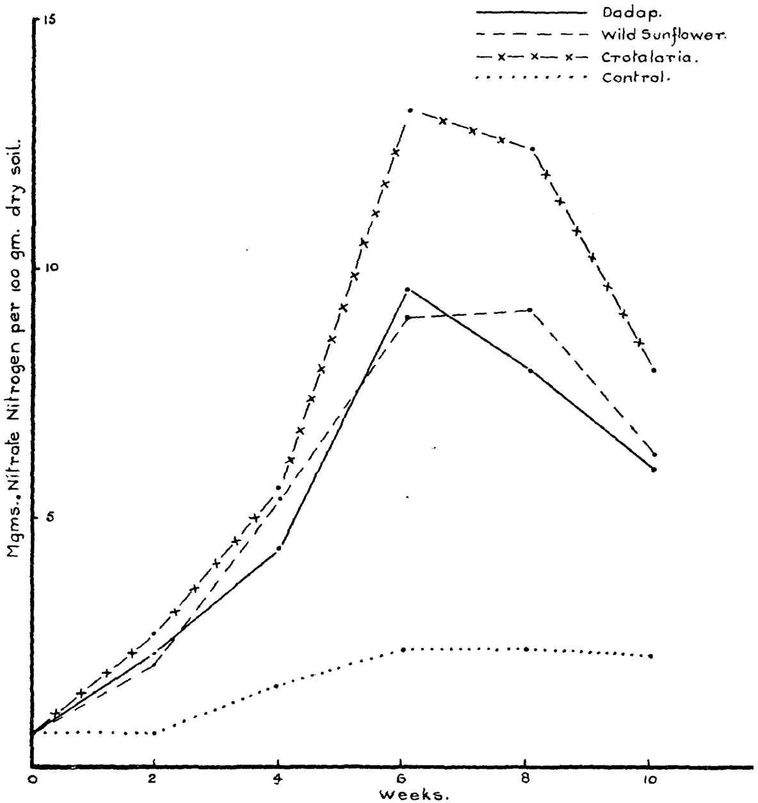
The graph illustrates the decomposition of four green manure types over a 10-week period. The Y-axis represents the amount of Nitrate Nitrogen in mgms per 100 gm of dry soil, ranging from 0 to 15. The X-axis represents time in weeks, from 0 to 10. The legend identifies the series: Dadap (solid line with dots), Wild Sunflower (dashed line), Crotalaria (dash-dot line with 'x' markers), and Control (dotted line). All manure types show an initial increase in nitrate nitrogen, peaking around week 6, and then gradually decreasing. The Control series shows a much slower and lower increase, peaking around week 6 and remaining relatively stable.
| Weeks | Dadap. | Wild Sunflower. | Crotalaria. | Control. |
|---|---|---|---|---|
| 0 | 0.5 | 0.5 | 0.5 | 0.5 |
| 1 | 1.5 | 1.5 | 1.5 | 0.5 |
| 2 | 2.5 | 2.5 | 2.5 | 0.5 |
| 3 | 3.5 | 3.5 | 3.5 | 1.0 |
| 4 | 4.5 | 5.5 | 5.5 | 1.5 |
| 5 | 7.5 | 8.5 | 9.5 | 2.0 |
| 6 | 9.5 | 9.0 | 13.0 | 2.5 |
| 7 | 8.5 | 8.0 | 12.5 | 2.5 |
| 8 | 7.5 | 9.0 | 12.0 | 2.5 |
| 9 | 6.5 | 7.5 | 10.5 | 2.5 |
| 10 | 6.0 | 6.5 | 8.0 | 2.5 |
Figure I. Showing the decomposition of green manures under arable conditions in the laboratory.
17
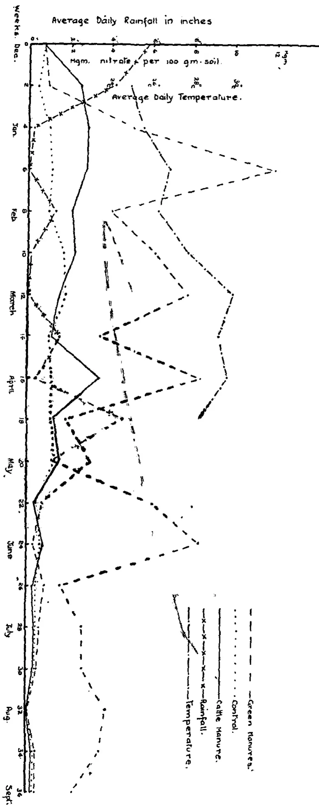
The figure is a line graph with three data series plotted against time from December to September. The x-axis represents time in weeks, with labels for each month: Dec., Jan., Feb., March, April, May, June, July, Aug., and Sept. The y-axis has two scales: the top scale is 'Average Daily Rainfall in inches' ranging from 0 to 10, and the bottom scale is 'Mg. nitrate per 100 gm. soil.' ranging from 0 to 5. The three data series are:
Figure II. Showing the decomposition of green manures under arable conditions in the field.
20The addition of lime hastens the decomposition of green manures, as in the case of organic manures (20, 21, 22).
Experiments carried out at Peradeniya on the effect of desiccation on the nitrification of the leaves and tender stems of leguminous plants indicate that drying delays as well as hinders nitrification. A later investigation showed that dry weather alone does not encourage decomposition of green manure materials (23). Other investigators too arrived at the above conclusions (24, 25). The delay in decomposition is attributed to the conversion of soluble hemi-celluloses into less soluble forms as a result of the drying. From the above it will be realised how important it is that leafy material should be buried green and not dry in order to secure speedy decomposition.
In connection with the decomposition of green manures under arable conditions, it may be stated that experiments at Peradeniya have indicated that the effect of green manures here is to make the soil somewhat less acid than what it originally was (2). Work in other countries has shown that green manures do not materially, if at all, increase soil acidity in the field (6).
Green Manuring Under Anaerobic (Paddy-land) Conditions. In a paper such as this which deals with the general principles of green manuring in relation to all crops, reference should be made to investigational work carried out in Ceylon on green manuring under anaerobic (paddy-land) conditions. The practical aspect of this will be dealt with separately in the chapter on paddy and hence only the scientific aspect of green manuring under these conditions will be discussed in this chapter. The decomposition of green manures under anaerobic conditions such as obtain in swampy paddy land is brought about by soil micro-organisms. Harrison and Aiyer (28) showed that the gaseous products formed as a result of the decomposition of green manures under anaerobic conditions are carbon dioxide, hydrogen, marsh gas, and a small proportion of nitrogen. The main constituents of paddy soil gases are marsh gas and nitrogen. The former is oxidised to carbon dioxide by bacteria contained in the organized algal film on the soil surface. The carbon dioxide is in its turn decomposed with the evolution of oxygen, which becomes available for the aeration of the roots. The absence of carbon dioxide and hydrogen from paddy soil gases is attributed by Harrison to the reduction of the carbon dioxide by hydrogen as a result of a subsidiary bacterial action. Harrison and Aiyer attribute the efficiency of green manures upon paddy mainly to their indirect action on the soil by increasing root aeration, and not to the nitrogen contained in them,
21which they consider is liberated to a great extent as free nitrogen. The chief point of difference between the decomposition of green manures under dry land and wet land conditions, is that in the latter case ammonia and not nitrate is the nitrogenous end-product. Most previous workers (26) had shown that the rice plant took its nitrogen in the form of ammonia and hence the value of green manuring became apparent. A detailed investigation of the decomposition of green manures under these conditions in order to determine how green manuring of paddy could most effectively be carried out (26), has shown that as a result of incorporating green manures in paddy soils at the time of puddling, i.e., late, large quantities of ammonia are made available to the soil at all stages of the decomposition process and which coincide with the period of crop growth. Maximum
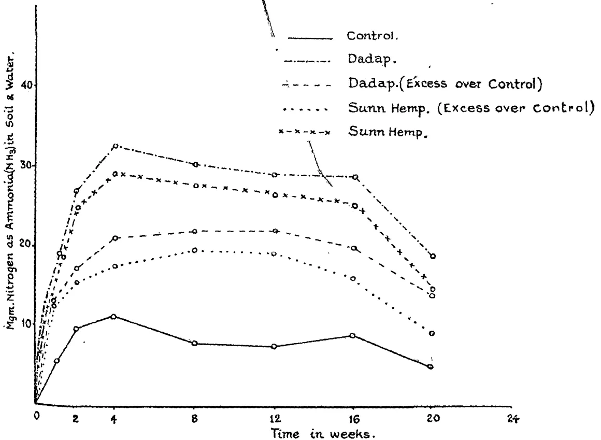
The graph illustrates the decomposition of green manures over a 24-week period. The Y-axis represents the amount of nitrogen released as ammonia in milligrams per gram of manure, and the X-axis represents time in weeks. The legend identifies five series: Control (solid line), Dadap (dashed line), Dadap (Excess over Control) (dash-dot line), Sunn Hemp. (Excess over Control) (dotted line), and Sunn Hemp. (long-dashed line). The Sunn Hemp. series consistently shows the highest ammonia release, peaking at approximately 32 mgm/g at week 4. The Control series shows the lowest release, peaking at about 11 mgm/g at week 4. All series show a general trend of increasing ammonia release initially, peaking between weeks 4 and 8, and then gradually declining.
| Time in weeks | Control | Dadap | Dadap (Excess over Control) | Sunn Hemp. (Excess over Control) | Sunn Hemp. |
|---|---|---|---|---|---|
| 0 | 0 | 0 | 0 | 0 | 0 |
| 2 | 9 | 15 | 20 | 25 | 28 |
| 4 | 11 | 21 | 28 | 29 | 32 |
| 8 | 7 | 22 | 27 | 28 | 30 |
| 12 | 7 | 22 | 26 | 27 | 29 |
| 16 | 8 | 19 | 25 | 24 | 28 |
| 20 | 5 | 14 | 15 | 13 | 18 |
Figure III. Showing the decomposition of green manures applied late under anaerobic conditions in the laboratory.
22
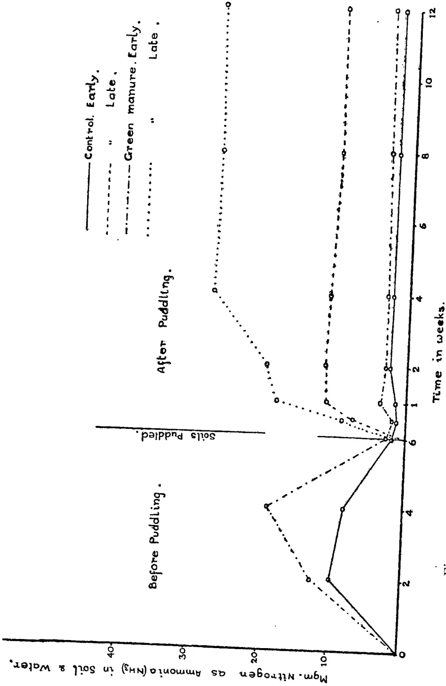
The graph illustrates the decomposition of green manures applied early under anaerobic conditions. The Y-axis represents 'Mgm. Nitrogen as Ammonia (NH3) in Soil & Water' ranging from 0 to 40. The X-axis represents 'Time in weeks' ranging from 0 to 12. The graph is divided into two sections: 'Before Puddling' (0 to 6 weeks) and 'After Puddling' (6 to 12 weeks). The legend indicates four series: Control Early (solid line), Control Late (dashed line), Green manure Early (dash-dot line), and Green manure Late (dotted line).
| Time (weeks) | Control Early | Control Late | Green manure Early | Green manure Late |
|---|---|---|---|---|
| 0 | 0 | 0 | 0 | 0 |
| 2 | 10 | 10 | 10 | 10 |
| 4 | 15 | 15 | 15 | 15 |
| 6 | 10 | 10 | 10 | 10 |
| 8 | 10 | 10 | 10 | 10 |
| 10 | 10 | 10 | 10 | 10 |
| 12 | 10 | 10 | 10 | 10 |
Figure IV. Showing the decomposition of green manures applied early under anaerobic conditions in the laboratory.
![Line graph showing the decomposition of green manures under anaerobic conditions in the field. The Y-axis is 'Mgm. Ammonia (NH3) per 100 gm dry Soil.' (0 to 4). The X-axis is 'Time in weeks.' (0 to 15). The graph shows four data series: Control (solid line), G.M. Early (dashed line with 'x' markers), G.M. Late (dotted line with 'o' markers), and a horizontal line for 'Soils Puddled.' at approximately 2.5 mgm. The graph is divided into three sections: 'Before Puddling.' (weeks 0-4), 'After Puddling.' (weeks 4-15), and 'Soils Puddled.' (weeks 0-4).](a7db88ac4cdbd6841441038bf727d52f_1_img.webp)
The graph illustrates the decomposition of green manures under anaerobic conditions. The Y-axis represents the amount of ammonia (mgm. per 100 gm dry soil), ranging from 0 to 4. The X-axis represents time in weeks, ranging from 0 to 15. The graph is divided into three sections: 'Before Puddling.' (weeks 0-4), 'After Puddling.' (weeks 4-15), and 'Soils Puddled.' (weeks 0-4). The legend indicates four data series: Control (solid line), G.M. Early (dashed line with 'x' markers), G.M. Late (dotted line with 'o' markers), and a horizontal line for 'Soils Puddled.' at approximately 2.5 mgm.
| Time (weeks) | Control (mgm. NH3) | G.M. Early (mgm. NH3) | G.M. Late (mgm. NH3) | Soils Puddled (mgm. NH3) |
|---|---|---|---|---|
| 0 | 0.0 | 0.0 | 0.0 | 2.5 |
| 1 | 0.0 | 0.0 | 0.0 | 2.5 |
| 2 | 0.0 | 0.0 | 0.0 | 2.5 |
| 3 | 0.0 | 0.0 | 0.0 | 2.5 |
| 4 | 0.0 | 0.0 | 0.0 | 2.5 |
| 5 | 0.0 | 0.0 | 0.0 | 2.5 |
| 6 | 0.0 | 0.0 | 0.0 | 2.5 |
| 7 | 0.0 | 0.0 | 0.0 | 2.5 |
| 8 | 0.0 | 0.0 | 0.0 | 2.5 |
| 9 | 0.0 | 0.0 | 0.0 | 2.5 |
| 10 | 0.0 | 0.0 | 0.0 | 2.5 |
| 11 | 0.0 | 0.0 | 0.0 | 2.5 |
| 12 | 0.0 | 0.0 | 0.0 | 2.5 |
| 13 | 0.0 | 0.0 | 0.0 | 2.5 |
| 14 | 0.0 | 0.0 | 0.0 | 2.5 |
| 15 | 0.0 | 0.0 | 0.0 | 2.5 |
Figure V. Showing the decomposition of green manures under anaerobic conditions in the field.
24ammonification is obtained in about four weeks from the time of puddling. By early green manuring, i.e., ploughing in the green manures when the soil is semi-dry, large quantities of nitrates are formed. On the subsequent flooding and puddling of the soil these are lost as free nitrogen, leached in the drainage water, or reduced to nitrites which are injurious to paddy seedlings if present in excess. The amounts of ammonia found in early green-manured soils are very much less than those found in late green-manured soils. By the late green manuring of paddy soils their nitrogen contents can be maintained or even increased. Early green manuring results in large losses of soil nitrogen. No nitrates are found in paddy soils after they have been puddled, any nitrates present or added before puddling being denitrified or converted into nitrites. Large increases in crop yields of both grain and straw have been obtained through the late green manuring of paddy under anaerobic conditions (29). Green manures can therefore be of direct manurial value to a crop like paddy if they are incorporated into the soil at the proper time.
Figures III, IV, and V will illustrate graphically the conclusions referred to in the above paragraphs.
(1). On what soils should green manures be grown and under what climatic conditions?—Provided there is sufficient rainfall, green manures can be grown on any type of soil. Poor sandy soils in particular will benefit most by green manuring, as their humus and nitrogen contents and water-holding capacities will eventually be increased by the practice.
It has already been stated that where the annual precipitation is less than twenty inches, green manuring is not practicable; but very few parts of Ceylon are as dry as this, and most districts get the benefit of at least one monsoon. It is only in certain parts of the Northern and North-Central Provinces that green manuring would appear to be impracticable. In the Puttalam and Chilaw districts the soils are of a light sandy type, the rainfall on the whole is low, and long periods of drought occur. The question then arises whether green manuring can successfully be practised under these conditions. It is possible to do so, but under such conditions a quick-growing annual leguminous crop should be grown. It should be cut and left as a mulch during the drought and ploughed in during the next rainy season, a second crop being planted at the same time; or, where possible, the green manure should be forked in early enough for decomposition to set in before the rains cease. In districts with adequate rainfall green manuring will offer all the advantages already referred to.
25(2). The optimum time for cutting and the best method of treatment of green manures.—Green manures should be cut at a stage when (1) they produce the maximum quantity of easily-decomposable green material, (2) climatic considerations demand that they should not compete with the main crop for the moisture in the soil. On the first point it has already been stated that in general the optimum time for cutting green manures for forking into the soil is just about the time of flowering. This applies to the bush and cover types in particular. The tree types are best lopped when the branches are from three to four months old.
The loppings or cuttings of all green manures, particularly in drier districts, should be ploughed in towards the end of the rains when showers alternate with dry weather. If ploughing is not possible the green material should be left as a mulch on the surface. In this case a certain amount of the carbon and nitrogen of the green material will be lost, as was found at Peradeniya(23) but as in these dry districts moisture is the limiting factor of crop growth, the mulch will serve as a useful means of conserving soil moisture. It is preferable, however, to turn in the cuttings about three to four weeks before the drought sets in, as by that time a certain amount of decomposition will have taken place and the decomposed material will have been able to retain some moisture for the subsequent use of the crop. In wet districts or in districts with an evenly distributed rainfall it is preferable that green manures should be turned into the soil immediately. The reason for this is that the drying of green manures delays as well as hinders nitrification, and loppings left on the surface are completely dried in a short time if dry weather prevails. If dry weather should alternate with wet weather then large losses of nitrogen and organic matter may result(23). Thus losses of over 43 per cent of the nitrogen of Glinicidia and 37 per cent of dadap leaves were found at Peradeniya, when alternate dry and wet weather occurred. When dry weather alone prevailed, decomposition of the leafy materials did not take place and no losses of nitrogen consequently occurred. The loss of nitrogen is also effected by the nature of the plant material and this is greater in the case of more easily-decomposed leaves such as Glinicidia than tea and Grevillea leaves. The forking in of green manures in the fresh state is therefore advocated whenever possible. On no condition should green manures be cut and forked into the soil during a drought, even at the beginning of it. This applies particularly to light sandy soils in dry districts where green manures are ploughed in. It may be necessary in some instances to compact the soil after green manuring in order to
26minimise losses of soil moisture and to establish capillarity in the soil. The loppings of tree and bush green manures should not be allowed to become too woody. If in this condition, they should not be ploughed into the soil.
(3). How can a good growth of green manures be obtained on poor soils?—It may be found difficult to establish green manures for the first time both on medium and on poor soils. In this case the following methods may be tried:
(i) Manuring the crop.—The green manure should be given a start by applying cattle manure to the seed bed. If this is not available, some nitrogenous manure, e.g., a mixture of nitrate of soda and blood meal incorporated with twice its weight of soil should be supplied at the rate of a handful or two per hole. Leguminous crops will be benefited by the presence of nitrogen in the early stages of their growth till the formation of nodules has taken place. Potash and phosphoric acid should also be applied as the green manures have to compete with the main crops for these fertilising constituents. As a result of manuring, the nodule bacteria are reported to become more active and able to enter the plants readily, and nodule formation is increased(6). The root growth of leguminous plants in general is stimulated by manuring with phosphatic acid.
(ii) Inoculation.—Leguminous crops at times do not come up well in new areas. This is because the soil does not contain the specific type of bacteria needed by the particular legume for the formation of the root nodules. In this case inoculation of the soil or of the seed becomes necessary. There are three methods of soil inoculation, of which the soil method is alone suitable under Ceylon conditions at the present time. It consists of broadcasting over the area to be planted 300-400 lb. of soil per acre which has been taken from an area on which the green manure, it is desired to establish, has been grown with success.
(4). Other practical points on green manuring.—As regards the period of retention of green manures it may be stated that, in general, perennial cover crops should not be allowed to grow for more than two or three years without being ploughed in. The reasons for this are that the soils on which these covers grow (1) need periodical cultivation and aeration, (2) get "sick" as the result of growing one particular crop. For the latter reason it is advisable to have a rotation of green manure crops. Bush green manures depending on the particular species will need replanting once in two to four years. Tree green manures can be left to grow for several years, but they should be rooted out if attacked by disease.
27Cover crops should be ploughed under in alternate rows across the slope of the land once every year or so. Where the green manure crop is a heavy one, it should be cut up with a disc-harrow or rolled before ploughing in. Bush green manures should preferably be planted in contour belts. When planting out green manures for the first time a heavier seed rate than is normally required, especially if seed is plentiful and comparatively cheap, is recommended. By this means a cover will be more quickly established and weeds more effectively suppressed. Generally speaking it is preferable to plant green manure seed in rows. A mixture of seed generally gives better results than seed of one variety. The seed bed should receive careful preparation. Planting should be carried out at the beginning of the rains and weeding should be done in the early stages in order to give the green manures a start.
When using a green manure as the main source of nitrogen, the inclusion of an organic manure such as groundnut cake or blood meal in the artificial mixture is not recommended; but the application of a small quantity of a concentrated nitrogenous fertiliser such as cyanamide along with the green manure is advised. The reason for this is that as the carbon/nitrogen ratio of the soil has been found to remain constant at about 10 to 1 (2), and as green manures have a much higher carbon/nitrogen ratio, some concentrated nitrogenous fertiliser would appear necessary if a permanent improvement in the nitrogen content of the soil is to be effected. Further, only about half the nitrogen contained in green manures is available in a short time. It is also advisable to plough in some cattle manure along with the green manure as the large number of bacteria present in the former will hasten the decomposition of the latter.
(5). Some limiting factors in green manuring.—As with all other farm practices, green manuring has its limitations, and these are governed by crop and climatic conditions, cost of seed and of application, insect pests and fungus diseases of both the green manure crop and the main crop, and inadequate monetary returns (6). Climatic conditions essential for green manuring have already been dealt with. As regards crop conditions it is known that some green manures will not grow under the heavy shade of the main crop, such as rubber, others in the open, as in young clearings. Again, certain green manures of the tree type will be unsuitable for young plantations. Others again have a climbing tendency and, therefore, should not generally be grown in new plantations, or if they are, they should be kept away from the young plants. In Ceylon, suitable green manures
28for all crops under all conditions are available and there is no crop which will not benefit by green manuring, judiciously carried out. The cost of seed is a factor of importance at the start. Once green manuring has been adopted, however, this difficulty may be overcome as seed becomes available. The initial expenditure on green manuring may be fairly high, but this will more than be compensated for by a saving on the fertilisers purchased. Seed of all kinds can be obtained comparatively easily and cheaply in Ceylon. Though the cost of application, in which is included the cost of cutting and forking in, if the latter is carried out, will be found to vary in the different districts, it is not prohibitive.
The question of fungus diseases and insect pests both of the green manure crop and of the main crop in which they are grown in Ceylon will be dealt with in separate chapters.
Green manuring will not be an economic proposition if adequate monetary returns are not secured. The nett result should not be measured by the returns of produce obtained after one or two years, because the residual and cumulative effects of green manuring are considerable, and apart from directly benefiting the crop, soil conditions will also be greatly improved. As far as the main Ceylon crops are concerned, the satisfactory returns obtained by the judicious use of green manures in tea, cocoa, and paddy cultivation are recognised. Evidence to prove that green manuring benefits rubber and coconuts is also being obtained, and the practice with reference to these crops will be considered in detail in the chapters to follow.
(6). Green manuring practices on Ceylon estates, and suggestions for their improvement where desirable.—It may be well briefly to outline some of the practices followed by estates, and to indicate in which ways, if any, they may advantageously be modified. Tree green manures, e.g., dadap and Gliricidia, are lopped on nearly all estates from once to two or three times a year, and even more often. More frequent lopping is certainly preferable for the reasons that firstly a greater amount of easily decomposable green material and much less decomposable woody material is obtained and secondly, as the direct effects of green manures do not last for more than five or six months under Ceylon conditions, a continuous supply of nitrate nitrogen will be available to the plant if lopping is frequently carried out. On one estate as many as six loppings are done, the method adopted being to slash the green manure trees across as is now done to tea in the low-country. The loppings are left as a mulch on the surface either across the slope of the land or down the rows of the crop. Some estates envelope-fork all loppings into the
29soil each time the trees are lopped either in every row or in alternate rows. Others fork in the loppings from certain cuttings only, e.g., along with artificial manures; at other times the loppings are left as a surface mulch. Others again fork in the leaves and more tender branches only, the more woody branches being used either for supplying vacancies or as firewood. Many estates use the tender leaves and stems for filling into supply holes. The loppings are either cut into small pieces or left as they are; or again, they are buried in deep trenches or holes between the rows of the main crop. Whenever this is done a layer of soil should be placed over a layer of the green material. The practice of burying in trenches is not one to be generally recommended, as it is likely that only the trees or bushes immediately adjacent to the trenches would profit most by it. Loppings may however be buried in large shallow trenches between the rows of the main crop as in the case of coconuts. The practice of forking in the loppings above each bush has distinct merits. Some estates plant out green manures on the manured areas between the rows of the main crop, e.g., coconuts. This is a mistake, for as pointed out already, if a leguminous crop is given a source of available nitrogen it will make no effort to obtain the nitrogen it requires for its use from the air. Further, the green manure crop will even temporarily compete with the main crop for some of the other available fertilising constituents contained in the manure mixture applied. Green manures should in these cases be grown in the unmanured areas.
Whenever it is possible and economical for green material to be turned into the soil, especially in districts with adequate rainfall where dry weather alternates with rain, this should be done. The woody portions of the loppings should not be forked in, but preferably left on the surface of the soil across the slope of the land, used for filling in vacancies or where either of these practices is not convenient or advisable, burnt and the ashes forked in. The reasons for not burying the woody loppings are that they take a very long time to decompose in the soil owing to their high lignin and low pentosan contents; secondly that they contain only very small amounts of nitrogen, so that in the process of decomposition the bacteria responsible for bringing it about will utilise some of the available soil nitrogen required by the crop and thus cause a temporary setback to the latter; and finally because of the danger of pests and diseases. If the green material is not turned in, a large percentage of the nitrogen and organic matter it contains may be lost (23). The best practice would be to fork in the leaves and tender stems either along with artificial manures or alone during periods of light rainfall. The
30loppings cut at the beginning of a period of drought may be left on the surface as a mulch, especially in dry districts, and the leafy material later forked in, if necessary. It need hardly be stated that tree green manures should not be left unlopped and the more frequent the loppings the better. Big trees like Grevillea and Albizia are generally not lopped, the natural leaf fall affording sufficient organic material for forking in.
Bush green manures as boga and Crotalaria should be treated in the same way as the tree types.
The practices governing the use of cover crops vary a great deal and more experience with these needs to be obtained. Some estates leave the cover untouched for two years or more, except perhaps when manures are being supplied; others envelope-fork the covers periodically depending on the growth and nature of the cover. In some cases the cover is cut and artificial fertilisers may or may not be added at the time of forking in. In other cases the cover crop is cut and buried in trenches. Others again cut and envelope-fork in the green manure in alternate lines. The best practice would be to fork in alternate contour bands of the cover crop every year. This may not be convenient in the case of all crops, but it can always be adopted in some modified form. By so doing the cover acts as an effective soil conserv and also adds to its fertility.
In the preceding pages an account has been given of the necessity for, the importance of, and the advantages of green manuring in tropical countries generally and in Ceylon in particular. It has been indicated that by the judicious use of green manures, which term includes cover crops, the nitrogen and carbon contents of the soil can be maintained, its physical condition improved, its moisture-retaining capacity enhanced and erosion effectively prevented. The analytical composition of certain plants, leguminous as well as non-leguminous, used in Ceylon for green manuring is tabulated and compared, and the conditions under which either class may be used as green manures explained. The results of investigations on the variation of composition with age are also briefly summarised. The principles underlying the decomposition of green manures in soils under both aerobic and anaerobic conditions are then discussed, and the results of experimental work on the subject in Ceylon are outlined. The chapter concludes with discussions on certain practical green manuring problems, viz., soil and climatic conditions suitable for the growth of green manures, the
31optimum time for cutting and forking in green manures, measures to be adopted for securing good growth of green manures, some of the limitations of green manuring, and green manuring practices on Ceylon estates and the respects, if any, in which they may be advantageously modified.
BIOLOGICAL control, in the strict meaning of the term, embraces all agencies of a biological nature that exercise a restraining or controlling influence upon the multiplication of other forms of life. It represents, therefore, the sum-total of the activities of bacterial, fungal, and other diseases; of insectivorous birds and mammals; and of parasites and predators. In so far as the present article is concerned, reference is confined to the practical utilization of various species of beneficial insects, since it is in this connection that the greatest successes have been achieved.
The control of insect pests by biological methods has made rapid advances during recent years and there is now a bulky and increasing literature on the subject. It will be convenient to discuss these methods firstly with reference to the introduction of specific parasites, or predators, into countries where they did not previously exist: and secondly with regard to the utilisation of indigenous parasites.
Parasite Introductions.—Up to the present biological control has yielded the most satisfactory results in cases where injurious insects have become established in lands they did not previously inhabit, and have there developed into serious pests. In cases of this kind the noxious species have been free from the attacks of these parasites which restrain them in their lands of origin. Biological control therefore, aims at restoring a condition of natural equilibrium by the introduction of the missing parasite factor. It has to be remembered that introduced pests include some of the worst of the world's insect enemies of food supplies. The more trade is fostered between one country and another the greater are the chances of the spread of pests into fresh territories. Quarantine measures serve to delay and restrain such transfers taking place but sooner or later, one or other pest manages to run the gauntlet and establish itself in lands thus protected. Artificial measures of control have, in many cases proved impracticable and their application has involved expenditure of large sums of money to no real advantage. Biological control has consequently been resorted to as a sounder and, in the end, a less expensive measure. Every year brings fresh records of promising results achieved by its application, but it cannot be regarded as a universal panacea as the misinformed are too prone to view it. Each case requires the experience of skilled entomologists and has to be exhaustively considered on its merits. Biological control has had its failures and it cannot be assumed, as the growers did, at one time, in California, that all that is required is to obtain the natural parasites of a given pest and subjugation of the latter will follow.
Insular Conditions.—Up to the present time some of the most successful and complete examples of the biological method of pest control have come about when parasite introductions have taken place under insular conditions. There is the classical case of the Hawaiian Islands where biological methods have proved so successful that insecticides rarely form part of any control measure. Practically all the major pests of sugar-cane have been subjugated in this way. These include the cane leaf-hopper (Perkinsiella saccharicida), the Lammelicorn beetle (Anomala orientalis) and the cane borer weevil (Rhabdocnemis obscura).
* By A. D. Imms, D.Sc., F.R.S., Rothamsted Experiment Station, Harpenden, in Tropical Agriculture Vol. VIII. No. 4, 1931.
enemies obtained in South Africa have brought about a certain measure of control, but energetic measures are in progress with a view to augmenting their activities by the discovery of other parasites. The red scale (Chrysomphalus aurentii) and the purple scale (Lepidosaphes beckii) likewise have not so far been subjected to satisfactory biological control.
Passing now from citrus pests, the woolly aphid of the apple is one that troubles growers all over the world. Of recent years much attention has been devoted to the Chalcid parasite Aphelinus mali indigenous to North America. Reference has already been made to the successful introduction of this parasite into New Zealand. Its importation and liberation has also taken place in various continental areas: in many European countries it has so far proved of comparatively little value. In parts of Italy, however, it destroys its host at all seasons of the year and is proving an efficient parasite. In South America, especially in the Argentine, it has become particularly efficient, and is also giving promising results in parts of Australia. In South Africa it was at first a failure, but its re-introduction has been successful in certain localities.
Mention must also be made of the losses occasioned to the silk industry in Italy by the imported scale-insect Diaspis pentagona, which destroyed the mulberry. In 1891 the pest assumed such serious proportions that the Italian Government passed a legislative measure compelling mulberry cultivators to make strenuous efforts to cope with it. No satisfactory control was obtained, however, until the Chalcid parasite (Prosaltella berlesei) was introduced and became established. Extensive and widespread liberations of this insect have since led to the subjugation of the Diaspis over a large part of Italy.
In Canada the enormous damage entailed by the European larch sawfly (Lygaeonematus erichsoni) to forests led to the introduction during 1912-13 of its Ichneumon parasite Mesoleius tenthredinis from England. This parasite has steadily increased in efficiency and in 1927 was found in some localities to be destroying as much as 88 per cent of its hosts. It is now well established locally in South Manitoba where there appears to be no doubt that it has greatly reduced the prevalence of the saw-fly and its distribution among the forests of Eastern Canada is now being undertaken.
The successful introduction of the larch saw-fly parasite is now of especial interest and importance for the reason that the insect is subjected to the extremely cold winter conditions. For many years strenuous efforts have been made to control the gipsy and brown-tail moths in North America by biological means. Enormous numbers of parasites have been bred out and liberated and, in so far as the brown-tail moth is concerned, there is every indication that a tolerably successful degree of control has supervened. In 1924 the gipsy moth infestation reached its lowest level for twenty years and, in this connection, it is noteworthy that in the previous year the average collective parasitism attained its greatest efficiency. Since then parasitism has declined and a recrudescence of outbreak of the moth has occurred. The whole problem is complicated by many factors including climatic variations, wilt disease, reduction in planting of favoured hosts, arsenical spraying and the wholesale destruction of the egg-masses. It is therefore difficult to evaluate the amount of influence that parasitization exercises. The special parasite laboratory at Melrose Highlands in the meantime continues its work of the mass breeding and liberation of beneficial insects. More recently a number of other immigrant insects have attained a widespread range in the United States and their control by biological means is under weigh at the present time. Among these pests the alfalfa weevil (Hypera variabilis), the European corn borer (Pyrausta nubilalis), the Japanese beetle (Popillia japonica) and the oriental
peach moth (Laspeyresia molesta) are especially noteworthy. The alfalfa weevil was first reported in America in 1904, while the other pests mentioned are more recent immigrants. In the attempts to control these pests certain species of introduced parasites have become established, but the final outcome of the experiments can only be revealed in years to come. With the corn borer, for example, the greatest chances of success appear to be dependent upon the introduction of a whole range of parasite species, some being adapted to restrain their host in one part of its zone, and others in a different part. It seems unlikely that any one parasite, or group of parasites, will prove equally effective in relation to an insect which has already invaded over 100,000 square miles of territory, where there are notable climatic variations.
Utilization of Indigenous Parasites.—Suggestions have been frequently made, and actual attempts carried out, with a view to making use of indigenous parasites of native pests as agents in the control of the latter. It needs to be recollected that the subject involves somewhat different principles from those concerned with parasite introductions. In the latter case the building up of a condition of natural equilibrium by supplying the missing parasite element is aimed at. The utilization of indigenous parasites is largely concerned with efforts to modify a condition of equilibrium already highly adjusted. The operations consist either of conserving or increasing the numbers of a parasite or predator in a given area, with the object of obtaining a higher degree of control over an individual species of pest, or of attempting to colonise such parasites in a part of the country where they are scarce or wanting.
Conservation of Parasites.—The principle involved consists of either altering the host-parasite ratio by the adoption of methods which allow of more hosts than parasites being destroyed; or, of the abandonment of measures tending to reduce the existing parasite population. Various attempts have been made or advocated in Europe towards these ends but no clearly proved success has been reported. Such methods are only likely to be successful when carried out by general agreement among cultivators over a wide area; on a small scale only a fraction of the insect population would be affected and no appreciable result likely to supervene. In recent years the method has been put into effect in Louisiana where the practice of burying the sugar-cane trash is claimed to be an ineffective measure for decreasing infection by the moth-borer Diatraea saccharalis. The trash, it appears, affords shelter to large numbers of hibernating parasites and, following this contention, it was left unburned at the sugar experiment station farm near New Orleans for a period of years, while the State planters as a whole burned their trash. During the years 1915 to 1921 it is stated that the percentage losses due to Diatraea were less by three per cent. to 17 per cent. over fields where the trash was left unburned.
Direct Increase of a Parasite Population.—It has been contended that the alteration of the host-parasite ratio in specific cases by the artificial quantitative breeding of suitable parasites is a practical possibility. A species of parasite where behaviour lends itself favourably to the application of the method is the Chalcid Trichogramma minutum. At the present day attention is being concentrated on this species in various parts of the world as a means of controlling the codling moth (Cydia pomonella), the sugar-cane borer (Diatraea saccharalis) and other moth pests. The Trichogramma is a very widely spread parasite of the eggs of such species: many generations a year can be reared in captivity on suitable hosts, and it is claimed that up to one million per day can be bred with comparatively simple standardized technique. Early in the season this parasite is comparatively scarce, while its spread is very slow owing to its limited
38powers of distribution, but it is maintained that if an intensive infestation can be induced at the right time, potential outbreaks of certain moth pests might be largely counteracted by the wholesale destruction of their eggs by this means. In a recent issue of The Tropical Agriculture (Vol. VII, pp. 292-295) R. W. E. Tucker has given an account of his experiments in controlling Diatraea saccharalis in Barbados by mass liberations of Trichogramma. The results so far obtained promise to give satisfactory control of the pest in question. In the meantime good work along similar lines is being carried out against the same pest in Louisiana; against the codling moth in California; and also against the oriental peach moth elsewhere.
Transference of Parasites to New Areas.—Theoretically this method appears to be a feasible one if the absence of a given parasite in a specific area is attributable to causes other than those of a climatic nature. As long ago as about 1872 experiments of this nature were stated to have yielded beneficial results, but it is not possible to discover whether such effects were permanent or not. Quite recently E. H. Hazlehoff has claimed to have achieved promising biological control of the sugar-cane aphid (Oregma lanigera) in Java by transferring its native parasite (Encarsia flavoscutellum) from established cane fields into newly-planted areas. Owing to the practice of crop rotation, it appears that the aphid establishes itself more readily than the parasite in new cane fields, but the parasite when artificially introduced readily adapts itself and holds its host in check.
L. O. Howard in his History of Applied Entomology (1930) instances two very recent experiments of a similar nature. In one case, an experimental reafforestation area in Nebraska was suffering severe losses of its young coniferous trees from larvae of the moth Rhyacionia frustrana. The transfer of colonies of an Ichneumon parasite from Virginia, and their liberation in Nebraska, led to an extraordinary change in the situation. In areas where the parasites were liberated as much as 80 per cent. of the hosts were attacked by them, and the percentage of affected trees declined by 60 per cent. In the summer of 1929 there was definite promise that the parasite would be the solution of a very difficult problem. The other case instanced concerns sugar-cane pests in the Island of Negros (Philippines), where W. Dwight Pierce, by redistribution of certain of the indigenous parasite among areas where they were scarce, is stated to have secured a greatly increased destruction of their hosts in such areas. An official report on this work has yet to be published and its appearance will be awaited with considerable interest.
The Outlook for Biological Control.—Biological control aims at bringing about a permanent measure of pest repression. In the most successful cases it may render the application of artificial measures no longer necessary, while in others it may serve to supplement insecticidal or other treatment. It is only in comparatively rare instances, and in a very favourable environment, that almost complete suppression of a pest results, while in many cases a successful outcome is regarded as having been achieved once an appreciable degree of permanent control over a given pest has come about. The subject has shown itself to be infinitely more complicated than it was believed to be about 20 years ago and a great deal of work has been carried out.
The general result of accumulated experience all tend to support the essential soundness of its basic principles. Every project, however, must be considered on its own merits and has to be regarded as an experiment whose final practical outcome cannot be forecasted with certainty. The operations of biological control have often failed through ill-advised or wrong procedures and it cannot be too strongly emphasised that they
39require expert knowledge, special equipment and special methods. Technical knowledge of the behaviour of specific parasites in relation to their hosts is essential: it enables the most suitable parasites to be selected and the chances of failure, with the consequent waste of both energy and money, to be reduced as far as possible. Experience in the handling and transfer of delicate living insects over, perhaps, many thousands of miles of land and water is also called for. At the destinations of these living cargoes familiarity with the technique of breeding and liberating parasites, under favourable conditions, is of the utmost importance, or the efforts expended on their discovery and transmission will be discounted.
It has been pointed out, earlier in this article, that some of the most pronounced successes in biological control have resulted in its application under insular conditions. The remarkable work carried out in the Hawaiian Islands is partially due to the special combination of favourable conditions present in oceanic islands of this type, but every credit must be given to the insight and sound knowledge that prompted such schemes and brought so many to a successful conclusion. Probably all oceanic islands afford a more or less favourable environment for the prosecution of similar methods. Many islands of the continental type, as exemplified by New Zealand, Ceylon, the West Indies and others, appear also to lend themselves favourably to such experiments. In a few years' time we shall learn much with regard to the various biological control projects now under weigh in New Zealand and the experience so gained will be of the utmost value.
Over continental areas it has already been pointed out that certain localised conditions appear to be more favourable than others. California, bounded partly by the Pacific Ocean and partly by barriers of mountains and desert, is isolated physiographically to an exceptional degree. Conditions more or less analogous to those obtaining in this State prevail in other parts of the world. Thus, in Australia as R. J. Tillyard has observed, there are large areas bounded by mountains or by desert that are ecologically almost comparable with islands. Looked at from this point of view Western Australia, the elevated apple lands of South Queensland and other parts, should afford favourable conditions for the application of biological methods of pest control. Egypt, limited as it is by desert and sea, Mesopotamia, Palestine, Syria, and other lands likewise appear to be favourable for parasite introductions.
The biological control of pests menacing crops widely distributed over vast continental areas, where there are pronounced seasonal changes including hard winters, and a great variety of other ecological conditions, has to contend with manifold difficulties. The establishment and spread of an effective parasite population, over such areas, can scarcely result until after the elapse of a number of years. We have, as yet no proof that parasites alone will attain sufficient control and it remains to be seen whether artificial means will, or will not, be still necessitated as supplementary aids. The possibilities of utilizing indigenous parasites need much more thorough exploration than has yet been accorded to them. There is no promise that this method will become of general application but, so far as can be foretold, it is likely that it may prove efficacious under especially favourable conditions. Finally, the international transfer of the most valuable types of parasites between one country and another is a possibility held for the future. We may say in conclusion that, given due consideration of the factors so briefly outlined, the outlook for biological control is one full of promise. This also is borne out by the increasing number of examples of its application that are being put into being in countries practically all over the world. For a full discussion of the technique, and underlying principles of biological control, the reader cannot do better than digest the recent Bulletin by W. R. Thompson entitled The Biological Control of Insect and Plant Pests, published by the Empire Marketing Board, London, 1930, price 1s. net.
40.ALTHOUGH we have made a distinction between the methods used to prepare the soil for growing crops and the methods to maintain or restore its fertility, agricultural practice is such that both converge into one. The labour of the farmer for the working of his fields at the same time influences the productivity of the soil and what he does to maintain soil fertility has its influence on the growing crop as well as the method used for the preparation of the fields.
All agricultural activities are founded upon existing ecological conditions and their improvement in relation to the requirements of the crops to be grown. As agriculture is an economic occupation and man's existence is dependent upon its results, it is of utmost importance that the result of his labour should be as favourable as possible.
It is therefore a necessity that the farmer's efforts should be in accordance with ecological conditions; he has to make use of them. It is essential that the plants he grows are adapted to these conditions, that the animals he breeds are adapted to the climate as well as to the food that nature offers them.
But although he has to adapt his business to his ecological surroundings, at the same time he will have to intervene in favour of his crops. As soon as he makes a clearing in a forest or burns the grasses of the steppe, he changes the ecological conditions.
We may say that it is impossible for the farmer to have any influence on the heat factor. He can only adapt the choice of his crops and his labour to it. Only in horticulture this factor may be influenced by man. It is different with the light factor. It is possible within certain limits to change the light conditions of a given place. In a forest light may be intensified by clearing, in an open country it may be lessened by planting shade trees for a lower growing crop. Also the water factor may be changed. It is possible to remove water by draining or to supply it by irrigation.
This modification of one factor has its influence on others. When light is intensified by forest clearing, atmospheric humidity, soil moisture conditions and soil properties are changed at the same time and thereby also natural vegetation, apart from the cultivated plants. When soil is drained its properties may change enormously and under certain conditions the heat factor and atmospheric humidity also. The same may be true of irrigation and to a larger degree when more water is supplied. A desert soil may be changed into a mud pool.
Soil conditions are very apt to undergo alterations, not only by the indirect influence of changing light and humidity conditions, but also by the direct influence of labour, by the crops that are grown and harvested, by the application of humus forming material and chemicals.
It does not often happen that a country devoid of forest growth is changed by planting of trees. In most cases where forest is planted to a large extent it is a question of reafforestation. But this is only practised on soils not suitable for agriculture. In naturally forestless countries the natural conditions prevent forest growth and it is not possible to interfere, with the possible exception of certain small areas.
* From International Review of Agriculture, Year XXII No. 3, 1931. Part I of this paper was reproduced in The Tropical Agriculturist, Vol. LXXXVI. No. 5, 1931.
41We therefore may say that, in general, the farmer does not influence the light factor in open countries. But in forest countries it is different.
It is possible that by clearing a part of the forest while provision is made in regard to drainage, and by working the soil, its properties are changed, but the most characteristic feature is the changing of the light factor. This gives agriculture in forests its own character of which we will speak later.
This forest agriculture is limited to certain parts of the world. It can only occur where forests exist, and forest growth is confined by ecological factors, largely of climatic and geographic origin.
The open countries were originally for the most part covered by forest. The western part of Europe, the eastern States of North America, the lowlands of Java and Bengal, southern China, for example, which are now open, once were forested. By the removal of the forest they have not lost their adaptability to forest growth; it is only the interference of man that prevents them from turning to forest again.
Other large areas of the world are forestless as conditions do not allow of forest growth. They are covered with savannah, steppe, bush, or their vegetation is extremely scarce and we call them desert.
It must be clear that the difference between forest country and deforested country is less than between these and countries that are forestless by nature. The landscape of the second may resemble more that of the last but the ecological character of the last differs much from the others. Ecological conditions permitted forest growth in the first and second and prevented it in the last.
What has been the most important factor involved? In some places it has been temperature. In the extreme north and south and at high altitudes in mountain regions it was the low temperature that prevented forest growth. But this same condition also prevents agriculture proper and it is not possible to influence it.
In other places it has been lack of moisture.
Warming says: "no other influence impresses its mark to such a degree upon internal and external structures of the plant as does the amount of water in the air and soil, and no other influence calls forth such great and striking differences in the vegetation as do differences in the supply of water."
It has been demonstrated repeatedly that, to a certain extent in accordance with the nature of the plant, a larger supply of water yields a richer crop.
And so it is not to be wondered at, that the efforts of farmers in regions liable to water shortage are directed in the first place to measures which will ensure moisture conditions as favourable as possible to their crops. It is self-evident that the cultivated plants of these regions are adapted to their ecological conditions. They are therefore not only drought resistant, but as soon as the moisture supply moves from the optimum to too great abundance their growth will be checked and their yield will diminish. Farmers in these regions however have more to fear from moisture shortage than from excess.
Nature seldom traces boundaries; the transition from one region to another is almost always gradual. And so it is not possible to give the exact limits between the country adapted to forest and the regions where conditions are adverse to forest growth. And so too, agriculture from the steppe may invade the forest country as well as forest invading the steppe. The former however is bound to take place more often, as climatic
42conditions may change from one period to another. Sometimes a sequence of years makes farming conditions possible in regions which may be extremely arid in other years. But also, extremely dry years may force farmers back from the forest boundary into the forest.
It is a human trait to adhere to the cultivated plants and domesticated animals that form the economic outfit of a farming community. They always followed human tribes on their wanderings. And so too, in invading the forest country the steppe farmer took with him his grain seeds. And so they came to grow under ecological conditions which were different from those in their home country. The humidity factor was different, in some places it was in excess. And here farmers had to adapt their methods to these conditions; they insisted on the cultivation of crops from an arid country in a more humid one and so they had to take care, that no adverse conditions should arise from the larger humidity. They had to get rid of excess of water. Where this was not possible by the topography of the country they did not settle.
It will be clear that in those parts of the forest adapted countries bordering the steppe region, about the same agricultural methods are and were practised as in the dry regions. But where humidity increases the farmer has to provide in a more or less thorough way, artificially arid conditions. It is of course not possible to influence climatic conditions, but by draining the soil it becomes possible to grow crops, which originated in arid countries. Where drainage was not possible the country remained for long uninhabited by farmers. Other factors were necessary to bring these parts of the country into use.
Cultivating the soil of a humid country has a different effect from that in an arid one. The properties of the soil are changed very much more, its fertility is influenced much more strongly. Farming methods must be adapted to these differences.
In the south-eastern part of Asia however conditions differ greatly. The forest country of this part of the world is separated by an enormous mountain barrier from the steppe regions. On the other hand it is the place of origin of a grain which is adapted as well to swamp conditions as to those of dry soil, provided there is sufficient moisture.
Here too forest disappeared and an open country was established in its place. This country has much greater rainfall and humidity than the European forest countries. Even if man had tried to drain the valleys and plains, it would have been impossible in the wet season. But rice, adapted to swamp conditions does not need drainage. And so especially the low regions, exposed to inundations, were sought by farmers to raise their grain crop. And where the topography of the country prevented swamp formation in a natural way, man, by building dams and ditches, made swamps even on terraced hillsides.
There are of course between these rice fields more or less extensive areas which cannot be irrigated. In as far as they too are used for crop raising do they belong to the same farming category as arable fields in western Europe. But more than that in the same region perennials are also grown which, for the most part, require ecological conditions that may be called forestic. So we find in many places of south-eastern Asia three different systems practised often by the same farmer.
But rice culture on land in swamp condition dominates the whole.
In the desert cultivation is not possible if water is not supplied by man. And as of course the quantity of water to be found is very limited, cultivation is also limited to certain relatively small parts of the desert.
43It is not only the humidity factor that influences plant growth in the desert, but radiation as well. The great aridity of the soil, the very low atmospheric humidity and the cloudless sky expose plants to an intensive action of light as well as of heat. Differences between day and night temperature are enormous and the dry atmosphere causes a transpiration such as is only to be found here.
Only a limited number of plants are adapted to these extremes, notwithstanding artificial irrigation, of which the date palm is the most useful. It also provides shelter to other plants growing in its shade.
The influence of the desert reaches farther than its own borders. Desert winds may cause desert conditions at large distances, necessitating planting only such plants as are able to withstand them and providing shelter for less hardy ones.
As has already been indicated stock raising finds its place in these agricultural conditions.
Summarising we find the following results :
A. Forest Agriculture.
| 1. Mainly on forest soil. | Livestock restricted to small |
| 2. Plants requiring forest conditions. | animals; of not much importance. |
B. Agriculture in arid regions.
| 1. Stock raising. Cultivation of crops not of much importance. | Livestock the dominant factor. |
| 2. Dry farming. | Livestock of not much importance. |
| 3. Irrigated farming. | Livestock of differing importance. |
C. Agriculture in humid regions on dry soil.
| 1. Arable farming preponderent. | Livestock not important. |
| 2. Mixed farming. | Livestock very important. |
| 3. Pasture farming. Cultivation of plants not important. | Livestock the dominant factor. |
D. Agriculture in humid regions on irrigated soil.
| 1. Only rice cultivated. | Livestock of not much importance. |
| 2. Rice alternating with other crops. | Livestock of more importance. |
Each of these systems shapes the farming of the regions and determines its possibilities of development. It is impossible that a country adapted to agriculture of the second type should develop along lines followed by countries of the third or fourth type. Stockdale was therefore right when studying conditions in Sierra Leone and looking for a model by which these could be improved, he turned to those countries where the ecological conditions of farming are approximately the same. The problems of Sierra Leone are not solved by the introduction of new crops only but by the introduction of a system of which these crops may form a part.
44But the farming system limits also the possibilities of production of the persons occupied in farming as well as of the land. We should take care not to compare farming types which differ in grade of development, but only those types which are at about the same stage of advancement. It would be wrong to compare results of native herding in East Africa with Japanese rice farming or with grain raising with modern implements on the American plains. But we may compare the last two. And then we see that some systems make possible a very large production per man and that other systems do not give that possibility; and at the same time we see that production per unit of area does not need to run parallel with production per man.
These facts have had and, so far as the structure of a country is built on agriculture, will always have an enormous influence on density of population and distribution of population, and thereby also on the economic and social structure, not only of the farming population but of the whole country.
It is not the kind of crops grown which exercises the main influence, but the system of which they form a part. It is not the wheat that makes the farming community of the American plains take a different shape from that of France, but the system of farming.
It has been the possibilities and limitations of the agricultural systems that have forced nations to take different paths of development in history. Where there were definite limitations nations were forced to look for other means of existence, and where with such limitations the possibilities of developing a highly specialised type were favourable, development of trade accompanied that of farming (Norway, Holland). In countries, however, which possessed possibilities of many kinds rural occupations were always predominant.
Scientific research and the application of its results originated in the countries of western civilisation, where agriculture belonged to the third system. And even here it is only recently that the problems relating to pasture farming have been understood to be different from those of arable or mixed farming. The problems of the second system, of agriculture in arid countries, have not long been the subject of scientific research, the United States taking the lead in it. Still more recent is the investigation of agriculture in forest countries and it is mostly by the interest of European enterprises in the tropics that attention has been drawn to it. The fourth system, however important it may be, is the last to which attention has been paid and that only recently.
It is not to be wondered at that many problems are not yet solved. With regard to the first and the last system we may even say that very much has still to be done to formulate the questions that need research.
There are of course many points common to all these systems, and they are all manifestations of the same kind of business; they all occupy themselves with the production of plants and animals by man for his own benefit.
The principles of the study of plant diseases and pests do not differ from one system to another, and the same is true with regard to animal diseases and to questions of animal and plant breeding. It may be that special adaptations are necessary for studying special diseases or special insects, or that selection methods differ more or less according to the type of plant to be improved, but it is not the agricultural system as such which influences these working methods, but the biological make-up of the individual species.
45There is still more conformity between the study of these systems and that of the types of soil.
Agricultural science however is not a mixture of these different branches of knowledge, nor even a synthesis of them. It has its own object; agriculture as it is practised.
Where is now the position of tropical agriculture ?
It will be clear from the foregoing that there is not such a system, differing from others, that could be called a tropical one.
Agriculture in the tropics is not a unit. It is not possible to put into one system the farming of the Sudan, the herding of Kenya, the "ladang" of Malaya, the rice farming of Burmah, the plantation farming of Australasia.
When we study the different forms of farming in the tropics we can only conclude that they too belong to one of the systems mentioned.
These systems do not conform to geological conceptions. The third system, mainly limited to countries inhabited by Europeans, is also practised in the tropics; the second is not limited to North America or Australia but is practised in the African and Indian tropics as well; the last is not limited to the tropics but stretches from the South of Asia along its east coast near to the Vladivostok region of Siberia.
Perhaps we may say that the tropics are richer in agricultural systems than other parts of the world, as ecological conditions offer more divergence.
What then is the reason that agriculture in the tropics is still always considered as something standing apart and having its own character, forming more or less of a unit ?
It seems that two causes may be responsible for it; in the first place the circumstance that science got in touch with agriculture in the tropics mostly on behalf of European interests and in the second place because botanists started the first investigations.
The first contact with agriculture in the tropics was of a purely commercial character, products of native agriculture being brought to Europe and America. The increasing demand for these products caused the traders and the European governments to promote their production. It was botanists who went in search of the plants, who produced the desired products, and the botanic garden took an active part in the distribution of the plants to other tropical countries.
Not much later European enterprises were started in the tropics to produce the products which till that time were obtained only from the natives. Much capital was invested and they were exploited for a profit. An agricultural enterprise was thus established differing in many respects from the farming business of the European countries of that time.
When difficulties arose in the production process they were mostly caused by plant diseases and insect pests. And so the second contact of science with agriculture in the tropics was of a botanical and entomological character. When first quality soils were no longer easily found soil science stepped in and when competition began to require lowering of the cost of production selection specialists were engaged.
But all this scientific work on agriculture in the tropics had to do only or almost only with that peculiar form that was created by European enterprise. And when tropical agriculture is discussed it is generally this form of agriculture that is meant. This "tropical agriculture" however is only a small part of agriculture in the tropics, it belongs for the most part to the system A, mostly A 2 and only a part of this, as its peculiar organisation differs very much from that of the native A 2 system.
46It was not until Colonial Governments began to take an interest in native agriculture and European agronomists were engaged on behalf of this native business that it became clear that native farmers by centuries of experience had developed systems that are in accordance with ecological conditions.
It is not long since native agriculture was still looked upon as backward compared with plantation agriculture and that a solution was thought to be found when native farmers applied the same principles to their business as are applied in European enterprises. In most of the advanced colonial countries this idea has been abandoned. Native agriculture has been recognised as principally right and all experts on this subject agree that it has to be developed along its own lines.
It is therefore, on behalf of the most important branch of agriculture in the tropics, the native one, of utmost importance that the methods and principles of native farming should be studied. These studies should not be of botanical or agro-geological character but should be carried out by agronomists. And as a result of their investigations they will be able to ask for special research on botanical or other lines.
In some Colonial countries the organisation of the Department of Agriculture is based on these principles.
THE results of a study of the root formation of citrus trees in Puerto Rico shows the feeding root area, in clay soils, to be much more limited than has been generally believed. This is of much importance considering that most of the existing groves are planted on clay soils. This paper was read at a citrus growers' field meeting held on March 31, 1931, and it is being published after consultation with the fruit-growers who have co-operated in the work upon which it is based. Some of these growers have already profited by the findings here reported and it is hoped that many more will do so after becoming acquainted with existing conditions.
Differences in root development that may be ascribed to the part of the tree above the bud-union were not studied, neither were differences due to individuality of the stock upon which any tree was budded. The conclusions drawn from the study are based entirely upon the root development of the average, apparently normal, tree growing in light sandy soil, heavy clay soil and some of the intermediate soil types.
Rough Lemon Stock.—The rough lemon is, at present, the predominating stock in most of the older groves in Puerto Rico, and therefore the data in connection with that are very complete. In well-aerated sandy soil the horizontal spread of the roots was found to be much greater than the horizontal spread of the branches of the same tree. The depth was found to be variable, usually the largest number of the feeding roots were found in the upper eight inches of the soil, but frequently many were found at a depth of two feet and occasionally as far down as five to six feet or more. But in no case a well-developed tap-root encountered.
In heavy clay soil the horizontal spread of the roots was found to be practically equal to that of the branches. In few cases only were feeding roots found a few inches beyond the horizontal spread of the branches. The depth of the feeding roots was found to be surprisingly small. Some roots were encountered at a depth of about twelve inches but practically all the feeding roots were located in the upper eight inches of soil, and usually more were present in the upper two than in the lower two inches of the eight inch stratum. A well-developed tap-root was not found on any of the trees examined.
In loose, well-aerated clay soils or in sandy clay, that was not too compact, the extent of the root development was found to differ according to the compactness, the amount of vegetation and the frequency of plowing or cultivation. Soils that had not been plowed or cultivated for many years, and which were covered by a heavy sod, were usually found to be fairly permeable. In such soils some feeding roots were usually found at some distance beyond the horizontal spread of the branches, but never as in the soil under the branches.
Sour Orange Stock.—For the purpose of the present discussion it is sufficient to state that in clay soils the horizontal spread of the roots of the sour orange is as great as that of the rough lemon but the number of roots per square foot is usually much less. The depth of the anchor roots
* By Henry C. Henricken in Agricultural Notes, Nos. 56 and 57 of April 1931. Porto Rico Agricultural Experiment Station, San Juan.
48of sour orange is usually much greater than that of the rough lemon, but most of the feeding roots are located close to the surface, similar to those of the rough lemon. A well-developed tap-root was found on most of the trees examined. It may be mentioned that in the heavy clay soils many of the deeper roots seemed to be unusually much decayed. That is perhaps due to a lack of aeration at some prolonged period in the trees' existence.
Grapefruit Stock.—The root development of grapefruit stock on clay soils seems to differ mainly from that of rough lemon stock in having some deep anchor roots. The feeding roots were found mainly in the upper eight inches of soil, spreading horizontally to a distance similar to those of the rough lemon stock in similar soils. A well-developed tap-root was usually found.
Root Formation on Hillsides.—The purpose of tree roots is partly that of anchorage and special provisions are usually made for resisting strains caused by wind or gravity. This is always noticeable on hillsides where the root system of citrus trees is much more extensive on the upper than on the lower side of the slope. That is of importance in fertilizing and will be discussed later.
Conclusions.—The following conclusions may be drawn from the data at hand: (1) In more or less impermeable soil, in which sufficient aeration is lacking, the feeding roots do not extend much below the upper eight inches. The horizontal spread is seldom beyond that of the tips of the branches except where the soil is not plowed or cultivated, where the surface is kept permeable by a heavy growth of annuals; (2) in well-aerated soils the feeding roots may spread out an indefinite distance beyond the branches, even though the soil is cultivated periodically, for under those conditions the roots may thrive in the deeper strata; (3) it is evident that soil aeration is the underlying reason for high planting, as practised in Puerto Rico, and that any contemplated change in method of planting must be based upon soil aeration. (4) The present method of planting must involve mulching in order that it may be most successful. The soil in the mound upon which the tree is planted is much subject to drying especially during the first few years before the branches afford much shade. Inevitably that restricts root development, and it can be prevented, to some extent, by maintaining a heavy grass mulch.
An Experiment in Planting.—With the premises that depth of root formation is governed by soil aeration, and that soil aeration is governed mainly by physical condition and moisture content, the conclusion follows that by meeting those requirements a deep root system can be induced. That this conclusion is correct needs to be proved and the following experiment was started for that purpose: Holes 5 feet in diameter and 4 feet deep were dug in clay soil. At one side of each hole a small excavation was made and filled with rock. A tube— to 5 feet long was placed vertically upon that rock after which the hole was filled. Some holes were filled with clay mixed with varying amounts of decayed material from the San Juan dump heap. In other holes bamboo stakes were placed vertically a few inches apart and soil of varying composition was filled in. After the soil had settled, trees, budded on rough lemon, sour orange and grapefruit stocks were planted in the soil mounded up to a height of about 12 inches over each hole, and a heavy grass mulch was applied.
These trees will be liberally fertilized, and watered when the moisture content of the soil goes below what may be considered the minimum for normal tree growth. Once a week, or oftener when necessary, a rod will be let down into the tube, mentioned previously, when the water content of the hole is large enough to be pumped out the water will be removed by means of a hand pump inserted through the tube. After a few years'
49growth the trees will be removed, a few at a time, for the purpose of studying root development. If the method is successful it can be used, advantageously, especially on hilly land where drainage can be provided by tubing connecting one hole with another and with the outlet at the bottom of the slope.
Method of Fertilizing and Probable Loss of Fertilizers.—The fertilizer problem includes many phases, two of which have been studied by the writer during the past few months. One, where shall the fertilizer be applied and how shall it be covered? And the other, what is the probable loss after it is applied? The first question will be answered upon the basis of the study of the root system mentioned previously, and the second upon the basis of present knowledge of soil physics and chemistry applied to local conditions.
Where shall the Fertilizer be Applied?—Three distinct methods of fertilizing have been practised in Puerto Rico in groves with trees ten years old, or older. (1) Spreading the fertilizers broadcast over the whole soil area except close to the trunk of the tree; (2) applying the fertilizer in a trench around the tree at the same distance from the trunk as the tips of the horizontal branches; (3) spreading the fertilizer on the soil area covering the outer part of a circle in which the tree trunk is the centre and the tips of the horizontal branches the circumference.
With present knowledge of root development it is obvious that no one will use the first-mentioned method on clay soils. The trench method has apparently given good results in many cases and it seems reasonable to suppose that it may do so. Yet, it must be remembered that after cutting most of fine roots in the region, in which the trench is made, much loss of fertilizer salts may take place before new roots are formed.
The third method has the advantage over the two former that the fertilizers cannot fail to come in contact with an abundance of feeding roots; and if there is sufficient moisture in the soil the roots will be able to avail themselves of the fertilizers immediately.
The trench method offers no problem in regard to covering the fertilizer, but the last-mentioned method does. The tree roots are so close to the surface that even very shallow hoeing destroys many of them. In one grove water is pumped from irrigation furrows and applied under each tree by means of a hose. That is an excellent method and not as costly as it may appear to be. One of the disadvantages of it is that it puddles the soil, more or less, and leaves it in a condition that is not very favourable to the tree roots.
The best method suggesting itself is that of mulching. A cover crop can be grown in most of the groves, for the trees seldom cover the ground entirely. If that were cut, from time to time, and spread over the roots, no hoeing would be needed. The old-time argument that mulch is undesirable because it draws the roots to the surface is valueless in this case for roots are as close to the surface as they can get. A combination of mulching and a suitable system of sprinkle irrigation will be almost ideal. The mulch will prevent puddling of the soil when the water is applied and it prevents evaporation after it is applied.
Probable Loss of Fertilizers.—In the loss of fertilizers after being applied the following factors are involved: (1) The amount of water supplied by precipitation or irrigation within a given period of time; (2) the chemical composition of the fertilizer and soil; (3) the amount of fertilizer applied at one time; (4) the physical condition of the soil and the inclination of the terrain.
50The Water Supplied.—The importance of the amount of water reaching the surface of the soil in relation to the loss of fertilizers by leaching or percolation may be illustrated by the following concrete example: In a clay soil containing 65% colloidal matter, the trees have a spread of 20 feet and the fertilizer is applied under the branches. The weight of this soil is 40 Kg. per cubic foot and the water-holding capacity 30% of the weight. The question to be answered is how much rain may fall or how much irrigation water may be applied before fertilizer salts will be carried down below the feeding root. This question may be answered by means of the following calculations:
With the roots covering an area which is a circle 20 feet diameter, the total root area will be 314.16 sq. ft.
The feeding roots being in the upper 8 inches of soil the root inhabited soil mass will be 209.44 cubic feet.
At 40 Kg. per cubic foot the air-dry soil in the root area will weigh 8377.6 Kg.
With a water-holding capacity of 30% that volume of soil will be saturated with 2513 liters, or 664 gallons.
In percolation the rule is that the fluid applied replaces an equal amount of that present. Therefore, it should be possible to apply 2500 liters of water to this 314 square feet of soil after fertilizing without any of the soluble salts being percolated below the upper 8-inch limit. But practical experience with soils shows that some percolation takes place with an application of three-fourths or less of the water-holding capacity. In this case none of the salts applied were carried below the 8-inch limit when 1400 to 1500 liters water was added, or 4.72 liter per square foot, equal to 2 inches of rain.
In dealing with soils different from the one here considered the above calculations apply, provided the weight and water-holding capacity of the air-dry soil is known.
The Chemical Composition of the Fertilizer and Soil.—The tendency in fertilizing nowadays is to use concentrated salts which are mostly water-soluble; hence the importance of controlling the water supply after fertilizing. Fortunately most soils are not merely filters through which the fertilizer salts, in solution, may pass without change in quantity or quality. In fact most soils are so complex that with present knowledge it is not always possible to predict the changes that may take place in a fertilizer after it has been applied. It is known that organic matter is more or less retentive; that bases in the soil, such as calcium, are replaced by bases in the fertilizer, such as ammonium and potassium; that bases in the soil such as calcium, magnesium, manganese, iron and aluminum, combine with phosphoric acid forming salts which are not water-soluble.
On the basis of this general knowledge a number of citrus soils were examined for the purpose of determining their retentivity towards the various fertilizer salts. Measured soil areas in the field were enclosed by covered frames. Fertilizers were applied within the frames and measured volumes of water were added from time to time. Soil samples from these areas were analyzed from time to time and soil samples of the same types as that within the frames were air-dried, pulverized and used for percolation experiments in the laboratory. The results from this work indicate what may be expected to take place under field conditions.
In the experiments, field as well as laboratory, the fertilizer formula 6-8-10 was used as the basis, applied at the rate of 30 lb. per tree, because that approaches what many planters are applying to large trees. Thirty
51pounds of a 6-8-10 mixture supplies 819 gr. nitrogen, 1090 gr. phosphoric acid, , and 1361 grams potash, . If that is applied on the outer 5 feet of a 20-feet circle it will cover 236 square feet, the soil of which, to a depth of 8 inches, will weigh 6294 Kg., at 40 Kg. per cubic foot. Consequently the fertilizing is at the rate of 130 mg. nitrogen per Kg. soil, 173 mg. and 216 mg. , which may also be expressed part per million, abbreviated ppm. The water was always applied in portions corresponding to the total water-holding capacity of the soil.
Nitrate Nitrogen.—When nitrogen is present in fertilizers as nitrates it occurs, usually, in the forms of sodium, potassium or calcium nitrate, which salts are readily soluble in water. No great quantity of nitrate nitrogen is retained by any soil. In the clay soil, formerly mentioned, the probable percolation through the upper 8 inches will be 50% or more of the quantity applied if water amounting to three-fourths of the soil's water-holding capacity is applied shortly after fertilizing, and about another 25% if a similar application is made within a few days. In other words the probable loss from the upper 8 inches of that soil, under a 20-ft. tree as described above, will be about 1 lb. nitrogen by an application of 6 liters water per square foot, or a rainfall of 2.55 inches. And another rain following shortly after will be liable to remove about one-half pound nitrogen, leaving but two to three ounces of the, nearly, 29 ounces applied.
How much the tree roots may remove within a given time is not yet clear but the indications are that the quantity is considerable. Several soil samples from among roots of large trees were examined and only few ppm. nitrogen were found three to six weeks after fertilizing. That phase of the problem will be reported on later.
Ammonia Nitrogen.—Nitrogen in the form of ammonia occurs in fertilizers, usually as sulphate or phosphate which salts are water-soluble. It is absorbed and held with considerable tenacity by the colloidal matter of the soil so that even very heavy rains remove but a small per cent of the amount applied in the fertilizer. The replaceable lime in the soil is of much importance in this respect, and most of the clay soils examined contain enough lime in replaceable form to make the ammonium loss negligible in the drainage water from a rainfall equal to the soil's water-holding capacity. If, however, rains fall equal to twice the water-holding capacity of the soil the ammonia loss may amount to upwards of 20% the amount applied unless the replaceable lime content is much larger than what it usually is, but calculated on a clay soil such precipitation is unusual.
After a few days the ammonia begins to nitrify in the soil, that is, it changes into nitric acid which is subject to loss by leaching, similar to that of the nitrates formerly mentioned. But although nitrification starts soon after fertilizing, all of the ammonia applied is not necessarily converted in a short time. In these experiments where ammonium sulphate was applied in covered frames, appreciable amounts of nitrates was found after a few days, yet some ammonia was present after six weeks. Which shows that loss of nitrogen, by leaching, is very much less with ammonia than with nitrates.
The question is often asked, what is the probable loss of fertilizer salts by evaporation when the fertilizers are not covered by soil? The answer is: None of the salts are volatile. Ammonia may escape into the air if there is much lime on the surface of the soil, but it is not volatile until it is liberated from its acid bond.
52Phosphorus.—The phosphorus is present in fertilizers as phosphoric acid which is usually combined with calcium, potassium or ammonium. The two latter combinations are water-soluble as is also one form of calcium phosphate. The loss from leaching is therefore a possibility and undoubtedly some loss takes place in the sandy soils that are deficient in colloidal matter. But from the clay soils, as well as the sandy soils containing some clay, the loss is negligible according to the results from the percolation and covered-frame experiments.
The main loss of phosphorus is usually due to chemical combinations with bases in the soil from which plants cannot recover it. To what extent that takes place in the soils under consideration is not within the scope of this article. But the iron and manganese content was found to be sufficiently high in all of them to provide for possible combinations of phosphates that may supposedly be slowly or entirely unavailable to plants.
Potassium.—The potassium is usually present in fertilizers in combination with one of the following acids: sulfuric, hydrochloric, nitric, phosphoric and occasionally carbonic. These salts are all water-soluble but like ammonia the potash is held by the colloidal matter of the soil and it replaces lime. The results of these experiments show that the loss of potash by leaching is negligible provided the soil contains considerable colloidal matter and replaceable lime.
Calcium.—While calcium is present in commercial fertilizers only as a by-product it may properly be considered in this paper for it is as necessary to a citrus tree as are any of the, so-called, fertilizer elements. But aside from that it is, as mentioned previously, very important in connection with leaching of ammonia and potash. Most of the soils examined were found to contain some leachable lime, for instance the clay soil, mentioned previously, yielded in the first percolate 22 ppm CaO, but the second percolate none. After applying an ammonia or potash salt, and continuing the percolations, the first percolate contained 25 ppm, the second 45 ppm, the third 22 ppm, the fourth 10 ppm, and the fifth 4 ppm. Which shows that a small amount of the lime present would be lost in the first rain, but the rest of it the soil was capable of holding, at least until it should become more soluble. Yet the soil was not capable of retaining it after the ammonia or potash salts were applied. Seventy ppm were leached out in the first two percolates corresponding to 8 inches of rain and corresponding amounts of the other salts were retained by the soil.
The importance of lime in relation to phosphoric acid is also worth considering. It converts the water-soluble monobasic phosphate into the insoluble tribasic form which is undesirable. Yet tribasic calcium phosphate is more readily available to plants than are the iron and aluminum combinations and probably the latter feature outweighs the former.
The Amount of Fertilizer Applied at any one Time.—Soils containing an abundance of colloidal matter and replaceable bases are capable of retaining considerable qualities of ammonia, potash and phosphate, and in many cases the loss of these ingredients by leaching may not be much greater when 30 to 60 lb. are applied per tree than if only 15 pounds were applied. But in most cases the loss is liable to be comparatively great if very heavy rains fall shortly after the fertilizer has been applied. In the case of nitrate nitrogen there is no question but what the loss will be great under those conditions. How best to proceed is largely a local problem. If heavy rains are not to be feared large applications may be made. If, on the other hand, heavy rains may be expected the question becomes one of the probable value of the fertilizers lost by leaching, against the cost of making one or more extra applications.
53It is superfluous to state that water runs down hill and that aside from gullying the soil it carries with it all the water-soluble matter. In some soils erosion is less a problem than in others due to the rapid absorption of the rain-water as it falls. Some of the tobacco soils on the steep hills in the Comerio district, which have been under cultivation for many years, may be pointed to as an example. In some of the heavy clay soils erosion is not as serious a problem, while the soil is covered with vegetation, as it is after the vegetation is removed, which is not due entirely to the fact that vegetation arrests the soil but partly so to the more or less porous condition of a soil permeated by plant roots.
This naturally suggests a system of cultivation in which the sod between the trees is left undisturbed. All of the fertilizer will naturally be applied on the hillside above the tree, especially in view of the fact that the main portion of the roots are there, as explained in the first part of this article. If a ditch is dug running crosswise of the slope between the trees, for the purpose of catching the run-off, it should preferably be close enough to one of the rows to allow the roots of the trees in that row to get the benefit from it. Naturally, a heavy mulch around the trees will greatly minimize the run-off.
54MINUTES of the eleventh meeting of the Board of Management of the Coconut Research Scheme (Ceylon), held in Committee Room No. 1 in the Legislative Council Chamber, Colombo, at 11.30 a.m. on Wednesday, May 13, 1931.
Present.—Dr. W. Youngman (in the chair), Mr. C. W. Bickmore, Assistant Colonial Treasurer, Sir H. Marcus Fernando, Mr. F. A. Obeyesekere, Mr. N. R. Outschoorin, Dr. W. E. de B. Diamond, Mr. John A. Perera, J.P., U.P.M., Gate Mudaliyar A. E. Rajapakse, J.P., U.P.M., Mr. A. W. Warburton-Gray, J.P., U.P.M., Mr. J. I. Gnanamuttu (Secretary).
Minutes.—The minutes of the meeting held on February 12, 1931, copies of which had been circulated to members, were taken as read and were confirmed and signed by the Chairman.
Board of Management.—The Chairman welcomed the following new members to the Board: Mr. F. A. Obeyesekere, Chairman of the Low-Country Products Association, in place of Mr. C. H. Z. Fernando, Mr. A. S. Warburton-Gray, in place of Mr. J. Sheridan-Patterson, resigned, and Mr. F. J. Holloway, to act for Mr. J. Fergusson during the latter's absence in England.
Finance.—A statement showing excesses and unspent balances on the votes for 1930 was considered. The Chairman explained that the unspent balances amounting to a total of Rs. 28,904.75 were mainly due to the non-employment of the full staff in 1930. The acquisition of Bandirippuwa Estate under the Land Acquisition Ordinance had resulted in a saving of Rs. 4,895 under legal expenses. The Board unanimously passed an excess of expenditure amounting to Rs. 179.05 under rent allowance and Rs. 120 under rent of bungalows.
A summary of receipts and expenditure for the quarter ended March 31, 1931, was considered. At Mr. Bickmore's suggestion it was decided to incorporate in future quarterly summaries the amount voted under each head, with a comparison with the expenditure of the corresponding quarter of the previous year.
Mr. Warburton-Gray added that proper estate progress accounts should be submitted when the estate begins to be worked. The Secretary was directed to prepare a standard form of estate accounts on lines similar to that of the Tea Research Institute. Mr. Warburton-Gray agreed to supply a specimen of the form used by him. Separate sets of accounts were desired, one for research work and the other for estate work, the form proposed to be circulated to members of the Board. Dr. Diamond stated that the great bulk of the work on the different plots into which the estate was to be divided would be research work.
It was further decided that details of the amounts in fixed deposit should be entered in future quarterly summaries, and that a report be made at each meeting of the sum or sums transferred to fixed deposit account since the previous meeting. The quarterly statement was passed.
55Bandirippurwa Estate.—The Chairman reported that there had been two meetings of the Building Committee, one on the estate on April 21, 1931, and that the Building Committee had met that morning and discussed the plans of buildings with the representative of Messrs. Edwards, Reid & Booth, Architects. The plans were undergoing certain alterations in accord with suggestions made by the members of the Committee. He hoped that the erection of the building might be undertaken at an early date. The plans as approved by the Committee would be placed before the Board.
The Board approved of a well being sunk to provide water for the building contractor and later to serve as the supply to the laboratory and bungalows. This was to be the first item undertaken by the building contractor.
Miscellaneous.—The Chairman invited the views of the members upon the report of the Soil Erosion Commission which had been circulated. Dr. Diamond submitted that action was necessary in regard to the stream running through the estate, as nothing had been done in previous years and as the sides of the streams were eroded. Ridges had to be built to check the wash on the estate. It was decided that experiments be undertaken to see what could be done to deal with the erosion on the estate, in order to gather information with the idea of giving advice to other estates subject to soil erosion. Mr. Warburton-Gray suggested that samples of soil should be tested. Dr. Diamond said that there was a certain part of the estate which was not suitable for any other experiments and which could be utilized for this purpose. Mr. Obeyesekere suggested that experiments in relation to soil erosion ought to be confined to one acre. Further consideration was deferred till the Director of Research was able to submit his proposals.
The Director of Research was asked to submit alternative estimates to deal with the immediate problem of soil wash and damage to the sides of the stream bed as an emergency measure, and for permanent works of protection.
By order,
J. I. GNANAMUTTU,
Secretary,
Coconut Research Scheme.
Minutes of a meeting of the Board of Management held at 11 a.m. on Thursday, May 21, 1931, in Committee Room No. 1 of the Legislative Council Chamber.
Present.—Dr. W. Youngman (in the chair), Messrs. C. W. Bickmore, Assistant Colonial Treasurer, I. L. Cameron, B. F. de Silva, C. E. A. Dias, J. Farley Elford, H. R. Freeman, F. H. Griffith, J. D. Hoare, C. A. Pereira, Colonel T. Y. Wright, and J. I. Gnanamuttu (Secretary).
Minutes.—The minutes of the meeting of February 19, 1931, were confirmed and were signed by the Chairman.
Board of Management.—The Chairman welcomed to the Board Mr. I. L. Cameron, who had been nominated by the Rubber Growers' Association in place of Mr. A. S. Collett, resigned, and announced that a nomination to fill the vacancy caused by the resignation of Mr. Hawes would no doubt be made after the elections to the new Council of State.
London Advisory Committee.—The Chairman proposed to deal with questions (a) continuation of the research work in London and (b) possibility of sharing this work with Malaya, conjointly. He stated that the research work in London originated at the suggestion of Professor Wyndham R. Dunstan of the Imperial Institute, who had desired to have associated with him a small scientific staff; this was agreed to by the old Ceylon Rubber Research Committee. The present London Advisory Committee recommended that this work should be continued. Its cost in the past had been between £2,000 and £2,500 a year. The work had consisted largely of analysis, for trade purposes, of the finished product sent home from Ceylon, and of technical suggestions as to possibilities for improvement. A joint meeting of the Ceylon and Malaya Rubber Research Committees suggested that £5,000 per annum should be initially budgeted for joint work by both Malaya and Ceylon. It was for the Board to decide whether or not the London research work should be continued beyond 1931, and if so, whether or not Ceylon should combine with Malaya. It was only right that the London staff should not be kept in uncertainty as to what the future position was to be. Mr. Hoare submitted that the Rubber Growers' Association was very anxious that the work should be continued and that Association was in a very good position to assess the value of the work that was being done in London, and its opinion was entitled to consideration. The rubber industry in Ceylon in its present condition could not pay much attention to standardisation of manufacture, standardisation of the plasticity of rubber, etc., and it was not possible to arrive at conclusions without exhaustive tests carried out in London. If that work was cut out, Ceylon would be manufacturing blindly and not providing what was wanted. Other countries were definitely catering for the manufacturers and they should not have an advantage over Ceylon.
Mr. Dias observed that Malaya had rubber interests five times that of Ceylon in magnitude. Malaya could afford to have a big scheme of its own. The bulk of Ceylon rubber went to America, but no effort was made to manufacture with special reference to that market. In Java all the research work was conducted at the central station.
The Chairman read out the terms of the preliminary proposals for the amalgamation of the Ceylon and Malaya London Advisory Committees, which had been received in July 1930. Mr. Hoare observed that it would be of mutual benefit to effect the proposed amalgamation, and that it would be a pity for two rubber producing countries to work separately. Mr. Bickmore added that, in any event, a scientific staff in London would be necessary. Mr. Griffith suggested that the matter be left over until the views of Malaya could be ascertained, which was agreed to.
The minutes of the meeting of the London Advisory Committee held on January 30, 1931, copies of which had been circulated, were passed without comments.
Accounts.—The Colonial Auditor's report dated March 31, 1931, on accounts for the five months ended December 31, 1931, copies of which had been circulated, was considered.
Under item Depreciation, Mr. Dias proposed and Mr. Griffith seconded that the Colonial Auditor's suggestion to calculate depreciation of buildings at 5 per cent. per annum, instead of at 10 per cent. be accepted. This was carried. At the instance of Mr. Dias, seconded by Mr. Cameron, the further suggestion that the rate of depreciation under Laboratory Apparatus should be reduced from 25 per cent to 20 per cent. was not approved. The Colonial Auditor's report was accepted.
The Chairman stated the Colonial Auditor had queried the price of 60 cents per lb. paid for rubber purchased for samples for the Imperial Institute, and added that the price had been fixed when the market price was above 60 cents. The bulk of that rubber was sold after experiment. Mr. Dias observed that the Board, as representing a new Research Scheme, should pay no more than the market price. Colonel Wright proposed that the market price should be adhered to in future. This was seconded by Mr. B. F. de Silva, and carried unanimously.
A statement showing excesses and unspent balances under the votes for 1930, copies of which had been circulated, was considered. Formal approval was given covering excesses totalling Rs. 8,249.23 as against unspent balances totalling Rs. 4,590.90.
The statement of receipts and disbursements of the Board of Management for the quarter ended March 31, 1931, copies of which had been circulated, was passed. This showed a credit balance at that date of Rs. 96,682.88. The Chairman reported that the fixed deposits now totalled Rs. 115,000. This included Rs. 30,000 which had been transferred from current account in April and placed with the National Bank of India Ltd., Colombo, at 4½%, approval for which action he now asked of the Board. The Board accorded its approval.
The statement of receipts and disbursements of the London Advisory Committee for the quarter ended March 31, 1931, copies of which had been circulated, was passed without comments. This statement showed a credit balance at that date of £879.10.8.
Letters from Messrs. Duncum, Watkins, Ford & Co. dated 14th and 18th March, 1931, requesting that their services as auditors to the Scheme be retained, were read.
The Chairman stated that, under the old Scheme, cheques were signed by both the Chairman and Secretary, and he desired the present Board to rule whether that practice should continue or not. Colonel Wright proposed, seconded by Mr. Griffith, and it was resolved, that the existing practice be adhered to.
58Staff.—A letter from Mr. O'Brien, proposing to visit certain institutions and works in England during his leave period, was considered. Colonel Wright remarked that visits to manufacturers would be useful. Mr. Bickmore proposed that travelling expenses might be incurred by Mr. O'Brien in this connection. This was seconded by Mr. Griffith, and was sanctioned by the Board.
The Board approved of the occupation of the Chemist's bungalow, during Mr. O'Brien's absence, by Mr. G. O. Secker, free of rent, but on condition that Mr. Secker should vacate the bungalow if it be wanted in the meantime for a Director or other member of the Rubber Research Staff.
Test-tapping of Budded Trees.—A letter submitted by Mr. O'Brien, asking for instruction under what conditions tapping tests might be carried out on estates, was considered. The Chairman stressed the importance of uniformity in the system of tapping so that comparable results might be obtained. Mr. Murray submitted that a standard method of tapping would be difficult as various methods would have to be tried out and that, although very few estates were test-tapping at the present time, it was necessary to define a policy. Mr. Dias suggested that the Scheme should wait until the estates were in a position to ask for tests.
It was agreed that the technical staff should establish contact with interested estates, visit them before tapping was commenced and give them friendly advice. Mr. Dias pointed out that the earlier tappings would not be of much use and that no reliable testing would be possible before the end of 1931, after which a proper scheme could be drawn up with details of the requisite records. It was decided that a technique be worked out as soon as the staff is able to deal with the matter, and that in the meantime Mr. Murray should give any needful advice to estates which applied for assistance.
Reports.—The progress reports of the technical officers for February, March, and April, 1931, copies of which had been circulated, were passed. With reference to the Agricultural Assistant's report for April, 1931, it was observed that the passage relating to the extermination of Mikania scandens by Cuscuta chinensis should be modified, it being evident that the Mikania in this case had no room to spread. It was desired that the Agricultural Assistant should start tapping any suitable trees out of those planted in the 1926 clearing.
A letter from Mr. Murray re the issue to Messrs. Harrisons & Crossfield, agents of Messrs Drake & Fletcher, of his report on their "Dustejecta", was considered. The Board agreed to the issue of the report to the agents.
Experiment Station.—The detailed statement of expenditure for the months of January, February, and March 1931, was tabled.
Mr. Griffith reported that Estate Committee required that the policy of the Board as to future expansion be first defined before they could proceed. The extent of land required, whether for purchase or lease, and on what conditions, had to be settled. The Committee was of opinion that the Board should possess its own property.
Soil Erosion.—The Chairman invited suggestions or comments upon the report of the Soil Erosion Commission. Mr. Dias observed that, so far as the Board was concerned, all the recommendations of the Commission were being carried out at Nivitigalakele and nothing more could be done at present, but that when the Board had its own property there would be much to be done by way of further experiments. It was resolved that the attention of planters should be drawn in the next publication of the Scheme to the recommendations contained in the Commission's report.
59Seal and Crest.—The Board approved of a fresh design of a seal and crest (black elephant between two rows of rubber trees).
Publications.—The Chairman invited the views of the Board regarding a scheme of distribution of its future publications. Seeing that there were no direct subscribers to be served, a scheme of supply to all estates of over 10 acres, as was done by the Tea Research Institute, would, in the case of rubber, entail an issue of 3,500 copies.
Mr. Dias suggested that applications should be called for from estates and individuals who desired to be registered at the beginning of each year for the supply of the bulletin and the quarterly circulars, a notice in respect of 1931 being published in the next three issues of The Tropical Agriculturist. This was agreed to. It was also decided that the next bulletin (No. 51) be printed, at the cost of the Scheme and that the issue be limited to 1000 copies.
The Chairman announced that the 2nd and 3rd Quarterly Circulars of 1931 would be combined into one publication and issued in July.
Other Business.—It was resolved that future meetings be timed at 10 a.m., and that the next meeting be convened on July 16, the Estate Committee meeting before that date.
By order,
J. I. GNANAMUTTU,
Secretary,
Board of Management.
DURING the first week in June cuttings of Gliricidia maculata were planted 20 ft. by 20 ft. in all plots used in the Indigofera trial where no shade trees at present exist. The Indigofera trial in its present form is due to terminate at the end of September 1931 and it is thought that the planting of these cuttings can in no way affect the issue of the trial before that date.
A final thinning of Albizzias was done in plot 150. The widely spaced trees that are left will not in future be lopped.
Plans for the carrying out of a tea pruning experiment in collaboration with the Tea Research Institute are, at the time of writing, still not quite decided.
This experiment was started in plot 87 on 1st April, 1926, and was brought to a conclusion on 31st March, 1931. Two cuts, one left-to-right and one right-to-left were put on each tree, each occupying a quarter of the circumference. The two cuts together formed an inverted V and occupied half of the circumference. The latex from all left-to-right cuts and all right-to-left cuts was collected separately. One hundred and fourteen trees were originally used but six treated for brown bast in 1929 and were taken out of tapping.
The yields for five years are shown below:
| Year | Grammes dry rubber | Difference | |
|---|---|---|---|
| From left-to-right cuts | From right-to-left cuts | ||
| 1926-27 | 162681 | 151119 | left-to-right 8% better |
| 1927-28 | 136397 | 143728 | right-to-left 5% " |
| 1928-29 | 140121 | 139060 | left-to-right ¾% " |
| 1929-30 | 185739 | 182278 | left-to-right 1% " |
| 1930-31 | 189909 | 196424 | right-to-left 3% " |
| Total | 814847 | 812609 | left-to-right ¼% " |
It is quite obvious from these figures that the direction of the slope of the cut has not exerted any influence on yield and there would appear to be no object in recommending any change in the normal estate procedure of a left-to-right cut.
This experiment was started on April 1st, 1928 in the Avenue Rubber. There are twelve plots of originally twenty-four trees each. Six of these plots are tapped on alternate days throughout the year. The other six plots are each divided into three sub-plots of eight trees each known respectively as the (a), (b), and (c) sub-plots. Each of these sub-plots is rested in turn for a month at a time so that only two-thirds of the trees in these six plots are in tapping at any one time.
The yields for the first three years are given below.
[Faint page: no legible print of its own could be verified; text withheld (stage 4 review list)]
62It will be noticed that although in the one-third-resting plots only one-third of the trees are in tapping at any one time the loss in yield compared with the trees tapped continuously on alternate days has in no year been as much as one-third. In the second year the loss increased, rather surprisingly, to twenty per cent, but was reduced again to eleven per cent in the third year.
The high yield of plot 6 of the continuously tapped plots attracts attention and reference to the plan of the experiment shows that this is an outside plot bordering on an open space. Plot 1 of the one-third-resting plots is also an outside plot but in this case more rubber is found across the road on which the plot borders. The necessity for border rows in rubber experiments is thus further emphasised and it would appear probable that with perfectly equal conditions the loss in crop from resting one-third of the area at a time would be even less than is shown in this experiment.
The most striking point of all, however, is that twenty-one of the hundred and forty-four trees tapped continuously on alternate days have been treated for, or show symptoms of, brown bast against only one tree in the one-third-resting plots.
Bark measurements taken at the end of March showed no difference between the two treatments. The average thicknesses of renewed bark were identical.
The first manurial application in this experiment was made in December 1929, and tapping started on 1st April, 1930. There has not yet been time for a statistical examination of the first year's yields but in view of the writer's departure on three months' leave in July it has been thought advisable to publish the figures without statistical examination in this report.
Twenty plots of twenty trees each are used in this experiment and these plots are divided into five blocks of four plots each, the position of the plots in the blocks being randomised. The treatments are as follows:
Briefly the treatments may be described as nitrogen, double nitrogen, general mixture, and control.
All manures are broadcasted down the middle of the avenues and forked in with envelope-forking once annually in the month of December. The control plots are similarly forked at the same time.
Tapping is on alternate days throughout the year on the half circumference.
A space of forty feet and a drain exists between avenues. The plots are transversely separated by leaving four trees between each plot and digging a drain between these two pairs of trees.
The first year's yields are found in the following table:
63
NEW AVENUE RUBBER MANURIAL EXPERIMENT
Yields per tree in Grammes 1930-31
N=2 lb. sulphate of ammonia per tree per year
2N=4 lb. sulphate of ammonia per tree per year
NPHP=2 lb. sulphate of ammonia, 2'2 lb. superphosphate and '8 lb. muriate of potash per tree per year
C=Control. Same forking but no manures
| Block 1 | Block 2 | Block 3 | Block 4 | Block 5 | |||||||
|---|---|---|---|---|---|---|---|---|---|---|---|
| + or - | + or - | + or - | + or - | + or - | Yield | Plot | Yield | Plot | Yield | Average of all blocks | |
| over | over | over | over | over | |||||||
| con- | con- | con- | con- | con- | |||||||
| tree | tree | tree | tree | tree | |||||||
| trol | trol | trol | trol | trol | |||||||
| N1 | 1151 | N2 1123 | N3 1554 | N5 1273 | N4 1304 | +96 | |||||
| 2N1 | 1071 | 2N3 1247 | 2N4 1304 | 2N5 1226 | 2N2 1230 | +49 | |||||
| NPHP1 | 1211 | NPHP2 1316 | NPHP4 1193 | NPHP5 1386 | NPHP3 1221 | +80 | |||||
| C1 | 1180 | C2 981 | C3 1152 | C4 1210 | C5 1211 | — |
In every block except block 1 all three manurial treatments show an increase over the control. Except in block 2 the single dose of nitrogen (2 lb. per tree) appears superior to the double dose. The high yield of plot N3 in block 3 is rather inexplicable and has resulted in the average yield of the N plots coming out higher than the average of the NPHP plots, although in every other block the general mixture is superior.
There is certainly an indication that manuring has increased yield in this experiment, though definite conclusions must await a statistical examination of the figures.
A severe and widespread fall of leaves and pods was noticed early in June. Specimens of leaves and pods were sent to the Acting Mycologist who attributed the trouble to Gloesporium alborubrum.
The eradication of rubber trees in plot 77A (out of tapping) was completed at the end of May and a start was made in June on plot 88 where the right and left cuts experiment has been brought to a conclusion.
The pollarding of the centre block was completed at the end of June. The re-shaping of these very much mutilated trees will be an interesting experiment.
New dadap cuttings were planted in the centre, Muniandy's, and hillside blocks. These cuttings were planted either in places where shade was deficient or near old or decayed trees which require replacing.
A number of circulars were issued to persons known to be growing Aleurites Fordii and Aleurites montana and a summary of the replies obtained is here given.
Sixteen reports were received as to A. Fordii. The number of plants being grown was small. In no case were more than six trees planted. Out of sixteen reports only two are really favourable—one at Galboda at an elevation of 2,800 feet and with a rainfall of 196 inches, and the other near Badulla. The remainder all report partial or complete failure, or poor growth. In a number of cases the replies indicate that the plants failed to withstand periods of drought.
It would be interesting to hear of a somewhat larger trial of this species.
The reports on Aleurites montana are fewer but much more favourable. Only two reports are really unfavourable—one from Panwila and one from Wattegama. In other cases good healthy growth is reported from low and mid-country localities. In the case of this plant, planting on a field scale has been undertaken in at least four estates. The writer visited one such clearing in the low-country in May and was very favourably impressed by the healthy appearance of the young plants.
The writer would be glad to hear from any growers of these plants.
On the Experiment Station, fifty-three more plants of Aleurites montana were planted in new terraces dug as an extension to block B. of the terraced valley. There are now over a hundred trees of A. montana growing.
Another year's figures are now available from area A. In this area two plots are under Indigofera endecaphylla, two have hedges of Clitoria canjanifolia, while the remaining two plots act as controls. All plots are planted with tea interplanted with Gliricidia maculata.
65In the first year of the experiment, 1926-27, the cover and hedge plants had not been planted and the true effect of the treatments can therefore only be gauged by comparison of the control plots with the treated plots before and after the application of the treatments.
The following have been the actual losses of soil during the five years of the experiment. The figures in brackets represent the percentage of the control plots.
| Year | Control plots lb. |
Indigofera plots lb. |
Clitoria plots lb. |
|---|---|---|---|
| 1926-27 | 865.8 (100) |
738.1 (85.4) |
1055.7 (122) |
| 1927-28 | 1810.9 (100) |
1538.4 (84.9) |
2069.6 (114.3) |
| 1928-29 | 1733.1 (100) |
723.3 (41.7) |
1416.6 (81.7) |
| 1929-30 | 1039.7 (100) |
321.8 (30.9) |
577.9 (55.6) |
| 1930-31 | 651.4 (100) |
201.5 (30.7) |
562.9 (86.4) |
The growth of Indigofera was slow at first and even now the creeper has never become established in one corner of one of the plots. The effect of the cover however has been marked and progressive. The Clitoria hedges made satisfactory growth from the first and they certainly hold up a good deal of soil. The figures, however, show that, as might be expected, such hedges are not nearly as valuable as a cover crop in checking erosion.
Compared with the first year the reduction in erosion effected by the two treatments has been as follows:
Indigofera plots— per cent.
Clitoria plots— per cent.
It may be of interest to calculate the losses of soil per acre over five years from the actual losses in these plots.
Losses of soil in tons per acre in four years.
| Control Plots | Indigofera Plots | Clitoria Plots |
|---|---|---|
| 47.6 | 27.5 | 44.4 |
The final selection was made of mother trees to be included in area 4, for which the budding will be done in August-September this year. The trees to be tested in this area will be as under:
| Heneratgoda | 2 | (control) |
| Dalkeith | 3515 | |
| Talagolla | 2 | |
| Govinna | 771 | |
| Yogama | 1H | |
| Talgaswella | A | |
| Procester | 56 | |
| Madola | 22 | |
| Madola | 110 | |
| Heneratgoda | 21 | |
| Nakiadeniya | 2 | |
| " | 3 | |
| " | 8 |
Sixty-tree clones will be used and the arrangement of the area will be similar to that of previous areas.
66As a result of a conference with the Chief Technical Officer of the Rubber Research Scheme a further twenty-six estate mother trees were selected for testing, and budwood of twenty of the trees was secured and budded on to nursery stocks in May. Some of the trees had not been pollarded and the budwood was poor, but present indications are that a sufficient number of successes will be obtained from all except one or two of these trees to produce enough budwood for rebudding and field testing next year. On this occasion the budwood was secured about eighteen months before the next budding is to be done as it has been found that a year's growth of budwood is not generally enough.
Filling of holes in a new small area of foreign clones, area 8, to be planted this year was completed, and terracing was started. In this area AVROS 71, B.R. 1 and B.R. 2 will be tested with H2 as control as usual.
Vacancies in areas 1, 2, 3, and 7 were supplied with stumps budded in the nursery.
A tour of the station was fixed for May 12th but heavy rain prevented the tour being made.
Many hours have been spent during this year in overhauling and re-organising the office files. An enormous quantity of useless matter has been destroyed and a new system has been put into force which is designed to prevent future accumulation of useless papers.
T. H. HOLLAND,
Manager,
Experiment Station,
Peradeniya.
ANIMAL DISEASE RETURN FOR THE MONTH
ENDED 30th JUNE, 1931
| Province, &c. | Disease | No. of Cases up to Date since Jan. 1st 1931 | Fresh Cases | Recoveries | Deaths | Balance Ill | No. Shot |
|---|---|---|---|---|---|---|---|
| Western | Rinderpest | 380 | 52 | 77 | 278 | 9 | 16 |
| Foot-and-mouth disease | 715 | 50 | 678 | 16 | 21 | ... | |
| Anthrax | ... | ... | ... | ... | ... | ... | |
| Rabies (Dogs) | 2* | ... | ... | ... | ... | 2 | |
| Piroplasmosis | ... | ... | ... | ... | ... | ... | |
| Colombo Municipality | Rinderpest | ... | ... | ... | ... | ... | ... |
| Foot-and-mouth disease | 224 | 9 | 208 | 9 | 7 | ... | |
| Anthrax (Sheep & Goats) | 12† | 1 | ... | 12 | ... | ... | |
| Rabies (Dogs) | 3 | ... | ... | ... | ... | 3 | |
| Haemorrhagic Septicaemia | ... | ... | ... | ... | ... | ... | |
| Black Quarter | ... | ... | ... | ... | ... | ... | |
| Cattle Quarantine Station | Bovine Tuberculosis | ... | ... | ... | ... | ... | ... |
| Rinderpest | ... | ... | ... | ... | ... | ... | |
| Foot-and-mouth disease | 28 | ... | 27 | 1 | ... | ... | |
| Central | Anthrax (Sheep & Goats) | 99 | 2 | ... | 99 | ... | ... |
| Rinderpest | ... | ... | ... | ... | ... | ... | |
| Foot-and-mouth disease | 423‡ | 274 | 146 | 3 | 274 | ... | |
| Anthrax | ... | ... | ... | ... | ... | ... | |
| Southern | Rabies (Dogs) | 8 | 1 | ... | 8 | ... | ... |
| Rinderpest | ... | ... | ... | ... | ... | ... | |
| Foot-and-mouth disease | 1346 | ... | 1341 | 5 | ... | ... | |
| Anthrax | ... | ... | ... | ... | ... | ... | |
| Northern | Rabies (Dogs) | ... | ... | ... | ... | ... | ... |
| Rinderpest | ... | ... | ... | ... | ... | ... | |
| Foot-and-mouth disease | FREE | ... | ... | ... | ... | ... | |
| Anthrax | ... | ... | ... | ... | ... | ... | |
| Eastern | Black Quarter | ... | ... | ... | ... | ... | ... |
| Rabies (Dogs) | ... | ... | ... | ... | ... | ... | |
| Rinderpest | ... | ... | ... | ... | ... | ... | |
| Foot-and-mouth disease | ... | ... | ... | ... | ... | ... | |
| North-Western | Anthrax | 5 | ... | ... | 5 | ... | ... |
| Surra | ... | ... | ... | ... | ... | ... | |
| Rinderpest | 9955 | 983 | 259 | 8847 | 32 | 817 | |
| Foot-and-mouth disease | 209 | 165 | 98 | ... | 111 | ... | |
| North-Central | Anthrax | ... | ... | ... | ... | ... | ... |
| Rabies (Dogs) | 2 | 2 | ... | ... | ... | 2 | |
| Rinderpest | 3955 | 620 | 629 | 3074 | 154 | 98 | |
| Uva | Foot-and-mouth disease | ... | ... | ... | ... | ... | ... |
| Anthrax | ... | ... | ... | ... | ... | ... | |
| Rabies (Dogs) | 5 | ... | 5 | ... | ... | ... | |
| Septicaemia | ... | ... | ... | ... | ... | ... | |
| Sibaragama | Rinderpest | ... | ... | ... | ... | ... | ... |
| Foot-and-mouth disease | 111 | 43 | 83 | ... | 28 | ... | |
| Anthrax | ... | ... | ... | ... | ... | ... | |
| Haemorrhagic Septicaemia | 31 | 7 | ... | 31 | ... | ... | |
| Piroplasmosis | 2 | ... | 2 | ... | ... | ... | |
| Rabies (Dogs) | 3 | ... | ... | ... | ... | 3 |
* 1 case in a cow. † 2 cases amongst cattle. ‡ 2 cases amongst pigs.
G. V. S. Office,
Colombo, 9th July, 1931.
G. W. STURGESS,
Government Veterinary Surgeon.
| Station | Temperature | Humidity | Amount of Cloud | Rainfall | ||||||
|---|---|---|---|---|---|---|---|---|---|---|
| Mean Maximum | Difference from Average | Mean Minimum | Difference from Average | Day | Night (from Minimum) | Amount | No. of Rainy Days | Difference from Average | ||
| ° | ° | ° | ° | % | % | Inches | Inches | |||
| Colombo | 85.6 | +0.4 | 77.6 | +0.7 | 82 | 89 | 8.4 | 10.60 | 29 | + 2.02 |
| Puttalam | 87.3 | +1.6 | 80.1 | +2.2 | 75 | 85 | 6.8 | 0.72 | 8 | - 0.96 |
| Mannar | 89.0 | +0.2 | 81.4 | +1.3 | 73 | 81 | 5.6 | 0 | 0 | - 0.53 |
| Jaffna | 86.8 | +1.1 | 81.8 | +1.0 | 78 | 83 | 5.8 | 0 | 0 | - 0.62 |
| Trincomalee | 92.3 | +0.7 | 79.6 | +1.6 | 61 | 80 | 6.0 | 0 | 0 | - 1.21 |
| Batticaloa | 92.5 | +0.5 | 78.2 | +1.5 | 59 | 82 | 6.8 | 0.58 | 3 | - 0.39 |
| Hambantota | 85.5 | -0.6 | 77.2 | +1.8 | 80 | 89 | 6.1 | 4.75 | 21 | + 2.40 |
| Galle | 84.0 | +0.5 | 77.4 | +0.1 | 85 | 91 | 7.2 | 9.63 | 27 | + 1.32 |
| Ratnapura | 85.6 | -0.1 | 75.6 | +0.8 | 82 | 93 | 7.8 | 25.57 | 29 | + 5.71 |
| A'pura | 90.4 | +0.3 | 77.4 | +1.1 | 67 | 91 | 7.6 | 0.22 | 2 | - 1.04 |
| Kurunegala | 86.4 | -0.2 | 75.9 | +0.5 | 80 | 91 | 8.7 | 9.77 | 26 | + 1.95 |
| Kandy | 81.9 | 0 | 71.6 | +0.9 | 80 | 90 | 8.0 | 10.30 | 27 | + 0.87 |
| Badulla | 86.0 | +0.8 | 66.9 | +2.3 | 66 | 92 | 5.9 | 0.35 | 8 | - 1.86 |
| Diyatalawa | 77.7 | -0.1 | 64.7 | +2.3 | 65 | 79 | 6.3 | 1.37 | 10 | - 0.48 |
| Hakgala | 68.0 | -0.7 | 59.2 | +2.2 | 84 | 86 | 5.6 | 11.87 | 23 | + 4.24 |
| N'Eliya | 65.0 | -0.2 | 56.7 | +2.4 | 90 | 94 | 9.4 | 16.26 | 28 | + 3.74 |
The pressure gradient was steeper than usual in June, and rainfall was above average at most of the stations in the south-west quarter of the Island. These excesses were most marked among the hills in the western half of the C.P., and in Sab.
The highest total was at Theydon Bois (56.67), and other stations with over 50 inches were Watawala, Kitulgala and Midford, while there were several over 40 in the same district.
In the S.P. and in the N.W.P. south of Chilaw, practically all stations were in excess, though by smaller amounts, while in the W.P., though the majority were in excess, there were several cases of deficit. In the greater part of Uva rainfall was deficient, and deficits were slightly more marked in the N.C.P. and E.P., both of which contained a good many stations with no rain. In the N.P. hardly any rain was recorded, so the deficits, though not numerically very large, were equal to the June averages.
The bulk of the rain fell between the 3rd and 9th and in the last ten days of the month, though some stations reported rain on each of the thirty days.
A very interesting feature of the month was the typically monsoonal distribution of the rain, unhelped by any depression and with comparatively little thunder. Despite the large totals for the month, no station reported over 5 inches in a day, the highest figure for 24 hours being Geekiyankande's 4.98.
A natural concomitant of the steep gradient was strong wind, which was particularly well marked in the N.P. and showed on the west coast in a series of squalls, while Up-Country observers found much to criticise in it—particularly about the 6th and 20th. The way in which the rain at the coast was largely in the form of squalls with intermittent clearness also shows in the fact that, despite the heavy rain, the duration of bright sunshine was about normal.
A. J. BAMFORD,
Superintendent, Observatory.
August 1931
AT the present moment there is a movement to grow cotton in Ceylon with the idea of encouraging spinning and weaving as cottage industries. The object of developing such a home craft is a most laudable one and nothing should be done to discourage it. It is wise however to weigh every factor concerned and to see how far the growing of cotton is a possible proposition. The song of the spinning wheel in India is set to a different tune from that in Ceylon. In India it directs the attention to the fact that the country was the cradle of the cotton industry and that it grows the raw material in abundance. India produces annually some five million bales of cotton, Ceylon has never yet produced five-hundred. Cotton has been associated with India as a national staple certainly from the time of the first Aryan invasions. Spun cotton that may be not less than four thousand years old has been found preserved in the ruins of the ancient cities of the Indus Valley. Sind, that will by the work of the irrigation engineers shortly be converted into a country capable of growing a vast crop of the staple without doubt, produced it in ancient times, for its very name is Babylonian for cotton. The people of India have thus been for ages associated with the cotton plant by sentiment, tradition, training, and hereditary accomplishment.
70In Ceylon the national crop has not been cotton but paddy. The evidence is that the introduction of rice to Ceylon is contemporaneous with that of the Sinhalese themselves. It is in terms of paddy and not cotton that evolution has taken place in this Island. Engineering science developed to a high stage in the construction of wonderful irrigation works for paddy growing. All the implements of cultivation have been evolved to supply the needs of paddy husbandry. The architect has taken his idea for the shape of a dagaba from a heap of paddy.
Cotton may possibly be grown as a garden plant in many parts of the country and, if it supplies the housewife with a useful industry, is all to the good. As a field crop, and it is upon the development of field crops that the agricultural future of this Island depends, it can be grown in but few parts.
Cotton requires that, during its three to four months' growing period, there should be a fairly evenly distributed rainfall of not less than some thirty inches, and not more than forty-five. Further the growing period must be followed by a couple of months of little or no rain, during this period the ripening process takes place.
If the crop be intended for home industry an important point is to consider how it can be ginned, that is, how the lint can be separated from the seed. Ceylon has evolved no ginning implements and those of simple hand-power type that she has borrowed from India do not deal well with the fuzzy seeded variety of cotton that is now generally grown. Hand stripping of the seed is a tedious process. All these matters have to be thought about by those who would grow cotton and spin and weave it into cloth.
71T. H. HOLLAND, DIP. AGRIC. (WYE),
MANAGER, EXPERIMENT STATION, PERADENIYA
THE use of leguminous and other plants in tea is widespread in most countries where tea is grown. The general principles involved in the use of such plants have been discussed in Section I. For a more detailed examination of the practices followed consideration of these plants under the headings trees, bush plants, and creepers can be conveniently employed.
The advantages to be gained by planting trees among tea are as follows:
There is a fairly general opinion that low-country tea in Ceylon requires shade, though again this assertion is often qualified by the admission that shade is probably not the most important factor involved. It is also often stated that the mid-country tea requires shade. There are plots of perfectly healthy tea growing at Peradeniya without shade but there is also ample evidence of the value of planting leguminous plants in tea. If the value of planting trees in tea is generally admitted the question of whether the actual casting of shadow is beneficial or not rather loses importance since even if actual shade were proved to be of no importance the practice would still prevail.
There is one aspect of the question which deserves attention. Several superintendents, particularly in Uva, state that tea suffers much less in drought if shade is provided. The reason for this is not perfectly clear. Theoretically the presence of trees in full leaf should result in a greater loss of moisture through transpiration than is saved by shading the ground and checking surface evaporation and the proper course would be to lop the trees at the beginning of the drought, thus simultaneously reducing loss by transpiration and providing a mulch of leaves on the surface which would materially assist in checking evaporation. Joachim and Kandiah (23) have studied this subject during drought at Peradeniya. In the experiment of which they write there is no mulching of leaves done but the comparison between plots with unlopped green manure trees and bare control plots is of interest. The authors found that in the early stages of drought plots containing unlopped Gliricidia contained more moisture at all depths than the bare control plots, but in the later stages of the drought the moisture content in the bare control plots was very slightly greater than that of the plots containing unlopped Gliricidia. The droughts sustained in Uva are of long duration and one would expect a progressive loss of soil moisture to the final detriment of the tea in fields bearing shade in full leaf. The opinion however that tea weathers a drought best under shade is widely held and emphatically expressed.
Whatever ambiguity there may be over the question of the necessity for shade for tea there is none concerning the effect of too dense a shade, Mann and Hutchinson (28) state that too much shade tends to increase the amount of stalk. This view is generally born out by Ceylon planters. Overshaded tea has usually a healthy colour, but the crop is short, the leaf is stalky, and the quality of the made tea is poor.
74(2) Shelter from Wind.—If trees are planted with the sole or principal object of breaking the force of the wind they are usually planted in close belts running roughly at right angles to the prevailing wind. Such a practice is really outside the scope of this treatise but as trees planted in belts as windbreaks benefit the tea to some extent in other ways, a brief mention will be made of the practice. Probably Grevillea robusta and Acacia decurrens are used for windbelts more than any other trees. Both these trees afford a heavy litter of fallen leaves and if they are planted in belts along the boundaries or in the tea a good deal of this litter will be scattered over a wider area than that actually occupied by the belt. The subject will be mentioned again in the notes on individual trees.
Trees spaced throughout the tea, however, will do much to protect the tea from the full force of the wind and in some windswept districts this may even be the principal object in planting trees. In such cases the ability to stand up to wind is the most important consideration in the choice of a tree.
The superintendent of an estate in Bogawantalawa writes that at 5,200 feet he plants Acacia decurrens because other shade trees will not stand up to the wind. The superintendent of an estate in Haputale testifies to the value of the dadaps in a windy district, but this is not generally borne out and the writer has seen on a very windy slope dadaps almost leafless and affording very little protection to the tea. In the case in question the superintendent was making use of a species of Eugenia, known locally as Wal-jambu, for planting in the most windswept portions of his estate. These trees stood the conditions well and afforded a considerable measure of protection.
Mr. F. A. Stockdale, commenting on the question, wrote "I have for some time considered that a breakaway from tradition in regard to windswept areas in Ceylon was very essential and this I attempted to make clear in a note to the Morawak Korale Planters' Association. I personally think that windbelts of mango—the common type—may well be worth while. This is commonly used, with an indigenous Calophyllum, in Grenada in the West Indies in windswept cacao in hilly areas".
"Definite windbelts appear to be desirable but what trees can be used has yet to be definitely ascertained. Eucalyptus and Grevillea suggest themselves, but neither of these will grow satisfactorily on heavy soils where drainage is inferior. For windbreaks it is not necessary to confine the choice to leguminous trees and it is quite possible that in badly blown areas breaks of mango, del, jak, domba, jambu or Malay apple could be grown with material advantage. Experiments with various
75plants should be made. It is unnecessary to indicate the checking effect on the growth of tea that an uncontrolled full sweep of high wind will have."
Mr. Stockdale's remarks deserve the most serious consideration. Where a tree of proved value to tea will in other ways stand up to wind and effectively check its force its use is indicated. Examples are to be found in the use of Acacia decurrens at elevations between 5,000 and 7,000 feet and of Grevillea robusta round Hakgala, Welimada and elsewhere. Where the commonly grown trees will not serve the purpose fresh species should be tried.
The well-known incompatibility of tea and Eucalyptus precludes the planting of the latter actually among tea. There may be causes in which belts of tea seed bearers might be made use of but in that case conditions would not be favourable for the production of tea seed.
Where trees are planted primarily or largely for protection against wind lopping will have to be done some time before the windy season so that the trees carry as much foliage as possible when the wind comes.
(3) Root Action.—There is a considerable body of opinion in favour of the theory that root action is one of the principal ways in which benefit is obtained from planting trees in tea.
It is probable that in Ceylon this action is best exemplified in the case of Albizia moluccana.
Speaking of Albizia stipulata in India, Mann and Hutchinson(28) point out that the root action of this tree is most important; not only do the fine rootlets effect a most efficient cultivation of the soil but a considerable improvement to drainage is effected. In this way the root range of the tea bush is considerably increased. To show the enormous range of the roots of these trees the authors quote measurements taken on an estate. These figures are given below:
| Age from planting | Height of trees | Radius of root range |
|---|---|---|
| 1 year | 6 feet | 8 feet |
| 2 years | 14 ,, | 17 ,, |
| 3 ,, | 16 ,, | 27 ,, |
| 4 ,, | 17 ,, | 33 ,, |
| 5 ,, | 20 ,, | 55 ,, |
Further records are quoted of comparative leaf obtained from bushes near Albizia stipulata and those far away from them.
| Position of bushes | Weight of leaf from 100 bushes |
Weight of leaf per bush |
|---|---|---|
| 1. Near Albizia trees | 180 lb. | 1.8 lb. |
| 2. ,, ,, ,, | 160 ,, | 1.6 ,, |
| 3. ,, ,, ,, | 180 ,, | 1.8 ,, |
| 4. Away from Albizia trees | 91 ,, | .9 ,, |
| 5. ,, ,, ,, | 70 ,, | .7 ,, |
There is of course no positive proof that the benefit obviously obtained is actually or only due to root action and against this contention may be set the obvious detrimental effect on tea of the proximity of large rubber trees. This latter fact would rather point to the view that Albizia being a leguminous tree the benefit is rather derived from its power of assimilating nitrogen. This is a question which cannot easily be solved but in Ceylon it is also frequently found that tea bushes growing close up against large Albizzias have a particularly vigorous appearance. As far as the writer is aware there are no Ceylon figures with regard to the relative yield of tea bushes growing near to, or far from, shade trees but several superintendents have testified to the value of the root action of shade trees, particularly Albizia.
(4) Nitrogen Assimilation.—Leguminous plants usually form nodules on their roots in which are found bacteria capable of assimilating nitrogen from the soil atmosphere. This fact has been demonstrated by growing legumes in quartz sand wholly devoid of nitrogen, only the necessary bacteria and minerals being added. Under ordinary conditions, however, only a proportion of the nitrogen found in a leguminous plant is assimilated from the atmosphere, the remainder being taken from the soil in the ordinary way. Even so, if the entire plant were returned to the soil, an increase in the nitrogen content of the soil should reasonably be expected. This of course cannot be done with trees but a proportion of the leafy matter is usually returned to the soil. The proportion of the total nitrogen taken up which is assimilated from the atmosphere is stated to vary with different leguminous plants, and further the ability to assimilate atmospheric nitrogen varies with different leguminous plants. The fertility of the soil also affects assimilation of nitrogen—in a poor soil the plant assimilates more nitrogen from the atmosphere and in a fertile soil less. There are also other causes of variation in the amount of atmospheric nitrogen assimilated.
77Apart from the question of the return of the green material to the soil is the problem of whether the mere presence of a leguminous tree, showing nodule formation on its roots results in an increase in soil nitrogen. Evidence in this connection under tropical conditions has recently been collected by Joachim and Pandittesekere (24). As has been pointed out in Section I the automatic preservation of a more or less fixed carbon-nitrogen ratio largely determines the amount of nitrogen to be found in a soil. In the Peradeniya experiment discussed by the authors a slight loss in nitrogen was found to have occurred in most plots planted with leguminous trees and bush plants. This was so whether the trees were lopped and the loppings forked in or whether they were left unlopped. A larger loss however occurred in the bare control plots and the authors infer that the presence of these leguminous plants has checked the natural loss of nitrogen which occurred on the bare plots, even though the latter were uncultivated.
There is therefore no assurance that the presence of leguminous trees will result in an actual increase of soil nitrogen but there is every probability that the nitrogen content of the soil will be higher than it would have been if no leguminous trees had been present.
Where loppings are dug in moreover there is the certain knowledge that part of the nitrogen in the loppings has been obtained from the atmosphere (provided nodules are found on the roots of the tree) whereas with a non-leguminous tree all the nitrogen is obtained from the soil.
Other things being equal there is therefore a strong case for the preference of a leguminous tree though the benefit to be derived is more probably a saving in loss of nitrogen than necessarily an actual gain.
(5) Soil Erosion.—The extent to which the planting of trees in tea will check soil erosion is limited. Nevertheless the heavy litter of leafy material produced in particular by Grevillea robusta or Albizia moluccana is of considerable help, while the presence of trees—particularly those with a spreading habit—will to some extent prevent the direct beating of rain upon the soil.
(6) Check to Tea Tortrix.—In the opinion of a number of superintendents tortrix incidence is less where high shade is present. In the view of the Assistant Entomologist, Mr. F. P. Jepson, a heavy cover of old Albizzias may interfere considerably with the free dispersal of the moths and in this way act as a flight break. It is not thought that shade itself is unfavourable to tortrix, in fact it is stated by some planters that the pest is more prevalent in shady situations.
78(7) A Mulch of Leaves.—The natural leaf-fall from many of the trees commonly interplanted among tea is considerable. As previously mentioned probably Grevillea robusta and Albizia moluccana are the most useful in this respect. Apart from natural leaf fall loppings are sometimes spread and left on the surface. There is little doubt that the greatest good is obtained from loppings if they are incorporated green into the soil. The question of labour however often precludes this being done at every lopping and it is certain that the spreading of such loppings over the surface of the ground is beneficial.
In dry weather a mulch of leaves will greatly help to retain soil moisture and, as has been mentioned in discussing the question of shade tea could theoretically be best helped as regards moisture by lopping shade trees at the beginning of a drought and spreading the loppings on the surface. One drawback to this system is that the shade trees themselves are left to recover from the lopping in the most unfavourable circumstances. Anstead (2) says that this practice is frequently adopted in India. The superintendent of an up-country estate reports that he allows dadaps, Grevilleas, and Acacias to grow up unlopped as he considers the leaf-fall is equal to lopping. The meaning of this statement is rather obscure. It cannot be contended that the amount of leafy material added to the soil is as great as when the trees are regularly lopped for it is well known that lopping or pruning stimulates vegetative growth. It is quite possible however that in certain circumstances the benefit obtained by the tea might be equal.
Apart from the question of moisture, fallen leaves or loppings left on the surface will eventually decay and to some extent become incorporated in the soil. The net chemical gain may not be large, but an improvement in physical condition is certain.
(8) The Burial of Loppings.—To obtain the maximum increase of humus in the soil by making use of the leafy material of trees planted in tea, this material should be forked in or buried.
Hope and Tunstall (21) state that the amount of organic matter in first-class tea soils varies enormously. Healthy bushes grow on soils containing as much as 60 per cent or as little as 3 per cent, but generally bushes grow more vigorously and flush more readily on soils containing a high percentage of organic matter, until a stage is reached at which the tendency is to make rank growth and yield leaf of poor quality.
79Mann and Hutchinson (28) draw attention to the fact that organic matter is essential to the cultivation of tea.
The number of cases in Ceylon, if they exist at all, in which tea soils contain an excessive amount of organic matter is so small, that this possibility may be neglected. In the great majority of cases an increase in organic matter is desirable and one of the easiest ways of supplying it is to bury or fork in the loppings and fallen leaf of trees.
The practices on tea estates of dealing with trees may be summarised as follows:
1. The trees are lopped once, twice, or thrice a year, and the loppings forked in on each occasion by envelope-forking. The total cost of the operation is variously stated to be between Rs. 4 and Rs. 10 per acre. It is not always stated if the forking is done in every row or only in alternate rows but the latter method is thought to be more common.
2. Lopping as above, but spreading the loppings on the surface without burying. Sometimes the loppings are spread in lines along the contours to assist in preventing erosion. Lopping alone is said to cost between 75 cents and Rs. 2 per acre, while the whole operation of lopping and spreading may cost from Rs. 3 to Rs. 3-50 per acre.
3. Lopping as above, and spreading the loppings on the surface, except when manure is to be applied when the loppings are forked in with the manure. The cost of lopping will be the same as quoted above while an additional cost, stated to be from Re. 1 to Rs. 3 per acre, will be incurred in forking in the manure.
4. Lopping as above, and burying the loppings in pits or shallow trenches. The cost of this burying is said to be from 75 cents to Re. 1 per acre. The procedure adopted and the cost of the operation will vary with the type of tree planted and the treatment which it will stand, the elevation and climatic conditions of the estate, and—perhaps principally—the labour and funds available for such work. Practical considerations of labour, etc., will often necessarily outweigh scientific considerations, but as this is a matter for those responsible for the policy and working of each estate an attempt will be made here to indicate the practice which from the scientific point of view should prove most beneficial.
If it is admitted that there is little likelihood of any excess of organic matter resulting from the burial of loppings on Ceylon tea estates occurring, it follows that the greater the amount of green material that can be buried the better. Joachim (22) has shown that the young leaves and tender
80twigs of dadaps and Gliricidia are richer in nitrogen, lime, phosphoric acid, and potash than older leaves and twigs. This is doubtless also so with other trees, and therefore from the point of view of enriching the soil trees should be lopped and the loppings incorporated in the soil as frequently as possible. If this principle were carried to excess the amount of green material obtained at each lopping would be reduced and though the number of loppings per year would be more numerous the total weight of green material obtained might be reduced to a greater extent than would be counterbalanced by the additional richness of the loppings.
Joachim and other workers have found that loppings lose considerable value if allowed to dry before forking in. The aim therefore should be to regulate lopping so as to obtain the greatest possible quantity of young leafy material and to fork in or bury such material as often and as quickly as possible with due consideration to the questions of the supply of labour, funds, wind protection, the desirability of leaving shade during a drought, and the capability of each tree to stand frequent lopping. The last point will be dealt with in the notes on individual trees.
It is believed that certain misconceptions are current as to the extent of the actual manurial value obtained from the burying of loppings. Elliott and Whitehead (13) in discussing Acacia decurrens give an instance where 6,127 lb. per acre of green material was obtained in one lopping. This weight dried down to 2,289 lb. per acre. The nitrogen content was stated to be 2.82 per cent, giving 64.54 lb. of nitrogen per acre. On this basis the authors state "With nitrogen worth Re. 1 per lb. the value of this ingredient added to the soil by means of Acacia loppings works out at Rs. 64.54 per annum. Three loppings per annum are usually obtained and the nitrogen added to the soil each year would, therefore, be worth at least Rs. 150 which is obtained at merely the cost of the labour employed, some Rs. 2 to Rs. 3 per acre per lopping, just depending on the growth made by the Acacias before they are coppiced". The burying of loppings is undoubtedly a cheap way of supplying nitrogen, but it is thought that the above statement is open to misconstruction. In the first place only a part, though possibly a large part, of the nitrogen in the loppings has been obtained from the atmosphere, the remainder has been obtained from the soil and though returned to it again cannot be considered as pure gain. Secondly, certain losses of free nitrogen will occur in the soil and it is certain that the whole quantity of nitrogen in the loppings will not be available for the tea bushes.
81As an illustration of the improbability of large increases of nitrogen resulting from the burying of loppings under tropical conditions the following figures taken from Joachim and Pandittesekere's report on an experiment at Peradeniya are quoted:
| Plots | Per cent Nitrogen Increase or | ||
|---|---|---|---|
| 1928 | 1929 | decrease | |
| Dadaps lopped and forked in | .106 | .096 | -.010 |
| Gliricidia ,, ,, ,, | .109 | .105 | -.004 |
| Control (bare, clean weeded monthly) | .097 | .068 | -.011 |
| Tephrosia lopped and forked in | .103 | .105 | +.002 |
| Crotalaria ,, ,, ,, | .096 | .096 | .000 |
| Control (bare, clean weeded monthly) | .096 | .080 | -.017 |
In this experiment the growth of the dadaps was very poor and but little green material was obtained. The growth of the other plants was good and a considerable weight of loppings was obtained at every cutting. The plants were lopped as soon as they were ready and the loppings forked in by envelope forking; yet not only was no large gain in nitrogen shown but there was a small loss in most cases. Larger losses, however, were sustained by the control plots, showing that the growing of leguminous trees and the forking in of loppings had arrested the natural decrease in soil nitrogen.
Figures are sometimes quoted of the quantity of organic matter returned to the soil, based on the analysis of the loppings. It must however be borne in mind that the carbon-nitrogen ratio in loppings is usually about 10 to 1. The carbon-nitrogen ratio in the soil will remain more or less constant and consequently unless there is a considerable supply of nitrogen already in the soil a loss of carbonaceous matter in the loppings will occur. To avoid this the application of a nitrogenous manure at the time of burying the loppings would appear to be advantageous. This is frequently done as a saving of labour is effected by forking in loppings and manure in one operation.
It has been advised that trees should be lopped as often as possible because young leaves and twigs are richer in mineral constituents than when they are older. The suitability of weather conditions for the burying of green material is, however, an equally important point. This matter has been dealt with in Section I where it has been pointed out that the burying of undecomposed green material immediately before or during a drought is undesirable, owing to the increased loss of
82moisture that will result from the increase in air spaces in the soil. In the latter case the operation would in any case be impossible owing to the hardness of the ground. Decomposition will take place most rapidly in alternating periods of rain and fine weather. Here again practical considerations such as the availability of labour will necessarily determine the time chosen for the operation rather than optimum conditions from the scientific point of view.
It is probable that the improvement to the tilth of the soil is one of the most important advantages to be gained from the burying of loppings, while in districts of short rainfall the increased power of retaining moisture resulting from the addition of organic matter will assume proportionately greater importance.
(9) The Check to Weed Growth.—Shade almost always has the effect of considerably reducing weed growth—the relative cost of weeding young and old rubber will illustrate this strikingly. The reduction of weed growth is therefore a useful though secondary function of shade trees in tea.
(10) The Retention of the Plant Food.—In a new clearing the area occupied by the roots of the young tea plants must, for some time, be small. Trees planted in such a clearing therefore may take up and retain a certain amount of plant food which is beyond the reach of the tea roots and this plant food may later be returned in part to the soil in the form of leaf-fall and loppings. In the case of trees the amount of food material so taken up will usually be less than in the case of more closely planted bush plants or creepers.
(11) Rainfall.—Some doubts have recently been expressed as to the value of forests or plantations in conserving the rainfall of a country. The theory that trees are effective in maintaining rainfall, however, still forms one of the basic principles of the forest policy of many countries.
It is doubtful if in Ceylon trees have ever been planted among tea with the direct object of maintaining or increasing the rainfall but Mann and Hutchinson (28) record that in at least one Indian tea district Albizzia stipulata has been planted with the direct object of retaining the rainfall. The authors state that the rain had a habit of following the jungle covered hills and leaving the gardens untouched and the planting of Albizzia stipulata definitely remedied the state of affairs.
(12) The Encouragement of Bird Life.—Apart from the aesthetic point of view there are several species of Ceylon birds which are on occasion helpful in combating insect pests of tea
83while there are no birds directly injurious to tea. The provision of additional trees for birds to nest in would therefore appear to be an advantage.
The advantages of planting trees in tea have now been discussed in some detail and it is thought that a good case has been made out in favour of such planting.
There are still a few general considerations connected with the planting and cultivation of trees in tea which will be briefly discussed.
The notes on individual trees which are given later will, as far as information is available, give the characteristics, special advantages, adaptability, etc., of the different trees. The choice of a tree must depend in part upon the relative importance of the functions it is expected to perform and the advantages it is hoped to gain. Thus for low-country tea where shade is considered desirable Albizia moluccana might probably be chosen on account of its broad spread and the light shade afforded. If on the other hand shade was not considered essential but a plentiful supply of green material was desired the choice might fall on Gliricidia maculata, a tree which at suitable elevations can be lopped four times a year and will yield a heavy weight of green material. Again on a very windswept estate the question of wind protection might assume paramount importance and it might be advisable to plant, at any rate, the most exposed portions of the estate, with mango or other wind-resisting trees.
The local prevalence of certain pests and diseases may also affect the question of the choice of a tree.
There is a great deal to be said in favour of mixing two or more kinds of trees and this point will be discussed later.
The questions of the relative benefits of high shade and low shade are often discussed. The question appears to hinge to some extent on the necessity or desirability of shade as such. The term high shade is generally taken to mean shade provided by tall trees which are allowed to grow up unlopped. If shade is considered necessary or desirable the frequent lopping of shade trees and consequent periodical removal of most of the foliage would not appear desirable. Even if only alternate trees are lopped at one time, or trees are only partially lopped, the shading effect is not quite the same as if high shade is maintained. A drawback to allowing Albizzias to grow unchecked is that they attain great size and when they eventually die their removal is a laborious and difficult operation.
84and entails considerable damage to the tea. If only Albizzias or other trees of a similar habit are grown and are left unlopped the full advantages obtained by the burying of loppings are not obtained. There would then seem to be considerable advantages in a mixture of high and low shade. Apart from the shading effect, high shade trees may be effective in reducing the incidence of tortrix attack and may give more efficient protection against wind. If unlopped, however, the amount of organic matter returned to the soil will be greatly reduced and this benefit could be obtained by planting trees such as dadaps, or Gliricidia, in addition to high shade.
In practice a mixture of high and low shade is frequently found on estates. The two trees most used for high shade are probably Albizzia moluccana and Grevillea robusta and in addition to these dadaps, Gliricidia maculata and others are frequently interplanted as low shade and to afford a supply of green material. A few actual estate examples are quoted below:
| District | Trees planted | Spacing |
|---|---|---|
| 1. Ratnapura | Albizzia moluccana | 40 feet by 25 feet. |
| Gliricidia maculata | 15 ,, ,, 15 ,, | |
| 2. Pussellawa | Albizzia moluccana | 40 ,, ,, 40 ,, |
| Dadap or Gliricidia | 12 ,, ,, 10 ,, | |
| 3. Badulla | Albizzia moluccana | 50 ,, ,, 40 ,, |
| Dadap or Gliricidia | 20 ,, ,, 25 ,, | |
| 4. Maskeliya | Albizzia moluccana | 30 ,, ,, 30 ,, |
| Dadaps | 12 ,, ,, 12 ,, | |
| 5. Dimbula | Grevillea robusta | 25 ,, ,, 25 ,, |
| Dadaps | 15 ,, ,, 15 ,, |
In some cases only one kind of tree is grown but trees at definite intervals are allowed to grow up while the remainder are lopped.
Apart from the reasons given above for planting more than one variety of tree the following advantages may be mentioned:
(I) One variety of tree may be attacked by a pest or disease to which the others are immune.
(II) One variety may be deeper rooted than another and the two varieties therefore will not compete to the same extent for their food requirements.
Elliott and Whitehead (13) state that it is desirable to cut out leguminous trees when they have developed thick trunks and wide-spreading root systems.
85It is impossible to lay down a hard-and-fast rule in this matter. Trees grown for high shade will not of course be replaced unless they die, but there is a fairly general opinion that dadaps should be replaced and removed when they attain a certain age or size, though opinions as to the correct age or size differ widely. If the trees are grown principally to produce green material it would appear reasonable to replace them when the amount of leafy material produced in proportion to the size of the stem and roots showed considerable diminution. In the case of some trees such as Albizia moluccana the inconvenient size to which they attain affords another reason for periodical replacement and removal. It is to be noted that replacement is mentioned before removal since it is always advisable to plant the new trees some time before the removal of the old ones so that the ground is not denuded of all tree growth.
The following list of trees on which notes are given include trees actually grown in tea in Ceylon or elsewhere as well as trees which might prove useful for planting in tea in Ceylon. The list is by no means exhaustive and in some cases the available information is very meagre. Cases frequently occur in which a plant which has become well known under one botanical name is held by botanical authorities to be incorrectly named and the name is changed. These occurrences cause confusion and in this section the botanical names by which plants are generally known are used while a note is inserted at the end of the section indicating recent changes in the botanical names of the plant dealt with. Common names are given where they exist and are in common use. Only Ceylon vernacular names are inserted.
Acacia decurrens, Black Wattle.—This tree is largely grown in tea at elevations from about 4,500 feet upwards. Several reports of lack of success at lower elevations have been received. An estate at 3,800 feet at Ambegamuwa reports that the trees usually die out in four years, and on an estate at Dickoya at 4,000 feet it is reported that the trees do not live long and are subject to root disease.
Propagation is from seed. The seed is hard and to obtain quick germination soaking in hot water is desirable. Elliott and Whitehead (18) state that seed is sown in nurseries and the seedlings transplanted to the field when 4 to 6 inches high. Holing is said to be not necessary. Some estates use self-sown seedlings for preference as these are found to be harder. An estate at Maturata finds the tree hard to establish and therefore allows self-sown seedlings to grow up and these are thinned out later. An estate at Nuwara Eliya reports that the roots of seedlings are always soaked in liquid manure before planting out.
86The spacing adopted by estates varies between 15 feet by 15 feet and 30 feet by 20 feet. 15 feet by 20 feet might be taken as a fair average. In windy districts the trees are sometimes planted in thick belts.
The trees are usually lopped. Three loppings a year is the maximum but two loppings is more usual, while some estates lop only once annually. The practice on a certain estate at Nuwara Eliya is to lop lightly once between October and February and again more closely in May or June. Some estates stress the importance of close lopping before the south-west monsoon in order to minimise the incidence of the leaf disease Cercospora theae which spreads from Acacias to tea. Deaths after lopping appear to be of fairly common occurrence and the tree cannot be said to stand lopping really well. The cost of lopping is given as between Rs. 3 and Rs. 3-50 per acre. It is the general opinion that Acacia decurrens grows too big in time and requires uprooting though opinions differ as to the age at which this should be done. For example two estates (one in Dickoya and one in the Agra Patanas) give the limit of useful life at 4 to 5 years, but in these cases it may be taken that the elevations are possibly too low to be really suitable for the tree. A Haputale estate places the age at 12 to 15 years, while on an estate at Pundaluoya the trees are uprooted when the circumference at 3 feet is about 18 inches. One superintendent advocates the judicious cutting away of Acacia roots at every round of forking.
The chief objection to this tree is probably its susceptibility to the disease Cercospora theae, which is worst in districts subject to much mist. The incidence of the disease may be lessened by close lopping before the south-west monsoon but it is regarded so seriously in some quarters that a number of estates have gone to the length of cutting out all Acacias. On the other hand some estates (Maturata, Hewaheta, and Maskeliya) report that the disease is never serious. Fluted scale has been reported on Acacias in dry weather but the pest disappears with the rains. Deaths of Acacias for no apparent reason are reported to be fairly frequent. In clearings the roots of Acacias are said to be apt to strangle young tea plants. The tree certainly has disadvantages but as a means of supplying green material and for protection against wind it is of great value. It also affords a valuable source of fuel and the wood is useful for fence posts. No really suitable substitute for Acacia decurrens at high elevations has been found. The bark of the tree forms a well-known tanning material, but attempts to foster a local industry in this product have not succeeded.
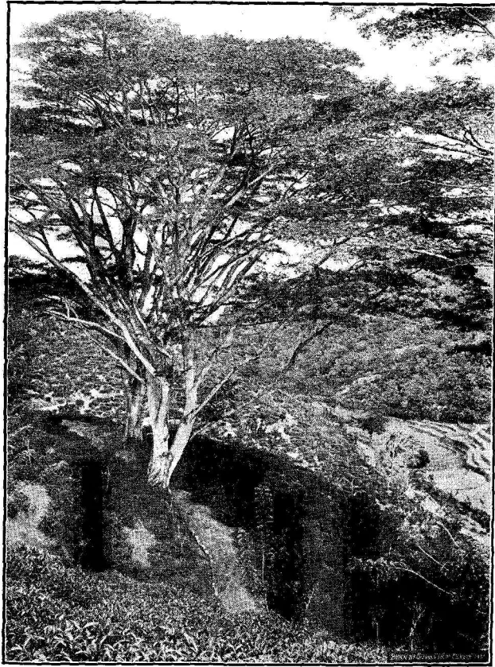
A black and white photograph of a large, spreading tree, identified as Albizzia moluccana, growing in a tea plantation. The tree has a thick trunk and many branches, with dense foliage. In the background, there are rows of tea bushes and other trees, suggesting a plantation setting.Albizzia moluccana in Tea
87Acacia melanoxylon, Australian Black wood.—This is a large tree which was tried in tea on several estates in Ceylon in 1907 but reports differ considerably. One estate reported that the tea was benefited but another stated that on account of its spreading root system the tree was injurious to tea. No more recent information is available.
Acrocarpus fraxinifolius.—This tree has been grown in tea in Dimbula, Maskeliya, and elsewhere but very little information is available. It seems liable to attack by pests notably Terias silhetana, the Albizzia caterpillar, which in some cases strips the tree bare of foliage. Apart from this it affords useful shade and gives a fair leaf-fall.
Albizzia Gamblei.—One of the Albizzias grown in tea in the Darjeeling districts in India.
Albizzia Lebbek, Mara (Sinh.) Kona Vakai (Tam.).—This tree is indigenous to Ceylon but although grown in tea in the Darjeeling districts it has not to the writer's knowledge been cultivated in Ceylon. It is a large tree with spreading but somewhat straggly habit. It is said to be subject to attack by a number of insect pests.
Albizzia lopantha, Brush Wattle.—This small tree has been tried on a number of estates at high elevations as a substitute for Acacia decurrens but reports do not indicate great success. Gadd (14) reports that it is just as liable to Cercospora theae as Acacia decurrens. Light (26) also reports it to be severely attacked by tea tortrix and other leaf-eating caterpillars as well as by a species of mealy bug.
Two superintendents report good growth at 5,000 feet but others state that it will not stand wind. It appears also very liable to root disease. All things considered the tree appears of little use as a substitute for Acacia decurrens.
Albizzia fastigiata.—No information is available as to the trial of this tree in tea but specimens growing in the Royal Botanic Gardens, Peradeniya, show a remarkably fine growth and a spread even larger than that shown by Albizzia moluccana to which the tree shows close resemblance.
Albizzia moluccana.—This is one of the best known high shade trees in Ceylon. It is a large tree with a spreading habit and light feathery foliage. It is also grown in India but to a less extent than Albizzia stipulata. It can be grown at almost any elevation in Ceylon but is less successful at higher elevations and its inability to stand strong wind is a further disadvantage. Elliott and Whitehead (13) state that it does well up to 4,000 feet.
88Propagation is always from seed as cuttings are seldom successful. Soaking the seed in hot water will hasten germination. Basket plants are said to be most successful but seed at stake is often used, 3 to 6 seeds being sown together. If planted 25 feet by 25 feet, 6 seeds together, one pound of seed is said to be enough for 20 acres. Other estates plant out larger nursery plants stumped to 2 feet or 2 feet 6 inches high. Holing in any case is advised.
Spacing will depend on whether the Albizia is grown alone, or in conjunction with other trees, and also on the treatment it is intended to give the trees. If they are to be lopped closer planting can be adopted than if they are planted solely for high shade. A great variety of planting distances is reported by estates, ranging from 10 feet by 10 feet to an eventual stand of 70 feet by 70 feet. Probably 30 feet by 30 feet can be taken as an average where Albizia is planted alone. When mixed with dadaps the following examples of estate spacing may be quoted:
| Albizia | Dadaps |
|---|---|
| 20 feet by 20 feet | 10 feet by 10 feet |
| 20 ,, ,, 20 ,, | 16 ,, ,, 16 ,, |
| 40 ,, ,, 40 ,, | 12 ,, ,, 10 ,, |
| 35 ,, ,, 35 ,, | 10 ,, ,, 10 ,, |
| 16 ,, ,, 16 ,, | 16 ,, ,, 16 ,, |
One of the chief drawbacks of Albizia moluccana is the large size to which it attains. This growth can be kept in check by regular lopping from a comparatively early age. The tree, however, does not generally stand loppings well and the dying off of the bark of large branches or even the death of the tree is not uncommon. Moreover, the weight of green material obtained per acre is substantially less than that which can be obtained from dadaps or Gliricidia maculata. If grown in conjunction with other trees Albizzias are usually used for high shade and to afford some measure of protection against tortrix. In this case the trees are not lopped. In other cases a proportion of the trees are lopped and the remainder allowed to grow up for high shade. Some estates report that they have given up lopping Albizzias on account of the casualties that result. Lopping too early nearly always results in damage. A Dolosbage estate does not loo till trees are 18 inches in girth at 3 or 4 feet from the ground. Up-country estates usually start pollarding Albizzias at 10 to 15 feet. Lopping is done at intervals varying between twice a year and once in 18 months. When lopping it is always advisable to leave a number of unlopped branches on the trees, otherwise death is liable to result,
89especially if dry weather follows lopping. Sometimes lopping is only done at the time of manuring. The weight of green material per acre obtained from lopping Albizzias will always be considerably less than that which can be obtained from lopping dadaps, Gliricidia or Acacia decurrens and in view of this and the inability of the tree to stand hard or frequent lopping it would appear preferable to make use of one of the above trees as a source of green material and to plant Albizia moluccana only for high shade. An experienced superintendent of an estate in the Southern Province is of the opinion that Albizzias are excellent shade trees for tea but should never be lopped.
The question of the removal of old Albizzias in tea is an important one and is beset with considerable difficulties. As usual, opinions differ. Some are of the opinion that old Albizzias do no harm to tea but the general consensus of opinion is that the trees get too big and must periodically be removed. One superintendent states that the trees get out of hand at 5 years of age but the more general opinion is that they should be cut out after 8 to 12 years in the low-country and after about 15 years up-country. One mid-country estate reports that the trees are cut out when the girth exceeds feet at 18 inches from the ground. Some estates advocate ringing old trees and one superintendent states that the roots rot very fast and root disease in tea seldom results. On the other hand a superintendent in Morawak Korale says that Albizzias are responsible for a great deal of Ustulina. Others are averse to ringing as dead branches fall on the tea and are also a source of danger to coolies. One superintendent points out that if the branches are not lopped before felling much less damage will result to tea. The operation of eradicating large Albizzias is in any case very laborious and expensive and is bound to result in considerable damage. With these disadvantages it would appear questionable whether Albizia moluccana is worth planting in tea, and yet it is certain that tea under Albizzias almost always appears healthy, even bushes close up against the stems of large trees. Figures as to the comparative yield of bushes from far and near to Albizzias are not available in Ceylon but striking figures in this connection have been quoted with regard to Albizia stipulata in India. Probably the best solution is to use Albizzias unlopped as high shade mixed with other smaller shade trees and thus reduce the number of large trees per acre which will eventually have to be eradicated. The rapid growth and light filtered shade of Albizzias are two further points in their favour while it is probable that their root action is of especial benefit. An instance is given from Maskeliya of an abandoned field under Albizia; when the tea was again taken into cultivation it was found to be in excellent health and subsequently gave 700 lb. per acre.
90Among disadvantages must be reckoned susceptibility to various pests and diseases especially Terias silhetana, the Albizia caterpillar, which especially defoliates the trees both in the low-country and up-country. Light (25) speaking of a serious outbreak of this pest where 400 acres were completely defoliated states that some trees which had been allowed to grow up to 30 or 40 feet unlopped were practically undamaged though standing among smaller trees which had been severely attacked. Calotermes militaris has in some districts also proved a serious pest of Albizia. The wood of Albizia moluccana is of value for making chests. It is also stated that the tree will often grow on poor soil where it has been found impossible to establish other trees.
The drawbacks to Albizia moluccana are many but its marked merits make one hesitate to recommend its rejection as a high shade tree for tea.
Albizia odoratissima, Suriya mara (Sinh.) Ponnaimuran-kai (Tam.).—This tree is grown as a shade tree for tea in certain districts in Assam, particularly on very light grey soils. It is also grown in the Darjeeling districts. It is said to be very beneficial to tea. A specimen in the Royal Botanic Gardens, Peradeniya, shows a straggly habit and poor thin foliage, but the tree is probably old.
Albizia procera, White siris, Kondha Vagha (Tam.).—A large spreading tree conspicuous for its yellowish white bark. It is said to be commonly grown in tea gardens in the east of the Duars where the growth is said to be slower than that of Albizia stipulata.
Plants grown at Peradeniya from seed imported from Assam have made good growth. Some of the trees have been lopped and have recovered well. Reports from higher elevations, however, speak of unsatisfactory growth.
Albizia stipulata, Sau, Kabal mara, Hulan mara (Sinh.).—This tree is but little known in Ceylon but is of immense importance in northern India. Anstead (2) says that it is largely grown in tea in India and is lopped at the beginning of the dry weather. It is believed however that more often the tree is not lopped. Bald (6) describes it as the most favoured tree for planting among tea in northern India. He says that the loppings form a valuable mulch and that the light foliage does not overshadow the tea. Mann and Hutchinson (28) state that it becomes almost leafless in the hot dry weather. It is very deep rooted and considerable store is set on its root action. It is propagated from seed which is freely produced. The tree is stated to be very indifferent to soil differences. The timber is
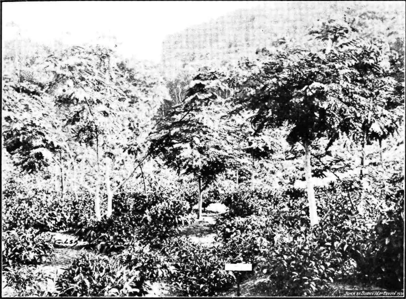
A black and white photograph showing a dense grove of Albizzia procera trees. The trees have tall, slender trunks and large, pinnate leaves. The forest floor is covered with undergrowth. In the bottom left corner, there is a small label that reads "LSB". In the bottom right corner, there is a small label that reads "Brockton Hill, Mass. 1911".Albizzia procera
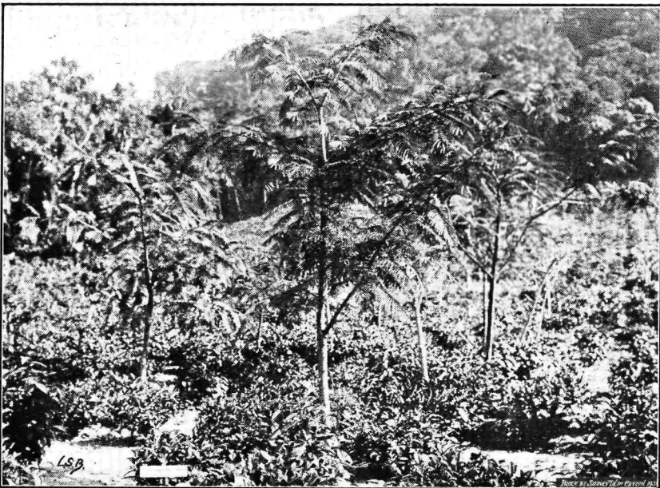
A black and white photograph showing a dense grove of Albizzia stipulata trees. The trees have tall, slender trunks and large, pinnate leaves. The forest floor is covered with undergrowth. In the bottom left corner, there is a small label that reads "LSB". In the bottom right corner, there is a small label that reads "Brockton Hill, Mass. 1911".Albizzia stipulata
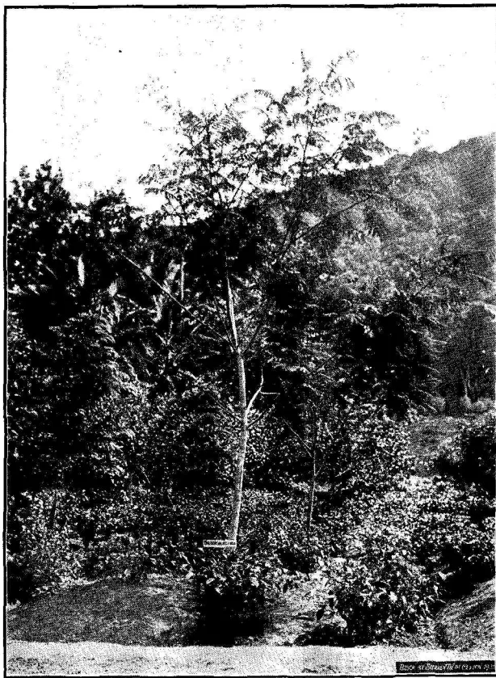
A black and white photograph of a young Dalbergia assamica tree, 18 months old, growing in a forested area. The tree has a slender trunk and dense foliage. A small scale bar is visible near the base of the tree. The background shows a hillside with other trees and vegetation.Dalbergia assamica—18 months old
91more valuable than that of Albizia moluccana and it does not grow so big or so fast. Reports of the use of this tree in Ceylon have been received from Haputale, Welimada, Wattegama, Morawak Korale, and Kalutara. The superintendent of an estate in the Morawak Korale describes the tree as superior to Albizia moluccana as it does not grow so big or so fast. These are not very convincing advantages and the other reports are in the main unfavourable. A few trees grown at the Experiment Station, Peradeniya, have not given great promise. The growth is comparatively poor and the trees do not stand lopping well.
Cassia didymobotrya, Candelabra tree.—This small tree has a handsome yellow flower and is often grown in gardens as an ornamental tree. It has been extensively cultivated in tea on an estate in Dickoya and on another near Nanuoya.
It is easily propagated from seed but cuttings are said not to be successful. This tree flourishes in the mid-country and at all higher elevations. It appears hardy, free from pests and diseases, has a very convenient habit and stands lopping well. The tree flowers profusely twice a year. This is its only obvious disadvantage as normally a tree should be lopped before it flowers. Loppings from a tree in flower, however, were sent for analysis and reported to be rich in mineral constituents. The weight of loppings which can be obtained per acre is obviously considerable. On the Dickoya estate mentioned the tree was being planted in places where dadaps were not doing well and formed a valuable substitute. Many estates have areas where dadaps do not flourish and a useful substitute will have considerable value.
When young the stems are said to be somewhat weak and staking may be required. The trees may be lopped twice a year or oftener.
Cassia multijuga.—The possibility of using this tree in tea has been discussed by the staff of the Tea Research Scheme. It is thought, however, that the tree is not sufficiently hardy to be of any great use.
Dalbergia assamica.—This native of Assam has been introduced to Ceylon tea estates in recent years. The circulars received back from estates contained only two reports on this tree though it is believed that it is being grown on a larger number of estates.
An estate near Gampola says that the tree is thriving well, while an estate at Haputale records that the tree is growing, but gives no further information. Trees planted from seed on the Experiment Station, Peradeniya, in 1928, are making remarkably rapid and healthy growth.
92Derris dalbergioides.—This is a medium sized tree native to Burma and Malaya which is being grown on a tea estate at Haputale. No further information is given.
Derris microphylla.—Information as to this tree is mainly from Java where it is stated to be coming into considerable favour as a shade tree for tea. The following advantages are given:
If the range of elevation is similar in Ceylon the usefulness of the tree would be principally confined to low-country tea. The description is attractive, however, and it is interesting to note that an estate in Kalutara is growing it and describes it as an excellent shade tree for tea. The superintendent states that it stands wind well, is free from disease, and gives a fair leaf-fall.
The tree appears to be a most promising acquisition and well worthy of more extended trial.
Derris robusta.—Seed of this tree was imported into Ceylon from Assam, in May 1926, and distributed to several estates. Seedlings at Peradeniya were attacked by the Kalutara snail but those which survived have grown into handsome healthy trees.
Only six estates have furnished reports on this tree in their replies to the circulars. An Uva estate at an elevation of 4,000 feet reports that the tree was not a success. The tree apparently requires a lower elevation but appears well worthy of trial in the mid and low-country. It is attacked by shot-hole borer.
Erythrina lithosperma, Dadap, Eramudu (Sinh.), Murunka (Tam.).—This is quite the most common tree used in tea in Ceylon. It is also considerably used in South India. The highest cultivation at which it can be really successfully grown appears to be about 5,000 feet. At the higher elevations it is often reported that it can be grown in sheltered situations but not on wind-blown slopes. The tree can be grown at low elevations but generally speaking does not seem to be very successful below about 1,000 feet.
93The tree is occasionally propagated from seed in which case the seed is usually sown in nurseries or baskets and the seedlings planted out later. The use of cuttings is, however, far more general and is to be preferred. Elliott and Whitehead (13) recommend the planting of 4-foot cuttings in prepared holes at an angle of 60 degrees with the ground, inserting 18 inches of the cutting in the ground.
The object of planting cuttings sloping is to enable the earth to be rammed more firmly round the cutting. This is certainly a point of great importance. On the other hand this method entails more trouble in training one upward shoot to form the future tree and removing others. If upright cuttings of sufficient length are used, and these shoot satisfactorily from the tops the original cutting forms the main stem and a tree of the desired shape is more easily produced. Probably 6-foot cuttings are more generally used and are likely to be the most successful. One estate reports greater success with a forked 6-foot cutting than with a plain one. Cuttings taken from the central branches of the tree are said to be more successful than outside branches. Holing is generally done but is by no means universal. A hole 18 inches deep and wide is usually considered to be sufficient. Often planting is done in alavangoe holes. Cuttings frequently die back to a considerable distance from the top and some estates adopt the practice of tarring the tops of cuttings or dipping them into Skene's wax and claim considerable advantage from the practice in the prevention of die-back.
An almost infinite variety of planting distances are found on estates. When planted alone spacing varies between 9 feet by 9 feet and 20 feet by 20 feet, but intermediate distances of 12 feet by 12 feet to 16 feet by 16 feet are most common. The actual spacing must depend on the spacing of the tea. Any closer spacing than 14 feet by 14 feet is likely to cause too dense a shade and to increase unduly the cost of lopping. Dadaps are frequently planted with Albizia moluccana, the latter tree forming the high shade. A few actual estate examples of spacing employed in such mixed planting are given:
| Dadaps | Albizia | ||||||
|---|---|---|---|---|---|---|---|
| 10 | feet | by | 10 feet | 20 | feet | by | 20 feet |
| 16 | ,, | ,, | 16 ,, | 20 | ,, | ,, | 20 ,, |
| 12 | ,, | ,, | 12 ,, | 30 | ,, | ,, | 30 ,, |
| 10 | ,, | ,, | 12 ,, | 40 | ,, | ,, | 40 ,, |
| 10 | ,, | ,, | 10 ,, | 35 | ,, | ,, | 35 ,, |
Dadaps as low shade are often interplanted with Grevillea robusta as high shade. In such cases planting distances will
94be very similar to those quoted above except that the Grevilleas may be planted somewhat closer than Albizzias. Sometimes dadaps, Grevilleas, and Albizzias are interplanted. In other cases dadaps and Glicidia maculata are mixed, with or without high shade.
In the large majority of cases dadaps on tea estates are periodically lopped. The frequency of loppings depends on the rate of growth (which is influenced by the elevation and climate), the labour supply, the manuring programme, and other practical considerations. The maximum possible number of loppings in very favourable conditions may be four per annum; usually not more than three will be possible, and in dry districts or at high elevations less than this. It is common to lop only one line at a time so as to remove all shade simultaneously. Sometimes, though somewhat rarely, the dadap is used as high shade, in which case trees at fixed intervals, or possibly whole rows, will be left unlopped. One estate in lower Dickoya reports that lopping results in the death of the trees. A few estates only trim up the side branches.
The cost of lopping and spreading the green material from dadaps, apart from any burial or forking in, is stated to be between 60 cents and Rs. 2 to Rs. 2.50 per acre. The more usual figure is in the neighbourhood of Re. 1.50.
The general estate practices with regard to the disposal of green material have been described and commented on. With dadaps the cost of forking in loppings by envelope-forking in alternate lines is given as between Rs. 4 and Rs. 7 per acre, or say, including lopping and spreading Rs. 6 to Rs. 10 per acre. Burying loppings in pits is not so general. The cost will probably be rather less than that of forking in. One estate gives the cost as Rs. 4.50 per acre per round.
The actual lopping should be done with some care; the dadap is a fairly hardy tree but repeated hard lopping is likely to result in dieback or even death.
Bamber (6) gives the annual average weight per acre of loppings of dadap at the Experiment Station, Peradeniya, as 9,622 lb. For a later period dadaps planted 16 feet by 16 feet, giving 170 trees to the acre yielded 12,212 lb. per acre per annum over a period of five years.
There is a very general opinion that at a certain age dadaps should be replaced and dug out but the age at which this should be done is more or less a matter of conjecture. Wright (36), writing a good many years ago, recommends that dadaps in tea should be uprooted every year and replanted. Few would be found now to agree with such a view. The estimate of the
95useful life of a dadap tree is generally estimated by estates to be about 10 years in the low-country, and 15 up-country. A good deal depends on the treatment the trees have received. One up-country superintendent says that by regular lopping the size of the trees will be kept down and states that he has seen 15-year-old dadaps no bigger than a man's leg and still vigorous. Some 18-year-old dadaps were dug out at Peradeniya; the roots were well provided with nodules, the trees were still providing a fair weight of loppings and appeared to be doing useful service. Other estates remove trees when they attain a maximum girth, e.g., 16 to 18 inches. The question is difficult and no rule can be given. The green manure experiment now in progress at Peradeniya may shed some light on the matter in the course of years. Clean extraction, preferably by monkey jack or wrinch, is advisable.
The dadap is subject to a number of pests and diseases but they are scarcely of sufficient seriousness to become a limiting factor in the planting of the tree and therefore do not call for detailed comment in this section. Probably eelworm is the most serious pest of dadaps at the present time, both on up-country and mid-country estates.
The wood of the dadaps is of little use except for smoking rubber or brick making. There is no disputing the fact that tea does well under dadaps. Plots at Peradeniya which have received no nitrogen for years other than that obtained from dadap loppings have throughout maintained their yield and healthy appearance.
The tree is certainly a valuable asset to tea estates over a considerable range of elevation.
Gliricidia maculata.—For a number of years the Department of Agriculture has drawn attention to the valuable properties of this medium-sized tree as a shade and green manure tree for tea.
The tree flourishes from sea level up to about 3,000 feet. Several reports have been received of lack of success at higher elevations.
The tree can be propagated from seed or cuttings. The latter is the easiest method and moreover good seed is not easy to obtain on account of insect attack. Many estates use short cuttings of about 3 feet planted sloping. If cuttings are scarce this may be economical but long vertical cuttings shoot so readily from the top that their use is always to be preferred and produce a tree of desirable shape much more quickly. Most estates use 6-foot cuttings. Some estates dip the ends of the
96cuttings in Skene's wax or some such waterproof material, but this is scarcely necessary as the tree is very easily established in suitable districts.
The tree is very much the same size as the dadap and planting distances are consequently similar. Gliricidia is very often interplanted with Albizzia or Grevillea and in this case also spacing will be similar to that used for dadaps.
The trees are usually lopped periodically. Rather more frequent lopping is possible than with the dadap. At Peradeniya dadaps usually afford three loppings a year but Gliricidia always four. Moreover the severest lopping can be employed without fear of damage. In districts suitable to both trees the weight of loppings from Grevillea will always be in excess of that from dadaps. Over a period of 5 years, Gliricidia at Peradeniya planted 16 feet by 16 feet yielded 24,514 lb. of green material per acre per year compared with 14,546 lb. from dadaps of the same age and with the same spacing.
It may be mentioned that it is necessary to lop the first growth fairly early or the tree will become top heavy and liable to be blown down. The tree is sometimes grown for the sake of its light shade and left unlopped. This is not the best way to make use of Gliricidia, since the large quantity of green material afforded by lopping is one of its great advantages.
The opinion that Gliricidia should be replaced at a certain age is not so frequently expressed as is the case with dadaps, 8 to 12 years is given by some as the economic life of a Gliricidia. As the tree has been compared with the dadap it may be convenient to tabulate its advantages:
Freedom from pests and diseases is one of the advantages usually ascribed to this tree. In certain drier districts, however, the tree is somewhat seriously attacked by scale insects, e.g., Pseudococcus virgatus, Pseudococcus citri, and Coccus viridis, the green bug. The latter pest has in certain instances spread from Gliricidia to tea and has caused some apprehension. It is believed, however, that if the Gliricidia was kept regularly lopped the danger from these pests would be greatly diminished.
It is said that neither cattle, goats, nor sambhur eat the leaves and this in itself is a considerable advantage.
Gliricidia is undoubtedly one of the most valuable of low shade trees and has certainly come to stay.
97Grevillea robusta, silver oak, silky oak, Savuka maram (Tam.).—Though not leguminous this is considered by many superintendents to be the most valuable tree for tea. Though more common at higher elevations the range of this tree appears to be practically unlimited in Ceylon. Some estates report that the tree is hard to establish and the growth is slow, but this cannot be a matter of elevation since the complaint comes from estates of widely different elevations.
Propagation is by seed sown in nurseries or baskets. Sometimes large stumped nursing plants are planted out in the field, sometimes small plants 5 to 6 inches high. When small plants are used pegs are necessary to mark the spot. Basket plants are most successful.
The arrangement and spacing of the trees differ widely. Some estates plant windbelts only, some plant the trees along roads and boundaries, and some plant among the tea, with or without the addition of windbelts, roadside, or boundary lines. Grevillea is often used for high shade in addition to dadaps or Glicidia. The following are examples of spacing employed by estates when Grevillea is planted alone: 30 feet by 30 feet, 20 feet by 40 feet, 30 feet by 15 feet, 20 feet by 20 feet. When planted in addition to dadaps and Glicidia one estate plants 30 feet by 30 feet and another 100 feet by 40 feet. For windbelts one estate plants 15 feet by 15 feet. Another estate plants windbelts 25 to 30 feet wide and 300 to 400 feet apart.
Regular lopping of Grevillea is not generally practised. Low side branches are usually trimmed up. A Haldummulla estate cuts the trees across at 15 to 20 feet to induce a spread and claims that this practice saves damage by wind and makes it easier and cheaper to eventually cut out the trees. The superintendent of a Matale estate reports that Grevilleas were formerly lopped every 8 years but as poor foliage resulted and the trees were found to be more liable to root disease and gummosis the practice was given up. Some estates recommend that the trees should be periodically coppiced and a new shoot allowed to grow up.
There is again considerable difference of opinion as to the age at which Grevilleas should be eventually replaced and eradicated, and this would appear to depend largely on the district and suitability of soil. A Haputale estate reports that Grevilleas die out in patana soil in from 8 to 10 years, a Badulla estate reports that trees over 25 years old are gradually killed out by gummosis, while a Dimbula estate states that "40-year-old plants are now approaching the limit of useful life". Some estates cut out Grevilleas when they reach certain dimensions of girth but in the case of this tree it would appear to be a question of deterioration rather than size.
98Root disease has frequently originated from coppiced Grevilleas which have failed to shoot again and clean eradication in such cases is highly desirable.
The re-establishment of Grevilleas in old tea is sometimes reported to be impossible. Complaints of this nature have been received from Dimbula which district is apparently not particularly suitable for Grevilleas. At least one estate in that district, however, has shown that with the care Grevilleas can be established in old tea.
Loranthus is the most general pest of Grevillea.
The particular value of the Grevillea is ascribed to the copious litter furnished by the constant dropping of leaves. The litter will be incorporated in the soil when manuring or forking is done, but as this is practically never incorporated in the green state it has therefore lost a considerable amount of value before it enters the soil. The root action of Grevilleas is extensive and to it great value is attached.
Leucaena glauca.—This small tree is one of the oldest green manuring plants cultivated in the Dutch East Indies (under the name of Lamtoro) where it is said to flourish up to 3,500 feet. The indications are that its range in Ceylon is similar—the growth of the tree in Dimbula and Dickoya at about 4,000 feet is unsatisfactory. Some mid-country estates have tried the tree in tea but their reports are not favourable.
Propagation is from seed. The seed has a very hard coat and should be immersed in hot water and allowed to soak for 24 hours before sowing.
The tree has a feathery foliage and gives a light shade but as a source of green material it cannot be compared with the dadap or Gliricidia. It is too small as a high shade tree and therefore does not appear to perform any particularly useful function in tea.
The tree seeds profusely from an early age and the seedlings if once allowed to get a hold are hard to eradicate. The seeds when boiled and crushed makes a useful cattle food. The wood is stated to provide excellent fuel.
Pongamia pinnata, Karanda (Sinh.), Punkum (Tam.).—This is a large tree that has been planted among tea in Urugala. It has been planted mainly as a protection against wind for which purpose it is said to be very suitable.
(To be continued)
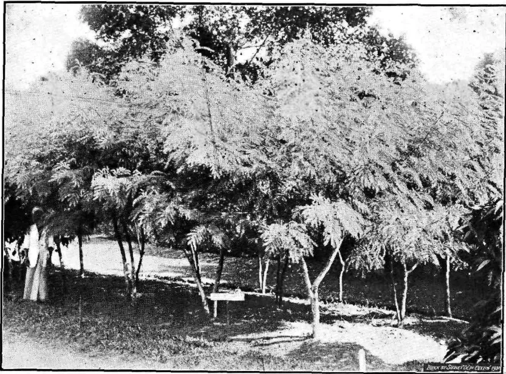
A black and white photograph showing a group of Leucaena glauca trees in a garden setting. The trees have large, feathery, bipinnate leaves that create a dense, light-colored canopy. They are planted in a row, with a path or clearing visible in the foreground. The background shows more foliage and a hint of a building or structure. The photograph is framed by a thin black border. In the bottom right corner of the image, there is a small, faint inscription that reads "Duck in Garden 1890".Leucaena glauca
C. N. E. J. DE MEL.
B.SC. (HONS.), B.SC. (AGRIC.), LOND.,
DIP. AGRIC. (WYE),
DEPARTMENT OF AGRICULTURE, CEYLON
THE Black Beetle or Rhinoceros Beetle of coconut is a familiar insect in all coconut-growing districts of Ceylon. It has been found in this Island perhaps for centuries. Until recently the damage caused by this insect received little attention. In fact the losses caused were considered negligible by most owners of coconut estates, although the insect had been declared a pest so far back as 1907. Recently many inquiries and complaints about damage by this beetle have been made; and in this article some of the causes of the undoubted increase of this beetle in certain districts will be traced, and comments upon certain problems of cultivation raised in this connection will be made.
The Black Beetle (Oryctes rhinoceros L.) belongs to the sub-family Dynastidae which includes some of the largest members of the order Coleoptera or Beetles. It is widely distributed in the East, in India, Burma, Ceylon, the Straits Settlements, Federated Malay States, Siam, Dutch East Indies, and the Philippine Islands. Full details of its life-history in Ceylon are given in Leaflet No. 21 of the Department of Agriculture. The different stages in the life of this insect are as follows:
Egg.—Hatches in about two weeks.
Larva or grub.—Fully grown in three to four months, sometimes longer.
Pupa.—Lasts three to four weeks.
Beetle.—(Lives in captivity from 4 to months in the Dutch East Indies, according to Leefmans (1). Period not known in Ceylon.
The descriptions of the losses caused to coconut cultivation in other countries will provide strange reading to anyone whose acquaintance with this pest is limited to Ceylon. So will some of the control measures adopted. Leefmans (2) working at
100Padang on the west coast of Sumatra found that 60 to 80 per cent. of the coconut palms were injured and over 10 per cent. killed by this insect in association with the Red Weevil. The annual losses in the Dutch East Indies are estimated by him in 1920 at several million florins. Mackie (3) estimates the losses in the Philippines as "an annual loss, in the tree values alone, throughout the Archipelago of 2,897,230 dollars due solely to the attacks of this one species". It must however be stated that this estimate is based not on the numbers of trees actually found dead, but on those which "were severely injured and would, in most cases, succumb as a direct result of attacks of this beetle". In percentages the probable annual loss in four districts is computed as 1.07% of the total number of trees, and this figure is adopted in calculating the total monetary loss for the Archipelago. In Burma, where in 1910 the cultivation of the coconut is said to have been limited to small groves or to mixed plantations with only occasional defined coconut estates, the damage in that year is recorded as most serious. "It was said to attack the young shoots at fruiting time with the result that the trees cease to bear permanently. One or two good producing tracts were reported to return no yield ....." (4). In 1923, Ghosh (5) records about the same country that "the cultivation (of coconuts), instead of extending is fast decreasing, chiefly owing to the ravages of insects, of which the rhinoceros beetle or black coconut beetle is the most important". The pest is said to have been introduced into Samoa from Ceylon in 1909 (6). Within three years it had invaded a large area, and by 1914 several plantations are said to have been wiped out. The alarm that ensued seems to have been such that a Commission of Enquiry in 1917 reported that "many trees not actually dead were cut down, some thirteen thousand on two plantations in close proximity, only a portion of which were actually dead". In Vaitele (Samoa) out of five hundred palms felled, only five per cent. were found dead. There are other instances of the felling of trees which might have recovered from the attack, and of elaborate and expensive control measures.
The position in Ceylon has never reached such a grave state. Friederichs (7) who made an extensive survey in the tropics in connection with this pest in Samoa, states in 1919 that although Oryctes spp. were found in great numbers in Ceylon and comparatively very little is done to combat them there, their presence does not apparently interfere seriously with coconut cultivation. He considers that the Ceylon palms evidently possess certain properties that enable them to resist the ravages of these beetles, and it is possible that they would
still prove resistant if cultivated in Samoa. It is not necessary to assume a special resistant type in Ceylon to explain our comparative immunity from this beetle. The area under coconuts in Ceylon is given in the Blue Book for 1928 as 878,501 acres of which 348,828 acres are in the North-Western Province where the present increase of the pest is found. The figure for 1929 for Ceylon is revised as 1,100,000 acres. The population of this insect is more or less evenly distributed in this large area, so that the damage done has not been fully appreciated, more so because it is chiefly superficial. With such extensive areas of the palm to feed upon, the beetle has not apparently been in need of doing very deep damage to the trees. But the severe localised attacks in instances where this pest has found attractive breeding places and has been allowed to increase unchecked amply illustrate the possibilities of serious damage even in this Island.
The literature on this pest shows very conflicting accounts not only of the details of the life-history of this insect, but also of the relative efficacy of the various methods of control. It can only be concluded that the nature of the damage and the habits of the beetle vary in different countries. It is therefore necessary to examine local conditions and to formulate the most usefully adaptable methods for this country.
This insect does all its damage in the beetle stage. The adult beetle reaches the crown of the palm and proceeds to bore into the cabbage, which is its most favourite point of attack. It does not gnaw the wood. Its head and mouth parts are constructed to adapt it to chisel out the tissues by an up and down movement of its head. The beetle does not pass the pieces of wood or fibre through its body, but merely sucks the exuding sap. Holes made by the beetle are very conspicuous on young palms, on which the chiselled out material can be seen protruding from the wounds. Sometimes a gummy substance forms round the injury. In older palms the holes made by the insects can be seen on the leaf-bases, and sometimes on the trunks after the originally injured leaves have fallen off.
In most cases the injury does not proceed much deeper than the cabbage. The writer has seen instances where in young palms the tender cabbage had been so completely cut through that it came off at the injured place when pulled, or hung down dry and discoloured leading one to suspect the disease "Bud Rot". In other cases the damaged petioles snap when the branch fully unfolds. It is of course a common sight to see the leaflets that had been cut through in the cabbage hang down from one or both sides of the midrib after the branch
102has unfolded. When the leaves have been attacked on a large scale a tree presents a very rugged appearance, and suffers a definite set-back and a stunting of growth.
In areas where there have been severe attacks the beetle has been known to work its way into the softer tissues near the bud or apex of the tree. It is possible in such cases that the growing point may be damaged killing the tree. Such cases have been recorded by observers in other countries, although the writer has not met with any trees directly killed by this beetle in this manner. A review of an article by Friederichs and Demandt (8) has the following account: "Palms of all ages from three months upwards are affected. Injury below the vegetative point or heart is comparatively rare and not directly dangerous, though it affords an entrance to other pests and to water. If much higher than the heart, it seldom extends to the latter, but should putrefaction ensue the heart-leaves may rot and the palm may die. Usually the attack occurs at the level of the heart or slightly above it, and this is very injurious. Direct injury to the heart is not necessary to kill the palm; a large hole, bored through the inner leaf-bundle 12 or even 16 inches above the heart and permitting moisture and rot to penetrate, is quite sufficient to cause death. Owing to the above three sites of attack being found in Samoa and in the Far East, the Rhinoceros beetle is more dangerous there than in Ceylon or than its related species in East Africa. In Ceylon (also perhaps in British India) and in East Africa, only the second form of attack (much higher than the heart) occurs, and the mine usually does not extend so far as the heart".
Serious loss of crop has however resulted on many estates in the Chilaw district due to the damaging of the inflorescences. These are either wholly or partly cut through even while they lie protected within the sheath. Most of these instances were noticed in areas where the beetle was breeding in large numbers. The intensity of the attack and the type of damage depend on the numbers of the beetle that are being bred on the estates. In normal cases the damage is superficial on the cabbage.
The sudden and severe outbreaks in many foreign countries mostly followed special circumstances which brought into being very extensive and favourable breeding places for this insect. Mackie (9) referring to the Island of Lete states as follows: "The above-mentioned district was in the direct path of a typhoon which swept that island in November 1912. As a consequence large numbers of coconut palms were either blown down or had their tops blown off. These were allowed to remain and no attempt was made to destroy them. By the beginning of 1914 the trees were soft enough to allow the
103beetle to propagate therein. In this favourable environment they developed in enormous numbers and the trees that had escaped the typhoon were nearly all killed by the beetles". Evidence shows that the rapid spread and the phenomenal damage caused in Samoa, already referred to, were chiefly due to the excellent breeding places in refuse heaps and other sites which that Island supplied to the beetles said to have been introduced from Ceylon. In the Dutch East Indies, Leefmans (10) mentions dying and dead palms, rubbish from sugar cane and rice husking mills, and several other varieties of decaying material found in quantity everywhere, which can sufficiently account for the ravages of this beetle in that country. The present increase of the beetle in some districts in Ceylon can also be directly traced to a supply of breeding places created for the beetle by certain processes of cultivation as will be shown below.
In Ceylon loss of crop is perhaps the most serious effect of beetle attack. But indirect damage of a more fatal nature may result. The Red Weevil (Rhynchopherus ferrugineus Fabr.) often finds entry into healthy palms through the injuries made by the Black Beetle. The writer has found these weevils, sometimes pairs of the male and female, in the burrows made in the crowns of palms by the Rhinoceros beetle. The weevil lays its eggs in the living palm, and its grubs on hatching cut their way into the palm where they spend their larval stage. If the grubs are in the upper part of the tree, they soon reach the apex and kill the tree. If in the lower part of the trunk, the damage generally goes undetected until after a large cavity has been cut out by the grubs definitely weakening the palm.
Another indirect effect is that this beetle, which flies into healthy and diseased palms alike, often acts as a carrier of the fatal "Bud Rot" disease caused by the fungus Phytophthora. Again, it has been recorded that rain water entering the burrows made by the Black Beetle leads to decay of the tissues around, finally involving portions of the trunk or causing progressive decay of the bud by the access of secondary organisms.
The Black Beetle attacks many other palms besides the coconut, and breeds in their decaying wood. Hutson (11) mentions the occasional occurrence of its larvae in "dead and decaying stumps of old dadap and jungle trees". Friederichs and Demandt (8) state that in Samoa few or no species of trees are rejected for oviposition. This however is not recorded in most other countries. The insect shows a very marked preference for the coconut palm.
104The problem of this beetle in Ceylon centres mainly on its breeding places. The chief of these are enumerated below, with notes drawn from the writer's observation. Moisture is a necessary condition in breeding material, but the grubs cannot exist in sodden or water-logged conditions.
(a) Dead Coconut Trees and Decaying Logs.—These form the commonest breeding ground. A decaying coconut log invariably contains grubs of this beetle, a log six feet long often accommodating a hundred grubs of various sizes. Trees killed by "Bud Rot" if left standing supply egg-laying places in their upper ends, and in the trunks as decay proceeds. Decaying logs account for most of the beetles bred on the average coconut land. Stumps, logs used for fence-posts, for bridges across drains, for barricades, and for numerous other purposes in exposed situations become prolific breeding places as soon as decay sets in.
(b) Cattle Manure.—Accumulations of cattle manure are equally common and important breeding spots. Several hundred grubs can be picked up from a manure heap. Manuring by cattle in trenches has also led to breeding of the beetles on a large scale. In several cases where cattle had been tied on circular trenches or on shallow pits and where the dung had not been covered over immediately after by a sufficient layer of earth, grubs of this and of allied beetles were found in large numbers. On a small estate in Lunuwila about two hundred grubs were raked out from the thin layer of dung in each of many such trenches. Immediately after the cattle are removed, it is best to mix up the dung with a little earth, and to cover up the whole under a compact layer of earth at least one foot deep. As the trenches are usually shallow, earth may be heaped up above ground level to obtain the necessary covering.
(c) Burying of Coconut and Other Refuse.—The safety with which coconut branches and other refuse may be buried depends largely on the type of soil. On clay soils and the heavier types of soils such material may be buried in trenches and covered over immediately after under a foot or more of well-pressed earth. On porous sandy soils this practice is dangerous. Almost all the cases of recent increase of this pest have occurred on sandy soils where the theory that everything which drops from the tree excepting the nuts should be returned to the soil has been practised with zeal.
On most of these estates whole branches, flower stalks, and other woody material from the tree have been buried either in trenches or pits two feet or less in depth, or in furrows made by the trench plough. These furrows were both too shallow
105and not wide enough to accommodate the branches fully, and the soil cover was nowhere more than six to eight inches deep. The result was that the beetles began to lay eggs as soon as the buried material showed signs of decay. The writer has found adult beetles in these furrows. The same result followed in the case of the trenches. Although the latter were two feet deep, the soil in the district in question is sandy and porous; and the beetle sensed a favourable breeding ground even at this depth. Leefmans' (10) finding "that even a thin layer of sand prevents the beetles from discerning the attractive breeding place hidden in this simple way" has not proved true for Ceylon, nor in Samoa according to Friederichs and Demandt (8). The woody midribs of branches and the stalks of inflorescences form most attractive material for egg-laying when they remain moist and reach a certain state of decay as happens when buried.
A instructive example was studied by the writer in 1928. A severe attack of beetle occurred on an estate in Madampe. First the branches were attacked in the cabbage and the trees soon presented a very ragged sight. Then the inflorescences were cut through and no nuts would form.
On visiting the estate there was found a very well-kept plantation free from decaying logs and with no littering of branches or of refuse. It was an almost clean swept land, so that it was the greater surprise that so severe an attack of beetle was found. On enquiry it was learnt that everything that dropped off the tree except the nuts was buried in trenches two feet deep and two and a half feet wide. This had been systematically done over most of the estate eight to ten months previously. The contents of a trench were immediately unearthed, and at the bottom of the trench were branches and other woody material from the tree moist and in a partial state of decay. In this material the larvae of the beetle were found all along every trench exposed. In a portion of trench two and a half feet long, nearly two hundred grubs, a few pupae, and two adult beetles were collected. Ultimately all the trenches were re-opened and the decaying material thrown out. A very similar condition was found on a neighbouring estate of the same proprietor. Heavy rains at this time caused the trenches, which in this second case had not been covered up to ground level, to be filled with water. The grubs unable to exist in the sodden soil began to burrow their way to the surface of the trenches; and I was authoritatively informed on a later visit that an empty cement barrel was filled with these collected grubs from two acres alone. This sufficiently illustrates the possibilities of breeding the beetle in this type of soil by indiscriminately burying all droppings from the palm. It has to be
106mentioned that on a recent visit, three years after, I found the trees on this land practically free from beetle damage, healthy, and in good bearing. This shows that it is easily possible to control this pest.
(d) Burying of Town Garbage.—Burying of scavengings from towns is practised for their manurial value. It was found in one instance that daily collections were dumped into a deep broad trench and only covered after each trench became full. The result was that the rather old trees on this land were soon reduced to a pitiable sight. There were more grubs in the trenches than can be estimated. The same result follows the improper burying of night-soil.
(e) Decaying Vegetable Matter.—Vegetable matter if left in thick accumulations for any length of time will become breeding places of this beetle. Rotting straw forms attractive breeding material.
(f) Damaged Trees.—Grubs of this beetle have been found on numerous occasions in the hollows of palms which had been treated for Red Weevil damage. Silt collects in these hollows, or decay of the exposed wood is caused by weathering. Black Beetles soon find a breeding place in these. Tar should be applied to the exposed wood of hollowed out trees, and the application renewed as required in order to prevent decay. The insect also breeds in trees killed by the Red Weevil.
An instance worthy of record is the case of a tree killed by "Bud Rot". The cabbage had fallen off, but the rest of the crown remained. The tree was cut down, and a thick accumulation of dust and debris was found in the crown. In this material about forty full-grown larvae of the beetle were found.
Palms in the vicinity of fibre mills invariably show considerable beetle damage. It has therefore been erroneously concluded that the recent increase is mostly due to the breeding of the beetle in these dumps. If it were so, one could reasonably expect to find on these small hills of coir dust millions of beetle larvae. The writer has examined these dumps at various times since 1926, and never found the beetle larvae in the dumps proper. Coconut fibre and coir dust are fully lignified material which take a very long time to decay. Coir dumps are very tightly packed within and the conditions obtaining inside them neither make for quick decay nor tolerate insect life. But round the margins of these heaps are found admixtures of material which remain moist and decay into humus matter. In these and in drains near by silted up with a mixture of coir dust and
107vegetable matter a number of larvae may be found. These, and decaying logs, and sometimes manure heaps, sufficiently account for the ravages round fibre mills. These attacks are localised and the repeated damage on the same trees produces an exaggerated impression.
The writer has during the period 1926-1931 examined numerous trenches where husk had been buried, as also decaying accumulations of husks in the rings so familiar round young palms. The husk trenches examined ranged in age from six months to seven years and were on all varieties of soil. Rarely was a grub of this beetle found; in these cases admixture of woody material could be suspected. Burying husks in any soil is safe so long as no woody material is incorporated.
The practice may be recommended as a source of humus for light soils in which, as already pointed out, woody material should not be buried. Coir dust and husk however take a long time to decay. In sandy soils buried husks were found at the end of seven years crumbling into well-decayed matter. Leafmans (10) states ".....one breeding place mentioned in literature viz., coconut husks (coir) proved to be quite harmless".
The burying of green manures is another question raised in connection with this pest. The writer recently examined many cases in which cuttings of Boga medeloa (Tephrosia candida) were buried. A few examples are mentioned below:
1. In circular trenches round the trees. Soil a sandy loam. Boga cuttings buried in quantity one month previously. Decaying leaves found. Stems still fresh. No trace of beetles.
2. In circular trenches. Boga cuttings buried in large quantity. One month old. Leaves decaying, stems fresh. Soil contains a little humus. No grubs of Black Beetle; but some grubs, pupae, and adult beetles of an allied species Phyllognathus dionysius found.
3. In circular trenches round the trees, six to eight inches deep. Cuttings of Boga buried six months previously. No trace of leaves. Plenty of stems. No beetle grubs found. Soil a sandy loam.
4. In trenches. Soil a sandy loam. Large quantities of Boga buried one year previously. Stems not decayed. No trace of beetle grubs of any species.
1085. In trenches at a depth of 9 inches to one foot. Large quantities of Boga cuttings buried one year previously. Accumulations of stems supplying sufficiently thick strata for larvae to live in. Stems snapped when bent. Only their outer bark decayed. No traces of beetle larvae.
6. In trenches. Soil sandy loam. Large quantities of Boga buried 16 months previously. Stems not decayed. No traces of beetle grubs.
7. In trenches. Large quantities of Boga cuttings buried two years previously. Only stems found, soft and acted on by soil fungi. No traces of beetle grubs. In this and in all the above cases the stems had become woody.
In the above cases several places of each type were dug up for examination. Many other instances were examined. In no case was the beetle breeding in the green manures, which had been buried unmixed with other material. One superintendent has however reported the presence of Black Beetle larvae in shallow trenches in which Boga cuttings had been buried. In this instance he added that there had been large numbers of the grubs breeding in other furrows in which coconut branches had been buried, and that there was a possibility of an "overflow".
This last instance is a solitary case. There are also other beetle larvae which resemble that larvae of the Rhinoceros beetle. Green leaves incorporated in the soil decay very soon and become a source of nitrogen. Stems, if fibrous, decay only slowly. It has been seen above that at the end of two years the fibrous stems had only reached a soft state. The writer is not in a position to say whether or no such accumulations of stems will attract the beetle at a still later stage of decay. However, the practice of burying green manures is a very valuable one, both as a source of nitrogen and for adding humus to the soil. There is no reason so far why this practice should not be continued.
The mistake at present lies in burying loppings which have become woody and whose nitrogen content is low. Lignin decomposes very slowly in the soil and burying woody cuttings is a loss. Joachim (12) has pointed out that when the material to be buried contains less than two per cent. of nitrogen the micro-organisms have to draw on the nitrate and ammonia reserves of the soil. For this reason he advises that green manures, such as Boga medeloa, be cut and buried a little before flowering when the total nitrogen is greatest. If cut and buried at this stage or earlier, and towards the end of the rainy season or three
109to four weeks before a drought sets in, Joachim points out that decomposition will be brought about by the micro-organisms almost immediately. This would avert any possible danger of breeding the beetle.
Under this head will be included remarks on the disposal of refuse on estates, as the problems are closely related.
Although decaying logs can be used as traps for this insect, this is neither permitted by the Regulations nor desirable. It will only lead to abuse of such a privilege and to danger.
(e) Burying Coconut Branches.—Branches and other droppings from the tree may be used as a surface mulch on sandy soils, after the thick woody portions have been severed and burnt. The ashes have a manurial value. The mulching should be in thin layers only, as the beetle will not be attracted by dry material.
These may be very simply devised and employed with advantage. The writer has noticed elaborate traps made by burying coconut logs, branches and other material in trenches many yards long. This is expensive, while their value as traps will only follow the decay of the buried material after some months. Besides, burying logs is both undesirable and prohibited unless sufficiently deep. Two simple traps that may be constructed at intervals on the estate are here described.
Inserting Calcium Cyanamide dust in the holes made in palms by this beetle cannot be recommended either from the point of view of cost or of its effect on the tree. Neither is this material of much use for scattering over breeding places. Nor is there need to employ fumigants or other expensive chemicals in Ceylon. Lime, Basic Slag, and Calcium Cyanamide are not always a certain means of keeping off the beetle from buried material. These materials decompose in the soil and in the presence of moisture disappear as soluble compounds or are absorbed into the clay complex. They have their manurial value, and their action does hasten decomposition of the buried branches or other material. But when they cease to exist as such, the beetle will readily come into the decayed material. In
111fact, hastening the decay, though advantageous to the soil, attracts the beetle sooner. The reference is to the use of these chemicals when burying branches and woody material in light soils.
As far as Ceylon conditions are concerned the incidence of this pest can be reduced to harmless proportions if clean cultivation is practised, and if certain processes of cultivation are avoided, as pointed out above, however desirable they may be for enriching the soil with humus or with manurial ingredients.
R. K. S. MURRAY, A.R.C.SC.,
MYCOLOGIST,
RUBBER RESEARCH SCHEME (CEYLON)
IN 1930 the first experiments to be undertaken in Ceylon on the sulphur dusting treatment for Oidium were carried out on Kandanuwara Estate, Matale. A fair measure of success in the control of the disease was obtained, and a brief report on the experiments (with photographic illustrations) was published in Rubber Research Scheme Quarterly Circular Vol. 7, Part 2, 1930. A further series of experiments was carried out later in the year on Gonakelle Estate, Passara, and a full report appears in Rubber Research Scheme Quarterly Circular Vol. 7, Part 4, 1930. As was to be expected with an entirely novel method of treatment complete control of the disease was by no means obtained, but it was possible to deduce various reasons for this lack of entire success. Particular attention has been paid to these points in the recent experiments which, thanks to the courtesy of the Warriapolla Estates Company, Limited, have been carried out on the same field on Kandanuwara Estate as in 1930. The following is a report on these experiments:
The treated area is a field of 30 acres of mature rubber surrounded on three sides by Tea, and abutting, on the fourth side, on the area selected as a control. This somewhat isolated position was selected as being particularly suitable for the purpose since the risk of sulphur being blown on to the control area, and of Oidium spores being blown from the control to the treated area, was thereby reduced as far as was compatible with an efficient control. The trees are planted 30 ft. 15 ft. on one side of a hill of moderate slope, and are well grown for the elevation. The field is well provided with paths so that the dusting operation is rendered relatively easy and quick. This area has been dusted during two successive "wintering" periods.
113The area selected as a control occupies the side of a hill facing in the same direction as the treated field. The two fields are almost contiguous, being separated only by a narrow strip of land occupied by a road, buildings, etc. The slope of the land is somewhat steeper, than that of the dusted field and the trees, though of approximately the same age, are, for the most part, smaller. The planting distance is about 18 ft. 15 ft.
Before the dusting was commenced ten rectangular 16-tree plots were marked at regular intervals throughout each field. Each tree in these plots is separately numbered so that the condition of the foliage can be periodically examined and recorded. The plots are tapped on alternate days by an employee of the Rubber Research Scheme, and the yields for each plot recorded. The results as regards yield figures and foliage observations are not considered separately for each plot, but the summation of the results from the ten plots in each field is considered to be representative of that field as a whole. This method has been adopted owing to the impossibility, with the land available, of laying out plots in accordance with statistical requirements.
In 1929, before any sulphur dusting was commenced, both experimental areas were severely affected with Oidium, the extent of defoliation being approximately equal in the two fields. (See figures for 1929 on page 119). The disease had been present since 1925, and defoliation severe since 1927. The undusted area may, therefore, be considered to serve as an effective control, so that any marked distinction between the two fields after sulphur dusting can be justifiably regarded as due to the treatment.
As in the previous experiments the machine used was the Björklund Motor Duster. Very little mechanical trouble was experienced, but on several occasions the sulphur in the fan chamber became ignited and caused somewhat serious conflagrations. On only one occasion, however, was any damage done to the machine, and in this case a new fan had to be fitted. The cause of these fires is not clearly understood, but it is hoped that they will not recur after the machine has been re-conditioned. A machine with a closed fan-box would have an advantage in this respect.
With the exception of a trial application of "Sulphur Smoke", "Flotate" sulphur from the Kawah Poetih volcanic deposits in Java was used throughout. On the day on which "Sulphur Smoke" was used a light "drizzling" rain was falling, and despite these adverse conditions the sulphur formed an
114excellent cloud. It is possible that under the same conditions "Flotate" sulphur, being hygroscopic, could not have been applied to the same advantage. In other respects, however, "Flotate" sulphur, when thoroughly dried, is at least as good as the American product, and is to be preferred on account of its lower price. Further experiments are necessary before the most satisfactory dusting powder can be determined, but in the meantime it is the writer's opinion that within limits (regulated by the particle size) the brand of dusting sulphur used is not of such great importance as the technique employed in the dusting operation.
In all, six applications were made to the experimental field as follows:
| December 9th, 1930 | "Flotate" @ 13 lb. per acre. |
| December 30th, 1930 | "Flotate" @ 15 lb. per acre. |
| January 13th, 1931 | "Sulphur Smoke" @ 14 lb. per acre. |
| January 29th, 1931 | "Flotate" @ 15 lb. per acre. |
| February 10th, 1931 | "Flotate" @ 15 lb. per acre. |
| March 3rd, 1931 | "Flotate" @ 13 lb. per acre. |
Total 85 lb. per acre.
The work was supervised alternately by the writer and the Superintendent, Kandanuwara Estate.
The dusting operation has been described and illustrated in previous publications, and it is sufficient to state that working with 10 coolies the 30-acre field was dusted in an average time of 1½-2 hours. This rate of progress would be considerably exceeded were a larger area to be treated.
It is of interest to record the progress of wintering in relation to the dates of application. When dusting was commenced on December 9th only an insignificant proportion of the trees had "wintered". Oidium could be found on such young leaves as were present, but the fungus had not attained its full virulence. The great majority of the trees shed their leaves during the latter part of December, and on January 13th, when the third application was made, 90% of the trees were completely bare. It may be remarked in passing that such a regular "winter" is unusual. During the next few weeks the trees were in progress of re-foliation. On February 10th the dusted field exhibited an excellent foliage in various stages of development. Although active Oidium was to be found throughout the field, the extent of defoliation was almost negligible, and most of the leaves were undistorted. In the control field, on the other hand, defoliation was very severe, and only the early winterers
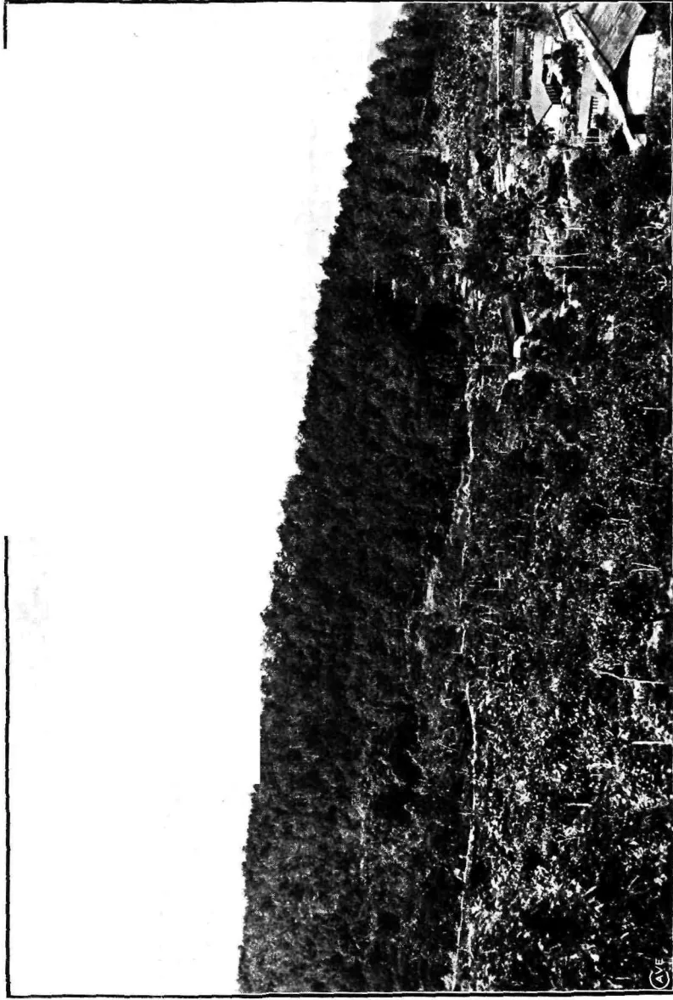
A black and white photograph showing a landscape. In the foreground, there is a field that appears to be covered in dust or low-lying vegetation. A dense line of trees or a thicket of bushes runs across the middle ground, separating the field from the background. In the upper right corner, there is a small cluster of buildings, possibly a farm or estate structure. The sky is bright and clear. The photograph is framed by a thin black border.Plate I Kandanuwara Estate Dusted field. 14-3-31.
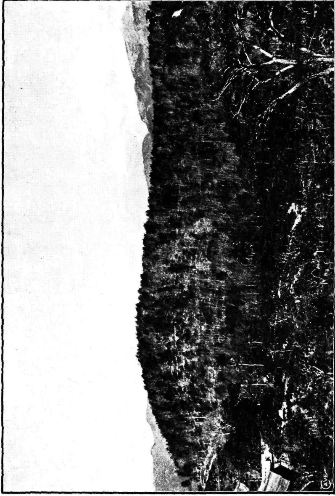
A black and white photograph showing a dense forest of tall, thin trees on a hillside. In the background, a large, light-colored, undulating mound or hill rises above the treeline. The foreground shows some rocky or uneven terrain with a few bare trees. The image has a grainy texture and is framed by a thin black border.Plate II. Kandanuwara Estate. Control (undusted) field 14-3-31.
115had retained their leaves. A final visit was paid to Kandanuwara on March 14th. By this time the foliage in the dusted field was quite mature, and although "secondary" Oidium was prevalent throughout the field the applications were discontinued since it was thought that further leaf-fall was unlikely to occur. The condition of the foliage in the two fields on this date is further described below:
(a) Foliage.—The two photographs shown bear testimony to the striking difference in the appearance of the two fields on March 14th. Whereas the control area is practically leafless, having the appearance of rubber during a normal "winter", the foliage of the dusted field, as viewed from a distance, would bear comparison with most areas at this elevation and, indeed, with many in the low-country. When comparing the two photographs it must be borne in mind, also, that the trees are more closely planted in the control than in the dusted field so that, other things being equal, a denser canopy in the former would be expected.
On March 14th an examination was made of every individual tree in the experimental 16-tree plots and the foliage was classified according to the intensity of Oidium attack. The figures together with those for 1929 and 1930, are shown on page 119. It will be noted that in the dusted field the proportion of trees classed as severely or completely defoliated (Classes E and F) has been reduced by the sulphur dusting from 56% in 1929 to 9% in 1931. In the control field, on the other hand, this percentage has risen from 51% to 76%. Correspondingly the proportion of trees in the dusted field in which leaf-fall is absent or very slight (Classes B and C) is 80%, as compared with 13% in the control field.
These figures indicate that the treatment has been extremely successful in preventing the most harmful effect of the disease viz: defoliation. Entire control of the fungus has, however, by no means been obtained, and "secondary" attack is still severe in comparison with low-country estates. It is probable that by continuing the treatment during March and April this attack on mature leaves could have been considerably reduced, but it is doubtful if such a procedure is an economic proposition. Although "secondary" attack is harmful in that the transpiration of the leaves is greatly increased, it is defoliation which imposes the severest tax on the vitality of the tree, and once the leaves are mature defoliation is not to be feared. On Kandanuwara the disease remains active throughout the greater part of the year so that at almost any time re-infection from neighbouring undusted rubber will occur. In order, therefore, to keep the
116foliage healthy it would be necessary to make periodical applications throughout at least 9 months of the year, thus incurring an expenditure which would probably be disproportionate to the results achieved. In the most severely attacked areas the main aim of sulphur dusting must be to maintain the leaves on the tree, and it is probable that after two or three seasons the extent of "secondary" attack will also be reduced.
The present appearance of the control field is indicative of the worst effects of the disease if allowed to remain uncontrolled. Only the very early winterers have maintained their foliage, and even on these trees the leaves are small and distorted. As the result of the depletion of food reserves caused by continual defoliation many twigs and branches have died back, so that the number of branches left to bear leaves is greatly reduced. Consequently later in the year, when the trees recover to some extent, only the scantiest crowns are presented.
It must be mentioned that the above observations have been made at the time when there is the greatest contrast between the two fields. From about June to November Oidium, although not becoming entirely passive, loses some of its virulence, and the trees are able to recover to a great extent. Later in the year, therefore, most of the trees in the control field, instead of being leafless, will possess a thin crown of malformed leaves.
(b) Yields.—Comparative yields must constitute the ultimate criterion of the value of sulphur dusting as of any other treatment, and this matter is being investigated at Kandanuwara. Daily records of the latex and dry rubber are being taken from the ten 16-tree plots in each field, the same tapper being employed throughout. The results will be published later in the year, but in the meantime it may be stated that a large difference in yield in favour of the dusted field has been manifested during March, April, and May 1931.
The following is a full statement of the costs of the dusting operations. Owing to the small area involved it is difficult to give a significant figure for depreciation of the machine. This has been written down as Re. 1-00 per acre, which is considered to be a reasonable figure for work on a large scale.
117SULPHUR(Costs include all transport, handling charges, etc.)
| Rs. cts. | Rs. cts. | |
|---|---|---|
| 2,130 lb. "Flotate" @ 09 cents | 191 70 | |
| 420 lb. "Sulphur Smoke" @ 11 cents. |
46 20 | 237 90 |
| 76 coolies drying and dusting sulphur @ 60 cents. |
45 60 |
| Extra labour (Cleaning, transport, etc.) |
| Petrol and Oil | 9 00 | |
| Minor repairs to machine | 5 87 | 14 87 |
| Depreciation on machine @ Re. 1 per acre |
30 00 | |
| 331 07 |
This works out at approximately Rs. 11-00 per acre. Owing to the small area treated all costs are proportionately higher than if the work had been undertaken on an estate scale. It is calculated that if 200 acres were dusted the cost would be about Rs. 9-00 per acre. It may be remarked that the transport charges to Kandanuwara are probably higher than to the average estate.
As mentioned above the field was dusted in the previous season, and the results achieved must be to some extent regarded as cumulative. It is more accurate, therefore, to consider the results as due to two years' treatment. In 1930 the quantity of sulphur applied was 1,600 lb. and the inclusive cost about Rs. 7-00 per acre. The total expenditure in the two years has therefore been about Rs. 18-00 per acre. On a crop basis of 450 lb. per acre per year the cost of the treatment has therefore been about 2 cents per lb. of rubber produced per year.
CONCLUSIONSThe experiments described above confirm the conclusions previously formed. The greater measure of control secured in these as compared with previous experiments is to be attributed mainly to the earlier start of the operations. Dusting
118was commenced at the first sign of severe Oidium attack on the young leaf, whereas in previous experiments circumstances did not permit a start until the disease had already caused serious defoliation. Owing, however, to the limited time (10-14 days) during which the sulphur remains toxic on the leaves there is a limit to this early start, and it is valueless to commence dusting while the fungus is still passive. A careful watch must be kept for the first sign of Oidium activity, and no time lost in making the first application when this is apparent.
The question now arises—"Does sulphur dusting pay". Assuming that rubber will again become a remunerative crop the answer, as far as estates as severely attacked as Kandanuwara are concerned, is a definite affirmative. It is somewhat premature to discuss the yield figures obtained to date, but there is every indication that the comparative gain in yield as the result of dusting would pay for the treatment were rubber selling at even the moderate price of 20 cents per lb.
Disregarding yield figures the treatment could confidently be recommended as the result of the improvement in foliage alone. It may safely be asserted that for an addition of 2 cents per lb. to the cost of production no manurial or other treatment has ever effected so marked an improvement in the general condition of a field of rubber. The ultimate fate of the control field can only be viewed with the utmost apprehension. Bark renewal is almost negligible, the yield shows a considerable decline, and it seems possible that the very existence of the trees is jeopardised. The dusted field, on the other hand, possesses a fair foliage which should be further improved if the treatment is carried out in subsequent years, and the yield, so far from declining, appears in 1931 to be on the upward grade.
The experiments on sulphur dusting have, therefore, reached a stage at which the treatment can be definitely recommended on the most severely diseased areas. Whether the work should be undertaken on more mildly affected estates is a matter for further enquiry, and will largely depend on local conditions and the price of rubber.
The helpful co-operation of Mr. M. C. Evans, Superintendent of Kandanuwara Estate, is gratefully acknowledged.
119| No attack | Mild to moderate "secondary" | "secondary", little or no defoliation | Moderate defoliation | Severe defoliation | Complete or almost complete defoliation | Total | |
|---|---|---|---|---|---|---|---|
| DUSTED PLOTS | |||||||
| March 1931 | 0 | 64 (41%) |
60 (39%) |
17 (11%) |
10 (6%) |
5 (3%) |
156 |
| April 1930 | 0 | 31 (20%) |
51 (33%) |
26 (17%) |
30 (19%) |
18 (11%) |
156 |
| April 1929 (before dusting) |
0 | 5 (3%) |
30 (19%) |
34 (22%) |
30 (19%) |
57 (37%) |
156 |
| CONTROL PLOTS | |||||||
| March 1931 | 0 | 1 (1%) |
18 (12%) |
16 (11%) |
19 (13%) |
96 (63%) |
150 |
| April 1930 | 0 | 4 (3%) |
18 (12%) |
22 (15%) |
26 (17%) |
80 (53%) |
150 |
| March 1929 * | 0 | 49 (7%) |
162 (24%) |
126 (18%) |
147 (22%) |
197 (29%) |
681 |
* These figures (March 1929) refer to a different series of plots in another portion of the control field.
120W. I. PIERIS, B.A., F.R.H.S.,
AGRICULTURAL ASSISTANT,
RUBBER RESEARCH SCHEME (CEYLON)
SINCE the inception of the Rubber Research Ordinance of 1930 a large number of rubber producers, big and small, who were formerly not members of the Rubber Research Scheme have, by payment of cess, automatically become subscribers. Such proprietors and superintendents have not had access to the publications of the Scheme in which the progress of work at the Experiment Station, Nivitigalakele, has been recorded, and it is thought that a note describing briefly the objects and work at this Station would be of interest.
The objects of the Station are primarily as follows:
Before an estate tree, reputed to be a high-yielder, is admitted into the Experiment Station "to be proved" it has to fulfil certain requirements and undergo what may be termed a period of probation. During this period the officers of the R.R.S. are largely dependent on the co-operation of estate superintendents in assisting them. The best yielders in a particular estate are primarily ascertained through the tappers and kanganies who generally know which of the trees they tap yield the most latex. These are reduced to a workable number by a primary selection by keeping the records of their yields in cubic centimetres of latex for 12 successive full tappings. Thereafter, over a minimum period of one year, the yield-record of each tree, whose latex is collected, coagulated, dried, and weighed separately, is kept by the Superintendent in special quarterly
121return forms supplied by the R.R.S. The average weight of dry rubber per tree per tapping and the average weight per tapping per foot length of tapping cut are deduced, and the figures are plotted as graphs in specially designed books so that the relative merits of the trees can be judged at a glance. This information is further supplemented by the findings of the Botanist of the R.R.S. who visits the estate, takes bark samples and reports on the number of latex vessel rows, thickness of bark and other details for each tree. A selection of the best trees and those which satisfy the required standards is made and the selected trees are finally introduced into the Experiment Station by vegetative propagation. In due course the "bud-dings" will be test-tapped with a view to finding out whether the vegetatively propagated progenies of the selected mother tree are capable of reproducing the same or better latex-yielding properties in relation to their parent tree. A criterion of the yield of a mother tree, for selection, cannot definitely be laid down owing to influence of environment, etc; but broadly speaking a tree yielding 1 oz. of dry rubber per tapping per foot length of tapping cut is considered promising and a yield approaching 2 oz. per foot is very good.
The means employed for vegetative reproduction of Hevea is "bud-grafting". This consists of affixing a bud extracted from a branch of the selected mother tree to the bottom of a young seedling plant. Details of the method of budding will be found in a booklet on "The Budding of Rubber" by R.A. Taylor obtainable from the Secretary, R.R.S., Peradeniya, or in the article entitled "Budding Routine at Nivitigalakele" appearing in the current issue of The Quarterly Circular.
Budwood from the mother tree is obtained preferably from a branch that has been "pollarded" (i.e. previously pruned to produce fresh, succulent growth). Pollarding, however, interferes with yield records and is not advocated where extensive records are not already available. In such cases a method often adopted is to first establish a supply of budwood in the budwood nursery by taking a few buds from an unpollarded branch. If records of the mother tree in the meantime are found satisfactory the clone is budded out in the field from the budwood nursery. Buds are attached generally as follows:
In most cases the seedling stocks on to which the buds are attached in the field are of known origin, and the fact that buds of a particular clone are grafted on to different stocks provides for the determining of "effect of stock on scion", if any.
The Experiment Station, situated 1 mile away from Matugama in the Kalutara District, is 69 acres in extent and has been opened up in 3 stages now referred to as the 1926, 1927, and 1928 clearings. All these clearings have been laid out on the contour platform terracing system except 4 acres in the 1928 clearing where the Denham Till trench system has been adopted.
The contour platforms, running horizontally at right angles to the slope of the hill, are 6 to 12 ft. in width and dip back into the hill at an angle of 1 in 5. They are 20 ft. apart at the steepest portion of each hill, and where a more gentle gradient has necessitated their divergence to 30 ft. or more an extra platform has been introduced. The trees on the platform are 18 ft. apart and extend in rows up and down the hill. The stocks were planted out originally as "stumps" (6 acres only), basket plants or "seed at stake" in holes 3 feet deep by and filled with top soil. All clearings have been budded in the field and only in cases of repeated casualties have stumps budded in the nursery been put out.
The 1926 clearing of 12 acres in extent contains 17 different clones. Eleven of these consist of approximately 100 trees each while the remaining six, planted as "budded stumps", are only represented by 3 to 20 trees each. The majority of the clones are Ceylon ones though two have been planted out as "budded stumps" from Java. They are as follows: Eladurwa 3, Eladurwa 5, Govinna 771, Govinna 1836, St. George 45, Cuilcagh 3, Cuilcagh 4, Cuilcagh 5, Lavant 28, Lochnagar 1/15, Dalkeith 3513, Dalkeith 19935, Wawulugala 197, Heneratgoda 2, Heneratgoda 401, Java 7, Java 18. The clearing was completely budded in July 1930 and by the end of 1931 some of its earlier buddings are expected to be ready for test-tapping.
The 1927 clearing of 17 acres consists of 19 Ceylon clones of approximately 100 trees each and is also completely budded. The clones are: Kobowella 41, Kobowella 42, Eladurwa 1, Eladurwa 4, Palmgarden 3183, Palmgarden 4849, Yogama 1H, Yogama 8Y, Yogama 21Y, Frocester 56, Mirishena 2, Mirishena 3, Mirishena 11, Glendon A4, Madola 15, Madola 110, Millakanda 10/2, Beau Sejour 5, Talagalla 2.
The 1928 clearing of 32 acres which is to contain 90 odd clones is being budded with 25 to 30 trees to a clone. Budding was commenced in April 1930 and about 25 clones have been
123completed to date. The unbudded trees in the incompletely budded clones of the 1928 clearings were manured in February 1931, with a view to obtaining robust "stocks" for the season's budding. The manure used was a mixture of Nicifos and Muriate of Potash (@ lb. per tree).
In the 1927 clearing there are 77 trees "marcotted" off (i.e. vegetative propagation by ring-barking and "layering") off the stocks of budded plants now growing in the 1926 clearing. In the 1928 clearing there are 21 others "marcotted" off the scions of the same budded plants. Thus there are three editions of plants as follows: (a) the stock growing on its own roots, (b) the scion growing on its own roots, and (c) the scion growing on the stock; and when tapped should give interesting results.
The ground is well covered by a variety of leguminous cover plants both erect and creeping, and silt-pits opened along the lower side of the platforms receive the prunings thereof. The most promising among the erect cover crops established so far are Clitoria cajanifolia, Tephrosia candida, Tephrosia noctiflora, Crotalaria usaramoensis, Sesbania cannabina, Indigofera arrecta, and Desmodium gyroides. Clitoria cajanifolia has proved the easiest to establish, and responds excellently to pruning. It produces a large quantity of material for the silt-pits each year and spreads rapidly by seeding. It has been used for sowing along the edges of platforms to bind the soil and prevent the earth from slipping. Dolichos Hosei (Vigna oligosperma) Centrosema pubescens, Calopogonium mucunoides, and Pueraria phaseoloides have done best as ground covers. Though Calopogonium starts off well it looks as if Vigna and Centrosema are going to replace it as a permanent cover. Pueraria once established is an extremely rapid grower but its adaptability to shade has not been determined yet. Conditions on the whole may change a few years hence under much denser shade. Most cover crops have been grown from seed. The creepers are sown 3 feet square and the erect covers in rows 3-4 feet apart according to the species. Vigna which is shy to seed can be easily reproduced by cuttings or by rooting its runners in a coconut husk containing a compost of soil and "adco".
Recently platforms have been cleared of cover crops and the latter confined to the space between the terraces.
Windbelts of Gliricidia maculata have been planted over the entire Station and serve as an excellent and quick-growing wind protection to the younger plants during the monsoon months, while Albizia moluccana, being a bulkier tree, has been utilised to shield gaps and more exposed situations.
124NURSERIESBudwood Nursery.— acres of "deniya" land have been assigned to a budwood nursery for multiplication of budwood. Here budwood is reproduced of every clone that is being proved at the Station besides others that are likely to be selected. 5 to 7 plants in a group (planted 5 ft. apart) are assigned to each clone as "stocks" and at the first opportunity these "stocks" are budded with wood from the mother tree. In fact when a supply of budwood from a particular clone arrives it is a general rule that the required number of buds for the budwood nursery is reserved. This ensures a reserve supply of wood for subsequent rounds of budding in the field and saves the expense and trouble of sending to estates for wood too frequently.
Budding in the budwood nursery need not be done quite so low down as in field-budding, and any convenient height is permitted. At the Experiment Station 3 feet is the usual height. One or two buds are attached to a plant according as there is budwood available. Directly the budding is found to be successful and the stock is cut down, a tar band is painted immediately below the point of insertion of the bud accompanied by orders to budders that when budwood is taken from the nursery they must cut not less than 1 foot above the tar band. This ensures that (a) budwood and not stockwood is removed and (b) the budwood is cut sufficiently high to allow it to re-extend itself. As, after a time, a budshoot is sometimes easily mistaken for a stockshoot, this precaution has been found very useful.
When the attached bud has begun to shoot, all side shoots which keep on appearing are thumb-nailed off. The terminal bud thus extends with redoubled energy ultimately producing a clean, straight stick of budwood. Moreover too much unchecked growth causes a heavy head of foliage and perhaps damage by wind. Tarring of cuts and accurate labelling is strictly adhered to and cannot be over-emphasised. A chart of the nursery shows each tree in relation to its position, row and clone, and the amount of available budwood in yards. There are at present approximately 124 clones represented in the budwood nursery with "stocks" for many more.
Other Nurseries.—Besides the budwood nursery there are several seedling nurseries containing known as well as unknown "stocks". These are used for budding "supplies" for the field and for purposes of instruction.
A nursery containing 600 seedlings from selected Java seed has been recently opened.
125BUDDING is carried out on suitable days between April and December. It is usually stopped if there are 7 consecutive days without rain and also during periods of heavy rain. July, August, and September are regarded as the best months for budding in this district.
Budding is started as soon after 6 a.m. as possible and continued until 10 a.m. unless the sun is unusually hot. In the afternoons it is continued from 3 p.m. until sunset.
The budding tool designed by Mr. R. A. Taylor, of which two sizes are available, is generally used. An ordinary budding knife is used if the budwood is small or does not peel readily. A template is required for marking the stock.
Budding tape, cut into suitable lengths, is wrapped on to small sticks. A note book and indelible pencil should always be carried by the budder.
Budwood is at its best after 12-18 months' growth, bright brown in colour, succulent and easy peeling, and 1-2 inches in diameter. Buds from the green part of the stem can also be used quite successfully and in fact frequently give better results on old stocks.
The budwood is sawn from the required tree and for convenience is cut into 1-yard lengths. It is marked in indelible pencil with the clone number in order to avoid mistakes. If not required at once it should be stood with the bottom end in moist sand.
If plenty of budwood is available only branches which are in a state of active growth should be cut, preferably those in which a new whorl of leaves is just appearing.
126The template is held against the tree about 2 inches above the ground and cuts made to the wood on the 2 sides and top. 10-20 trees are cut in this way (more earlier in the morning and less as the sun gets up) and 5 minutes allowed for the latex to dry up before opening the tongue to receive the budpatch.
The budpatch containing an undamaged, dormant bud is "lifted" from the budwood by means of the budding tool or else cut off together with a strip of wood by means of the knife. In the latter case the wood is then carefully peeled from the budpatch. The tongue of bark on the stock is carefully opened by the assistant with the spatula of the budding knife, taking care not to damage the cambium. Before opening the tongue the stock plant is thoroughly cleaned with a cloth and any coagulated strands of latex removed.
The budpatch is then carefully inserted, without rubbing, and with its correct side up, the tongue folded over and the whole tightly bandaged with waxed budding tape from bottom to top in the form of a puttee. When large stocks are being budded it is more economical to cover the budpatch with a square of waxed cloth and bind with coir rope.
About half a dozen rubber leaves are tied in position over the bandage for shade, and a split semicircular piece of bamboo (about 18 inches long) is stuck into the ground opposite and about 1 inch distant from the budpatch to provide additional shelter.
When experimental budding is in progress the clone number should be marked on the stock in indelible pencil as soon as the operation is completed. This is a check that the correct budwood has been used.
At the end of three weeks the bandage is removed, the bark flap is cut off and the budpatch examined with the point of a knife. If green at both top and bottom of the patch the budding is regarded as successful.
* Since these notes were written a new method of cutting the bud panel, understood to be that used in Malaya, has been employed experimentally. No template is used. Two vertical cuts in.-2 in. long are made about 1 in. apart and are continued upwards and inwards to meet in a point. The flap is therefore tapered at the top, and is about 3 in. long. The bud-patch is removed as described below and is fitted at the bottom of the panel. When the bud is bound in position the stock flap, being longer and broader than the patch, completely covers the latter so that the edge and tapered portion of the flap fit into their original position thus preventing any movement of the bud-patch. The bandaging is done very tightly, and it is believed that the large flap affords greater protection to the bud-patch if heavy rains are experienced soon after the budding operation. Preliminary tests have shown greater success with this than with the former method, and further comparative trials will be made.—R.K.S.M.
127In dry weather the bandage is loosely replaced leaving a small gap over the bud: the patch is reshaded with fresh leaves and the bamboo shade replaced. In wet weather it is better to discard the bandage as rain is liable to lodge behind it.
A second examination is made a week later, and if the budpatch is still green the bandage and leaves are discarded and the stock is cut at a height of six inches above the budpatch. The bamboo is replaced and allowed to remain until the budshoot appears over the top of it. Alternatively a protection basket is placed over the stump and allowed to remain until the first whorl of leaves has developed.
By some planters it is considered preferable to ring-bark about 6 inches above the budpatch and break down the stock at a height of 3 feet. Tests at the Experiment Station showed no advantage for this method but it is proposed to make further tests this year.
THE subject of the biological control of insect pests was discussed in a previous article (Tropical Agriculture, Vol. VIII, p. 98; reproduced in The Tropical Agriculturist for July 1931). The present contribution deals briefly with the application of the biological measures in controlling noxious plants. This phase of the problem is a very recent development, the first practical experiment being carried out in 1902. The biological control of noxious plants presents itself as a possibility in cases where alien weeds have invaded land to the extent of rendering it useless. So far as the subject can be envisaged at present it is only in special instances where such weeds have resisted cultural, chemical or other methods of control, or where such methods are impracticable, that biological measures may prove to be an economic proposition. The only biological agencies that have so far afforded any promise in this connection are phytophagous insects. The principle involved is the introduction of suitable types of plant-feeding species, free from their natural parasites, which are known to affect a given noxious plant in its country of origin. We have abundant evidence that alien insects which have entered countries, unaccompanied by their natural parasites, can exercise an immense destructive effect on cultivated crops. There consequently appears to be no valid reason why, similarly, properly chosen species of insects, introduced free from their particular parasites, should not likewise exercise a destructive effect upon noxious weeds given a favourable environment for their colonisation. It is this principle that is fundamental in problems of the insect control of weeds.
There are very obvious dangers attending the introduction of phytophagous insects from one country into another. The possibility always has to be faced that the introduced species may resort to feeding upon cultivated plants in a new environment, and so render the remedy little better than the disease. The introduction, therefore, of such hyptophagous insects, however promising the latter may seem to be, demands the strictest safeguards and the most exhaustive preliminary experimentation before liberations are effected.
It needs to be borne in mind, as Dr. W. R. Thompson has pointed out, that although insects entail an immense amount of destruction to economic plants, they rarely occasion sufficiently vital damage which will affect the survival of well-established species to any marked degree. Measured in economic terms such damage frequently assumes vast proportions, but in the biological sense it is not necessarily of the same importance. Furthermore the recuperative powers of plants are so great that they are much less liable to be killed outright as the result of insect attack than insects themselves, which almost always succumb from the effects of their parasites.
It will be obvious that, in any project of weed control involving the utilisation of phytophagous insects, the latter necessarily require to be species known to be either monophagous or oligophagous in habit. Species that are either stem-borers, or destroy flowers or seeds, offer many advantages over mere defoliators. They are, for example, more specialised
* By A. D. Imms, D.Sc., F.R.S., Rothamsted Experiment Station, Harpenden, in Tropical Agriculture, Vol. VIII, No. 5, May 1931.
129in habit and therefore less likely to become adapted to new plant-hosts in another environment. Also, species that check the multiplication and spread of a noxious plant are likely to produce more economic benefit than those which prey solely on the foliage.
The botanical affinities of the noxious plant it is desired to control is likewise a matter of great importance. With such plants as Opuntia the likelihood of insects which feed upon them resorting to other hosts is somewhat remote. Insects living on plants endowed with such acrid juices, along with other specialised physiological and structural features, exhibit so peculiar and rigid an adaptation to their particular mode of life, that they are unlikely to infest plants botanically only distantly related; and with entirely different physiological attributes. On the other hand, with plants of the natural order Rosaceae, for example, there is always a looming possibility that in a new environment insects, which normally feed upon a single species or genus of that order, will become pests of one or other of its numerous cultivated members.
It will be readily understood that, under the conditions demanded by noxious weed control, parasites assume an antagonistic rôle to the one they perform as agents in repressing insect pests. In other words, parasites require to be rigidly excluded in all cases where insects are utilized in the repression of weeds. The unforeseen or accidental entry of such agents, along with their phytophagous hosts, into a new and favourable environment, might well result in the biological control of the plant-feeding insects, and the utilization in any campaign of weed repression rendered of little value.
The control of Lantana.—The first attempt to control a noxious plant, by means of introducing specific insect enemies, was made in the Hawaiian Islands with reference to the alien weed Lantana camara. This plant is native to the warmer parts of America and was originally introduced into the Hawaiian Islands for ornamental purposes. The shrub ultimately spread to such an extent that it became a real scourge in the pastures of low-lying regions, especially on the leeward side of the Islands. In 1902 an entomologist, A. Koebel, visited Mexico with a view to acquiring first-hand acquaintance with the insect fauna of Lantana in its native habitat. As the result of his investigation 23 species of insects were transmitted to Honolulu and from among these eight kinds were ultimately successfully established in the Islands. Each of the eight species attacks the plant in a somewhat different way and it seems likely that their combined influence would exercise considerable check upon its growth and spread. Three species that have proved the most effective are the Tortricid moth Crocidosema lantana Busck., the seed fly Agromyza lantanae Frogg., and the Tingid bug Teleonemia lantanae Dist. Larvae of the first mentioned insect bore into the flower stems and devour both flowers and young fruit: the Agromyza larvae attack the berries and the Tingid bug checks growth and blossoming by destroying the young foliage. Of the remaining five species of insects, two are larvae of Thecla butterflies which feed on the flowers and thus restrain the production of berries; two are moth larvae and the fifth is the Trypaneid gall-fly Eutreta xanthochaeta Ald. Individually, none of these five species appears to be of much importance but collectively they are to be regarded as accessory agents in checking the plant. The nett result of these insect introductions is that the spread of Lantana has been appreciably restrained. It no longer readily colonises lands once cleared and the labour of its eradication has been lightened. It has, however, been too readily concluded, by those unfamiliar with the true state of affairs, that entire control of the plant has been accomplished. This, as a matter of fact, is not the case and the colonization of additional insect enemies is regarded as being necessary in order to try and secure more complete economic results.
130Lantana is, likewise, a serious pest in other parts of the world. In Fiji it has become sufficiently troublesome and difficult to eradicate to cause the authorities there to turn to biological control methods. Certain of the Lantana-feeding insects have been intruded from Hawaii and it appears that the Agromyzid fly has already checked the spread of the plant to some extent. The two Thecla butterflies have also been introduced together with the Tingid bug Teleonemia. The control of the plant affords promise of becoming successful, but it is too early to forecast the results of the experiments.
Introductions of Lantana-feeding insects have also been made into Queensland and Mysore, but no satisfactory results have yet been recorded. It may be added that in several parts of the Indian Empire the spread of Lantana in the forests has become a serious problem since it is proving deleterious to natural regeneration.
The control of Prickly Pear.—The largest and most important campaign of biological control of noxious weeds concerns prickly pear (Opuntia spp.) in Australia. This pest is estimated to have taken possession of 60,000,000 acres of land in Queensland and New South Wales. In the main the affected areas comprise natural grazing land whose value is less than £3 an acre. Under such conditions chemical or cultural methods of control are not practical propositions, except where the infestations are relatively slight. In their native habitat in North and South America many species of Opuntia are known, yet none of them are serious menaces to agriculture. Of the few kinds introduced into Australia at least four are major or minor pests. In America, insects, diseases and other factors are responsible for keeping down prickly pear within reasonable bounds, whereas in Australia such natural controlling agencies are absent, and the spread of the plant has gone on unchecked.
The Prickly Pear Board of Australia has been engaged, for some years, with an attempt to bring about a condition of biological equilibrium, by the introduction of insects and other organisms likely to function as natural checks. Officers of that Board have covered widespread cactus areas in North and South America for the purpose of investigating insects affecting Opuntias in their natural surroundings. Extensive biological study is being carried out at the Station at Urvalde in Texas and, from here, likely species of insects are shipped to Australia. On arrival they are transferred to quarantine buildings at Sherwood near Brisbane, where breeding tests are carried out with respect to the possibility of any introduced species attacking crops or other useful plants. At the same time, safeguards are instituted against the accidental introduction of insect parasites. Finally, species that offer favourable potentialities are liberated at suitable centres, where they are left to colonise themselves. A number of species have now become acclimatised to Australian conditions and, among them, the moth Cactoblastis cactorum, whose larvae tunnel through the tissues, is probably the most important. The cochineal Dactylopius tomentosus, has become distributed almost through the infested areas, and the plant bug, Chelinidea tubulata now flourishes in countless millions in many localities. The red spider, Tetranychus opuntiae, also covers many thousands of square miles and is rapidly extending its range. Mr. A. P. Dodd in his 1929 Report on this problem, states that the established complex of insect enemies is already bringing about a considerable degree of control of this noxious pest. In the heart of the pear country it is now possible to travel for one hundred miles without seeing any healthy plants. The success attained by the introduction of the Cactoblastis, which is known to be very rapid and drastic in its effect upon the plants, has changed the outlook of the whole problem, and it is reasonable to expect that vast areas of pear will be eradicated within a few years. Unless anything
132showed that the Thrips, Liothrips urichi, is common on this plant throughout the Island. It apparently causes its host to become stunted and to flower less freely. It therefore appeared to be a suitable insect for introduction into Fiji, provided that it were proved to exhibit no tendency to attack plants of economic importance. In October 1929 W. H. Simmonds visited Trinidad and studied the Thrips on the spot. It was found to be attacked by a number of natural enemies which had to be excluded in any effort made to introduce the insect into Fiji. He was able to send a large consignment of the species to Suva, where a proportion of its individuals were released in the field in 1930, and the remainder kept for breeding further stock. It is obviously too early for any forecast of the possible success of the experiment to be made, and it remains to be seen whether the Clidemia alone will prove an efficient controlling agency.
Other weed control experiments.—In New Zealand an extensive campaign has been inaugurated more particularly with reference to the control of blackberry (Rubus fruticosus), ragwort (Senecio jacobaea) and gorse or furze (Ulex europaeus), all of which are immigrants from Europe. In the case of blackberry, studies are being made with special reference to the suitability of the stem-boring Buprestid beetle (Coraeus rubi) of Southern Europe. A promising enemy of gorse is the pod-infesting weevil (Apion ulicis), while the Hypsid moth, Tyria jacobaea is an important enemy of ragwort. The two latter species, it may be added, are very common in England. At first studies on these three species were carried out at the Rothamsted Experiment Station, which were responsible for sending out to New Zealand large numbers of the insects mentioned. At a later stage, this work was transferred to the Parasite Laboratory at Farnham Royal where it is being undertaken at present. Preliminary liberations of the Tyria and Apion have been made in New Zealand, but the campaign is not sufficiently advanced to give any indication with regard to its outcome. In Australia the biological control of Hypericum, is an additional problem and, for the time being attention is being mainly given to Chrysomelid beetles and Cecidomyid gall midges as possible agents for this purpose.
In the Hawaiian Islands the obnoxious tropical sedge, known as nutgrass (Cyperus rotundatus), is a troublesome pest plant which probably entered the territory about the roots of imported plants. Attempts to control this plant by the introduction of certain insects, that are associated with it in the Philippine Islands, have been made. The Tortricid, Bactra truculenta, is now well established but has not so far proved of much value in this respect: in some localities, it may be added, it suffers heavily from the attacks of indigenous parasites. In the same Islands Pamakan (Eupatorium glandulosum) and gorse have become troublesome immigrants: while the subject of their control by biological means has received consideration no campaign has so far been undertaken.
In concluding these remarks it may be added that the biological control of species of prickly pear has so far proved more successful than in the case of any other pest plants. The Opuntias appear to be particularly susceptible to the effects of insect injuries which, in their turn, open the way to subsequent bacterial and fungal infection. The combined effects of such agencies have proved to be sufficiently potent to result in the practical eradication of plants of this type, from several areas in different parts of the world. It appears likely that, in Opuntia-feeding insects we have a most promising weapon destined to achieve far-reaching results in the future.
133TURMERIC is the name for the fresh or dried rhizomes of Curcuma domestica, Thevenot, formerly called C. longa, a plant of the ginger family, indigenous to Southern Asia, where it is largely cultivated.
History.—From ancient and mediaeval times India has furnished this important drug to all countries of the world. Dioscorides and Pliny refer to it as the product of an Indian plant, Cyperus indicus, resembling ginger, but having, when chewed, a yellow colour like saffron. There is a record of the drug being brought overland to China by the Persians prior to 572 A.D. Garcia da Orta (1563) describes it as Crocus indicus; this and the name Safran des Indes show its relation to saffron, a yellow dye, so much admired in the East. The names Haridra (Sanskrit), Dar-halad (Hindi), and Zard-crubah (Persian), signifying "yellow sticks" or "yellow wood", distinguish it from saffron stigmas. In Arabic it has the names of Uruk-es-sufr "golden root", and Uruk-es-sabaghin, "dyer's root". In China it is called Huang chiang, "yellow ginger". In India other names for turmeric are Haldi (Hindustani), Halad (Bombay), and Manjal (Tamil). In Malay it is Kunyit and Kunyit-makan. The name Curcuma is evidently derived from the Persian Karkam, Hebrew Karkom, and the Arabic Kurkum. The origin of turmeric is more obscure. Terre merite (French), Terra merita (Lat.) meaning "deserved" or deserving earth", are names the powder bore in commerce among apothecaries in the sixteenth century. There may be a relation between this and other names recorded during that century: tarmaret (1545), turmerick (1577), turmeracke (1578).
Description.—Curcuma is extensively cultivated all over India, its cost is relatively equal to that of sugar-cane and ginger. Two main crops are raised, one forming a soft rhizome used as a condiment, and other, whose rhizome is harder and more highly coloured, employed for dyeing. The ovate rootstock develops in the first year and throws out shoots forming lateral or secondary rhizomes. The turmeric of commerce, therefore consists of two sorts: the central round or "bulbs", and the lateral, long or "fingers". They are distinguished locally as "hadua" or round and "gangakuria" or long shaped. The former are ovate or fusiform and the surface marked with concentric ridges. The lateral rhizomes are sub-cylindrical attenuated towards either end, covered with a rugose skin and marked with transverse rings. They are often sliced or split and usually scalded in order to destroy their vitality and facilitate drying. The rhizomes are hard and firm, with a dull, waxy or resinous fracture of an orange or orange-brown hue. They have a strong characteristic odour and peppery, bitter taste. There are several varieties of turmeric distinguished by the name of the countries or districts in which they are produced. In India the principal sorts are Madras, Bengal, Cochin, Calicut, Balseni and Rajaputi. Madras "finger" is highly esteemed, and Cochin split "bulbs" are a favourable line, but those of Bombay and Sind are considered inferior. Chinese turmeric is of great value and much superior to that of Java, but it is seldom met with in the European market.
Composition.—Turmeric yields to alcohol a deep yellow solution. The crystalline colouring matter called curcumin is obtained by exhausting
* From The Chemist and Druggist, May 9, 1931.
134the drug with benzene. According to Jackson and Menke (1882), it has the formula and melts at . The crystals have the odour of vanilla and form red-brown salts with alkalis. It is soluble in methyl and ethyl alcohol and in glacial acetic acid; it is less soluble in ether and very slightly in carbon bisulphide. Sulphuric acid dissolves it with a red purple colour, gradually changing to black. With weak oxidising agents it yields vanillin. Treated with a mixture of sulphuric acid and boric acid it yields a product rosocyanin, so called because it dissolves in alcohol with a fine red colour, turned blue by alkalis. Paper tinged with alcoholic solution of curcumin displays, on addition of an alkali, a brownish-red coloration, and when neutralised passes to a yellow; turmeric paper is thus a usual reagent for alkalis. Turmeric rhizomes yield from 3 to 5 per cent. of an orange yellow, slightly fluorescent volatile oil. The specific gravity is from 0.94 to 0.96. Turmerol, and a ketone, named curcumone, have been isolated, and phellandrene has been detected in fractions of a low boiling-point. But the oil is seldom distilled, and on account of the variation of source the characters of the oil are not very uniform.
Uses.—On account of its yellow colour turmeric was used by the ancient Arians, worshippers of the sun, as an auspicious article in religious observances. In certain Hindu ceremonies the tubers are always necessary; the powder is rubbed on the skin and the colour is a favourable yellow for the garments of the priests. As a dye for cotton haldi is in general use in India. Though considerably employed up to within recent years by the wool and silk dyer in the formation of olives, browns and other compound colouring matters turmeric is but rarely used in England. In a fresh state the root is an indispensable ingredient in curries, and when dried it is a constituent of exported curry powders. Mohammedans prescribe it in affections of the liver and in jaundice, and the decoction is a cooling eye-wash. Natives sometimes anoint their bodies with turmeric mixed with oil to ward off cutaneous affections. In Europe, turmeric is not regarded as medicinal, but is employed as a colouring matter in pharmacy and confectionery and for foodstuffs. Turmeric paper is an official reagent in the British Pharmacopoeia in testing for alkalis.
Commerce.—As a root-crop subject to climatic changes, turmeric exports as a rule show considerable fluctuations, but within recent years the exports from British India, classified under "Dyeing and Tanning Substances," have steadily increased:
| 1927 | 1928 | 1929 | |
|---|---|---|---|
| Cwt. ... | 56,974 | 58,180 | 76,052 |
| Value, Rs. ... | 10,88,817 | 12,48,743 | 16,24,644 |
The root is shipped from Culcutta, Madras and Bombay, but 85 per cent. of the exports now pass through Bombay. The exports of turmeric (figures in thousands) from India have been as follows:
| Pre-war average | War average | Post-war average | 1928-29 | 1929-30. | |
|---|---|---|---|---|---|
| Cwt. | 92 | 78 | 53 | 65 | 71 |
| Value (in thousands of rupees) | 11.08 | 12.31 | 11.38 | 14.20 | 14.66 |
It will be seen that the shipments improved from 3,250 tons to 3,550 tons. The United Kingdom, Ceylon, Persia, Iraq and the United States increased their requirements, while exports to Aden and Dependencies declined.
135ANIMAL DISEASE RETURN FOR THE MONTH
ENDED 31st JULY, 1931
| Province, &c. | Disease | No. of Cases up to Date since Jan. 1st 1931 | Fresh Cases | Recoveries | Deaths | Balance Ill | No. Shot |
|---|---|---|---|---|---|---|---|
| Western | Rinderpest | 398 | 18 | 84 | 293 | 5 | 16 |
| Foot-and-mouth disease | 1108 | 393 | 1012 | 18 | 77 | 1 | |
| Anthrax | ... | ... | ... | ... | ... | ... | |
| Rabies (Dogs) | 2* | ... | ... | ... | ... | 2 | |
| Piroplasmosis | ... | ... | ... | ... | ... | ... | |
| Colombo Municipality | Rinderpest | ... | ... | ... | ... | ... | ... |
| Foot-and-mouth disease | 225 | 1 | 215 | 9 | 1 | ... | |
| Anthrax (Sheep & Goats) | 14† | 2 | ... | 14 | ... | ... | |
| Rabies (Dogs) | 4 | 1 | ... | ... | ... | 4 | |
| Haemorrhagic Septicaemia | ... | ... | ... | ... | ... | ... | |
| Black Quarter | ... | ... | ... | ... | ... | ... | |
| Cattle Quarantine Station | Bovine Tuberculosis | ... | ... | ... | ... | ... | ... |
| Rinderpest | ... | ... | ... | ... | ... | ... | |
| Foot-and-mouth disease | 28 | ... | 27 | 1 | ... | ... | |
| Central | Anthrax (Sheep & Goats) | 106 | 7 | ... | 106 | ... | ... |
| Rinderpest | ... | ... | ... | ... | ... | ... | |
| Foot-and-mouth disease | 725‡ | 302 | 359 | 3 | 363 | ... | |
| Anthrax | 10 | 1 | ... | 10 | ... | ... | |
| Southern | Rabies (Dogs) | 8 | ... | ... | 8 | ... | ... |
| Rinderpest | ... | ... | ... | ... | ... | ... | |
| Foot-and-mouth disease | 1348 | 2 | 1343 | 5 | ... | ... | |
| Anthrax | ... | ... | ... | ... | ... | ... | |
| Northern | Rabies (Dogs) | ... | ... | ... | ... | ... | ... |
| Rinderpest | } FREE | ||||||
| Foot-and-mouth disease | |||||||
| Anthrax | |||||||
| Black Quarter | |||||||
| Eastern | Rabies (Dogs) | ... | ... | ... | ... | ... | ... |
| Rinderpest | ... | ... | ... | ... | ... | ... | |
| Foot-and-mouth disease | ... | ... | ... | ... | ... | ... | |
| Anthrax | ... | ... | ... | ... | ... | ... | |
| North-Western | Surra | 5 | ... | ... | 5 | ... | ... |
| Rinderpest | 10,473 | 518 | 281 | 9298 | 38 | 856 | |
| Foot-and-mouth disease | 339 | 130 | 271 | 2 | 66 | ... | |
| Anthrax | ... | ... | ... | ... | ... | ... | |
| North-Central | Rabies (Dogs) | 3 | 1 | ... | ... | ... | 3 |
| Rinderpest | 4394 | 439 | 849 | 3257 | 186 | 102 | |
| Foot-and-mouth disease | ... | ... | ... | ... | ... | ... | |
| Uva | Anthrax | ... | ... | ... | ... | ... | ... |
| Rinderpest | ... | ... | ... | ... | ... | ... | |
| Foot-and-mouth disease | 5 | ... | 5 | ... | ... | ... | |
| Anthrax | ... | ... | ... | ... | ... | ... | |
| Sabaragamuwa | Rabies (Dogs) | ... | ... | ... | ... | ... | ... |
| Rinderpest | ... | ... | ... | ... | ... | ... | |
| Foot-and-mouth disease | 246 | 135 | 176 | ... | 70 | ... | |
| Anthrax | ... | ... | ... | ... | ... | ... | |
| Haemorrhagic Septicaemia | 31 | ... | ... | 31 | ... | ... | |
| Piroplasmosis | 2 | ... | 2 | ... | ... | ... | |
| Rabies (Dogs) | 4 | 1 | ... | ... | ... | 4 |
* 1 case in a cow. † 2 cases amongst cattle. ‡ 2 cases amongst pigs.
G. V. S. Office,
Colombo, 11th August, 1931.
M. CRAWFORD,
Actg. Government Veterinary Surgeon.
| Station | Temperature | Humidity | Amount of Cloud | Rainfall | ||||||
|---|---|---|---|---|---|---|---|---|---|---|
| Mean Maximum | Difference from Average | Mean Minimum | Difference from Average | Day | Night (from Minimum) | Amount | No. of Rainy Days | Difference from Average | ||
| ° | ° | ° | ° | % | % | Inches | Inches | |||
| Colombo | 84.9 | +0.4 | 76.5 | +0.1 | 80 | 86 | 8.2 | 12.12 | 23 | + 6.07 |
| Puttalam | 86.7 | +1.6 | 79.0 | +1.9 | 73 | 82 | 6.9 | 0.82 | 4 | + 0.02 |
| Mannar | 88.2 | +0.4 | 80.0 | +1.2 | 72 | 80 | 5.6 | 0 | 0 | - 0.38 |
| Jaffna | 85.9 | +0.8 | 80.4 | +0.8 | 77 | 82 | 5.3 | 0.18 | 1 | - 0.68 |
| Trincomalee | ||||||||||
| Batticaloa | 90.4 | -1.2 | 76.3 | +0.4 | 66 | 84 | 6.6 | 1.18 | 6 | - 0.01 |
| Hambantota | 85.8 | -1.3 | 76.0 | +1.6 | 76 | 88 | 4.4 | 1.71 | 7 | - 0.04 |
| Galle | 83.5 | +0.7 | 76.3 | -0.4 | 84 | 86 | 6.2 | 9.12 | 28 | + 3.08 |
| Ratnapura | 85.8 | +0.5 | 73.7 | -0.9 | 80 | 95 | 6.8 | 20.13 | 27 | + 7.59 |
| A'pura | 91.0 | +0.2 | 75.8 | -0.1 | 62 | 88 | 7.4 | 0.05 | 1 | - 1.24 |
| Kurunegala | 86.1 | +0.2 | 74.6 | -0.3 | 76 | 88 | 8.5 | 4.30 | 19 | + 0.27 |
| Kandy | 83.0 | +2.2 | 69.8 | -0.7 | 76 | 92 | 7.4 | 4.19 | 24 | - 3.25 |
| Badulla | 86.5 | +1.0 | 63.6 | -0.3 | 64 | 94 | 6.0 | 2.07 | 7 | + 0.07 |
| Diyatalawa | 78.9 | +1.5 | 62.0 | -0.2 | 60 | 78 | 6.3 | 0.62 | 5 | - 1.32 |
| Hakgala | 69.3 | +1.8 | 57.8 | +1.6 | 76 | 83 | 5.1 | 0.98 | 12 | - 5.84 |
| N'Eliya | 66.8 | +2.6 | 54.7 | +1.3 | 83 | 91 | 8.4 | 2.40 | 26 | - 9.48 |
The general monsoonal drift in July did not reach its usual steady strength, and though strong wind occurred frequently, its incidence was somewhat varied both as regards area and duration. One result was that in many cases heavy rain was deposited in the Low-country of the south-west quarter of the Island that under more regular conditions would not have come down till it reached the main hills. Rainfall totals were consequently above average throughout the W.P. and western Sabaragamuwa, but were consistently below average in the C.P. In the remainder of the Island the July averages are not high, and small variations from them occurred in both directions, deficits being slightly more numerous than excesses. No rain was recorded in the Mannar district, at about half the stations in the Jaffna Peninsula, and at a few stations in the N.C.P. and the northern parts of the N.W.P. and Uva. The highest totals were in Sabaragamuwa, and the parts of the C.P. near the Sabaragamuwa boundary. Ingoya, Kitulgala and Padupola each recorded just over 30 inches, which in the case of the two former was decidedly above average. Watawala whose July average is 29.84 only recorded 22.68.
The distribution of rain throughout the month was fairly uniform and at Up-country stations, where the total amount of rain was deficient, the number of wet days was nevertheless usually up to average. The heaviest falls were on the 29th, when Gendagala reported 7.55 and Eheliyagoda 6.18, besides several stations with over 5 inches.
Cloudiness was on the whole below average, and hence day temperatures tended to be high. Batticaloa was an exception in both respects. The amount of cloud there was greater than usual and its mean maximum temperature, though over 90°, was below its own July average.
A. J. BAMFORD,
Superintendent, Observatory.
September 1931
IT is generally assumed that today we are living in an age of over-production of almost everything. It is a condition of affairs that does not lend itself to elucidation very readily. Is it that in the past we have been more in a position of equilibrium between consumption and production? If so, what are the disturbing forces that have recently come into play to upset our continuing in that state in which we found ourselves? Is it that the population of the earth has suddenly decreased but been left with a surfeit of previously produced or provided-for material—rubber or coconut trees, prairies turned into smiling fields of corn, accumulation of textiles, and machines with which to make them? No; generally it does not seem so, although there may be a halt in the birth rate of some countries the advance in others is too stupendous to allow of any explanation along these lines. India is said to be increasing her population at the rate of two and a half millions a year and China even faster. The tendency in Asia generally is for an enormous increase of human beings.
Malthus and Darwin both put forward the views that there was a tendency for population to increase beyond the bounds of subsistence but as great as is the increase that state of affairs seems now to be reversed and production to have increased beyond the pace of human reproduction.
To what then must we look for this seemingly never-ending increase of the wants of man at a pace far outstripping his own multiplication? This pace is the primary reason for the lowness in price of our rubber, coconuts, tea, and rice, to say nothing of the other man's commodities. The explanation is in very large part to be found in the development of modern science.
138Crookes in 1898 called attention to the then low yield of the world's cereals and predicted starvation conditions within a measurable time owing to the rapidly increasing population unless the chemist could come to the aid of the cereal grower and provide him with a cheap and unlimited supply of nitrogen. The cheap supply of nitrogen is today the triumph of the chemist, it is an accomplished fact, he has harnessed the nitrogen of the air for the use of the earth. The engineer has given us mechanisation beyond the dreams of even our fathers. Land within the last half century required for the support of our beasts of burden and draught is now free for food production and is ploughed by the very mechanisation that has set it free. Not only has science made our land yield more individual plants per acre but she has gone further still and made the very plants themselves to multiply their produce. The plant breeder with increasing knowledge of that wonderful phenomenon called heredity has given us races of crops, the quantity and quality of whose products have far outstripped those of their ancestors. The foes of our field crops have been overcome by the studies of the entomologist who has often turned upon them methods of destruction previously peculiarly their own.
These are but the aspects of science applied to agriculture, that is production from the soil. Science applied to our manufacturing processes for the further elaboration of the primary products has achieved results by no means less startling. Our complaints of low prices would almost seem to be the penalty of science applied to human progress.
As Sir Harry McGowan recently put it when presiding at the Society of Chemical Industry—"The balance between industrial and agricultural production had been dislocated. The scientist might congratulate himself upon having made two canes of sugar grow where only one grew before but the industrialist might see his financial structure tumbling about his ears. Every improvement in processes which increased mastery over Nature tended to lead to increased supply. The vast number of workers in industry were slow to realise that their products were bringing in less money, and therefore, slow to grasp that unless all costs fell proportionately with prices business would be lost and employment reduced".
T. H. HOLLAND, DIP. AGRIC. (WYE),
MANAGER, EXPERIMENT STATION, PERADENIYA
The use of bush plants, nearly always leguminous, in tea cultivation in Ceylon is less general than the use of trees. Nevertheless a number of such plants are grown and with undoubted benefit. If shade for the tree is considered to be desirable the tree forms must be considered superior. To provide shelter from wind bush plants will not generally be considered very effective neither will they be of use in maintaining rainfall or encouraging beneficial birds.
One of the principal drawbacks to bush plants is their tendency to interfere with the growth of tea bushes and hinder the movement of labour in the rows. Apart from these disadvantages bush plants will confer most of the benefits to be derived from the growing of trees and in one or two respects will be found superior.
The use of bush plants varies between the planting at comparatively wide intervals of the more long-lived varieties such as Tephrosia candida and their retention, with periodical lopping, for a number of years, and the thick sowing of quick-growing short-lived varieties, such as the various species of Crotalaria, to be hoed or forked in at an early age. Intermediate between these two practices is the method of taking one or two loppings from the plants and then after one, two, or three years to uproot them and dig them in.
The first practice—that of using a bush plant in practically the same manner as a tree—is seldom found in Ceylon but is apparently sometimes adopted in India. An illustration in an Indian publication shows Tephrosia candida bushes widely spaced allowed to grow to their full height, and trimmed up at the sides. There would appear to be but little advantage in such a practice when there are trees that will serve the purpose more effectively.
The system of retaining bush plants for one, two, or three years only (depending on the kind of plant used and the rate of growth) would appear generally preferable, while the thick
sowing and early incorporation of the quick-growing kinds may, in certain circumstances, result in considerable benefit, particularly in clearings.
The advantages to be derived from the cultivation of bush plants in tea will now be briefly discussed in the same order as was adopted in the case of trees.
To shade tea, bush plants are of little use and they are not planted for the purpose. To shade the ground they can be put to effective use, more particularly in young clearings.
Rows of bush plants, particularly if planted across the direction of the prevailing wind, may help to protect the tea, but partly on account of their comparative impermanence, such plants cannot be considered as effective as trees for this purpose.
The more deeply rooting bush plants, such as Tephrosia candida, will exercise considerable benefits in opening up the soil. The effect will not be so deep as that exercised by trees but the larger number of plants per acre will increase the area over which the action is felt. Hope and Tunstall (21) in comparing the use of bush plants with ground covers point out that the comparatively deeper root action of bush plants may prove actually disadvantageous since they will draw their moisture from those parts of the soil from which the tea bush draws its own supply. This drawback would not however be greatly felt in the wetter districts.
All the remarks made with reference to trees apply equally or with greater force to bush plants. With greater force possibly because the complete return to the soil of the bush plant, and therefore the nitrogen it has assimilated from the atmosphere, is in some cases possible, whereas with trees it is not.
Though not so effective as a ground cover plant more use can be made of bush plants than trees in the checking of soil erosion, a complete cover of low bush plants would sensibly decrease erosion but this is not generally feasible if only because there is no room for such a stand and it is probable that tea would suffer from the competition of a thick continuous stand of bush plants. It remains then to arrive at an arrangement of planting which will be most effective in checking erosion, and
141to choose the most suitable plant for the purpose. Obviously the best way to make use of bush plants for this purpose is to plant them in thick contour hedges. If the tea were also planted in contour lines a very effective barrier to erosion would thus be formed, but if, as is usual, the tea is planted in straight lines without reference to the slope of the land the contour hedges and lines of tea will run in different directions. Coolies must pass up and down the tea lines and in doing so are bound to make gaps in the contour hedges and thus decrease their value. In young clearings where there is less movement of labour this objection does not apply with equal force. Such hedges are frequently planted above drains and roads and undoubtedly help in checking erosion.
The choice of a plant for this purpose is a vital matter. Hedges of Crotalaria and other such impermanent plants are sometimes seen. Such plants die out in a year or two and the soil that is banked up against them is then mostly lost. Unless then a practically permanent plant can be found contour hedges can be of little lasting value. Crotalaria cajanifolia has been found to be a most suitable plant for this purpose. It is very deep rooted, hardy and will stand repeated lopping with impunity, there is no difficulty about keeping it under control. In the soil erosion experiments at Peradeniya hedges of Crotalaria cajanifolia have effectively decreased soil erosion and after a life of five years have given no trouble and shown no loss of efficiency. Such hedges are to be found on several estates and the planters who have had experience of this plant have formed a high opinion of its value.
The considerable litter of leaves shed by some bush plants, particularly Tephrosia candida is of assistance in checking erosion.
A mulch of leaves or loppings from bush plants will exercise the same beneficial effects as that afforded by a mulch from trees.
No opinions have been recorded by planters as to the advisability or otherwise of leaving bush plants unlopped during a drought, but theoretically again such plants should be lopped before a drought so as to achieve the double object of reducing transpiration from the leaves and checking surface evaporation from the soil by means of a mulch.
140sowing and early incorporation of the quick-growing kinds may, in certain circumstances, result in considerable benefit, particularly in clearings.
The advantages to be derived from the cultivation of bush plants in tea will now be briefly discussed in the same order as was adopted in the case of trees.
To shade tea, bush plants are of little use and they are not planted for the purpose. To shade the ground they can be put to effective use, more particularly in young clearings.
Rows of bush plants, particularly if planted across the direction of the prevailing wind, may help to protect the tea, but partly on account of their comparative impermanence, such plants cannot be considered as effective as trees for this purpose.
The more deeply rooting bush plants, such as Tephrosia candida, will exercise considerable benefits in opening up the soil. The effect will not be so deep as that exercised by trees but the larger number of plants per acre will increase the area over which the action is felt. Hope and Tunstall (21) in comparing the use of bush plants with ground covers point out that the comparatively deeper root action of bush plants may prove actually disadvantageous since they will draw their moisture from those parts of the soil from which the tea bush draws its own supply. This drawback would not however be greatly felt in the wetter districts.
All the remarks made with reference to trees apply equally or with greater force to bush plants. With greater force possibly because the complete return to the soil of the bush plant, and therefore the nitrogen it has assimilated from the atmosphere, is in some cases possible, whereas with trees it is not.
Though not so effective as a ground cover plant more use can be made of bush plants than trees in the checking of soil erosion, a complete cover of low bush plants would sensibly decrease erosion but this is not generally feasible if only because there is no room for such a stand and it is probable that tea would suffer from the competition of a thick continuous stand of bush plants. It remains then to arrive at an arrangement of planting which will be most effective in checking erosion, and
141to choose the most suitable plant for the purpose. Obviously the best way to make use of bush plants for this purpose is to plant them in thick contour hedges. If the tea were also planted in contour lines a very effective barrier to erosion would thus be formed, but if, as is usual, the tea is planted in straight lines without reference to the slope of the land the contour hedges and lines of tea will run in different directions. Coolies must pass up and down the tea lines and in doing so are bound to make gaps in the contour hedges and thus decrease their value. In young clearings where there is less movement of labour this objection does not apply with equal force. Such hedges are frequently planted above drains and roads and undoubtedly help in checking erosion.
The choice of a plant for this purpose is a vital matter. Hedges of Crotalaria and other such impermanent plants are sometimes seen. Such plants die out in a year or two and the soil that is banked up against them is then mostly lost. Unless then a practically permanent plant can be found contour hedges can be of little lasting value. Crotalaria cajanifolia has been found to be a most suitable plant for this purpose. It is very deep rooted, hardy and will stand repeated lopping with impunity, there is no difficulty about keeping it under control. In the soil erosion experiments at Peradeniya hedges of Crotalaria cajanifolia have effectively decreased soil erosion and after a life of five years have given no trouble and shown no loss of efficiency. Such hedges are to be found on several estates and the planters who have had experience of this plant have formed a high opinion of its value.
The considerable litter of leaves shed by some bush plants, particularly Tephrosia candida is of assistance in checking erosion.
A mulch of leaves or loppings from bush plants will exercise the same beneficial effects as that afforded by a mulch from trees.
No opinions have been recorded by planters as to the advisability or otherwise of leaving bush plants unlopped during a drought, but theoretically again such plants should be lopped before a drought so as to achieve the double object of reducing transpiration from the leaves and checking surface evaporation from the soil by means of a mulch.
142As in the case of trees, green material left on the surface of the soil will eventually decompose (though with certain loss of valuable constituents) and increase the humus content of the soil.
As mentioned, one method of using these plants is to sow thickly and dig in the entire plant at an early age. This practice is rarely adopted in Ceylon but is fairly common in India, though a creeper is more frequently used for the purpose. Hope and Tunstall (21) state that daincha (Sesbania cannabina) is usually sown out at the rate of 15 to 30 pounds per acre after a light hoeing and is then hoed in about 2 months later. The weight of complete daincha plants pulled up from an area of tea on an Assam estate was found to be equivalent to 7,500 pounds per acre. The effect of such a thick cover would certainly be to reduce the soil moisture by transpiration, but if the crops were dug in sometimes before the dry weather there would probably be an eventual gain in moisture which would more than counterbalance the temporary loss.
The usual Ceylon practice, where bush plants are used, is to sow the plants in alternate rows, take one or more loppings and then pull up the plants, possibly burying the roots. The treatment of the different plants used will be dealt with in more detail in the notes that follow. As in the case of trees, loppings are either forked in by envelope-forking on each occasion or they are left on the surface and forked in only when manuring is to be done. As the plants will take up most of the space in the rows in which they are planted it will be more convenient to throw the loppings into the adjoining rows. It is customary to pile tea prunings into alternate rows and it is a common practice to fork in a pruning mixture together with the leaves from the prunings. If bush leguminous plants are sown in these rows the seedlings will have the benefit of the loosened soil and of the manure and should make a good start. The plants can then be lopped as often as their growth and nature allow and the loppings thrown into the adjoining rows to be forked in or buried in pits as often as circumstances permit. At the next pruning the plants can be pulled up and the roots thrown into the rows in which the loppings have been placed. These are the rows which will receive the pruning mixture and the roots can be buried when this is forked in. A fresh crop can then be sown and the previous cycle of operations repeated. Some of the nodules will be broken off and left in the soil when the plants are pulled up, others will adhere to the roots and
143be buried with them. Such a system postulates a plant which will live and stand lopping for 2 to 3 years, according to the length of the pruning cycle. Tephrosia candida and, under up-country conditions, Tephrosia vogelli, are both suitable and several others will answer the purpose.
The question of whether more green material per acre can be obtained from trees or bush plants depends upon the planting distance in each case, but a very satisfactory weight of green material per acre can be obtained from bush plants without unduly close planting. One superintendent has drawn attention to the usefulness of Tephrosia candida loppings for burying in holes dug for supplies. The establishment of supplies in old tea is seldom easy and burying a little green material in every hole has been found to assist the growth of young plants.
Any shading of the ground will naturally act as a check to weed growth and bush plants will afford material assistance in this direction.
In young tea clearings bush plants may take up a considerable amount of good material which, owing to the small area occupied by the roots of the tea plants, might otherwise leach out and be lost. Part of this plant food will later be returned to the soil in the loppings.
The number of bush plants in use in tea cultivation for green manuring is not great and the choice again depends on conditions of climate and elevation and the principal object in view.
For the rapid production of a large quantity of green material Crotalaria anagyroides is, at suitable elevations, one of the best plants. Where it is desired to retain the plants for a longer period Tephrosia candida or Tephrosia vogeli are two of the most popular plants. The former has rather a longer life but the latter will produce more green material in the early stages. For contour hedges there is no more useful plant than Clitoria cajanifolia.
Atylosia trinervia, Et-tora (Sinh.).—Anstead (2) records that this plant has been found useful in India for growing and digging in between tea. It is a much branched bush. There is no record of its use in tea in Ceylon.
144Cajanus cajan, Dhall, Pigeon pea, Rata-tora (Sinh.), Thvarai (Tam.).—Bald (6) and Hope and Tunstall (21) report that this plant has been grown on Indian tea estates, treated in the same way as Tephrosia candida, but has not been found very satisfactory. Mann and Hutchinson (28) give a more satisfactory account though they state that definite figures are lacking. Only one Ceylon estate, in Wattegama, reports having tried the plant but without much success. At Peradeniya, dhall grown among young rubber died out after lopping and the quantity of green material obtained was small. More successful results are reported from dry or semi-dry districts but it is not thought that dhall can compare with Tephrosia and other plants for growing in tea. The seed pods are very liable to insect attack.
De Sornay (12) states that it prefers a semi-dry climate and will not stand much wind.
Cardamine hirsuta, Kaduku pillu (Tam.).—Anstead (5) states that this plant has been used in selective weeding on south Indian tea estates for the prevention of soil erosion.
Cassia hirsuta, Parangi-tora (Sinh.).—This plant was grown some years ago on the Experiment Station, Peradeniya, but as it was found that nodules did not form on the roots its cultivation was discontinued. It is, however, well spoken of in south India and has been grown on several estates in Ceylon. It stands lopping fairly well. It is not known if nodules are even found on its roots in Ceylon but if not there is no object in growing it where equally good plants which do form nodules are available.
Cassia nimosoides, Bin siyambala (Sinh.).—This plant has been grown on a tea estate in Dickoya. The superintendent reports that it is easy to establish from seed but dies off after seeding.
Clitoria cajanifolia.—This is a hardy, deep-rooted plant which, as far as information is available, appears only suitable for elevations up to about 2,500 feet. Clitoria cajanifolia is probably not suitable for a green manure or cover plant but is unsurpassed for contour hedges to check soil erosion. This view is supported by Bunting and Marsh (10).
Its deep-rooted habit enables it to weather severe droughts and to stand repeated hard lopping. Hedges of this plant at Peradeniya have been lopped repeatedly for over 5 years and show no signs of dying out. The few estates which have made use of the plant in this manner are enthusiastic over its merits.
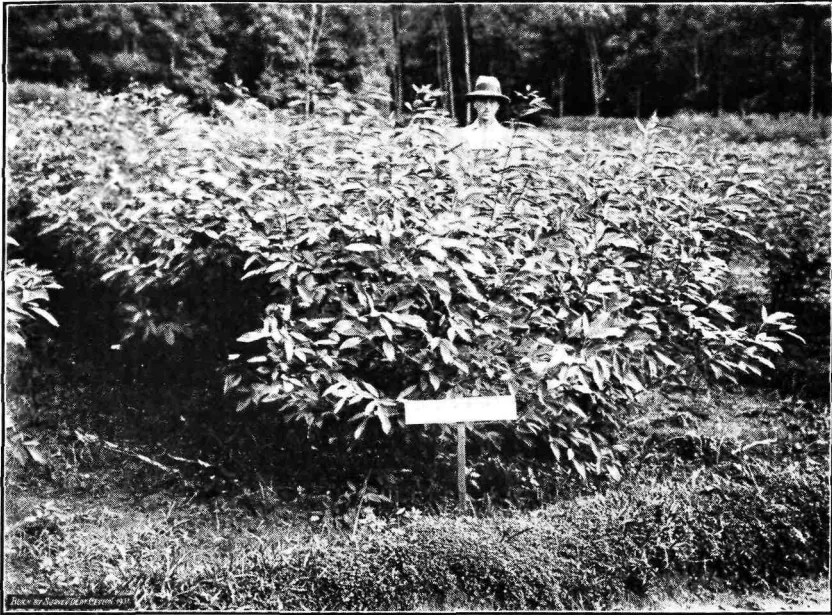
A black and white photograph showing a dense, bushy hedge of Cajanus cajan (Pigeon pea) plants. A person wearing a hat is partially visible behind the foliage. A small white sign is placed in front of the hedge. The background shows a line of trees. In the bottom left corner, there is a small text: "Shot by Spencer Brown 1914".Cajanus cajan (Pigeon pea)
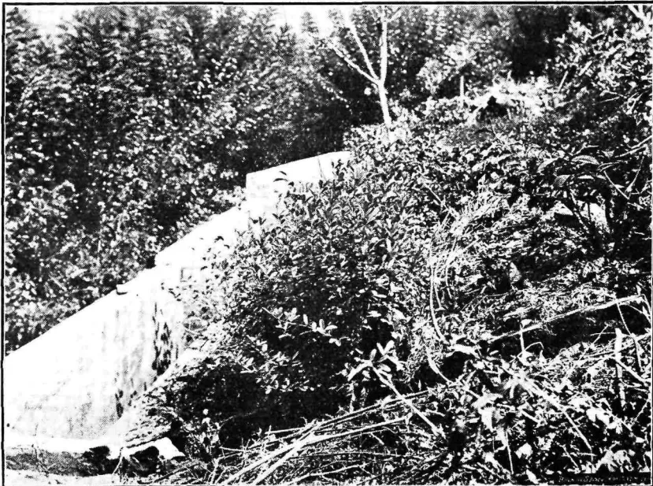
A black and white photograph showing a contour hedge of Clitoria cajanifolia plants. The hedge is planted along a slope, with a concrete or stone wall visible on the left side. The background shows a line of trees.A contour hedge of Clitoria cajanifolia
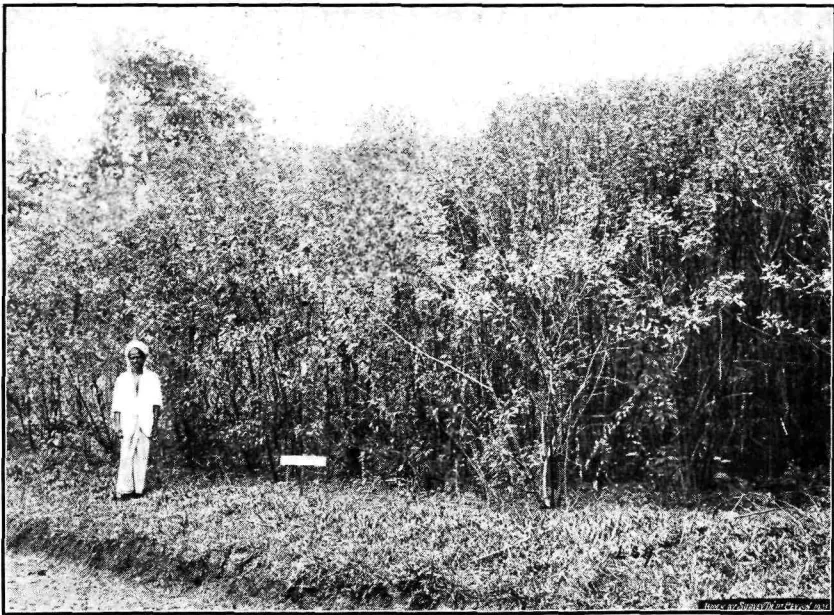
A black and white photograph showing a person standing in a dense thicket of Crotalaria anagyroides plants. The person is wearing a light-colored outfit and a hat, standing on the left side of the frame. The plants are tall and bushy, filling most of the background. The ground in the foreground is covered with low-lying vegetation. The image is framed by a thin black border.Crotalaria anagyroides
145The seeds are large and very sticky and this makes sowing difficult. It is said, however, that washing the seed impairs germination. For hedges seed should be sown thick, not more than 4 inches apart.
Crotalaria anagyroides.—This is the finest Crotalaria which has been tried at Peradeniya in the last ten years and its merits have been frequently referred to. Not a single tea estate, however, reports having tried the plant although large quantities of seed have been sold. Crotalaria anagyroides will produce a large weight of green material in a shorter time than any other leguminous plant grown locally. The loppings have a high manurial value and decompose rapidly.
The plant stands lopping rather better than other Crotalarias grown at Peradeniya but it is unlikely that it will stand more than two loppings before dying out. Crotalaria anagyroides attains a height of about 8 feet in a year. The seed pods are very liable to insect attack.
Crotalaria Brownei.—The plant has been grown experimentally at Peradeniya. The leaves are large but the amount of foliage produced so far has been poor. A further trial is in progress.
Crotalaria incana.—This was one of the earlier Crotalarias tried in tea clearings at the Experiment Station, Peradeniya, but on account of its small size it cannot compare with C. anagyroides and others. Bunting and Marsh (10) report that in the F.M.S. the growth was poor and weak and it was found useless as a cover plant.
Crotalaria intermedia.—This has been grown experimentally at Peradeniya. The seed germinates very rapidly and evenly but the small size of the leaves and comparatively sparse foliage render it inferior to C. anagyroides and others.
Crotalaria juncea.—Sunn hemp, Hana (Sinh.), Shanal imappu (Tam.).—This plant has been very largely used for the green manuring of paddy, tobacco, and other crops in India. It is also cultivated for its fibre in south India and north Ceylon. As far as is known it has not been used for tea. If sown thickly it will produce a considerable quantity of green material in a short time. The growth at Peradeniya is inferior to that of C. anagyroides.
Crotalaria laburnifolia, Yak-beriya (Sinh.).—Hope and Tunstall (21) record that this plant has been tried in tea in India but was not found very successful. Wright (36) records its trial at Peradeniya but states that the yield of green material was low. The plant has been tried again more recently and this
146opinion is confirmed. The superintendent of a Balangoda estate on the other hand reports that it is one of the most promising green manure plants he has tried. There is just a possibility however that the plant was not C. laburnifolia.
Crotalaria longipes.—Seed of this plant was sent to Peradeniya by the superintendent of a Maskeliya estate who had received it from India. The plant has a spreading habit. All the plants died out after two loppings and the amount of green material furnished was not large.
Crotalaria semperflorens.—The superintendent of an estate at an elevation of about 5,000 feet gives a very favourable report on this plant and states that it forms a good protection against wind. It is stated to be grown on high tea estates in south India. It has not been tried at Peradeniya.
Crotalaria striata.—This plant was extensively used in the earlier green manuring trials in tea at Peradeniya. It has also been grown in tea both in north and south India, where, however, the plant is not very favourably spoken of.
Elliott and Whitehead (13) state that it grows freely in Ceylon up to about 3,000 feet and that 3 or 4 loppings can be taken before the plants die out. At Peradeniya as many loppings as this cannot be taken, but the life of such plants is usually longer at high elevations. Wright (36) gives the seed rate at 10 to 20 lb. per acre sowing in alternate rows, and states that in six months 12,000 lb. of green material per acre were obtained. He also states that in old tea at fairly high elevations little success was obtained unless the Crotalaria was sown after pruning and manuring. This is generally the best time to sow any green manure plant.
Willis (33) recommends 30 lb. of seed per acre and states that in four cuttings in a little over a year 20,827 lb. per acre of green material were obtained.
Bunting and Marsh (10) speak very highly of striata in the F.M.S. as a weed smotherer and source of green material. At Peradeniya both C. anagyroides and C. usaramoensis afford more green material and stand lopping better than C. striata. The plant is scarcely mentioned in the replies to the circulars. One estate in Dimbula reports that it was not very successful.
Crotalaria walkeri.—This plant has been grown experimentally at Peradeniya. Growth was fair but not very vigorous. The plants have a spreading habit. The recovery from lopping was fairly good.
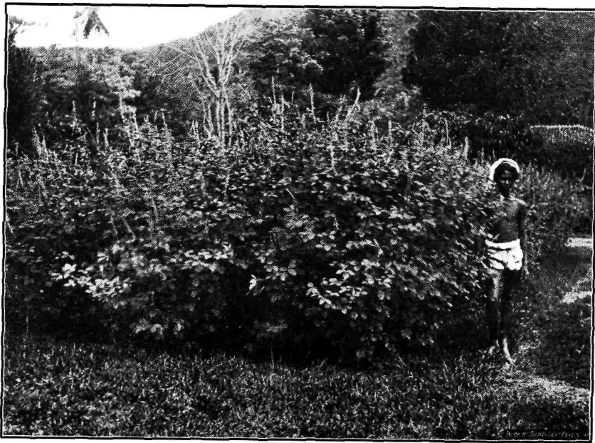
A black and white photograph showing a person standing to the right of a large, dense, leafy bush. The bush is identified as Crotalaria striata. The person is wearing a light-colored head covering and a light-colored cloth around their waist. The background features a grassy field in the foreground and a dense forest or hillside rising behind the bush. The photograph is framed by a thin black border.Crotalaria striata
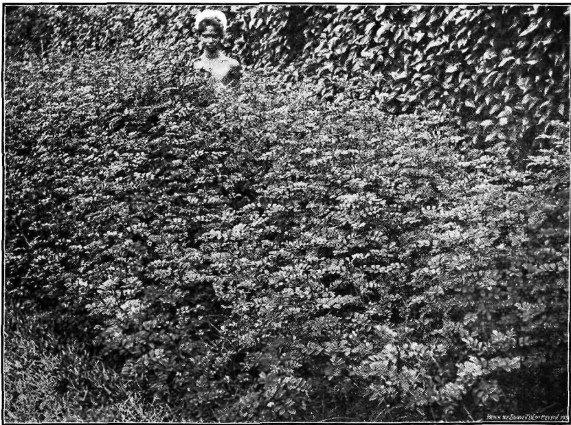
A black and white photograph showing a person standing amidst a dense thicket of Indigofera hirsuta. The person is positioned in the upper left quadrant, partially hidden by the thick, leafy branches of the plant. The plant itself is characterized by its dense growth habit and small, rounded leaves, creating a complex texture across the entire frame. In the bottom right corner of the image, there is a small, faint copyright notice that reads "© 1903 by George Engelmann".Indigofera hirsuta
147Crotalaria usaramoensis.—At Peradeniya, this plant may be considered to come second to C. anagyroides among Crotalarias. Bunting and Marsh (10) describe it as producing the heaviest and quickest growth of all the covers under observation by them. It has been used on some tea estates for contour hedges but, being short-lived like all Crotalarias, it is not considered suitable for this purpose. It has also been used by some estates at elevations between 3,500 feet and 5,200 feet as a source of green material. It, however, does not stand lopping well, and has not generally been received with much enthusiasm. The seed is very small and the seed rate is given by one superintendent as 2 to 3 lb. per acre. The seed pods are attacked by insects.
Galinsoga parviflora.—This is one of the plants stated by Anstead (5) to have been found useful in selective weeding on south Indian tea estates.
Desmodium gyroides.—Unlike most of the common Desmodiums in Ceylon this is a tall shrub attaining a height of 6 to 9 feet. It is described as the most useful of the many species of Desmodiums found in the Dutch East Indies where it is said to grow up to an elevation of 2,500 feet. Young plants are said to be liable to die off for some reason not yet satisfactorily explained.
At Peradeniya it grows well and furnishes a fair weight of loppings. It appears to die off, however, after lopping for 12 to 18 months.
It has a profuse root system on which many nodules are found.
Indigofera arrecta.—This plant grows vigorously at Peradeniya but the weight of green material furnished is not large. It was tried for contour hedges in tea but after taking three loppings in 18 months the plants died out. A Dimbula estate, however, reports that it has survived lopping for three years. Other estates at about 4,000 feet have tried the plant but do not report very favourably. The plant seeds profusely from an early age. The seedlings are deep-rooted and are apt to overrun a field unless kept in check. I. arrecta is one of the plants from which indigo dye is obtained.
Indigofera hirsuta.—This plant has a more spreading habit and provides more leafy material than I. arrecta. It is, however, short-lived, its recovery from lopping is uncertain, and at Peradeniya it always appears to lodge after seeding. It forms a better protection for the soil than the more erect types.
148A favourable account is given by Bunting and Marsh (10) who state that in the F.M.S. Indigofera hirsuta completely covered the ground in 4 months.
Indigofera suffruticosa.—The habit of this plant is rather more bushy than that of I. arrecta.
Willis (33) records that the plant was sown in alternate lines in tea at Peradeniya. He gives the seed rate as 10 lb. per acre and states that the yield of green material was comparatively poor. The life of the plant is likely to be similar to that of I. arrecta to which it bears close resemblance.
Lupinus sp., Lupins.—Though very valuable for green manuring purposes in temperate zones lupins do not promise to achieve any great results in Ceylon. A number of varieties are now being grown at Peradeniya but at present the indications are that the climate is quite unsuitable.
A few tea estates have tried lupins. Only one estate, in West Haputale, at an elevation of 4,000 to 6,000 feet, has given a favourable report. Other estates at high elevations report serious damage by grubs, and one records a disease, Pestalozzia lupini.
The general indications are that the plant is not suitable for Ceylon.
Sesbania aegyptica, Chittakatti (Tam.).—This plant has been used for growing and digging in between tea in India.
It has been grown at Peradeniya where it yielded three cuttings of green material. The yield of loppings is, however, very meagre compared with many other plants.
Sesbania cannabina, Daincha.—This plant is referred to in many publications as Sesbania aculeata but as the name was changed to Sesbania cannabina a number of years ago at Peradeniya that name is here used.
Seed of this plant germinates with exceptional rapidity and evenness. It is very largely used for the green manuring of paddy in south India. It is hardy and will grow on a variety of soils, though it prefers a sandy one.
Hope and Tunstall (21) record that in tea seed is broadcasted at the rate of 15 to 30 lb. per acre. They state that the crop grows very rapidly and can be hoeed in two months later. In Assam an average patch of daincha was dug up and the weight of the complete plants was equal to 7,500 lb. per acre. Mann and Hutchinson (28) state that in one set of experiments the hoeing in of daincha resulted in larger increases in the yields of tea than with Phaseolus mungo or Crotalaria strata.
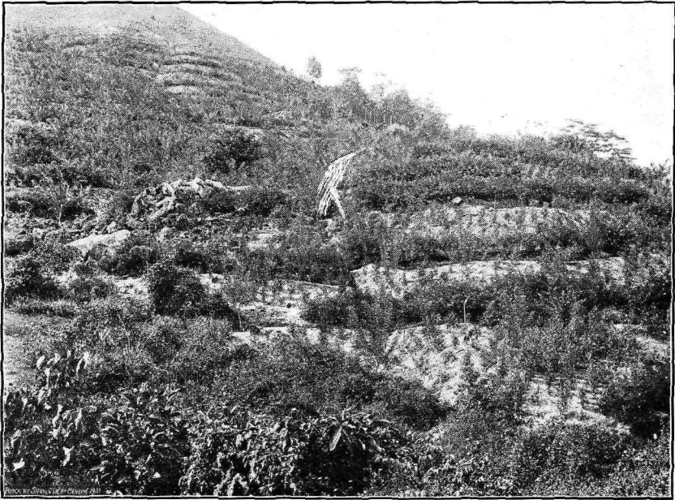
A black and white photograph of a hillside. The hill is covered with dense, low-lying vegetation, which appears to be hedges of Tephrosia candida. The vegetation is arranged in a terraced pattern, following the contours of the hill. The foreground shows a clearing area with some scattered plants and rocks. The background shows a more densely vegetated hillside. The overall scene is a natural landscape, likely a tea plantation or a similar agricultural setting.Hedges of Tephrosia candida in a tea clearing
149There is no doubt that when thickly sown and hoed in early daincha will provide a large quantity of organic matter, but this type of green manuring is but seldom practised in Ceylon and for lopping the plant is of very little use.
Strobilanthus viscosus, Nelu (Sinh.).—This wild plant grows prolifically in some up-country jungles and is quoted by Elliott and Whitehead (13) as a useful source of green material to be brought in from outside.
Several up-country estates record good results from the use of this green material.
Tephrosia candida, Boga medeloa.—This is probably the most popular and useful bush green manure plant in Ceylon from sea level to about 4,500 feet. If it has a rival it is Tephrosia vogelii but the latter plant is at present not so well known.
Bald (6) describes it as the most useful shrub for green manuring of tea in northern India. He states that the usual practice in India is to sow the seed with the early rains in alternate rows of tea. Three loppings a year are obtainable giving 7,200 to 8,000 lb. of green material per acre per lopping where the plants are spaced 8 feet by 4 feet. After about three years the plants are usually dug out and trenched in.
Hope and Tunstall (21) give the seed rate at 20 to 30 lb. per acre for sowing hedges in alternate rows. The authors add that the plants should be lopped as often as possible.
Mann and Hutchinson (28) recount the advantages of Tephrosia candida at length and state that the only disadvantages are interference with the working of the tea and red rust.
In Ceylon the plant is possibly used more for coconuts and rubber than for tea but it is considerably employed for the latter crop more particularly at low and medium elevations. Probably its greatest use is for contour hedges or hedges above drains and roads in clearings, and such hedges have undoubtedly done much to check erosion and at the same time furnish a considerable weight of green material.
In old tea the usual practice is to sow the seed in alternate rows. The general seed rate for this purpose is given at 4 to 6 lb. per acre though some estates use 10 lb. per acre and one recommends broadcasting 25 to 30 lb. per acre. Broadcasting is usually done, but one estate reports planting 20 feet by 20 feet interplanted with dadaps planted at a similar distance. In this case the bushes must be lopped and treated like trees. This is not thought to be the best way of using the plants. Some estates only plant Tephrosia candida in hedges above roads and drains
150while others plant it only in poor places where vacancies in tea have occurred. Once established there are two methods of dealing with the plants. One is to pull up and fork them in after 8 months to a year, and the other is to leave them for a number of years and lop periodically. The former practice is not general but some planters consider it to be the best method. The superintendent of a Matala estate considers that the plants should be left in only so long as they can be pulled up by hand. The cost of pulling the plants and forking them in within a year is given as from Rs. 7.50 to Rs. 10 per acre.
Where regular lopping is done two to three loppings a year can be taken. The cost of lopping alone is given at various figures between 60 cents and Rs. 2 per acre. The age at which Tephrosia candida should be finally dug out must vary with the elevation. At low and medium elevations the plant will have become very woody and the yield of green material will have sensibly diminished after three years. At high elevations the plant can be economically retained for from four to six years.
The ability to grow on poor soil is one of the most valuable characteristics of the plant. There is considerable evidence of improvement to tea as the result of planting Tephrosia candida.
The pests and diseases to which the plant is prone are somewhat numerous; it is often severely attacked by shot-hole borer and some superintendents consider that its presence results in increased incidence of this pest. Several scale insects including Pseudococcus virgatus attack the plant more or less severely. The seed pods are attacked by a number of insects and good seed is often hard to obtain. Various fungoid diseases, including Fomes lignosus and Poria hypobrunnea are found on old plants, but such diseases will not be common if the plants are not left in too long.
These drawbacks, however, have done little to diminish the popularity of the plant which is still the most widely grown of any bush plant in Ceylon.
Tephrosia noctiflora, Ela-pila (Sinh.).—This plant was formerly known as T. hookeriana. It is much smaller than T. candida or T. vogelii and given similar conditions will not furnish more than a quarter of the green material that could be obtained from them. It has rather a low-spreading habit. It is possibly rather more hardy than T. candida but in other respects cannot be compared with it.
Tephrosia tinctoria, Alu-pila (Sinh.).—Anstead (3) records that this is the commonest wild legume found growing on some tea estates in the Wynaad and if encouraged will form an excellent light cover. It has a low-spreading habit.
151Tephrosia senticosa.—This is a low-spreading shrub which has been grown experimentally at Peradeniya. It is of little use as a source of green material, and as a ground cover more suitable plants are available.
Tephrosia villosa, Bu-pila (Sinh.).—This plant has been grown experimentally at Peradeniya. It has been seen in a nursery in Dimbula but the yield of green material promised is not large.
Tephrosia vogelii.—This plant shows a considerable resemblance to T. candida but is easily distinguished by its pods which are larger, longer, and very hairy. The leaves are also larger and the foliage generally more luxuriant. It yields a larger quantity of green material when young than T. candida but its life is shorter. At Peradeniya it does not generally live for more than two years, but in Dimbula, where it grows very well, it appears to last for a number of years and stands lopping well. Burnett (11) records that it grows well in Dickoya but is inclined to grow out over the surface of the tea bushes and interfere with the plucking. The same however may be said of T. candida, though possibly to a less extent, and the more luxuriant foliage of T. vogelii is in other respects a point in its favour. Another advantage is that as far as is known the seed pods are not liable to insect attack. Good accounts have also been received of the plant from Kalutara and Balangoda.
Tithonia diversifolia, Wild Sunflower, Natta suriya (Sinh.), Suriyakandu (Tam.).—This plant is not leguminous but its prolific growth on waste land at low and medium elevations renders it a most useful source of green material. It was used in an experiment at Peradeniya in which green material brought in from outside was buried, and was found to result in as great an increase in nitrates in the soil as was obtained from the green material of leguminous plants.
The uses of ground cover plants differ somewhat from those of trees or bush plants and it will be desirable to set out afresh the advantages to be gained:
These advantages will now be discussed in greater detail.
(1) Shading the Soil.—The advantages of shading the soil in a tropical climate have already been explained. A ground cover plant will achieve this object more effectually than a tree or bush plant, provided the growth is good.
(2) Root Action.—The root action of ground cover plants will naturally not extend to the same depth as that of trees or bush plants. The mass of rootlets afforded by such a cover plant as Indigofera endecaphylla, however, will permeate the surface soil more effectually than the roots of trees or bush plants could do.
(3) Nitrogen Assimilation.—All that has been said in this connection with regard to trees or bush plants will hold good for ground cover plants. Two sets of Peradeniya figures can be quoted in the matter of gain or loss of nitrogen when the plant is not turned in. In the trials of Indigofera endecaphylla in old tea on the Experiment Station, Peradeniya, soil analyses are made by the Agricultural Chemist every two years, just before pruning. The Indigofera was planted after pruning in October, 1925, and the average nitrogen contents of all the plots under treatment has been as follows:
| 1925 | 1927 | 1929 |
|---|---|---|
| ·096 | ·087 | ·098 |
It will be seen that a slight decrease occurred at the end of the first two years while at the end of four years a slight increase was registered. The full results of this trial will be found in two articles, one by the writer, and one by Dr. A. W. R. Joachim, Agricultural Chemist, in The Tropical Agriculturist of March 1930.
153Another set of figures has been published by Joachim and Pandittesekere (24) in connection with a further experiment at Peradeniya, and these have been quoted in connection with trees and bush plants. In this case the samples were taken from undisturbed plots of Dolichos hosei (Vigna), and the indication is that large increases of nitrogen cannot be expected from growing cover plants without turning them in periodically.
(4) Check to Soil Erosion.—In Ceylon this will usually be the principal object in planting a ground cover, and such a crop is the only really effective method of preventing the movement of surface soil, or minimising it to the utmost. Figures of a soil erosion experiment, being conducted at Peradeniya, have already been quoted in Section I. The evils of soil erosion are so well known and the beneficial effect of a ground cover in checking erosion so obvious that it appears unnecessary to discuss the matter further.
(5) Soil Moisture.—This is a most important consideration. The loss of soil moisture through transpiration appears at first sight to constitute a considerable drawback to the planting of a cover crop in tea. Before coming to any conclusion in this matter however, it will be necessary to examine the opinions and experience of other authorities and estate superintendents.
Hope and Tunstall (21) write "The soil is always losing moisture by evaporation on the surface; but at the same time the plant by transpiration is losing moisture also and it is found that in the cases investigated the amount of water lost by transpiration considerably exceeds the amount saved by the reduction in the evaporation from the soil surface". This view is generally supported by experiments elsewhere. The results of Ceylon investigations and experience, however, are generally more favourable to the cover crop, at all events after the latter has been in possession of the soil for some time. The matter has been already dealt with to some extent in Section I and the results of the investigations at Peradeniya into this aspect of cover crops may be summed by quoting from Joachim and Kandiah (23) "Soils planted with cover crops either cut or left uncut are found to retain more moisture than bare soils at nearly all depths up to 24 inches. The results of previous work on the subject are therefore confirmed". Turning to field experience it may be stated that tea under Indigofera endecaphylla at Peradeniya has never shown any sign of being more adversely affected by a drought than clean-weeded tea, in fact the impression gained has been the reverse. At Peradeniya, young supplies come on better in a cover of Indigofera than on clean
154weeded land. A Ratnapura estate has reported that Indigofera has been a great success in young clearings and has had no adverse effect on the young tea plants. Similar reports have been received from Bandarawela and Moneragala which are dry districts. On the other hand two estates in Badulla have reported unfavourably of Indigofera in young clearings and one superintendent states this cover to be "definitely injurious" to young tea. It is probable that if there was an adverse effect it was due to undue absorption of moisture at the expense of the tea plants. Hope and Tunstall's remarks refer to Indian climatic conditions which are very different to those of Ceylon. There is no concrete evidence in Ceylon of any adverse effect caused by a cover crop in old tea, but opinions as to young clearings seem somewhat divided. Generally the principal object of planting a cover crop in a clearing is to save soil erosion which will naturally be most severe in the first two or three years. If the land is steep and no other special measures have been taken the necessity of checking erosion seems so urgent that the planting of a cover crop would appear generally advisable. It will always be necessary to keep a clear space round young tea bushes and it is thought that if in drier districts this clearing is done in a somewhat larger ring the adverse effects complained of may not be felt.
(6) Increase of Organic Matter.—This aspect of the practice of growing ground cover plants among tea has received far more attention in India than in Ceylon. The principal reason of this is probably that a considerable amount of tea in northern India is grown on comparatively flat land and on such land the practice of growing an annual leguminous ground cover crop and hoeing it in a few months can be adopted with benefit. For many Ceylon estates the erosion resulting from such a practice would probably more than counterbalance the benefit. It is thought, however, that by substituting envelope-forking for hoeing the practice of growing a ground cover crop to be incorporated later in the soil might be considerably extended. In spite of the difference of conditions it will be advisable to examine Indian practice and opinions in this matter.
Bald (6) after discussing the use of trees and bush plants gives it as his opinion that more rapid results can be obtained by sowing an annual crop between the lines of tea bushes, and further states that a green manure crop has reached its maximum usefulness when it has begun to flower and should then be hoed in. The possibility of soil erosion is not neglected for the author states that on steep hillsides "It is madness to dig during the
155rains'', and in such cases the crop is merely sickled and left on the ground. By actual experiment the author claims to have noted an increase of fully 70 lb. of tea per acre on a hill estate at an elevation of 4,000 feet by this practice of green manuring and he states that the increase in the plains must be more.
Hope and Tunstall (21) describe Phaseolus mungo (a creeping leguminous plant) as the most satisfactory green manure at present known for replacing lost organic matter in tea land.
Mann and Hutchinson (28) in discussing the hoeing in of Phaseolus mungo, state that the effect on yield of tea appears to commence about three weeks after the hoeing in of the green crops. The importance of obtaining a quick growth of the creeper, is stressed and it is stated that the crop should not occupy the land for more than 6 to 8 weeks.
Conditions in different parts of India of course differ largely but it is gathered that, speaking generally, in northern India trees in tea are usually not lopped and reliance is placed on annual creeping legumes for the replenishment of organic matter. In Ceylon on the other hand the loppings of trees are the chief source of organic matter while, ground cover crops, if used at all, are planted principally with the object of checking soil erosion. Each country must suit its own needs but it is thought that the improvement in the physical texture of the soil and the increase in organic matter likely to result from the growing of a cover crop, even if it is not turned in to the soil, is not always realised. In the trial of Indigofera endecaphylla in progress at Peradeniya the following percentages of organic matter were found after planting Indigofera in 1925:
| 1925 | 1927 | 1929 | |
|---|---|---|---|
| Average percentage of organic matter | 3.75 | 4.56 | 5.29 |
There is little doubt that these increases would have been larger if the creeper had been periodically forked in and this question will probably be the subject of the next trial. The question of erosion must always be considered along with the proposals to fork in a cover crop and it is gratifying to note that even without digging in the cover an increase in organic matter can be confidently expected.
A good many Ceylon tea estates have inaugurated a system of digging or forking in cover crops in order to obtain the maximum increase of organic matter. The information furnished by estates relates almost entirely to Indigofera endecaphylla. Some estates cut and fork in this creeper, others fork it in without cutting. Costs of cutting and forking in are
156given as being between Rs. 4.80 and Rs. 5 per acre. One estate cuts the creeper at manuring, throws it in to the next row and forks it in at a total cost of Rs. 7.50 per acre. It may be mentioned that there is no difficulty about forking through the creeper without cutting it out but experience shows that it is difficult to incorporate any considerable quantity of green material without first cutting the creeper.
(7) A Check to Weed Growth.—This is a controversial subject. Some planters assert that once a satisfactory cover is established weeding is a thing of the past, while others assert that the presence of a cover crop increases the difficulty and cost of weeding.
There are two aspects of weeding in connection with a cover plant, one is the removal of the plant itself from the tea bushes—a weed is a plant in its wrong place, and if a cover plant is creeping over a tea bush it becomes a weed—and the other is the effect of the cover plant on other weeds. If the cover plant needs so much controlling that the labour involved more than counterbalances any saving in the removal of other weeds there is obviously no advantage gained as regards the weeding bill. The remedy is to choose a suitable plant. In the case of the best known cover plant for tea in Ceylon, Indigofera endecaphylla, the creeper does not twine round or climb up a tea bush; it will sometimes grow up through the middle of the bushes but is very easily removed by hand. Writers on green manuring of tea in India allude to the efficiency of soya bean (Glycine hispida) and of Phaseolus mungo in keeping down weed growth, but also mention the difficulty of preventing these plants from climbing up the bushes.
Figures are not available, but it is considered that in the case of Indigofera endecaphylla though the cost of weeding will be increased in the first year, thereafter it should gradually drop below the normal. At Peradeniya very few weeds, except couch grass, come through Indigofera. Cora will appear if the cover is removed, even if it has been apparently smothered for two or three years. It is not likely that a cover crop will ever enable weeding to be dispensed with altogether.
Little information is available about the effect of weeding of creepers other than Indigofera endecaphylla. Dolichos hosei has been used in tea and it is thought that the cost of keeping this plant from smothering the bushes is not excessive. The subject will be mentioned again in the notes that follow.
(8) Retention of Plant Food.—By its nature and habit a ground cover plant is better fitted to take up plant food which is not within reach of the root system of young tea than a tree or
157bush plant. This plant food will thus be retained on the land and some will later be returned if the creeper is dug or forked in, and by the natural leaf-fall.
A certain amount has been said on this subject in discussing the question of weeding. Perhaps the principal requirements of a cover plant for tea is that it should not climb over or unduly interfere with the progress of coolies. Indigofera endecaphylla fulfils these requirements better than any other plant that has been planted in tea in Ceylon. This creeper will thrive from sea level up to about 5,000 feet. It is not known whether any suitable creeper has been found for higher elevations than this. Next in popularity probably comes Dolichos hosei but this creeper cannot be said to be extensively planted as a cover for tea.
These remarks refer only to planted creepers; selective weeding will be discussed later.
The question of the smothering of tea bushes and undue absorption of moisture have already been dealt with. There remains the harbouring of snakes and leeches. At Peradeniya snakes have been fairly frequently found among Indigofera endecaphylla. Two pluckers have been bitten in four years though fortunately the results were not serious. There would seem to be no way of avoiding this disadvantage which is possibly the most serious objection to the planting of a ground cover in tea.
In Indigofera very few complaints of leeches have been received. The superintendent of one estate which has about 50 acres under Indigofera reports that leeches are never found in this creeper though they abound in the district. At Peradeniya a good many leeches were found after the heavy rains in November 1929. Previous to this they had been very little noticed.
Centella asiatica, Gotukola, Hin-gotukola (Sinh.), Kalluvallarai (Tam.).—This plant was previously identified as Hydrocotyle asiatica. It is found growing vigorously in tea on many estates. Its value appears to be a matter of controversy. A superintendent at Kalutara describes the plant as a pest and states that large sums of money have been spent on its eradication. On the other hand a superintendent in the Kelani Valley considers that it gives a more desirable cover than Vigna, both for tea and rubber, but is hard to establish.
158For a general opinion as to the encouragement of such plants the reader is referred to the later heading "Selective Weeding".
Cotula australis.—Anstead (5) states that use has been made of this plant in selective weeding for the prevention of soil erosion on south Indian tea estates.
Desmodium triflorum, Hin-undupiyali (Sinh.), Serupilladi (Tam.).—This is a very small, close-growing, perennial herb, indigenous to Ceylon found up to about 2,000 feet. It has probably never been planted in tea, but in some cases it has been encouraged to grow by selective weeding. Emphatic reports of its unfavourable effect on young tea have been received. Burnett (11) states that its matted root growth appears to prevent soil aeration and to affect the tea detrimentally.
Evidence generally points to the close matted growth formed by the plant as its chief disadvantage. It is thought that if forking through the cover was regularly done the ill-effects might be mitigated, but as the plant's only advantage appears to be that it grows spontaneously there seems to be no adequate reason for recommending it.
Dolichos hosei (Vigna).—This plant was for some years known as Vigna oligosperma and the term "Vigna" is almost accepted as a common name. The creeper is principally grown as a cover crop in rubber but has been planted to some small extent in tea.
Grigsby (15) points out that it thrives well in some places while in others it will not grow at all; in fact on some estates it is almost impossible to establish. When difficulty is found in establishing it a small application of a general mixture, rich in phosphates, is recommended. The author recommends starting nurseries from seed or cuttings so that fresh runners are available for planting out in the field. It is necessary that every runner planted out should contain a small root. This precaution has been found at Peradeniya to make all the difference between success and failure. Vigna usually grows downhill so that it is advisable to put the ends of the runners going downhill. Some estates report, however, that sowing seed in the field is more successful than runners.
On tea estates a number of trials have been made with Vigna from sea level up to 5,000 feet. The great objection to the use of this creeper in tea is that it is liable to creep over and smother the tea bushes. It is not, however, a very strong climber and it is thought the expense of keeping it off the bushes is by no means prohibitive. One or two estates have given up Vigna in tea on account of its climbing proclivity. An up-country
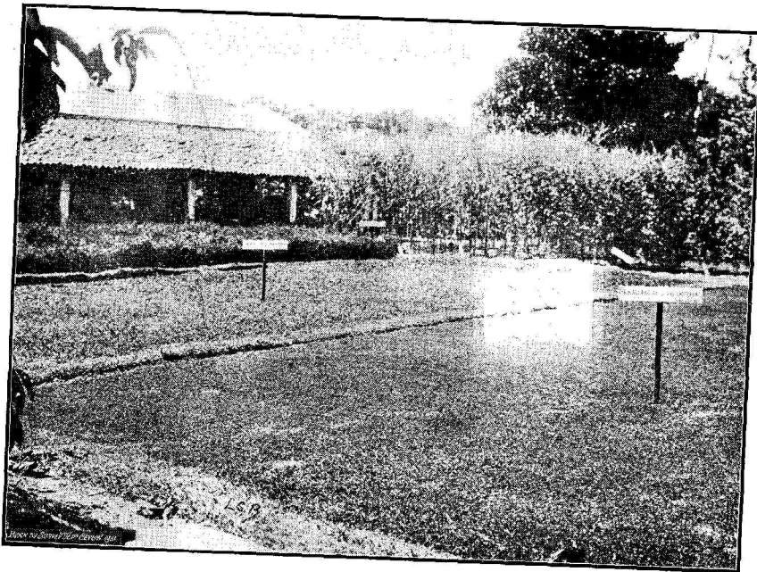
A black and white photograph of a grassy field. In the background, there is a building with a thatched roof and several pillars. The field is marked with several signs. One sign in the foreground is partially obscured by a bright light flare. Another sign to the right is visible. The overall scene appears to be a field study or research site.Desmodium triflorum and D. heterosphyllum
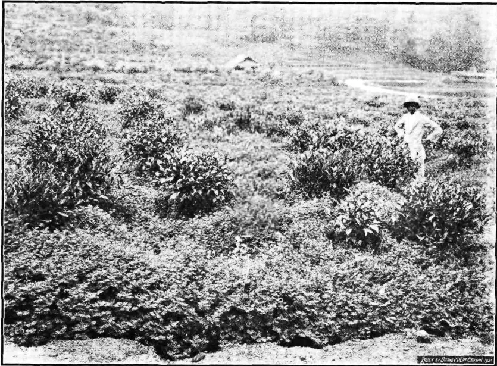
A black and white photograph of a tea plantation. The foreground and middle ground are filled with dense, low-growing bushes of Indigofera endecaphylla. A person wearing a hat and light-colored clothing stands in the middle ground, looking towards the camera. In the background, a small, simple hut is visible on a hillside. The image is framed by a thin black border. In the bottom right corner of the image, there is a small, illegible copyright notice.Indigofera endecaphylla as a cover crop for tea
159estate reports that the creeper is delicate and is frequently attacked by caterpillars. It has been reported that the cost of weeding is reduced by the establishment of Vigna. An estate in the Agra Patanas at an elevation of 4,500 to 6,600 feet reports that the creeper is well established and no further weeding is necessary. Dolichos hosei certainly forms a possible cover crop for tea but Indigofera endecaphylla is to be preferred.
Dolichos biflorus, Horse gram, Kollu (Sinh. and Tam.).—Mann and Hutchinson (28) report that this creeper has been particularly successful on one estate in India as a green manure for tea. It is not a perennial, however, and in India is grown for early hoeing in. It is a strong climber and for this reason cannot be considered really suitable for tea.
Drymaria cordata, Kukulu pala (Sinh.), Patani pillu, Kadalai pillu (Tam.).—This indigenous creeper is, like Oxalis, found growing prolifically on some up-country estates. It is recorded in Kotmale, Dimbula, and Dickoya, but is probably found also in other districts. It is liable to climb up bushes and particular care must be taken to keep it off young supplies. Superintendents have been faced with the problem as to whether to encourage it or attempt its eradication and as regards the solution of this problem the reader is again referred to the later heading "Selective Weeding".
An estate in Dickoya reports that weeding among Drymaria is very difficult.
Glycine hispida, Soy bean, Soya bean.—Hope and Tunstall (21) record that a number of varieties are used for the green manuring of tea in the Darjeeling districts of India. It is usually sown broadcast in alternate rows immediately after hoeing. A seed rate of 80 lb. per acre is mentioned. At Tocklai the plant was found to do best in shady places. The plant is reported to be very effective in keeping down weeds and in preventing soil erosion.
A white-seeded variety is reported to have made good growth at Peradeiya but on another occasion the crop was almost completely destroyed by Kalutara snails.
Like Dolichos biflorus the soy bean is an annual and is moreover a strong climber.
Indigofera endecaphylla.—For some years this creeper has been considered at Peradeniya to be the best cover plant for tea of any so far tried. Possibly its principal advantage is that unlike Vigna and many other creepers it will not climb over tea. At Peradeniya 14 plots of tea comprising in all 8 acres, have been under this cover crop since 1925. For the period between the 1927 and 1929 prunings, in spite of short rainfall
160and the loss of a number of bushes after the 1927 pruning, there was a general increase of yields of tea over the 1923-1925 period. There was also a satisfactory increase in the nitrogen content of the soil, and a most marked increase in organic matter, amounting to nearly 40 per cent.
Indigofera endecaphylla flourishes in Ceylon from sea level up to about 5,000 feet. An estate at Pundaluoya reports that cuttings did not strike at 5,300 feet, struck fairly well but grew slowly at 4,100 feet, and was easily established and grew rapidly at 3,400 feet. Another estate reports definite failure at 6,000 feet.
Alexander (1) says that in south India its natural habitat is 3,000 feet, but that it thrives well at altitudes varying from sea level to 6,000 feet. He adds that the creeper gives a heavier mulch than any other cover plant and protects the soil most efficiently from sun and erosion.
The plant is best propagated in the field from cuttings; seed in the fields has not been found successful. At Peradeniya two or three 18-inch cuttings were planted together, the middle of the cuttings being buried leaving both ends out. Such bunches of cuttings were put in 2 feet apart, but wider spacing can be adopted if an early cover is not of urgent importance. A fair cover was formed in 6 months and a continuous even cover in a year from planting.
The first object at Peradeniya has been to test the effect of the mere presence of the creeper on the tea, but there is little doubt that more benefit can be obtained by forking or digging it in. Some estates cut and fork in the creeper at a cost of from Rs. 4.80 to Rs. 5 per acre. An estate in Kalutara cuts and buries the creeper in holes at a similar cost. On another estate the creeper is cut at manuring time, the green material thrown into the next row and there forked in at a cost of Rs. 7.50 per acre. Some estates report that the creeper is forked in without cutting. There is no difficulty about forking through the creeper but experience shows that it is not at all easy to incorporate any considerable amount of the creeper in the soil without first cutting it.
Indigofera endecaphylla is remarkably free from pests and diseases. Light (25) reports that the only pest of importance is a caterpillar, Dichomeris ianthes, which sometimes completely defoliates the creeper. Experience at Peradeniya, however, is that the creeper recovers very quickly from such defoliation. The use of this creeper in young clearings has already been dealt with at some length in discussing the question of loss of moisture. Opinions on this matter are divided: generally in the wetter districts reports are favourable while in districts subject
161to long droughts some adverse reports on its effect on young tea have been received. One estate complains that it grows too high for the young tea but any cover crop needs keeping away from the immediate proximity of young tea plants and Indigofera should give less trouble than most others in this respect.
In old tea reports are more favourable though the plant has by no means achieved universal popularity. The danger of snakes has already been mentioned.
An examination of the physical condition of soil which had been under Indigofera for some time compared with clean-weeded soil will convince the most sceptical that improvement is taking place, and analysis bears that out.
When once a good cover is established a reduction in weeding costs may be anticipated though weeding can never be dispensed with. Couch grass comes through the creeper at Peradeniya, and Mycania scandens and a convolvulus creeper have given some trouble.
There is little doubt that I. endecaphylla has come to stay.
Oxalis corniculata, Hin-embul-embiliya (Sinh.), Kotti puliari (Tam.).—This species of Oxalis does not form bulbs in the same way as do the others mentioned; it is therefore quite easy to control. It is a small close-growing indigenous creeper with a yellow flower. It is not leguminous.
Anstead (5) mentions it as a useful plant in selective weeding on south Indian tea estates that hundreds of acres of steep tea land are under Oxalis. He adds that the yields of tea have been maintained and in fact increased and the effect on the tea in the hot weather is very slight.
The plant was left unweeded in the tea plots at Peradeniya for about two years and formed a fair but patchy cover. It was not found to be a strong enough grower to keep down other weeds, and grasses grew freely through it. Without cultivation this cover might be open to the same objections as Desmodium triflorum. Only one estate mentions this plant and the superintendent says that O. corniculata dies off in dry weather but provides a fair amount of organic matter.
Oxalis corymbosa, Puliari pillu (Tam.).—This plant is rampant on many up-country tea estates and was formerly regarded as a noxious weed. Drastic and expensive efforts were made to eradicate the plant but owing to the bulbs which formed below ground these efforts generally resulted in a thicker growth. It then began to be thought that on a steep land the plant might do more good than harm. Efforts to eradicate this weed gradually ceased and there are now actual instances of the planting
162of Oxalis. The plant dies down once a year in the hot weather and this is a great safeguard against it absorbing too much moisture at the expense of the tea.
Wilkinson (32) quotes an example of a very steep field where a prolific growth of Oxalis corymbosa has existed for 20 years. He shows by a graph that the yield of this field has throughout been satisfactorily maintained compared with the general average of the estate.
Superintendents in other estates in Dimbula, Dickoya, and Gammaduwa report that they do not consider Oxalis at all harmful and the yield of tea is not reduced by its presence.
Oxalis latifolia, Puliari pillu (Tam.).—This plant grows freely in Dimbula and other up-country tea districts and is often found mixed with O. corymbosa.
Oxalis violacea, Puliari pillu (Tam.).—Remarks made with regard to O. corymbosa would appear to apply equally to O. violacea.
Parochetus communis.—This is an indigenous creeper which has been found growing on several up-country estates and is highly spoken of.
Petch (29) says that it occurs in Ceylon from an elevation of 4,000 feet upwards being frequently met with on shady banks round Nuwara Eliya.
Anstead (5) says that it has been used in selective weeding in south India but that it is not easy to establish over large areas. It dies back in the dry weather but comes on again with rain.
Attempts to establish the plant at Peradeniya have so far failed.
Phaseolus mungo, Green gram, Mun-eta (Sinh.), Pasipayiru (Tam.).—Hope and Tunstall (21) state that a number of varieties are used for green manuring of tea in India. These are distinguished by the colour of the seed which varies from white to black. The authors state that both experiment and practical experience of planters have proved the value of the plant without doubt. They add that its twining habit is a disadvantage. A good crop is stated to give 8,000 lb. of green material per acre. It is said that the crop will not grow satisfactorily on poor soil without manure.
Mann and Hutchinson (28) give a seed rate of 40 lb. per acre.
The plant is attacked by several caterpillars. It is an annual and is grown only for hoeing in and not as a permanent cover crop.
163It is not quite certain whether the numerous references in Indian literature are to the green gram only or whether they include the black gram. Both have been called Phaseolus mungo. In any case the growth of the two plants is similar. At Peradeniya the black gram (Sinhalese Undu and Tamil Ulundu) is the stronger grower of the two.
Vigna sinensis, Cow pea, Mekaral (Sinh), Paithankai (Tam.).—This plant is well known as a food crop in Ceylon but has not been used to any extent as a green manure in tea. Willis (33) reports that cow peas were not found very successful as a green manure for tea.
Again V. sinensis is an annual and is only suitable for digging in. Thick sowing is necessary to obtain a good cover.
In addition to the planting of trees, bush plants, and creepers in tea there are a number of practices which deserve mention in this section.
In effect there is little difference between allowing a plant which has appeared spontaneously to grow and planting it, except that the choice of a plant is limited to those found on the land. Plants thus allowed to grow in tea are usually the low-growing kinds that would come under the heading of ground covers, but occasionally bush plants are allowed to grow up.
Anstead (3) describes an experiment in a tea clearing in the Wynaad district in which all legumes were allowed to grow. The commonest were found to be Tephrosia tinctoria and Cassia mimosoides. A good leguminous cover was obtained at practically no cost. On another estate Tephrosia tinctoria and Crotalaria nana were found to be the commonest wild legumes.
In another publication (5) the same author reverts to this subject in connection with the prevention of soil erosion. He says that a plant which will not climb is desired. The ideal plant is hard to find but Cassia mimosoides comes nearest to it. He mentions also Parochetus communis as a useful native legume but says it is not so easy to establish and dies down during the hot weather. Where a leguminous plant is not available he recommends the encouragement of Oxalis corniculata and states that many hundreds of acres of tea are under this weed, the tea has been decidedly benefited and erosion is practically nil. Other plants are also mentioned.
164In Ceylon the practice of selective weeding is perhaps not very widely adopted and is generally confined to one or two well-known plants. The most common are undoubtedly the species of Oxalis found in up-country tea districts. In early days strenuous efforts to eradicate these plants were made but with little success and with an undoubted increase in soil erosion. These expensive attempts were gradually abandoned, principally no doubt at first on account of their ineffectiveness. The realisation then gradually dawned that Oxalis undoubtedly helped in checking soil erosion and in this way possibly did more good than harm. This view gradually gained ground and today there are instances where the planting of Oxalis on tea estates has been undertaken.
Wilkinson (32) gives an interesting account of his experience with Oxalis in which he furnishes figures to show that a steep field covered with Oxalis has maintained its yield satisfactorily while a considerable amount of soil erosion has been saved.
Bamber (8), writing in 1915, recommends leaving Oxalis if once established. He points out that scraping will only increase the thickness of the subsequent growth and that the plant in any case dies down almost entirely at the beginning of the dry season. He is of the opinion that if tea is properly manured the yield is not likely to fall on account of the presence of Oxalis.
It is now the considered opinion of the Department of Agriculture that the species of Oxalis found on up-country tea estates are probably more beneficial than harmful to tea.
Another plant commonly found in tea is Centella asiatica (Hydrocotyle asiatica) better known under its Sinhalese name of Gotukola. Opinions appear to differ as to the desirability of this plant in tea. Two Kalutara estates say that it has proved a pest and that large sums have been spent on its eradication while the superintendents of two estates in the Kelani Valley consider it a better cover for both tea and rubber than Vigna but complain that it is hard to establish.
Another plant which has recently been the subject of a good deal of correspondence and discussion is Drymaria cordata. This plant is very prolific on some up-country estates and is sometimes found mixed with Oxalis. There is at all events a probability that on steep slopes it will do more good than harm. Care must be taken to keep young supplies clear of the plant as unlike Oxalis it will creep over the bushes.
Another plant which has been the subject of experiment in selective weeding is Desmodium triflorum. In this case the evidence is almost unanimously unfavourable. Probably the
165ill-effect of the plant on tea is due to the close mat it forms and possibly if forking through the cover were practised the effect might be different.
The whole question of selective weeding is one on which it is impossible to lay down hard-and-fast rules. Specimens of plants found growing among tea are often sent to the Department with an enquiry as to whether the plant will "do harm to the tea". Unfortunately plants cannot be classified into those harmful or beneficial to tea. The pros and cons must be considered in each case. The pros are, in the case of a leguminous plant, all the advantages of planting creepers in tea which have been enumerated. In the case of a non-leguminous plant, all the advantages hold good except the assimilation of atmospheric nitrogen by the plant. The cons are the well-known objections to "weeds", the absorption of plant food and moisture, possibly at the expense of the tea plant, and in the case of a close-growing plant interference with soil aeration. A further practical, though not very serious, difficulty is that of training labour to leave only the plant or plants desired and the possible increase in weeding costs entailed.
Of the advantages of planting a creeper in tea probably the checking of soil erosion will generally be the most potent factor in favour of some form of selective weeding.
It may be mentioned here that the toxic effect of grasses on fruit trees which was claimed to have been proved at the Woburn Experiment Station is not upheld by modern investigators. The detrimental influence of grass is generally accepted but the toxic action is disputed and it is held that the effect is due to physical causes such as lack of aeration.
The only safe general advice that can be given as regards the encouragement of any particular plant in tea is to make a trial with the plant and watch the effect on the tea, with the important proviso that definite patches or strips should be kept clean weeded as controls.
Such material may be obtained from jungles or other uncultivated portions of an estate. This practice has one great advantage over green manuring with plants grown in the tea itself; all the nitrogen and mineral matter contained in the material has been obtained from outside and is consequently pure gain. The cost of cutting and transport will in most cases form the limiting factor for this practice. Once the green material has been brought on to the land it may be disposed of in any of the ways already described. Elliott and Whitehead (13)
166mention the large quantity of green material which can be obtained from undergrowth in jungle adjoining estates, particularly where Nelu (Strobilanthus viscosus) is abundant.
Hope and Tunstall (21) also draw attention to this means of obtaining green material and point out that it is not necessary for the green material to be obtained from leguminous plants.
This point needs emphasis; the leaves of leguminous plants are not necessarily richer in nitrogen than those of non-leguminous plants and green material obtained from the latter may be just as valuable. In an experiment at Peradeniya it was found that burying the leaves of the wild sunflower, Tithonia diversifolia, resulted in just as great an increase of nitrates in the soil as the burying of leaves of leguminous plants. The wild sunflower grows prolifically in waste places in proximity to many mid and low-country estates and forms a valuable source of green material.
Material brought in from outside is often merely mulched on the surface, or is first mulched and later forked in. Two estates, one in the Welimada district and one in the Uda-Pussellawa, both dry districts, report that mana grass from patanas which is used for thatching is later forked in when it has rotted. Considerable benefit to the tea is reported to result from this procedure.
Bamber and Holmes (9) report a marked improvement in the yield and appearance of tea from the application of a heavy mulch of green jungle material and tea prunings.
Elliott and Whitehead (13) point out that the burying or forking in of tea prunings is a routine operation on nearly all Ceylon tea estates and that this operation contributes towards the maintenance of the necessary supply of organic matter in the soil. As in the case of other green material if the prunings are allowed to dry considerable losses in the value of the material are sustained. The burying of green tea prunings, however, involves the lopping off of the green leaves and small twigs immediately after the pruning and this work involves a good deal of expense. For this reason a common practice is to pile the prunings into alternate rows till the leaves drop off, then transfer the woody portion of the prunings to the next row and fork in the dried leaves, often in conjunction with the application of a pruning mixture.
(To be continued.)
167N. SENATHIRAJA,
MANAGER, EXPERIMENT STATION, JAFFNA
THE amount of chillies consumed annually in Ceylon is about 1,250,000 lb. worth some three million rupees. These are principally imported from Madras. But there is a great difference in quality between the chillies grown in Ceylon, particularly in Jaffna, and the chillies imported from Madras—the former being the better. Chillies are a remunerative crop both to large and small cultivators. The Department of Agriculture has tried to encourage the cultivation of chillies in recent years by the distribution of leaflets on the cultivation of the crop and by the distribution of seeds and seedlings of improved varieties. The encouragement given to this crop in the Jaffna Peninsula alone is shown by the following figures of distribution from the Experiment Station, Jaffna:
| Year | Quantity of seed chillies distributed |
Quantity of seedlings distributed |
|
|---|---|---|---|
| 1926 | ... | 1659 | 21,850 |
| 1927 | ... | 534 | 46,000 |
| 1928 | ... | 344½ | 33,985 |
| 1929 | ... | 354 | 4,600 |
| 1930 | ... | 335½ | 125,800 |
Chillies are more especially successfully cultivated in the drier districts. In the wet zone where the rainfall is not excessive the crop should be planted during such seasons so that the crop may be ready for harvesting during dry months. In Jaffna the return from chillies is second to tobacco in point of money value. Places of heavy rainfall are not very suitable for this crop as rain is harmful to it, especially during the flowering season and the period of curing.
Well-drained red loams are best suited for chillies. It is on the lighter soils that the greater part of the wet season crop is grown. On the mixed and more loamy soils containing a fair quantity of lime, the finest crop of chillies is raised under irrigation. In the Jaffna District, in the Pachillaipalli division, chillies are planted in sandy soils. It has been found by experience that even sandy soils when heavily manured are capable of giving a good yield. On light soils the crop is said to be liable to leaf
168and bud shedding after a light shower. Nowhere perhaps can more luxuriant crops of chillies be seen than in the red loamy soils of Valikamam North, Valikamam West, and Vadamarachi. The same variety, however, that is grown in the paddy lands of those places is not so luxuriant nor so productive. In the grey loamy villages of Manipay, Sandilipy and Sudumalai fairly good crops are given. There is some difficulty in draining these grey loamy soils, chillies cannot stand water-logging and transplanting of the crop has to be done in time to avoid the heavy rains of the North-East monsoon. Chillies grown in these soils are not so pungent as those grown in red soils.
On calcareous soils (called in Tamil "Makki Theri") chillies thrive well and yield a heavy crop. They would seem to have a liking for lime.
Among the crops that are grown in the Jaffna Peninsula the cultivators recognise some as beneficial to the soil and some as exhaustive. Tobacco is regarded as one of the former types of crop. It is liberally manured and is considered a good crop previous to chillies in rotation. The land is thoroughly tilled during the growth of tobacco. Chillies are an exhaustive crop and must be manured well. For manuring the Tamil farmers generally resort to the penning of livestock on the land. If the chilli crop follows paddy sheep penning is necessary. In some places where the crop follows yams or manioc the land is also well manured. The cultivator will not grow a crop of chillies after a crop of Tenai (Italian millet) as the latter is too exhaustive in its action on the soil. "Not even the palmyra palm will grow on land cropped with Italian millet" says the proverb. Chillies are said to do better after yams or manioc. This may be due to the fact that the land is usually well broken up when these crops are lifted and thus it gets a thorough cultivation. On garden lands to plant chillies after tobacco which is liberally manured, to follow this with manioc which stands for ten months and then millet and then to return to chillies after a crop of tobacco is considered a good practice in Valikamam North, one of the great chilli-growing districts in Jaffna. The growing of chillies mixed with a number of other crops is a general practice in some localities. In some places one may frequently see more than one crop being grown on the same land. It is not an infrequent practice while planting a crop of brinjal to put in at intervals a few plants of chillies and at the corners of the beds a few yams. This is a sort of insurance cropping, if one crop fails the other may not. In some localities a system of rotation prevails. Cowpeas are sown while the crop of chillies is being picked for the third or fourth time in the still standing crop in the early part of September. The cowpeas yielding a fair quantity of seed also serve as a good
169fodder for cattle during the months of January, February and March when there is a general scarcity of green fodder in the district. In the paddy lands chillies follow paddy. Occasionally one may find a few cowpeas, ash pumpkins and water melon grown along the borders—sometimes chillies are grown mixed with onions.
Chilli plants are generally raised in nurseries and then transplanted. Beds three feet by three feet are formed with a mamoty on lands previously ploughed and hoed. The beds are then levelled and well-rotten cattle manure or village sweepings which contain a good proportion of ash are applied at the rate of two baskets per bed. About a quarter pound of seed is sown in each bed and well mixed with the soil by means of the fingers so that the seeds may be slightly covered by soil to prevent them from being exposed. Then powdered manure is generally applied after pot watering the beds to cover any seed which may still be lying exposed on the surface. Another method that is in vogue is to tie the seed in a cloth and immerse it in water for two hours and then suspend it for twelve hours. Then steep it again for a quarter of an hour and suspend it for four hours, and sow within eight hours of the last steeping well mixed with sand to ensure even distribution. The beds should be watered every morning with hand till the seedlings are ready for removal. To keep the soil moist and to ensure an even germination it is a general practice to have the beds covered with straw or dried plantain leaves. The beds must be kept continuously moist, but not wet. The plants appear on the seventh day and the first leaves appear on the tenth day. The beds should be weeded once or twice by hand whenever the weeds are of a size to give a sufficient hold to the fingers. On the thirtieth day the seedlings are ready for transplanting. If they are allowed to stand longer in the nurseries they seem to withstand drought but this is no advantage. Usually plants which have a vigorous growth are topped with a sickle while they are still standing a week previous to the removal from the nursery. They are also topped after removal for planting. The application of green leaves to nurseries is of considerable advantage to the growth of the seedlings. Tulip (Thespesia) and Adathodai (Adhatodai vasica) leaves are considered the best. The leaves should be buried two or three weeks previous to the formation of the beds. It is quite essential in the cultivation of chillies that the plants should have a good start. To this end the cultivator aims at securing healthy plants in the nursery by good manuring and careful treatment.
In the Jaffna district it is a common practice in the case of land which has carried an early crop to plough it up soon after harvesting in December or January. This is known as cold
170weather ploughing. The ploughed land is left bare till April or May. These months are usually dry and the land gets thoroughly exposed to the air which is of very great value. During this long interval sheep penning is also done if it can be availed of cheaply. About 4,000 sheep per acre are usually penned. It costs about Rs. 60 to Rs. 90 per acre. Sheep penning is considered a good preparation for the crop. The sheep-penned areas are ploughed immediately. Sheep penning is only possible when the land is left bare during the cold weather. In the case of paddy and tobacco lands they are as a rule ploughed immediately after the harvest of the crops. In some parts of the district if the land becomes foul with weeds such as "Korai" (Cyperus rotundus), it is deeply tilled by ploughing and cross ploughing six or seven times. This is done between March and April. The principal object of this system of tillage is to thoroughly dry and aerate the soil during which process the weeds are killed. In the paddy lands it is not an uncommon practice to bury dried palmyra leaves at the rate of 8,000 leaves per acre. These are available in large quantities during certain parts of the year when roofing materials of houses are renewed. They cost 50 cents per 100. These serve as a good manure for chillies and the paddy crop that follows it is always luxuriant and the paddy grains are plump and of good quality. If the land is manured repeatedly with palmyra leaves for two or three years the cultivator applies no manure at all except a few cartloads of village sweepings for the succeeding five years, as the crops will grow well with the residuals. The land is prepared after breaking the clods with mamoties and mallets and thus the soil is reduced to a fine tilth. Then the rows are marked by means of a rope. If the planting is done in holes, the soil is dug up to a depth of six inches in the particular spots where the seedlings are to be planted and again filled up with loose earth. If the planting is done in furrows the land is formed into furrows and channels and then these are watered and seedlings are planted in bunches of three or four, some three feet by three feet apart. The distance of planting varies according to the nature of the soil. In the red soil garden lands it is 3 feet by 3 feet while in the paddy fields feet by feet is the usual distance. If the planting is done in holes they are pot-watered once in a day for about three weeks. During this period some cultivators pen sheep on the land bearing the crop. This is known as "Kanduppadi". The plants are hidden in the soil by bending the plants prostrate and covering them in holes made for them with soil. The plants are also pegged down by twigs. This is a somewhat extraordinary method of intensive cultivation. Heavy yields are obtained where this system of manuring is adopted. On the 18th day when the soil is suffi-
171five days. Then bigger beds are formed with the soil drawn towards the plants so that the water may stand at a distance from the base. The soil at the base of the plant is always kept loose. The crop is irrigated once in three days and the soil is then kept moist. Fifteen days after the first hoeing the second hoeing is done. Well-rotten manure is applied at the rate of ten to twelve cartloads per acre and mixed well with the soil by hoeing. Beds are then formed so that the plants will now be standing in the ridges of the beds while the capacity of the beds to hold water will be increased. Watering should commence about five days after this operation. In South India, in Ramnad, Madura, and Tinneveli districts a mixture of dung and earth is given. In about a month after this operation the plants will be well in flower and begin to bear young fruits. The soil should never be allowed to dry at this stage. The first batch of green fruits are picked in about three months after planting. It takes about thirty-eight days for a fruit to mature and ripen. The outstanding feature of cultivation is the great amount of attention given to the soil. It is intensive cultivation of an advanced type, and it pays.
The ripe fruits are picked every fortnight. Picking is generally done by women and children. The fruits are kept in gunny bags for about a day before they are spread on the drying floor for curing. This causes unripe fruits to mature. Otherwise owing to the presence of unripe fruits the colour and quality of the cured produce is much affected. Produce cured in the manner prescribed below always gives a uniform quality with a good colour. Clear weather is very essential for a good curing—cloudy and dewy weather is unfavourable for the curing of chillies. A clear sandy spot is usually selected as the drying floor. The fruits are spread on the floor very evenly. On the third day the fruits are heaped up in the evening and again spread out on the next morning. After spreading the fruits are trampled. This helps to flatten the berries and also to separate the seeds from the fleshy portion in the ovary. In five or six days, if the weather is clear, the produce will be completely cured. To test the fruits if they are properly cured a handful of the berries is taken and pressed between the hands and shaken to see whether there is any moisture left in the berries. For every one hundred pounds of wet chillies about thirty-three pounds of dried chillies are obtained. The dried chillies are stored in gunny bags—the bags must not be stored in moist places as the chillies become mouldy and get discoloured. The best method is in "Oomals" (palmyra leaf baskets). They are generally stacked on platforms made of wood. The cured produce must not be put out in the sun or
172exposed as it has been found by experience that the berries get discoloured. Traders generally grade the chillies to get a good quality. The grading is done immediately before the sale and is largely based on the colour of the produce. A good glossy colour is always essential to secure higher prices. Some people rub oil on the fruits to give the desired glossiness. This does not in any way affect the quality if it is properly done. The oil extracted from the seeds of Bassia longifolia, i.e., "Elupennai", is always preferred. Coconut and gingelly oil when applied are said to produce mould and discolour the berries and consequently they are never used. Chillies are often sold in Jaffna as ripe fruits to middlemen who cure them and sell the dried chillies to traders. The cured produce is sold wholesale by the thulam (28 lb. = 1 thulam). The price varies from Rs. 4 to Rs. 12 per thulam according to the state of the market. The local chillies meet with considerable competition in the market with the imported produce from Madras. To secure good prices locally the imports want to be controlled and prices standardised, this would encourage home production of chillies in Ceylon.
The average yield of cured chillies per acre is about 1,500 lb. With improved types of chillies yields as high as 2,000 lb. to 2,500 lb. per acre have been secured at the Experiment Station, Jaffna. To secure higher yields thorough preparation of the land with good manuring and a high-yielding type are quite essential. The crop would give as much as Rs. 500 to Rs. 800 per acre. The wet weather crops are not very remunerative and in localities where these are grown they are disposed of as green chillies. Rainy weather is prejudicial to the crop. The crop cured during rainy weather is inferior in quality.
Chillies, like brinjal, are very much subject to fungoid diseases but they are not so subject to insect attacks. "Karum thadi" or black stem disease is prevalent in the district. It is, however, easy to stop this disease from spreading by preventive measures. Plants affected by this disease should be uprooted and burnt. Another disease is leaf curl. The leaves and fruits become distorted and sometimes flowering ceases entirely. Plants affected by this disease rarely recover from it. The damage done by this is not great. It is generally believed by cultivators that continued dry weather coupled with the strong blowing of the South-West monsoon causes this disease. The disease was studied by the Bombay Department of Agriculture and it was found that the curling of the leaf is due to an Aphis living on the plant.
173W. R. S. LADELL.
CHIEF, DIVISION OF AGRICULTURAL SCIENCE, BANGKOK
(Published by the Courtesy of H.R.H. the Minister of Commerce and Communications, Siam)
THE Kingdom of Siam is a territory of 200,149 square miles. It is one of the three great exporting countries that supply the rest of the world with rice. Siam and Indo-China together export an amount not quite equal to that from India including Burma. The latter country is rapidly increasing its production and the amount available for export, and is now more than ever a serious rival of Siam.
Rice is the chief product of Siam and accounts for 85 per cent. of the exports and, moreover, is the staple cereal of the people. The well-being of the whole country depends on the rice crop and all branches of the community follow anxiously the progress of the crop from the time it is sown until it is safely harvested. The Kingdom of Siam is divided into fourteen circles for administrative purposes, and rice is grown extensively in each of these. The major portion of the rice that is available for export is grown in the plains and delta between the large rivers that empty themselves into the Gulf of Siam. This area lies in the seven inner circles of Krungdeb (Bangkok), Ayuthia, Nagor Chaisri, Rajaburi, Nagor Svarga, and Bisnulok.
On these plains and deltaic tracts there are many intercommunicating canals, serving the double purpose of supplying the rice fields with water from the rivers, and with the help of locks and sluices, forming a system of irrigation by inundation which, supplementing the rainfall, greatly helps in the production of rice. These canals are also very important in providing, by boat, a cheap means of transport for the grain.
The natural means of supply of water for rice cultivation in the Great Central Plain of Siam are (a) rainfall and (b) a rise in the rivers to inundation level, so that the fields will be supplied with the water necessary for the growth of the crops.
The average annual rainfall is from 1,000-1,500 mm., and experience has shown that to mature a full rice crop 1,800 mm. is required.
After one or two failures, or partial failures of the rice crop, the Siamese Government seriously took up the question of irrigation in 1913.
174Sir Thomas Ward came out to Siam in 1913, and after a year of tours and inspection, made a report embodying various irrigation schemes to ensure that the rice crop in the chief paddy-growing areas of the Great Central Plain of Siam should never fail. The first of these works, the South Prasak Canal, was completed in 1924, and has already justified its existence.
Complementary to the South Prasak Irrigation System is the Jiengrak and Bang Hia Drainage Scheme.
An interesting feature of this project is the construction of a main drainage canal with level and tidal sluices along the shore of the Gulf of Siam between Paktalong and Bang Hia—a distance of 60 Km. with a view to preventing the periodic tidal inundations from the sea, which formerly rendered fertile lands in the southern portion of the area covered by the Drainage Project, unsuitable for the cultivation of staple crops.
By means of the sluices and fresh water canals the saline water from which these areas have suffered hitherto will be replaced by fresh water, and the area of rice-producing land will be added to very considerably.
There are a vast number of named varieties of paddy, but these may be classified into two main groups, viz., Glutinous Rice and Non-Glutinous Rice. The Glutinous Rice derives its name from the fact that it is sticky when cooked. Those varieties of Glutinous Rice, with coarse, large, red, purple, or blackish grain, form the staple food of the people in north and north-eastern Siam, while the Non-Glutinous grain constitutes the staple food of the rest of the Kingdom, as well as the principal article of export from Siam.
The classification of paddy is a very complicated question as the divisions into which it is possible to group the different varieties overlap one another and one variety may be known by many different names.
This is known as Kao Rai or Kao Pa and is usually grown for the cultivator's own consumption. It is not necessarily planted on hills, but generally freshly cut jungle clearings are utilised. The cultivator cuts down large and small forest trees; roughly clears the land, dibbles in groups of paddy grains and sits and watches the result.
The crop is entirely dependent on rainfall. The soil from this virgin forest land is as a rule well provided with organic matter and possesses a good retentive capacity for water, but no water remains on the field.
175Maize is often grown in between the paddy and neither crop is ever very productive. The fallen trunks and irregular mounds of soil from deserted anthills provide excellent cover for vermin of all sorts and rats are particularly destructive of the crops in all stages of growth. The cultivator finds after two or three seasons or often after only one season that his land is losing fertility and becoming infested with weeds, so moves on to another area, which he exploits in similar fashion.
This method of cultivation is extremely wasteful and should be discouraged as much as possible.
The cultivator groups his irrigated paddy into three divisions according to their life periods, the Early, Medium, and Late ripening. There is no hard-and-fast line to be drawn between these groups. A Kao Nak in one part of the country may be known as Kao Klang Pi in another part and vice versa. As far as the Central Plain is concerned the classification is:
Early Kao Bao (Light rice) to months.
Medium Kao Klang Pi (Mid year rice) to months.
Late Kao Nak (Heavy) 5 to months.
These paddies can be planted by either of the two methods: broadcasting and transplanting.
Broadcasting (Na Wan).—As soon as the rains of May or early June have softened the soil sufficiently the land is ploughed and harrowed. The weeds and grasses are removed if excessively abundant.
The seed is then scattered broadcast over the surface of the soil which is given another harrowing to cover up the seed as far as possible, and nature is then left to do the rest.
In some areas the field is furrowed at regular distances (6-12 feet.) These furrows serve as drainage channels in case of too abundant rainfall during the germination period.
In Ayuthia and Klong Rang Sit and similar districts large areas are devoted to Kao Wan, which area, in addition to the rainfall, benefit by the inundation from the rivers and canals (Klongs) when they rise to flood level.
The paddy from broadcasted areas is known to the rice miller as Na Muang or field rice and is generally of poorer quality than transplanted rice, which the miller calls Kao Na Suan or garden rice.
Floating Rice or Creeping Rice.—A variety of Na Muang is the floating rice sometimes known as Kao Khun Nam (the rice that rises on the water). There are certain areas in Siam where
176at the end of the wet season the water in the fields rises to a great height. The rice planted in these fields is able to keep pace with the rising water except in the case of an abnormally rapid inundation. The growing tips of the plant always remain above the surface and the stem shoots off roots at the nodes that are submerged. This enables the plant to extract mineral material for its growth from the water in addition to the main roots in the soil, which act as an anchor.
Some varieties of floating rice have only the one set of roots in the soil until the water starts to recede and then they send out rootlets from the upper nodes into the muddy water. The plant becomes a big leafy mass as the tillering increases, and finally resembles a small island of paddy floating on the surface of the water. When the water subsides the roots fix themselves in the mud, and the tops of the stalks break off at the nodes and form separate plants.
The stems of floating paddy sometimes reach the amazing length of six metres or more. Harvesting is done from boats and followed by a final gleaning after the flood has subsided, and the mud has begun to dry.
Transplanting (Na Dam).—The fields intended for transplanted paddy are divided from one another by small bunds (Kun Na) according to the contour of the land. In the Great Central Plain of Siam these bunds are almost straight, and the fields approximately rectangular. All through the dry season these fields are sunbaked wastes with little or no grass growing in them. The soil is hard, and cracked to a depth of 20 inches or more, and often they look more like the dried up bed of muddy rivers than potentially fertile fields.
After the first rains the dried up grass changes from brown to green, the cracks disappear, and when the rains have softened the soil sufficiently the land is ploughed. The cultivator usually selects a low-lying portion of his holding, and turns it into a nursery. The nursery is ploughed and weeded, after which buffalo or cattle manure is sometimes incorporated with the soil. If a canal is handy water is pumped on to the field, which is then allowed to soak for several days, subsequently the land is ploughed, and harrowed while still under water. This has the effect of producing a soft sticky mud of gruel-like consistency, which should be 20-30 cm. in depth.
The grain for planting is put in sacks or baskets soaked in water overnight, and put aside for three days until germination is well advanced, and the germinated seed is sown in the mud of the nursery. The grain does not sink into the mud, but lies on the surface, giving the nurseries an appearance of having been
177dusted with sand. After 5-7 days the nursery is covered with a bright green carpet of paddy seedlings that quickly grow to sturdy young plants, and after a month or six weeks are ready for transplanting.
Nurseries treated with phosphatic fertilisers grow more rapidly, and apparently the paddy is ready for transplanting earlier, but nevertheless it should be left there for the usual time to give it the advantage of starting in the field as healthier and sturdier plants.
When the fields have been prepared in a manner somewhat similar to the nursery, water is run on if necessary to flood the fields to a depth of 10 cm. or more. The seedlings are pulled up from their muddy home, the excess of mud is knocked off by the cultivator banging a bundle of them on his or her foot, and the bundle is then shaken into shape by dumping its roots downwards on to a little platform or table fixed in the nursery. The bundle is then laid on the table, and a considerable length of the stem is cut off with one blow of a knife. The bundles are then put aside with their roots in water until they are required for use.
The process of transplanting is done by taking three to five of the decapitated rice plants in the hand and plunging them through the water into the soft mud beneath. (Hence the word "Dam" meaning "dive"). The planting distance varies from 20-40 cm.; the greater distance is exceeded in parts of the Peninsula of Siam and other places where the soil is particularly rich.
The only attention now required is occasional weeding and irrigation in times of low rainfall. If the water in the fields shows signs of stagnation it should be run off and replaced, but this practice is seldom followed.
In the Seven Inner Circles planting begins in May and continues to October; in the North and East it begins in June and continues till October, while in Southern Siam it extends from July to December. Harvesting takes place in the first named part of the country from September to January, in the second from November to February, and in the third from January to May. Harvesting is done with a sickle applied low down on the stems of the plant, except in the South where the Malay habit of cutting each ear off separately is followed.
In the Central Plain a farmer will plant a certain area with Kao Bao or Kao Klang Pi, usually broadcasted, then the main crop of Kao Nak, generally transplanted, and finally Kao Bao again as long as the weather is propitious. He never gets more than one crop annually off the same field. However, in Bang Bua Tong district of Nandaburi there is an enlightened cultivator who is planting his fields with Kao Nak after taking from
178them a crop of Kao Bao. It remains to be seen what the effect of this will be on the soil, but it is certain that this continuous cropping will not be possible without treatment of the soil with lime and fertilisers.
The rice miller divides his paddy thus:
Kao Na Suan (Garden Rice) the best quality, a long thin grain full of fat, strong and well matured, and with a thin husk—giving a small percentage of broken rice. It may be a mixture of all three groups recognised by the cultivator.
Kao Na Muang (Field Rice) is the lowest quality. The grain is short and broad, wanting in fat, and inclined to be brittle. The husk is coarse and thick. This is derived mostly from Kao Nak broadcasted upon lands subject to heavy floods. The typical Na Muang is derived from the floating rice and is reaped from boats. A considerable portion of the husked grain is red in colour.
Kao Sam Ruang (Three-Eared Rice) is rather superior in quality to Kao Na Muang. It contains a greater proportion of long grain and fewer red kernels. Always derived from broadcasted paddy.
Kao Bao (Light Rice) is better in quality than Sam Ruang.
Kao Nio (Glutinous Rice) consisting of the superfine varieties of glutinous rice grown in small quantities in various districts of the Inner Circles and its price is usually on a par with the best Na Suan rice.
| Year | Acres | Tons |
|---|---|---|
| 1921-22 | 6,489,600 | 4,198,658 |
| 1922-23 | 6,318,200 | 4,306,015 |
| 1923-24 | 6,716,500 | 4,364,211 |
| 1924-25 | 6,942,400 | 4,902,354 |
| 1925-26 | 6,716,500 | 4,159,824 |
| 1926-27 | 7,236,712 | 5,184,560 |
| 1927-28 | 7,319,376 | 4,527,873 |
| 1928-29 | 7,123,828 | 3,851,354 |
| 1929-30 | 7,589,660 | 3,842,891 |
According to the statistics the average yield of paddy over the whole Kingdom ranges from 1330 to 1660 lb. per acre, these estimates being based on the total crop harvested and the total area under cultivation. The highest yields recorded without the use of fertilisers are:
179The yield of the same paddy varies considerably in different districts and in some swampy areas adjacent fields show very big divergencies. These are partly due to variation in the depth of water, dissimilar aeration of the water, and the proportion of saline constituents of the soil. The life periods of the various classes of paddy vary from 75-210 days. As a general rule, the other circumstances being equal, the longer-lived variety gives the higher yield.
(Prepared by the Adviser, Ministry of Commerce and Communications, Siam)
| Year | Quantity in piculs (= 133 1/3 lb.) |
Value in Bahts (= 1s. 10 d.) |
|---|---|---|
| 1915-16 | 18,785,985 | 87,702,290 |
| 1916-17 | 19,784,592 | 99,965,372 |
| 1917-18 | 18,745,144 | 97,861,658 |
| 1918-19 | 14,201,434 | 132,096,385 |
| 1919-20 | 7,409,453 | 123,082,698 |
| 1920-21 | 4,660,487 | 28,975,860 |
| 1921-22 | 21,000,584 | 138,231,324 |
| 1922-23 | 21,424,556 | 128,210,665 |
| 1923-24 | 22,249,294 | 143,835,554 |
| 1924-25 | 19,389,040 | 139,627,629 |
| 1925-26 | 22,929,114 | 167,409,359 |
| 1926-27 | 21,799,541 | 165,226,234 |
| 1927-28 | 28,670,654 | 201,156,349 |
| 1928-29 | 24,667,309 | 175,123,781 |
| 1929-30 | 18,860,087 | 139,087,390 |
| 1930-31 | 13,241,984 | 87,381,393 |
EVEN the most casual observer of Nature cannot but notice the ubiquitous clumps of the tree-parasite (Loranthus) with yellowish-green, rather long, oval-shaped leaves which infest the trees in such profusion in Western India and elsewhere throughout the country. Once it has secured root-hold, the parasite spreads from branch to branch with astounding rapidity, and unless removed in time it is not long ere the host is sucked dry and smothered to death. I have had special opportunities for studying the subject of the rôle of birds in the propagation of the species L. longiflorus Dest. during the past year. My observations have brought me to the conclusion that the life-history of the parasite is so inextricably linked up with the existence of Sun-birds and Flower-peckers that it would soon die out altogether without the intervention of the birds. Indeed it seems to me that the only effective way of eradicating the parasite lies in the extermination of the Sun-bird, a vandalism, it is to be hoped however, no one will seriously take into his head to practise. "Man cannot live by bread alone", and the Sun-bird is surely one of those et ceteras that help to supplement bread for the sustenance of man. This symbiosis has brought about the most remarkable specialization in the flowers of L. longiflorus, which is now without doubt one of our most highly developed "Bird-flowers" in India. And what is true of Loranthus longiflorus is likewise true of many other Indian species as well.
Hosts of the Loranthus.—In Western India, L. longiflorus is a serious menace to the mango, and in the mango-growing districts of Ratnagiri and North Konkan the damage it causes must run to thousands of rupees annually. In smaller numbers I have also found it affecting the following trees: Zizyphus sp., Bombax malabaricum, Psidium guava, Thespesia populnea, Grevia sp., Ficus bengalensis, and Casuarina equisetifolia, while at Roha, in the Kolaba district I noticed it parasitising on the teak trees (Tectona grandis) in the reserved forests. Fischer records L. longiflorus from hosts of no less than 104 different species. If those of its varieties are added, the total number of specific hosts given by him is 153.
Flowering Season and Structure of Flowers.—Loranthus longiflorus flowers in every month of the year, but the period from mid-November to about the middle of January seems to be that of most abundant inflorescence. Every clump of Loranthus is one mass of blossoms at this season. The flowers are white with a faint tinge of cream or sometimes pink. They are about 4 cm. in length, thin, tubular and slightly curved. Their shape and size form, in the upper part, a perfectly fitting sheath for the bill of the Sun-bird. The lower portion of the flowers, where the tube narrows down contains the nectar, one to two drops of a colourless, watery, sweet liquid. The stamens, five in number, rise from the petals and are overstopped by the style which is green and terminates in a tiny swollen knob—the stigma—
* By Salim A. Ali in The Journal of the Bombay Natural History Society, Vol. XXXV, No. 1, (1931).
181about the size of a pin's head. The anthers are so arranged that when the bill of a Sun-bird is inserted into the flower, they cannot but come into direct contact with the bird's forehead. The five stamens separate on the intrusion of the bill and the anthers lie flat against the feathers, encircling the forehead. The pollen—a golden yellow dust—readily comes off to the touch and adheres to the feathers. The style, extending beyond the stamens, is naturally the first to come into contact with the forehead feathers, and if the Sun-bird has been visiting other flowers previously, the pollen is brushed on to the mature stigma which is thus fertilized. The flowers of L. longiflorus belong to the ornithophilous type named by E. Werth "Explosionsblumen" or explosive flowers. How perfectly their mechanism is adapted for pollination exclusively by Sun-birds and Flower-peckers is seen from the fact that the buds will remain closed unless and until the necessary extraneous pressure is exerted to fling them open. The Sun-bird hops from one bunch of blossoms to another, gently squeezing the tops of the mature buds in his mandibles. The pressure causes the bud to spring open or "explode" exposing the essential organs. The bird immediately thrusts its bill into the flower, sucks up the honey by means of its specially adapted, extensile, tubular tongue and passes on to a second bud. The extent of his services in fertilizing the flowers is immense. I have frequently observed one probing into 8 or 10 flowers in less than a minute, and when it is remembered that the bird spends the greater portion of the day in flitting incessantly from clump to clump in the self-same quest, some estimate can be formed of its importance to the Loranthus. Doubts have been entertained in regard to the object of bird's visits to flowers being solely for the sake of the nectar, and even to-day some ornithologists are inclined to assume that the search of insects is the primary cause. In the case of the Loranthus there can be no such uncertainty as to the peculiar structure of the flowers precludes the possibility of the presence of insect prey within the tubes until the buds have first been visited and thrown open by Sun-birds or Flower-peckers. Besides, considering the high nutritive value of sugar, there seems no reason for doubting that some birds may, in a state of nature, exist exclusively on a diet of nectar. Sun-birds have been kept healthy in captivity for weeks together purely on a syrup of sugar and water and it is difficult to conceive that the "short cuts" by birds to the honey in the flowers of Sesbania grandiflora as described by Tiwary and of the many other species noted in Java by Porsch can be for any but this purpose. Birds may—and indeed often do—take in addition to the nectar, small insects if present on the flowers, but there can be no doubt that their visits to "bird-flowers" are mainly in quest of the nectar. The numerous stomach examinations made by myself in the course of this enquiry, chiefly in the season of profuse flowering, on Leptocoma lotenia, L. asiatica and L. zeylonica confirm this.
Pollinating Agents.—In Western India (Konkan) the birds chiefly responsible for fertilizing Loranthus flowers are the Sun-birds, three of the commonest species being Leptocoma lotenia, L. asiatica and L. zeylonica, while occasionally Tickell's Flower-pecker (Dicaeum v. erythrorhynchum) who visits the clumps principally to feed on the ripening berries, will also lend a hand. I have shot specimens of the last named from flower clusters with pollen adhering to their foreheads. Their stomachs contained much nectar which also dripped freely from the bill when the birds were held up by their legs.
To satisfy myself that the flowers were really incapable of developing without the interference of the bird visitors, I covered a bunch of 21 buds with 12 x 12 mesh wire gauge on 5th December. By the 19th all the buds
182had withered and fallen off without a single one setting seed, though at one stage in the interval they were so mature that the red on the dorsal side of the anthers was partly visible through the slits near the top between the unopened, spring-like petals. Later the experiment was repeated on a larger bunch with the same result which shows that the agency of flower-birds is indispensable for fertilization in this species. Evans who tried similar experiments on two African species, Loranthus kraussi and L. dregei also came to the same conclusion.
Dispersal and Propagation.—The berries which are oval in shape about 10-12 mm. × 4-5 mm., with a minute concave cup at the apex, take about a fortnight to reach maturity, i.e., the stage when they become an attraction to the Flower-peckers. If allowed to ripen, they assume a beautiful rosy-red colour in about 20 days. It is not usual, however, to find fully ripe berries on the clumps as they are rarely allowed to remain long enough by the birds, and except when in the greatest profusion (in late January or February, as a result of the heavy winter flush) they are seldom met with in this condition. Usually by the time they have acquired a slightly yellowish tinge and even before—as soon as the outer pulp shows signs of softening—they are taken by the Flower-pecker. In every bunch of berries there are several with marks of the birds' beak upon them which have been tested and found unripe. The two common Flower-peckers in Western India which give the berries practically whole-time attention are: Dicaeum e. erythrorhynchum and Piprisoma a. agile.
Tickell's Flower-pecker (Dicaeum e. erythrorhynchum) in my opinion is undoubtedly the most important agent in the dispersal and propagation of the Loranthus parasite. I have studied their feeding habits and also examined the stomach contents of a great many specimens, shot in every month of the year, and find that while Loranthus berries are eaten whenever available, during the season when they are most plentiful they comprise practically the exclusive diet of this species. In addition to these, the other principal items of its food consist of the round, white berries of Phyllanthus reticulatus, an indigenous shrub, the berries of that pernicious imported weed Lantana camara which has now overrun and devastated thousands of square miles in India, and those of the "Mistletoe" Viscum articulatum another tree-parasite common in these parts on a species of wild Grewia and on the Ber (Zizyphus). Occasionally small spiders are also taken.
On the whole, its food and feeding habits constitute a serious indictment against the Flower-pecker. Lantana Loranthus, and Viscum are all highly injurious to forestry and arboriculture. All three (except the first whose berries are eaten and scattered by innumerable other birds as well) owe their propagation and existence more or less exclusively to this Flower-pecker and the next species. It has also been frequently accused of damaging ripe mangoes, a charge which my own observations have been unable to confirm. The Flower-pecker seems to have regular beats or feeding territories within which the individuals flit from one Loranthus clump to another at all hours of the day. While on a clump, the bird hops restlessly from bunch to bunch uttering an almost incessant chick, chick, chick which is occasionally varied by a series of twittering notes which might be termed its song. Each berry is first tested between the mandibles; if ripe it is plucked and swallowed, broad-end (i.e., where the stalk attaches) first. After it has bolted down three or four berries, one after another the bird retires to the extremity of some bare branch at the top of the host or on an adjoining tree and sits quiet for a few moments with the feathers partly puffed out. It is during this interval that the mischief is done, for hardly has the bird been there a couple of minutes than you see him becoming uneasy, and presently one of the viscous seeds is excreted. I have often watched this process
183carefully through glasses. It appears to involve some effort on the part of the bird, which considering the size of the seed is by no means surprising. The passage of the seed through the intestinal canal and its exit through the anus is no doubt greatly facilitated by the extremely viscous substance in which it is invested. This is clearly evident when a slight pressure is exerted on the abdomen of a freshly killed specimen which very often causes a Loranthus seed to slip out of the vent. The seed is invariably extruded broad-end first—therefore, in the identical position in which it entered the food canal—and by a final jerky, and dipping motion of the posterior part of the body, during which the bird often pivots round from its normal crosswise position on the branch to one nearly along it, it is passed out. The extruded seed promptly adheres to the perch, slightly to one side of it.
The discarded seed measure on an average mm. They are copiously covered with viscous matter and in addition have attached at the pointed end a sessile, thread-like, extremely viscid process about 22-25 mm. long. There is also a similar process on the broad-end which is much shorter, measuring about 10 mm. These processes resolve themselves into small sticky masses as soon as the seed comes in contact with a branch, helping it to secure its position.
The largest number of seeds taken by me from a single Dicaeum is four. One of these was on the point of extrusion and partly out of the vent when the bird was shot. The other three were found in the intestine one behind the other, all with their broad-ends in the direction of the vent. In birds the process of digestion is extremely rapid, but in the case of this Flower-pecker it seems to be exceptionally so. The seed probably does not occupy more than 3 or 4 minutes (perhaps even less) after the berry has been swallowed to pass out again. Time and again I have been able to watch the complete process from the swallowing of the berry to the extrusion of the seed, and as the inside of the Flower-pecker can obviously hold only a limited number of berries at a time—presumably not more than 4 or 5—my estimate cannot be far out. Immediately it has got rid of the unnecessary ballast, the bird flies off to some other clump uttering its lively chick, chick, chick. The normal method of feeding with Dicaeum is to swallow the berries entire. Thus he is responsible not only for conveying the seeds to other branches of the same tree, but also for spreading them further afield to other trees in the neighbourhood. Occasionally I have also seen him pinch and revolve a berry in his finely serrated mandibles, stripping off the fleshy part and wiping the seed on to a near by twig. This habit, however, is more common with the next species.
The thick-billed Flower-pecker Piprisoma agile agile is also responsible for much mischief in the propagation of the Loranthus parasite, though the damage it does is no doubt considerably less. Examination of stomach contents and a study of its feeding habits show that this species does not swallow the berries entire, except perhaps in very exceptional cases. The bird is in particular evidence on the Loranthus clumps between January and March when the berries are in greatest abundance. Like Dicaeum, it flits about singly from one clump to another also appearing to have well-defined feeding circuits. Its voice and notes are similar to those of the other species only perhaps somewhat shriller and more metallic; but with a little practice the two can easily be distinguished from one another. The bird twists its little tail from side to side as it searches amongst the clumps. The berry is plucked and invariably revolved between the mandibles which being thicker and stouter, appear better adapted to this method of eating. The flesh is soon detached and the seed wiped on to a neighbouring twig by a sweeping side-to-side motion of the head. Occasionally when disturbed at its meal
184the bird will fly off with a berry in its bill and this is the only way in which Pipisoma may spread the parasite to neighbouring trees. On a Loranthus clump on a Guava tree near my bungalow which I had under continuous observation, I found that while the berries were present, Pipisoma visited the cluster on an average about six times a day. Three or four berries were plucked on each of these visits, whose seeds were wiped on to the adjoining branches, with the result that within a short time there were hardly a couple of inches in a radius of about three feet of the clump free from the adhering seeds. It is on account of this feeding habit of Pipisoma that when lopping off branches affected by the Loranthus parasite care must be taken that all the adjacent members are likewise removed as these are sure to harbour some of the seeds.
In addition to Loranthus berries, the food of the thick-billed Flower-pecker consists of a great variety of berries and fruits. Lantana is a favourite and here again the process of eating is the same as with Loranthus, the entire berries being rarely swallowed. It is therefore not responsible for scattering Lantana seeds far afield to the extent Dicæum is. Other contents of the stomachs I have examined were pulp of the Jamun fruit (Eugenia jambolana) and Peepal figs (Ficus religiosa) and also small spiders.
When one considers that these two species, which are by no means uncommon in these parts, are ceaselessly engaged throughout the day and month after month on their task of seed dissemination, one can form a fair idea of their power for evil to humanity and of their vital services to the plants on which they are in turn dependent.
185WHEN Bedford and Pickering founded the Woburn Experiment Station for the elucidation of horticultural problems, little was known of the art of field experiment and there had been no horticultural experience at all. Pickering, therefore, followed the example of the Rothamsted experimenters and divided his land into a series of plots, in each of which he planted, instead of a cereal crop, a certain number of fruit trees or bushes. Some of these plots would be untreated and the others would each be subjected to a different treatment. Thus a plantation of 60 trees of Bramley's Seedling apple might be divided up into ten plots each containing six trees. Three of these plots might be untreated while each of the other seven would receive a different manurial treatment. Such a trial was repeated using several varieties of apples, but no plot combining the same variety and manurial treatment would occur more than once.
Pickering's problem, however, differed from that at Rothamsted, for, while Laws and Gilbert were content with the bulk yields from a single plot comprising a large number of individual plants, knowing that they could go on repeating this annually until their results were established, Pickering could not repeat his plantings indefinitely year by year and so was forced to observe the behaviour of each of the individuals within his plot over a period of years, in order to ascertain whether the average for that plot really represented the performance of the trees in it. In addition he found that it was useless to rely for his information on the records of mere crop, and found that such manifestations of vigour as girth of stem, length of new shoots formed, and stoutness of shoots, were all of the first importance in interpreting the tree's performance. This materially added to the labour involved.
The Woburn method was extensively copied, and American literature in particular is full of accounts of what Cooper calls the "old familiar plot series fertiliser experiments".
These earlier workers, however, soon found that experiments with fruit trees "exhibit errors from sources which do not generally affect experiments in agriculture," and it soon became apparent that both the material which they used and their methods of experimentation would need great improvement, if such experiments were to be of any practical value. Thus Chandler, one of the foremost of American workers, emphasizes the fact that such field experiments "have not yielded as valuable results as was expected of them". This he attributes to the high variation and notes that "experimental results have been published in which the yield of the treated plots was nearly twice that of the untreated plots and yet it was not certain that the difference was due to the treatment".
Workers at the Geneva and Pennsylvania Stations also deplore the meagreness of the results of a period covering some 30 years of fertiliser experiments.
Why have these early trials failed to yield information and what are the causes of these large errors to which they were subject?
* From Technical Communication No. 2 of the Imperial Bureau of Fruit Production, March, 1931.
186Field experiments are subject to error from two main sources: (1) the inherent variation in the material which is being dealt with, and (2) the variation which is due to outside factors reacting on the plant after the experiment has been planted up.
The inherent variability in a set of fruit trees is primarily determined by the way in which the tree is built up. Three causes are mainly responsible for the very variable material with which the earlier workers had to deal.
(a) The use of seedling varieties.—Since practically no fruit tree can reproduce itself exactly from seed, it stands to reason that varieties so raised will always be very variable. With the exception of walnuts and certain tropical fruits, the use of trees raised in this way is now becoming rarer in horticulture, but where the method is still in use, the variation is so great that such material is of little value for any but the crudest experiments, which are at best a laborious and uncertain undertaking.
Thus Batchelor and Reed give the results of two years' crop records on a 24-year-old seedling walnut grove comprising 280 trees, which show the high coefficients of variability of 48% and 54% for the two consecutive years.
Similarly Jack notes the high variation in coconuts, and Heusser gives an account of the efforts to improve rubber plantations raised in this way.
(b) The use of clonal varieties carelessly raised.—Most of the small fruits of this country, such as raspberries and currants, were originally raised from a single plant and propagated by vegetative means.
Two causes have been responsible for variation in such material: (i) the presence of rogues in the nursery beds which were propagated together with the original clone; (ii) the taking of cuttings, etc., from diseased plants.
Hatton, and Grubb and Peren give accounts of the classification work necessary before trials could be commenced with black currants, and raspberries, which were badly mixed owing to the first cause; while the propagation of black currants from bushes affected with the disease known as "reversion" may be cited as an example of the havoc in such plantations due to the second.
(c) The use of clonal varieties budded or grafted on to seedling rootstock.—The building up of a tree from two individuals, the rootstock and the scion, is a very ancient practice and is the most usual method of propagating deciduous fruit trees, citrus, mangoes and more recently certain other tropical fruit trees. An exhaustive account of the method has been recently given by Hatton.
But while there is little evidence of inherent variation due to bud mutations, etc., in the scions, which are the vegetative progeny of clonal varieties with the exception of certain classes of citrus fruit, the seedling rootstock has been justly blamed as one of the chief causes of the enormous variation with which the workers of a generation ago had to contend.
Numerous examples of such variation can be found in horticultural literature, though it is difficult to find many cases in which a direct comparison between trees on seedling and standardised rootstocks is possible.
At East Malling few such comparisons are possible; for example on one plot devoted to an apple pruning trial 5 varieties are grown on both seedling crab and commercial paradise rootstocks, and in every case the trees on crab are more variable; indeed, it is possible to find amongst eight trees in one row of Early Victoria on crab two trees, one of which has in 14
187years produced 10 times the crop of the other. The difficulty of trying to show a 50% increase due to manurial, or other treatment on such material is obvious. A plantation of young half-standard Lord Derby apples may also be cited. Here 10 trees on Siberian Crab seedlings had a coefficient of variability of 22% for cross section of stem, while two exactly comparable sets of 12 trees on clone rootstocks had coefficients of variability of only 7% and 6.6% for the same character.
Most of the evidence on variability to be found refers to the cropping of mature trees in one or more years and is thus difficult of comparison, but in nearly all cases given the coefficients are between 30% and 40% of the mean and in some cases over 50%. Space does not permit of a detailed presentation of the experiences of other workers; but such pomologists as Sax and Gowen, Hendrick and Anthony, Dorsey and Knowlton, and Anthony and Waring all agree that the seedling rootstock is the cause of much of the variation in their apple orchards, while Batchelor and Reed were reduced to the "not entirely satisfactory" expedient of discarding abnormal trees and substituting the mean of the eight surrounding trees and were even then only able to reduce the coefficient of variability of the yield of 224 Jonathan apple trees to 41.2%.
The same state of affairs has existed in the pear, plum and cherry orchards of this country, complicated by the fact that some seedlings display incompatibility with certain varieties, and Webber notes the probability of seedling rootstocks being responsible for the high variation in citrus groves.
Further support for the contention that the seedling rootstock really is responsible for much of this variation will be found in a succeeding section of this paper, when the behaviour of trees on standardized stocks will be discussed.
(a) Positional variation.—Second only to rootstock influence, differences in position on the large areas of ground covered by horticultural experiments have been the most widely blamed source of error. Such influences as differences in soil fertility, wind, and sometimes disease show themselves in this way.
One example may be quoted of the effect of soil difference on apple trees on a known clonal rootstock at East Malling. Here eight trees of Lane's Prince Albert on Jaune de Metz in one part of the field gave an average of 63 lb. of fruit per tree, while another eight trees, identical except in position on the ground, averaged 90 lb. per tree, a difference which is statistically significant. That this difference is really due to variation in soil fertility and not to any other cause is in this case very clear owing to the unmistakably characteristic growth and cropping of trees on this rootstock.
(b) Other outside influences.—Once planted many factors may influence the behaviour of trees, some of which are unavoidable, while others may be avoided by constant observation and the greatest care in the management of the plantation.
Such neccessary operations as pruning, thinning, and spraying probably tend to make the trees more even, though they may lessen the differences between treatments, since it is seldom possible to treat each differently treated tree on its merits and a standard method is usually adopted for all of the same variety.
The occurrence of disease or other damage may as a rule be prevented by careful management, but it is bound to occur sometimes and it is of the first importance that such happenings should be carefully noted, since they may be the primary cause of that bane of pomologists, the tendency of apple
188trees to bear heavy crops in one year and little or nothing the next. This may not seem to affect the variation very greatly at first sight, but unfortunately apparently identical trees are apt to start the habit in different years. Thus, while the variation over a period may be unaffected, that in individual years is greatly increased. Whereas in a year of generally heavy fruit bud formation the variation in cropping is low, the presence of one or two trees which are out of step with the others makes that in the "off" year very high indeed.
It is quite clear that drastic measures were needed if horticultural field experiments were to be of any practical utility. The first improvement which has been effected has been in material. The classification work which was carried out on the small fruits of this country has already been referred to.
With regard to the tree fruits, some workers have endeavoured to remove the potential source of variation in the seedling rootstock altogether by propagating the trees by vegetative means on their own roots. The methods in use have been described recently by Hatton. While in common use for certain plums in this country, the raising of commercial apples in this way is at present of doubtful practicability, if it is indeed desirable.
The standardization of the rootstocks seemed therefore the most practical way in which to obtain a greater uniformity, and in the paper quoted above, Hatton has given an exhaustive account of the way in which this has been done. One or two examples have already been given, which show that trees on vegetatively raised stocks are more uniform than those on seedlings.
Although few direct comparisons are possible the experience at East Malling with standardized stocks leads to the belief that this means the variation has been greatly reduced; thus in the first year of full cropping four sets of trees of Lane's Prince Albert at 10 years of age, on widely different rootstocks, had coefficients of variability of 23%, 26%, 16% and 29%. These all compare very favourably with Batchelor and Reed's 41% for the cropping of Jonathan apples on unknown rootstocks at the same age.
These same four sets of trees serve to drive home the case in favour of the abolition of the seedling rootstock, since each of the rootstocks here in use is a clone derived from a seedling in original collection made at East Malling, and while in eleven years trees on one of them have averaged over a thousand metres of wood, those on another have only averaged 170 metres.
The cropping history has been equally different, for in the first 5 years those trees on the vigorous rootstock had borne only half a pound of fruit per tree, while those on the dwarfing stock had already averaged 18 lb.
That these differences are not merely quantitative has been emphasised by Hatton, each stock communicating a set of characteristics, such as habit of growth, anchorage, or resistance to disease, which are indelibly stamped on every tree built up by this particular combination of stock and scion.
If further evidence need be given, the reader may be referred to the results of a manurial trial of apples recently published, wherein with units of 8 or 16 trees it has been possible to prove not only that in 10 years a balanced manurial treatment has proved superior to starvation, but also such finer results as the different response to manuring of trees on one rootstock compared with those on another. This goes far to explain the contradictory results obtained in fertiliser trials where the rootstock was unknown.
189TOWARDS the end of July plots 141, 142, 143, 145, 146, 147 and 148 of the old tea, which are without high or medium shade, were all holed at 60 feet intervals and planted with self-sown seedlings of Albizia moluccana. All the plants are doing well as a result of the recent rainy weather. This is in accordance with the decision reported in the September-October, 1930, report. Indigofera endecaphylla vacancies in the half-acre tea field were all supplied early in August. As the commencement of the pruning experiment previously reported to be carried out in collaboration with the Tea Research Institute has been postponed till next April details of this experiment have not yet been arranged.
Arrangements have been made for the first sixteen dadap trees in the lowest section of tea plot No. 163 to be reserved for the use of the Agricultural Chemist for his experiments in connection with the changes in composition with varied times of pruning. The previous trees utilised for this experiment died out; they were not actually in an area under tea and it is hoped, therefore, that the figures from plot 163, which is not under any tea experiment, may prove more useful.
Details of this experiment are to be found in the last progress report for last year where details of the yields for the six months from May 1st to October 31st were given. Complete records for the fourteen months up to the end of June, 1931, are now available; these are as follows:
| Group. | Height of tapping cut. feet. |
Average dry rubber per tree May 1st 1930 to June 30th, 1931. grammes. |
|---|---|---|
| White | ... 5 ... | 959.18 |
| Maroon | ... 3 ... | 1366.03 |
| Green | ... 1 ... | 1706.04 |
These figures would appear to indicate that, as found to be the case in seedling rubber, the nearer the tapping cut approaches the base of the tree the higher the yield. This indication, however, should be regarded with caution till the results of at least a second year of tapping are available. There are indications of a change in that July figures for the quantity of latex figures, for dry rubber not yet being available, indicate a considerable increase in latex from the maroon group and a slight increase from the green group.
192has been completed satisfactorily and single cuttings of Gliricidia maculata have been planted opposite the holes on the lower side of the terraces to serve as wind-breaks, as in the other areas. All the failures in the scion on budded stock and scion on seedling stock experiments have been rebudded on the opposite side of the stocks. The Gliricidias on the edge of the terraces opposite the rubber stumps in this same area have been lopped as the shade was becoming too dense. Vacancies in area 1, 2, 3, and 7 are being regularly supplied as budded stocks in the nursery commence to sprout and become available.
The general work on the station has been as progressive as the availability of funds and labour would allow. The annual clearing of drains has been started and is progressing satisfactorily and considerable attention has been given to the uprooting of couch and illuk.
Attention is being given wherever possible to the prevention of soil erosion and a trial has been started with the planting of Indigofera endecaphylla and Desmodium triflorum in some of the drains which should prove a sort of filter and prevent the removal of fine silt after light rains. With some of the very heavy downpours that have been experienced, however, during the last two months the best of ground covers appear to be of little avail unless supplemented by high and medium shade which unfortunately is not possible in the case of all crops. The July rainfall, though nearly four times that of the same period last year, has not been higher than usual.
The highest 24-hour rainfall up to date of this year was recorded on August 2nd with a registration of 4.45 inches. The river (Mahaweli Ganga) has flooded twice during this period and small areas of the station were completely submerged.
The weather has been damp throughout on the whole and a little sickness and malaria has prevailed among the labour force, but this appears to be now on the wane. The nucleus of a small herd of local black cattle for selection purposes had been started when an unfortunate epidemic of foot-and-mouth disease broke out among the Kangayam herd. Only a few animals have not contracted the disease in at least a mild form despite rigorous isolation and treatment and the immediate isolation of any suspected cases. There have been no losses, however, and the majority of the affected animals are definitely improving. Affected and non-affected animals have been attended by separate cowmen and every possible precaution has been adopted to prevent the spread of the disease. Co-operation has been maintained with the Acting Systematic Botanist and arrangements have been made to provide the additional land he requires for experimental purposes at an early date. Demands for seed and plants have been fairly regular and enquiries have been mainly in connection with Tung and Croton oils. The demand for information on each of these crops is definitely apparent at present; but this may be only a temporary and depressional interest due to the fall in value of other crops. Data is being collected, but in Ceylon information is scarce and as indicated in the previous report reliable information from growers of Croton tiglium, Aleurites montana, and also Aleurites Fordii as well as from dealers in Croton and Tung oil seed would be welcome.
W. C. LESTER SMITH,
Acting Manager,
Experiment Station,
Peradeniya.
| Province, &c. | Disease | No. of Cases up to Date since Jan. 1st 1931 | Fresh Cases | Recoveries | Deaths | Balance Ill | No. Shot |
|---|---|---|---|---|---|---|---|
| Western | Rinderpest | 398 | ... | 86 | 296 | ... | 16 |
| Foot-and-mouth disease | 1205 | 97 | 1143 | 18 | 42 | 2 | |
| Anthrax | ... | ... | ... | ... | ... | ... | |
| Rabies (Dogs) | 2* | ... | ... | ... | ... | 2 | |
| Piroplasmosis | ... | ... | ... | ... | ... | ... | |
| Colombo Municipality | Rinderpest | ... | ... | ... | ... | ... | ... |
| Foot-and-mouth disease | 225 | ... | 216 | 9 | ... | ... | |
| Anthrax (Sheep & Goats) | 15 † | 1 | ... | 15 | ... | ... | |
| Rabies (Dogs) | 4 | ... | ... | ... | ... | 4 | |
| Haemorrhagic Septicaemia | ... | ... | ... | ... | ... | ... | |
| Black Quarter | ... | ... | ... | ... | ... | ... | |
| Cattle Quarantine Station | Bovine Tuberculosis | ... | ... | ... | ... | ... | ... |
| Rinderpest | ... | ... | ... | ... | ... | ... | |
| Foot-and-mouth disease | 28 | ... | 27 | 1 | ... | ... | |
| Central | Anthrax (Sheep & Goats) | 133 | 27 | ... | 133 | ... | ... |
| Rinderpest | ... | ... | ... | ... | ... | ... | |
| Foot-and-mouth disease | 1152 † | 427 | 702 | 3 | 447 | ... | |
| Anthrax | 10 | ... | ... | 10 | ... | ... | |
| Southern | Rabies (Dogs) | 8 | ... | ... | 7 | ... | 1 |
| Rinderpest | ... | ... | ... | ... | ... | ... | |
| Foot-and-mouth disease | 1348 | ... | 1343 | 5 | ... | ... | |
| Anthrax | ... | ... | ... | ... | ... | ... | |
| Northern | Rabies (Dogs) | ... | ... | ... | ... | ... | ... |
| Rinderpest | } FREE | ||||||
| Foot-and-mouth disease | |||||||
| Anthrax | |||||||
| Black Quarter | |||||||
| Eastern | Rabies (Dogs) | ... | ... | ... | ... | ... | ... |
| Rinderpest | ... | ... | ... | ... | ... | ... | |
| Foot-and-mouth disease | ... | ... | ... | ... | ... | ... | |
| Anthrax | ... | ... | ... | ... | ... | ... | |
| North-Western | Surra | 5 | ... | ... | 5 | ... | ... |
| Rinderpest | 10,968 | 495 | 403 | 9699 | ... | 866 | |
| Foot-and-mouth disease | 504 | 165 | 416 | 3 | 82 | 3 | |
| Anthrax | ... | ... | ... | ... | ... | ... | |
| North-Central | Rabies (Dogs) | 3 | ... | ... | ... | ... | 3 |
| Rinderpest | 5346 | 952 | 1094 | 3998 | 140 | 114 | |
| Foot-and-mouth disease | ... | ... | ... | ... | ... | ... | |
| Uva | Anthrax | ... | ... | ... | ... | ... | ... |
| Rinderpest | ... | ... | ... | ... | ... | ... | |
| Foot-and-mouth disease | 5 | ... | 5 | ... | ... | ... | |
| Anthrax | ... | ... | ... | ... | ... | ... | |
| Sabaragamuwa | Rabies (Dogs) | ... | ... | ... | ... | ... | ... |
| Rinderpest | ... | ... | ... | ... | ... | ... | |
| Foot-and-mouth disease | 539 | 293 | 322 | 4 | 213 | ... | |
| Anthrax | ... | ... | ... | ... | ... | ... | |
| Haemorrhagic Septicaemia | 31 | ... | ... | 31 | ... | ... | |
| Piroplasmosis | 2 | ... | 2 | ... | ... | ... | |
| Rabies (Dogs) | 6 | 2 | ... | ... | ... | 6 |
* 1 case in a cow. † 2 cases amongst cattle. ‡ 2 cases amongst pigs.
G. V. S. Office,
Colombo, 10th September, 1931.
M. CRAWFORD,
Actg. Government Veterinary Surgeon.
| Station | Temperature | Humidity | Amount of Cloud | Rainfall | ||||||
|---|---|---|---|---|---|---|---|---|---|---|
| Mean Maximum | Difference from Average | Mean Minimum | Difference from Average | Day | Night (from Minimum) | Amount | No. of Rainy Days | Difference from Average | ||
| Inches | Inches | |||||||||
| Colombo | 84.3 | -0.1 | 76.2 | -0.3 | 81 | 88 | 8.2 | 9.11 | 25 | + 6.22 |
| Puttalam | 86.0 | +0.5 | 78.7 | +1.9 | 75 | 82 | 6.8 | 0.07 | 4 | - 0.62 |
| Mannar | 87.3 | -0.4 | 79.2 | +1.0 | 74 | 82 | 5.6 | 0 | 0 | - 0.62 |
| Jaffna | 85.5 | +0.4 | 80.2 | +1.3 | 79 | 82 | 5.8 | 0.78 | 3 | - 0.68 |
| Trincomalee | 92.6 | +1.2 | 77.8 | +1.1 | 59 | 80 | 6.5 | 0.02 | 1 | - 4.08 |
| Batticaloa | 93.4 | +3.1 | 77.4 | +1.9 | 61 | 78 | 7.1 | 2.86 | 6 | + 0.66 |
| Hambantota | 86.9 | +0.6 | 75.5 | +0.5 | 74 | 88 | 5.2 | 4.44 | 16 | + 3.24 |
| Galle | 82.4 | 0 | 75.5 | -1.2 | 86 | 91 | 7.4 | 11.57 | 25 | + 6.14 |
| Ratnapura | 85.1 | -0.1 | 74.1 | -0.3 | 80 | 93 | 8.0 | 25.67 | 30 | + 13.81 |
| A'pura | 91.7 | -0.3 | 76.8 | +1.4 | 61 | 86 | 8.1 | 0.10 | 2 | - 1.58 |
| Kurunegala | 85.2 | -1.6 | 74.8 | +0.2 | 78 | 90 | 9.4 | 11.06 | 24 | + 7.67 |
| Kandy | 80.2 | -0.8 | 70.7 | +0.8 | 84 | 90 | 9.0 | 17.07 | 28 | + 11.43 |
| Badulla | 86.0 | -0.1 | 66.4 | +3.0 | 62 | 92 | 6.2 | 2.09 | 9 | - 1.11 |
| Diyatalawa | 78.0 | -0.3 | 64.6 | +3.4 | 62 | 76 | 6.4 | 1.44 | 7 | - 1.74 |
| Hakgala | 66.7 | -2.7 | 57.8 | +2.1 | 86 | 89 | 5.6 | 13.18 | 28 | + 8.52 |
| N' Eliya | 63.4 | -1.9 | 55.6 | +2.6 | 93 | 97 | 9.7 | 19.89 | 31 | + 11.98 |
The rainfall of August was above average over the whole of the south-west quarter of the Island. It was particularly heavy in the Ambegamuwa and adjacent districts, but all the western face of the main hills had at least ten inches above average, as had the northern half of Sabaragamuwa. About a quarter of all the stations in the Island beat their previous record for the month of August, which means that in the south-western area the great majority did so.
In the south of the N.W.P., the W.P. and the western half of the S.P. excesses of from 5 to 10 inches were the general rule, though even here there were cases of greater excess. The area in which the average was passed extended northward to a line from just south of Puttalam to Dambulla, included practically all the C.P., and in the south extended eastward to Hambantota.
Deficits were as consistently the rule in the N.P., N.C.P., and the extreme north of the N.W.P. in which areas about half the stations recorded no rain. Small deficits were also the general rule in Uva, and the eastern extremity of the S.P. They were in the majority, but by no means universal in the E.P.
Watawala with a total of 61.55 had not only more than double its average for August, but had 15 inches to spare above the highest total recorded in that month in any previous year. Other stations with over 50 inches were Blackwater, Theydon Bois, Kitulgala and Kenilworth.
The rain was essentially of monsoonal type and continuous throughout the month, many stations reporting some rain on each of the 31 days, while the wind was above average strength at nearly all stations and fairly consistent in direction. Freedom from the exceptionally heavy falls in a single day, that are experienced during depressional rain, was exemplified by the fact that, despite the large totals for the month, the height of the Kelani did not exceed 5 feet at Colombo, and only one instance of as much as 6 inches of rain in one day was reported, (at Carney on the 2nd), and only ten cases of falls of over 5 inches in a day. A hailstorm at Deanstone on the 19th was however noteworthy.
The degree of cloudiness was in general above its average, and as a result night temperatures tended to be high. The duration of sunshine was in general deficient—at some Up-country stations to a very marked extent.
A. J. BAMFORD,
Superintendent, Observatory.
October 1931
AT this time of economic strain there are many in Ceylon wondering what they can best do in the situation that surrounds them.
Many without doubt will be forced to turn their attention more intensively to the land. Abandoned and new acres must come under food crops for the simple reason that unless they actually produce food with their own hands many may not be able otherwise to obtain it. If this return to the land can in any way be directed into and fixed along the path of sound economy all to the good. There must be a realisation by all that the days of high profits have gone, perhaps not to return. The immediate producer of most commodities already realises it; merchant houses must go in for small profits and quick returns. The full import of this latter would be an increasing market in commodities now almost neglected, an expansion of peasant agriculture and increasing turnover in new produce and money, and the raising of the peasantry from a system of commensalism to one of independence. It may not offer a short cut to wealth but it is the only way to a sound development and return of lasting prosperity to this Island. To those with worldly shrewdness and the ability for hard work there are possibilities in the merchandise of so many of our crops even to those who do not actually produce them. Organisation should reap its reward in the placing of fruit and vegetables for sale in our larger towns. Milk and dairy produce await better development and marketing. Tobacco grows well in many parts of our Island and the overcoming of many
196of the present marketing difficulties itself should offer success to those with the courage and enthusiasm to tackle it. The Madras Presidency, perhaps on the whole no better suited than parts of Ceylon for this crop, has a large industry concerned with its production and merchandise. Last year the Presidency exported sixteen million pounds of raw tobacco valued at fifty-nine lakhs of rupees. This industry in Madras is greater than that of our arecanuts, cacao, cinnamon or plumbago, and one in which there still is some measure of virility. Gingelly which last season, perhaps for the first time, was exported from this Island, and this by shrewd Indian traders who made handsome profits on their transactions, offers opportunities to the merchant bold enough to venture. Further selling facilities would probably open up an expanding trade in it to the mutual advantage of producer and industrialist. Ceylon, today, seemingly enjoys the unique reputation of being the only country in the world with practically no exports of her peasants' crops and which imports largely the simple necessities of life. Ceylon offers opportunity to those endowed with the spirit of business adventure if they dare share fully this opportunity with the smaller producer.
197T. H. HOLLAND. DIP. AGRIC. (WYE),
MANAGER, EXPERIMENT STATION, PERADENIYA.
THE cultivation of coffee in Ceylon is mostly confined to the growing of the Robusta types by small holders, although these types are found on a larger scale on a few estates.
Very little information is available on the green manuring of this crop in Ceylon. The subject may conveniently be dealt with, as before, under the headings trees, bush plants, and ground covers.
The advantages of planting trees in coffee are similar to those obtaining in tea. Each of these will now be discussed in detail.
The provision of shade for coffee is considered highly desirable if not essential in almost all countries.
Ukers (31) writing of Arabian coffee says: "It requires shade when it grows in hot low-lying districts; but when it grows on elevated land it thrives without such protection".
Anstead (4) affirms the necessity of growing coffee under shade in south India, and adds that a tree should be chosen which will not lose its leaves during the hot weather. He mentions also the necessity of careful lopping in order that the shade may not become too dense.
A correspondent to an Indian journal states that the sole disadvantage in shading coffee is the reduction in yield and that coffee grown without shade will bear larger crops but live for a shorter time than shaded coffee.
There appears to be a much stronger case for the necessity of actual shade in coffee than in tea.
The first necessity is the provision of temporary shade for the young coffee plants. If artificial means are not used such
198shade is most easily provided by the planting of quick-growing leguminous plants of the bush type round the young coffee plants.
At the Experiment Station, Peradeniya, almost all the coffee is grown under shade. An exception is a ring of widely-spaced bushes surrounding the green manure show plots. This coffee is a hybrid of unknown composition, though it is inferred from records (and the characteristics of the bushes bear this out) that it is a hybrid of canephora. These bushes are 27 years old; they are of considerable size, but look thin, straggly, and unhealthy, and show much more leaf disease than shaded coffee. Nevertheless, they have consistently borne larger crops than any other of the robusta types on the Station. The wide spacing has doubtless contributed to the yield and renders the evidence less reliable, but the general result is in accordance with the opinion of writers in other countries.
If the necessity for actual shade in coffee is admitted it follows that the choice of a tree and the control of such trees when planted will depend more upon the necessity of providing the right degree of shade than upon such consideration as the provision of a heavy quantity of loppings, etc. Anstead (4) postulates that a shade tree for coffee must not grow too big but should have a wide spread of branches so as to shade a large area and should retain its foliage during the hot weather. He adds that it should not be subject to pests and diseases which are liable to attack coffee. In the author's opinion Grevillea robusta is one of the best all-round shade trees for coffee in south India. He draws attention to the necessity for careful regulation of shade, since too dense a shade invariably reduces crop.
Haller (17) recommends that shade trees for coffee should be planted in avenues 10 to 15 feet apart and say 20 to 25 feet between the avenues, and that these avenues should run from east to west to ensure a lateral shadow being cast on the coffee from south to north. When the trees get bigger every alternate tree may be removed. From the fact that some of the finest coffee estates in India are found in Coorg and a mixture of shade trees is usually found there the author draws the conclusion that a variety of trees is preferable to the use of a single kind.
Strong wind affects coffee adversely, as it does most plantation crops. Owing to the admitted necessity for shade this factor must assume predominance in considering the arrangement and spacing of shade trees. Shade trees, however planted, will help to break the force of the wind but the arrangement of
199avenues suggested by Haller and others will probably be more effective than even spacing. Special windbelts may be planted as is sometimes done in tea.
Anstead (4) points out that a surface rooting tree is undesirable since it will compete with the root system of the coffee. The beneficial effect of a deep-rooted tree in opening the soil and improving drainage will apply as much to coffee as to tea.
All that has been said in this connection with regard to tea will apply in the case of coffee. Possibly in the case of tea nitrogen is of more importance but it is an essential food element to all crops, and, provided a leguminous tree which will give the right kind and quality of shade can be found, such a tree should be chosen in preference to one of another order.
This question is important with all tropical crops. Although trees will never be planted in coffee with the principal object of checking soil erosion they will nevertheless have some beneficial effect.
Anstead (4) points out that since coffee is a surface feeder the question of preventing the denudation of surface soil is even more important than with deeper-rooted crops.
The formation and maintenance of a mulch of leaves on the surface of the soil is generally considered to be of special importance in coffee cultivation. Anstead (4) says that the merits of a shade tree should be largely judged by the mulch it produces and points out that a mulch helps to preserve the soil in that loose and open condition so necessary to the growth of crops. He gives an instance from a Mysore estate where it was found that the actual weight of leaves deposited by the coffee itself and the shade trees was over four tons per acre. Analysis showed that this quantity of mulch contained 109 lb. of nitrogen, 36 lb. of phosphoric acid, and 118 lb. of potash. All this material was placed where the feeding roots of coffee could most easily get at it. He considers that a mulch saves the necessity of digging the soil and keeps it in a better mechanical condition than the usual amount of hoeing would do.
200In this connection the figures of a small one-plot experiment with robusta coffee at Peradeniya may be quoted:
Pounds fresh berries per bush
| Year | Cattle manure forked in annually | Heavy mulch of dadap leaves from outside as well as leaf-fall from shade trees. No cultivation | Plain forking once annually |
|---|---|---|---|
| 1921-22 | 1.78 | 1.94 | 1.10 |
| 1922-23 | No yield | Bushes collar | pruned |
| 1923-24 | .16 | .13 | .17 |
| 1924-25 | 1.52 | 1.86 | 2.23 |
| 1925-26 | 2.66 | 3.08 | 3.85 |
| 1926-27 | 9.25 | 7.51 | 7.88 |
| 1927-28 | 4.93 | 4.72 | 6.22 |
| 1928-29 | 5.33 | 7.32 | 6.27 |
| Total | 25.63 | 26.56 | 27.72 |
The results of this small experiment however do not appear to uphold the superiority of mulching over cultivation.
THE CONTROL OF PESTS AND DISEASES
One of the greatest drawbacks to the cultivation of coffee without shade was found in south India to the rapid increase of the coffee borer. It was found that trees which are deciduous during the dry weather were no protection against the borer as it is during this period that the eggs are hatched. As far as is known the borer is not very prevalent in coffee in Ceylon but it exists, and the protection against it apparently afforded by shade trees forms an additional argument in their favour.
OTHER ADVANTAGES
Other advantages of planting trees in coffee are the check to weed growth, the retention of a certain amount of plant food in young clearings, and the maintenance or increase of the humus content in the soil. The latter question is always important in the tropics, but, if the widely held opinion that the maintenance of a mulch upon the surface is preferable to cultivation is correct, the digging or forking in of loppings is automatically prohibited. It cannot be regarded as certain that this always is the correct policy for Ceylon, but there is unfortunately little proof one way or the other.
THE CHOICE OF A TREE
Some of the points to be considered in choosing a shade tree for coffee have already been touched upon. They may be summarised as follows:
201Of trees grown among coffee at Peradeniya, Leucaena glauca is considered most suitable; its spread is not very large but it has all the other qualities described as desirable. Gliricidia and dadaps have both been grown, but if left unlopped for long their shade becomes too dense and its sudden removal is likely to be attended with adverse results. Leucaena glauca does not do well above about 3,500 feet so that at higher elevations another tree must be sought. Some of the species of Albizzia might be employed, but though the type of shade they afford is generally unsuitable, the large size to which they attain is a drawback. Albizzia stipulata might possibly be the best as it does not grow so large. Derris microphylla is highly spoken of as a shade tree for coffee in Java and is well worthy of trial in the mid and low-country.
Anstead (4) considers that in south India Grevillea robusta is probably the best all-round tree for coffee and there is a good deal to be said in its favour for Ceylon. Various species of Ficus were formerly largely used in south India but apparently their popularity is declining and a leguminous plant is now generally preferred. The surface rooting propensity of Ficus trees is probably their greatest drawback. Where coffee is being planted on jungle land there is something to be said in favour of leaving a proportion of the forest as shade. If this is done the ground is never fully exposed to the sun and loss of organic matter is thus avoided. The forest trees can eventually be gradually eliminated when selected shade trees have been established, though the process is bound to be accompanied by damage to the coffee.
Information as to the use of shade trees in coffee in Ceylon is very meagre and the following notes are in consequence very brief.
Albizzia fastigiata.—No record of the use of this tree in coffee has been seen, but its exceptionally fine spread suggests it as a possible one.
202Albizia moluccana.—The same advantages may be ascribed to this tree as to A. fastigiata. Its large size is a drawback.
Albizia odoratissima. Mara, Huriya (Sinh.)—Haller (17) states that this tree is used in south India. Its light shade renders it suitable for a northern aspect.
Albizia stipulata. Sau.—This tree affords a light shade and appears suitable.
Artocarpus integrifolia. Jak. Kos (Sinh.), Pila (Tam.).—Although not leguminous this tree is considerably used in south India. Being deep rooted it does not compete with the coffee for plant food. The shade afforded, however, is not very suitable.
Dalbergia assamica.—This appears a possible shade tree for coffee at low and medium elevations.
Dalbergia latifolia. Eravadi (Tam.).—Anstead (4) records that this large tree is commonly used in south India.
Derris microphylla.—This tree is stated to be a favourite in Java. It throws a suitable light shade and appears well worthy of trial at lower elevations.
Derris robusta.—This tree has not quite the spread which is desirable, but in other respects seems suitable.
Erythrina lithosperma. Dadap. Eramudu (Sinh), Murunka (Tam.).—The dadap has been used as a shade tree for robusta coffee at Peradeniya, and elsewhere in Ceylon. It is fairly suitable but if left long unlopped its shade becomes too dense. It is used in the Dutch East Indies, but other trees, such as Leucaena glauca and Derris microphylla are now preferred.
Ficus sp.—Anstead (4) states that F. glomerata, F. infectoria, F. isiola and F. mysorensis are all used as shade for coffee in south India. The disadvantages of Ficus trees have already been mentioned and it is believed that they are not now so commonly planted. They supply a heavy mulch of leaves, however, and it is stated that coffee thrives well under them.
Gliricidia maculata.—This tree is used for coffee shade at Peradeniya but once it has been lopped it throws a very dense shade and the position alternates between too much and too little shade. This drawback can be mitigated by lopping only part of the branches, but there is no doubt that there are other trees more suitable.
Grevillea robusta. Silver oak, Savuku maram (Tam.).—As already stated Anstead (4) considers this tree to be perhaps the best all-round tree for coffee in south India. For shade it cannot be considered ideal, but the heavy mulch of leaves produced is a point in its favour.
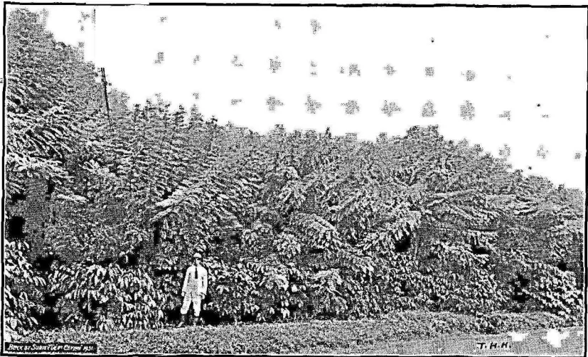
A black and white photograph of a coffee plantation. A person in a light-colored suit stands in the foreground, surrounded by dense coffee bushes. The bushes are heavily laden with small, light-colored flowers or fruits. The background shows a clear sky and some distant structures.Gliricidia maculata in coffee.
203Leucaena glauca.—This is certainly one of the best trees known in Ceylon for coffee. It is deep rooted, throws a light shade, and needs but little attention. It seeds prolifically and if the seedlings are allowed to get a hold they are hard to eradicate. Careful weeding is therefore essential. The tree has been found very satisfactory at Peradeniya.
Practically no information is available as to the use of bush plants in coffee in Ceylon, and but little from other countries.
Anstead (2) says that in south India coffee is planted under shade and so closely that the growth of green manures is usually prevented. He adds, however, that in young clearings green manures have proved a valuable aid to the growth of coffee. The author quotes an instance of the use of green manures on a Mysore estate where a field of old coffee was collar pruned and the land round the stumps forked. In the following year Cassia occidentalis was sown. When it had grown vigorously and had completely smothered the coffee it was cut down and forked in. The coffee put out new wood rapidly and two years after it had been cut down to within six inches of the ground gave a yield of 4 cwt. per acre.
In Ceylon also coffee would normally be planted so close that when the bushes are fully grown little space remains for the planting of leguminous bush plants.
In young clearings the use of bush plants would generally be attended by the same advantage as have been described for tea. A special function for bush plants in clearing is the provision of temporary shade for the young coffee plants. Shade is particularly necessary for young coffee plants and when these are first planted out the shade trees will seldom have reached the age at which they are fully functioning. A ring of tall quick-growing bush plants, such as Crotalaria anagyroides, Crotalaria usaramoensis or Cajanus cajan, sown round the holes a season before the coffee is planted, will supply the deficiency.
The number of bush plants on which information as to special use in coffee is available is so small that it is thought hardly worth while to compile a list. Practically any of the plants which have been favourably spoken of for tea could be used with advantage in young coffee clearings. Anstead (4) mentions that various species of Tephrosia, Indigofera, Cassia, and Desmodium are common in Mysore and have been used with advantage. The same writer in another publication (2) mentions especially
204Cassia hirsuta, Cassia mimosoides, Indigofera tinctoria and Crotalaria heptaphylla as being commonly used in the green manuring of young coffee in south India. A writer from Java enumerates the following plants as having been found especially suitable for use on coffee estates in that Island: Tephrosia candida, Tephrosia vogelii, Crotalaria striata, Crotalaria juncea, Crotalaria quinquefolia. Tephrosia noctiflora is being grown among Arabian coffee on the Experiment Station, Peradeniya. This plant from its low habit is less likely than the larger kinds to interfere with the coffee bushes.
Even less information is available as to the use of ground cover plants. As coffee is a surface feeder it might be considered undesirable to plant a surface rooting cover that would compete with the coffee. On the other hand the fact that coffee is a surface feeder renders the prevention of soil erosion all the more urgent. In young clearings the use of a ground cover plant would appear just as desirable as in tea, provided that care is taken that the cover is kept clear of the young coffee plants. As in the case of tea a plant that will not climb up and smother the bushes should be chosen for preference, and Indigofera endecaphylla would appear eminently suitable. This creeper has been planted round the edges of roads and drains in six acres of coffee at the Experiment Station, Peradeniya. The creeper has been allowed to spread at will through the coffee and the bushes surrounded by this creeper appear at least as healthy as those in clean-weeded land. Where coffee, especially the robusta types, is planted close and has developed well, the shade afforded (in addition to that of trees) will be so dense that the establishment of Indigofera will be hardly practicable. On steep slopes, however, where the growth is poor the planting of a suitable ground cover plant can be recommended.
Another writer from Java mentions that the creepers Centrosema plumieri, Pueraria phaseoloides, Phaseolus mungo, and Vigna sinensis have been found especially suitable for use on coffee estates. It is not stated whether these plants were used in clearings or in old coffee. These creepers are all strong climbers and if planted near the coffee would need careful controlling.
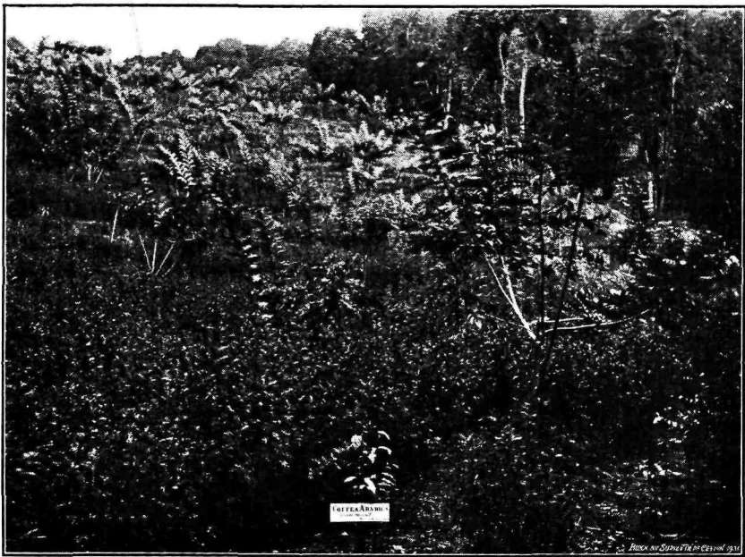
A black and white photograph showing a dense, low-lying shrub in the foreground, identified as Indigofera arrecta. Behind it, several tall, slender trees with light-colored bark, identified as Gliricidia maculata, provide shade. The background is filled with more trees, creating a forested setting. A small white label with the text 'COFFEE ARBOR' is visible in the lower center of the image. In the bottom right corner, there is a small copyright notice: 'Photo by J. M. C. C. 1911'.Indigofera arrecta in young coffee with Gliricidia maculata
as shade
Shade is usually the prime consideration in interplanting trees and bush plants in cacao. The heading shade will be taken to include temporary as well as permanent shade, and, as bush plants are considerably used for the former purpose, these two types of plants will be considered together.
Whatever doubts there may be about the necessity for permanent shade in cacao, there appears to be a general agreement that young cacao must have shade, and this is usually provided for two to three years. If the permanent shade trees are planted at the same time as the temporary shade they will probably afford the necessary shade by the end of that period.
Temporary shade is provided by planting rows of bush plants or small trees alongside the rows of cacao. In many countries plants of economic value are used for this purpose i.e., a system of catch-cropping is adopted which achieves the double object of providing some monetary return before the cacao comes into bearing and of shading the young plants. A description of this form of cultivation may be outside the scope of this treatise; yet it is impossible to separate shading and green manuring, and no account of shading cacao would be complete without a description of these practices.
The plants used for temporary shade for young cacao are many and various. Wright (34) mentions that in Java Erythrina and Manihot (Cassava) are recommended.
Hart (18), writing of the West Indies, says that the following plants are commonly used: Zea mais (Indian Corn), Cajanus cajan (Pigeon pea), Ricinus communis (the castor oil plant), Manihot utilisissima (Cassava), Musa sapientum (banana), and various kinds of tannias and eddoks (edible yams). He says that the distance of planting is immaterial, provided the young cacao is adequately shaded.
Hall (16), writing of Java, endorses the view that temporary shade should always be provided and recommends the planting of bananas 10 to 15 feet apart. He says that too close planting of temporary shade will produce tall spindly cacao plants. The author then describes a system of planting Leucaena glauca so that some plants are kept for permanent shade and others used for temporary shade and later eradicated. It is not thought, however, that Leucaena glauca is likely to prove suitable as permanent shade for cacao in Ceylon, and for temporary shade the difficulty of eradicating the trees would be a drawback. The same author enumerates a large number of other plants used in
206Java as temporary shade, including species of Xanthosoma and Colocasia (edible yams), Ricinus communis, Manihot utilisissima, Indigofera sp., Cajanus cajan, and Clitoria cajanifolia. Judging by its habit in Ceylon, the last-named is not considered suitable.
In Surinam the banana is commonly used as a temporary shade.
In Madagascar also the banana is used, Albizzia Lebbek being usually planted at the same time for permanent shade.
Wright (34) states that in Samoa Papaya carica, the papaw, is used.
Hall (16) discusses the practice that is sometimes adopted of leaving a proportion of the forest trees for shade when land is being cleared for cacao. He does not regard this practice with favour as the shade left by large forest trees is not of the kind needed for young cacao plants.
Ceylon estates have given no information as to temporary shade in the replies to the circular sent out. There is little doubt, however, that cacao in Ceylon requires shade from the start. The area of cacao on the Experiment Station, Peradeniya, known as the "B" cacao, was originally divided into three plots—no shade, high shade, and low shade. It is recorded that there was little difference in the growth of cacao in the high shade and low shade plots, but that in the plot without shade, growth was so poor and such a large number of casualties occurred that the cacao was abandoned and rubber was planted instead. It is believed that in this instance only permanent shade trees (Erythrina lithosperma) were planted, and that no special provision was made for temporary shade.
The advantages of a leguminous plant over a non-leguminous plant have been already fully discussed. Nevertheless, the advantages of utilising a plant which will provide some monetary return before the cacao comes into bearing are obvious, and the practice probably deserves more attention than it receives in Ceylon. Plantains can still be grown with profit and possibly form the most suitable locally-grown economic crop for temporary shade for cacao. Of leguminous bush plants, Tephrosia candida, Tephrosia vogelii, Cajanus cajan, and Desmodium gyroides all appear suitable. The Crotalarias are usually too short-lived to be effective.
The provision of permanent shade for cacao is considered to be necessary in most cacao-growing countries, though there are exceptions.
Wright (34) points out that the cacao tree is not a robust plant and in its natural state is usually shaded by the larger forest trees. He states that shade is provided in most of the
207cacao-growing countries in Africa, Erythrina sp. being largely used. In Madagascar the opinion is held that shade can be reduced as the cacao grows older. He states that in Nicaragua and other Central American countries shade is extensively used, the trees commonly planted being Gliricidia maculata, Jatropha sp., Caesalpinia exostemma, and Erythrina sp.
Hart (18) says that a great diversity of opinion exists as to the necessity of shade but that he himself has been converted to the view that shade is necessary in moderation. He states that in Trinidad Erythrina umbrosa and Erythrina velutina are the two trees most commonly used. He points out that an estate in the plains which gets sun all day requires denser shade than one which is shaded part of the day by the hills and further states that Baron Eggers, a Danish botanist, has reported that in the forests of Ecuador, where the distribution of cacao depends mostly on the scattering of the seed by monkeys, trees found in the open are always stunted. Hall (16) considers shade is desirable, though probably not essential. He mentions a considerable number of shade trees used in Java. The author also discusses the possibility of growing trees of economic value as permanent shade trees for cacao. This possibility has been investigated in many cacao-growing countries, but it is usually found that trees of economic value do not afford the most suitable shade.
Several of the rubber-producing trees have been tried, but as all these trees, except Hevea brasiliensis, have lost their commercial importance, and as the latter tree is not particularly suitable as a shade tree, the question appears to have lost interest.
Kapok is said to have been successfully interplanted among cacao in Java but the shade afforded by this tree would not usually be considered sufficient, and the harvesting of the Kapok crop would be difficult. A further point against the sole employment of trees of economic value as shade for cacao is that it would seldom be possible to lop them, and the regulation of shade would thus be difficult.
It is now necessary to consider the views of those who consider permanent shade to be unnecessary. The Island of Grenada forms the best known example of the successful cultivation of cacao without shade. Hart (18) points out that in Grenada the cacao districts are very hilly and the trees are naturally shaded by the hills for some hours of the day. Hall (16) remarks that in Grenada cacao is planted very close (9 feet or at the most 12 feet apart), tillage is invariably carried out, and large quantities of cattle or sheep manure are applied. He argues from this that actual shade for cacao is probably not
208necessary and that the other advantages of planting leguminous trees, e.g., shading of the ground, root action, nitrogen assimilation, increase of organic matter etc. are more important, and that in Grenada these benefits are obtained in other ways, e.g., ground shade by close planting, loosening of the soil by tillage, and nitrogen and organic matter by bulk manuring.
In the West Indies in general there is a diversity of opinion as to the necessity for shading cacao. Shade is generally planted but, in addition to Grenada, cacao is successfully grown without shade in parts of Jamaica and Dominica. In Brazil and San Domingo cacao is also often grown without shade. Hall (16) states that cacao grown without shade comes into bearing earlier, gives heavier crops, and is less liable to certain diseases; its life, however, is shorter.
There seems a good deal to be said for the argument that actual shade is not required and that the benefits accruing from the planting of shade trees can be obtained in other ways. This, however, does not constitute an argument against the planting of trees in cacao, since it would appear that the benefits referred to can be more easily and more cheaply obtained by the planting of leguminous trees than by any other means. Wright (36) says that in Ceylon the benefits of shade have been convincing, and in view of the evidence quoted it may be taken that the interplanting of leguminous trees among cacao is a practice to be strongly recommended.
The regulation of such shade is, however, a matter of first importance. Hart (18) emphasises the fact that too little or too much shade are both bad. He points out that densely shaded cacao is more liable to fungoid diseases, but that unshaded cacao is more liable to attack by insect pests. A Ceylon superintendent also states that shade reduces Helopeltis.
The early records of the Experiment Station, Peradeniya, show clearly the evil effects of overshadowing cacao and demonstrate that this factor has more influence on crop than any other. Excessive shade was found to reduce crop in years which were in general good cacao years, while when the lopping and proper control of shade trees were undertaken, improved yields at once resulted.
Wright (34) says that as a general principle shade trees should be regularly lopped during the dull weather and allowed to develop and retain their full foliage during the hot dry weather during which period the leaves which have accumulated on the ground will serve as a mulch and check the evaporation of moisture. This appears to be sound general advice; the amount and nature of the lopping required will vary with the type of tree planted.
209Cacao is very sensitive to strong wind and while ordinary shade trees will always afford some protection, the planting of additional windbelts may in certain circumstances be necessary.
In Samoa it is recommended that strips of the original jungle should be left, or alternatively lines of rubber trees planted, to break the force of the wind. In Guam (one of the Marianne Islands in the Philippine group) the question of wind appears to have received even more attention than that of shade. Rows of bananas are planted for wind protection, or belts of forest trees left.
It is not possible to give general advice on a matter of this kind and the circumstances of each case must be considered. Attention is invited to the portion of this section dealing with wind protection for tea.
It is to be noted that some of the trees used for shading cacao, e.g., Erythrina umbrosa, are themselves very liable to be blown down by strong winds, causing great damage to cacao. The use of such trees in windy situations is therefore to be avoided.
The benefits of the root action of trees in opening up the soil and improving drainage have been several times alluded to. Generally speaking, a deep-rooted tree will be more effective in this respect.
The reasons in favour of the preference for a leguminous tree in tea and coffee hold equally good in the case of cacao.
The question of soil erosion in old cacao is not usually so acute as in other crops owing to the heavy cover afforded by the cacao trees themselves and the considerable mulch of leaves found under them. Shade trees will help, but the prevention of erosion is not one of the main reasons for planting them.
There is considerable evidence that a heavy surface mulch is very beneficial to cacao. Early experiments carried out in Dominica in 1906 demonstrated forcibly the value of a heavy mulch of grass and leaves to cacao. This treatment in fact resulted in a greater, more lasting, and more profitable increase in yield than any of the manurial applications included in the experiment. In 1913-14, with a view to deciding the quantity of mulch necessary, in the place of 4 and 5 tons previously
210applied, a plot was started which received only tons per acre. In three years the yield of this plot was nearly doubled.
In view of this striking evidence any addition to the mulch of leaves from the cacao afforded by the leaf-fall and loppings from shade trees must be regarded as a major asset.
Hardly any mention is made by writers from other countries or by Ceylon superintendents, of burying the loppings of shade trees. It may well be that in view of the benefits of mulching it is preferable to leave loppings on the surface rather than to bury or fork them in. This is believed to be the usual procedure on Ceylon estates. Only one estate reports the burying of loppings.
Sufficient has already been said about the choice of a small tree or bush plants for purposes of temporary shade.
The choice of a permanent shade tree for cacao is somewhat more difficult owing to the large number of trees that have been used or recommended in different countries.
Wright (34) gives a long list of possible shade trees for cacao in Ceylon, but makes no positive recommendation and merely states that the trees most commonly used are Albizia sp., Erythrina sp., Hevea brasiliensis, Castilloa elastica, and Mamhot glaziovii. The last two are rubber-producing trees which were still of possible economic importance in Wright's time. They are not now of commercial importance in Ceylon and neither of them nor Hevea brasiliensis can be considered a really suitable shade tree for cacao. In the replies to circulars sent out to estates only Albizia, Erythrina, Jak, and Glicicidia maculata are mentioned. Coconuts are often interplanted, but generally as an economic crop and the coconut palm is not suitable as sole shade for cacao. In the small gardens in which cacao is found in the Kandy district dense mixed planting of cacao, jak, coconuts, arecanuts, and other trees and plants is usually found. The cacao is almost always overshadowed and if records were available it would probably be found that crops are very poor. Certainly canker and other diseases are very prevalent.
If it is admitted that there is no tree of economic value that is entirely suitable as the sole permanent shade for cacao the choice should rest on a leguminous tree unless no suitable tree of this order can be found. It will be advisable first to ascertain whether any of the trees in general use are entirely suitable and if not make recommendations based on experience in other countries. Undoubtedly Erythrina spp. are more widely used than any other tree in Ceylon. Erythrina lithosperma is the only shade tree used for cacao on the Experiment
211Station, Peradeniya, but cannot be considered entirely satisfactory. The trees were apparently planted in 1904, though doubtless some are supplies of a later date. During the last 10 years a large number of these trees have been blown down and during 1929 and 1930, the trouble has been acute. The inference is that the trees should have been replaced earlier but even so it is impossible to remove trees of this size without considerable damage to cacao. The poor root system of Erythrina certainly constituted a serious disadvantage.
Albizzia moluccana is probably the next commonest tree. When the Government took over the Experiment Station in 1902 the cacao was densely shaded by Albizzia which, in the words of the first manager, had grown into "a veritable forest". The removal of the trees was at once commenced and when Erythrina had later been planted great improvement in the cacao was reported. It would appear possible, however, that the fault lay rather in the close planting than in the nature of the tree. Albizzia moluccana gives a large spread and a light filtered shade and would appear, if planted at suitable intervals, to be a useful tree for the purpose. The difficulty of removing the trees when they reached the limit of their useful life is even more acute than with Erythrina and probably constitutes their greatest drawback. Moreover, the replanting of these trees in old cacao would be very difficult.
Artocarpus integrifolia, the Jak, is not leguminous and does not throw a suitable shade.
Gliricidia maculata is the only other tree mentioned as being used for cacao shade in Ceylon. The tree, however, does not usually grow to a sufficient height, nor is the type of shade very suitable.
None of the trees usually used in Ceylon can therefore be considered ideal and it may be advisable to study recommendations made in other countries.
Hart(15) considers that although the Erythrinas are in almost universal use in the West Indies Pithecolobium saman, the rain tree, is really a much more suitable tree. In addition to affording suitable shade its timber is valuable, while the wood of the Erythrinas is practically valueless. Pithecolobium saman flourishes in Ceylon at elevations at which cacao is grown and would appear to be quite suitable.
Hall(16) states that Derris microphylla has come into considerable use in Java. It is known to do well in the low-country in Ceylon and might do well for cacao. Hall also states that Caesalpinia dasyrrachis is being used to some extent in Java in place of Erythrina as the tree is less prone to disease.
212Macmillan (27) and Wright (34) mention the possibility of the use of Adenanthera pavonina, the bead tree. This certainly grows well at Peradeniya, but its short life is a disadvantage. Derris robusta also suggests itself as a possibility.
There would appear then to be no need to adhere to the Erythrinas, since there are promising alternatives.
Most superintendents who have given information as to shade trees in cacao agree as to the necessity of periodical replacement of these. The experience of the Experiment Station with Erythrina lithosperma appears to confirm this. Unfortunately, though easy to recommend, such a policy is very difficult to carry out. A shade tree for cacao must be a large tree and the removal of such trees not only absorbs a great deal of labour but of necessity results in much damage to the cacao. The planting of fresh shade is also a difficult matter. It is possible to establish large cuttings of Erythrina in old cacao but not easy. It is thought that the establishment of seedlings in similar circumstances would be even more difficult.
Several estates, however, report that the replacement and removal of old trees is periodically carried out but the difficulties involved make it desirable that a tree with as long a life as possible should be chosen.
Of the following trees no information is to hand of their actual use in cacao either in Ceylon or elsewhere: Acacia pycnantha, Albizia odoratissima, Artocarpus nobilis, Azadirachta indica (Margosa), Cassia siamea, Casiarina equisitifolia, Cedrela serrata, Cedrela toona, Erythrina ovalifolia, Eucalyptus leucoxylon, Eucalyptus marginata, Eugenia jambos, Filicum decipiens, Melia dubia (Lunumidella), Mesua ferrea (iron tree), Myristica laurifolia, Pterocarpus indicus, Pterocarpus Marsupium, Tamarindus indica (Tamarind), and Veteria acciminata.
Adenanthera microsperma.—Hall (16) mentions that this tree is used for shade in Java. It is a rapid grower but its wood is very brittle and its life is short.
Adenanthera pavonina. Bead tree. Anaikuntumani (Tam.). Hall (16) gives the same description of this tree as of A. microsperma. Wright (34) suggests it as a shade tree for Ceylon, but its short life would be a drawback.
Albizia fastigiata.—This tree should be as suitable as A. moluccana which it much resembles.
213Albizia moluccana.—This tree is in use in Ceylon. It attains a large size and throws a light and suitable shade. Lopping is not advised, as, if planted at suitable distances, the shade is not too heavy; moreover, the lopping of large trees is practically impossible.
Albizia stipulata.—Wright (34) mentions this as a possible shade tree for Ceylon, but the fact that the tree is leafless for a period up to three weeks at the beginning of each year is a disadvantage. In Java it is recommended in preference to A. moluccana or A. Lebbeek on account of the greater value of its timber. It is used also in Samoa.
Artocarpus integrifolia. Jak. Kos (Sinh.), Pila (Tam.).—Several estates in the Kandy district use this tree in conjunction with Erythrina umbrosa. One estate reports that it takes up more moisture than Erythrina and its roots interfere with the cacao. Neither its shape nor the kind of shade afforded render the jak really suitable.
Caesalpinia dasyrrachis.—Hall (16) reports that this tree has come into considerable favour in Java and has to some extent superseded Erythrina.
Caesalpinia exostemma.—This tree is commonly used in Nicaragua.
Cajanus, cajan. Dhall, Pigeon pea. Rata thora (Sinh.), Invarai (Tam.).—Hart (18) says that this shrub is used as temporary shade for cacao in the West Indies. Hall (16) observes that it is put to the same use in Java, but is not very popular, possibly because its economic value is less than that of the banana or cassava. The same argument would hold good in Ceylon and in the Kandy district the seed pods are nearly always badly attacked by insects.
Castilloa elastica. Catilloa rubber.—Wright (34) mentions that this large tree has been successfully grown in conjunction with cacao in Ceylon, Java, British Honduras, and Tobago. A drawback to the tree is that it is usually leafless during a part of the hot dry weather. The tree is now of no economic value in Ceylon and cannot be recommended.
Cedrela odorata.—Hall (16) quotes this as a fairly quick-growing shade tree for cacao.
Colocasia sp. Tannias, Eddoes, Cocoos.—Various edible yams have been used for temporary shade for cacao in the West Indies. Similar kinds are largely grown in Ceylon and some could be used for the same purpose.
Derris microphylla.—Hall (18) states that owing to the numerous pests and diseases attacking Erythrina in Java, Derris microphylla has come into considerable use. It grows well in the low-country in Ceylon, but the maximum elevation at which
214it will thrive is not certain. If suitable for the cacao districts it should prove a useful shade tree.
Derris robusta.—The growth and habit of this tree at Peradeniya, suggest that it could well be employed as a permanent shade tree.
Eriodendron anfractuosum. Kapok, Silk cotton tree. Pulun imbul (Sinh.), Illanku (Tam.).—Hall (16) states that it is often interplanted among cacao in Java, where in addition to affording shade, it serves an economic purpose. Satisfactory crops of kapok and cacao are stated to have been obtained. It is not thought, however, that the tree by itself affords sufficient shade and the harvesting of kapok among cacao cannot be a very easy matter.
Erythrina indica. Eramudu (Sinh.), Murunka (Tam.).—This is a thorny variety which is used in St. Lucia, and elsewhere. It is useless for three weeks to a month during the hot weather and this characteristic as well as the fact that it possesses thorns are sufficient reasons for not recommending it.
Erythrina lithosperma. Dadap, Eramudu (Sinh.), Murunka (Tam.).—This is by far the most widely-used shade tree for cacao in Ceylon. In order to regulate the shade it is usual to lop the trees once a year. One estate reports that the trees are lopped once in four years only. As it is undesirable that all the shade should be removed at once the system on the Experiment Station, is to lop only the central branches, leaving the side branches untouched. The trees have a poor root system and when they get old are easily blown down with resultant damage to cacao. Replacement in old cacao is possible but not easy. A large cacao estate near Kandy reports that for this purpose 8 to 10-foot cuttings are planted in holes. When they grow up they are kept clear of side branches, or such as interfere with cacao, and are pollarded at about 25 feet. The original spacing employed on that estate is about 20 to 24 feet and thinning-out is done later when the shade gets too dense. The removal of fallen trees has usually been beyond the labour resources of the Experiment Station, but it is to be noted that no case of root disease has occurred which could be traced to decaying dadap logs.
Erythrina umbrosa. Dadap, ananea, mortel, immortelle.—This is the almost universal shade tree for cacao in the hills in the West Indies where the usual spacing is 40 to 45 feet each way. It is also used in Java.
Erythrina velutina. Bocare mortel, immortelle.—This tree is extensively used in Trinidad and forms the usual cacao shade for the plains in the West Indies. It is usually planted 35 to 40 feet apart. It is also used in Java but is not common in Ceylon.
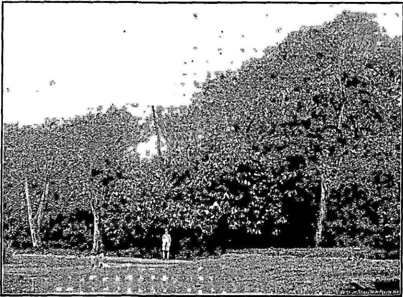
A black and white photograph showing a dense grove of Erythrina umbrosa trees, which are being used as shade for cacao plants. A person is standing in the foreground, providing a sense of scale.Erythrina umbrosa as shade for cacao
215Gliricidia maculata.—There appears to be a confusion between this tree and Gliricidia sepium. One or the other is extensively used as a shade tree in Nicaragua where it is usually planted 30 to 35 feet apart in alternate lines of cacao.
One estate reports its use in Ceylon but it is not thought that the tree usually grows to a sufficient height nor does its habit or the shade it affords suggest the ideal type of tree for shading Ceylon cacao.
Inga laurina.—Macmillan (27) states that this tree is used in the West Indies as shade for cacao.
Hevea brasiliensis. Para rubber.—This has been interplanted among cacao in Ceylon and elsewhere, but more on account of its economic value than its suitability as a shade tree. Its extensive root system and the fact that it is leafless for part of the hot weather renders it unsuitable.
Leucaena glauca. Lamitoto.—Hall (16) mentions the use of this tree in Java, both for temporary and permanent shade for cacao. It does not appear to be particularly suitable for either purpose.
Mangifera indica. Mango. Amba (Sinh), Mankai (Tam).—Wright (34) states that this tree is in use in Ceylon as a shade tree for cacao. The shade it affords is probably too dense to make it suitable.
Manihot utilisissima. Cassava, Tapioca. Manioka (Sinh. and Tam.).—This well-known food plant is used as temporary shade for cacao in the West Indies, Java, and elsewhere. It is easily grown and is suitable as far as habit and shade are concerned, but it has the reputation of exhausting the soil and on this account cannot be strongly recommended.
Musa paradisaca (Musa sapientum). Plantain, banana. Kehel (Sinh.), Vallai (Tam.).—A distinction is drawn between plantains and bananas in many countries, but in Ceylon all varieties are known as plantains. The plant is largely grown in many cacao-growing countries as temporary shade for cacao and on account of its economic value is a useful plant for the purpose.
Papaya carica. Papaw.—Wright (34) mentions the use of this plant as a temporary shade for cacao in Samoa. It has an economic value, but the shade afforded would appear rather inadequate.
Pithecolobium saman. Rain tree.—This tree is also frequently known as Inga saman. Hart (18) considers the tree more suitable for cacao than the Erythrina in common use in the West Indies. It thrives in Ceylon in the cacao districts
216and would appear to have a good deal to recommend it. It is hardy, long-lived, and stands lopping well. Wide spacing, say 50 to 60 feet, would be necessary. The timber is of some value.
Peltophorum ferrugineum. Iya vakai (Tam.).—Hall (16) mentions the tree as a fairly quick-growing shade tree for cacao in Java. Wright (34) mentions it as a possibility in Ceylon, but it does not appear to have been tried.
Ricinus communis. Castor oil Erandu (Sinh.), Chittamanakku or Amanakkam (Tam.).—Hart (18) mentions the possibility of the use of this small tree for temporary shade for young cacao, and Hall (16) states that it is occasionally, but rarely used for this purpose in Java. It is of some economic value and its habit is suitable for the purpose.
Sterculia foetida. Telambu (Sinh.), Pinari (Tam.).—Wright (34) states that this tree is sometimes used as shade for cacao in Ceylon.
Swietenia macrophylla. Large leaved mahogany.—Wright (34) and Hall (16) mention this as a possible shade tree for cacao. It grows well at Peradeniya, but has hardly the spreading habit and light foliage which is desirable.
Tithonia diversifolia. Wild sunflower. Nattasuriya (Sinh.), Suriya-kandu (Tam.).—The value of mulching for cacao has already been mentioned and this plant, which grows wild in great profusion throughout the cacao districts of Ceylon, forms probably the best source of green material to be cut and brought in from outside.
Zea mais. Indian corn, maize.—Hart (18) says that this plant is used for temporary shade in the West Indies.
Hardly any mention, either in Ceylon or elsewhere, is found of the use of ground cover plants in cacao. In old cacao the dense ground shade cast by the cacao and shade trees, and the heavy mulch of leaves usually found, would probably preclude the use of ground cover plants.
In young clearings on steep land the arguments which have been given in favour of the use of such a plant in tea and coffee would appear to hold good for cacao. Care would have to be taken that neither the young cacao plants nor the temporary shade plants were smothered, and probably a non-climber, such as Indigofera endecaphylla, would be preferable.
Throughout this section the botanic names by which the plants mentioned have come to be most generally known, or by which they are alluded to by the authorities quoted, have
217been used. In many cases these are not now held to be the correct names and the following list gives the names used, together with the correct botanic names:
| Names used | Correct names |
|---|---|
| Albizzia moluccana | Albizzia falcata |
| Albizzia stipulata | Albizzia chinensis |
| Artocarpus integrifolia | Artocarpus integra |
| Caesalpinia dasyrrachis | Peltophorum dasyrrachis |
| Cedrela serrata | Toona sinensis |
| Cedrela toona | Toona sinensis |
| Clitoria cajanifolia | Clitoria laurifolia |
| Eriodendron anfractuosum | Ceiba pentandra |
| Erythrina indica | Erythrina variegata |
| Erythrina ovalifolia | Erythrina fusca |
| Ficus infectoria | Ficus lucescens |
| Ficus mysorensis | Ficus cotoneaeifolia |
| Myristica laurifolia | Myristica dactyloides |
| Malia dubia | Malia composita |
| Peltophorum ferrugineum | Peltophorum inerme |
| Pithocolobium saman | Enterolobium saman |
| Sesbania aegyptica | Sesbania sesban |
IN this paper it is proposed to give a summary of recent work on a few selected problems, many others, such as soil atmosphere, soil flora and nutrient requirements will be omitted.
It has proved difficult to get a clear picture of the rice soils of other countries, even of soils on which experimental work has been carried out. Many writers content themselves with the statement that experiments were conducted at "X" station, others describe soils by a class name which may have only local significance and, quite frequently, writers differ widely as to the characteristics of what they describe as typical rice soils of a given country.
There is still more uncertainty as to the degree of care which has been exercised, when assigning yields, to secure reliable figures which have not been vitiated by extraneous factors such as pests or water supply.
Taking the figures for what they may be worth, we find for physical characters the following :
Philippines (Riz and Riziculture Vol. I).—The most usual soil is said to be sand 20 per cent, clay 45 per cent, humus 35 per cent. This would, of course, give an extremely open textured soil if the remarkably high humus figure is correct.
Java.—From internal evidence if Wulff's compilation (to be discussed later) Java soils appear to show a minority of stiff clays or silts.
Burma.—Warth (Chem. Memoirs Dept. Agric. India V. p. 131), who carried out pot experiments with a large number of Burma soils, unfortunately gives no physical analyses, but relies on "soluble silica" as an index of texture. This is unfortunate as degree of laterisation will affect the relationship—from his figures there would appear to be a very extensive range from very stiff, to very sandy soils. The most ambitious attempt at comparison of soils emanates from Ceylon—"Contributions to the study of the paddy soils of Ceylon and E. Countries" Bruce, Department of Agriculture, Ceylon, Bulletin 57, '22.
Samples were collected from S. India, Ceylon, Burma, Malaya, Philippines, Siam, and Japan by workers in those countries and were analysed in Ceylon. In order to allow for changes in methods of expressing analyses, the results given by Bruce for Malaya are included in the following summary of his work :
Malaya.—Malayan soils contain from 27 per cent. fine sand, (Titi Serong) to 46 per cent fine sand at Klebang Ketchil (Malacca). Fine fractions are approximately 40 per cent clay + fine silt and 20 per cent coarse silt (all analyses are, of course, on the old method). "Humus" is low, being 2.9 per cent for Titi Serong. Yields vary from 1,500 lb. per acre in the Ulu Muar district (=290 gantang approx.) to 2,500 lb. per acre in Malacca and 2,400 lb. per acre (=460 gantang) per acre in Titi Serong.
* By W. N. C. Belgrave in The Malayan Agricultural Journal, Vol. XIX, No. 4. April, 1931.
220Ceylon.—Soils from the S. E. Province of Ceylon (Galle and Matara districts) contain 5-12 per cent of humus, high clay, low fine sand (only 9 per cent) but about 12-20 per cent coarse sand and gravel. Those from the remainder of the Island have low fine fractions silt+clay 8-35 cent and high coarse sand and gravel (30-70 per cent) with low humus. All planting is broadcast; there is a small amount of manuring in some districts and irrigation is widespread. Yields in the S. E. Province are, on two of the soils examined, 500-700 lb. per acre and in one 3,000-4,500 lb. per acre; while on the others (sandy soils) they are 675-1,000; 900 and 1,440 lb. per acre respectively.
S. India.—Three soils were examined, all show low humus 27-40 per cent clay and fine silt, 22-36 per cent fine sand and 20-30 per cent coarse sand+fine gravel—transplanting is practised and in some cases cattle manure is applied—irrigation is practised. Yields are 1,800-2,600 lb. per acre.
Burma.—Five soils were examined and humus is low (1.8-3.1 per cent), clay and fine silt high (50-70 per cent), fine sand low (9-15 per cent) and coarser sand is absent. Yields are all approximately 2,000 lb. per acre. There is no irrigation.
Philippines.—Two soils. Humus low 1-2.5 per cent, clay and fine silt 20-33 per cent, fine sand 20 per cent, and coarse sand and fine gravel 40-50 per cent. Transplanting and irrigation are practised, manuring is not, and yields are 1,500-1,900 lb. per acre. The low figure for humus is difficult to reconcile with the very high one given above.
Siam.—Three soils. Humus is not given but from loss on ignition it may be expected to be moderate, clay and fine silt 60-65 per cent; fine sand 3-12 per cent; no coarse fractions. Neither transplanting, manuring nor irrigation; yields are 960-2,400 lb. per acre.
Japan.—Four soils. Humus moderate 2.5-5.6 per cent., clay and fine silt 17-38 per cent, fine sand 20-42 per cent, and coarse sand 16-24 per cent; in one case gravel 19 per cent. Transplanting, manure and irrigation are employed and yields are 1,700-3,500 lb. per acre.
These are somewhat confusing—as usual the figures for pH lose most of their value as the method of determination is not given—for what they are worth our soils are stated to be "sour" pH 4.7-5.5. Japan comes next 6.5-7.2, Ceylon 5.7-8.3, Philippines 7.5; Siam is not given, and S. India and Burma 8.2-8.7.
Nitrogen is in general 0.10 per cent. to 0.25 per cent with very low figures for S. India of .05-.08 per cent.
Lime in Ceylon, Malaya, Siam and part of Japan is 0.1-0.5 per cent, while in S. India, Burma, Philippines, it is 0.6-2.0 per cent.
Magnesia varies in a similar manner.
Potash is very low 0.1 per cent in Siam and in some of the Ceylon soils, moderate 0.3-0.7 per cent in Malaya, the remaining Ceylon soils, Philippines and Japan, and high in S. India and Burma.
Phosphoric Acid () Total phosphorus is lowest in Siam 0.04-0.07 per cent and from 0.08-0.25 per cent in the remainder, no regular variation being found.
Available phosphoric acid is lowest in Malaya and Siam (0.004 per cent) averaging 0.015 per cent, in the others no great regularity is shown.
Siam.—Detailed analyses of Siam soils are given by Ladell (Technical Station Supplement to Record No. 6, 1930) and agree with Bruce's figures. Ladell records instances of rapid fall in yield, in one case amounting to
22150 per cent of the original in five years. He attributes this to accumulation of soluble salts and acidity owing to poor drainage. His pH in suspension varies from 3.75 to 4.53 and shows no correlation with yield; he finds his water extracts all to be 6.5 pH.
Burma.—Warth, mentioned above, deals in considerable detail with Burma soils, unfortunately without stating yields. Many of his total figures are as low as 0.01 per cent—but he extracted with unheated acid which renders comparison doubtful.
Hendry, who also deals with Burma soils and gives the country average yield as 1,500 lb. per acre, points out that, contrary to general belief, the better padi lands of Burma receive no annual silt deposit, being above flood level. He can trace no decline in fertility since 1872, the first year of reliable records. He considers this to be due to the fact that breakdown to soluble nutrients now equals uptake by the crop.
Malayan soils.—Most of our own analytical work has been on physical analysis—and I am deeply indebted to the field officers who collected the large number of samples required. With each soil was sent an estimate of yield; this naturally is only an approximation, but is unlikely to err by being too high. Taking the figures for what they are worth and excluding all samples in which an explanation other than that of soil was given for low yields or in which the analyses showed considerable differences between top and sub-soil, we have the results set out in table A. Naturally, these distribution tables must not be taken as representative of the relative extent of each class in Malaya, since no account is taken of the extent of any particular area. We find no correlation between mechanical composition and yield and further find, assuming yield of figures and sampling to be even approximately correct, that soils light in texture compared with those of the chief rice-growing districts are capable of providing quite useful yields.
This confirms the deductions to be drawn from the analyses given above for other countries, and suggests that given accessibility and an adequate water supply, caution should be exercised in condemning a soil on the ground that it is not heavy.
TABLE A
Sand Percentage.
| 0-20 | 21-40 | 41-60 | 61-80 | Total | Gantangs per acre |
|---|---|---|---|---|---|
| 3 | 1 | 1 | 1 | 6 | 0-80 |
| 5 | 9 | 7 | 4 | 25 | 81-180 |
| 20 | 26 | 24 | 15 | 85 | 181-280 |
| 17 | 19 | 24 | 9 | 69 | 281-380 |
| 15 | 20 | 15 | 3 | 53 | 381-480 |
| 6 | 4 | 4 | 1 | 15 | 481 upwards |
| Total 66 | 79 | 75 | 33 | 253 |
Figures represent numbers of soils in each class.
222Chemical analysis reveals nothing of special interest, and yield could not be correlated in any way with figures for nitrogen, ammonia, or phosphorus (total or available).
The soils are all acid in suspension varying from 4.2 to 5.8 pH. Acidity in clear extracts is very much less and does not confirm Ladell's theory of acid accumulation. Nitrogen varies from 0.1 per cent to 0.6 per cent and from 0.04 per cent to 0.17 per cent.
Manures may be divided into artificials, animal, and green; or mixtures of these. Taking artificials first we have:
Nitrogen.—There is general agreement that nitrates are without effect or are even deleterious to wet padi, although in the Philippines they have been found to be beneficial to dry padi. The explanation is usually sought in denitrification under anaerobic conditions, formation of nitrites, and rapid leaching. The popular view that rice can absorb nitrogen only as ammonium salts appears to be unfounded.
Nitrogen in artificial fertilisers is usually applied in the form of ammonium sulphate (or latterly one of the ammonium phosphates) and in general in conjunction with phosphatic fertilisers. In only a few instances have nitrogenous fertilisers alone in controlled experiments given considerable increases.
Potash.—Potash has not, in general, been found necessary in tropical rice-growing countries.
Phosphorus.—The majority of recorded increases of any magnitude have followed the application of phosphatic manures alone or in conjunction with nitrogenous manures. In general, superphosphate or one of the ammonium phosphates has been employed; unit for unit, little difference has been found between the newer and older fertilisers.
Malaya.—Routine applications of fertilisers in Malaya are strictly limited, the exceptions being in Kedah where considerable quantities of naturally occurring phosphates are said to be regularly employed and in Malacca where ground bones have been employed for many years; the results in the former cases are said to be of great benefit, but no definite figures are available. As far as experimental work is concerned, fertilisers in Malaya have nowhere shown a great increase in yield. Even after making a number of unjustifiable assumptions in the working out of the results of experiments carried out over a term of years at Talang and Malacca, we find no significant increase at the latter, and only barely significant ones at the former Station—wherever increases of any kind occurred, phosphatic manures were concerned and at Talang the (theoretically) slow-acting Perlis phosphates appeared to be, over a term of years, as efficient as the quicker-acting artificials. In the few experiments which have been made with ammonium phosphates there are indications of considerable yield increases.
These experimental results form a curious contrast with those recorded in other countries where increases of yield of 70-100 per cent are not uncommon and where ammonium phosphates have exhibited no signs of specific action. It is impossible to say how far the apparent success of trials in other countries is due to a tendency to stress successes and to minimise failures, but it is a fact that one recent paper devotes several pages to a successful experiment and dismisses two unsuccessful ones in two lines! Another frequent fault is the expression of yield increase as a percentage without giving actual figures; it is clearly most important that the datum line from which an increase occurred should be known.
223Siam.—The only recorded experiment (at the time of writing this paper) is with Leunaphos (ammonium sulphate) in which the smallest application used produced an increase over the unmanured control of 41 per cent of grain and of straw; further increase of manure increased the straw to 64 and 69 per cent but left grain increase unchanged.
Java.—The best record of manurial experiments on tropically-grown rice is to be found in Wulff's article in Landbouw I, page 25, No. 2.
A few typical results will be quoted: On Batam Tuffloam, super and ammonium sulphate raised a yield of 730 lb. per acre (say 140 gantangs) to 2,760 (say 530 gantangs). With fairly high controls on such soils (1,420 lb. per acre) the increase was to a similar figure, i.e., the percentage increase was much less. On brown weathered laterite in Batavia no manure gave any increase on 4,700 lb. per acre (900 gantangs per acre).
On a marl loam in Begogan there was clear evidence of the beneficial action of nitrogen in combination with phosphorus, although the latter alone gave no increase over the control of 3,200 lb. per acre (610 gantangs per acre). The nitrogen was here applied in 4 parts at , 1, and 2 months after transplanting.
On brown marl loam there were divergencies, no increase being recorded at Semarang over 1,950 lb. per acre (375 gantangs per acre) with any form of manure, while at Grobogan a control of 3,300 lb. per acre (640 gantangs per acre) was unaffected by nitrogen, raised to 4,900 (940 gantangs) by phosphorus or nitrogen and phosphorus and to 5,800 (1,100 gantangs per acre) by a complete mixture: one of the few instances in which potash has done good.
In the Pate district on "gesek" soil (sandy and powdery when dry) a control of 700 lb. per acre (135 gantangs) was raised by phosphorus to 1,350 (260 gantangs) and by nitrogen, and phosphorus to 2,200 lb. per acre (420 gantangs per acre).
On clays results varied, e.g., on a black clay at Madioen a control of 2,400 lb. per acre (460 gantangs per acre) was raised to 3,000 lb. (575 gantangs) by nitrogen and unaffected by phosphorus. At Ponorogo with a control of 3,000 lb. there was no increase with any manure, while a similar soil in the same district with a control of 1,600 (310 gantangs) showed an increase to 2,600 (500 gantangs) per acre with phosphorus, other manures having no effect.
Wulff very frequently found that the maximum effect of nitrogen was obtained by application in two or more doses after the plants were transplanted ("overbemesting"). Although he does not say so, this seems to imply very complete water control.
Very interesting figures for nursery manuring are given, using manures in the nurseries at a rate four times that of field manuring (since the area of the nursery is that of the field) it was found that in the Bantam district on tuff loams in one case no increase was produced, in another a control of 1,700 lb. (325 gantangs) was raised to 2,100 (400 gantangs) by superphosphate.
In a complex experiment on marl loam the following results were obtained:
| No manure nursery | No manure field | 1250 lb. | p.a. | (240 gantangs) |
| No manure | Phosphatic | 3100 | „ | (595 „) |
| Phosphates | No manure | 2650 | „ | (510 „) |
| Phosphates | Phosphatic | 3500 | „ | (670 „) |
Similar results were obtained on a heavy clay with a control of 2,600 lb. (= 500 gantangs).
222Chemical analysis reveals nothing of special interest, and yield could not be correlated in any way with figures for nitrogen, ammonia, or phosphorus (total or available).
The soils are all acid in suspension varying from 4.2 to 5.8 pH. Acidity in clear extracts is very much less and does not confirm Ladell's theory of acid accumulation. Nitrogen varies from 0.1 per cent to 0.6 per cent and from 0.04 per cent to 0.17 per cent.
Manures may be divided into artificials, animal, and green; or mixtures of these. Taking artificials first we have:
Nitrogen.—There is general agreement that nitrates are without effect or are even deleterious to wet padi, although in the Philippines they have been found to be beneficial to dry padi. The explanation is usually sought in denitrification under anaerobic conditions, formation of nitrites, and rapid leaching. The popular view that rice can absorb nitrogen only as ammonium salts appears to be unfounded.
Nitrogen in artificial fertilisers is usually applied in the form of ammonium sulphate (or latterly one of the ammonium phosphates) and in general in conjunction with phosphatic fertilisers. In only a few instances have nitrogenous fertilisers alone in controlled experiments given considerable increases.
Potash.—Potash has not, in general, been found necessary in tropical rice-growing countries.
Phosphorus.—The majority of recorded increases of any magnitude have followed the application of phosphatic manures alone or in conjunction with nitrogenous manures. In general, superphosphate or one of the ammonium phosphates has been employed; unit for unit, little difference has been found between the newer and older fertilisers.
Malaya.—Routine applications of fertilisers in Malaya are strictly limited, the exceptions being in Kedah where considerable quantities of naturally occurring phosphates are said to be regularly employed and in Malacca where ground bones have been employed for many years; the results in the former cases are said to be of great benefit, but no definite figures are available. As far as experimental work is concerned, fertilizers in Malaya have nowhere shown a great increase in yield. Even after making a number of unjustifiable assumptions in the working out of the results of experiments carried out over a term of years at Talang and Malacca, we find no significant increase at the latter, and only barely significant ones at the former Station—wherever increases of any kind occurred, phosphatic manures were concerned and at Talang the (theoretically) slow-acting Perlis phosphates appeared to be, over a term of years, as efficient as the quicker-acting artificials. In the few experiments which have been made with ammonium phosphates there are indications of considerable yield increases.
These experimental results form a curious contrast with those recorded in other countries where increases of yield of 70-100 per cent are not uncommon and where ammonium phosphates have exhibited no signs of specific action. It is impossible to say how far the apparent success of trials in other countries is due to a tendency to stress successes and to minimise failures, but it is a fact that one recent paper devotes several pages to a successful experiment and dismisses two unsuccessful ones in two lines! Another frequent fault is the expression of yield increase as a percentage without giving actual figures; it is clearly most important that the datum line from which an increase occurred should be known.
223Siam.—The only recorded experiment (at the time of writing this paper) is with Leunaphos (ammonium sulphate) in which the smallest application used produced an increase over the unmanured control of 41 per cent of grain and of straw; further increase of manure increased the straw to 64 and 69 per cent but left grain increase unchanged.
Java.—The best record of manurial experiments on tropically-grown rice is to be found in Wulff's article in Landbouw I, page 25, No. 2.
A few typical results will be quoted: On Batam Tuffloam, super and ammonium sulphate raised a yield of 730 lb. per acre (say 140 gantang) to 2,760 (say 530 gantang). With fairly high controls on such soils (1,420 lb. per acre) the increase was to a similar figure, i.e., the percentage increase was much less. On brown weathered laterite in Batavia no manure gave any increase on 4,700 lb. per acre (900 gantang per acre).
On a marl loam in Begogan there was clear evidence of the beneficial action of nitrogen in combination with phosphorus, although the latter alone gave no increase over the control of 3,200 lb. per acre (610 gantang per acre). The nitrogen was here applied in 4 parts at , 1, and 2 months after transplanting.
On brown marl loam there were divergencies, no increase being recorded at Semarang over 1,950 lb. per acre (375 gantang per acre) with any form of manure, while at Grobogan a control of 3,300 lb. per acre (640 gantang per acre) was unaffected by nitrogen, raised to 4,900 (940 gantang) by phosphorus or nitrogen and phosphorus and to 5,800 (1,100 gantang per acre) by a complete mixture: one of the few instances in which potash has done good.
In the Pate district on "gesek" soil (sandy and powdery when dry) a control of 700 lb. per acre (135 gantang) was raised by phosphorus to 1,350 (260 gantang) and by nitrogen, and phosphorus to 2,200 lb. per acre (420 gantang per acre).
On clays results varied, e.g., on a black clay at Madioen a control of 2,400 lb. per acre (460 gantang per acre) was raised to 3,000 lb. (575 gantang) by nitrogen and unaffected by phosphorus. At Ponorogo with a control of 3,000 lb. there was no increase with any manure, while a similar soil in the same district with a control of 1,600 (310 gantang) showed an increase to 2,600 (500 gantang) per acre with phosphorus, other manures having no effect.
Wulff very frequently found that the maximum effect of nitrogen was obtained by application in two or more doses after the plants were transplanted ("overbemesting"). Although he does not say so, this seems to imply very complete water control.
Very interesting figures for nursery manuring are given, using manures in the nurseries at a rate four times that of field manuring (since the area of the nursery is that of the field) it was found that in the Bantam district on tuff loams in one case no increase was produced, in another a control of 1,700 lb. (325 gantang) was raised to 2,100 (400 gantang) by superphosphate.
In a complex experiment on marl loam the following results were obtained:
| No manure nursery | No manure field | 1250 lb. p.a. | (240 gantang) |
| No manure | Phosphatic | 3100 ,, | (595 ,, ) |
| Phosphates | No manure | 2650 ,, | (510 ,, ) |
| Phosphates | Phosphatic | 3500 ,, | (670 ,, ) |
Similar results were obtained on a heavy clay with a control of 2,600 lb. (=500 gantang).
222Chemical analysis reveals nothing of special interest, and yield could not be correlated in any way with figures for nitrogen, ammonia, or phosphorus (total or available).
The soils are all acid in suspension varying from 4.2 to 5.8 pH. Acidity in clear extracts is very much less and does not confirm Ladell's theory of acid accumulation. Nitrogen varies from 0.1 per cent to 0.6 per cent and from 0.04 per cent to 0.17 per cent.
Manures may be divided into artificials, animal, and green; or mixtures of these. Taking artificials first we have:
Nitrogen.—There is general agreement that nitrates are without effect or are even deleterious to wet padi, although in the Philippines they have been found to be beneficial to dry padi. The explanation is usually sought in denitrification under anaerobic conditions, formation of nitrites, and rapid leaching. The popular view that rice can absorb nitrogen only as ammonium salts appears to be unfounded.
Nitrogen in artificial fertilisers is usually applied in the form of ammonium sulphate (or latterly one of the ammonium phosphates) and in general in conjunction with phosphatic fertilisers. In only a few instances have nitrogenous fertilisers alone in controlled experiments given considerable increases.
Potash.—Potash has not, in general, been found necessary in tropical rice-growing countries.
Phosphorus.—The majority of recorded increases of any magnitude have followed the application of phosphatic manures alone or in conjunction with nitrogenous manures. In general, superphosphate or one of the ammonium phosphates has been employed; unit for unit, little difference has been found between the newer and older fertilisers.
Malaya.—Routine applications of fertilisers in Malaya are strictly limited, the exceptions being in Kedah where considerable quantities of naturally occurring phosphates are said to be regularly employed and in Malacca where ground bones have been employed for many years; the results in the former cases are said to be of great benefit, but no definite figures are available. As far as experimental work is concerned, fertilizers in Malaya have nowhere shown a great increase in yield. Even after making a number of unjustifiable assumptions in the working out of the results of experiments carried out over a term of years at Talang and Malacca, we find no significant increase at the latter, and only barely significant ones at the former Station—wherever increases of any kind occurred, phosphatic manures were concerned and at Talang the (theoretically) slow-acting Perlis phosphates appeared to be, over a term of years, as efficient as the quicker-acting artificials. In the few experiments which have been made with ammonium phosphates there are indications of considerable yield increases.
These experimental results form a curious contrast with those recorded in other countries where increases of yield of 70-100 per cent are not uncommon and where ammonium phosphates have exhibited no signs of specific action. It is impossible to say how far the apparent success of trials in other countries is due to a tendency to stress successes and to minimise failures, but it is a fact that one recent paper devotes several pages to a successful experiment and dismisses two unsuccessful ones in two lines! Another frequent fault is the expression of yield increase as a percentage without giving actual figures; it is clearly most important that the datum line from which an increase occurred should be known.
223Siam.—The only recorded experiment (at the time of writing this paper) is with Leunaphos (ammonium sulphate) in which the smallest application used produced an increase over the unmanured control of 41 per cent of grain and of straw; further increase of manure increased the straw to 64 and 69 per cent but left grain increase unchanged.
Java.—The best record of manurial experiments on tropically-grown rice is to be found in Wulff's article in Landbouw I, page 25, No. 2.
A few typical results will be quoted: On Batam Tuffloam, super and ammonium sulphate raised a yield of 730 lb. per acre (say 140 gantangs) to 2,760 (say 530 gantangs). With fairly high controls on such soils (1,420 lb. per acre) the increase was to a similar figure, i.e., the percentage increase was much less. On brown weathered laterite in Batavia no manure gave any increase on 4,700 lb. per acre (900 gantangs per acre).
On a marl loam in Begogan there was clear evidence of the beneficial action of nitrogen in combination with phosphorus, although the latter alone gave no increase over the control of 3,200 lb. per acre (610 gantangs per acre). The nitrogen was here applied in 4 parts at , 1, and 2 months after transplanting.
On brown marl loam there were divergencies, no increase being recorded at Semarang over 1,950 lb. per acre (375 gantangs per acre) with any form of manure, while at Grobbogan a control of 3,300 lb. per acre (640 gantangs per acre) was unaffected by nitrogen, raised to 4,900 (940 gantangs) by phosphorus or nitrogen and phosphorus and to 5,800 (1,100 gantangs per acre) by a complete mixture: one of the few instances in which potash has done good.
In the Pate district on "gesek" soil (sandy and powdery when dry) a control of 700 lb. per acre (135 gantangs) was raised by phosphorus to 1,350 (260 gantangs) and by nitrogen, and phosphorus to 2,200 lb. per acre (420 gantangs per acre).
On clays results varied, e.g., on a black clay at Madioen a control of 2,400 lb. per acre (460 gantangs per acre) was raised to 3,000 lb. (575 gantangs) by nitrogen and unaffected by phosphorus. At Ponorogo with a control of 3,000 lb. there was no increase with any manure, while a similar soil in the same district with a control of 1,600 (310 gantangs) showed an increase to 2,600 (500 gantangs) per acre with phosphorus, other manures having no effect.
Wulff very frequently found that the maximum effect of nitrogen was obtained by application in two or more doses after the plants were transplanted ("overbemesting"). Although he does not say so, this seems to imply very complete water control.
Very interesting figures for nursery manuring are given, using manures in the nurseries at a rate four times that of field manuring (since the area of the nursery is that of the field) it was found that in the Bantam district on tuff loams in one case no increase was produced, in another a control of 1,700 lb. (325 gantangs) was raised to 2,100 (400 gantangs) by superphosphate.
In a complex experiment on marl loam the following results were obtained:
| No manure | nursery | No manure | field | 1250 lb. p.a. | (240 gantangs) |
| Phosphates | " | Phosphatic | " | 3100 " | (595 " ) |
| Phosphates | " | No manure | " | 2650 " | (510 " ) |
| Phosphates | " | Phosphatic | " | 3500 " | (670 " ) |
Similar results were obtained on a heavy clay with a control of 2,600 lb. (= 500 gantangs).
224These Java results have been quoted at some length, not with a view to direct application, but to show that:
Japan.—In Japan, where yields have risen from 310 gantang in 1885 to 525 in 1920, nitrogen rather than phosphorous or potash is found necessary.
The Japanese workers claim that lime is only useful if the magnesia content of the soil is high.
Burma.—A good account of manuring in Burma has been given by Hendry in Agric. Journ. India XXIII p. 357 '28 and XXV p. 126 '30. At Hamawbi, experiments ran for ten years, 5 years with manuring and 5 years without. The soil is obviously heavy as it is noted that green manures cannot be grown owing to the cement-like nature of the ground when dry. In the first paper, actual figures are not given—change being expressed merely as percentages.
Results obtained were:
| 5 years' manuring percentage change |
5 years' residual effect percentage |
||
|---|---|---|---|
| Cattle manure + 30-70 lb. N | ... | 40-70 | 21-31 |
| Cotton cake | ... | 53 | 54 |
| Bone meal | } 20 lb. () | 26 | 9 |
| Superphosphate | 35 | 15 | |
| Pot. sulphate | ... | 0 | 6 |
| Sod. nitrate | ... | 17 | 35 |
| Cyanamide | ... | 11 | 64 |
| Ammon. sulphate | ... | 24 | 25 |
| Lime | ... | 24 | 2 |
| Complete | ... | 33 | 17 |
Like all workers in India, Hendry is careful to translate these results in terms of money, an excellent idea which should be more widely followed. As an example, ammonium sulphate at pre-war prices with a 25-30 per cent increase would have meant a loss of 5.5 Rs. per acre and in 1928 a gain of 2 Rs.
Experiments with ammophos (control=240 gantang), illustrate this point further—using 20:20 Hendry found 50 lb. fertiliser gave an increased yield of 48 per cent an increased profit of 15 Rs. per acre.
100 lb. fertiliser gave increased yield of 68 per cent 19 Rs. per acre increased profit.
200 lb. fertiliser gave increased yield of 103 per cent 11 Rs. per acre increased profit.
500 lb. fertiliser gave increased yield of 119 per cent 24 Rs. per acre increased profit.
Later experiment showed the following:
| Manure | Yields = lb./ac. |
G/ac. | Percentage Profit Increase | ||
|---|---|---|---|---|---|
| Increase | Rs. | A. | |||
| Control | 1066 | 205 | — | — | — |
| Diammophos | 2098 | 405 | 97 | 15 | 7 |
| Ammophos | 2112 | 410 | 98 | 14 | 12 |
| Super. am. sulph. | 2112 | 410 | 98 | 11 | 6 |
These results are of particular interest to Malaya as the new synthetic manures show no special manurial virtues; they also show the considerable increases required to produce good monetary returns.
Hendry also makes the good point that the native cultivator must have quick returns, especially when he has bought his manures with money borrowed at a high rate of interest.
Results in Ceylon, as far as available, vary with the soil type and need not be considered in detail.
The only countries in which manure of this description is extensively employed appear to be China and Cochin-China. The Chinese are said to have rather a curious system of rotting down rice straw by making it into a compost with mud from the canal banks; the mixture is afterwards spread on the fields.
There are singularly few descriptions of experiments on modern lines with green manures; in an article in The Agric. Jour. of India 18 p. 104, 1923, the following results are given: Control 1,065 lb. per acre (205 gantang) green manure also, or with a small quantity of apatite (mineral phosphate) gave no significant increase; green manure + 740 lb. apatite gave a rise to 1,400 lb.; superphosphate or basic slag gave 1,500 to 2,100 lb. The soils were poor and sandy. The Italians claim that green manures favour the action of phosphorus. Other workers in India stress the view that green manure is more effective on sandy than on heavy rice soils.
For manures, Sesbania aculeata is recommended in Ceylon, while Calotropis gigantea is a favourite in Cochin-China where, as in Japan and parts of India, the intensive collection of extraneous green matter is carried out.
Recent work by Joachim and Kandiah in Ceylon (Trop. Agric. 72 p. 254) reviewed in the Malayan Agricultural Journal (Jan. 1930) gives considerable data on the decomposition of green matter in dry and wet paddy soils both in the laboratory and in the field. Unfortunately, yield results were somewhat spoilt by floods; in one case, taking the control as 100, early application of green manure gave an increase of 16 per cent and late application of 30 per cent. The authors appear to be influenced throughout by the view that nitrates are deleterious to paddy, a view in turn based on the very numerous observations of previous workers that sodium nitrate had frequently no manurial value and was often deleterious while sulphate of ammonia increased yields. This fact has been, until recently, ascribed to conversion to harmful nitrites (more than 5 parts per million of nitrite having been found to be harmful), to loss as gaseous nitrogen, to leaching and to inability of rice to assimilate nitrates. It was observed that application of sodium nitrate was frequently productive of chlorosis. Gericke, as a result of his recent water culture work, has given what seems the most probable explanation, which is that the residual alkali after removal of the nitrate radicle inactivates iron, and as rice has a great need of iron but can only very slowly assimilate it, chlorosis follows. This theory is confirmed by an observation of Willis recorded in Jour. Agric. Research 24 p. 621 '25, to the effect that calcium nitrate did not cause chlorosis. Clearly if Gericke's view is correct, nitrates produced by nitrification should not be deleterious to padi, although nitrification may be undesirable because of subsequent loss due to leaching.
The authors confirmed previous observations that only traces of nitrate and nitrite were present, but found considerable increases in ammonia—typical results for mbrs N as N H3 percentages were;
226| Before puddling | After Puda | |||||||
|---|---|---|---|---|---|---|---|---|
| Time in Weeks | 2 | 4 | 6 | 7 | 1 | 3 | 5 | 7 |
| Control | 2 | 2.1 | 3.0 | 3.23 | 1.22 | 1.73 | 1.31 | 1.05 |
| Green manure late | 2.69 | 4.79 | 4.30 | 1.87 | ||||
| Green manure early | 3.4 | 3.7 | 5.2 | 5.8 | 1.85 | 2.13 | 2.13 | 1.36 |
Weeds gave results very similar to the green manures and total figures were:
| Initial N per cent | Final N | |
|---|---|---|
| Control | 1895 | 179 |
| Green manure early | 1971 | 1801 |
| Green manure late | 1885 | 1939 |
They further claim that in pot experiments with green manures, appreciable quantities of gases were given off after the second week from soil which green matter had been added, but not from the controls and that scum on the surface said by the Indian workers to be responsible for aeration had increased. They, therefore, claim better aeration for the plant roots. This claim must remain questionable until the evolved gases have been analysed; if they are poor in oxygen (which is highly probable) it is difficult to see, even with increased algal action, how aeration beneath the surface can be increased, as the tendency should be to sweep the oxygen out and upwards.
Work in our soils laboratory on rice soil atmosphere has been started and these points will be tested. While the balance of evidence is in favour of the conclusion drawn by Joachim, viz. that green matter should be turned in late, further work is needed both in the laboratory and field before definite advice can be given.
Lord in his review of his manurial results (Trop. Agric. 73 '29) finds that the effect of green manuring varies with soil, in one case there was distinct evidence that a green manure was necessary for the action of artificial to be manifested.
The practice of "Rab" cultivation (described in the Chemical Memoirs pt. of Agric. India II p. 180) in W. India is of interest. In this the layer of soil from seed beds is mixed in situ with cowdung and leaves burned before sowing, giving increased fertility of 150 per cent. The process has been attributed to flocculation, but gypsum which also flocculates, an average of only 25 per cent. The analogy to the beneficial effect by Russell to result from moderate heating of temperate soils is positive. This beneficial effect is generally attributed to reduction in numbers of protozoa with a consequent increase in numbers of beneficial organisms which are preyed on by protozoa.
Experiments showed that a seed bed burned with—
| Cowdung | rab | will plant | 2.4 | times | the | area | of | untreated. |
| Ranches | " | " | 2.1 | " | " | " | " | " |
| Ass | " | " | 1.1 | " | " | " | " | " |
| Dung alone | " | " | 1.3 | " | " | " | " | " |
The most perplexing feature of rice literature is the insistence on "drainage", which appears to be somewhat loosely used for (a) irrigation water and (b) drainage in the usual sense of downwards; most writers making drainage a sine qua non growth of the rice plant on the grounds that otherwise it accumulates and/or the roots will lack necessary
227There are many padi fields in Malaya in which there is little of irrigation water and the majority (in area) can exhibit remark sub-soil drainage; further in the case of padi fields which are never dry, conditions may be expected to be always definitely anaerobic; these fields produce year after year very reasonable yields of padi. Further work on drainage, soil atmosphere and soil flora is indicated.
Perhaps the most interesting piece of research in connection with it in recent years has been that of Gericke of which a brief résumé follows.
Gericke has been studying for some years the combination of giving best growth in water cultures, the time in the life-history of the plant at which absorption of any particular element occurs, and the effect of the absence of certain elements. His most recent paper (Science 29, '30) deals with rice. The method is one worked out by him in which the plants are grown for a definite period in a complete solution then transferred to a solution lacking one so-called "essential" element. In favourable cases he obtained plants as large, heavy and healthy as those in a high yielding field, but failed to obtain with rice correspondingly large grain crops. The failure is attributed by him to pollination difficulties. He found that potash, nitrogen, and iron are required for a much longer period than the other elements, in fact almost throughout life, but that calcium, magnesium, sulphur and phosphorus do not seem to be needed after initial exposures of 4-6 weeks; from this he draws the conclusion that the former are the essential elements for rice. It is equally possible to argue that since the elements of the second group must be or are normally absorbed in a very short space of time they must be presented to the plant in an available form in considerable quantities or conversely that as the absorption of the first group is spread over a long period they can be more readily foraged for.
It must be realised that these experiments, conducted as they are in water culture, may not give a true picture of happenings in the soil—this work is, however, suggestive in the light of Wulff's nursery manuring experiments.
It is interesting to note that Espino working in the Philippines with water cultures (Phil. Jour. Science 16 p. 460 '20) claims to have found at a very high relative proportion of magnesium is necessary for successful growth. This, if confirmed, would be most important in Malaya on our generally magnesium poor soils. The point is being tested in the new standardised padi experiments.
Although not strictly a soil problem, a recent paper by Sethi in Memoirs Agric. India Bot. Series 18 No. 2, '30 is of interest. He claims as a result of studies in pot culture and in the field—
The root system becomes weak and flaccid at flowering.
The root development shows distinguishing diagnostic characters for each variety which could be of help in the selection of varieties suited to particular localities.
The texture of clay seems to suit root development better than that of other types of soil.
Anatomical observations confirm various views that rice is not strictly an aquatic plant, but that aeration is absolutely essential. The importance of (iii) is self-evident and it is suggested that it might be of considerable importance.
228Soils.—It has been shown that padi is commercially grown on a large variety of soils and that given water there seems no reason to suppose that many areas in Malaya could not be profitably employed which normally are considered to be on the light side. The point is being tested on the padi tanks at the Experimental Plantation, Serdang.
Manures.—The results quoted show that increases are not invariably to be obtained even on the same soil type; so far, no satisfactory explanation is forthcoming of many of the differences of response observed.
It is urged that the monetary return be always given a prominent place in the records of trials, and that a large margin of safety be established before recommendations are made to the ryot.
The effect of especially careful cultivation of Test and Demonstration Plots should be considered. It is urged that the final tests or demonstrations should always be made with the standard of cultivation current in the district. If it is desirable that the standard of cultivation be raised, it is suggested that this should be the subject of a separate campaign.
The question of nursery manuring, the application of nitrogen by instalments, green manuring, the use of cheap naturally occurring but slow acting manures and the use of basic or neutral instead of potentially actually acid manures on Malayan soils require study.
THE work of agricultural development in the Dutch East Indies is being carried on by several more or less distinct organizations. Some of these are financed and controlled by Government, while others of very great importance are under the control of private bodies which are directly interested in plantation crops. The presence of this second class of organization is, in fact, one of the most striking features of agricultural development and as my attention was devoted mainly to plantation crops, I had a particularly favourable opportunity to study them.
The Government Department which has as its main function the development of agriculture, is the Department of Agriculture, Industries and Commerce with its Headquarters at Buitenzorg in West Java about 30 miles from Batavia. There are, in addition, other departments which have important functions to perform in connection with agriculture. Thus, the Department of Justice has, as one of its sections, a Labour Office which deals with (a) labour legislation and statistics, (b) supervision of the health and safety of labour, (c) labour unions, and (d) labour inspection. The Civil Service Department, which corresponds somewhat to our Revenue Department, has the control of Government land and the allotment of land for cultivation. The Department of Credit and Co-operation has to do with the organization of co-operative credit and has also under its control the organizing and subsidizing by Government of colonization in the so-called outer islands which are still, for the most part, sparsely populated. Finally, the Department of Public Works supervises the construction and management of irrigation works which are a most important factor in the development of the Dutch East Indies and more especially of Java.
The Department of Agriculture, Industries and Commerce, has very wide functions and an extensively and rather complicated organization. It has, in fact, the functions of at least three of our departments, viz., the Department of Agriculture, the Department of Industries and Commerce, and the Forest Department. In addition, it carries on work in connection with the development of Fisheries. It has, also, under its control the world-famous Buitenzorg Botanical Gardens with extensive laboratories attached to it and a large Zoological Laboratory and Museum which are concerned with a study of the fauna of the islands. It thus controls most of the work that is being done by Government in connection with the economic development of the Dutch East Indies.
It would, I consider, be out of place in a report such as this to go in great detail into the organization of the Department, and I shall therefore touch only upon what appear to me to be the most important features.
This is divided up into four sections which deal with the various divisions of work of the Department. As the organization of these sections does not appear to me to be particularly logical, I shall not go into the
* By Leslie C. Coleman, M.A., Ph.D., Director of Agriculture in Mysore, in General Services—Bulletin No. 14, 1931, of the Department of Agriculture, Mysore State.
230matter. It is interesting to note, however, that attached to the central administration is a central statistical office which deals not only with statistical data connected with the activities of the Department itself, but with the statistics of import and export and excise duties and the statistical data connected with education. It functions, therefore, as a central statistical office for Government.
Under the Scientific and Sectional Services connected with agriculture, there is a division of Agricultural Service under a separate Chief. This section is, in the first instance, concerned with demonstrations and field experiment work on native holdings throughout all the islands. The staff consists of European (Dutch) officers trained in Holland (so-called consulting agriculturists, Landbouw Consulenten) with a large number of native assistants (Adjunct Landbouw Consulenten) trained in the secondary agricultural school of the Department. Up to a comparatively recent date, all of this work was directed from the head office at Buitenzorg. Now, however, the demonstration and field experiment work in the three provinces of Java proper (West, Central, and East Java) is under the control of the provincial administration concerned. These provincial demonstration services have not their own experiment stations and must, therefore, draw upon the central department for new varieties of seeds and for the technical information upon which new demonstration must be based. The central department continues to control demonstration work in the two native States of Java, (Djokjakarta and Soerakarta) and in all the Dutch East Indies outside Java.
Attached to the Agricultural Service Division is a section of agricultural economics whose function it is to study the economic condition of the various agricultural industries, both European and native owned. The Chief of this division is also temporarily in charge of the section of Marine Fisheries.
Under the same division is to be found the Section of Agricultural Education. The organization of Agricultural Education embraces the following :
1. A Secondary School of Agriculture at Buitenzorg.—This school has a three years' course of training in Agriculture and Forestry with entrance requirements which are apparently about the same as for Agricultural Colleges in India. This institution is supposed to give young men training, fitting them for life as practical agriculturists but, as far as I could ascertain, is at present useful largely in training so-called Assistant Consulting Agriculturists (Adjunct Landbouw Consulenten) and Forestry officers who are employed under Dutch superior officers for demonstration and field work in connection with Agriculture, Horticulture and Forestry throughout the Dutch East Indies.
2. "Culture" Schools.—There are two of these institutions for the training of men for lower posts in the Agricultural and Horticultural Services and in the Forestry Service. These schools have also a three years' course.
3. Agricultural courses in village schools which are, on the whole, organised in much the same way as are similar courses in the schools of Mysore and are, of course, under the control of the Education Department.
4. Industrial Schools.—These schools are established with the aid of a Government subsidy and have as their object practical training in village industries.
It is inadvisable to deal at length with questions connected with Agricultural Education and Demonstration in a report on Organization. I shall go into this more fully in a separate report to be submitted later.
231This division embraces all the definitely scientific and research activities of the Department in connection with Agriculture and includes the following :
In addition to the definite experimental and demonstration work of the Department, it controls a very considerable number of estate enterprises which are conducted primarily for the sake of profit. Thus, there is a large Tea and Cinchona Estate (Gouvernement Tee-en Kina-Onderneming) under the control of Dr. M. G. J. Kerbosch which I visited and upon which I shall report in another connection. Then there is the so-called Government Rubber Industry (Gouvernements Rubber-Bedrijf) under Director A. van Gelder, which has the control of 17 estates viz., 13 rubber estates, one coconut, one guttapercha, one oil palm, and one coffee estate, in addition to an industrial enterprise for the manufacture of turpentine. While, as stated, these estates are run on a commercial basis for profit and have, in the past at least, given a handsome revenue to Government, a considerable amount of experimental work is also being done upon them and a separate scientific staff is maintained for this purpose. There is, so I was informed, a considerable amount of criticism on the part of private estate owners of the policy followed by Government in undertaking and pursuing agricultural enterprises for a profit. That they have been able to succeed as well as they have is, no doubt, due largely to excellent management. It is, however, only fair to state that the two enterprises which I visited (the tea and cinchona plantations, and the coffee estate) were very favourably situated, both as regards soil and climatic conditions. The work that is being done on these estates is undoubtedly of a very high character and the scientific results have already been of great benefit to some of the industries concerned. One cannot help but feel, however, that there must
232be some lack of co-ordination in the Department itself between the work that is being carried out on the breeding of perennial crops at Buitenzorg and that which is being done on these various Government plantations.
This division embraces all activities of the Department which have to do with pure as opposed to applied scientific work in the Natural Sciences. The various institutions are as follows:
(a) The Botanical Gardens in Buitenzorg with two branch gardens. These comprise the finest and best arranged collection of tropical plants in the world.
(b) The Herbarium and Museum for systematic botany.
(c) The Botanical Laboratories including the famous Treub Laboratory at Buitenzorg and a laboratory in the mountain garden at Tjibodas. It is interesting to note that these laboratories are maintained largely for the benefit of foreign research workers who wish to engage in research work in botany in the Tropics. A list of the men who have availed themselves of this great privilege is found in the laboratory and it is interesting to note the very large proportion of foreigners who have availed themselves of this privilege.
(d) The Zoological Museum and Laboratory.
(e) A Laboratory for research in Marine Biology, and
(f) A Phyto-chemical laboratory.
This division is under a Chief Inspector who is entrusted with the administration of Government Forests and Plantations. These are very extensive. In Java alone, there are at present about 3,500,000 acres of reserve forests, approximately half of this area being under Teak. In the outer islands, where the forest areas have been much less fully surveyed, the area has been estimated at approximately 275 million acres.
The work of the Forest Service is carried out by 5 divisions:
The superior staff consists of 11 inspectors and 123 assistant inspectors. In addition, there is a subordinate staff of 165 chief rangers, etc., and 2,073 foresters, timber yard overseers, forest guards. It is interesting to note that all the superior staff and most of the higher subordinate staff consist of Europeans.
This division has the charge of disease control and the improvement of livestock. In addition to the District Staff, which is directly concerned with veterinary work throughout the Dutch East Indies possessions, there is a very well-organised and equipped Veterinary Institute under the direction of Dr. C. Bubberman. This Institute is engaged in research work on animal diseases, chiefly those of cattle. It has also an important section engaged in the preparation of sera and vaccines for the control of the more important cattle diseases. Lastly, the division controls a Veterinary School with a four years' course of veterinary instruction. This school is the training place for the native staff of the division.
233This division has a laboratory for conducting research work in connection with industries, both agricultural and otherwise, and has, as its main function, the furnishing of information to industrial enterprises, European and native.
This division has, as its main function the spreading of information in the Netherlands East Indies and abroad with reference to the various products of the country and the economic situation in general. It has under it a Museum and Enquiry Office for Economic Botany. The Stores Department and the Bureau of Weights and Measures are also under the control of this division.
The organization outlined above is seen to emphasise the paramount importance of agriculture to the economic development of the Dutch East Indies. I am by no means prepared to suggest that the organization found in the Dutch East Indies is one that we should copy. It should, and I believe does, ensure a co-ordination of effort towards the economic development of the country which with a division of the activities among various separate departments it would be difficult if not impossible to attain.
As already stated, a characteristic feature of work concerned with agricultural development in the Netherlands East Indies is the extent to which private organizations of growers (largely Europeans) support agricultural research. This is a feature which should be borne constantly in mind. It is not too much to say that the acknowledged reputation of these colonies for research in tropical agriculture is based largely on the work that has been done on experiment stations supported and controlled by private enterprise. Until comparatively recently, the individual experiment stations were organised and supported by comparatively small organizations of planters formed, either on the basis of crops, or on geographical position. Within the last few years, however, a need for co-ordination of effort has been felt and this has led to the formation of large organizations controlling a number of separate stations. Thus the sugar industry, which formerly had three separate experiment stations controlled by three separate organizations, has now one organization for the control of all its experimental work. Similarly, all the experimental work done in Java on the so-called "mountain cultures" tea, coffee, rubber, and cinchona, which was formerly controlled by a number of different organizations is now under the control of the General Agricultural Syndicate. There are, however, still a number of experiment stations under the control of smaller organizations who have not joined the Syndicate. Thus, the Experiment Station for Vorstenland Tobacco at Klaten is supported by a comparatively small group of tobacco companies. The rubber planters of East Sumatra and the tobacco planters of the province of Deli in Sumatra have each their own experiment station. The tobacco companies of Besoeki province (East Java) have retained their independence and partially support the Experiment Station at Djember in that province where valuable work on the improvement of tobacco is in progress.
Before describing the research organizations under these various associations of planters, it may be well to refer to two central organizations. These are two general organizations in Batavia, the Board of Estates (Ondernemersraad) and the Indian Association of Estate Owners (Indische Ondernemersbond). These two organizations look after the political, commercial, and shipping interests of different branches of plantation agriculture.
234As stated above, this work is under the control of an organization which represents practically the whole of the European-owned sugar industry in Java. This is the General Syndicate of Sugar Manufacturers in the Netherlands East Indies, with which is associated a central sales organization, the Associated Java Sugar Growers.
The standing committee of the Sugar Syndicate acts as a consultative committee relative to the sugar industry whose function it is to give advice and information and to put proposals with regard to this industry before Government, the Directors of Government Departments and the heads of the Provincial Administrations. The Syndicate publishes its own journal, the "Archief voor die Zuikerindustrie" which, incidentally, is no longer free for general distribution outside the Syndicate.
The Sugar Syndicate controls a very large and well-equipped Experiment Station for sugarcane cultivation and sugar manufacture at Pasoeroean, in East Java, with a branch devoted to the study of the diseases of cane at Cheribon, in West Java. At the time of my visit, this branch laboratory was being closed and the work on cane diseases transferred to Pasoeroean.
The Station at Pasoeroean is undoubtedly one of the best equipped stations for sugar in the world. It has a budget of 14,00,000 guilders (about Rs. 15 lakhs) with a staff of approximately 50 European scientific officers. It is divided into three sections, each with its own Director. There is a very large agricultural section under Dr. V. J. Koningsberger with 30 scientific associates, a technological section under Dr. P. Honig with 12 scientific associates and an Engineering Section under Professor E. C. von Pritzelwitz van der Horst with 6 scientific associates. These three sections are independent, the general control of the station being under the Board of Directors with Professor von Pritzelwitz van der Horst as Chairman. I shall deal fully with the work of this station in a separate report.
The General Agricultural Syndicate.—This syndicate controls a Tea Experiment Station in Buitenzorg under Director Dr. J. J. B. Deuss, a Rubber Experiment Station in Buitenzorg under Dr. J. Gandrup as Director, a Cinchona Experiment Station at Pengalengan, under Dr. M. G. J. Kerbosch, a Station mainly for Robusta Coffee at Malang under Dr. A. J. Ultee as Director, a Station mainly for Arabia coffee in Djember under Dr. J. Schweitzer as Director, and a small Experiment Station at Salatiga. In addition to the work on experimental plots or estates controlled by the stations themselves, a very great deal of experimental work is done on private estates. I shall refer to this in more detail elsewhere but would commend to the attention of planters in South India the very serious manner in which the planters of Java view the problems upon which their prosperity depends. I may point out here that in addition to bulletins and memoirs published by the various experiment stations under the General Agricultural Syndicate, a very great deal of information of much practical value is published in the form of short papers in a special journal published by the Syndicate, "De Bergcultures". This journal is not available for circulation to anyone who is not a member of the Syndicate.
In addition to the experiment stations controlled by these two large Syndicates, there are three stations (two in Sumatra and one in Java) which are controlled by smaller and more local organizations. These are (a) the Deli Tobacco Experiment Station at Medan, Sumatra, Director Dr. J. Kuyper (b) the Experiment Station of the A.V.R.O.S. (Algemeen vereeniging van Rubber planters ter Oostkust van Sumatra or General Association
235of Rubber planters on the East Coast of Sumatra) also at Medan, Director Dr. A. d Angremond and the Experiment Station for Vorstenland Tobacco at Klaten near Djokja, Director Dr. Tollenaar.
The budgets of all these various experiment stations amount to about Rs. 10 lakhs per annum so that with the budget of the Sugar Experiment Station we have a total of Rs. 25 lakhs per annum spent by private organizations of estate owners in Java and Sumatra on experimental work for the benefit of their respective planting industries. This is in addition to what must be a very considerable sum spent by individual estates on experimental work. It is, I think, safe to say that no less than Rs. 30 lakhs are spent every year by planters on experimental work for the improvement of the planting industry as a whole. This is more than the total budget of the Department of Agriculture in Madras Presidency and considerably more than double that of the Agricultural and related Departments in Mysore.
With the large number of different privately controlled experiment stations which exist in the Netherlands East Indies, there must, I think be a considerable lack of co-ordination and evidence was not lacking in this direction. As far as the stations controlled by the General Agricultural Syndicate are concerned, efforts are being made to reduce unnecessary duplication of work. Thus the soils work for all the stations of the Syndicate has been concentrated in a special soils laboratory which is attached to the Tea Experiment Station in Buitenzorg. Annual conferences of workers are also held to discuss problems of general interest and this must aid in preventing misunderstanding and unnecessary duplication.
As regards the relation between the Government Department of Agriculture and the privately controlled stations, the situation is not quite so clear. A certain amount of correlation is achieved from the fact that the Director of the Department of Agriculture, Industries and Commerce, is also a member of the Board of the General Agricultural Syndicate. In fact, the Government through its Tea and Cinchona Plantation is a subscriber to the syndicate funds. There was also sufficient evidence that in the case of special danger such as that created by the presence of the Coffee Berry Borer, the help of the Department is freely sought and given. Still, it must not be forgotten that these privately owned stations are quite naturally being conducted primarily in the interests of subscribers and only indirectly in the interests of agriculture in general. Undoubtedly, many of the new varieties and new methods originated on the stations get out into general use by native growers but the interests of the two groups of growers are hardly considered as one. In fact, in the case of rubber, and I think, to a lesser extent, in that of coffee, they are looked upon by the European planter as distinctly antagonistic. I believe the relationships in South India in this direction are distinctly happier and I, for one, look upon the example set by our Coffee Experiment Station where the needs of coffee planters of all classes and nationalities are dealt with equally as a happy augury for the future. I would look on any change in this relationship as a very distinctly retrograde step.
236THE Passiflora family is of wide distribution throughout coastal Queensland, indigenous varieties being found from the south to the far north. None of these, however, produce fruit which could be classed as edible. Passiflora and Tacsonias were originally listed separately, but are now included under the former heading. Thirty-six species which have edible fruits are enumerated by Mr. P. J. Wester in the February (1931) issue of the "American Chamber of Commerce Journal", who remarks: "Here lies a tremendous virgin field open to the plant-breeder to effect new flavour combinations, enlarge the fruits, reduce the seediness, improve shipping qualities, and extend the cultivable range of the passion fruits". Two varieties, Passiflora amethystina and P. laurifolia (both producing hard-shelled fruit of most excellent quality, though the latter in sparse quantity on account of its being more tropical) existed in southern Queensland some forty years ago, and appear to have been almost forgotten. Both of these varieties, particularly the latter, are considered to be almost or entirely immune to the diseases known as "leaf spot" which causes such heavy losses with the common variety P. edulis.
All passion fruits are climbers, and the varieties above referred to are either semi-tropical or tropical, and require a well-drained friable rich sandy loam soil to be grown to the best advantage; but the common passion fruit can be grown on comparatively poor soils that are naturally well-drained, provided they are systematically manured, well cultivated, and are not subject to severe frosts. Stagnant water at the roots is fatal, and very heavy soils should not be selected.
As with all other fruits the land should be thoroughly prepared prior to planting, so as to reduce to a state of perfect tilth and provide the right soil conditions in which to start the young plants. This is a matter of very great importance and one that does not receive the attention it should, as not only passion fruit but all other fruits are frequently planted in land that is very far from being in good order, and which should have received much more care and attention in order to enable it to produce healthy vigorous plants that will yield payable returns.
Passiflora edulis—Passion Fruit.—This variety is the one that is most commonly grown, not only in Queensland, but throughout Australia. There are at least three types, the large-fruited or "giant" passion fruit, sometimes called "Mexican", which attains a size of over 2 inches in diameter, the common type which averages about inches in diameter, also a yellow-coloured variety. The former, though a larger and more showy fruit, is somewhat disappointing, as it is frequently a shy bearer and the fruit does not contain as large a percentage of pulp as the common type, which is the best all-round commercial fruit. The best fruit has a very dark purple skin, which is filled with an orange-coloured pulp in which the seeds are imbedded. The pulp is slightly sub-acid and possesses a very distinctive agreeable flavour, so that when used as an ingredient of a fruit salad it imparts its characteristic flavour to it, and the salad is greatly improved thereby.
The plant is easily propagated from seed, all that is necessary being to select perfect fruit, fully matured, from a perfectly healthy plant that is free from leaf, root, vine, or fruit affection of any kind. The pulp, when
* From Queensland Agricultural Journal, Vol. XXXVI, Part I, 1 July, 1931.
237removed from the fruit, should be placed in a tub or suitable vessel, and be covered with water, the mass being then allowed to ferment long enough to free the seeds from the pulp, when they should be strained off, well-washed and dried. Prior to planting, the seed should be soaked overnight by placing it in the bottom of a basin and pouring hot water, at a temperature of 180 degrees over it, and allowing it to remain until the following morning. If early spring-ripened fruit is selected and the seed is planted as soon as ready, good strong plants will be available for summer planting, but, if plants are wanted for early spring planting, the seed must be sown the previous autumn. The seed should be sown in a specially prepared seed-bed in soil of a light, free nature, containing a quantity of leaf mould or humus—a good potting soil—and the young plants should be sheltered from the sun and judiciously watered should the soil become dry. When the seedlings are about 1 foot high or larger they should be planted out in the permanent position, taking care to keep them moist so that they will not dry out.
Prior to planting, the land is marked off in rows not less than 10 feet apart. A trellis consisting of good fencing posts, placed 15 feet apart in the row, is erected along the row, the posts being set with their width across, not in the direction of the row. The posts should be about 8 inches wide by 3 inches thick by 6 feet 6 inches long, and be set 20 inches in the ground. The end posts must be much heavier, sunk much deeper in the soil, and well strutted as they have to act as strainers, and prevent the wires that are attached to the top of the posts from sagging when they have to carry a heavy growth of vines. Two No. 8 galvanised wires are firmly fixed to the top of the posts, one on each side, so that when in position they form two parallel lines, 8 inches apart, on which the vines are trained. The young plants are planted midway between the posts, right under the wires, and are tied to a light stick or other temporary support till they reach the height of the wires, when they are topped and two main lateral stems are allowed to develop, all other lateral growths on the main stem from the ground to the wire being removed. The two main laterals are then trained on to the wires, and when they meet those of the adjacent plants their growth is topped by pinching back the terminal growth, which causes secondary laterals on which fruit is borne to be thrown out all along the main lateral. These secondary laterals, if left alone, throw out further laterals and these again in turn make more lateral growth, with the result that a very dense and tangled growth of vines is produced from which it is hard to separate the primary and secondary laterals and which, owing to its dense habit of growth, is frequently prone to be attacked by disease. Systematic pruning is, therefore desirable—first to keep the plants healthy, secondly to produce strong new lateral growth on which good fruit will be grown, and thirdly to bring in the crop at different periods of the year, so as to get a better distribution of the crop instead of a glut at one time and a scarcity at another. When an autumn or winter crop is desired the main summer crop must be sacrificed. This is done by pruning the vines right back to the secondary laterals when they are showing their blossoms for the summer crop, and this will have the effect of throwing out a new growth which will blossom at a later period. A word of warning is, however, necessary; don't prune hard back in dry weather—you will probably kill the plants if you do so—but wait till the ground has had a good soaking, when the plants will throw out a fresh growth very quickly and will not be permanently injured. A good dressing of quick-acting manure at this time will be found beneficial and materially increase the following crop.
Mr. Brünnich, in the publication "Complete Fertilisers for Farm and Orchards", recommends the following manure for passion fruit:
238"Use per acre, in accordance with the richness of the soil, a mixture of 1 to 2 cwt. nitrate of soda; 4 to 8 cwt. blood and bone manure; 1 to 2 cwt. superphosphate; 1 to 2 cwt. sulphate of potash. A top-dressing of 1 cwt. of nitrate of soda in spring will be found beneficial."
This is a complete manure rich in organic and inorganic nitrogen, citrate and water soluble phosphoric acid as well as potash, and should not only act quickly but be fairly lasting in its effect.
The passion fruit is liable to be attacked by several different pests and diseases, of which the leaf disease is by far the most serious. This disease has only made its presence felt during recent years, and is of an obscure nature. It attacks every part of the plant above ground—the flowers, leaves, and laterals. The latter are killed by a small portion of the stem becoming affected to such an extent that it dies and all the rest of the lateral that is beyond the part attacked shrivels and dies, frequently when it is covered with fully grown but immature fruit which shrivels up. This affection has received the careful attention of the Vegetable Pathologist, and the result being the discovery of a new fungus controlled by Bordeaux mixture. Red spiders and spinning mites frequently injure the leaves and young laterals. These pests can be kept in check by spraying with sulphide washes or dusting with finely ground sulphur.
Scale insects of various kinds also attack the wood, leaves, and fruit, generally where plants are grown under adverse conditions. These may be kept in check by systematic spraying, but can only be effectual when the vines are systematically pruned, as when grown in a dense mass the spraying material used has little chance to come in contact with the majority of the insects.
Nematodes injure the roots, particularly in light soils, and an application of cyanogas to the soil prior to planting will temporarily eliminate the pest from treated soil. The material is best applied when ploughing by being lightly distributed along the bottom of each furrow immediately prior to its being covered. A simple attachment may be fitted to the plough to allow the cyanogas to fall immediately in front of the falling earth which is being turned by the mould board. When a small area has been treated a heavy roller should be passed over the surface to close the soil and delay the escape of the gas fumes. The addition of nitrogen to the soil also militates against the effect of the pest. Light dressings of nitrate of soda or sulphate of ammonia at intervals of not more than three months are recommended. The quantity for each dressing (February, May, August, and November) in light soils should be at the rate of about 1 cwt. per acre. In medium and heavy soils this quantity may be reduced by one-half.
Fruit fly also attacks the fruit, as does also the sucking bug. The latter sometimes causes a heavy loss, as the punctured fruit either drops or if it remains on the vine becomes hard and woody. The bug is very fond of the red prickly cucumber, commonly known as the "Cape or African Cucumber", and if this is used as a trap, a large number of the bugs can be caught and destroyed.
When fruit fly is troublesome, trapping with Harvey's fruit fly lure as soon as the first sign of the fly's presence is seen, or with the following lure originated with Mr. H. Jarvis (Entomologist)—1 teaspoonful synthetic vanilla, 1 tablespoonful Scrubb's ammonia, and 1¼ pints of water—and systematically attending to the traps will result in the destruction of large numbers of female flies, and thus reduce the loss they would cause were they allowed to lay their eggs in the immature fruit while the skin is still soft and before it becomes so hard that the fly cannot pierce it. Ordinary glass fly traps, placed not more than 30 feet apart, are recommended, and the renewal of the lure contained in these every three days is desirable.
239Passiflora quadrangularis—Granadilla.—The granadilla is a tropical fruit that is better suited to the northern than to the southern part of this State, though excellent examples of the large type of granadilla—“Macrocarpa”—can be produced in the coastal districts both to the south and north of Brisbane, provided the situation is a warm one, free from frost and well protected. The Macrocarpa, as its name signifies, is a very large type of granadilla, the fruit frequently weighing several pounds. The seed cavity is small for the size of the fruit, and is surrounded by a thick layer of whitish flesh which has no distinctive flavour, but which, when flavoured with lemon or other suitable flavouring, is used for pies. It is not as a rule a heavy bearer, and must be grown on a horizontal (not lateral) trellis.
The northern granadilla—quadrangularis—is a smaller fruit of a somewhat irregular, oblong shape, about 4 to inches in diameter. The pulp cavity is large and filled with large seeds surrounded with a pale-yellow pulp of exceptionally high flavour when the fruit is fully ripe, which is known by the outer fleshy covering becoming soft, and the skin, instead of being a pale green turns a dull yellowish-green colour. This variety when fully ripe is one of the highest flavoured tropical fruits, and eaten either alone or used in combination with the papaw, pineapple, banana, and the juice of a lemon or lime to form a fruit salad, it is very hard to beat. Unfortunately, it does not carry well and consequently can only be obtained in perfect conditions where grown. The granadilla requires a deep, well-drained, rich loamy soil to be grown to perfection, and it does best when trained to an overhead trellis. Similar manuring to that recommended in the case of the common passion fruit will be found beneficial.
Passiflora laurifolia—Bell Apple—The Bell Apple is practically unknown in this State, though its fruit is quite equal to that of the previously mentioned varieties. It is a handsome and vigorous climber, and is more valuable for covering unsightly edifices or for ornamental purposes than for fruit production, and its cultivation for the latter purpose is not recommended. Without hand fertilising it carries but few fruit in the south, but would probably be much more productive in the tropics.
Passiflora ligularis—Mexican Passion Fruit.—This fruit may be eliminated from the list. The pulp is almost flavourless beyond a trace of sugar, and the appearance of the fruit is not attractive.
Passiflora mollissima—the Banana-shaped Passion Fruit.—The fruit of this variety is used as a substitute for the genuine passion fruit, which the pulp somewhat resembles, also the seeds. The latter are in excessive quantity, whilst that of the pulp is correspondingly reduced. The vine is hardy and of very free growth but cannot be recommended for planting for commercial purposes.
Vitamins are substances of very pronounced physiological activity, and can produce remarkable changes in the normal body, even in minute doses. Lack of adequate vitamin supplies results in the occurrence of what are known as deficiency diseases, and recognition of the need of sufficient of the various vitamins in our diet enables us to practise with advantage the art of preventing disease. A good mixed diet contains, as a rule, most if not all of the vitamins required, but additional vitamins are needed by children and adolescents. Milk of good quality contains most if not all, of the vitamins, and its regular consumption in fairly large quantities, in conjunction with leafy vegetables and the ordinary cereals, tubers and muscle meats, provide a satisfactory type of diet, particularly if a certain amount of raw vegetable food, such as oranges, be taken daily to provide a sufficient amount of anti-scorbutic material. There are six vitamins now universally recognised, and two or three more are, as it were, on probation. Vitamins A, D, and E are oil-soluble substances, consisting of carbon and hydrogen, with a small quantity of oxygen; they are probably alcohols or ketones, or both. Vitamins B, and C are water-soluble substances, the former being a complex of five or more separate factors, the most important of which are known as and . Vitamin D is the only factor which can be synthesised in the animal body, or which has any fundamental association with sunshine. It can be formed by the action of the ultra-violet rays of sunlight upon ergosterol contained in the skin of animals, and is the only factor which is not present in sufficient quantity in an ordinary good mixed diet.
Vitamin A is essential in the diet if it is to be adequate for growth and the maintenance of health. It occurs in cod-liver oil, butter, and other fats, also in egg yolk and green leaves. In experiments on animals fed on materials containing no vitamin A, infections were found to occur regularly and invariably. As a preventive of infection in human beings, it is proving itself invaluable, while administration of large quantities has been found to cure certain infections. An adequate supply of Vitamin A in the blood is necessary to maintain the mucous membranes in a state of full physiological activity, including their function of preventing the bacteria normally inhabiting the interior spaces of the respiratory and intestinal tracts from penetrating into the body and producing a toxaemia. If the bacteria should so penetrate the mucous membranes and get into the blood stream, Vitamin D can be used with advantage to increase the bactericidal power of the blood. In clinical practice, therefore, it has been found advantageous to administer Vitamins A and D together in intensive doses for controlling severe infections.
Vitamin B is necessary for growth in the young and for maintenance of health in the adult. Deficiency of it is associated with loss of appetite, constipation and lassitude. Conversely the conditions can be remedied by administration of Vitamin B. Fresh milk, eggs, and yeast extract are excellent sources of supply. Malt extract of good quality contains it in fair proportion, but much of the malt extract on the market contains none. All the factors contained in the Vitamin-B complex are essential to mammalian nutrition.
* By John Humphrey in The Chemist and Druggist, Vol. CXIV, No. 2671, April 18, 1931.
241Vitamin C prevents scurvy. It is plentiful in raw cabbage, orange and lemon juice (not lime juice), tomatoes and juice of swedes. Concentrated orange juice provides a satisfactory means of providing Vitamin C in a suitable form for addition to preparations containing other vitamins. Fresh milk contains this vitamin, also dried milk prepared by the hot-roller process. Other sources of supply are germinated legumes, spinach, and various soft fruits.
Vitamin D prevents rickets, dental decay, general ill-health and lack of tone. Its richest natural source of supply is the liver of the cod fish, but it is also found in fresh and dried milk, cream, butter, and animal fats and oils generally. It is now produced commercially by the irradiation of ergosterol from yeast, and can thus be obtained in a tasteless form which lends itself to addition to foods and medicines as required. Its importance in connection with calcium and phosphorus metabolism is being recognised to an increasing extent, and many disorders due to imperfect supply and assimilation of calcium are found to yield rapidly to treatment, including the administration of Vitamin D.
Vitamin E appears to be essential for normal reproduction and lactation. It is found in the unsaponifiable fraction of wheat-germ oil, and shows close relationship to the group containing Vitamin A, and D. Milk contains a little of this vitamin, but lettuce and wheat-germ are the most potent sources of supply.
242Minutes of the Fiftieth Meeting of the Estate Products Committee of the Board of Agriculture held at the Board Room of the Department of Agriculture at 2-30 p.m. on Tuesday, September 8, 1931.
Present.—The Director of Agriculture (Chairman), the Director of Irrigation, the Director of the Tea Research Institute, the Entomologist, the Agricultural Chemist, the Mycologist, Messrs. R. G. Coombe, C. C. du Prè Moore, F. A. E. Price, T. J. Wilson, J. B. Coles, H. D. Garrick, J. Ferguson, F. H. Griffiths, C. E. A. Dias, T. Sathasivam, S. Pararajasingham, James W. Fergusson, A. T. Sydney-Smith, W. S. Burnett, A. H. Reid, James Forbes (Jr.), J. Carson-Parker, A. G. Baynham, B. M. Selwyn, Chas Bouchier, Gordon Pyper, R. Murdoch, L. P. Roundell, R. P. Gaddum, J. P. Blackmore, G. B. Foote, and W. C. Lester-Smith (Acting Secretary).
Visitors.—Messrs. R. P. Hudson, C. N. E. J. de Mel, V. Canagaratnam, J. I. Gnanamuttu, Stanley Dias, H. P. G. Young (Provincial Engineer, C.P.), Rolf Smerdon, J. R. Northway, R. K. S. Murray, and F. R. Tubbs.
Letters or telegrams regretting their inability to attend the meeting were received from Sir Solomon Dias Bandaranaike, Mudaliyar S. M. P. Vanderkoen, Messrs. E. C. Villiers, A. W. Winter, A. W. Ruxton, C. Drieberg, Felix R. Dias, L. G. Byatt, N. D. S. Silva, J. H. Titterington, Allen Coombe, A. W. Warburton-Gray, A. Mahadeva, and the Government Agent, North-Western Province.
The Chairman commented upon the good attendance and read the names of those from whom letters or telegrams had been received regretting their inability to attend.
The minutes of the last meeting which had been circulated to members were taken as read and were confirmed.
Sir Henry L. de Mel and Mr. T. Sathasivam, members of the Estate Products Committee, who had received honours from His Majesty the King since the last meeting, were congratulated by the Chairman.
Three Progress Reports of the Experiment Station, Peradeniya, then came up for discussion.
Points in connection with some of the rubber tapping experiments were raised by Mr. Bruce Foote and Mr. C. E. A. Dias. The latter suggested that an experiment be undertaken to try the results of high budding on some old rubber trees as being of possible value in connection with the rejuvenation of old rubber areas. This was agreed to.
Exception was taken to a sentence (last section, lines 9-12) in connection with cover crops in the July-August report. Mr. C. E. A. Dias requested that the statement might be deleted as being contradictory to the Soil Erosion Report.
Mr. Bruce Foote strongly supported Mr. Dias. There was a prolonged discussion over this subject, despite the fact that it was pointed out that the period in question was one of exceptionally heavy rainfall. It was feared that certain waverers might be influenced against the use of cover crops. It was finally agreed that in the minutes of the meeting it be recorded that certain members had taken exception to that particular sentence.
243The Acting Secretary proposed and Mr. R. G. Coombe seconded that the following gentlemen be co-opted as members of the Estate Products Committee: Mr. Carson-Parker, in place of Mr. J. Sheridan-Patterson, resigned, Mr. G. R. Whitby, in place of Mr. G. O. Hunt, resigned, Mr. A. W. Winter, during the absence of Mr. J. H. Titterington. The proposal was unanimously carried.
Mr. C. N. E. J. de Mel, Plant Pest Inspector, Central Division, explained to the meeting the very desirable need for a new definition of the shot-hole borer area; the proposal being to gazette no area smaller than a Chief Headman's Division as an infested area.
After some discussion the Chairman's proposal that before taking further action in the matter, it should be referred by him to the Planters' Association of Ceylon, was agreed to unanimously.
Mr. J. Carson-Parker, Chairman of the Uva District Planters' Association dealt briefly with this question and indicated that it was the unanimous opinion of their district that the present legislation should include Nettle Grub as a declared pest. The Chairman indicated that the matter would be referred to the Planters' Association of Ceylon and Mr. Carson-Parker's proposal seconded by Mr. R. G. Coombe, that Nettle Grub be declared a pest in Ceylon and that the infested area in the first place be declared to be Uva—was put to the meeting and carried unanimously.
Dr. Norris, Dr. Hutson, and Messrs. H. D. Garrick, A. G. Baynham, A. H. Reid, and B. M. Selwyn also contributed to the discussion.
Mr. R. G. Coombe, after indicating that the Tea Research Institute Experiment Committee were taking action with regard to the question of Soil Erosion, enquired whether Government, the Department of Agriculture, or any other body were making any move in this connection.
The Chairman indicated that the Department of Agriculture proposed to devote its attention mainly to the problem of the small-holder and soil erosion. The matter was under consideration by the Rubber and Coconut Research Schemes and the Department were giving lectures to villagers on the subject.
Mr. C. E. A. Dias indicated, by reference to the Dutch East Indies, the importance of this question in connection with the small-holder and the colonisation schemes in progress and under contemplation.
Dr. Norris indicated the work in this connection which the Tea Research Institute had started and the future lines of work which they proposed to take up.
Mr. Coombe commented on the desirability of Government consulting the Department of Agriculture, prior to settlement, with regard to the suitability of land for colonisation purposes.
The Chairman indicated that the matter would be referred to the Minister and that he was sure that the remarks would have the results desired by the Committee.
Mr. C. E. A. Dias indicated that he considered it most desirable that the present soil erosion experiments at Peradeniya be amplified and similar experiments instituted on the Iriyagama Division. Further, that an officer be seconded for work in connection with soil erosion.
244The Chairman considered it possible that the desired further records could be obtained and promised to consider the question of the extension of the experiments to the Iriyagama Division. He indicated that the question of soil erosion propaganda by an officer specially deputed for this work would receive the necessary consideration.
Mr. Gaddum brought up the question of clean weeding and soil erosion and Mr. R. G. Coombe stressed its importance and requested that this subject be put on the agenda for the next meeting.
Mr. Bruce Foote suggested that it be the first item after the necessary preliminaries.
The Chairman agreed and promised to see to the matter.
Messrs. J. P. Blackmore and A. H. Reid also contributed to the discussion.
Mr. R. G. Coombe, at whose request this subject was put on the agenda, said that a series of tea pruning experiments had been started on St. Coomb's Estate by the Tea Research Institute. At a meeting of the Board the Hon'ble Mr. Panabokke (representative of the small-holders) had stressed the importance of all the information in connection with pruning experiments being made available to small-holders. It was considered that the only way in which this information could be usefully carried to small-holders was through the Department of Agriculture; he asked, therefore, for the assistance of the Department in this matter through the services of the Agricultural Instructors.
The Chairman indicated that there would be no difficulty in this connection; he had no doubt that he could assist the Tea Research Institute in the manner desired and he thought the details could be left for consideration by Dr. Norris and himself. It would be possible, probably, to prepare a leaflet in the vernacular for distribution.
The Chairman called for comments on the returns which had been circulated to all members.
Mr. A. H. Reid, by quoting from the returns, indicated that Demodera was wasting money in collecting egg masses if other estates were not doing so and asked if it were any use insisting on the collection of egg masses.
Mr. C. N. E. J. de Mel (Plant Pest Inspector, Central Division), indicated that nil returns were not unusual; the returns were for a past quarter and he had no means of checking their correctness. In reply to a further question he indicated that owing to economy they had to confine their attention to the areas where tortrix was most serious.
Mr. W. S. Burnett commented on the irregular figures and pointed out that these were not necessarily an indication of irregularity of incidence.
Mr. De Mel agreed that the figures were irregular and that some estates did not co-operate as much as was desirable.
After some further discussion the Chairman agreed with Mr. Reid that the situation was discouraging in some respects but that it was considerably more discouraging to the Plant Pest Inspectorate. The Department had to administer the Ordinance as amicably as possible and he requested the very whole-hearted co-operation of the planting community in the matter.
W. C. LESTER-SMITH,
Acting Secretary,
Estate Products Committee.
Minutes of the Fourth Meeting of the Board of Management, held at 10 a.m. on Thursday, July 16, 1931, in Committee Room No. 1, State Council Chamber, Colombo.
Present.—Dr. W. Youngman (in the chair) Messrs. I. L. Cameron, A. E. de Silva, B. F. de Silva, C. E. A. Dias, J. Farley Elford, J. D. Finch Noyes, F. H. Griffith, J. D. Hoare, F. A. Obeyesekere, C. A. Pereira, the Hon'ble Mr. D. S. Senanayake, Colonel T. Y. Wright, Mr. J. I. Gnanamuttu (Secretary).
Mr. C. W. Bickmore, Deputy Financial Secretary, was present from 11 a.m.
Letters were received from Messrs. H. R. Freeman and E. C. Villiers explaining that they were unable to be present that morning owing to a meeting of the Executive Committee on Works.
Minutes.—The Minutes of the Third Meeting of the Board, held on May 21, 1931, copies of which had been circulated to the members, were confirmed and were signed by the Chairman.
Board of Management.—The Chairman said it was his duty to report the death of their colleague, Mr. D. C. Senanayake, and to move that a vote of condolence with his family be recorded. The vote was passed, the members standing in silence.
The Chairman announced that Mr. F. A. Obeyesekere, Chairman of the Low-country Products Association, had been nominated by that Association to take the place of Mr. C. H. Z. Fernando, who had resigned, and that upon the Constitution of the State Council, the Hon'ble Mr. D. S. Senanayake, Mr. H. R. Freeman and Mr. E. C. Villiers had been nominated by His Excellency the Governor, in their capacity as Members of the State Council. The Chairman said he had no doubt the Board wished to thank their retiring members, Messrs. C. E. Hawes and C. H. Z. Fernando.
London Advisory Committee.—(a) Mr. Obeyesekere desired information about the status and functions of the London Advisory Committee. The Chairman explained the genesis of the Committee and its subsequent history and employment of a small scientific staff in London to carry out technical work there for Ceylon. The Chairman proceeded to read a letter received from the Director of the Rubber Research Institute, F. M. S., in reply to the enquiry addressed to him at the instance of the Board. The Malayan Institute stated that the subject of amalgamation of the Ceylon and Malaya London Advisory Committees was still under discussion, but its Board was in favour of amalgamation of the London Committees. The Malayan Institute was not prepared to agree to any financial contribution towards the work at present being carried out at the Imperial Institute by the Rubber Research Scheme (Ceylon) since it was doubtful whether such additional expenditure would be justified. The matter remained in abeyance as far as that Institute was concerned. A telegram received from the London Advisory Committee was read by the Chairman; it suggested that the final decision on any reply from Malaya should be deferred until negotiations with Dr. Tempany, who was now in London, were completed. The Chairman also read from a personal
246letter received from Mr. Burgess and from his own reply wherein he had expressed the hope that the Board might be able to come to an early decision upon the questions now pending.
The Board had to decide :
Mr. Finch Noyes submitted that this question was one of the most important that ever came up before the Board. He thought that the new Director of Research should have a say in the matter. Till then the matter must lie in abeyance, or a Special Committee should be appointed to go into the whole question. He personally thought that if Malaya could get on without making a financial contribution to London, so could Ceylon. Mr. Obeyesekere observed that the Board must focuss its enquiries upon the need of a London organization and arrive at a decision to satisfy the public of Ceylon. He suggested that details be furnished to the Board to show what contributions had been made to London, what results have been obtained and what, in the Chairman's opinion, would be the advantages to be derived in the future. Mr. Bickmore pointed out that the Rubber Growers' Association had provided the initial funds and had put up 40% of the money after Government came in and before the institution of the present Scheme. The Chairman stressed the obligations to the London Staff and Committee to let them know early where they stood. The Chairman agreed to circulate all available information for the next meeting, which would be summoned at an early date.
(b) The draft minutes of the London Advisory Committee meeting held on 24th April, 1931, were tabled.
Experiment Station.—(c) The following supplementary votes were sanctioned :
| Upkeep of Contours | ... | ... | Rs. 100 |
| Paths | ... | ... | , 250 |
| Nurseries | ... | ... | , 325 |
| Manuring | ... | ... | , 600 |
| Bridge | ... | ... | , 120 |
Other Business.—The Board sanctioned the payment of resthouse charges and incidental expenses incurred by the members of the Estate Committee, in connection with visits to Liniyawa, etc.
The Chairman was authorised to fix the dates of future meetings at his discretion after consultation with the Clerk to the State Council so as to avoid clashing of meetings.
By order,
J. I. GNANAMUTTU,
Secretary,
Board of Management.
Minutes of the twelfth meeting of the Board of Management of the Coconut Research Scheme, held in the office of the Ministry of Agriculture and Lands, Colombo, at 11-30 a.m. on Wednesday, August 5, 1931.
Present.—Dr. W. Youngman (in the chair), Mr. C. W. Bickmore, C.C.S., Deputy Financial Secretary, Mr. W. A. de Silva, M.S.C., Mr. J. Fergusson, Sir H. Marcus Fernando, Mr. F. A. Obeyesekere, M.S.C., Gate Mudaliyar A. E. Rajapakse, M.S.C., Mr. A. W. Warburton-Gray, J.P., U.P.M., and Mr. J. I. Gnanamuttu, (Secretary).
Apology for absence, due to indisposition, was received from Mr. N. R. Outschoorin.
Minutes.—The minutes of the meeting held on May 13, 1931, copies of which had been circulated to members, were taken as read and were confirmed and signed by the Chairman.
Board of Management.—The Chairman reported that Mr. J. Fergusson, for whom Mr. F. J. Holloway had been acting, had, on his return to the Island, resumed his place on the Board, and welcomed Mr. W. A. de Silva who had been nominated by His Excellency the Governor in place of Mr. A. Mahadeva. The Hon'ble Mr. D. S. Senanayake had been re-nominated as a Member of the State Council. The Chairman added that he had no doubt he was speaking for the Board in recording their appreciation of the services of Mr. Mahadeva.
Finance.—(a) With reference to the statement of receipts and expenditure for the quarter ended June 30, 1931, of which copies had been circulated to members, Mr. Bickmore suggested that the receipts and expenditure sides might be shewn on separate sheets in future for convenience of filing. The statement was passed.
(b) The Chairman invited criticisms of the draft estate progress account up to June 30, 1931. It had been drawn up at the instance of the Board and copies had been circulated. Mr. Warburton-Gray suggested that serial numbers be assigned to the various items of expenditure. The Chairman mentioned that when the experimental plots were working it would be somewhat difficult to maintain separate details of general estate expenditure apart from expenditure on experiments, seeing that practically the whole estate would be under experiment. A rigid system of cut-and-dry accounting could not therefore be expected. Mr. Bickmore said it would become necessary to allocate on each voucher or check-roll how much of the cost represented estate work and how much represented research work, such details would be irksome and then only approximate. Mr. Fergusson's proposal that the details of expenditure be made as full as possible was accepted. Mr. Warburton-Gray undertook to suggest additional headings under which the expenditure might be detailed. The Board decided that the coconut husks should be used on the estate as far as possible, and not sold. It was also decided that manuring should not be undertaken at present.
(c) The notes of Audit inspection of Bandirippuwa estate accounts, which was carried out on the 25th May, were read.
Bandirippuwa Estate.—The position with regard to the buildings was that the plans for the staff bungalows and quarters for the menial staff had been approved by the Building Committee. Tenderers had been invited by
248advertisement to submit their names for consideration. With the Board's approval the architects would issue plans and specifications to the approved tenderers. A clerk-of-works had to be appointed. The Board resolved that such details should be left in the hands of the Building Committee and empowered it to advertise and select a clerk-of-works at a pay of Rs. 150 per mensem. A supplementary vote of Rs. 450 to meet his salary during the remainder of the year was sanctioned.
Mr. Warburton-Gray suggested that digging should be done uniformly throughout the estate. This was agreed to.
The question of implements was considered, but the purchase of ploughs and harrows was deferred for the present, and the purchase of carts and buffaloes, though considered to be necessary at an early date, was also deferred.
Reports.—(a) A report on Bandirippuwa estate for the period January to June, 1931, which had been circulated to members, was passed. Mr. Warburton-Gray drew attention to the fact that the June crop was below that for April. The Chairman thought it was perhaps due to the drought and the lack of manure. It was decided that the figures of the crops in 1930 be obtained from the records of the late owner. Mr. Ferguson questioned the necessity to employ three watchers on a single block of 150 acres. The question of reduction of this number would be gone into with the superintendent.
(b) Consideration of the geneticist's report covering the period January 7 to June 30, 1931, copies of which had been circulated to members, was deferred to the next meeting.
By order,
J. I. GNANAMUTTU,
Secretary,
Coconut Research Scheme.
Following are the minutes of a meeting of the Board of the Tea Research Institute of Ceylon, held in the Ceylon Chamber of Commerce, Colombo, on Friday, July 24th.
Present.—Mr. R. G. Coombe (Chairman), the Hon. the Financial Secretary, the Hon. Mr. D. S. Senanayake, the Hon. Mr. T. B. Panabokke, Mr. A. G. Baynham, Mr. R. D. Morrison, Major J. W. Oldfield, Major H. Scoble Nicholson, Messrs. J. D. Finch Noyes, Jas. Forbes (Jnr.), Gordon Pyper, A. W. L. Turner (Secretary), R. R. Muras (Assistant Secretary), and by invitation Dr. Roland V. Norris (Director, Tea Research Institute of Ceylon).
Before proceeding with the business of the meeting, the Chairman congratulated the Hon. Mr. D. S. Senanayake, and the Hon. Mr. T. B. Panabokke on being elected to the Ministries of Agriculture and Lands, and of Health, respectively, as well as Major J. W. Oldfield on his nomination to the new Council.
He also welcomed Mr. R. D. Morrison, Acting Chairman, Ceylon Estates Proprietary Association, and Mr. Gordon Pyper, who had been temporarily elected to the Board, vice Mr. G. K. Stewart and Mr. John Horsfall.
Estimates of Income and Expenditure for the period 1st July to 31st December, 1931.—The Chairman announced that the Finance Sub-Committee after carefully considering the financial position had recommended that the question of additional bungalows should be re-considered in three months' time and that in the meantime nothing should be done.
Major Oldfield proposed that the recommendations of the Finance Sub-Committee should be accepted, and that the whole question be re-considered in three months.
This was seconded by Major Scoble Nicholson and unanimously agreed to.
The Chairman referring to the report dated the 21st April, 1931, which had been sent to all members reported that more than 50 per cent of the work on the new clearing had, he was informed, been completed, the whole should be completed by the end of July. The four acres experimental block was finished on July 23rd.
The additional tea stumps required had been obtained.
The question of shade trees and windbelts has been satisfactorily arranged.
Field Assistants.—Reported the appointment of Mr. W. T. Fonseca as first field assistant to Mr. Austin. The appointment to date from May 25th, 1931.
Reported the appointment of Mr. K. H. M. Goonatillake, as second field assistant also to Mr. Austin. The appointment, which is at present a temporary one, to date from May 7th, 1931.
The Board unanimously decided that it was opposed to the suggestion of establishing Government tea seed gardens in Ceylon on the lines proposed by the Economic Committee.
250The Chairman added that the Planters' Association of Ceylon and the Ceylon Estates Proprietary Association also he understood held the same views.
The Director reported that arrangements had been made to start pruning experiments at St. Coombs next month and at Peradeniya and Galatura estate (Ratnapura District) in April, 1932.
With regard to the Galatura experiment, the Board endorsed the vote of thanks passed at the meeting of the Experimental Sub-Committee and instructed the Secretary to write to Messrs. Jas. Finlay and Co., Ltd., conveying the Board's thanks and appreciation to the Director of the Amalgamated Tea Estates Company, Limited, for the facilities afforded to the Tea Research Institute.
Hon. Mr. T. B. Panabokke expressed a wish that small-holders should be advised of experiments, which are to be carried out at Peradeniya. The Chairman undertook with the assistance of the Department of Agriculture to endeavour to give effect to his wish.
Reported that owing to the unsettled conditions in India, Dr. Snyder's visit has been cancelled.
Renewal of Mr. Eden's Agreement.—It was resolved unanimously to renew Mr. Eden's agreement on the present terms for a further period of five years as from October 18th, 1932.
Superintendent's Agreement.—The Chairman announced that this agreement was duly signed and sealed on July 8th, 1931.
Reported the appointment of Mr. Koch, who will take up duties as from the 1st September. Confirmed.
Future Appointments of Field Assistants.—The Director suggested that these assistants should be on a scale of Rs. 1,080-75-1,380. One man was immediately required for St. Coombs and could temporarily occupy the Superintendent's old quarters near the factory. This was agreed to.
The Chairman said that the Sub-Committee consisting of Hon. Mr. T. B. Panabokke, Hon. Mr. D. S. Senanayake, the Director of Agriculture, the Director, T. R. I. and the Secretary had so far been unable to meet.
Hon. Mr. T. B. Panabokke undertook to call a meeting in Colombo at an early date.
(a) The Board agreed that from the 1st January, 1932, 25 cts. should be added to the amount of subscription for those resident in India, to cover commission due on Indian cheques.
(b) The Chairman read the following figures:—
| 1930. | 1931. | |
|---|---|---|
| India ... .. | 58 | 115 |
| Outside Ceylon and India ... .. | 31 | 33 |
| Ceylon ... .. | 9 | 9 |
| Publications issued free ... .. | 1,266 | 1,287 |
THE authors are to be congratulated in their endeavour to bring this useful book up to date, embodying modern ideas and experience of the different phases of the tea industry.
The days of obtaining results by trial and error are definitely passing, and the aid of science is being called for by the modern planter who is confronted with the problem of how to maintain the acreage of tea planted by his pioneering predecessors, and how to manufacture the most suitable teas to compete against the keen competition of rival tea-producing countries.
There are several publications dealing with the methods usually adopted when opening new land, but it is pleasing to find that here the authors have included the most modern ideas for draining which have developed during the past few years to combat the serious loss of soil which has been taking place for years on all tea estates, and to conserve moisture.
The method of opening patna land by forking the grass and undergrowth into the soil without burning so as to preserve all humus content, and the planting of seed without holing is not mentioned which is surprising. A fairly large acreage has been opened in this fashion with results which show signs of having distinct bearing on future new openings of land and one naturally looks into this book to learn something upon the subject, but does not find it.
Ideas on weeding have advanced considerably and the planter who said at one time that he believed in weeds was looked upon as an incompetent person unable to manage his property, and many an unfortunate assistant has been dismissed if his division was not scraped clean. Now the growth of some ground cover is considered the first step in arresting soil erosion, and estates that had been dubbed "dirty" are becoming the fashion, and weeding as known and practised by the older generation of planters has a different meaning to their successors of the present day.
The various styles of pruning now being practised are mentioned. Hundreds of acres of fine tea have been destroyed by adhering to one system of pruning irrespective of local conditions, and loss has been very prominently brought before the planting community by the successful efforts of some planters who adopted new ideas which rejuvenated old tea that had been considered fit only for abandoning.
The chapter on cultivation and manuring shows what has been tried in Ceylon, and how modern ideas are shaping. The use of mineral and synthetic manures are destined to play an important part in the near future, as they are doing all over the world, owing to economic conditions.
The many enemies of the tea bush in the form of pests and diseases are clearly described.
The Tea Research Institute, now an accomplished fact, with its home at St. Coombs Estate, Talawakelle, is proving a great stimulus in the art of tea manufacture. In the chapter on manufacture, the authors have
* By E. C. Elliott and F. J. Whitehead. Second Edition, The Times of Ceylon Co., Ltd. Price, including postage, Rs. 15-80.
252embodied all the most recent ideas on withering, rolling, and firing. Messrs. Elliott and Whitehead themselves are the originators of many of these ideas.
There is no doubt whatever that present tea-making methods have greatly advanced and improved. Ceylon teas stand on a higher level than those of other producing countries who know this and are steadily copying us. This higher level is in predominating measure due to advancement in factory methods.
The chapters on buildings, machinery, labour, transport, and other economic factors connected with an estate have all been brought up to date and afford instructive reading.
Tea Planting in Ceylon contains information founded on actual practice. This information will enable planters of the old school to keep in touch with modern agricultural and manufacturing developments. The younger planter will find herein a wealth of information which is a combination of the experience of the past with the recent discoveries of scientific investigation.
This book is a welcome addition to the four previously published "Rothamsted Monographs on Agricultural Science" edited by Sir John Russell. The primary object of the book is, in the words of the author, "to provide, for those interested in agricultural science, a connected and critical survey of our knowledge of the physical properties of the soil". The book is excellent as a work of reference for research workers in soil science, but obviously too advanced as a text-book for the average student of agriculture, and still more so for the practical man who wishes to keep himself informed of scientific development in agriculture. It is by no means easy reading, and presumes on the part of the reader a knowledge of advanced mathematics and physics. The monograph does not in any way purport to be an exhaustive treatise on soil physics, but present an up-to-date survey of fundamental researches on the subject. As is to be expected, it comprises a full account of the work carried out in the Soil Physics Department of the Rothamsted Experiment Station.
Like its predecessor—"Soil Conditions and Plant Growth" by Sir John Russell—it has a very useful historical introduction replete with interesting references to old agricultural works and papers. The other chapters deal with mechanical analysis, the distribution and movement of water in the soil, soil and clay pastes and suspensions, soil constants and equilibrium points, soil temperature, the soil atmosphere, and soil factors bearing on cultivation. Of these the chapter on the last-mentioned subject would perhaps most interest agriculturists, while the chapters on mechanical analysis and soil constants should prove most instructive to the advisory soil analyst. Much of the information contained in the book will be new even to the soil scientist who has had easy access to libraries with a large periodical list. To the isolated worker on soil problems the work is invaluable for it presents to him, as a connected whole, the results of researches carried out in Britain and foreign countries.
The get-up of the book leaves little to be desired. It is well illustrated, containing as it does no less than ninety-three diagrams and two plates. A comprehensive bibliography, and an author and subject index complete the volume.—A.W.R.J.
* By Bernard A. Keen, Longmans, Green & Co., Ltd., 1931. Price 21s nett.
253ANIMAL DISEASE RETURN FOR THE MONTH
ENDED 30th SEPTEMBER, 1931
| Province, &c. | Disease | No. of Cases up to Date since Jan. 1st 1931 | Fresh Cases | Recoveries | Deaths | Balance Ill | No. Shot |
|---|---|---|---|---|---|---|---|
| Western | Rinderpest | 398 | ... | 86 | 296 | ... | 16 |
| Foot-and-mouth disease | 1267 | 62 | 1239 | 19 | 7 | 2 | |
| Anthrax | ... | ... | ... | ... | ... | ... | |
| Rabies (Dogs) | 2* | ... | ... | ... | ... | 2 | |
| Piroplasmosis | ... | ... | ... | ... | ... | ... | |
| Colombo Municipality | Rinderpest | ... | ... | ... | ... | ... | ... |
| Foot-and-mouth disease | 227 | 2 | 216 | 9 | 2 | ... | |
| Anthrax (Sheep & Goats) | 19 † | 4 | ... | 19 | ... | ... | |
| Rabies (Dogs) | 7 | 3 | ... | ... | ... | 7 | |
| Haemorrhagic Septicaemia | ... | ... | ... | ... | ... | ... | |
| Black Quarter | ... | ... | ... | ... | ... | ... | |
| Cattle Quarantine Station | Rinderpest | ... | ... | ... | ... | ... | ... |
| Foot-and-mouth disease | 28 | ... | 27 | 1 | ... | ... | |
| Anthrax (Sheep & Goats) | 153 | 20 | ... | 153 | ... | ... | |
| Central | Rinderpest | ... | ... | ... | ... | ... | ... |
| Foot-and-mouth disease | 1305 † | 153 | 961 | 7 | 337 | ... | |
| Anthrax | 14 | 4 | ... | 14 | ... | ... | |
| Rabies (Dogs) | 8 | ... | ... | 7 | ... | 1 | |
| Southern | Rinderpest | ... | ... | ... | ... | ... | ... |
| Foot-and-mouth disease | 1348 | ... | 1343 | 5 | ... | ... | |
| Anthrax | ... | ... | ... | ... | ... | ... | |
| Rabies (Dogs) | ... | ... | ... | ... | ... | ... | |
| Northern | Rinderpest | ... | ... | ... | ... | ... | ... |
| Foot-and-mouth disease | ... | ... | ... | ... | ... | ... | |
| Anthrax | ... | ... | ... | ... | ... | ... | |
| Black Quarter | 65 | 65 | ... | 65 | ... | ... | |
| Rabies (Dogs) | ... | ... | ... | ... | ... | ... | |
| Eastern | Rinderpest | ... | ... | ... | ... | ... | ... |
| Foot-and-mouth disease | ... | ... | ... | ... | ... | ... | |
| Anthrax | ... | ... | ... | ... | ... | ... | |
| Surra | 5 | ... | ... | 5 | ... | ... | |
| North-Western | Rinderpest | 11,110 | 142 | 410 | 9795 | 7 | 898 |
| Foot-and-mouth disease | 612 | 108 | 568 | 7 | 35 | 2 | |
| Anthrax | ... | ... | ... | ... | ... | ... | |
| Rabies (Dogs) | 3 | ... | ... | ... | ... | 3 | |
| North-Central | Rinderpest | 6086 | 740 | 1411 | 4397 | 134 | 144 |
| Foot-and-mouth disease | ... | ... | ... | ... | ... | ... | |
| Anthrax | ... | ... | ... | ... | ... | ... | |
| Uva | Rinderpest | ... | ... | ... | ... | ... | ... |
| Foot-and-mouth disease | 5 | ... | 5 | ... | ... | ... | |
| Anthrax | ... | ... | ... | ... | ... | ... | |
| Rabies (Dogs) | ... | ... | ... | ... | ... | ... | |
| Sabaragamuwa | Rinderpest | ... | ... | ... | ... | ... | ... |
| Foot-and-mouth disease | 696 | 157 | 581 | 5 | 110 | ... | |
| Anthrax | ... | ... | ... | ... | ... | ... | |
| Haemorrhagic Septicaemia | 31 | ... | ... | 31 | ... | ... | |
| Piroplasmosis | 2 | ... | 2 | ... | ... | ... | |
| Rabies (Dogs) | 7 | 1 | ... | ... | ... | 7 |
* 1 case in a cow. † 2 cases amongst cattle. ‡ 2 cases amongst pigs.
G. V. S. Office,
Colombo, 10th October, 1931.
M. CRAWFORD,
Actg. Government Veterinary Surgeon.
| Station | Temperature | Humidity | Amount of Cloud | Rainfall | ||||||
|---|---|---|---|---|---|---|---|---|---|---|
| Mean Maximum | Difference from Average | Mean Minimum | Difference from Average | Day | Night (from Minimum) | Amount | No. of Rainy Days | Difference from Average | ||
| ° | ° | ° | ° | % | % | Inches | Inches | |||
| Colombo | 84.4 | -0.3 | 76.8 | +0.9 | 79 | 86 | 7.8 | 5.54 | 17 | -0.92 |
| Puttalam | 86.1 | +0.2 | 77.9 | +1.3 | 73 | 84 | 5.5 | 0.43 | 3 | -0.79 |
| Mannar | 87.5 | -0.4 | 78.6 | +0.4 | 72 | 82 | 4.8 | 0.19 | 1 | -0.94 |
| Jaffna | 85.8 | +1.0 | 79.7 | +0.8 | 75 | 82 | 5.0 | 0.65 | 3 | -2.20 |
| Trincomalee | 92.3 | +1.5 | 76.4 | +0.2 | 65 | 82 | 5.6 | 4.81 | 6 | +0.42 |
| Batticaloa | 89.6 | -0.1 | 75.9 | +0.6 | 69 | 84 | 5.6 | 2.20 | 7 | -0.54 |
| Hambantota | 85.9 | -0.2 | 75.8 | +1.0 | 75 | 88 | 5.2 | 1.75 | 12 | -0.81 |
| Galle | 82.2 | -0.4 | 76.3 | -0.2 | 86 | 91 | 6.4 | 6.13 | 22 | -2.19 |
| Ratnapura | 85.9 | +0.3 | 73.4 | -0.4 | 76 | 95 | 7.2 | 13.16 | 23 | -1.94 |
| A'pura | 91.9 | +0.2 | 75.2 | +0.1 | 61 | 82 | 6.2 | 1.72 | 4 | -1.46 |
| Kurunegala | 85.9 | -1.3 | 74.2 | +0.1 | 74 | 90 | 8.2 | 3.45 | 18 | -2.00 |
| Kandy | 82.2 | +0.6 | 69.0 | -0.1 | 74 | 92 | 7.2 | 7.18 | 19 | +1.15 |
| Badulla | 85.7 | +0.8 | 65.1 | +1.2 | 62 | 92 | 5.2 | 1.14 | 7 | -2.44 |
| Diyatalawa | 78.4 | +1.5 | 62.6 | +1.8 | 60 | 81 | 5.6 | 1.90 | 7 | -2.23 |
| Hakgala | 69.4 | -1.3 | 57.2 | +1.1 | 80 | 83 | 5.6 | 6.89 | 21 | +0.69 |
| N'Eliva | 66.3 | +0.7 | 54.2 | +1.9 | 83 | 93 | 8.6 | 9.03 | 23 | +0.57 |
The rainfall of September was below average over by far the greater part of the Island. The chief exceptions were on the upper western face of the main hills, where several stations in Ambegamuwa, Dimbula and Dickoya were above average, while Watawala's total of 32.27 was the highest in the Island.
Averages were also exceeded in the Neboda, Kalutara area where Geekiyanakande's total of 23.85 was ten inches above average, and at a number of stations in the E.P., chiefly in the Kalmunai district, though in these cases the result depends as much on the smallness of the averages as on the heaviness of this month's rain.
Deficits, though general, were for the most part not numerically great. At a few stations in the middle of the Kelani Valley they exceeded 5 inches but over the whole Island deficits of less than 2 inches were more numerous than those between 2 and 5. Very few stations failed to record any rain but in several areas, e.g., Mannar, the cumulative effect of several months in deficit has become marked.
The days of heaviest rain were the 9th and 10th, when it was chiefly in the western low-country and included 6.84 at Geekiyanakande, and about the 20th to 22nd when it was chiefly up-country, and included 5.66 at Watawala on the 21st.
Wind has been slightly above average on the whole, and included a few severe local gusts, notably one at Colombo on the 24th, whose effect, though violent over a few hundred yards, and showing vigorously in the record at the Surveyor-General's Office, produced practically no effect on the instrument at the Pilot Station.
Temperatures, the duration of sunshine, and humidities, were all on the whole a trifle above average, but not to a very marked extent.
A. J. BAMFORD,
Superintendent, Observatory.
November 1931
THE nineteenth report issued by the Imperial Economic Committee is recently to hand and treats of coffee. It should be read by all interested in any way in the coffee industry. The coffee produced in the British Empire, we are told, is the finest in the world, but constitutes only three per cent of the world's total coffee trade. The United Kingdom is still the great coffee mart of Europe and some one-half of the coffee imported there is Empire produced. It is interesting to read in the report that Indian coffee is finding an expanding market at home in India which absorbs nearly a quarter of her own crop and finds an export market for the rest to Europe. The consumption of home-grown coffee in India is steadily expanding, being four times as great in 1930 as it was in 1925. The quality of Indian coffee ranks high in the world's grades holding second pride of place in the price table of commercial coffees. The recent slump in prices has been less serious amongst the higher-priced coffees than in the cheaper grades such as Brazilian, a state of affairs similar to that in the tea industry where, it is remarked, the fall in prices for Ceylon and the better Indian teas had been less severe than was the case with Javan and lower grade Indian teas. The greatly increased quantity of coffee produced in East Africa, in recent years, has found its market in London. In the highlands of Kenya and Tanganyika, and in Uganda, there has developed a large and important industry, East African coffee from these sources having increased from two thousand tons in 1913 to thirty thousand tons in 1930. Kenya and Tanganyika
258growing amongst the rubber was opposed mainly on account of the increased difficulty and expense of weeding. To keep weeding costs as low as possible it was essential that all weeds be eradicated and the ground kept entirely clean. A few planters practised a system of "selective weeding" whereby those weeds thought to be obnoxious, such as "illuk" and other grasses, were removed and the harmless species retained, but the great majority of visiting agents and planters condemned any system other than that of clean weeding from the first.
In direct contrast to these methods it is now the almost universal practice to keep a permanent ground cover under rubber of all ages, and many lakhs of rupees have been spent in the establishment and utilization of leguminous crops. To what can such a complete reversal of policy be ascribed? The retarding influence of weeds on the growth of young rubber cannot be entirely denied, and on new clearings even leguminous crops may cause a temporary check to growth. There can be no doubt, however, that on the one hand the harmful influence of weeds was greatly exaggerated, and on the other the importance of checking soil erosion underestimated. In course of time the scouring effect of tropical rains became manifested on the older estates by exposure of lateral roots, unhealthy foliage and stag-heads on hill slopes, and diminution in yields, and it became evident that unless effective measures to prevent soil erosion were adopted, the surface soil, containing most of the plant foods and humus, would soon be entirely washed into the sea.
Planters are justifiably conservative as regards agricultural politics, and it was perhaps natural that those of Ceylon, formerly so ardently attracted to clean weeding, should require more convincing than those of other countries. In Java and Sumatra, the beginning of the last decade saw a greatly extended use of green manures and ground covers, experiments with various species of Leguminosae having been carried out by the experiment stations during the previous few years. In 1920 many thousands of acres of both young and mature rubber were under a ground cover in both these countries, though on many estates this cover consisted simply of weeds and indigenous Leguminosae. Interest in green manures was stimulated in Malaya in about 1922. The establishment of leguminous plants on new clearings soon became a general practice. But for some years opinion was sharply divided as to the rival merits of clean weeding and ground covers under mature rubber. Owing to the flat and almost peaty nature of much of the coast land in Malaya, the problems of soil erosion and conservation of humus were not of such acute importance as in other countries.
259In south India clean weeding was formerly as general a practice as in Ceylon, and the loss of top soil in conjunction with Phytophthora leaf-fall was largely responsible for the poor conditions and low yields of many estates in that country. Early in the last decade Tephrosia candida (Boga medeloa) became popular as a green dressing, and in more recent years the use of a leguminous ground cover has become almost universal.
The attention of agriculturists in Ceylon was forcibly directed to the question of soil erosion in the Department of Agriculture Year Book for 1924, and it was then stated to be the most serious agricultural problem with which the country was faced. In addition to the provision of adequate drains, stone-terraces, and silt-pits, the use of contour hedges and ground cover crops was advocated. In 1926 the Director of Agriculture (2) was able to report that most estate superintendents were taking the question of soil erosion in hand, and that considerable progress had been made on old and young rubber estates. Although the growth of leguminous crops on new clearings quickly became an established practice, the "die-hard" advocates of clean weeding advanced various objections to their adoption on old estates. Increased cost of weeding, danger from snakes and leeches, competition with the roots of the rubber trees for food substances and moisture, and increased danger from root diseases, were amongst the objections advanced against green manures and cover crops. The majority, however, soon realised that these disadvantages were outweighed by the conservation of soil and improvement in fertility effected.
In all countries difficulty was at first experienced in establishing and retaining a permanent ground cover in heavy shade, and many species of Leguminosae were tried. The use of most of the ground covers at present in vogue originated in Java and Sumatra, but the quest for further suitable species is now also being conducted in other rubber-growing countries. In Ceylon the establishment of erect shrubby green manures has been almost confined to new clearings, and in no country have the possibilities of providing the maximum quantity of green material for mature rubber been fully exploited. As will be evident from the succeeding paragraphs there is at present a wide selection of green manures and cover crops available for use under various conditions.
The extension of the cultivation of green manures and cover crops on rubber estates during the past ten years has been one of the most notable developments in the rubber plantation industry. From a position in which the retention or establishment of any crop other than Hevea was almost universally
260condemned, the cultivation of green manures and cover crops has grown until it now fills one of the most important places in the agricultural routine of the estate.
In contradistinction to the practice in Europe and America the term "green manures" refers, in the East, not only to plants grown solely for the provision of green material, but also to cover crops and even to high shade plants. There can be no hard line of distinction between green manure crops and cover crops since each fulfils in part the functions of the other. The functions of green manures, in the broadest sense, are the conservation of the surface soil and the improvement of its fertility. In more detail, the benefits derived from the cultivation of such crops on rubber estates may be briefly described as follows:
Although it is difficult to draw a hard line of distinction between green manures and cover crops there are clearly certain types which are more effective as sources of green material, and others whose main value is a ground cover. In general the erect shrubby species provide the greatest quantity of leaf mulch though they are obviously less effective as preventives of soil movement than ground creepers. The former are mainly soil builders and the latter soil conservators, and the two types must be used in conjunction if the maximum benefit of each is to be obtained.
261The principle of growing cover crops and green manures was more quickly assimilated and adopted in new clearings than under mature rubber. In the first place the necessity for protecting the newly-exposed soil from the ravages of tropical heat and rain was more immediately evident, and in the second place the establishment of covers is more easily effected and a greater choice of suitable species available. Although there still remain a few advocates of clean weeding under mature rubber, it is doubtful if the most conservative planter can deny the tremendous benefits which may be obtained by the growth and utilization of green manures and cover crops on newly-opened land.
There are various minor objections to the growth of any subsidiary crop in conjunction with young Hevea plants, but these can mostly be obviated by selecting the most suitable species and taking the necessary precautions. Once established the cover should be kept some distance from the young rubber plants to avoid any serious competition for water and plant food. The danger of low-growing creepers twining round the young plants and smothering them is thus also obviated. It is possible that in any event the growth of the young rubber may at first be slightly retarded, but this disadvantage is far outweighed by the subsequent benefits conferred by a fertile soil.
Cover plants may be divided into two distinct types:
Both these types are valuable on new clearings, and are used in conjunction with one another.
(a) Ground Covers.—Desirable attributes of a ground cover may be enumerated as follows:
A considerable number of leguminous species fulfil these conditions, and it is unnecessary to look beyond this family for suitable covers. For new clearings the most suitable and extensively used covers are Dolichos Hosei (Vigna oligosperma), Centrosema pubescens, and Calopogonium mucunoides. These three covers are all easily established from seed, and Vigna is also often propagated by means of cuttings. Under favourable conditions these species will rapidly form an extensive cover tending to choke out grasses and other weeds. Vigna and Centrosema form permanent covers in that they will grow well in the increasing shade of the maturing rubber. Calopogonium, on the other hand, although perhaps the best of all plants for establishing a quick cover on newly-opened land, is intolerant of shade and dies out as the rubber grows older. It should therefore, always be mixed with a cover of greater permanency.
A plant which is of more recent introduction to Ceylon and which gives excellent promise is Pueraria phaseoloides (P. javanica). This forms a dense cover similar to Calopogonium mucunoides, though more easily controlled, and appears to thrive equally well on new and old areas. It is planted extensively in Malaya and the Dutch East Indies.
Indigofera endecaphylla forms a compact cover which is easily kept under control, but is not very effective in keeping down weeds. It is readily established from seed or cuttings and flourishes on a good moist soil. Indigofera requires a fair amount of humus, however, and is therefore not easily grown in badly washed areas. It has been tried as a cover under old rubber in Ceylon and Malaya but with little success.
In Java, Sumatra, and Malaya, Mimosa invisa has been used extensively on new clearings, and its value in improving poor soils is very marked. It dies out, however, under heavy shade. There are two important objections to its use: (1) the risk of fire in dry weather, and (2) the damage to coolies' feet owing to its thorny nature. In Ceylon Mimosa invisa has been regarded as a potentially serious weed on waste or chena lands, and has not been introduced.
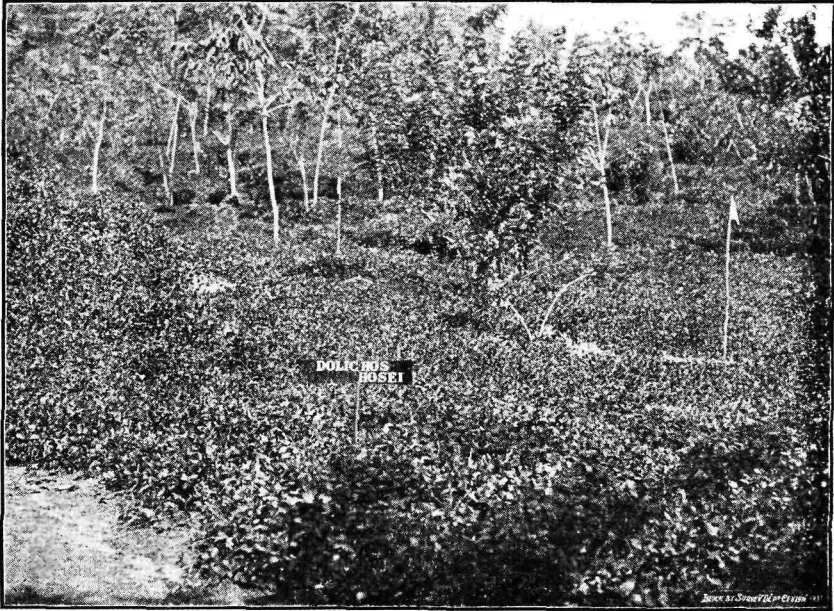
Dolichos Hosei (Vigna oligosperma) in young rubber
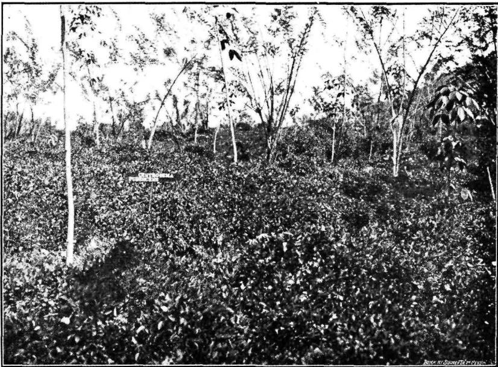
Centrosema pubescens with Wind-belts of Gliricidia maculata
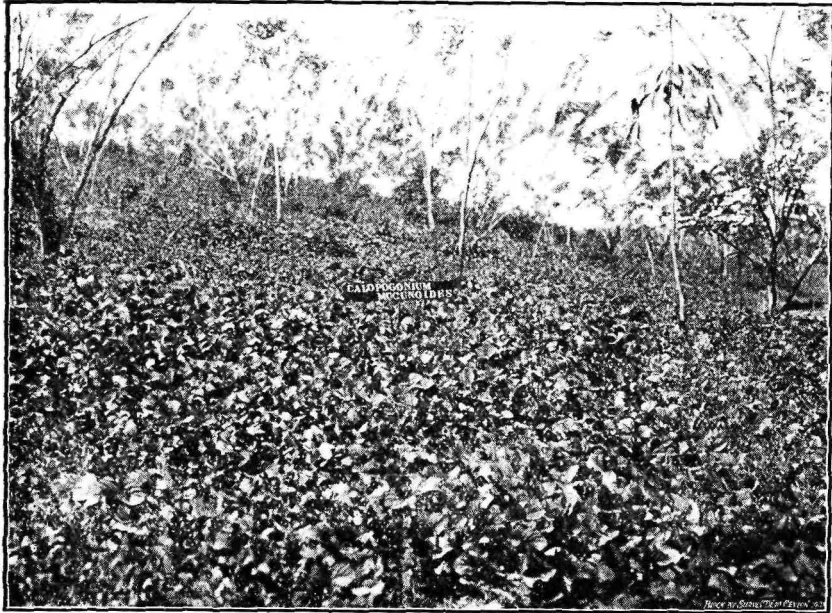
A black and white photograph showing a dense field of Calopogonium mucunoides plants in a rubber plantation. The plants have large, rounded leaves and are growing in a thick, low-lying mat. In the background, several young rubber trees with tall, slender trunks and sparse leaves are visible. A small label in the center of the image reads "CALOPOGONIUM MUCUNOIDES". In the bottom right corner, there is a small copyright notice: "Rice in South Africa 1911".Calopogonium mucunoides in young rubber
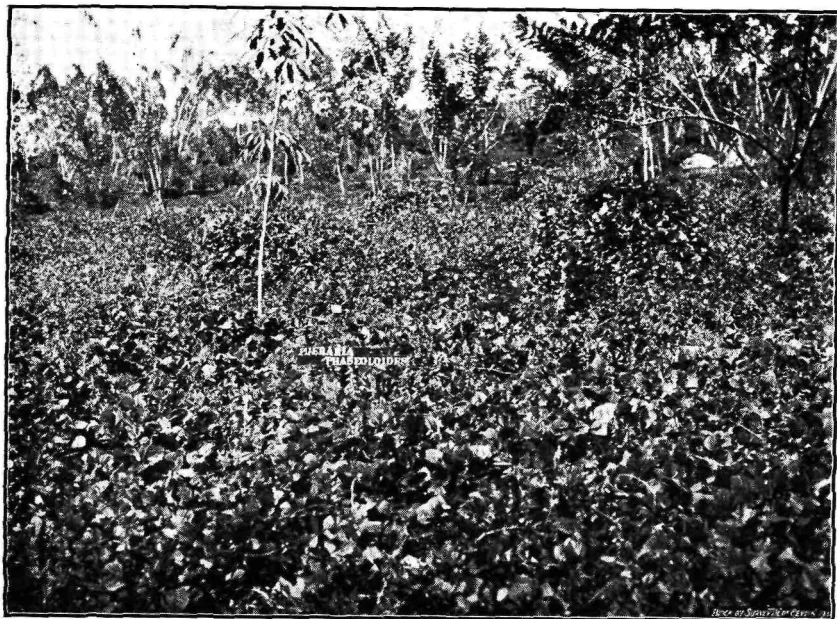
A black and white photograph showing a dense field of Pueraria phaseoloides (P. javanica) plants in a rubber plantation. The plants have large, rounded leaves and are growing in a thick, low-lying mat. In the background, several young rubber trees with tall, slender trunks and sparse leaves are visible. A small label in the center of the image reads "PUERARIA PHASEOLOIDES". In the bottom right corner, there is a small copyright notice: "Rice in South Africa 1911".Pueraria phaseoloides (P. javanica)
263Many other species have been tested by the Department, and some of these form excellent covers in new clearings. Amongst these are: Desmodium spp., Centrosema plumieri, Dunbaria Heynei, Phaseolus radiatus, etc. Although not used extensively in Ceylon at the present time these plants are worthy of trial on estates.
(b) Erect Green Manures.—The most important characteristic of a good green manure plant is that it should provide large quantities of nitrogen and organic matter for the soil. This is mostly supplied by periodically cutting back the plants and burying the loppings. When turned into the soil the green material not only increases the humus content, but, in the process of decomposition, also has the effect of rendering some of the mineral constituents of the soil more readily available as plant foods. Species vary in the extent to which they may be pruned without permanent detriment to their growth, and the ideal cover must clearly be able to stand periodical severe lopping.
As with creeping covers there is a wide range of leguminous plants which can be employed for this purpose. Tephrosia candida (Bogo medeloa), Clitoria cajanifolia, Crotalaria usaramoensis, and Crotalaria anagyroides are the most extensively used green manures on new clearings in Ceylon.
Tephrosia candida has been a favourite green manure in the East for many years, and grows well on almost all types of soil and at all elevations. It produces a very large quantity of green material from prunings and fallen leaves. The plant is not, however, very tolerant of severe pruning and should be cut back lightly at relatively frequent intervals. Tephrosia should be cut out and replanted after two or three years owing to the fact that, on account of its woody habit, it is liable to attack by "pink disease" (Corticium salmonicolor), and by the root diseases caused by Fomes lignosus and Fomes lamaoensis. Tephrosia candida and Clitoria cajanifolia are commonly planted in hedges, and are thereby useful as preventives of soil movement in addition to their green manurial properties.
Clitoria cajanifolia is an excellent species for permanent hedge planting. It does not provide so great a quantity of green leafy material as Tephrosia, but has the advantage that it may be repeatedly lopped without becoming excessively woody. Recent experiments by Holland (3) have shown that hedges of Clitoria are very effective in checking soil erosion.
264Crotalaria anagyroides and Crotalaria usaramoensis are usually sown broadcast on new clearings in conjunction with ground covers, and both provide a large quantity of leaf mulch. The former species grows to a larger plant than the latter, and is preferable on account of its quicker growth and exceptionally deep-root system. Both species propagate abundantly by self-seeding, but neither are tolerant of severe lopping.
A plant which has not been used extensively in Ceylon, but which has given a favourable impression on the Rubber Research Scheme Experiment Station, Nivitigalakele, is Desmodium gyrooides. This grows quickly to a large bushy shrub and provides a good weight of green material.
Leucaena glauca (Lamtoro) is grown as a low hedge on new clearings in the Dutch East Indies. It is kept lopped at a height of about 2 feet and is stated to stand periodical pruning better than any other species.
Amongst other species which have been used and which are worthy of trial are: Desmodium heterocarpum, Indigofera arrecta, Crotalaria striata, Sesbania cannabina, Tephrosia vogelii, Tephrosia noctiflora etc.
It is clear from the foregoing remarks that both types of cover plants, i.e., ground covers and erect green manures are necessary on new clearings. Although some species of green manures are usually planted in hedges it is a sound practice to broadcast a mixture of seeds of both types so that the various species grow up together. The erect covers then provide the small amount of shade beneficial to the young seedlings of some of the ground covers. Instances are known in which Dolichos Hosei was quickly established in this way, whereas by sowing the seed by itself on exposed soil the plant made little progress.
It is found that certain cover crops which make rapid growth at first gradually die off, whereas others, which are less quickly established, are of greater permanency. It is, therefore, desirable to plant a mixture of these two types so that the more permanent cover may, in course of time, replace that which made the earliest growth. Thus Calopogonium should be planted in conjunction with a cover such as Dolichos Hosei, Centrosema pubescens, or Pueraria phaseoloides. The Calopogonium will provide most of the cover during the first year or two, and this gradually be replaced by the other species which flourish in the shade of the maturing rubber.
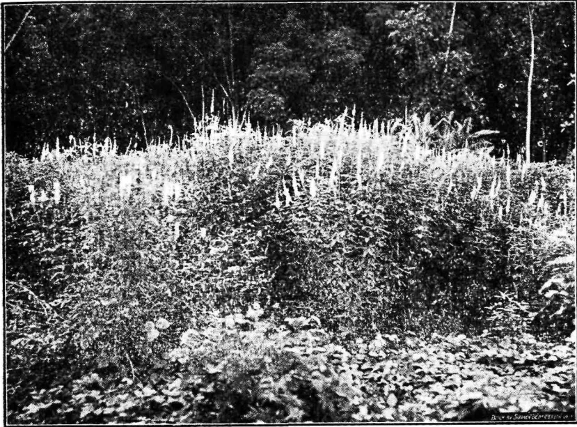
A black and white photograph showing a dense thicket of Crotalaria usaramoensis. The plants are characterized by numerous tall, upright flower spikes (racemes) that rise above the foliage. The ground is covered with low-lying, broad-leaved plants. The background shows a dark, dense forest.Crotalaria usaramoensis
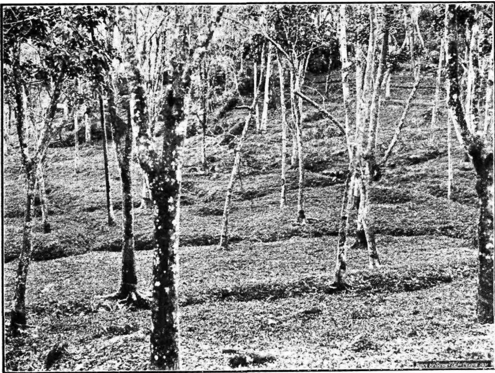
A black and white photograph of a rubber plantation. Several tall, slender rubber trees with light-colored bark are visible. The ground is covered with low-lying vegetation, including vines of Dolichos Hosei (Vigna). The trees are arranged in rows, and the overall scene is a mix of sunlight and shadow.Dolichos Hosei (Vigna) under old rubber
265In planting up a new clearing with cover crops and green manures the most important consideration is that the ground should be covered as soon as possible after felling and burning the timber so as to prevent the loss of surface soil and humus consequent upon exposure to the tropical sun and rain, and to keep weeds in check. At the same time, whether seeds or cuttings be used, it is valueless to attempt to plant a cover in settled dry weather, and the planting operations should always be carried out when wet weather can be expected. The ideal condition for planting is, therefore, when a spell of wet or showery weather follows a few weeks after the timber is burned. In the main rubber-growing districts of Ceylon it is usually arranged that the "burn" takes place in January or early February, and every effort should be made to "smother" the land in cover crops during the rains commonly experienced in April.
Whether seeds or cuttings are to be used, the first essential is to clear the area of weeds, and subsequently to carry out a regular weeding programme until the cover is thoroughly established. It is the general experience that if the eradication of weeds is rigorously carried out while the cover is becoming established, the thick cover that subsequently develops chokes out weeds to a great extent and enables hand weeding to be carried out at a greatly reduced cost.
All the species recommended above are best planted in new clearings from seed, and unless for some reason seed is not available there is no necessity to propagate vegetatively. Seed of the various species selected should, as a general rule, be mixed, and for quick germination may be soaked for 24 hours in warm water immediately before planting. Seed treated in this way must on no account be allowed to dry out before sowing. The seed may be planted in small holes two or three seeds to a hole, scattered irregularly throughout the area, or may be distributed in rows on loosened soil and pressed well down. The distance apart of the rows or holes and quantity of seed per acre naturally depends on the species used.
When it is necessary to propagate from cuttings care must be taken to use only mature stems, and to press these well down into the soil to prevent them drying out. A useful method of procuring rooted cuttings is to embed split coconut shells (sheraties) in the nursery beds before planting seeds, and to plant these out in the field when the nursery is well established.
Some species of erect green manures are best planted in hedges, thereby forming valuable checks to soil movement. These hedges should be planted along the contours, their position depending to some extent on the method of opening.
266In Java and Sumatra soil erosion is largely prevented by silt-pits, the earth from which being used to build continuous ridges about one foot high immediately above the pits. The ground cover is commonly planted on these soil erosion ridges.
On poor soils the establishment of leguminous species may be materially assisted by the application of manure at the time of planting. Phosphoric acid is the chief requirement, and this is probably best supplied by basic slag. Bulk cattle manure is often used when available. The manure should be mixed with good surface soil and planted with the seed.
In order that the maximum benefit from cover crops may be obtained it is not sufficient simply to plant them and ensure their vigorous growth. Erect covers are grown as sources of green material, and in order to obtain the maximum quantity of humus the plants must be periodically pruned.
The extent and frequency to which the bushes should be cut back varies with the different species, but in general it is advisable to lop twice a year. In determining the time of year at which lopping should be undertaken a number of factors must be taken into consideration. In order to obtain the maximum quantity of food substances the plants should be lopped when in full bloom, before the seed has been set. On the other hand the seed may be required for further planting. The plants should not be pruned in dry weather. If possible lopping should be undertaken in showery weather at the end of a monsoon, so that the green material is buried in a moist soil. The plants will then have made a small renewed growth before the succeeding spell of dry weather, but will not take much moisture from the soil.
The correct treatment of the loppings provides a debatable problem. There is no doubt that in order that the soil should derive the greatest benefit by the addition of nitrogen and humus-forming material, the loppings should, in some way, be turned into the soil. Joachim (4) has shown that if green material is allowed to dry on the surface of the soil nearly 50 per cent of the nitrogen may be lost. Where possible, therefore, green manure loppings should be forked into the soil or buried in pits, and it is probably advisable to alternate these two methods. Where expenditure must be reduced to a minimum it is customary to spread the loppings behind the bushes, or, where platform planting has been adopted, at the back of the platforms.
The extent to which ground covers should be kept back from the young rubber plants is, again, a debatable point. On
267the one hand the growth of covers in close proximity to the young plants will result in slower growth owing to competition between the rival root systems for plant foods and moisture, and on the other hand any bare soil will tend to deteriorate as the result of exposure to a hot sun and heavy rain. It is clearly necessary at first to maintain a small area around each young plant free from any ground cover on account of the danger of a cover with a twining habit climbing up the rubber plants and smothering them. As the root system of the rubber spreads so this cleared area should be kept larger and larger if competition between the roots is to be avoided. The logical outcome of this treatment, however, would be the eventual removal of the entire cover, thus returning to the policy of clean weeding. It is clear that a compromise must be effected. Observation in Ceylon and other countries has shown that the growth of young plants is definitely retarded by the presence of a close cover, and it is therefore probable that an area corresponding approximately to the spread of the root system should be kept clear around each plant until the rubber is approaching tappable age. Where the platform system of planting has been adopted it is simple to keep the platforms wholly or partly clear of any green manures or cover plants while the rubber is between the ages of about 2 to 5 years. Where the rubber plants are very young a cleared area corresponding to the size of the holes is sufficient, and when the rubber is mature the cover may, with certain limitations, be allowed free scope.
It has been found that on areas planted with a mixture of ground covers and erect green manures, the former tend, after two or three years, to somewhat smother the latter. It is therefore, necessary to re-establish the green manures periodically.
Although wind-breaks do not strictly come under the category of green manures, in that their primary function is not concerned with soil improvement, by the selection of suitable species, many of the benefits associated with green manure plants may also be obtained. By planting leguminous species the soil is enriched by the fixation of atmospheric nitrogen, and by selecting varieties which not only give effective protection against the wind, but which may also be lopped to yield green material, the dual functions of wind-breaks and green manures are fulfilled.
Young rubber plants are very susceptible to strong winds, and their growth may be materially retarded or even completely inhibited when planted in exposed situations. On clearings which are at all exposed to wind, it is therefore necessary to
268protect the plants as far as possible by the establishment of wind-belts. In the past the use of wind-breaks on new clearings has not received its merited consideration.
One of the most effective wind-break trees is Albizia moluccana which grows very rapidly and has a deep-root system. On new clearings it should be planted as early as possible along the ridge of all exposed hills, the establishment and rapid growth of these trees being at first regarded as of equal importance to the growth of the rubber plants. A row of Albizias planted lower on the slope of a ridge at right angles to the direction of the prevailing wind is also of great value in deflecting the wind above the top of the ridge. Albizia grows with a spreading habit and quickly forms a substantial wind-belt. It is a matter for discretion whether the trees should be removed when the rubber is approaching maturity, or whether they should be retained permanently. Mature rubber has been seen growing excellently in conjunction with large Albizias, and it is possibly of advantage to retain these trees in particularly exposed areas.
Albizia may also be planted between the rows of rubber both for wind protection and as a source of green manure, but it must be kept pruned so that the young rubber trees are not overshadowed or "spindly" development of the latter will result. Pruning must, however, be undertaken with discretion so that the rubber trees are not left without protection when high winds are prevalent. Albizia can most conveniently be grown from seed in nurseries, and thence planted out in the field.
In addition to the establishment of major wind-breaks Gliricidia maculata may be planted in rows at right angles to the direction of the prevailing wind. If kept lopped at a suitable height this species gives valuable protection to the young rubber plants in the first two or three years, and also provides a great quantity of green manure. Gliricidia is most easily planted in the form of cuttings about 6 feet in length.
Dadap, Erythrina lithosperma, is also commonly planted in young clearings as an alternative to Gliricidia. In certain localities it thrives better than the latter. It is easily established from cuttings or seed; grows rapidly, and is valuable as a source of green material.
Leucaena glauca grows to a small tree 15 to 20 feet in height and forms a useful wind protection for young rubber. Subsequently it may be cut low and retained as a green manure hedge. It must be stated, however, that this plant has shown indifferent growth at the Rubber Research Scheme Experiment Station.
269The value of green manures and cover crops in re-conditioning badly washed soil under old rubber was recognised some years before the establishment of such plants became a general custom. This delay in adopting an obviously sound agricultural practice was due, not only to the conservative attitude of many influential planters, but also to the difficulty in finding suitable species which could be easily established and retained in heavy shade. The earliest efforts towards checking soil erosion and providing mulch consisted of "selective weeding", whereby certain weeds thought to be noxious were eradicated and other harmless species retained. When certain leguminous plants were found to be tolerant of the normal shade under mature rubber it was clearly preferable to substitute the mixed weed growth by a leguminous cover, thus obtaining the additional soil enrichment due to the activities of the nitrogen-fixing bacteria in the root nodules characteristic of the family.
The influence of a ground cover on the growth of weeds has always provided a basis for argument between the respective advocates of clean weeding and cover crops. It was at first feared that the existence of a cover would increase the difficulties and therefore the cost of weeding. It has been the general experience, however, that provided the ground is rigorously weeded, while the cover is establishing itself, a thick cover will subsequently be formed which will tend to choke out weeds and thus enable hand weeding to be carried out at a reduced cost. If, on the other hand, weeds are not kept in check while the cover is still thin, a mixed growth will result and the eradication of the undesirable species may present considerable difficulty.
The choice of species for use under mature rubber is less extensive than for new clearings. As far as ground cover is concerned it is essential that the plant should be easily established, and should be of a permanent nature. The number of leguminous plants fulfilling these conditions under the shade of mature rubber is relatively limited. As regards erect green manures the same limitation is experienced, and the possibilities of supplying mature rubber areas with green manure are as yet largely unexploited.
(a) Ground Covers.—One of the earliest ground covers to be used was Mimosa invisa. This is probably unsurpassed on badly washed soils where the foliage of the rubber trees is scanty, and many areas in the Dutch East Indies have been
270greatly improved by the use of this cover. Mimosa will not, however, grow under heavy shade, and there are various objections to its use which have been considered of sufficient importance to bar its introduction to Ceylon.
An important advance in the use of cover crops in rubber cultivation was made when it was discovered that Dolichos Hosei, the Sarawak bean, flourished in the normal shade of old rubber. (Dolichos Hosei is universally known to planters in Ceylon as Vigna (oligosperma); to avoid confusion the latter name will therefore be employed). This species was the earliest ground cover to be planted extensively in mature areas, and has remained up to the present time the only important cover in Ceylon. Vigna is easily grown from seed, but since seed is somewhat expensive, it is preferable to establish a nursery, and thence to plant out cuttings in the field. The plant has a comparatively shallow rooting system and is, therefore, probably of greater value on flat and undulating land than on steep hill slopes. Vigna has, nevertheless, proved invaluable in checking soil erosion in hilly districts in Ceylon, the clearness of the drainage water bearing adequate testimony to its efficacy. It is also valuable as a soil builder, and under a thick cover of Vigna a quantity of leaf mulch is always to be found. In addition to the soil benefits due to ground cover it has been the general experience in Ceylon that a cover of Vigna, by inducing moist atmospheric conditions and keeping the ground temperature low, is beneficial to the flow of latex so that late tapping does not result in so great a diminution of yield.
In Java and Sumatra Vigna has, of recent years, been largely replaced by Centrosema pubescens. This forms a very similar cover to Vigna, but is probably to be preferred on account of its deeper root system, its marked twining habit which makes it very effective in choking out weeds, and its ability to withstand prolonged periods of dry weather. Centrosema is, however, more difficult to establish in shade than Vigna, and at first makes slower growth. Efforts to establish this plant under mature rubber have been made on many estates in Ceylon, but except where the shade is light very little success has been obtained. Centrosema requires a fairly good soil, and it is probable that the poverty of eroded Ceylon soils, in conjunction with heavy shade, is largely responsible for the different experiences with this cover in Ceylon and Java. It seems likely, however, that once established on a new clearing Centrosema will persist when the trees become mature.
271Centrosema plumieri has been seen growing under mature rubber where the shade is light, but this species is no more tolerant of heavy shade than C. pubescens, and is generally regarded as inferior to the latter in other respects.
Pueraria phaseoloides (P. javamica) has only recently received attention in Ceylon, but promises to be of considerable value under mature rubber as well as in new clearings. Although growth is somewhat slow at first a dense cover is eventually obtained. Pueraria has been planted extensively in Malaya and the Dutch East Indies, and in Ceylon may prove to be a useful substitute for Vigna where the latter has died out.
Various indigenous species of Desmodium grow well in old areas in Ceylon. Desmodium triflorum is a very small-leafed species which forms a close mat over the ground. It is effective as a preventive of soil erosion, but its close "mat-like" growth is an objection. It is not to be recommended where other covers can be grown. Desmodium heterocarpum is a sub-erect woody plant which is, perhaps, of more value as a source of green manure than as a ground cover. It is grown extensively in south India under the synonym Desmodium polycarpum.
(b) Erect Green Manures.—As regards erect green manures the ideal plant for mature areas has yet to be found. Most of the leguminous species which flourish on new clearings produce, but a stunted growth in heavy shade. There is no doubt, however, that humus is the most important soil requirement of the average rubber estate in Ceylon, and the establishment of green manures in addition to cover crops is therefore much to be desired.
Tephrosia candida grows rapidly under mature rubber, and, although not attaining its full development under shady conditions, is a valuable source of green material. The plant, however, must be periodically re-established, not only because it weakens under the shade, but also because when woody it is liable to attack by some of the root diseases fungi to which Hevea is prone.
Crotalaria anagyroides and Crotalaria usaramoensis will both grow in old areas, but, if an adequate supply of green material is to be maintained, they must be frequently replanted. Both species grow more rapidly than Tephrosia, but are less tolerant of lopping. They produce seed in great abundance in open areas or where the shade is light.
It is suggested that Glicicidia maculata would be of great value as a green manure if planted between the rows of trees. Further experience is necessary, however, before this species can be definitely recommended.
272(2) METHODS OF PLANTINGThe greater part of the ground cover of Vigna under mature rubber in Ceylon has been planted from cuttings. Owing to the fact that the plant is a shy seeder, seed is relatively expensive, and the establishment of Vigna by seed over a large area would be a costly proceeding. Where cuttings are not readily available from neighbouring areas it is, therefore, advisable to establish nurseries from seed and thence to plant out cuttings in the field. After cuttings have been removed from the nursery a new flush of growth will take place so that in a few months further cuttings may be taken. A useful method of procuring rooted cuttings is to embed split coconut shells in the nursery beds before sowing, and to plant these out in the field when the nursery is well grown.
Provided that good soil is selected and weeds are eradicated there is no difficulty in establishing a good nursery of Vigna in a short space of time. In transferring the cover to the field, however, considerable trouble is often experienced in certain areas. It has been the experience of many planters that whereas a thick cover is easily established on the greater part of the estate, certain areas are apparently unable to support the cover. This is usually due to the absence or scarcity of the particular bacteria without which the plant is unable to make vigorous growth. In such cases large mats of Vigna should be planted together with a quantity of the soil in which they were growing. The "barren" soil is thus inoculated with the necessary organisms, which multiply rapidly as humus is formed. The split coconut shell method of planting (described above) is also useful in such areas.
Centrosema pubescens is best established from seed. Germination usually takes place within 10 to 14 days of the time of sowing, but the growth of the seedling is slow, and on most Ceylon soils under heavy shade the plant makes little progress. According to a recent report (5) very successful results have been obtained in Sumatra by soaking the seed in an extract of crushed Centrosema root nodules, thus securing the inoculation with the necessary bacteria. This method might also be useful where difficulty is found in establishing Vigna.
Owing to the scarcity and cost of its seed, Pueraria phaseoloides is most satisfactorily grown from cuttings. If mature stems about 2 feet long are used the plant roots very readily. Growth is somewhat slow at first, but eventually a thick cover is obtained.
273The establishment of ground covers on poor soil is materially assisted by the application of small doses of manure. Phosphate is the most important requirement, and basic slag appears to be the most suitable source. The addition of a small proportion of nitrogen is also beneficial, and excellent results on a thin cover of Vigna have been obtained with ammonium phosphate. Cattle manure, when available, has also been found useful for starting a cover.
Under mature rubber erect green manures are probably most beneficial when grown in hedges along the contours. In addition to their green manurial properties they are then valuable as checks to soil movement. It must again be stated that in Ceylon very little use has been made of such plants in mature areas, and that such planting as has been undertaken has been somewhat haphazard in nature.
Tephrosia candida and Crotalaria spp. should be sown thickly in rows along the contours midway between the rubber trees. Care must be taken that the growth is not too close to the trees, or the drying of the tapping cuts after rain will be seriously retarded by the damp atmospheric conditions caused. Haphazard planting will also result in interference with the supervision of tapping.
There is no general agreement as regards the correct use of cover plants under mature rubber, and further investigation is required on many points. In Ceylon it is customary to allow Vigna to form a complete cover over the whole estate, a small circular area being sometimes kept round each tree to aid in the detection of root disease and collar rot. Although by this means soil erosion is very effectively prevented, it is argued by some that the cover competes with the rubber trees for moisture and food substances, heavy toll being taken of any manure which may be applied. It is thus the practice on some estates in Java and Sumatra to confine the cover to the soil erosion ridges, reliance being mainly placed on the latter for the prevention of soil wash. Although this method may be suitable on flat or gently undulating ground, it would seem that on the steep hillsides on which Hevea is commonly grown in Ceylon a complete cover is preferable. In such cases the only limitation to the growth of a ground cover is the presence of root disease. In areas where root disease, particularly Fomes lignosus, is known to be present, it is important that the ground should be kept strictly clean weeded.
274In order to obtain the maximum benefit from a ground cover it is not sufficient simply to ensure its establishment and vigorous growth. Although experiences differ with regard to the direct effect of green manuring on latex yield, there can be no doubt that the soil is materially improved by the addition of humus-forming tissues so that an increased crop will eventually result. A ground cover adds a certain quantity of humus to the soil by reason of its normal leaf-fall, but in the process of decomposition on the surface a large proportion of the available nitrogen escapes into the air in the form of ammonia and is lost to the soil. In order that the soil should reap the maximum benefit, it is, therefore, necessary that the cover should be periodically buried in the green state.
It must be stated that it is not at present customary on Ceylon estates to utilise the ground cover as a green manure. Where artificial manures are applied to ground bearing a thick cover the latter is usually rolled back from the strips or squares to be manured, and either left as "bunds" or replaced on the surface of the ground. There can be no doubt that from the agricultural view-point this is not the ideal method, and that the opportunity of incorporating valuable green material with the soil is lost. Alternative methods of incorporating the cover with the soil are: (1) forking, and (2) burying in pits, and the choice of these two methods is largely dependent at present on individual preference. Where artificial manures are being applied by envelope-forking the cover can be torn up and forked into the furrows together with the manure. With certain mixtures the cover is often killed, but in course of time the ground is usually again covered by encroachment from the unmanured strips. An objection advanced against envelope-forking the cover into the soil is that the feeding roots of the rubber are thereby disturbed and damaged. There is, however, no doubt that forking is itself beneficial in certain areas, and in choosing the method of utilising a cover the planter must be guided by the condition of the soil in question. Burying the cover in pits has the obvious objection that the green material is thereby less evenly distributed, so that the soil loses some of the benefits due to the humus formed.
Another method has been adopted on some estates where the expense of forking has been considered unjustified. The cover is rolled back in strips like a carpet and replaced on the ground upside-down. Although this method is doubtless of some benefit, a large proportion of the nitrogen and organic matter is lost.
Whatever method of utilising the ground cover may be adopted, it is clearly inadvisable on hilly ground to remove the
275entire cover at one time. Strips of cover should be retained along the contours so that the ground is not left entirely unprotected against soil erosion.
In addition to the soil improvement consequent upon the incorporation of green material, there is another important reason why the periodical disturbance of a ground cover is desirable. It has been a common experience in Ceylon that healthy covers of Vigna have unaccountably died off after four or five years of growth. Although the depredations of the Kulatara snail (Achatina fulica) have been responsible for considerable damage, there can be little doubt that in many cases the death of the cover has been due to a soil factor which, for want of more exact terminology, is called "staling". The disturbance, aeration, and enrichment of the soil consequent upon periodically turning in a green cover helps to enable the soil to maintain a fresh growth of the same plant. Ground which has become "stale" should be rested before endeavouring to re-establish a cover, and a different species should, if possible, be used on such areas.
Although a ground cover in addition to its value in the prevention of soil erosion, can be utilised to provide green manure, a considerably larger bulk of green material can be obtained by growing shrubby leguminous plants and periodically turning them into the soil. There can be no doubt as to the theoretical value of such a procedure, but there is a great diversity of opinion among practical men as to the economic aspects of growing erect green manures under old rubber. In the first place such species as have so far been used are somewhat difficult to establish and costly to maintain. In order that the soil may derive the maximum benefit, the plants must be lopped frequently, and the loppings forked into the ground or buried in pits. Although forking is undoubtedly beneficial to some soils, its frequent practice is open to objection on account of the damage caused to the rubber roots. It is argued by many planters that the money spent on the establishment and utilization of such plants could be more usefully employed in providing artificial manures. It must be borne in mind, however, that inorganic manures cannot cause any permanent improvement in the chemical and physical condition of the soil unless humus is also present. Artificial manuring should, therefore, be combined with green manuring.
A judgment as to the economic value of growing green manures in old areas must await the outcome of further experiments and field experience. An important advance will be made when a species is revealed which is easily established and maintained under the normal soil and shade conditions of mature rubber areas.
276LIST OF SPECIES MENTIONED| Albizia moluccana | Erythrina lithosperma |
| Calopogonium mucunoides | (Dadap) |
| Centrosema Plumieri | Gliricidia maculata |
| Centrosema pubescens | Indigofera arrecta |
| Clitoria cajanifolia | Indigofera endecaphylla |
| Crotalaria anagyroides | Leucaena glauca (Lamtoro) |
| Crotalaria striata | Mimosa invisa |
| Crotalaria usaramoensis | Phaseolus radiatus |
| Desmodium gyroides | Pueraria phaseoloides |
| Desmodium heterocarpum | (P. javanica) |
| (D. polycarpum) | Sesbania cannabina |
| Desmodium triflorum | Tephrosia candida |
| Dolichos Hosei | (boga medeloa) |
| (Vigna oligosperma) | Tephrosia noctiflora |
| Dunberi Heynei | Tephrosia vogelii |
| Vigna (see Dolichos Hosei) |
IN 1589, one of the last survivors of the Spanish Conquistadores of Peru, Marcio Serra de Lejesama, wrote a most remarkable confession to King Philip II.
"Your Majesty must understand", he writes, "that my reason for making this statement is to relieve my conscience, for we have destroyed the Government of this people by our bad example. Crimes were once so little known amongst them that an Indian, with 100,000 pieces of gold and silver in his house, left it open only placing a little stick across the door, as a sign that the master was out, and nobody went in. But when they saw that we placed locks in our doors, they understood that it was from fear of theft".
That the old Incas should have such confidence in those who passed their dwellings, is not only a proof of the general honesty of their fellow-citizens but must also chiefly be taken as a proof of the relatively small value, which gold possessed in the immured economic state of the Incas before the Spanish invasion. And if the writer of the above-mentioned confession could have foreseen that not only the gold but also a treasure of much greater value, namely the precious remedy cinchona-bark, would permanently disappear from Peru, he would perhaps have made his confession in somewhat different words. However ideal the condition of national honesty of the old Incas may appear, it is certainly better, in view of the "sacra auri fames", to preserve and cultivate the most precious gifts which nature has bequeathed to mankind, so that they may be used for the good of as many people as possible, rather than to leave them to reckless exploitation.
To a certain extent it may be said, that the treasure of cinchona bark in the primeval forests of Peru and Bolivia was as inadequately guarded as the gold in the dwellings of the ancient Incas. The Jesuits, it is true, did their best to convince the Indian bark collectors, that they were morally compelled to plant a young cinchona shoot in the ground for each tree they cut down; also the Government of Bolivia subsequently attempted to restrict the extermination of the cinchona by legal regulations. But owing to the pressure of rapid exploitation of this most profitable product of the forest, stimulated as it was by the constantly growing demand for cinchona bark, neither the well-meant advice nor the later legal regulations could be more than "a little stick across the door".
For a space of more than two centuries the unbridled exploitation of the cinchona, growing in its natural forests, went on, and although the danger of its extermination had already been emphatically pointed out by men of great authority, such as De La Condamine and von Humboldt, it took many decades for the conviction to become more general, that the enormous store of cinchona-bark in the South American forests was in danger of becoming exhausted. The danger was even increased owing to the fact, that after the discovery that quinine was the most active febrifugal component, the commercial world had learnt to value cinchona-bark according to the percentage of quinine it contained, and that from the analyses it appeared that the importation of high percentage barks from South America was constantly diminishing.
* Lecture by Dr. M. Kurbosch, Director of the Cinchona Experimental Station, Tjinjiroean, at the celebration of the 300th Anniversary of the first recognised use of Cinchona held in the Missouri Botanical Garden, St. Louis. Reproduced from De Berg-cultures, No. 18, May 2, 1931.
278It is chiefly due to the French savant Weddel, who visited the cinchona districts from 1843 to 1848, that attempts were eventually made to preserve the cinchona from total extermination by attempting to introduce this plant in other tropical regions and to cultivate it there. In his "Histoire naturelle des Quinquinas" (Paris 1849) he emphatically pointed out the necessity of attempting to produce cinchona bark in regular plantations if the world were not to lose a medical remedy which had already become indispensable. "Reste la ressource de la culture", he writes, "et il faut l'employer. S'il est un arbre digne d'être acclimatise', c'est certes le quinquina, et la posterite benerait ceux qui auraient mis en execution une semblable idee".
In one respect, however, Weddel's statement was not complete. It is not only those, who carried out Weddel's idea, but also the indefatigable promoters and propagandists of this idea to whom the gratitude of later generations is due. Therefore, Weddel's name will remain one of the first and greatest to which this grateful remembrance will be paid.
When in the year 1852 the Netherlands Government determined to attempt the transfer of the cinchona from South America to Java in order to cultivate, if possible, this plant in regular plantations, it was certainly not the calculations of a possible financial profit which induced them to take such a resolution. On the contrary, considerations of a more idealistic nature ranked first in every way. The whole object was to preserve to future generations a medical remedy which had become indispensable, and to make it possible to obtain it regularly in adequate quantities. "Il s'agit, pour ainsi dire, de procurer son pain au malade, et de le lui procurer a des prix qui ne surpassent pas ses moyens. Ce n'est comme speculation, c'est comme acte humanitaire que le Gouvernement Neerlandais a entrepris et poursuivi cette oeuvre". With these words Rochussen, Governor-General of the Netherlands East Indies, most correctly described the motive which led to the transplantation of the cinchona.
The actual reason, why far-seeing men of science had urged the transplantation of the cinchona, was the danger of a scarcity of cinchona bark and the wish to ensure a permanently adequate production of bark by regular cultivation. The same motives prevailed when the Netherlands and the British Governments determined to make an attempt to transplant the cinchona to their colonies.
Without entering into details, I may briefly record here the two expeditions to South America, namely the Dutch expedition in 1852 and the English one in 1860, sent out with the object of collecting as many cinchona plants and seeds as possible in order to transfer these to Java and to British India respectively.
Instructions to collect and transfer cinchona plants and seeds to Java were given by the Dutch Government to the botanist Justus Carl Hasskarl, who had already been employed in the service of the Netherlands East Indies Government in the botanical gardens at Buitenzorg near Batavia. Hasskarl left for South America in December 1852, and he remained there till August 1854. He succeeded in collecting live plants and the seeds of several varieties of the cinchona. Of the 500 plants shipped in Ward cases, only 75 proved to be alive on arrival at Buitenzorg. From the seeds brought by Hasskarl and from those, which had been previously sent by him, a great number of plants were later on obtained.
The leadership of the British expedition to South America was entrusted to Sir Clements R. Markham. As he himself had not studied botany, Markham had, to carry out his enterprise, secured the collaboration of a number of scientific men, several of whom were already more or less acquainted with the cinchona regions after a personal sojourn there. His collaborators were Dr. R. Spruce, R. Cross, J. Weir and Pritchett. The success of the expedition was chiefly due to Spruce and Cross; together they
279explored the district of the "red bark", viz. the western slopes of the Chimborazo, and ultimately succeeded in delivering in British India more than 450 live plants and about 100,000 seeds of the C. succirubra variety which, besides being the producer of pharmaceutical barks, has become of such an extraordinary importance as the base on which to graft the Ledgeriana varieties.
Very soon after the cinchona seeds and plants had been received from South America, British India and Java exchanged the varieties they missed, so that early in the 'sixties both countries possessed a fair number of cinchona varieties, of which the principal were:
| C. lancifolia | } Columbia |
| C. cordifolia | |
| C. trianae | |
| C. succirubra | Chimborazo |
| C. officinalis | Loja |
| C. micrantha | } Huanuca |
| C. pahudiana | |
| C. calopera | } Caravaya |
| C. josephiana | |
| C. calisaya |
The successful transplantation of the cinchona was followed by a period of researches and experiments for the proper ways and means of propagating the new plant, a period with which the names of Anderson, Mac Ivor, Teysmann, Junghuhn, De Vrij, and Van Gorkom are honourably connected.
On the island of Java, where we shall now more particularly follow the development of the cultivation of cinchona, it appeared that with but few exceptions all varieties of cinchona thrived more or less favourably. The new culture succeeded best on the plateau of Pengalengan and on the out-runners of the neighbouring mountains, a district which had been pointed out by Junghuhn as being especially suitable for the cultivation of cinchona.
By further shipment new quantities of seeds came from South America to Java, and so the number of plants available increased rapidly, especially as the planters soon learned to propagate the most important varieties in many thousands by means of cuttings.
After many dangers and sacrifices in transferring the cinchona and after much devotion in tending the experimental plantations, it then appeared as if the cultivation of cinchona in Java could look forward to a splendid future and yet, without a fortunate accident, the cultivation of cinchona in Java could not have developed and attained the great economic importance, which it now possesses.
When, after a number of years, the oldest cinchonas had grown to such an age and size that they could furnish sufficient quantities of bark, so that an analysis of these barks could be made, all the imported varieties proved to possess a low percentage of quinine, with the sole exception of the C. officinalis. It was of this variety, however, that the growth was least favourable, and therefore the prospects that this variety could be used for plantation on a large scale were poor. Since the discovery of quinine by Pelletier and Cavantou medical science had found quinine to be the febrifugal component "par excellence" of the cinchona bark, and began to prescribe quinine to a greater and greater extent; consequently there was a constantly growing demand on the market for cinchona barks of a high quinine percentage. The barks with a low quinine percentage supplied only a small quantity of this product, and for the quinine manufacturers these barks were also objectionable owing to the fact that the preparation of pure quinine was rendered more difficult by their relatively high percentage of total alkaloids.
280And yet sufficient attention had been paid to the importation and propagation of the good varieties from the very beginning. For a number of years previously the Calisaya barks had been by far the most appreciated kind in the cinchona bark trade, and consequently great attention had been devoted to the importation and propagation of this variety. At that time the planters in Java possessed four Calisaya varieties which were classified as follows according to their origin:
| C. Calisaya javanica | } Descendants of the first cinchona plant received from Botanical Gardens at Leiden in 1851. This plant was grown from seed collected in South America by Weddel. |
| C. Calisaya javanica | |
| C. Calisaya Schuhkraft | } Descendants of seeds and plants collected in South America by Hasskarl. Plants grown from seed collected in North Bolivia and received through the Dutch Consul at la Paz, Mr. C. N. Schuhkraft. |
| C. Calisaya anglica | |
| Grown from seed received from British India. |
Of all these Calisaya varieties, however, the barks appeared to contain in average no more than 1.15 per cent of quinine, as will be seen from the following figures:
| Variety of Cinchona bark | Type of alkaloid contents | ||||
|---|---|---|---|---|---|
| Quinine | Cincho-nidine | Kinidine | Cincho-nine | Total alkaloids | |
| Cal. Javanica, trunk bark I | 1.0 | 0.5 | 0.3 | 1.1 | 3.8 |
| " " " " II | 0.7 | 0.2 | 0.2 | 0.8 | 2.5 |
| " " root " | 1.2 | 1.0 | 0.4 | 1.9 | 5.2 |
| Cal. Schuhkraft, trunk " | 1.0 | 0.3 | 0.5 | 1.6 | 4.0 |
| " " " " II | 0.3 | 0.2 | 0.1 | 0.7 | 2.0 |
| " " root " | 1.2 | 0.7 | 0.2 | 2.3 | 5.0 |
| Cal. anglica, trunk " | 1.5 | 1.3 | 0.1 | 2.1 | 5.7 |
| " " " " II | 1.0 | 1.2 | 0.1 | 1.4 | 4.6 |
| " " root " | 1.5 | 1.7 | 0.0 | 3.1 | 6.9 |
| Extremes of alkaloid contents | ||||
|---|---|---|---|---|
| Quinine | Cincho-nidine | Kinidine | Cincho-nine | |
| Cal. javanica, trunk bark I | 0.4 | 0.2 | 0.3 | 0.3-2 |
| " " " " II | 0.1-0.3 | 0.1-0.3 | 0.15-0.25 | 0.7-1 |
| " " root " | 0.7-2.1 | 0.8-1.5 | 0.3-0.5 | 1.6-2.5 |
Although the object aimed at, viz. the preservation of the cinchona from extermination had to a certain extent been attained, it did not appear, at least for the present, as if the cultivation of cinchona in Java would prove to be an economic success, since the cinchona barks with a high percentage of quinine, which the market demanded, could only be produced in insignificant quantities.
281In the meantime, however, a new variety of Calisaya seeds had been received from Charles Ledger in 1865. This seed had been collected by Ledger in the forests of the province of Caupolican in North Bolivia through information supplied to him by an old Indian bark collector named Manuel Incra Mamani.
The story of the collection and the subsequent adventures of this kind of seed is too romantic not to be recalled here in a few words.
Charles Ledger was an Englishman who had been in Peru and Bolivia since 1836. He had also been engaged in the cinchona bark trade. Encouraged by the expeditions of Hasskarl and Markham, he determined to go and collect Calisaya seeds himself with the intention of offering these seeds for sale to the British Government. Thanks to his many years' experience and knowledge of the country and its people, especially in Southern Peru and Bolivia in the districts where the Calisayas were to be found, he was the very man to carry out such a task successfully. Moreover, he could also count on the very reliable support of his Indian servant, Manuel, who had formerly been a bark collector and who possessed considerable knowledge with regard to the origin and the value of the varieties of cinchona bark.
In the year 1861, Ledger ordered this Indian servant of his to collect seeds of the best Calisaya varieties in the forests of North Bolivia. It was in 1865, however, before Manuel returned with a quantity of cinchona seeds which he had collected from about 50 cinchonas in the neighbourhood of the valley of the Rio Mamore in the Bolivian Province of Caupolican. Markham relates that Manuel had not been able to collect seeds before, because in the preceding years the flowers of the cinchonas had been repeatedly destroyed by frost during the month of April.
Ledger sent these seeds to his brother Mr. George Ledger in London with instructions to offer them for sale to the British Government. But when the negotiations with the officials in London were not successful, George Ledger began to fear that the seed would lose its germinating faculty and therefore offered it to the Netherlands Government, which purchased one pound of these seeds. This quantity of Ledger seed was immediately sent to Java, while Ledger's remaining stock of 13 lb. was sold shortly afterwards to a British Indian planter, who exchanged it with the British Government for Succirubra seed.
The seed purchased from Ledger by the Dutch Government was received at the Government Cinchona Plantation in December 1865 and was taken great care of by the then Director of the plantation, Mr. K. W. van Gorkam. Although a large proportion of the seed had been spoilt, about 20,000 seeds germinated and of these about 12,000 plants were, somewhat more than a year later, planted out in the open. In the year 1872 the first analyses of the barks of these Ledger cinchonas were made in Java.
Up to this moment there had been no reason whatever to expect that those Calisaya varieties of bark would produce a particularly high percentage of quinine. The first analyses showed, however, that the bark of the Ledger cinchona excelled all other varieties, including those of the other Calisayas considerably in the percentage of quinine. In the report of the Government Cinchona Plantation for that year the Director, Mr. J. C. Bernelot Moens, writes: "This variety of cinchona bark is not only remarkable for the high percentage of quinine but also for the facility with which the quinine crystallizes as sulphate".
As the bark of a further number of Ledger plants was analysed, higher and higher percentages of quinine were found. The highest percentage of quinine in the Ledger bark in 1872 was 8 per cent; 11 per cent was found
282by Moens in 1874, and in the annual report for 1876 we find the statement "The proportion of 13·25 per cent of quinine, which has certainly never been found in cinchona bark, is extremely remarkable".
Accordingly with the increasing of the percentages of quinine, found by analyses of Ledger trees, the Government plantations in Java grew more and more exacting with regard to the qualities of the Ledger trees from which seeds and cuttings should be collected. It is interesting to record here what is mentioned on this subject in the subsequent annual reports of the Government Cinchona Plantations.
1873 "Fresh plants will in the future only be grown from seeds of trees containing more than 5 per cent of quinine in their bark".
1875 "If the bark contains less than 7·5 per cent of pure quinine, the tree is disqualified for seed production purposes".
1877 "On the Government Plantations seeds of trees which contain 9 to 10 per cent or more quinine in their bark will in future only be used".
1879 "In this report Mr. Moens states that more than 1,000 grafts were made with cuttings from Ledger trees with the highest quinine percentage, including 100 cuttings from tree No. 67 which contained 13·5 per cent of quinine".
The significance of these figures becomes clear if we consider that, before the discovery of the Ledger barks, the other Calisayas with an average percentage of 1 to 1½ per cent of quinine were considered to be the best quinine producers and that the other cinchona varieties, with the exception only of the poor growing C. officinalis, as a rule only contained 0·5 to 1 per cent of quinine.
The difference between the Ledger cinchonas and the remaining cinchona varieties is even perhaps more striking if we compare the prices obtained at the bark auctions. On the 17th of April, 1877, a cinchona bark auction was held in Amsterdam at which the Government barks were sold at the following prices :
| Ledger cinchona barks | f | 17·58 | per | kilogramme |
| C. Calisaya javanica | „ | 4·92 | „ | „ |
| C. Hasskarliana | „ | 4·78 | „ | „ |
| C. Calisaya Schuhkraft | „ | 3·80 | „ | „ |
| C. Succirubra | „ | 3·36 | „ | „ |
| C. Caloptera | „ | 3·18 | „ | „ |
When the first analytical results of the Ledger cinchona barks became known, the Netherlands Indian Government had already during the previous 20 years established many experimental plantations. The laying out and maintenance of these experimental plantations and also the transference of plants and seeds to Java had cost much time, labour, and money which, until that moment, had shown no prospects for reasonably profitable results. Nevertheless, the Government continued the experiments with great perseverance, in spite of the fact that the public, not appreciating the ideal significance of this work, frequently expressed their dissatisfaction regarding the costly Government Cinchona Plantations. "In the East Indies", Mr. Van Gorkom writes, "the public ridiculed the expensive hobby of the Government in maintaining a cinchona plantation which after so many years had not yet shown any prospect of results in hard cash and of which only negative results could be expected. The cultivation of cinchona was looked upon as a hobby of the Governor-Generals, who rapidly succeeded each other. Private persons or companies could not be induced to make experiments with the cultivation of cinchona".
283It was amazing to see how swiftly all this changed after the discovery of the value of the Ledger cinchona and particularly after it had been proved on the open market that the Ledger barks met a ready demand at much higher prices than the other varieties of bark. Private enterprises now soon exhibited a growing interest in the new culture and gratefully accepted the generous offer of the Government to supply the planters with seeds and cuttings of Ledger cinchona without charge, if they were prepared to devote their land to the cultivation of cinchona. There were, consequently, in a very short time a number of private cinchona plantations besides the very large plantations belonging to the Government.
Relying on the experience of the Government estates, the planters sought out by preference for these plantations soils of porous structure with much humus and of recent volcanic origin. Such lands at a suitable height above the level of the sea were chiefly found in the Preanger Regencies on the slopes of the volcanoes and on the plateaux between them, all of which are covered with the fertile soil formerly thrown out by these volcanoes.
This explains the fact why the cultivation of cinchona is chiefly concentrated in the mountainous districts of the Preanger. Of 127 cinchona estates on the island of Java, 85 are in the Preanger Regencies and these together produce almost 75 per cent of the total Java production. The most important producing district is certainly the plateau of Pengalengan and its surrounding mountain slopes.
In this way has cinchona cultivation in Java developed within a few years after having become acquainted with the Ledger cinchona, from "a costly hobby of the Government" to an economically profitable agriculture on a large scale, employing thousands of hands and relieving millions of sufferers from malaria, bringing them healing and new life.
If the Netherlands Indian Government has contributed largely to the extension of the cultivation of cinchona by supplying on a large scale seeds and cuttings gratis, in no less degree is the rise of Java cinchona culture due to the special care devoted by the Government plantations from the very beginning to the quality of the planting material. The cultivation of cinchona owes an immense debt to the insight of Mr. J. C. Bernelot Moens, then Director of the Government Cinchona Plantations, who selected for the production of seeds exclusively trees with the highest percentage of quinine in their bark.
Mr. J. Elliott Howard of London, the well-known quinelogist to whom Mr. Moens had communicated the results of his research and told of his plans, wrote to him in 1875: "I commend very much the pains you have taken in this respect and think you will reap the advantage by keeping considerably ahead of all other growers of cinchona". More literally perhaps than Mr. Howard intended, his prophecy has since been realised. For many years past the Netherlands Indian Cinchona Plantations produce 79 per cent of the total world production.
Now, as in consequence of the importation of the Ledger cinchona a complete revolution was brought about in the Java cinchona cultivation, there is every reason for us to enquire whether further particulars could not be ascertained as to the special qualities by which the Ledger cinchonas are distinguished from the ordinary Calisaya plants. It will also be interesting to see what has been done in Java to retain and improve these qualities, in so far as they are of importance for the cultivation and production.
Generally speaking, the Ledger cinchona is distinguished from the other Calisayas by two qualities, viz. the botanical type and the high quinine-percentage.
286From among the original Ledgerianas two trees were selected with a high percentage of quinine. Of these two trees (No. 23 and 38) seed (A) was taken and from the descendants, obtained from this seed, those possessing the highest percentages were again selected. These were multiplied by means of grafts and planted out in an isolated seed garden. The seed, produced by this garden, we will call seed (B). Now if we can compare the yield of the plantations from seed (A) with the yield of plantations from seed (B), we shall be able to draw a conclusion with regard to the effect of the selection. The Government cinchona estates now actually possess such figures, and from these figures it has appeared, that the plantations from seed (B) produce about 25 per cent above the production of the plantations from seed (A).
Although results of considerable importance were obtained, it cannot be denied that the method adopted possessed in one respect a serious defect. The method was too one-sided; it led to excessive attention being paid to the percentage of quinine only. It is true that for selecting also other factors such as growing power and thickness of bark were considered, but these factors were not determined in an exact manner and in the ultimate selection played only an extremely subsidiary part. Practically speaking it was always the percentage of quinine which determined the selection and another factor which is also of the greatest importance for the estimation of the production of the quinine, namely the amount of bark produced, was but little or most inadequately taken into account.
It is obvious that the amount of quinine produced is certainly in ratio to the percentage in the bark, but it is not exclusively determined by the percentage; it is found by multiplication of quinine percentage and bark production. To ascertain the amount of quinine produced, the bark production is therefore a factor of equal importance with the percentage. For it will be clear, that a plantation (A) with lower percentage may be able to produce more quinine per acre than a plantation (B) with a higher percentage of quinine, if in plantation (A) the bark production is considerably larger.
In order to be able to estimate the value of a cinchona tree or of a cinchona plantation, we must possess a method, by which we can readily assemble facts, which will furnish a sufficiently accurate measure whereby to estimate the quantity of quinine which is present at a given moment. Further, the method must be able to register with sufficient accuracy comparatively small changes in the stock of quinine in consequence of measures as for instance, manuring, draining, digging, etc., etc.
If we now carefully keep in mind the precise significance of the percentage-figure, viz :
it will be clear that the percentage alone is not sufficient to give us a correct estimate of the stock of quinine and of the subsequent changes in this stock, unless the amount of bark in stock is not also accurately determined.
For a number of years past we have now adopted a method which enables us, in a simple and sufficiently accurate manner, to measure the stocks of bark and quinine in the trees or groups of trees and also to estimate comparatively small changes in such stocks. In this method the point of departure was the consideration, that the quantity of quinine, which is present in comparable quantities of bark, forms a practical standard of measure for the comparison of their respective producing power. It would take too long to describe this method in detail here. It may be sufficient,
287therefore, I think, to state, that this method has proved equal to our expectations and that has enabled us to secure a better insight into the value of the various factors influencing the production of quinine such as the quality of the soil, manure selection, etc., etc.
As I have already mentioned, the Netherlands Indies practically supply the total world demand for cinchona bark. Now if we see how this state of affairs, which is frequently described as the "Dutch Cinchona Monopoly", has come about, it will appear that two circumstances have been of preponderating influence in this respect, viz., the scientific advice, which has from the very first supported the cultivation of cinchona, and the extraordinary perseverance of the Netherlands cinchona planter.
As has already been demonstrated, the cultivation of cinchona in Java owes a great debt to the scientific insight of Mr. Moens, who not only preserved the Ledgeriana material for the future, but also improved it in quality. There is not the slightest doubt that the strong position of the culture of cinchona in Java, which enabled this culture to withstand long periods of depression, during which the cultivation was given up entirely in other countries, is greatly due to the possession of planting material and seed derived from selected high percentage trees.
A great number of experiments were also made on other cultural and technical problems, such as the distance from each other at which the plants should stand, the method of working the soil, manuring, etc.
Also the fact that a suitable grafting method was soon found on the Government cinchona estates has been of great influence for the practical cultivation. Not only could by means of this grafting method the high percentage plants be multiplied and the grafts be devoted to the production of seed in isolated gardens, but moreover by grafting Ledgeriana cuttings on Succirubra bases one obtained the advantage, that on less fertile soils, where Ledgeriana seedlings would no longer thrive Ledger barks could still be produced. In this way the Ledgeriana was, as it were, supplied with the strong root system of the Succirubra, which can develop freely even on less fertile soils, and which moreover possesses greater resistance against the dreaded root fungus than the Ledger roots.
In this way science continued to supply to the cultivation of cinchona its support and advice, so that the culture of cinchona was soon raised to a very high level of technical perfection. The natural results of this was, that in Java, cinchona culture was, better than elsewhere, able to resist the periods of depression which were to come and, unfortunately, repeatedly did come.
Instead of the shortage of cinchona bark previously feared, a considerable overproduction was the result of the successful cultivation. The supply of cinchona bark was considerably greater than the demand, with the inevitable effect of a severe drop in the price. In the year 1880, for instance, the price of 1 Kg of sulphate of quinine was still f 250 while in 1893, with a constantly growing consumption, this price had dropped to f 18. In 1885 the unit price* was still 25 Dutch cents (10 American cents); in 1890 this price had dropped to 7.5; in 1892 to 1897 to about 4; and in 1895 even to slightly more than 2.5 Dutch cents. At the latter price it was impossible even for the Java estates to continue a profitable exploitation. For the sufferer from malaria the condition hoped for by Rochussen, viz., "des prix qui ne surpassent pas ses moyens" had certainly been attained, but the cinchona planter saw his livelihood threatened by market prices which were lower than his costs of production. No doubt many a capable planter who had hoped for a golden harvest from the cultivation of cinchona would sigh with Schiller:
* As unit is considered on the cinchona market a quantity of 5 gr. of sulphate of quinine in the bark ( Kg of bark of 1 per cent of sulphate of quinine). The unit price is the amount in cents in Netherlands currency that is paid for 5 gr. of quinine in the bark, i.e., per Kg. of bark and per per cent of sulphate of quinine.
288Die Ideale sind zerronnen,
Die einst das trunk'ne Herz geschwellt.
It is certainly due to the perseverance of the Dutch planter who with great tenacity, whilst constantly looking for new ways and means of arriving at a cheaper production, steadily continued and improved the cultivation of cinchona, that cinchona culture was not generally given up, especially when in Ceylon the planters began to convert the cinchona plantations into tea plantations. The position of the Java planters then became even more acute owing to the large quantity of bark which Ceylon dumped on the market for a considerable length of time.
If we may justifiably consider the maintenance of a constant production as of vital importance for mankind in general, then the whole of the world certainly owes a debt of gratitude to the Java cinchona planters for persevering in the cultivation of cinchona at that time in spite of the unfavourable circumstances and in spite of the fact that tea plantations held out better prospects financially. Thanks to their perseverance the production of an indispensable medicine has been preserved to future generations.
The Dutch planter need therefore not pay great attention to the views expressed in articles in periodicals and newspapers in which the so-called Dutch Cinchona Monopoly is discussed in a manner which as a rule exhibits much unfriendliness but little knowledge of the true state of affairs. The planter himself knows, how the Dutch position in the cultivation of cinchona has been created by science and maintained by perseverance. It is with great satisfaction that after so much lack of appreciation from persons who are mostly incompetent, he may point to the verdict of Mr. E. M. Mellor, a well-known pharmacologist, who writes: "The introduction of Cinchona and the struggle to make it a commercial success is a fine example of the indomitable pluck, grit and dogged perseverance of the Dutch. Holland has achieved her success this time by forethought, by research, by taking risks, and by doggedness", although the word doggedness does not point to excessive friendliness.
After Ceylon had given up the cultivation of cinchona in favour of the more profitable cultivation of tea and after most of the private planters in British India had also given up the cultivation of cinchona as not being sufficiently profitable, the Netherlands Indies remained practically alone as a producing country of cinchona bark. Consequently, we may say that the so-called cinchona monopoly of the Netherlands Indies has come about in an entirely natural way, the way which led to the "survival of the fittest".
When now I am further using the word monopoly, I only mean to say that practically the whole world's consumption of cinchona bark is produced in the Dutch East Indies.
This is quite a different thing from other monopolies, which, in most cases, are created by special laws and maintained strictly by official measures and regulations (Tobacco, opium, etc.). The cinchona bark monopoly in the Dutch East Indies has grown exclusively by the natural law that results in survival of the fittest and never have the N.E.I. Government tried to maintain this monopoly by special laws or measures. On the contrary, repeatedly our Government has given its highly selected cinchona seeds to those Colonial Governments, that wished to grow cinchona bark. Consequently, these Governments could dispose at once of the best quality of seeds and thus were spared the trouble and difficulties of the work of selection. By doing so, our Colonial Government clearly showed how largely its standpoint differs from that of a monopolist, who tries with all possible means to maintain and strengthen his position, and to guard the fruits of his work for himself.
289It may now properly be asked, what obligations does the special cinchona position impose upon the Netherlands Indies. This is a question which cannot be answered before first enquiring in a general manner what requirements may be imposed in connection with the production of an important drug like quinine.
From a purely theoretical point of view, one may state the desideratum that every sufferer from malaria, even the very poorest, should be able to obtain a sufficient quantity of quinine without difficulty. From statistical figures, the number of sufferers from malaria in the whole world can be calculated, and therefrom the quantity of quinine, which should have to be produced in order to provide all these patients with a complete cure. A typical example of such a method of calculation is found in the report of the Eighth Session of the "Comite d'Hygiene" of the League of Nations, held at Geneva from the 13th to the 18th of October, 1926 (Fifth Session on the 16th of October, 1926, work of the Malaria Commission 250).
"Recent statistics compiled by Dr. Andrew Balfour gave", so we read there, "the annual figure for the whole world of two million deaths, and the authority of Dr. Balfour was a guarantee that this figure was fairly correct. The death rate being from three to four deaths per thousand cases, it followed that there must be 650,000,000 people suffering from malaria, or a third of the human race. Though this figure might appear to be fantastic and paradoxical, it should be remembered in considering the everwhelming, inadequacy of the present resources of quinine. Taking a yearly average of forty grams of quinine per patient, 26,000 tons per annum would be necessary. It was urgent that an international conference should be called in order to examine methods of considerably intensifying the production".
It is obvious such a calculation as above cited can only be considered as being of theoretical value. The conclusion that the production should be increased to 26,000 tons of quinine per annum is exclusively based on theoretical consideration, and has no connection with the actual requirements demanded of an economical system of production. From a humanitarian point of view, it may be comprehensible that one would like to see the production and distribution of quinine organized in such a manner, that the very poorest of sufferers from malaria could obtain this medicine, but it is undeniable that this state of affairs is Utopian. Millions of sufferers are so poor that their purchasing power is practically nil, or at any rate so small that they would not be able to pay even approximately the cost of production of quinine.
In practice the production of quinine can only take into account the law of supply and demand; the industry cannot produce on the basis of a theoretically desired quantity to be consumed at prices which are far below the cost price. If it is desired that the cinchona planters should considerably increase their production with the absolutely certain prospect that the extra production could only be sold at a considerable loss, then one may say that an economic absurdity is desired.
Cinchona growers in the N. E. Indies certainly will not agree with Dr. Balfour, who thinks that an International Committee ought to be appointed in order to see how the production of cinchona bark can be raised considerably. If ever an International Committee will take up the matter of cinchona production, the first question to be answered will be the following: How can it be realised that large stocks owned by the cinchona growers at present and also their normal production are used to the benefit of malaria-stricken countries whilst, at the same time, the cultivation of cinchona is safeguarded and may be maintained on an economically sound basis?
290It is evident that this question deserves to receive the attention of the League of Nations. Nobody, who is sufficiently informed about the present situation of the cinchona industry, can deny the importance of this problem.
Moreover, this question evidently is of the greatest importance where malaria has to be suppressed. All experts agree on this point that whatever other measures may be desirable, a well-conducted quinine treatment of the sufferers is indispensable. I may quote here the resolution of the Malaria Commission of the League of Nations: "The first and most important thing to do in malarious localities is to arrange for the treatment of the disease by quinine".
Each serious endeavour to bring present large stocks of quinine at the disposal of sufferers of malaria in an inexpensive and convenient way must, therefore, be considered as being of great hygienic importance. On the other hand it is quite clear that, as long as interested parties in the struggle against malaria do not sufficiently take into account the conditions, that make quinine production economically possible, all discussions about low prices and larger production will be vain and worthless.
About this question the Dutch cinchona bark and quinine producers have tried to come into contact with the Malaria Commission of the League of Nations. It has now been arranged that the matter will be discussed by representatives of the Kinabureau and delegates of the said Commission.
The Kinabureau has also tried to interest the Health Board of the Rockefeller Foundation for the question of distribution of cheap quinine and we hope that this large and mighty institution of your country, which has done such splendid work in the struggle against malaria, will decide to put its shoulders to the task.
The Dutch cinchona planters and quinine manufacturers, I may declare, will be found ready to give all possible assistance.
For the whole of humanity the continuation of the cultivation of cinchona is a matter of vital importance. Such continuation, however, can only be guaranteed if the cinchona planters are enabled to maintain the industry on an economically profitable basis.
The Netherlands Indies are in the very first place under the obligation to see that the cultivation of cinchona continues to be an economically possible one so that it will not eventually, as in Ceylon, be given up for more profitable cultures; and also on the other hand care has to be taken, that any abuse of the monopolistic position should be prevented.
The cinchona planters have attempted to preserve an economically profitable cultivation by means of the Cinchona Agreement. In order to make clear to you this much disputed agreement, I shall first of all give you a few facts about its origin.
I have already given you some facts with regard to the periods of depression affecting the cultivation of cinchona, during which the prices of the bark were so low that the entire industry was in grave danger. The first and principal cause of these periods of depression was the overproduction of cinchona bark. The supplies of bark frequently greatly exceeded the demand. It goes without saying that, when such a condition of things prevailed, it was not difficult for the quinine manufacturers to obtain cheap supplies of bark for their industry. This was so much easier, because a certain degree of co-operation between the quinine manufacturers had been reached already since many years. On the other hand, among the producers of the bark, any trace of a well-organised co-operation was entirely absent; for many years past they had been accustomed to acting each according to his own views and they steadily continued to overload the market with cinchona bark. No further demonstration is required to prove that under
291such circumstances the manufacturers were the real masters of the cinchona market, and had it in their power to fix the prices practically as they chose, a power which they, as businessmen, could hardly refrain from making use of. Consequently, if we compare the price of cinchona bark and the prices of quinine during that period, we shall as a rule find low prices for the bark and an ample margin between the prices for quinine in the bark and the quinine as a ready product.
It is clear that only by the united action of all the producers of bark an end could be made to this condition of uncertainty in the cultivation of cinchona. This unanimity was not reached, however, until the existence of many cinchona estates had once more been placed in a most critical position during the years 1910-1912 owing to a very low price of bark (average unit price 3 Dutch cents). Only then did the bark producers, chiefly under the leadership of Dr. H. J. Lovink, the then Director of Agriculture in the Netherlands Indies, create a sound organisation and adopt the firm resolution to act unanimously and in mutual agreement. The new organization of bark producers opened up negotiations with the quinine manufacturers, which in July 1913 led to the Cinchona Agreement; after an unequal fight of many years' duration this Agreement at last provided a proper basis of co-operation between the producers and the manufacturers. Until today this co-operation has been maintained by fresh agreements, though in a somewhat amended form. The control of the correct execution of this Agreement is entrusted to the Kinabureau in Amsterdam. This bureau is constituted of 6 representatives of the cinchona planters and 6 representatives of the quinine manufacturers, and may be considered the executive power of the Cinchona Agreement.
From the manner in which the Cinchona Agreement was brought about, it will be clear that there is no question of a "trust" arising from a desire to exploit a monopolistic position by forcing up the prices; the co-operation between the producers themselves and later on between the producers and the manufacturers grew exclusively from the imperative need of making an end to the condition of great uncertainty for the bark production, which would eventually have led to a general surrender of the cultivation of cinchona in favour of more profitable crops. "Par droit de naissance", the main object of the Cinchona Agreement thus is and will be: to ensure as much as possible the continued existence of an economically profitable cultivation of cinchona.
We can understand, however, that many an outsider will ask, whether the condition, thus created by the Cinchona Agreement, will not ultimately lead to a purely mercantile exploitation of the favourable monopolistic position. It seems to me that those who argue thus are entitled to a further explanation because, ultimately, everything depends upon the manner in which the management of this monopolistic position is conducted.
Seeing that the Cinchona Agreement has existed since 1913 we may first of all ask the question whether in the 17 years, during which this agreement has controlled the cinchona situation, it was observed that it led to the abuse of the position, in other words to an unreasonably forcing up of the prices.
When answering this question we must leave out of consideration the period in which, in consequence of the great war, the prices of practically all commodities reached an abnormal level. It would have been very strange if, during this period, a medical remedy, which all the belligerents urgently required, had not also increased in price.
It may, however, be remembered that, compared with other important medicines, the rise in price of quinine was rather moderate. Moreover, one has to give attention to the fact that during that period, a considerable
292stock of second-hand quinine existed, and the Kinabureau had nothing whatever to say in the selling price of these stocks.
The best proof of the fact that the Kinabureau did not take advantage of its favourable position during the war to ask too high prices, lies in its war agreement with the Allied Powers. By this agreement large quantities of quinine were sold at a moderate price, far below the market price at that time. As an impartial judgment on this agreement, I may quote here from Martindale and Westcott's well-known Extra Pharmacopoeia: "The famous War Agreement saved the situation. The Associated Countries secured practically the whole year's production of Java quinine on reasonable terms."
If we now leave out of consideration the period during which the war has influenced the prices, it will appear that, taking the production cost into account, the prices have fluctuated at a normal level. Moreover, the prices during the war may be regarded as a compensation for the very bad position before the war, when the prices were much lower than the cost of production.
It is certainly a pity that owing to the prolonged influence of the war period figures for a comparatively small number of years only are available, and the conclusion drawn from them can only be of relative value. Therefore, it is fortunate, that there is another fact that gives us every guarantee that the Cinchona Agreement will not be abused for the purpose of unreasonably forcing up the prices, namely, the fact that the Government of the Netherlands East Indies, as the largest producers of cinchona bark, have a preponderating influence in the matter.
At great pains and with great devotion did the Government introduce and encourage the cultivation of cinchona in Java, not for financial profit but "humanitatis causa". As far as the economic side of the bark production is concerned, the Government has always adopted the standpoint, that only a reasonably profitable industry can be the sound basis for a normal and constant production. The Government have therefore greatly helped towards the making of the Cinchona Agreement and as a bark producer, have become a signatory to this agreement, firmly convinced that the Cinchona Agreement is to be looked upon as an absolutely necessary step to enable the cultivation of cinchona to be maintained as an economically profitable industry. It is absolutely out of the question that the Government either directly or indirectly would participate in a measure which would serve as a means of unreasonably forcing up the price of cinchona bark with an eye to purely mercantile considerations.
With the Government of the Netherlands Indies the object which originally led to the introduction of the cultivation of cinchona still ranks first, namely, the assurance of a regular production of a medicine, which has become indispensable for the whole world, in order to place it within the reach of as many people as possible. This standpoint came out very clearly when in 1874 the Government had to pass a resolution with regard to a petition presented by private cinchona planters asking to sell to them the Government plantations. The answer then was, that the Government would not give up their plantations, because in Java cinchona was then not yet cultivated on a large enough scale.
The proof that the Government seriously desires to safeguard against any possible abuse is clearly demonstrated in Article 117 of the Cinchona Agreement which was inserted in the agreement because the Netherlands East Indian Government made it a condition of their subscribing to the agreement. This article reads as follows: "The Government of the Netherlands East Indies reserve the right to surrender membership of the Association at a year's notice, if the Government are of the opinion that the Cinchona Agreement forms an impediment for the supply of cheap quinine to the malarial districts".
293The Government thus made their permanent co-operation in the Cinchona Agreement dependent on the manner in which the supply of cheap quinine is continued to the malarial regions. If in the opinion of the Government this supply of cheap quinine to the malarial regions is impeded by the agreement, their collaboration to the agreement will cease.
It will be clear that in this way a most reliable safeguard against possible abuse of the agreement is assured, for without the collaboration of the Government, which control about 10 per cent of the entire bark production through the Government cinchona estates, the Agreement could not be maintained. The supply of cheap quinine has thus indirectly become the condition sine qua non for the existence of the Cinchona Agreement.
That the Kinabureau is quite sincere in its endeavours to distribute quinine at low prices to malaria-stricken countries, may appear from its contracts for the supply of cheap quinine, f.i., with Albania, Bulgaria, Greece, Russia, and Italy. Moreover, Russia was presented with 1,000 kilos of quinine hydrochlorate a short time after the war, when there were many difficulties in that country and there was a great need for quinine. The Kinabureau also has asked for the co-operation of the Protestant and the Roman Catholic Missions to bring cheap quinine to malaria sufferers in the remotest parts of the earth, f.i., in China and the Belgium Congo.
From a purely mercantile standpoint it will certainly appear strange that a combine, favoured by all the advantages of an undisputed monopolistic position, has undertaken to supply her products in extensive regions at a very low price. As stated, this stipulation was inserted in the Agreement at the express desire of the Netherlands East Indian Government. And yet, it is not exclusively due to the preponderating influence of the Netherlands East Indian Government as producers of bark that this obligation was accepted by the parties to the Agreement, but also to the conviction that by accepting this condition they not only fulfilled a duty towards mankind but would also promote a sound development of the cinchona position.
To make this clear I shall now briefly review the main points of the general question of the cinchona production.
The cinchona position is entirely governed by the overproduction, which is partly due to the extension of the plantations and partly to the more intense cultivation of the last ten years, particularly in consequence of selection and manure.
It is obvious, that it is greatly in the interest of the producers that the consumption should be increased, as can for example be induced by a systematic supply of cheap quinine to the regions infested by malaria. Their interest cannot lie in a "trust" for forcing up the prices. On the contrary, their interest demands the sale of as much quinine as possible at average prices at which a profitable cultivation can be maintained permanently. It is therefore logical that the producers will try, side by side with a normal sale of quinine, to supply as large quantities of quinine as possible at very low prices with a view to the quinisation of malaria regions with impoverished populations.
If it is asked what would be the position as to the supply of cheap quinine to malarial regions, if the producers and manufacturers were not organized in the Cinchona Agreement, the answer would most probably be: "Deplorable". In fact, without the Cinchona Agreement, the supply of cheap quinine to the malarial districts would by no means be assured. As was the condition before the war, quinine would then frequently become a speculative article in the hands of middlemen, who are not at all interested in the ethical side of the question of the distribution of an important drug. The trade would then be chiefly interested in the supply of quinine to markets where the largest profits could be made and certainly not in
294supplies of cheap quinine to impoverished sufferers from malaria, and the various Governments, interested in quinisation of malarial regions, would then not have the assurance, that they could obtain adequate supplies of cheap quinine for many years, a certainty which the Cinchona Agreement now furnishes them.
However strange this may sound, it is precisely the much discussed "Cinchona Trust" which offers the best chance of supplying the malarial regions with cheap quinine.
I hope that in this brief review of the quinine situation I have made it clear that the Cinchona Agreement is by no means an ordinary "trust" but that it should rather be considered as an understanding, by means of which an economically profitable cultivation and the supply of cheap quinine to malarial regions are guaranteed on a sound basis.
There was a time when the so-called "Dutch Cinchona Monopoly" in the press, also in this country, was discussed in anything but friendly terms, a time during which, thanks to these incorrect press views, it frequently appeared as if the Dutch bark producers were a kind of cinchona usurers. Perhaps it has been an error on our part that we have not previously made the public aware of the history and the true significance of the Cinchona Agreement. I therefore consider it a so much greater privilege, that I have now had the opportunity of putting this more clearly before you.
The remarkable development of your enormous country, in which the youthful energy of your nation has created so much that is great has, there is no doubt, to no little extent been advanced by the regular production of the Netherlands cinchona plantations. It is, thanks to the supply of sufficient quantities of quinine, that in this country you have been able to develop more rapidly and on a larger scale many regions where malaria prevailed. The Dutch nation are proud that, thanks to the introduction of cinchona cultivation in Java, they have also indirectly been able to help in the great building up of your country. But we, Netherlanders, would also appreciate it, if you would realize and I hope that I have contributed something to this end—how the ideal interests, which the cinchona cultivation must serve, are well protected against purely mercantile exploitation. We desire, that the Dutch cinchona cultivation shall continue to deserve fully the name, which was given it shortly after its introduction in Java, viz., "a pearl in the crown of the Netherlands".
COCONUTS valued at approximately $700,000 were annually exported from Porto Rico before the hurricane of September 13, 1928. The storm destroyed many palms, but their loss is expected to constitute only a temporary drawback to the local development of the coconut industry. Most of the coast of Porto Rico is fringed with coconut palms. The area in this crop varies greatly in width but is generally rather narrow. The soils range from beach sand to sandy loam and are probably more uniform in texture than are those planted with most of the other kinds of crops.
Co-operative fertiliser experiments on coconut palms were begun in 1922 in Porto Rico by C. F. Kinman, former horticulturist of the station, and were continued by him until his transfer to the mainland in 1918. Since then they have been conducted under the direction of the writer. All field work was terminated by the hurricane of September, 1928, which destroyed nearly two-thirds of the palms in the two groups then under test.
The experiments were made on three plantations in different localities. The palms in each locality were in a different stage of development, and each group represented a distinct period in the life of the tree. At San Jose fertiliser treatment was begun less than two years after the date of planting the nuts, and production of the palms was recorded during the first 15 years. At Corsica the palms were about 16 years old at the time they received the first fertiliser application, and production was recorded for approximately seven years. At Boquillas the palms were decidedly older than those at Corsica, and production was recorded for more than 11 years. Individual production records of nearly 500 palms over a period of years have yielded data which are important not alone as showing production following the application of certain fertilisers, but for what is of broader value, information as to the bearing habits of the coconut palm. This bulletin gives the results of the observations and contains information that should be of value wherever the coconut is grown.
The San Jose Plantation of the Harvey brothers is located near the coast and a few miles east of San Juan. The soil is a sandy loam and apparently of uniform texture in the area selected for the fertiliser tests. Late in the fall of 1913 unsprouted nuts were set in this plantation in carefully aligned rows 33 feet apart each way. For treatment the trees were grouped in 1915 in nine plats of parallel rows of 10 palms each. No guard rows were left between the plats, as it was originally intended to continue the experiment for only a limited time after the palms should come into bearing.
* Abstracted from Bulletin No. 34 of the Porto Rico Agricultural Experiment Station, June, 1931.
296Treatment.—Table I shows the treatment given the different plats.
Table IFertiliser treatments, yield of coconuts, and distribution among the plats of the 25 least and the 25 most productive palms, at San Jose.
| Plot No. | Fertiliser applied semi-annually from July 1915 to January 1926 | Average production of nuts per palm in | |||||||||
|---|---|---|---|---|---|---|---|---|---|---|---|
| 1920 | 1921 | 1922 | 1923 | 1924 | 1925 | 1926 | 1927 | 1928 (half year) | 1920 to 1928 | ||
| No. | No. | No. | No. | No. | No. | No. | No. | No. | No. | ||
| 1 | Salt (NaCl) ... | 13 | 45 | 69 | 74 | 90 | 70 | 68 | 75 | 39 | 544 |
| 2 | Nitrogen and phosphoric acid.. | 5 | 41 | 64 | 84 | 95 | 72 | 82 | 72 | 43 | 558 |
| 3 | Nitrogen and potash ... | 7 | 36 | 64 | 78 | 76 | 53 | 67 | 54 | 29 | 465 |
| 4 | Phosphoric acid and potash .. | 3 | 19 | 44 | 73 | 70 | 47 | 64 | 57 | 27 | 403 |
| 5 | No fertiliser ... | 1 | 11 | 36 | 60 | 56 | 45 | 57 | 52 | 35 | 352 |
| 6 | Nitrogen; phosphoric acid; and potash ... | 4 | 31 | 67 | 73 | 75 | 56 | 71 | 65 | 30 | 472 |
| 7 | Nitrogen; phosphoric acid; and potash (in double quantity) | 1 | 32 | 66 | 68 | 80 | 59 | 76 | 59 | 34 | 474 |
| 8 | Cow manure supplemented with phosphoric acid and potash ... | 3 | 20 | 42 | 59 | 65 | 51 | 68 | 59 | 41 | 407 |
| 9 | Tobacco stems supplemented with nitrogen and phosphoric acid ... | 8 | 38 | 51 | 67 | 76 | 55 | 74 | 66 | 42 | 477 |
| 1-9 | Average or total... | 5 | 30 | 56 | 70 | 76 | 56 | 69 | 62 | 35 | 460 |
The basal fertiliser formula used in plats Nos. 2, 3, 4, 6, and 7 from July, 1915, to July, 1919, was 6 per cent nitrogen, 8 per cent phosphoric acid, and 4 per cent potash. In January, 1920, the percentage of potash was increased to 12 for that and subsequent applications. The fertilisers applied to plats Nos. 2, 3, and 4 were the same in amount of each of two elements as was given plat No. 6, but lacks one element which plat No. 6 received. Plat No. 6 received the standard amount of complete fertiliser. Plat No. 7 received the same kind of fertiliser as Plat No. 6 but in double portion. Applications were made semi-annually, beginning with a standard rate of 2 pounds per palm at the first application in July, 1915. Subsequent rates per palm per application were pounds in 1916, 2 pounds in 1917, pounds in 1918, 3 pounds in 1919, 4 pounds in 1920, and 5 pounds thereafter. The final application was made in January, 1926. Plats Nos. 8 and 9 were fertilised with cow manure and tobacco stems respectively, supplemented with mineral fertilisers to make the total application of nitrogen, phosphoric acid, and potash comparable to that given plat No. 6. Since both cow manure and tobacco stems show decided variability in analyses the applications were only approximately equivalent, and prior to 1920 it is considered that Plat No. 8 received slightly less nitrogen and more potash than were contained in the standard application given plat No. 6. When the fertiliser applications were given in full amount in 1921 and later, plat No. 8 received at each application 600 pounds of manure, pounds of superphosphate, and 6 pounds of potassium sulphate, and plat No. 9 received 100 pounds of tobacco stems, pounds of ammonium sulphate, and pounds of superphosphate. Plat No. 1 received salt (NaCl) alone. Until 1920 the applications of salt equalled in weight the standard fertiliser application. Thereafter the amounts per palm per application were 3 pounds in 1920, pounds in 1921 and in 1922, and 4 pounds in 1923 and later.
297The fertiliser was broadcast more or less over the area overhung by the leaves. Beginning in 1921, deep furrows were ploughed between plats prior to applying fertiliser to cut the encroaching roots of palms in adjacent plats. In May, 1926, the fertiliser treatments outlined above having been discontinued, new plats were established crossing the original plats at right angles, and salt was applied to the four palms centrally located in respect to each of the original plats. The salt was broadcast at the rate of 5 pounds per palm, and the application extended as far as the guard row on both sides. The application was repeated in November, 1926, in May and November, 1927, and in May, 1928. The four palms, the two at either end of each of the original plats, which remained untreated, constituted the check in the new alignment. The applications of salt were made for so brief a period prior to the termination of the record that the effect on nut production could have been only slight. Moreover, since all the original plats fared alike in the new treatment, the production records will first be considered without regard to the later salting. Beginning in August, 1927, the field was heavily pastured. Since the last harvest from these palms was in June, 1928, the manure received through the pasturing presumably had no effect on recorded production.
Nut Production.—In vigorously growing young trees the crown is much less compact than in older trees and the bunches of nuts are much less securely supported. Consequently, in the early fruiting period of a tree numerous well-developed nuts drop before reaching maturity. No distinction is made here between nuts that drop prematurely and nuts that mature before they are picked, because the production tendency rather than the actual number of saleable nuts produced is the main point of interest.
Prior to the beginning of production the thrifty appearance of the palms in plat No. 1, receiving salt alone, was noted.
By January, 1920, six years after planting was done, 10 of 90 palms had blossomed and 25 had flower buds. Six months later, 47 palms had blossomed and 3 additional palms were budded. At that time 10 palms, or all in plat No. 9, and 9 palms in plat No. 1 had blossomed. In each of the other fertilised plats 4 to 6 palms had blossomed or were budded, whereas in the check plat only two had blossomed and none of the others showed buds. This appeared to indicate that fertilization tended to bring the palms into production slightly earlier than would have been the case with unfertilized palms. By January, 1921, all palms had blossomed but one, and it blossomed prior to July, 1921. The average production per palm by plats is given in table I.
All treated plats exceeded the check plat in yield, apparently indicating that some benefit had been derived from the materials applied. This assumption is further borne out by the preponderance of low producers among the palms of the check plat and the fact that it included none of the high producers.
Unfortunately, the hurricane terminated the experiment in September, 1928. In the brief duration of the experiment the recorded production indicated a possible benefit from the application of salt, but the period was too brief to warrant drawing conclusions.
In 1922, a fertiliser experiment with coconut palms was begun at Corsica, P. R., on a plantation owned at the time by Cesar de Chudens and later by Jose Gonzalez. The plantation was chosen because the palms there were mature though not very old, evidently not in maximum production although in fair condition, and as uniform as were to be found in that
298locality. The palms were said to be about 16 years old. They were growing in a sandy loam, typical of that usually planted with coconuts. The palms were in rows in one direction only, the spacing in the rows not being uniform. The average spacing was about 33 feet. The older coconut plantations were made with little regard to spacing or alignment. In some of the plantings no rows are to be seen, the palms being scattered here and there apparently without order or system, and in other plantings the palms are somewhat more orderly through alignment in a single direction.
Treatment.—A block of 14 rows of palms was selected for the fertiliser tests. It was divided into five plats of two rows each, leaving guard rows between plats. Each plat contained 20 palms. Owing to the fact that the rows of palms ran parallel to the water front, the plats were unequally distant from the beach, plat No. 1 being farthest removed from, and plat No. 5 nearest to, the water front, about 200 feet distant. It is common knowledge that the beach offers particularly favourable conditions for coconut palms. In order that a possibly higher yield resulting from advantageous location might not be attributed to fertilisation, the plat nearest to the beach was selected as the check and left untreated. Although this did not constitute a satisfactory check, the arrangement seemed to be advisable at the time.
Fertilisers were applied twice annually from March, 1922, to July, 1928, making 14 applications in all. Except on three occasions the applications were made in January and July. Each fertilized palm, plats Nos. 1 to 4, inclusive, received 2 pounds of ammonium sulphate and 2 pounds of superphosphate at each application. In addition to this, each palm in plat No. 2 received 2 pounds of potassium sulphate, in plat No. 3, 2 pounds of potassium chloride, and in plat No. 4, 1 pound 9 ounces of sodium chloride. The fertiliser was broadcast over an area inclosed by a circle of approximately 18 feet in diameter with the palm in the centre and lightly hoed in. The palms in plat No. 5 received no fertiliser.
Nut production.—Two palms died during the course of the experiment, and their production is not included in the record. The experiment was terminated by the hurricane of September, 1928, which left standing only 32 of 98 palms.
The nuts were collected thirty times during the course of the experiment. On two occasions a labourer removed some nuts prior to recording production, thus necessitating the elimination of these two harvests from the comparative record. The nuts mature throughout the year, and a division of production into calendar years gives an accurate idea of the distribution of production only when the collections are made at brief or regular intervals. Collections were at somewhat variable intervals. Since an average interval of two and three-fourths months elapsed between pickings, there were four collections in some calendar years and five in others. For an analysis of the effect of fertilisation on production, the harvests were divided into three periods, the first of 8, the second of 12, and the third of 8 harvests. This arrangement placed one of the eliminated harvests between the first and second periods and the other within the second period. The first period extended from January 1922 to August 1923, and the last period from February, 1927, to September, 1928, the seasonal range of the two periods being much the same.
Since the first fertiliser application was in March, 1922, seventeen months prior to the end of the first period, and since a coconut requires a year in which to mature, very little, if any, effect of the fertiliser would be expected to show in an increased number of nuts produced during the first period. The production during this period was used accordingly as a check on subsequent production.
299Of the five plats, No. 3 showed the greatest increase in yield. The four fertilised plats differed only in regard to potash, its omission, from, or replacement by sodium. If the notable increase in yield of plat No. 3 were due to the application of potassium chloride, an increase in yield would be expected to follow either the application of potash in the form of potassium sulphate in plat No. 2 or the application of chlorine in the form of sodium chloride in plat No. 4. A comparison of the total yield during the second and third periods with that of the first period shows that plat No. 1, receiving no potash, made practically the same increase in yield as plat No. 2, which received potassium sulphate. Certainly no benefit appeared to have resulted in plat No. 2 from the application of potash. The ratios of total production of first period to that of combined second and third periods were as 1 to 2.926 for plat No. 1 and 1 to 2.922 for plat No. 2, which is a difference of less than one-half of 1 per cent. The ratio for plat No. 4, which received sodium chloride, was 1 to 2.62. This plat showed very little increase in yield throughout the duration of the experiment and gave the lowest yield of any plat in the second and third periods. Since in the experiments at the San Jose plantation the second highest production was from the plat which received sodium chloride alone, it would be unreasonable to attribute the poor production of plat No. 4 to the application of sodium chloride. In view of these contradictory results it would be illogical to ascribe the increase in yield in plat No. 3 to the application of potassium chloride.
The unfertilised plat gave the highest yield of any in both first and third periods, but was surpassed by one plat in the second period. The production of the second and third periods as a unit showed a slight decline for the check and an increase for all fertilised plats. That a wide variation existed between the individuals comprised in a plat is shown by dividing the plats into north and south halves and considering each half plat as a unit. A comparison of the yield of the last with that of the first period shows that the north half of plat No. 1 decreased 10 per cent, whereas the south half increased 75 per cent. In like manner, the halves of plat No. 2 showed increases of 4 and 22 per cent, respectively; plat No. 3, increases of 60 and 67 per cent; plat No. 4, a decrease of 11 per cent in the north half and an increase of 30 per cent in the south half; and plat No. 5, an increase of 5 per cent in the north half and a decrease of 4 per cent in the south half. Thus, a group of 9 or 10 palms receiving the same fertiliser treatment as a second group of 9 or 10 palms responded very differently from the latter in most of the comparisons. These inconsistencies are such as to indicate the presence of a potent factor or factors veiling the effects of the fertilisers. If the difference in yield between the first and last periods be calculated on an annual basis, it is seen that the increase per palm was 6.2 nuts for plat No. 1, 4.4 nuts for plat No. 2, 13.8 nuts for plat No. 3, 1.8 nuts for plat No. 4, and 0.4 nut for plat No. 5. An average annual increase of less than 7 nuts per palm followed annual applications of 8 to 12 pounds of high grade fertiliser costing from 15 to 25 cents at the local fertiliser agencies. An additional cost of 5 cents may be added for transporting, mixing, and applying the fertiliser, which would bring the total cost to between 20 and 30 cents per palm. If the production of the first period is taken as the normal production, an assumption fairly well supported by the subsequent record of the check, the increase in production following fertilisation was insufficient to cover the expenditure involved except with abnormally high prices prevailing for coconuts.
The 20 lowest yielders among the palms produced 2,161 nuts, in contrast with a production of 6,938 nuts by the 20 highest yielders. For every nut produced by the former, 3.2 nuts were produced by the latter.
300Although the palms occupied the same area of land, those in one-fifth of the whole area were worth more than three times as much as those in another fifth.
The 25 lowest yielders, or one-quarter of the number included in the experiment, produced 2,930 nuts, whereas the 25 highest yielders produced 8,357 nuts. Thus, one quarter of the palms were almost three times as valuable as another quarter.
Of the 25 palms in the high-yielding group, 8 received no fertiliser and 17 received fertiliser. Of the 8 unfertilised palms, 5 gave a higher production per picking in the first than in either the second or the third period, and 3 gave a higher production per picking in both the second and third periods than in the first period. Of the 17 fertilised palms of this group, 5 produced more per picking in the first period than in either the second or the third period, and 8 produced more in both the second and third periods, than in the first period. The remaining 4 palms showed in the second period an opposite trend from that shown in the third period when compared with the first period. If the second and third periods are considered as a unit, the 17 high-yielding fertilised palms will be found to have averaged in this period 11.7 nuts per palm per picking, whereas in the first period the yield was 11 nuts per palm per picking, the average interval between pickings being the same, 2.7 months. These high-yielding palms thus failed to show any pronounced response to fertilisation.
Twenty-one of the twenty-five lowest yielders were fertilised. Nineteen of the fertilised palms yielded more in the third than in the first period. The increase in yield under fertilisation was pronounced. Notwithstanding the increased production, the low-yielding palms maintained their relative positions as low yielders in comparison with the other palms. When ranked in order of increasing yield, only one of the twenty-five palms got beyond the thirty-ninth place in either the first or the last period, a fact which shows that these palms were consistently low yielders. The highest rank held in the first period by any palm of the 13 lowest yielders was twenty-first place, and in the last period only 2 of the 13 ranked higher than twentieth place.
In 1912 a fertiliser experiment was begun in the Boquillas coconut plantation near the coast south-west of Anasco. Both as to palms and soil the area chosen was typical of the average plantation of old palms. The palms were in fairly good alignment and spaced about 27½ feet apart. They were average to tall in height, and evidently had been in production for many years. The soil was slightly rolling sandy loam. The water in a small spring about 6 feet below the surface of the ground between the experimental plats and the ocean was said to be salty in flavour. Analysis of the water by the station chemist showed that it contained practically no salt (sodium chloride), but was heavily charged with calcium bicarbonate. Its chlorine content was less than 0.05 part per million.
Treatment.—For the work with fertilisers seven parallel plats were set aside, each containing two rows of 24 palms, excepting palms missing or excluded, with guard rows between plats. During the course of the experiment several trees were eliminated on account of bud rot or other cause. Hence, of the 303 palms included in the first period, only 287 palms remained in the last period. The plats thus varied slightly from period to period in number of palms included, ranging in the first period from 41 to 47 palms each and in the last period from 40 to 42 palms each.
The plats were treated at the rate of 5 pounds per palm with a fertiliser combination having as its basal formula 6 per cent nitrogen, 8 per cent phosphoric acid, and 12 per cent potash. Applications were made twice annually from June, 1912, to June, 1916. The fertiliser was broadcast as
301far as the guard rows. The guard rows received at each side, respectively, the same kind and amount of fertiliser as was given to the adjacent test plat, in order to obviate robbing by the trees in the guard rows. Three plats were given incomplete fertiliser, three were given complete fertiliser, and one received nothing. Of the three plats receiving complete fertiliser, plat No. 6 received double quantity, and in plat No. 7 the nitrogen was carried in dried blood. For all plats except the latter the nitrogen was supplied in ammonium sulphate. The other elements were supplied in superphosphate and in potassium sulphate. After a 5-year interval following the fertiliser applications, salt (sodium chloride) was applied semi-annually from July, 1921, to January, 1924, to four plats. Two plats were given pounds and two were given 5 pounds per palm per application. As was the case in the earlier applications, the salt was broadcast to the guard rows, for which salt was provided at the same rate for the area treated. Table 3 shows the fertiliser treatments.
Table IIIFertiliser treatments, yield of coconuts, and distribution among the plats of the 50 least and of the 50 most productive palms, at Boquillas.
| Plat No. | Fertiliser applied per palm from June 1912 to June 1916 | Amount of NaCl per application from July 1921 to January 1924 | Average yield of nuts per palm during— | ||||||||
|---|---|---|---|---|---|---|---|---|---|---|---|
| Amount per application | N | P2O5 | K2O | First period, July 1913 to May 1915 | Second period, August 1915 to June 1917 | Third period, September 1917 to July 1919 | Fourth period, October 1919 to June 1921 | Fifth period, October 1921 to January 1924 | Total yield | ||
| lb. | P. ct. | P. ct. | P. ct. | lb. | No. | No. | No. | No. | No. | ||
| 1 | 5 | 6 | 0 | 12 | 68.7 | 54.7 | 58.7 | 44.7 | 33.8 | 260.6 | |
| 2 | 5 | 6 | 8 | 0 | 0 | 60.9 | 45.3 | 60.9 | 36.7 | 31.7 | 235.5 |
| 3 | 5 | 0 | 8 | 12 | 5 | 65.5 | 51.6 | 68.3 | 42.5 | 32.8 | 260.7 |
| 4 | 0 | 0 | 0 | 0 | 0 | 71.6 | 61.8 | 70.7 | 46.3 | 40.9 | 291.3 |
| 5 | 5 | 6 | 8 | 12 | 0 | 76.3 | 75.9 | 71.1 | 37.9 | 36.8 | 298.0 |
| 6 | 10 | 6 | 8 | 12 | 5 | 77.7 | 80.5 | 68.8 | 33.3 | 33.6 | 293.9 |
| 7 | 5 | 6 | 8 | 12 | 69.8 | 73.1 | 65.5 | 47.3 | 50.5 | 306.2 | |
Nut Production.—The production of each palm was recorded separately as in the other experiments. The intervals between harvests were not uniform but averaged approximately three months. The first recorded harvest was in February, 1913, and the last in September, 1924. Through accidents the record was unobtainable for certain harvests. However, between the third harvest in July, 1913, and the forty-fifth harvest in January, 1924, the record was broken by the omission of only three harvests—the twenty-second, the thirty-eighth, and the forty-third.
Since fertiliser applications were begun in June, 1912, and terminated in June, 1916, benefits resulting from the application would be expected to appear during the first or the second period, that is, between July, 1913, and June, 1917. The production of the plats as a unit during the second period, however, was less than that during the first period, and gained slightly during the third period, one to three years after the final application. Production thus failed to indicate any progressive benefit from the fertilisers as a whole.
302The yield of each plat for each period is given in table 3. The diagrams of plat yields for the first and second periods closely resemble each other in sequence. If it be assumed that the increased production shown by the three plats which received complete fertiliser was due to the fertiliser, then the conclusion would naturally follow that the three plats each of which received two rather than three fertiliser elements were injured by the fertilisers received, since their production fell short of that of the check by as much as that of the others exceeded it. Since it is clearly incredible that of three fertilising elements each combination of two should prove to be injurious, whereas the three together should prove to be beneficial, the differences are without particular significance.
Drainage.—As this field is only very slightly above sea level and in places is inclined to be swampy in the rainy season, a survey was made to learn whether or not a correlation existed between production and elevation, in this case the equivalent of drainage. The elevation above sea level was measured to one-tenth inch of a point within several feet of, and approximately on a level with, the base of each palm. The elevations were found to range from 4.2 to 9.2 feet above sea level.
If the palms in each plat are grouped according to the elevation of each palm and the plats are compared, it is seen that the two plats which had the greatest number of palms at elevations of 7 feet and over, and also the fewest at elevations below 6 feet, were the most productive, whereas the least productive plat had the greatest number of palms at elevations below 6 feet. The average elevation of the 50 most productive palms was 6.9 feet, whereas that of the 50 least productive palms was 5.9 feet. The production of the 303 palms during the first two periods was compared on a basis of elevation. The 131 palms at elevations of less than 6 feet averaged 113.6 nuts per palm, whereas the 114 palms at 6 to 6.9 feet elevation averaged 130.7 nuts and the 58 palms at 7 to 9.2 feet elevation averaged 180.8 nuts. Evidently the better drainage afforded by the higher elevations was an important factor in promoting heavier production.
Nut Size.—The diameters of 100 unselected, intermixed nuts from each plat were measured in each of the first 20 harvests. The minimum, average, and maximum of the 20 average diameters obtained for each plat show the variation between plats in average nut diameter to have been slight. The greatest difference in minimum measurements between plats was only 0.1 inch and between maximum measurements 0.15 inch, whereas the averages showed an extreme difference in nut diameter of only 0.05 inch or 1 per cent.
For a more detailed examination for possible effects of fertiliser on nut size, the measurements for the 20 harvests were grouped into four periods of five harvests each. The size of the average nut in the second five-harvest period was greater than that in the first similar period in every plat. Since this increase in size occurred in the check as well as in the treated plats, it could not be attributed to fertilization. The third period showed a decrease in size in every plat except the check, followed by an increase in size in five plats in the fourth period. The average nut size in plat No. 3 varied from one period to another by only 0.04 inch. The next smallest difference, 0.06 inch, occurred in both the check plat No. 4 and in the completely fertilised plat No. 5. The greatest difference, 0.18 inch, was in plat No. 1. No correlation was shown between nut size and fertilisation. The influence of fertiliser on nut size, if operative at all, was insignificant.
Individual production records were obtained on 490 coconut palms producing 145,850 nuts in the course of the experiments. The palms were in three different localities, and each group represented a distinct stage in
303the life of the tree. The production record on the youngest palms extended to 15 years after planting and for the older groups through more than 6 and 11 years, respectively. The data collected furnish information on the bearing habits of the coconut palm, which should be of value wherever the coconut is grown.
The palms in the youngest group appeared to have benefited from fertilisation inasmuch as all the treated plats considerably surpassed the untreated plat in production. However, in view of the contradictions displayed in the other plats, and also of the existence of but a single check plat, it may be questioned whether the inferiority of the latter was due mainly to the lack of fertilisation or to an aggregation of naturally low-yielding palms within it. The results from plats fertilized with nitrogen, phosphoric acid, and potash in combinations of two or more elements were so contradictory as to lead to the conclusion that the differences between plats resulted principally from factors other than fertiliser treatment. It is illogical to assume that the application of nitrogen and phosphoric acid, the fertiliser treatment given to the most productive plat, resulted in significant increases when similar and even twice the amounts of nitrogen and phosphoric acid in combination with potash gave increases only a little more than half as great.
In the fertiliser tests with palms of intermediate age the yield of low-production palms increased decidedly under fertilisation, whereas high-production palms showed little change in productivity. The inconsistencies presented by the production record were such as to warrant no conclusions in regard to the favourable effect of any particular treatment.
The tests with the oldest palms, conducted on a larger scale than with the younger trees, presented much the same contradictions in regard to effects of nitrogen, phosphoric acid, and potash on production. Pronounced inequalities in productivity were shown which were geographical, since they were related to the location of the palms in the field and unrelated to the fertiliser treatment.
No correlation between nut size and fertilization was shown to exist. Average diameters of nuts from each of seven plats receiving different fertiliser treatments differed by 1 per cent and less, as was shown by the measurements of 14,000 nuts.
Salt (NaCl) was applied to palms in each of the three groups. In the youngest palms the salted plat produced particularly well and contained a larger number of highly productive palms than did any other plat. Also the early results of salting on a larger scale were promising, but the trees were destroyed by hurricane before yielding conclusive evidence. In palms of intermediate age, the application of salt in conjunction with nitrogen and phosphoric acid resulted in no apparent benefit. Following the termination of the experiments with the commonly used fertilisers on the older palms, salt was applied, but without any observed effect on production. Salted and check plats alike showed a decline in production which was notable principally for uniformity.
These results do not justify the recommendation of any particular element or combination as a fertiliser for coconuts. The most striking thing about the results is their inconsistency. In seeking for a more satisfactory answer to the question of fertilisation of coconut palms, fertiliser experiments should be made with a much larger number of trees than were used in this case, and in replicate, in view of the pronounced variation in productivity between individual palms and the impossibility of securing uniformity through a sexual propagation.
304The study of production in relation to elevation of palms grown at 4.2 to 9.2 feet above sea level showed that the better drainage afforded by higher elevation was an important factor in the promotion of heavier production. Adequate drainage ditches would presumably greatly increase production in many plantations, as the low-lying littoral usually planted to coconuts is often very poorly drained. General soil-improvement practices, such as providing drainage and supplying humus through the growing of leguminous cover crops, may accomplish far more than applications of fertilisers and at a smaller cost.
The important fact clearly brought out by the data was the wide variation in production between individual palms. This held true even for palms of the same age, receiving the same cultural and fertiliser treatment, and grown under apparently very uniform soil conditions. Such differences could be ascribed only to inherent differences in the palms themselves.
Ten palms produced three times as many nuts as were produced by 10 others in the youngest group of palms. Twenty-five palms, somewhat more than one-quarter of the group, produced more than twice as many nuts as were produced by 25 other palms. In the intermediate age group, 25 palms, one quarter of the group, produced nearly three times as many nuts as were produced by another quarter. In the older group, the 50 most productive palms, constituting one-sixth of the whole, produced 4.7 times as many nuts as were produced by the 50 least productive palms.
In the youngest group, although no highly productive palms were found in the untreated plat, the distribution of palms of low and high yield through the other plats was such as to indicate that the wide variation in individual productivity was due mainly to some factor far more potent than the fertiliser treatment. In the older groups the distribution among the plats of the high and low-yielding palms showed a tendency to produce much or little unrelated to the kind of fertiliser applied. In the intermediate-age group, although the low-production palms showed a decided increase in yield under fertilisation, in contrast with the absence of any similar response to fertilisation on the part of the high-production palms, the former continued to maintain their relative positions as low yielders in comparison with the other palms. Fertilisation as employed in the experiments failed to transform low-production palms into palms of high production.
The tendency to produce much or little becomes evident early in the life of the palm. The high yielders are likely to mature early and so come into production ahead of the low yielders. A long record is unnecessary for a comparative classification of palms as to productivity. Production recorded through several years should suffice for a general classification, and extremes of high and low production should be indicated in an even briefer period.
The pronounced, inherent differences in productivity between palms indicate the line along which lies the greatest promise of improvement in coconut production. No longer should any chance nut whatever serve for planting. Nor should the selection of seed nuts from the best palms be sufficient. The flowers from which such nuts developed may easily have been fertilised by pollen from the poorest drone tree in the plantation. Nature has provided against self-fertilisation in the coconut. Man should see to it that for propagation purposes only the best palms, considered in respect to both quality and quantity production, serve as pollen parents and mother plants, so that each nut planted may be of pedigree stock and carry a double inheritance of desirable characteristics. The results would repay the effort manifold.
305THE term Pomelo, although recognised as the correct common name for this fruit in horticultural literature is less used than the name grapefruit by the growers, the trade, and the consumer.
Most of the trees in the citrus orchard were planted out as 1-year-old budded trees about May, 1925, and hence, at time of harvesting in January and February, 1930, had been approximately four and one-half years planted. A few of the varieties will be mentioned here because of their performance at the Gardens and their promise as fruits for further culture on the Isthmus. Several varieties of Pomelo or grapefruit have produced well and yielded fruit of excellent quality, prominent among these is the McCarty (Syn. Indian River). In Florida which is renowned for the quality of its grapefruit, this is regarded as one of the very best varieties. There is always a possibility of error in labels, but the fruits produced on the trees labelled McCarty at the Gardens, correspond rather closely to the description of this variety given by Hume which is as follows: "McCarty (Indian River). Form oblate; size large, inches; stem small; base slightly creased; colour very light yellow; rind inch thick; oil cells large, slightly depressed; sections 13, large, rather irregular; flesh grayish green; bitterness marked; acidity and sweetness normal; pulp melting; juice plentiful; juice-sacs large; quality excellent; seeds 49-59, large, long, creased; core inch, open. Season January to March."
The origin of this variety is unknown. The late C. T. McCarty, of Eldred, Florida, from whom specimens were first received, and after whom it was named, wrote as follows: "This pomelo is known here as the Standard, or Indian River; I don't know its origin. It came here from Rockledge 16 years ago (about 1886). One of the very best varieties. Its fruiting habit is worthy of note because it bears its fruit singly on the branches".
The fruit on the trees at the Gardens checks with the above description, except that the flesh was somewhat golden in colour, rather than grayish green, the core was closed in the several specimens examined, and in one or two instances the fruits did not hang singly. There is some evidence that environment may alter the colour of flesh of citrus, and it is not impossible that other slight changes may have been brought about under the different conditions existing here. For the present, at least, this variety at Summit is being propagated under the name McCarty. Whether the identity is beyond question or not, the variety grown here is a most excellent fruit of high quality and productivity, so far as the limited experience can indicate.
Marsh (Marsh Seedless) which is the standard variety of California, presents evidence of being a good producer under Canal Zone conditions. The form is oblate-roundish, size medium, colour light-yellow, flesh of good quality but somewhat lacking in the slightly bitter principle that is characteristic of most pomelos. The variety, as grown here, seems to have rather more seeds than it has in the United States, but less than are found in other varieties. Although commonly called a "seedless" grapefruit, it is not absolutely free from seeds in Florida where it originated. The nearly seedless condition is in its favour from the standpoint of the consumer, although this seems less important than formerly, as pomelos are now more carefully prepared for serving and special simple devices are on the market for removing the core and the seeds. From the standpoint of the grower, seedlessness affords some advantage, as such fruit may be held longer on the trees.
The Foster is another of the pomelos of much interest in the collection because of its precocity, its heavy production, and its highly attractive pink colour of flesh and even of the rind. The trees of this variety were among
306the heaviest producers and carried the fruit well without any breaking of the limbs. The pink colour of flesh is found in several of the pomelos or grapefruit, and is quite common in the closely related pummelo. But among the true pomelos or grapefruit, this variety, as grown in the Canal Zone, appears to combine best the beautiful colour with excellent quality. Here again the character of colour within the fruit seems to differ in some degree from that regarded as typical of the variety in Florida, where it originated. Hume states that "the pink colour in this variety is confined to the section membranes, and often shows through to the rind". The fruit as grown in the Gardens at Summit, although corresponding otherwise rather closely with the descriptions of Foster, is decidedly pink through the flesh and the colour extends to the rind in many places.
The Duncan is another of Florida's best grapefruit which has been doing well here and, as is true of all the other varieties mentioned, must be more thoroughly tested in different parts of Panama and the Canal Zone.
The pummelo, in its best varieties, is best little known or cultivated in the Western Hemisphere, but in some of the Oriental countries it has reached a high degree of perfection and is much prized as a dessert fruit and also for its ornamental value. Although it is closely related to the pummelo or grapefruit, and by some botanists is regarded as the same species, variously determined as Citrus decumana, C. grandis, and C. maxima, other specialists in this group place the grapefruit by itself, as a distinct species, designated C. paradisii, Macf. Whether the grapefruit is to be regarded botanically as only a variety of the Oriental pummelo or otherwise, it is, from a horticultural viewpoint, distinct. Everybody in this country is thoroughly familiar with the grapefruit, but perhaps some have not seen the pummelo. Without attempting here to discuss the latter botanically, it may be said that it is usually larger than the grapefruit, with greater tendency to be pyriform. Perhaps its most distinguishing character is in its juice-vesicles which are larger, long and tapering, and only very loosely adhering, so that they can easily be separated without breaking and served in salad or dessert, while these vesicles, in the grapefruit, adhere so closely that they cannot be separated without breaking. Hence the fruits have somewhat different uses in culinary art. In the pummelo, the segments usually have a thick leathery covering which, however, is not complete, leaving the inner pulp-vesicles exposed when the fruit is opened. As already indicated, the pulp may be light in colour or almost any shade of pink. The rind may be a light yellow, as in the ordinary grapefruit, or as dark as an orange. The so-called shaddocks, of Florida and the West Indies, may be regarded as seedling pummelos, and some are probably worthy of being propagated by budding. But the best pummelos of the Orient have been propagated by air-layering, or Chinese layering, for centuries. The Amoy pummelo is renowned in China, while Siam has several varieties of great merit.
Some of the pummelos of the Orient have been introduced into the Canal Zone, through the United States Department of Agriculture. One of the Siamese pummelos, known as Kao Pan, fruited at Summit in February and March. The following is a brief description: Form, pyriform with prominent neck and with apex flattened; rind, light orange yellow, inch to inch thick except at neck where it is inches thick; flesh, tender, of good flavour, golden yellow in colour and having fairly abundant juice.
Nearly all of the citrus fruits harvested at the Gardens were submitted to several treatments in preparing them for sale. It may be said parenthetically that all fruits not required for experimental purposes are sold, usually through the Commissary Division. It seems desirable that some description
307of these processes of treatment be given here as some of them at least are much needed in the handling of the crop of oranges and grapefruit on the Isthmus.
The first process is washing with soap and water and is now common in good citrus practice. Regularly prepared citrus washing powders are much used, and of course, in commercial practice the work is done by machinery and the fruit is brushed with mechanically operated soft brushes which remove the dust, the sooty-mold, and the few scale insects which may be found, but the washing process must not be attempted as a substitute for insect control in the orchard. When the washing is completed, the fruit passes to a rinsing bath where the soapy water is removed. The second treatment which is now rather extensively used in California is the bicarbonate of soda bath for the control of various decays. This consists in passing the fruit through a solution composed of three pounds of bicarbonate of soda per hundred pounds of water, in which the fruit remains from three to five minutes. This process also, although seemingly very beneficial in preventing decays, is never considered as a substitute for the extreme care in picking, grading, packing, and shipping which has become standardized in good citrus practice. Here in the tropics where fungi multiply so rapidly, it would seem that this treatment might be especially valuable, but it is doubtful whether it would be of much use in the keeping of oranges that are gathered by the usual crude methods, thrown in bulk into trucks and then carried to market. Such oranges must be sold at once and be consumed at the earliest possible moment or heavy losses by decay are inevitable. On the other hand it might be possible to do successful business and extend the season of available seedling oranges by buying these on the trees, carefully picking and grading them, selling the small and inferior grades at once, and after cleaning and otherwise treating those of first grade, placing them in cold storage for the return of better prices than those that prevail during the height of the orange season.
The third process, which was used on nearly all citrus fruits at the Gardens during the year, was the ethylene gas treatment to produce attractive colouring. It is well known that oranges and grapefruit, especially in the tropics, frequently become ripe before they have acquired the desired colour. The lack of colour detracts much from their appearance and market value. Gases, especially ethylene, have now come into very general use, in cases where the colour acquired on the tree is not sufficient. For the purpose, it is only necessary to have a tight room, and a drum of ethylene gas equipped with gauge with which to measure the volume of gas that is allowed to escape in the ripening room. With this equipment, it is all very simple and anyone can soon acquire familiarity with the operation, but it is important to remember that the gas is inflammable and in 5 per cent concentration with air is explosive, but no such concentrations are ever required. There is some difference of opinion and practice as to the amount of gas used, the concentration varying from 1 cubic foot of gas per 1,000 cubic feet of air to 1 to 5,000. In some cases, the greater concentration is used for the first few hours and followed by less concentrated mixtures, until the fruits are properly coloured. The best results seem to be attained by exposures of a few hours followed by a brief period of ventilation before the gas is again applied. In the experiments followed at the Gardens, the following are some of the results obtained: Meyer (Hsien Yuang) lemons, all green when picked, exposed mostly in 6-hour periods, at concentration of 1 part to 3,000 became well coloured after 32 hours of exposure. Oranges and grapefruit, half-coloured when harvested, exposed for two hours at 1 to 3,000, 2 hours at 1 to 5,000, and two 4-hour periods at the same concentration, making a total of 12 hours' exposure, all became fully coloured. Again, oranges and grapefruit, estimated to be one-third coloured, were exposed 2 hours at 1 to 3,000 and 14 hours in divided periods at 1 to 5,000. All were well coloured after this total of 16 hours' exposure.
308CERTAIN plants have been used by primitive people from time immemorial for the purpose of poisoning or stupefying fish. There is little doubt that many of these plants are of potential economic value and may in time be put to more profitable use than fish poisoning. The practical utility of some, notably species of Derris, has already been demonstrated in the commercial manufacture of efficient contact insecticides. This interesting subject is fully dealt with by F. N. Howe in the "Bulletin of Miscellaneous Information" (No. 4, 1930, Stationery Office, 1s. 1d. nett). The intention of the work is to mention plants more recently recorded as fish poisons, and also to dwell upon those among the better-known ones to which particular interest may be attached. It is also suggested that the active principles peculiar to certain of the plants may prove of further use in pharmacognosy and toxicology. Mr. Howe deals with the different species according to the continent to which they belong.
Methods of Use.—The fact that certain of the fresh-water snails, known to be hosts of, and essential for the complete life cycle of, the organism responsible for schistosomiasis or bilharzia in man, are sensitive to the influence of fish-poisoning species of Tephrosia, suggests the possibility of such plants being of use in those areas where the incidence of the disease is high. The genus Tephrosia, states Mr. Howe, is quite one of the most interesting genera among fish-poison plants, not only on account of the large number of species of a toxic nature which it contains, but on account of the wide range of the genus throughout both hemispheres. The method of using these plants for procuring fish, he states, varies a great deal. The poison acts on the respiratory organs of the fish, producing first a stupefying effect and later death, in the event of escape from the infected water being impossible. With most of the better-known fish-poison plants their deleterious action has been proved definitely to be due to the presence of alkaloidal substances.
The best known fish-poison plant in South Africa is no doubt Tephrosia macropoda, Harv., known as "lozane". The plant is characterised by a somewhat fleshy variously shaped root-stock. It is this portion of the plant that is used, being merely mashed between stones at the side of a pool or stream before use by the Zulus and other tribes. Another common plant utilised in Africa in fish poisons is Mundulea suberosa, Benth. This species, probably as a result of age-long cultivation, has now a very wide range. The plant is stated to be the source of the Indian fish-poisons known as "Soopli" or Sooppee".
Dealing with South America, Mr. Howe states that that country probably possesses a greater number of recorded fish-poisoning plants than any other continent. A few of the more virulent of these plants, especially those occurring in British Guiana, have in recent years been studied from the biochemical standpoint, with a view to ascertaining their insecticidal value, and have yielded interesting results. The active principles of both black and white haiari (Lorchoocarpus) from British Guiana have been studied in some detail by recent workers. Extracts from the stems and roots of both have been found to be highly toxic to insects, due to the presence, in not inconsiderable quantity, of a compound identical with tubatoxin (the substance to which species of Derris owe their toxicity). Tubatoxin and the resins proved to be several times more poisonous to certain insects than nicotine. When tried as a stomach poison extracts of haiari showed both a toxic and a repellent action to the larvae of the insects tested.
* From The Chemist and Druggist, Vol. CXV, No. 2691, Sept., 5, 1931.
309One of the most widely spread and best known of Asiatic fish poisons is undoubtedly Anamirta Cocculus, Wight et Arn. (A. paniculata Colebr.), the fruits of which have long been known to possess peculiar and poisonous properties. Their use in medicine, under the name of "cocculus indicus" or "Indian berries", chiefly as a stimulant and parasiticide, has long been established. The berries are extensively used in parts of India, Malaysia and the Philippines in procuring fish. Their use for this purpose has even extended to European countries, and it is stated that, as a result of cases of poisoning among those who have consumed fish caught in this way, it has been found necessary in some countries to forbid the sale of the berries except in pharmacies. The berries owe their poisonous properties to the presence primarily of picrotoxin and to the alkaloid menispermum. The Derris fish poisons of Malaya and neighbouring countries are of particular interest on account of the extent to which they are now used in the commercial manufacture of insecticides. The use of Derris as an insecticide was practised in the East long before its appearance in Europe and America. Chinese market-gardeners in Malaya frequently make use of an infusion of the pounded root in water, which is sprayed over the plants or brushed over with a bunch of feathers. Used as a powder in water, with or without soap or other emulsifying agent, it was effective against most of the aphids tested, cabbage-worms (Autographa brassicae, Riley), potato-beetle larvae and certain caterpillars. Other investigators have found the larvae of lepidoptera and sawflies to be very susceptible, and mosquito larvae and pupae, fresh-water crustaceans and molluscs to be sensitive also, while certain aphides such as the bean-aphis (A. rumicis) and woolley aphid (A. lanigera) were resistant to wet application. Wray found that 0.03 per cent of the green root in water was sufficient to kill fish, and that 0.00029 per cent of the resin was quickly fatal, while 0.00001 per cent proved fatal in from fifteen to thirty minutes according to the species of fish.
Familiar Plants as Piscicides.—Croton Tiglum, Linn., has been recorded as a piscicide in several Eastern countries, and appears to have been much used by natives of the Philippine and neighbouring islands, where the fruit is sometimes known as "tuba". In the Celebes a common method of using the plant is to grind the fruits up with the strong-smelling root of an aroid (Homalonema rubra, Hassk.) and scatter upon the surface of the water. The toxic effect is doubtless due to toxaalbumin (crotin). Among the plants recorded in use as fish poisons among the aboriginal inhabitants of Australia are a number with very marked astringent or tanniferous properties, such as species of Acacia and Euonymus. The injurious effects of such plants are due to tannins and saponins rather than to the presence of any alkaloid.
In Europe, particularly the Mediterranean countries, the practice of killing fish by means of toxic plants is a very ancient one and dates back to pre-historic times. In an interesting account by Greshoff dealing with the significance of the genus Verbascum in the past, early references to the uses of the plants in medicine and as piscicides are given. Hyoscyamus niger appears in Ernst's list of fish-poison plants, and according to Day is made use of in India, though information as to the manner of employment is not stated.
310Minutes of the thirteenth meeting of the Board of Management of the Coconut Research Scheme, held in the office of the Hon'ble the Minister of Agriculture and Lands, Colombo, at 2-30 p.m. on Wednesday, September 16, 1931.
Present.—Dr. W. Youngman (in the chair), Mr. C. W. Bickmore, C.C.S., Deputy Financial Secretary, Mr. W. A. de Silva, M.S.C., Mr. J. Fergusson, Sir H. Marcus Fernando, Mr. F. A. Obeyesekere, M.S.C., Mr. N. R. Outschoorin, Gate-Mudaliyar A. E. Rajapakse, M.S.C., Mr. A. W. Warburton-Gray, J.P., U.P.M., Mr. J. I. Gnanamuttu (Secretary).
Apologies for absence were received from the Hon'ble Mr. D. S. Senanayake and Mr. John A. Perera.
Minutes.—(a) The minutes of the meeting held on August 5, 1931, copies of which had been circulated to members, were taken as read and were confirmed and signed by the Chairman.
(b) Mr. Warburton-Gray proposed that future meetings be timed at 11-15 a.m. instead of at 11-30 a.m. as had been the recent practice. This was seconded by Mr. Obeyesekere and carried.
(c) Mr. Warburton-Gray suggested that a room in the Chamber of Commerce would be desirable for future meetings. Mr. Bickmore thought that one of the Board Rooms in the new Secretariat building ought to be available. The Secretary was asked to apply, in the first instance, to the Secretary to the Ministry of Agriculture and Lands, in the alternative to the Treasury, for the loan of a Board Room in the new Secretariat.
In regard to the crops in 1931, the Board agreed that there had been a general falling-off in the June crop all over the district. It was desired that the crops harvested up to the end of each month should be recorded in the estate progress account, for the purpose of comparison with costs; likewise that the number of acres dug up each month should be specified.
The Chairman reported that the number of watchers had been reduced from 3 to 2 as desired by the Board, and stated that the Geneticist had recommended the early appointment of a conductor for supervisory work. Sir Marcus Fernando proposed, seconded by Mr. Obeyesekere, that such an appointment be disallowed.—Carried.
The Chairman invited the views of the members as to the desirability of harrowing the dug-up land. Mr. Warburton-Gray suggested that the dug-up soil should be allowed to weather down and should not be disturbed. This view was endorsed by the Chairman and Mudaliyar Rajapakse. The Chairman added that the question of the purchase of harrows and other implements would be brought up in connection with the Estimates for 1932. It was decided that, in any case, harrowing would not be necessary before February next.
311The Chairman submitted that manuring experiments would become necessary some time. If the Board proposed to consider manuring the estate, two points should be borne in mind: the manuring should be carried out as soon as possible, and the whole estate should be manured uniformly. The Board was of opinion that the best season for manuring would be October-November. Sir Marcus Fernando and Mudaliyar Rajapakse were opposed to any manuring until the experimental plots were laid out by the Technological Chemist. The sense of the meeting was that there was at present no need to manure, seeing that mamoty-digging had been carried out recently.
In connection with the Geneticist's report for the period October, 1930, to June, 1931, the Chairman suggested that inquiries be started as to the possibility of acquiring a piece of Crown land in the neighbourhood of Bandirippuwa for carrying out experiments with different varieties of seeds. The Board agreed that such inquiries should be made.
The Geneticist's report was passed without further comments.
Mr. Bickmore pointed out that the present detailed classification of expenditure differed from the items shown in the passed Estimates for 1931. It was agreed that this section of the Estimates should be re-classified and that the Estimates for 1932 should be drawn up on the lines of the progress accounts now being rendered to the Board.
The Chairman reported that Rs. 30,000 had been transferred to fixed deposit account on August 29, for a period of one year with interest at 4%. The Treasury representative suggested that in any case of doubt the Treasury would be able to say whether the offers received represented the best rate obtainable.
By order,
J. I. GNANAMUTTU,
Secretary,
Coconut Research Scheme (Ceylon).
Draft Minutes of the adjourned meeting of the Board of Management, held at 10 a.m. on Thursday, September 24, 1931, in the office of the Hon'ble the Minister of Agriculture and Lands, Colombo.
Present.—Dr. W. Youngman (in the chair), Mr. C. W. Bickmore, (Deputy Financial Secretary), Mr. I. L. Cameron, Mr. A. E. de Silva, Mr. B. F. de Silva, Mr. C. E. A. Dias, J.P., Mr. J. Farley Elford, Mr. H. R. Freeman, M.S.C., Mr. J. A. D. Finch Noyes, Mr. J. D. Hoare, Mr. C. A. Pereira, the Hon'ble Mr. D. S. Senanayake, M.S.C., Colonel T. Y. Wright, Mr. J. I. Gnanamuttu (Secretary).
Apologies for absence were received from Messrs. F. H. Griffith and E. C. Villiers, M.S.C.
Mr. R. K. S. Murray, Officiating Chief Technical Officer, was present by invitation.
Minutes.—The minutes of the 4th meeting of the Board, held on July 16, 1931, copies of which had been circulated to the members, were confirmed and were signed by the Chairman.
It was agreed that the loan of a Board Room in the new Secretariat buildings should be obtained if possible for future meetings of the Board, and that the time of meeting should be altered from 10 a.m. to 11 a.m.
(a) The statement of receipts and payments of the Board for the quarter ended June 30, 1931, copies of which had been circulated, was passed without comments. The statement showed a credit balance on that date of Rs. 121,371.42.
The Board approved of the transfer made on August 22, 1931, of a sum of Rs. 10,000 to fixed deposit account for a period of one year, with interest at per cent per annum.
(b) The statement of receipts and payments of the London Advisory Committee for the quarter ended June 30, 1931, was passed without comments. The statement showed a credit balance on that date of £299.19.3.
(c) The Chairman reported that the Executive Committee for Agriculture and Lands had recommended to Government that the accounts of the Board should be audited by the Auditor-General.
The reports of the technical staff for the months of May, June, July, and August, 1931, were considered.
Mr. Dias drew attention to the fact that disease of bud shoots was on the increase and suggested that the importation of material from foreign countries should be stopped. The disease was first observed in 1929; in the current year one estate had to cut down trees of 3 years. The disease spread from one clone to other clones. He attached no value to the official certificates of freedom from disease. Colonel T. Y. Wright pointed out that bud-wood from Java and Malaya was cheaper than local bud-wood. The Chairman observed that all imported bud-wood was inspected at the port and a certificate issued by an inspector at the Fumigatorium. He doubted
313whether it would be practicable to prohibit imports. The Chairman added that no other rubber-producing countries had yet attempted prohibition. The Hon'ble Mr. D. S. Senanayake proposed and Mr. Finch Noyes seconded, that the matter be referred to the technical staff for report. This was carried.
A letter from Mr. J. Fergusson offering 10 acres of rubber 3 to 4 years old, in Kegalle, with ample budding material for the purpose of rejuvenation experiments, was considered. It was resolved that Mr. Murray should get into touch with Mr. Fergusson and report at the next meeting whether experiments by a bud-grafting expert were practicable, or in what other manner the offer may be pursued. It was understood that any advice or assistance that Mr. Fergusson might desire would be given by the technical staff.
A letter from Mr. A. W. Winter offering an estate of 110 acres in the District of Galle was also considered. The Board decided to thank Mr. Winter for his offer, but regretted that at present it could not consider the purchase of such an estate.
The expenditure statements for the months of April, May, June, and July, 1931, were tabled.
A letter received from a Ceylon Agency asking for the free supply of the Board's publications to their London agents and secretaries, in the same way as to local estates, was considered. After discussion it was decided that London agents and secretaries should be supplied with publications of the Scheme only on payment of the usual inclusive subscription of Rs. 15 per annum.
The Board considered a letter from Messrs Julius and Creasy offering the patent rights on a certain method of tapping. The Board decided it was not interested in the patent.
Mr. Dias alluded to a process published in the report of the Rubber Research Scheme of Malaya by which when rejuvenating old rubber they secured from old trees a yield equal to years in about 6 months to one year, and inquired whether any information of this process could be secured. It was agreed that such information was not likely to be available.
By order,
J. I. GNANAMUTTU,
Secretary,
Board of Management,
Rubber Research Scheme (Ceylon).
THE trial of Indigofera endecaphylla in plots 141-143, 145, and 146-149 terminated at the end of September 1931. The results will be incorporated in an article for The Tropical Agriculturist when the necessary soil analyses have been completed.
With the termination of this trial the old plot numbers have been abandoned and the whole tea area has been divided into two fields for plucking purposes. Field No. 1 includes all the old tea (planted in 1904) with the addition of the Half-acre tea plot and a part of plot 166. All the remainder of the tea (planted 1917-18) is included in field No. 2.
Tea field No. 1 was due to be pruned in October, but as that month is not considered to be a good time for pruning at Peradeniya the pruning of this field is to be left over till April 1932.
For economy in labour, the practice of plucking weekly, which has been in force for many years, has been abandoned in favour of a ten-day round.
A mixture consisting of Calcium cyanamide 70 lb., Ephos phosphate 50 lb., and Muriate of potash 20 lb. per 1,000 bushes (or approximately double that quantity per acre) has been applied to the whole of tea field No. 2 and to the old plot 150 in field No. 1. These areas will contain the plots to be used in the tea pruning experiment to be started in collaboration with the Tea Research Institute in April 1932, and the application was made at the request of the Institute.
The tapping to death experiment in plots 151-154 terminated according to plan at the end of September. The results will be published when the dry weights of rubber are available.
Plot 2 of the old rejuvenation experiment completed the two years' tapping allotted to it at the end of August.
315A summary of the results of the experiment to date is given below:
| Plot and treatment | No. of trees | Percentage of cuts gone dry | Yield of dry rubber per tree | Calculated yield of dry Rubber per tree in last year before intensive tapping started lb. oz. | ||
|---|---|---|---|---|---|---|
| End of 1st year | End of 2nd year | 1st year lb. oz. | 2nd year lb. oz. | |||
| Plot 1.—Tapped daily to the wood on two cuts on half circumference. Bark consumption 2 inches per month. To be tapped for 1 year. | 68 | 41 | — | 13 15 | — | 6 7 |
| Plot 2.—Tapped daily to the wood on two cuts on half circumference. Bark consumption 1 2/3 inches per month. To be tapped for 2 years. | 76 | 33 | 31 | 14 7 | 6 10 | 8 8 |
| Plot 3.—Tapped daily to the wood on two cuts on half circumference. Bark consumption 1 1/12 inches per month. To be tapped for 3 years. | 43 | 35 | 32 | 18 6 | 10 9 | 8 4 |
| Plot 4.—Tapped daily in alternate months on two cuts on half circumference. Fine tapping but not to the wood. To be tapped for 4 years. | 40 | 2 | 3½ | 14 8 | 5 7 | 8 7 |
These figures need a little elucidation. As regards the percentages of cuts gone dry, plot 2 was to be tapped for a year on one side of the tree and for a year on the other side, while plot 3 (to be tapped for 3 years) was to be tapped for 18 months on one side and 18 months on the other. When a cut went dry during the tapping of the first side, however, the cut was at once transferred to the other side of the tree, so that in the case of plot 2, the total number of cuts opened at the end of the second year was not double the number opened at the end of the first year, but less than this. Moreover, when cuts went dry on the second side of the tree tappers were instructed to go back to the cuts on the first side if any latex was found in them, and only stop tapping when all four cuts were dry. All that can be said is that the rapid drying up of cuts continued in the second year at a rate only slightly less than that experienced in the first year of tapping.
As regards yield it is to be noted that the yield per tree has been worked out on the total number of trees in the experiment—not the number of trees left in tapping. Weather conditions have confused the issue—in plots 2 and 3 there were 50 days on which tapping was stopped or interfered with on account of rain against 25 in the previous year, and in plot 4, 22 days against 9 in the previous year. Climatic conditions were therefore partly responsible for the fall in yields to a figure lower than that obtained with normal tapping in the year previous to the start of the experiment. The drying up of cuts, resulting in some
316trees going wholly or partly out of tapping, must, however, share the responsibility, and the suggestion that this form of drastic tapping, if carried out for considerable periods, might defeat its own ends appears likely to be justified.
It is to be noted that 129 top cuts have gone dry against only 25 bottom cuts.
The actual causes of the drying up of cuts has been under discussion—in the writer's opinion continuous daily tapping is the principal if not the sole cause, but the experiment in plots 151-154 alluded to above was specially designed to shed light on this point and further comment will be reserved till the results of that experiment are known.
At present it can be tentatively concluded that in tapping trees to death drastic daily tapping may not prove profitable for more than a year at the most.
The trees in the centre block which were heavily pollarded last June have shown on the whole good recovery. A few casualties may be expected. The after treatment of these trees will require careful consideration.
The superintendents of estates on which individual pod yield records of selected trees have been maintained since November 1st, 1930, have been written to asking if they will continue these records for another year and in addition undertake the recording of wet weights of cacao from these trees. These additional records are asked for because it has been found that when trees bear large numbers of pods the pods are frequently of small size.
Records of the Experiment Station trees under observation will be continued.
Another year's yields are now available.
Yields in pounds fresh berries per bush.
| Year | Robusta Types | Liberian Types | Arabian Types | |||||||||
|---|---|---|---|---|---|---|---|---|---|---|---|---|
| Robusta | Uganda | Quillon | Canephora | Hybrid | Excelsa | Abekuta | Liberian Pasir Pogor |
Klainii | Arabica (plot 140 I) |
Kent's Arabica | Jackson's Hybrid |
|
| 1923-24 | 2.37 | 3.43 | 6.91 | 3.01 | 8.38 | 5.56 | 9.16 | 6.68 | — | 2.39 | — | — |
| 1924-25 | 4.01 | 5.29 | 3.43 | 3.88 | 5.62 | 19.82 | 12.84 | 13.34 | — | 2.39 | .64 | .18 |
| 1925-26 | 3.23 | 2.06 | 3.91 | 3.09 | 9.78 | 14.00 | 15.26 | 11.71 | — | 2.00 | 1.36 | 1.39 |
| 1926-27 | 8.54 | 8.99 | 5.01 | 10.29 | 7.61 | 25.80 | 18.94 | 21.21 | — | 3.26 | .21 | .58 |
| 1927-28 | 5.57 | 6.86 | 13.45 | 7.63 | 8.26 | 19.75 | 17.77 | 12.76 | 6.54 | 1.25 | .69 | .15 |
| 1928-29 | 7.44 | 6.69 | 6.18 | 8.55 | 5.19 | 22.00 | 31.20 | 27.16 | 2.54 | 1.93 | 1.84 | .76 |
| 1929-30 | 7.58 | 7.82 | 5.94 | 8.38 | 7.82 | 26.16 | 32.28 | 29.69 | 10.14 | 1.20 | .67 | .63 |
| 1930-31 | 6.60 | 4.62 | 4.55 | 5.57 | 2.55 | 19.45 | 27.36 | 28.80 | 4.71 | 1.20 | .09 | .03 |
| Average | 5.66 | 5.72 | 6.17 | 6.30 | 6.90 | 19.07 | 20.60 | 18.92 | 5.98 | 1.95 | .78 | .53 |
The falling off in yield in 1930-31 was mainly due to the prolonged south-west monsoon rains which have resulted in the 1931 crop maturing very late. A certain amount of crop can usually be picked in September, but this year up to the end of October hardly any ripe berries were to be seen.
The low yield of the Hybrid compared with previous years is due to all the old bushes of this variety (principally round the show plots) having been uprooted.
The large yields of the Liberian types are noteworthy, but the value of these larger yields is offset by the larger proportion of pulp and the fact that for local sale the produce has only about half the value of that of the Robusta types.
The Kent's Arabica and Jackson's Hybrid crops were practically a failure.
A year's individual yields are now available from 49 selected bushes. The yields vary from 1 to 45½ lb. of fresh berries. Although some of the yields are small it is thought advisable to continue records from all these trees at least for another year since bushes that bear a large crop one year often bear a small crop in the following year and vice-versa.
Records of yields from five seedling trees have been recorded for a year in order to gain information as to the fruiting season for grape fruit. These yields are given below and show that though there is no very definite season at Peradeniya the majority of the crop can be expected in September and October.
Tree No. was noted for some time as bearing very uniform fruits of good quality and all available budwood from this tree has been used during the past year by the Curator, Royal Botanic Gardens, for commercial propagation of grape fruit plants.
These records are being continued.
Summary of Yields from five Seedling Grape Fruit Trees for one year from 1st October 1930 to 31st September 1931.
| Month | Tree No. of Fruits |
Tree No. of Fruits |
Tree No. of Fruits |
Tree No. of Fruits |
Tree No. of Fruits |
Total from all trees |
|---|---|---|---|---|---|---|
| 1930 October | 18 | 47 | 5 | 6 | 8 | 84 |
| „ November | — | 13 | 7 | 2 | — | 22 |
| 1931 February | — | 10 | — | — | — | 10 |
| „ July | — | 3 | — | — | — | 3 |
| „ August | — | — | — | 4 | — | 4 |
| „ September | — | 35 | — | 4 | 18 | 57 |
| Total | 18 | 108 | 12 | 16 | 26 | 180 |
The collection of stocks for the grape fruit variety and stock experiment to be carried out in plots 151-154 is being continued. Great difficulty is being experienced owing to confusion of local names. At present the stocks that are certain to be included are Pomelo and Seville orange. Other possibilities are Citrus hystrix, the nataran lemon, and the rough lemon. The Systematic Botanist is engaged, in attempting to sort out the stocks of which confusion exists.
The question of which is the best shape of Aleurites montana tree for seed production is engaging attention, and to gain information on this point in half of block B of the terraced valley the trees are being left to branch naturally while in the other half side branches are being removed so as to develop a clean single stem.
A year's yield records are now available from 277 trees of Croton tiglium in the Economic collection. A number of empty or half empty seed capsules are always found at Peradeniya, and this year the trouble has been worse than usual. In March seed was examined by the Entomologist and the Mycologist who, however, were unable to find any cause for the failure of the trees to mature good seed. During the gathering of the main crop in July and August, a disease, Cercosporella tiglii, was found on the capsules, but this disease does not penetrate deep and is not thought to be the origin of the trouble. The Systematic Botanist now suggests that the trouble might be due to imperfect fertilisation due to the male flowers appearing before the female flowers. This possibility will be studied.
The yield per tree in 1931 was 2.90 lb. of seed capsules, but the outturn of clean seed from this crop was only 14.6% by weight amounting to 42 lb. per tree, and out of the 118 lb. of cleaned seed obtained only 45½ lb. was picked out as fit for sale for sowing purposes. The yield per tree of good seed was therefore only 17 lb. and the outturn only 5.6% of the weight of seed capsules gathered. The remainder of the cleaned seed will probably be saleable for medicinal purposes, though not fit for sowing. A point of interest was that in one plot one row of trees was pollarded to about 7 feet high in December, 1930. The result of this was that the yield per tree of the pollarded trees was exactly double that of the unpollarded trees in 1931. The operation can therefore be recommended and two out of the four rows in the remainder of the Croton area are to be pollarded shortly.
Of the leguminous trees more recently obtained, plants of Derris microphylla are making excellent growth while Calpurnea aurea and Machaerium tipa are doing well. Seed of the latter two trees was obtained by Mr. John Horsfall from Kenya.
Two promising cover plants are Vigna marina and Dolichos ciliatus which are very similar in habit. The former took a very long time to become established but growth, once started, was rapid and vigorous and an excellent cover is now formed. Mr. P. J. Wester, on his recent visit, stated that he considered Vigna marina to be the best ground cover in the Philippines.
A quarter acre plot of lucerne was sown in April last. Though germination was good it was once again demonstrated that the crop is not worth growing at Peradeniya.
319The Revenue and Expenditure of the Station (exclusive of monthly paid salaries) for the last eight years is given below:
| Year. | Revenue. | Expenditure. |
|---|---|---|
| Rs. cts. | Rs. cts. | |
| 1923-24 | 19,904.14 | 31,400.81 |
| 1924-25 | 33,546.44 | 32,446.08 |
| 1925-26 | 29,731.13 | 33,091.59 |
| 1926-27 | 33,775.61 | 35,061.58 |
| 1927-28 | 29,204.98 | 37,820.95 |
| 1928-29 | 24,284.77 | 40,234.37 |
| 1929-30 | 20,165.44 | 40,998.73 |
| 1930-31 | 12,537.17 | 34,800.69 |
Progress has been made in October with the annual round of cleaning drains which is several months in arrears.
In area 2 half the trees have been budded on their own stocks and half on mixed stocks. The plants are now approximately a year old and measurements were taken in October of the average heights of the plants in each case. These are given below:
| Clone. | Average height of plants on own stocks. | Average height of plants on mixed stocks. |
|---|---|---|
| inches. | inches. | |
| P 5 | 25.93 | 32.45 |
| P 12 | 28.59 | 29.91 |
| H 400 | 24.90 | 25.27 |
| H 2 | 26.70 | 21.20 |
| H 445 | 38.84 | 29.02 |
| H 75 | 31.48 | 27.93 |
| H 440 | 22.50 | 18.96 |
| H 82 | 26.96 | 26.73 |
| H 26 | 31.94 | 24.27 |
| H 140 | 17.09 | 24.60 |
| Average | 27.49 | 26.03 |
It will be noticed that in the case of 5 clones greater growth is recorded in the trees budded on their own stocks, in one (H 82) the measurements are practically the same, while in four clones greater growth is recorded on mixed stocks.
In the early stages such large differences in height at any given time are caused by the rate of shooting of the buds that it is not thought that much store can be set on the first year's measurements.
The writer resumed charge of the Station on October 1st, 1931.
T. H. HOLLAND,
Manager,
Experiment Station,
Peradeniya.
| Province, &c. | Disease | No. of Cases up to Date since Jan. 1st 1931 | Fresh Cases | Recoveries | Deaths | Balance Ill | No. Shot |
|---|---|---|---|---|---|---|---|
| Western | Rinderpest | 398 | 86 | 290 | ... | 10 | |
| Foot-and-mouth disease | 1294 | 27 | 1263 | 19 | 10 | 2 | |
| Anthrax | ... | ... | ... | ... | ... | ... | |
| Rabies (Dogs) | 2* | ... | ... | ... | ... | 2 | |
| Piroplasmosis | ... | ... | ... | ... | ... | ... | |
| Colombo Municipality | Rinderpest | ... | ... | ... | ... | ... | ... |
| Foot-and-mouth disease | 227 | ... | 218 | 9 | ... | ... | |
| Anthrax (Sheep & Goats) | 20 † | 1 | ... | 20 | ... | ... | |
| Rabies (Dogs) | 8 | 1 | ... | ... | ... | 8 | |
| Haemorrhagic Septicaemia | ... | ... | ... | ... | ... | ... | |
| Black Quarter | ... | ... | ... | ... | ... | ... | |
| Cattle Quarantine Station | Bovine Tuberculosis | ... | ... | ... | ... | ... | ... |
| Rinderpest | ... | ... | ... | ... | ... | ... | |
| Foot-and-mouth disease | 28 | ... | 27 | 1 | ... | ... | |
| Anthrax (Sheep & Goats) | 173 | 20 | ... | 173 | ... | ... | |
| Central | Rinderpest | ... | ... | ... | ... | ... | ... |
| Foot-and-mouth disease | 2089 † | 784 | 1323 | 7 | 759 | ... | |
| Anthrax | 14 § | ... | ... | 14 | ... | ... | |
| Rabies (Dogs) | 8 | ... | ... | 7 | ... | 1 | |
| Southern | Rinderpest | ... | ... | ... | ... | ... | ... |
| Foot-and-mouth disease | 1348 | ... | 1343 | 5 | ... | ... | |
| Anthrax | ... | ... | ... | ... | ... | ... | |
| Rabies (Dogs) | ... | ... | ... | ... | ... | ... | |
| Northern | Rinderpest | ... | ... | ... | ... | ... | ... |
| Foot-and-mouth disease | ... | ... | ... | ... | ... | ... | |
| Anthrax | ... | ... | ... | ... | ... | ... | |
| Black Quarter | 187 | 122 | ... | 187 | ... | ... | |
| Rabies (Dogs) | ... | ... | ... | ... | ... | ... | |
| Eastern | Rinderpest | ... | ... | ... | ... | ... | ... |
| Foot-and-mouth disease | ... | ... | ... | ... | ... | ... | |
| Anthrax | ... | ... | ... | ... | ... | ... | |
| Surra | 5 | ... | ... | 5 | ... | ... | |
| North-Western | Rinderpest | 11,135 | 25 | 407 | 9813 | 2 | 913 |
| Foot-and-mouth disease | 681 | 69 | 672 | 7 | ... | 2 | |
| Anthrax | ... | ... | ... | ... | ... | ... | |
| Rabies (Dogs) | 3 | ... | ... | ... | ... | 3 | |
| North-Central | Rinderpest | 6918 | 832 | 1512 | 4954 | 308 | 144 |
| Foot-and-mouth disease | ... | ... | ... | ... | ... | ... | |
| Anthrax | ... | ... | ... | ... | ... | ... | |
| Uva | Rinderpest | ... | ... | ... | ... | ... | ... |
| Foot-and-mouth disease | 5 | ... | 5 | ... | ... | ... | |
| Anthrax | ... | ... | ... | ... | ... | ... | |
| Rabies (Dogs) | ... | ... | ... | ... | ... | ... | |
| Sabaragamuwa | Rinderpest | ... | ... | ... | ... | ... | ... |
| Foot-and-mouth disease | 749 | 53 | 711 | 5 | 33 | ... | |
| Anthrax | ... | ... | ... | ... | ... | ... | |
| Haemorrhagic Septicaemia | 31 | ... | ... | 31 | ... | ... | |
| Piroplasmosis | 2 | ... | 2 | ... | ... | ... | |
| Rabies (Dogs) | 7 | ... | ... | ... | ... | 7 |
* 1 case in a cow. † 2 cases amongst cattle. ‡ 2 cases amongst pigs. § amongst cattle. All other cases amongst Sheep and Goats.
G. V. S. Office,
Colombo, 7th November, 1931.
M. CRAWFORD,
Government Veterinary Surgeon.
| Station | Temperature | Humidity | Amount of Cloud | Rainfall | ||||||
|---|---|---|---|---|---|---|---|---|---|---|
| Mean Maximum | Difference from Average | Mean Minimum | Difference from Average | Day | Night (from Minimum) | Amount | No. of Rainy Days | Difference from Average | ||
| ° | ° | ° | ° | % | % | Inches | Inches | |||
| Colombo | 85.6 | +1.3 | 76.3 | +1.8 | 76 | 91 | 6.4 | 7.03 | 16 | - 6.95 |
| Puttalam | 86.8 | +1.2 | 77.0 | +2.4 | 74 | 89 | 5.6 | 7.27 | 8 | - 1.55 |
| Mannar | 87.5 | +0.3 | 77.7 | +0.8 | 74 | 84 | 5.5 | 3.47 | 7 | - 4.34 |
| Jaffna | 85.7 | +1.2 | 79.0 | +1.5 | 77 | 82 | 5.6 | 1.94 | 5 | - 7.53 |
| Trincomalee | 91.5 | +4.4 | 76.4 | +1.3 | 70 | 84 | 5.6 | 6.71 | 10 | - 1.67 |
| Batticaloa | 89.0 | +2.6 | 75.6 | +1.2 | 70 | 88 | 5.2 | 3.08 | 6 | - 3.47 |
| Hambantota | 86.5 | +1.0 | 76.0 | +2.0 | 74 | 88 | 4.0 | 2.02 | 6 | - 2.68 |
| Galle | 83.2 | +0.5 | 76.5 | +1.2 | 85 | 93 | 5.0 | 8.15 | 19 | - 4.81 |
| Ratnapura | 88.6 | +2.6 | 73.2 | 0 | 72 | 95 | 5.6 | 7.46 | 20 | - 11.29 |
| A'pura | 92.1 | +3.1 | 74.4 | +0.7 | 64 | 90 | 6.8 | 13.26 | 11 | + 3.66 |
| Kurunegala | 88.1 | +1.1 | 74.0 | +1.2 | 70 | 90 | 7.7 | 10.36 | 9 | - 5.42 |
| Kandy | 85.1 | +2.6 | 68.9 | +0.5 | 71 | 92 | 5.8 | 12.08 | 12 | + 0.47 |
| Badulla | 86.6 | +4.1 | 64.3 | - 0.6 | 60 | 91 | 5.0 | 7.00 | 9 | - 2.68 |
| Diyatalawa | 79.1 | +3.8 | 61.0 | +0.7 | 62 | 84 | 5.5 | 6.24 | 15 | - 3.83 |
| Hakgala | 71.4 | +1.4 | 56.9 | +1.7 | 76 | 83 | 5.2 | 8.56 | 12 | - 3.70 |
| N'Eliya | 68.6 | +1.8 | 51.8 | +0.8 | 78 | 94 | 7.2 | 7.68 | 13 | - 3.30 |
The rainfall of October was below average. Deficits were most marked in the Kelani Valley and low-country areas in the S.W., including several deficits of as much as 15 inches.
The only appreciable area in which there was a preponderance of stations above average was the N.C.P., and some adjacent parts of the N.W.P., N.P., and C.P., though there were one or two isolated cases elsewhere, where the average was just reached, e.g., Kandy, and a few stations in the south of the Eastern Province.
The highest totals were at Kitulgala, Kenilworth, Maliboda, and Kellie, each of which recorded between 17 and 18 inches, but was decidedly below its own average for October.
The deficit was most marked in the first half of the month. On the 17th thunderstorms gave over an inch at some of the stations on the east side and from the 18th to 25th there was a good deal of rain throughout, the heaviest falls being on the 24th and particularly marked in the N.W.P., where they included Kalaoya 8.77, Maho (Agricultural) 7.60, Galgamuwa 7.21, and Magalawewa 6.84.
In the latter part of the month two depressions in the Bay came near enough to the N.E. shoulder of the island to have an effect on both the velocities and direction of the wind. Their effect on the rain was recognisable, but not intense, the bulk of the rain being of the thunderstorm type.
As a natural concomitant of the low rainfall, the duration of sunshine and mean temperatures were consistently above average, while the amount of cloud was below its average and responsible for the day temperatures being decidedly high, especially on the east side.
A. J. BAMFORD,
Superintendent, Observatory.
December 1931
TUNG Oil or, as it is often called, Wood Oil, is a substance used in modern paint and varnish manufacture. It is a vegetable oil extracted from the seeds of a moderately-sized tree. It has come greatly into prominence in recent years largely, it would seem, because combined with cheaper resins than previously used, it makes as high a grade of varnish as linseed oil combined with the more costly gums and resins. It is also used in the manufacture of certain insulating materials required in modern electrical development. It is a water-proofing material for fabrics and the paper cases of cartridges. The oil becomes hard and solid on exposure to air and light. For some time its use in the varnish trade was excluded by virtue of the film on drying being opaque, but, it was found that by mixing with linseed oil and certain oxides used in the colour industry a fine hard transparent film was obtained.
The Chinese were the discoverers of tung oil for they have long used it as a water-proofing material. Masonry in China is often protected from the weather with a coat of tung oil. In the boat building trade in China it is a customary paint, and with other ingredients goes to make lacquer, to water-proof silk, and to dress leather. The automobile industry in America has found many uses for it, apart from its primary one as a body varnish. It is used in the manufacture of linoleum, oil-cloth, brake linings, gaskets, and packings. With the great development of the automobile industry in America the possibility of home grown and manufactured tung oil soon attracted attention. Especially so as it was found that a much better product could be produced by modern machinery from the home-grown material than was imported from China. That objectionable
324constituent in almost all oils—free fatty acid was largely present in Chinese oil but absent from American. There is no doubt that American business interests thought they saw in tung oil a product that they could grow and one connected with the motor industry like rubber and that might place American capital in the industry on a prosperous footing as had been the case with English capital in rubber. The wish was father to the thought as it were.
The first tung oil seed seems to have been taken to America by Fairchild, a plant explorer of the United States Department of Agriculture, in 1905. In 1912 an American paint and varnish corporation recommended that Fairchild's introduction should be widely planted. It is estimated that today some seven thousand acres of tung oil trees are under cultivation in the U.S.A. and a large area in addition exists in Florida. Experience in Florida shows that the tung oil tree prefers an acid soil free from limestone, well drained, with the water table at least six feet below the surface. It is considered by some that not less than 500,000 acres will be necessary to supply the present demand. It should be recognised at once that so far much of the booming of, and attention attracted to, the crop, have come from America, and largely for the automobile trade. The possibilities of the oil in the general paint and varnish industry in Europe may be said to be only now beginning to receive attention. This wants to be clearly remembered by those contemplating planting tung oil trees. It does not seem possible yet to say that tung oil in Europe is a commodity for which there is a proved demand. Tung oil development at present seems to be a "wave of enthusiasm" but whether that wave will lead on to the flood remains to be seen. The American Tung Oil Corporation, however, advises distinctly against planting small acreages, but recommends tracts of 100 to 1,000 acres to be necessary to keep overhead charges low and they do not seem to recommend it to the small investor at all. There are some who give similar advice today with regard to rubber.
Tung Oil has attracted attention in Ceylon because species of some of the producing trees will grow in the Island. In fact Aleurites triloba is already here as a wild species. The oil extracted from the seed of this tree unfortunately is of little value. Aleurites Fordii from the seeds which the best oil is extracted does not seem to do well in Ceylon as it appears to require a colder wintering season than our climate provides. Aleurites montana grows well in many parts and may offer opportunities. At present, however, the latter oil as known commercially is generally in mixture with that of Aleurites Fordii.
325SECTION IVGREEN MANURING OF COCONUTSA. W. R. JOACHIM, PH. D., F. I. C., DIP. AGRIC.
(CANTAB.)
AGRICULTURAL CHEMIST TO GOVERNMENT
THE practice of green manuring on coconut estates, though, gradually extending, is not as popular as it might be. The reasons for this appear to be threefold. Firstly, the value and advantages of green manuring in the tropics are not sufficiently well understood and, where realised, the practice is not adopted either through lack of funds or from general apathy, the policy on many coconut estates being apparently to let well alone until periods of low prices compel estate owners to take some measures to increase crop yields. Secondly, coconuts are not generally cultivated on hilly land but on flat or undulating land, in many cases under grass. The adoption of measures for the prevention of soil erosion, of which the planting of cover crops is one of the most effective, is therefore not rendered so imperative if the estate is to be saved from deterioration, as on tea and rubber estates. Finally, in a large portion of the coconut area in Ceylon the soils are very light and sandy with low water-retaining capacities and the rainfall is comparatively low. Soil moisture, therefore, becomes the limiting factor of crop growth in these districts. The fear is thus entertained that by the growth of cover crops and green manures the coconut will be deprived of the little moisture present in the soil during periods of drought.
The systematic green manuring of coconut estates in Ceylon has only been recently undertaken, and the practice is far from being general. Individual estates are, however, carrying out useful work on the subject. In the Dutch East Indies and the Philippines it is extensively practised on European and American owned plantations. In Malaya conditions are similar to those in Ceylon. In general, coconut estates in Ceylon on which green manuring has been adopted, as it should be, have reported favourably on the results obtained, and neglected properties for years under grass are being brought into condition by cultivation and green manuring. Green manuring is not only practicable in all the coconut districts of the Island but also essential if yields are to be appreciably increased at a comparatively small cost. The advantages resulting from the
326practice are so many that if only they are brought home to coconut planters, universal adoption of the practice is bound to follow.
The term "green manure" is employed in its widest sense to mean the use of plants and plant material, leguminous as well as non-leguminous, for incorporating into the soil or as cover crops.
The advantages of green manures which have already been fully explained in Section I on the principles of green manuring, may, at the risk of repetition, again be summarised:
(1) Green manures when used as cover crops prevent soil erosion, improve the physical condition of the soil and increase its water-holding capacity, and reduce weeding costs.
(2) By ploughing in green manures large quantities of organic matter, so deficient in tropical soils, available nitrogen, potash and phosphoric acid are supplied to the soil. It is reckoned that with a crop of 4 tons per acre, containing on an average 20 per cent of dry matter and .6 per cent of nitrogen, about .8 tons of organic matter are added to the soil and about 35 lb. of nitrogen are made directly available to the crop.
(3) Most green manures can be used as fodder.
In contrast to the advantages derived from green manuring, the disadvantages of present-day estate practice where neither green manuring nor artificial manuring is adopted will be apparent and need little elaboration. Estates on which only regular ploughing is carried out are bound sooner or later to have their yields fall to a very low level, owing to the exhaustion of the soil organic matter which is so closely connected with soil fertility.(4)
Estates on which no cultivation whatever is carried out, no weeding is done, and no measures taken to prevent the loss of soil moisture during drought or of the surface soil during heavy rains if the land is undulating, will necessarily give low yields. Estates left under grass and which are uncultivated are generally reported to yield well. This is probably because of the accumulation of organic matter and nitrogen under uncultivated grass.(7) There is little doubt however that grass has some detrimental effect on yields and it is more than probable that if it were replaced by a leguminous cover crop, higher yields would be obtained. Grass can affect coconut palms adversely by depriving the latter of some of the soil moisture, by causing the surface soil to get "bound" and so preventing good soil aeration and the absorption of the rain water, by increasing the carbon dioxide content of the soil air and by assimilating the available nitrate of the soil as well as a part of the manure applied to the crop. On hilly and undulating
327land grass will prove useful against soil erosion, but its disadvantages may counterbalance any advantages accruing therefrom.
Under this heading will be discussed the soil and climatic conditions under which green manuring of coconuts can be carried out, and the treatment of green manures in various coconut districts.
Soil and climatic conditions determining the adoption of green manuring.—The greater part of the coconut areas of the Negombo, Chilaw and Puttalam districts consists of light sandy soils markedly deficient in organic matter. The rainfall conditions are not ideal, especially in the Puttalam district and long periods of drought are not unknown. The question may well be asked: Will not the light soils of these areas be deprived of the little moisture they contain by the growth of green manures? The results of investigations carried out at Peradeniya on this question have shown that once cover crops have been well established, more moisture is found in the soil after a period of drought than in bare soil or in one in which such crops are not grown.(6) In the case of bush green manures it has been found that, from the point of view of soil moisture, lopping before the drought sets in is essential and that forking the loppings into the soil towards the end of the rains is distinctly advantageous.
Provided there is sufficient rainfall, green manures can be grown with advantage even on poor sandy soils. In such a case, growing a green crop and turning it in will eventually increase the water-holding capacity of the soil and enrich it with nitrogen and humus.
The treatment of green manures, especially in the season prior to drought.—In order to secure maximum amounts of nitrogen and optimum decomposability, bush and creeping green manures should be cut just before flowering. In the case of the former care must be taken that the branches do not get too woody before they are lopped as the more woody they become the more resistant they are to decomposition.
But in dry districts particularly, green manures should be cut towards the end of the rainy season when the showers alternate with dry weather, and should be ploughed in at once. On sandy soils in districts where a long drought follows the rains, if it has not been found possible to turn in the loppings, these should be cut at the commencement of the drought and left as a mulch on the surface. On these soils moisture and
328not nitrogen is often the limiting factor of crop growth, and the mulch of green material will form a useful means of conserving soil moisture. It is preferable, however, to turn in the cuttings about three to four weeks before the drought sets in, as by that time a certain amount of decomposition will have taken place and the decomposed material will have been able to retain some moisture for the subsequent use of the crop. On no condition should green manures be cut and forked into the soil during a drought, even at the beginning of it. This applies particularly to light sandy soils. The decomposition of green manures does not take place if the soil has insufficient moisture at the time of burying or subsequently. If they are ploughed in during dry weather when the soil is dry, the material remains undecomposed and leaves large air spaces that cause loss of water by evaporation. It may be necessary in some instances to compact the soil after green manuring in order to minimise the losses of soil water and to establish capillarity in the soil.
In districts of average quality soil and with average rainfall the general treatment of cover crops under coconuts before a drought is a comparatively simple matter. Most covers die down during a prolonged drought, and the decayed leafy material obtained forms a very good mulch. If, in addition, light disc-harrowings are periodically given, the palms should not be affected to any great extent by drought. Immediately the rains start, the cover crops come up again. In the case of those covers which stand drought well, experiments at Peradeniya indicate that once the cover has been well established less moisture is lost from the covered area than from the bare soil. In districts with a good rainfall, though some moisture will be lost from the soil through cover crops in the early stages of their establishment, there will not be any permanent ill-effects on old coconuts. In young plantations it would perhaps be useful to grow a mixture of drought-resisting and non-resisting covers. Where the soil is sandy and rainfall good and evenly distributed, the growing and forking in of quick-growing annual covers (such as cowpeas and Mucuna) are advised; and when the soil is sufficiently enriched with organic matter, this should be followed by the establishment of a more permanent cover. In the case of sandy coconut soils in dry districts quick-growing annual crops should be established in the rainy season and ploughed in towards the end of the rains. Boga medeloa or other bush green manure should also be grown and the loppings cut and left as a mulch on the surface at the beginning of the drought. After a few years of this treatment, the question of the establishment of a permanent cover should be considered.
329It is necessary to emphasise the point that cover crops must periodically be turned into the soil. It has been observed that on estates where cover crops had been established they have often been allowed to get quite out of hand, no agricultural treatment whatever having been given since the establishment of the cover crops. In some cases the cover crop had grown to a height of from 2 to 3 feet and had even climbed up the trunk of the palms. Further, on many of the estates no artificial manuring whatever had been done since the covers were first planted. On estates which had been manured, the manures had often been either broadcasted over the cover or forked around the palms clear of the cover and the latter allowed to grow over the manured areas. Sometimes cover crops and green manures had been established on areas fertilised with a mixture intended for the coconuts. The impression seemed to be fairly general that green manuring meant merely the growing of leguminous cover crops and not their incorporation into the soil. A warning must be issued against such misunderstanding of the process of green manuring which, instead of producing any results of value, would only cause a setback to the crop.
Green manuring is the practice of turning into the soil undecomposed plant material with the object of increasing soil fertility. If the green manure is a leguminous cover crop, the turning in of the green material will add to the available nitrogen content of the soil, as practically all leguminous crops fix free nitrogen in the nodules present on their roots. Some of the nitrogen so fixed in the nodules is steadily transferred to the leaves and stems, and therefore, unless the green material is incorporated with the soil, the main crop would get comparatively little benefit from the nitrogen so fixed. In regard to potash and phosphoric acid it has to be emphasised that green manure crops take the whole of their needs of these constituents from the soil. Unless the green manure crop is turned in, it would therefore be depriving the main crop of some of the available phosphoric acid and potash present in the soil. As phosphoric acid and potash are the chief manurial ingredients required by the coconut palm for good yield production, there is little doubt that on estates where these fertilisers are not applied, the cover plants are bound in time adversely to affect yields, unless they are systematically incorporated into the soil. In fact, estates are known on which cover crops have been grown for some years now, but to which latter no treatment whatever has been given, and the results have been disappointing. This is not in the least surprising. On the other hand, by turning
330cover crops into the soil, the phosphoric acid and potash assimilated by them is returned to the soil in an easily available form, with obvious benefit to the main crop.
From an economic point of view, by the growth of green manures and the practice of green manuring on coconut estates weeding costs are reduced and a free source of organic nitrogen is obtained. The manure bill can be very appreciably reduced by eliminating all organic nitrogen from it. Any nitrogen added, where required, should be in the form of cheap artificial nitrogenous manures. But green manuring cannot obviate the necessity for the application of potassic and phosphatic fertilisers to coconut. It is essential that on green manured coconut estates potash and phosphoric acid be applied, and preferably in larger quantities than those normally required by the crop.(5)
On some estates the manure mixture is broadcasted over the cover crop. This is obviously a practice to be avoided wherever possible, as a great deal of the manure intended for the main crop will be taken up by the green manure crop even temporarily. Further, if the mixture contains artificial nitrogen, a leguminous crop will make no attempt whatever to fix free nitrogen, which it would otherwise do. Broadcasting of artificial manures over a cover crop is advisable only when the cover is to be turned in immediately after. The practice of growing leguminous green manures on fertilised areas is also to be discouraged for the reasons just stated.
In regard to all coconut manuring it has to be remembered that manures are applied for the benefit of the main crop, and that green manuring is for the same purpose. If, therefore, the manuring is so carried out that the cover crop gets the chief benefit of the manures applied, and if the cover is left unturned into the soil for long periods, it cannot be expected that the main crop will derive an appreciable advantage for the expenditure incurred on manuring. When coconuts under covers are manured it would be advisable, where the application is made between the rows of palms, to plough or turn the green manure in along with the artificials. Where manuring in trenches around the palms or in trenches between the rows is adopted, the green manure should be kept a good distance away from the manured trenches for at least three months after the application. The green manure material obtained from the cleared areas should be buried in the trenches along with the artificials. If ploughing or turning in cannot be done, cattle and buffaloes can be tethered around the palms in order to eat the cover and to trample down the soil at the same time. The manure can then be applied in circular trenches or forked in circles around the trees.
331In regard to the treatment of cover crops on coconut estates, the most beneficial practice would be to cut and deep fork the green material into the soil at or just before flowering. This involves a heavy expenditure and will not be practicable at the present prices ruling for coconut. Ploughing in, if the cover is not too thick, is the next best procedure to adopt. Disc-harrowing as a preliminary to ploughing is also useful. If the cover is too thick it would be advisable to let cattle or buffaloes lightly graze over the area before the ploughing. The latter will doubtless utilise some of the nitrogen and minerals of the green cover for their own purposes, but a fair proportion of these fertilising ingredients will be returned to the soil in the dung. Keeping cover crops low by means of cattle is a wise practice, especially if such crops cannot be frequently turned into the soil, as the losses of nuts are minimised and snakes will perhaps not be so numerous. The frequency of forking in covers will depend entirely on the growth of the cover. Once a cover is well established it should be turned in about every other year. Alternate rows of cover, if convenient, may be treated every year.
Now that the advantages of green manuring coconuts have been indicated and some practical considerations have been dealt with, the question of suitable green manure crops will be considered in detail. Many varieties have been found useful for new clearings and mature palms. Mention will be made of only a few. It is not proposed to deal in detail with such considerations as seed rate, method of sowing or green manures suitable for a particular district. These are matters essentially for the man on the spot to discover by experiment or enquiry.
The practice of growing green manures under coconuts and oil palms is popular in the Dutch East Indies, where it is doubtless to some extent responsible for the high yields of coconuts obtained. Most of the varieties now grown in coconut and rubber-producing countries were first experimented with, and grown on a large scale, in the Dutch East Indies.(3) In the Philippines cover crops are grown on every progressive estate.(2) The green manures found most suitable are certain varieties of the lima bean (Phaseolus lunatus). This bean is a long-lived perennial of exceedingly vigorous growth which has been reported to be useful in exterminating illuk (Imperata arundinacea). It dies down in prolonged dry weather, but comes up again with the rains. Unlike those of most green manure plants, its leaves cannot be used as fodder owing to the prussic acid they contain. Other plants found useful for
332coconuts in the Philippines are Tephrosia candida (Boga medeloa) and Tephrosia vogelii. On the poor sandy coast soils of Porto Rico, species of Mucuna have been very successful. Mucuna grows very quickly and thick, and quantities of green material (up to 6 tons per acre) are obtained. The leaves are rich in nitrogen and can be used as fodder.
Many varieties of green manure have been found suitable for coconuts in Malaya (1, 8). Among these are Centrosema pubescens, Calopogonium Mucunoides, Dolichos Hosei (Vigna), Centrosema plumieri, Pueraria phaseoloides, besides bush varieties like Tephrosia candida (boga), Tephrosia vogelii, and Crotalaria spp. In India Vigna catiang (cowpeas) and Dolichos uniflorus (horse gram) are grown successfully, both as catch-crops and green manure crops (9).
In Ceylon green manuring of coconuts was undertaken as early as 1905 at the Experiment Station, Peradeniya (10). The crops tried were cowpeas, groundnut, soy bean, Crotalaria spp. and boga. Cowpeas gave very good results, and so did boga and Crotalaria. Soy beans were not a success, perhaps due to the deficiency in the soil of the specific bacteria associated with this crop. It has been found in America that inoculation of soy beans is always necessary before the crop can be introduced into new areas. Recent trials with soy bean at Peradeniya have proved successful on areas which had grown legumes previously. Groundnut (Arachis hypogea) is useful as a green manure owing to its rapid growth provided it is turned in when young. It is not to be recommended as a catch-crop owing to its attraction to rats, which attack the coconuts.
In young coconut plantations where the rainfall conditions are satisfactory, the growth of a cover crop is very advantageous. The bush varieties, e.g., boga, are not entirely suitable as they are inclined to become too dense and to compete with the young coconut plants unless they are grown in rows not more than 6 feet wide between the palms and are regularly lopped. The practice of growing shrubby green manures like boga or even tree green manures like Gliricidia maculata round very young palms is not to be recommended unless they are frequently lopped and kept low. In regard to all cover plants in young coconuts, it has to be emphasised that they must never be allowed to climb over the young palms; if they do, the latter will suffer a setback. The following will be found useful and can be recommended for young coconut areas in Ceylon: Calopogonium mucunoides grows well on most soils but requires good drainage. It has a tendency to climb. During periods of prolonged drought it may die out, but with the advent of the rains a fresh cover is obtained. It is best sown in rows
3333 to 5 feet apart and requires weeding in its early stages. A good cover about 2 feet thick can be obtained in about four months which will die out in twelve to eighteen months. It can also be grown under old coconuts which do not give much shade, but it does not thrive so well as in the open. Mucuna spp., after they have formed a good cover in new clearings, should be ploughed in and followed by a more permanent cover, such as Centrosema pubescens, a twining creeper requiring a fairly good soil. It is rather slow in growth but forms an excellent cover in about five or six months; difficulty may be experienced at first in establishing it. If it is grown after a crop like Mucuna has been ploughed in, its growth will be quicker. It stands drought admirably. It does not thrive under heavy shade, but it grows well under the light shade of coconuts. Dolichos Hosei (commonly known as vigna) is more suitable for heavy shade, but does well in young clearings. The disadvantages with vigna are that it is rather difficult to establish on eroded hilly land, needs constant weeding, and dies down during drought. Pueraria phaseoloides (javanica) is a strong twining cover and is useful for young clearings, but it must be kept away from the young palms. It dies down in drought. It is better suited for heavy land than for sandy soils. Centrosema plumieri, Dolichos lab lab, Dolichos biflorus (horse gram) have also been recommended as green manures for young coconuts. Vigna catiang, Vigna sinensis (cowpeas) are suitable for both young plantations and old coconuts. The cowpea is a quick-growing annual which forms an excellent cover in three to five months. It thrives on the poorest land and stands drought well. It is, therefore, very suitable for Ceylon coconut lands. It has been successfully used at Peradeniya as a green manure for coconuts and also in the Kurunegala district. Soja max or Glycine hispida (soy bean), where it could be established would be suitable for young clearings as well as old coconuts. There are more than 400 varieties of this bean in existence. It is a herbaceous annual of erect growth, varying in height according to the species. It is particularly resistant to drought and will thrive on most soils except the very poor ones. Inoculation is often necessary when this crop is grown for the first time. It can be treated both as a catch-crop and a green manure crop.
Of the bush varieties of green manures Tephrosia spp. and Crotalaria spp. are most suitable for coconuts. Clitoria cajanifolia is also a suitable hedge plant. Of the former, Tephrosia candida (Boga medeloa) is perhaps the best for Ceylon conditions; hence its popularity as a green manure for coconuts. If the land is rich boga will, unless lopped, grow too tall and
334affect the young coconuts adversely. It should be sown in rows whenever possible. On hilly land boga should be grown in contour hedges across the slope. On poor and badly-drained soils, on which it is difficult to establish the crop, the following methods will be found useful: (1) a drain is cut and the soil heaped in mounds over husks. The seed is then sown on the mounds, a little artificial or cattle manure being added if necessary. It can also be grown on the mounds of contour terraces of coconuts; (2) cattle or buffalo manure is forked in lines between the rows before sowing the seed, the lines being previously limed if necessary. Boga gives a very heavy yield of loppings rich in nitrogen and organic matter and also in minerals because it is so deep rooted. It stands lopping well, and, like all shrubby green manures, it must be cut before the drought sets in, towards the end of the rains. It is preferable to fork the loppings into the soil if a sufficient interval of time between the turning in and the onset of the drought is anticipated. In case a sufficiently early forking is not possible, the bushes should be lopped at the beginning of the dry period and the loppings left as a mulch on the surface. In this case, the soil moisture must be conserved even at the risk of incurring appreciable losses of nitrogen. The leafy portions and the less woody material should subsequently be forked under the soil at manuring time in the manure trenches. When shrubby green manures are cut at other periods the cutting should be done just before or at flowering. The disadvantages of shrubby green manures are the difficulty of supervising labour and of gathering the crop. Other varieties of shrubby green manures suitable for coconuts young and old are Tephrosia vogelii, Cajanus indicus (dhal), Crotalaria striata, Crotalaria usaramoensis, and Crotalaria anagyroides. The latter are quick growers and give large amounts of organic matter. They need frequent lopping but die off comparatively soon.
Green Manures for Old Coconuts.—The shrubby green manures have been dealt with. Of cover crops, Centrosema pubescens, Centrosema plumieri, Dolichos Hosei, Pueraria phaseoloides, Phaseolus lunatus, Vigna catiang (cowpea), Arachis hypogea (groundnut), Mucuna spp. will grow successfully if the shade is not too heavy. Calopogonium mucunoides is suitable if the shade is light. Desmodium polycarpum has been found to be a very good green manure for coconuts in the Kurunegala district. Some estates grow Gliricidia maculata and dadap (Erythrina lithosperma) between the rows of old coconuts for green manuring. While these trees may be useful in districts with good annual precipitations, they are not suitable for dry coconut districts. They are inclined to interfere with the cultivation operations of the main crop and to compete with the
335coconut roots for the phosphoric acid and potash of the soil. Especially on poor soils Mikania scandens can be left where it grows if it cannot be replaced by a green manure crop. It must, however, be ploughed in before the drought sets in. It is a non-leguminous twining weed common on estates and is useful for suppressing other weeds, e.g., illuk. It has been found useful in Malaya(1) and the Philippines(2) as a cover crop for coconuts. In general it may be stated that any leguminous plant growing on a coconut plantation should be encouraged and, if indigenous legumes grow well in the neighbourhood, attempts should be made to introduce them on the estate. In the case of non-leguminous plants which grow well outside estates, e.g., wild sunflower, it would be advantageous to lop them before they have flowered and to use the cut material for green manuring coconuts.
In the preceding pages the benefits to be derived from green manuring coconuts in Ceylon are pointed out, the varieties of green manures suitable for the different soil and climatic conditions under which coconuts are grown in Ceylon have been indicated, and their treatment, especially before periods of drought, detailed. No statistical data are available to demonstrate the effects of green manures on crop yields and the increased profits derived by the adoption of the practice, but it is acknowledged by all coconut planters who have used green manures for some time on their estates that they are distinctly beneficial both to crop and soil. Green manuring has been adopted in progressive coconut-growing countries like the Dutch East Indies and the Philippines. The wider adoption of the practice in Ceylon should eventually result in increased yields of better quality, and in a permanent improvement of the condition of coconut estates.
W. MOLEGODE,
AGRICULTURAL INSTRUCTOR, KATUGASTOTA
GINGER is an everyday requirement of the people. It is used largely in medicine and as a spice for flavouring and seasoning. The part used is the rhizome of the plant in its fresh or raw state (amuringuru) or when dried (veli inguru). Ginger is one of the chief drugs of the vederalas (Ayurvedic medical men) and there is hardly a disease for which it is not prescribed in some form or other.
A large quantity of dry ginger and ginger products is imported into the Island.
Ginger is grown in villages for home use. Nearly every village compound grows a few plants. Ginger cultivation, in recent years, has extended very appreciably in the Kandy district, particularly in Yatinuwara, in villages bordering Kadugannawa and Peradeniya, where it is considered one of the best-paying minor products. Ginger cultivation is also scattered in parts of Harispattu and Tumpane. Efforts have recently been made to extend the cultivation, especially in Harispattu. In Yatinuwara gardens from acre to 5 acres in extent have been planted with ginger. A recent census has revealed that during 1931 there are between 200 to 250 acres planted with ginger in Yatinuwara alone, and that there are many individual fields of from 3 to 5 acres.
In 1918 when investigations into the question of ginger cultivation in Kandy district were initiated, there were only about 80 acres planted with ginger and gradually the extent has increased and if small plots in village compounds are also reckoned, the extent under ginger at the present time can be stated to be about 400 acres.
Ginger is an annual crop. Planting begins in April and the crop is ready to be harvested from the end of December to February. If not raised in the first year, it will continue to grow and produce a larger crop of a better quality. Sometimes the crop is not raised and is allowed to remain in the soil for a few years. A large extent planted in 1930 was not lifted as the ruling prices were below normal. This year, too, it seems likely the crop will not be lifted.
337Soils ranging from a light loam to heavy alluvium are considered most suitable for the crop. An essential condition is that the land on which ginger is grown should be well drained and it is to be observed that ginger is preferably grown on sloping land. The best results have been obtained in rich loamy soils that are capable of easy draining and on loams with about 30 per cent of sand. The soil for ginger is prepared with care. The land is cleared of all growth and tilled to a depth of 8 to 9 inches. It is then worked into fine condition.
Good size plump rhizomes from the previous crop are used for seed. These are stored in a cool place till needed for planting. Pieces of the rhizomes or sets, which contain 2 or 3 "eyes" or buds, are planted about three inches deep at about a foot apart. These are then covered lightly and a good application of straw, paddy chaff, or dried leaves, is given to keep the soil cool and moist. The seed rate varies very considerably. Some cultivators plant up to 2,000 pounds per acre but the average seed rate may be put down at from 1,200 to 1,500 pounds. The weight depends largely on the size of the rhizomes planted.
Sometimes a good quantity of well-decomposed cattle manure is spread over the soil as the plants grow up. The land is kept free of weeds till the plants have grown sufficiently themselves to smother the growth of weeds. Usually one or two weedings are given. Watering is not resorted to unless a very severe spell of dry weather sets in during the growing period.
If planted about the end of April and conditions and cultivation methods adopted are satisfactory, the main crop is ready to be raised by December. When the leaves begin to wither the rhizomes have attained a stage ready to be lifted. Before raising the crop, the withered leaves and stems are cut off. If at the period there is much rain, lifting is delayed. Harvesting can be spread over a period of three months from the time the ginger is ready, but, if a long period of very wet weather intervenes, the crop is not raised but allowed to grow for a second season. Ginger left in the ground for a second season's growing produces a heavier crop. The influence of this practice upon the quality of the produce however wants investigation. The yield per acre varies according to soil and other conditions and treatment afforded. A yield of fourfold is a fair average crop. Under good and satisfactory conditions yields of sixfold have been obtained. On the average the yield varies from 60 to 100 hundredweights per acre.
The cost of cultivating an area, including harvesting, has been estimated at about Rs. 200. To this has to be added the
338cost of seed ginger which may be anything between Rs. 150 to Rs. 300 according to prevailing prices. Against this, taking an average crop of 80 hundredweights of green ginger which will sell in an average year at about Rs. 15 per hundredweight, a profit of about Rs. 500 can be made per acre. But, owing to heavy imports of Indian ginger in some years, the prices fall to Rs. 5 per hundredweight, and sometimes, it is a matter of difficulty to sell green ginger at all. There have been years, however, when ginger sold at Rs. 25 to Rs. 30 per hundredweight. In one year the price went up as high as Rs. 40 per hundredweight. There seems no reason why Ceylon could not produce all its own requirements of ginger. An improvement in the quality of the present material is a first necessity.
The common form in which locally grown ginger comes to the market is in its raw, green or fresh state (amu inguru). Very little curing or drying is done locally. The possibilities with dry or cured ginger are immense. Ceylon imports ginger and ginger products to the value of about a lac of rupees.
In 1930—2,889 hundredweights of dry ginger valued at Rs. 66,175 were imported, from British India alone. The whole of the Island's requirements can easily be met if growers would take to drying at least a part of their crops. The main reasons why the product is put on the market in its raw or green state are: (1) need for quick money; (2) lack of knowledge of proper curing methods, and the expense of curing. Ginger can be kept fresh from 3 to 4 months or even longer after removal from the soil, if carefully stored in a cool dark room. The rhizomes are heaped up and covered with dry leaves or straw which is kept moist. The heaps are broken up at intervals of about a fortnight and are re-made after removing any decaying or spoilt rhizomes. In this way the ginger is kept in its raw condition, but, considerable precaution is, however, needed to avoid deterioration in this practice and, perhaps, it is one by which an originally good article eventually often obtains a bad name.
In Ceylon very little ginger is cured or dried. The best locally dried ginger compares poorly with the imported article, and reports received on samples forwarded to London are unfavourable. There are several processes of drying. The commonest method is to dry the ginger in the sun after any adhering earth has been removed. This is then soaked in water to soften the ginger so as to enable the removal of the outer skin. The ginger is carefully peeled of its skin and washed in soft water after which it is spread out evenly and thinly on clean mats in the sun to dry in gentle heat. The process of drying is repeated for
3393 or 4 days, until the ginger is well and uniformly dried. During the early stages of drying care is required to see that every part of the rhizomes gets evenly dried. If during the process of drying the ginger is exposed to rain or becomes moist or damp, it will get mildewed and lose colour.
Another method of curing is to steep the ginger in boiling water for about half-a-minute before the sun-drying process begins. The Jamaica method was tried locally some years back with satisfactory results. The rhizomes were lifted and the hanging roots were carefully removed without injuring the rhizomes which were then lightly dried and the adhering earth rubbed off. The ginger was then boiled or scalded. The skin was carefully peeled off and immediately after the clean ginger was exposed to the sun and a gradual process of morning sun-drying was followed for six days, or until the ginger was hard and attained a sharp breaking stage. This method of preparing ginger for the market produces best results.
In some years, as happened during the 1930-1931 season, growers have had to dispose of their fresh crops at a loss. It is therefore necessary, in the interests of ginger cultivation, that everything possible should be done to put on the market a readily saleable product and to investigate thoroughly the possibilities of manufacturing ginger products locally.
A move in this direction has now been made in Yatinuwara by the formation of a Ginger Growers' Union, and trials with imported types of ginger and manuring tests are being planned.
As stated before, the entire needs of the Island can be met locally and if the Ginger Growers' Union organises its work on proper lines, there is a hopeful future for this industry.
340Commercial Importance.—This oil was first introduced on a commercial scale from China into the Western world under the name of Chinese Wood Oil, over 30 years ago, and reached its greatest development during the war, when it was an essential ingredient of airplane paints and varnishes. Today it forms one of the most important export products of China. As all countries for their supply are dependent upon China there is a strong competition for this oil and the price has been maintained at a high level, notwithstanding the quality offered often being poor and sometimes adulterated.
Its unique properties as a drying oil render it indispensable for certain types of varnish in which tough water-resistant films of high gloss are desired. It is now also widely used as an ingredient of certain types of paint media and in the manufacture of electrical insulating varnishes. Other industries are also interested, for example, the linoleum industry.
The exports from China and their destinations are given in the following table:
| Exported to: | Tons of 1016 Kg. | Value in 1000£ | ||||||||
|---|---|---|---|---|---|---|---|---|---|---|
| 1924 | 1925 | 1926 | 1927 | 1928 | 1924 | 1925 | 1926 | 1927 | 1928 | |
| U. S. A. | 37 324 | 42 029 | 32 144 | 34 066 | 44 062 | 2 339 | 2 438 | 1 705 | 2 099 | 2 375 |
| Hongkong | 4 402 | 1 728 | 3 186 | 7 957 | 8 252 | 188 | 71 | 129 | 295 | 336 |
| Great Britain | 3 179 | 2 297 | 2 896 | 2 660 | 5 945 | 195 | 129 | 157 | 161 | 321 |
| Germany | 4 719 | 3 778 | 2 738 | 3 228 | 2 553 | 291 | 215 | 148 | 196 | 138 |
| Holland | 474 | 619 | 927 | 3 429 | 1 537 | 29 | 36 | 50 | 207 | 83 |
| France | 978 | 847 | 1 193 | 815 | 1 024 | 60 | 47 | 65 | 49 | 55 |
| Japan | 768 | 358 | 457 | 391 | 473 | 44 | 19 | 24 | 23 | 25 |
| Italy | 365 | 265 | 225 | 327 | 335 | 23 | 15 | 12 | 20 | 18 |
| Denmark | 249 | 156 | 144 | 202 | 333 | 15 | 9 | 8 | 12 | 18 |
| Belgium | 157 | 159 | 198 | 205 | 136 | 10 | 9 | 11 | 12 | 7 |
| Other countries | 786 | 983 | 427 | 358 | 487 | 48 | 57 | 21 | 21 | 27 |
| Total... | 53 336 | 53 219 | 44 535 | 53 648 | 65 137 | 3 242 | 3 045 | 2 330 | 3 095 | 3 403 |
The home consumption should be very much more important than the export.
Prices show rather much fluctuation: 1924 from £70-95, in 1925 from £62-80, in 1926 from £60-85, 1927 from £75-100 per long ton (1016 kg.) London. In 1928 and 1929 prices were rather constant gradually slowing down from £80 to 70.
* By M. B. Smits in The International Review of Agriculture, Year XXII, No. 8, August, 1931.
341Botanical aspect.—Tung oil is obtained from the seeds of Aleurites Fordii Hemsl. growing in central and western China. Another species, Aleurites montana E. H. Wilson, is found in south-eastern and southern China, northern Indo-China, Siam and Burma and yields an oil which possesses similar properties to those of tung oil. These two oils, often mixed, are exported under the name of Chinese Wood Oil.
Aleurites Fordii is a quick-growing small tree which occurs especially in the Yangtze valley, where it is grown on hillsides in land unsuitable for ordinary cultivation. Summers are hot and humid, winters relatively dry and slight frosts occur and snow may cover the high spots. For Itchang, in the centre of this part of the country, the following climatological data are available:
| Rain (mm.) | Temperature | ||
|---|---|---|---|
| Spring (March-Apr.-May) | 301 | April | 16.5° |
| Summer (June-July-Aug.) | 515 | July | 28.5° |
| Autumn (Sept.-Oct.-Nov.) | 242 | October | 18.7° |
| Winter (Dec.-Jan.-Febr.) | 71 | January | 3.5° |
For A. montana, a quick-growing tree of large dimensions which is cultivated in the same way, climatological data from Canton and Hongkong may be used as an average.
| Rain (mm.) | Temperature (C) | |
|---|---|---|
| Canton | Hongkong | |
| Spring (March-Apr.-May) | 613 | 21.5° |
| Summer (June-July-Aug.) | 720 | 27.3° |
| Autumn (Sept.-Oct.-Nov.) | 187 | 24° |
| Winter (Dec.-Jan.-Feb.) | 143 | 15.7° |
The presumption, therefore, is that A. Fordii is likely to thrive best in climates which are less tropical than those which favour A. montana. In the region between the Yangtsekiang and the southern provinces both species occur, A. Fordii dominating to the north and A. montana to the south.
Both trees are deciduous and shed their leaves at the commencement of the cold weather.
A. Fordii has a low-branching habit of growth. The flowers are produced before the leaves in drooping clusters. Each cluster is made up of one or more female flowers surrounded by male flowers, but usually there is but one female flower to the cluster. In America it is hoped to develop by selection a multiple cluster type, which may be expected to crop more heavily.
A. montana produces flowers after the leaves have been formed, the flower clusters being developed in the young wood.
The fruits also differ in some respects. Those of A. montana are pear-shaped, spotted and wrinkled, the fruits of A. Fordii being apple-shaped, smooth and not much spotted. The first species contains three seeds in the fruit, the second five.
Its culture in China.—Its culture is restricted to land unsuitable for other use, but as the steep hillsides of the Yangtse basin offer many small patches which may carry one or a few trees, the production still is very important.
The seeds are laid out in nurseries and this practice seems to be of importance for the ultimate results. As is known from experiments in other countries a large number of the seedlings are very weak and not of much value. This nursery practice enables the farmer to eliminate the poorest growers.
342Sometimes a small grove is found on less steep ground. Here every tree usually gets 20-25 sq.m. room and yields are obtained of from 9,000 to 11,000 kg. of seeds per ha.
The fruits are harvested when not yet fully ripe. They are put into small heaps and covered with straw and grass. A fermentation process sets in by which the seeds are freed and are easily cleaned.
It is, however, supposed that this fermentation process is deleterious to the quality of the oil; in America an oil was obtained from ripe fruits without fermentation of higher quality and very much lighter colour.
Experiments in the United States of America.—Very soon after the war American consumers of tung oil realised the danger of absolute dependence on one source of supply. A period of high prices in 1923 caused the American Tung Oil Corporation to be formed, which started with a capital of 100,000 dollars as a co-operative effort among the members of the American Paint and Varnish Manufacturers' Association. This Corporation was not formed with the sole aim of making profit out of the growing of tung oil trees as a business, but primarily to demonstrate what could be done with tung oil trees as a crop in the hope of encouraging farmers to cultivate the tree on a large scale upon a commercial basis. Also it was thought that tung oil plantations on the less profitable sections of average farms in suitable localities might ease the lot of the farmers in the southern States who had suffered heavy losses with sugar and citrus growing.
A few tung oil trees had already been successfully grown in various parts of the southern States; the oldest of those trees was some fourteen years old at that time (1923).
The Corporation acquired land adjacent to the Agricultural Experiment Station of the University of Florida, about 270 acres. The first seedlings were planted out in the spring of 1924 and since then the work has steadily proceeded with ever-increasing confidence and indications of a successful outcome. By 1926—2,500 acres had been planted; 4,000 at the end of 1928, and about 5,000 at the end of 1929. In addition 500 acres have been planted in States other than Florida. In January, 1929, an oil mill was erected at Gainesville (Fl.) with a capacity of 1,000 lb. of seeds per hour.
A most important feature in the study of tung oil is the fact that it has always been liable to heavy adulterations. One of the most interesting points of attention about the American production is the prospect of securing a really pure oil. And apart from the question of adulteration, the Chinese methods of manufacturing the oil are so primitive that the oil is often much darker in colour and more variable in its characteristics than it need be.
It has been found that the American produced oil is superior to the imported oil. The Florida Experimental Station gives the following recommendations:
The nursery site should be moist but at the same time should have good drainage. Water-logging is fatal to the young plants and unduly dry conditions cause a severe setback.
Cultivation should be shallow.
Experience has shown that the mortality among transplants is 1-3 per cent. After the third year mortality is negligible.
3. It is recommended that trees should be planted by 30 feet; after the seventh year alternate trees should be removed giving a distance of 25 by 30 feet. In hilly country contour planting is to be recommended.
4. In Florida the fruits are allowed to ripen on the trees. When ripe they fall to the ground and are left under the trees until thoroughly dry. On a commercial scale the seeds are separated from the fruits by means of mechanical decorticators. The seed after removal of the husk can be stored in any dry place.
For seedling purposes the seed should not be removed from the fruit until immediately before sowing, and not carried over from one season to another.
In Florida trees of an age of 8 years are nearly 30 feet high with a spread of 28 feet. Some young trees commence to bear fruit in the third year though cropping on a commercial basis is not expected to commence until the fifth year. It is generally held that the trees will reach full bearing in their tenth year. The oldest trees in Florida are not more than 25 years and are vigorous.
Figures from a company at Gainesville for a garden of 30 acres with well-cared-for trees of 5-6 years of age are: in 1927—9,182 lb. of dry fruits; in 1928—16,421 lb.; in 1929—39,006 lb. At the end of six years there were, according to these figures, 1,300 lb. of fruit to the acre, yielding approximately 280 lb. of oil and, at a price of 15 cents per lb. an outside return of 42 dollars per acre.
A tree aged 20 years produced a crop of 250 lb. of fruits, which is equivalent to approximately 54 lb. of oil, giving 7 dollars per tree or 700 dollars per acre; if all these should yield as much.
The Florida Experiment Station reports that A. montana grows vigorously but comes later into bearing than A. Fordii. Both species being dormant in winter were not injured by a low temperature of (). Hybrids of both species have been secured by cross pollination, A. montana being used as the male parent. Fertiliser experiments were started with A. Fordii.
Experiments in Australia.—In New South Wales experiments were started by the Botanic Gardens at Sydney. There are some 1,000 trees now planted, at intervals since 1919. The first experiments were made in 1913; of these only one tree (A. Fordii) remained, which began to bear fruit after three years and yielded bushels in 1918.
The composition of fruits and oil is normal but no data on yields of commercial fields are available.
Prospects for tung oil production in New South Wales are regarded as very satisfactory, the trees developing very well and showing a vigorous healthy growth.
Considerable efforts have been made in New Zealand to establish this new industry on the Northern Island. A syndicate of local agriculturists has been formed to plant 2,000 acres under tung oil in the Helensville district. A nursery was started with a nucleus of 1,000 plants.
Another report shows that it was proposed to develop 8,000 acres in Auckland Province with A. Fordii.
The Queensland Forests Ltd., is energetically preparing to develop tung oil plantations in North Queensland. This company reported a vigorous growth, plants being 12 inches high at 3-4 months from the time of sowing.
344Experiments in Malacca.—As the temperature in China during the growing season equals that of tropical regions, or is even higher, and the rainy season coincides with the high temperature, it seemed possible that the cultivation of tung oil trees would be possible also in the tropics. Moreover, the related species A. triloba Forst. (= A. moluccana Willd.) and A. trisperma Blanco are very common in the tropical part of Asia.
It was to be expected, however, that A. Fordii, coming from the northern part of China, would be the least adapted to tropical conditions.
The Department of Agriculture of the Straits Settlements and Federated Malay States started a first experiment in 1914, importing seeds of Meurites Fordii through the Bureau of Plant Introduction of the U.S.A. in January of that year.
These seeds germinated freely and the resultant seedlings were planted at the Government Experimental Plantation at Kuala Lumpur. Although the plants showed considerable promise at the start after attaining a height of about 5 or 6 feet, their growth was completely arrested and they soon developed a stunted appearance which clearly indicated that this species was unsuited to cultivation under local climatic conditions. In March, 1924, over 10 years from the date of planting, the Agriculturist then in charge reported: "Only few plants of this species now remain and they are in very poor condition, although they have been well cultivated and manured. The trees average 5 feet in height, have very few branches and are practically devoid of leaves". The plants in question never showed any signs of flowering and their cultivation was eventually abandoned.
It is now intended to carry out further trials at the Cameron Highlands (Malacca) at an elevation of about 5,000 feet above sea level, but the possibility of success is regarded as doubtful since there is no definite resting period.
Two experiments were made with Meurites montana. The first was started also at Kuala Lumpur in 1919 and the second at Serdang in 1924, both with seed from Hongkong.
The seeds from the first shipment showed a very good percentage of germination and the plants made vigorous growth at first, but after a time they became somewhat straggly and began to throw out numerous suckers near the ground. Measurements taken in 1923 showed that they ranged in height from 4 feet to 16 feet, while the girth varied from 6 inches to 14 inches at two feet from the ground. A few trees commenced to flower in January, 1924, but the majority of flowers did not set; only two isolated fruits were produced. Their cultivation was abandoned in 1926, the experiments having proved a complete failure.
The second consignment consisted of 735 seeds, giving about 45 per cent of germination in seed boxes. As they developed they were removed to small bamboo baskets and in March, 1925, they were planted at a distance of 20 feet by 20 feet.
After planting growth was fairly rapid. One tree commenced to flower in March, 1926.
A number of trees flowered during 1927 and a small quantity of seed was collected during that year. At the end of 1928 the majority of the trees had reached the flowering stage but only a small number were bearing fruit. The following is a record of the weight of cleaned nuts produced during the past three years from an area of approximately acres: 34 lb. in 1928; 30 lb. in 1929, and 68 lb. in 1930.
Flowering and fruiting occurs throughout the year but is more pronounced during the dry seasons January-February and July-August.
345The records show that the weight and composition of the fruits is approximately the same as those of the seeds arrived from Hongkong. The composition of the oil also is about the same, the iodine value (Wijs) only being somewhat lower for the oil and somewhat higher for the fatty acids. The general behaviour of the individual trees is most erratic and specimens are to be found flowering, fruiting, and wintering at the same time, which may possibly be due to the absence of a definite resting period. It has also been observed that so far the number of female flowers produced is proportionately small.
It would appear that this species of Aleurites is also unsuited to the conditions prevailing in Malaya.
Experiments in Kenya.—As in Malacca experimental plantings of A. Fordii and A. montana have been established, the first originating from Hankow, the second from Hongkong. The results have been more promising than in Malacca. The seeds of A. Fordii were sown in August, 1922, at an altitude of 5,500 feet. Germination was poor and took 52 days. In May, 1924, the resulting plants were from 3-5 feet high and in a healthy condition. Other seeds were sown at 8,000 feet altitude; they germinated in 82 days; 12 of the seedlings were planted out, but in May, 1924, only one remained which was 9 inches high. Towards the end of 1923 more sowing took place at various altitudes from 5,000-8,000 feet. In 1926 it was reported that those planted at Nairobi in 1923 at 5,600 feet were in some cases 5-7 feet high, while others were stunted, being only 18 inches high. A few of those planted at 8,000 feet were still alive in 1926.
In February, 1928, the trees were fruiting pretty fairly freely. They showed, however, great differences in development, some being 10 feet high and others only 18 inches. Experiments made in Kenya, elsewhere than at Nairobi, were not successful.
The A. montana seed was sown in 1922 at Nairobi at an altitude of 5,500 feet. Germination took place in 56 days but was poor, only one plant surviving, which reached 18 inches in height by May, 1924. Further sowings took place towards the end of 1923 at various altitudes ranging from 5,000 to 8,000 feet. The germination was again poor and only a few plants remained. In September, 1926, only one plant was still alive and though healthy in appearance, the growth had been slow, it then being only 3 feet 6 inches high. This tree flowered for the first time in February, 1928. The fruits of the A. Fordii were very slow in ripening, having been nearly six months on the trees, all through the hot dry weather and the main part of the rains.
Composition of seeds and oil from Kenya fruits did not differ from the Chinese.
Experiments in other tropical countries under British Government.—In 1922 seeds of A. Fordii were imported into Tanganyika in the Morogoro district. From these seeds a certain number of fruit-bearing trees have been developed, which made it possible to distribute African grown seeds in 1927 among planters in Tanganyika and Kenya.
In 1917 growing experiments were started in India, Ceylon, and Burma, which were not successful in Ceylon, but more promising in North-west India and the northern part of Burma.
No data are published about these experiments.
In 1927 the Research Association of British Paint, Colour and Varnish Manufacturers purchased selected seed of A. Fordii of the 1927 American crop and distributed it to privately-owned farms and estates, Government agricultural stations and forest officers from Kenya to the Cape, and in Nigeria. A further distribution was made in 1928.
346New experiments were started in the Nilgiri Hills, the Malwa Plateau of Central India, in Behar and Orissa, Bengal and Assam.
Seed was also sent to the West Indies. The results in Jamaica were negative.
Tung oil trees in Madagascar.—In 1902 Dubord reported in l'agriculture pratique des Pays chauds that an Aleurites growing spontaneously in Central Madagascar might be A. cordata, which is planted in Japan. An investigation of botanical material by Jumelle showed it not to be A. cordata but A. Fordii. According to Perrier de la Bathie this tree, in which nobody there takes an interest, is tending to disappear. It must have been introduced a long time ago, but the natives do not make much use of it. It bears fruit regularly and abundantly and the habit of the trees is healthy and strong.
Experiments in Java.—In 1835 Jacobson imported an Aleurites sp. of China into Java, but it is not known if it was A. Fordii or A. montana. The more probable is the former. At Buitenzorg the trees produced mostly male flowers. At an elevation of 3,000 feet trees developed less rapidly, but produced fruits at an age of 5-6 years. These experiments were not continued and no A. Fordii or montana is now to be found in Java, with the exception of some experiments which have been recently started.
Discussion of results.—It will be clear from the foregoing, that success has resulted from the experiments in Florida and in Australia and it seems that conditions are also favourable in central Madagascar. In Kenya results have been more promising than in other tropical countries but it is not possible to speak of a complete success.
From the conditions in the country of origin it may be deduced that the climate should provide a resting period for the trees.
Taking into consideration the climatic conditions of the central Yangtse basin and Southern China it seems that any intermediate climate should be favourable for one or both of the wood oil producing species; where the climate resembles that of Southern China conditions would be most adapted for A. montana, and where the data compare favourably with those of the Yangtze basin, A. Fordii may have the best chances.
Considering first the temperature conditions, we find (degrees C.) :
| S. China | Yangtze | Florida | Sydney | Tanana-rivo | Ft. Smith (Kenya) | |
|---|---|---|---|---|---|---|
| 3 coldest months | 15.7 | 3.6 | 12.9 | 12.1 | 13 | 14 |
| Next 3 months | 21.5 | 16.5 | 19.9 | 17.3 | 17.3 | 16 |
| Following 3 months | 27.3 | 28.5 | 26.4 | 21.6 | 19.2 | 17.1 |
| Last 3 months | 24 | 18.7 | 16.6 | 17.8 | 17.4 | 17 |
From these data it seems that temperature conditions in Florida and Sydney compare favourably with that part of China lying between the two mentioned. Next comes Central Madagascar, although temperature in the main growing season is about 9 degrees lower than in China. This difference is still larger in Kenya. It is, therefore, not improbable that the lower temperature of the high mountain plateau of Kenya is the cause of success not being complete.
347Rainfall data are the following (total in 3 months in mm.) :
| S. China | Yangtze | Florida | Sydney | Tanana-rivo | Ft. Smith (Kenya) | |
|---|---|---|---|---|---|---|
| 3 coldest months | 143 | 71 | 100 | 111 | 8 | 38 |
| Next 3 months | 613 | 301 | 101 | 74 | 68 | 72 |
| Following 3 months | 720 | 515 | 146 | 90 | 292 | 74 |
| Last 3 months | 187 | 242 | 105 | 134 | 89 | 215 |
Florida and Central Madagascar compare most favourably with China; Sydney and Ft. Smith show important alterations. When, however, temperature is of more importance for a resting period than rainfall, the better results in New South Wales may be explained thereby. Distribution of rainfall in Kenya, however, shows many irregularities, caused by the topography of the country. It is, therefore, not improbable that places may be found, which show a better combination of rainfall and temperature.
When we compare these data from places where the experiments met with more or less success, with those where only failure was met with, we see the following :
| Jan. | Feb. | March | April | May | June | July | Aug. | Sept. | Oct. | Nov. | Dec. | ||
|---|---|---|---|---|---|---|---|---|---|---|---|---|---|
| ombo ... | 26.1 82 |
26.5 48 |
27 121 |
27.5 290 |
27.8 307 |
26.9 212 |
26.7 113 |
26.9 97 |
26.9 127 |
23.6 365 |
26.4 319 |
26.2 161 |
Te Ra |
| gapore ... | 25.7 215 |
26.1 155 |
26.8 166 |
27.1 174 |
27.5 182 |
27.3 169 |
27.2 172 |
27 217 |
26.9 181 |
26.7 208 |
26.3 254 |
25.9 263 |
Te Ra |
| lenzorg... | 24.9 449 |
24.3 408 |
24.7 422 |
25.2 412 |
25.2 374 |
24.9 277 |
24.5 265 |
25 227 |
25.3 345 |
25.3 420 |
25.1 395 |
24.6 373 |
Te Ra |
These data show that temperature and rain do not provide conditions for a resting season. We, therefore, may presume that the wet tropics are not adapted for the growing of A. Fordii nor of A. montana. The best conditions are to be found in the wet sub-tropics.
If the results of the experiments in New South Wales remain satisfactory they may indicate the suitability also of the Mediterranean climate for the growing of these Aleurites species, which would be of enormous importance for the countries of these regions.
As, however, the Aleurites species prefer a soil with a slightly acid reaction, and in countries under Mediterranean conditions alkaline soils mostly prevail, much stress should be laid on the choice of the soil.
348Chinese wood oil production in the wet tropics.—Although climatic conditions are not favourable in the wet tropics for the growing of A. Fordii or A. montana, there are other Aleurites sp. that are native to them. The most common is A. moluccana Wild. (A. triloba Forst.), known under the name of candlenut tree (Bankulnussbaum, Bancoulier). The seeds of this tree produce a drying oil (also known as lumbang oil) but of greatly inferior quality to the Chinese wood oil. When during the war supplies of linseed oil became scarce in Java, a substitute was found in this oil. As soon as normal supplies became available, however, this new industry vanished.
A far better quality of oil is produced by A. trisperma Blanco, native of the Philippine Islands, but also planted in Java. The oil of this tree seems to be used for adulteration of the Chinese wood oil. It is a good drying oil and is much used as a varnish and for caulking of vessels.
These species cannot of course be substituted for A. Fordii or A. montana as their products differ much from tung oil.
It seems, however, probable that they could provide a good base for hybridisation. By this process it might be possible to get a hybrid adapted to the wet tropics and producing an oil of the same qualities as the tung oil. As moreover, A. moluccana and A. trisperma grow more strongly than the Chinese species it is not improbable that the production of the hybrids would be larger. It is known that the different species of Aleurites cross readily. As it is also known that grafting or budding of Aleurites does not offer difficulties, it would be easy to propagate a valuable hybrid by using one of the tropical Aleurites sp. as stock.
349.It is generally the rule in plant life, as in the case of animal life, that the characters of the parent determine the progeny. The object of this study on coconut is to find out how far the visible characters of a tree influence its yielding quality and whether this yielding quality can be improved, modified or altered by cultural and manurial treatments.
It is a matter of common observation that, in spite of similar conditions of light, spacing, cultivation and manuring, remarkable differences are often seen between individual trees of any coconut garden not only in the yielding capacity, but also in the colour, size and shape of nuts.
Seed-selection is an important, well-recognised fact in the case of any crop, and especially so in the case of any valuable perennial crop like coconut. The attempt at seed-selection to improve the progeny, in the case of coconuts, has not always been attended with happy results. The writer had read before the Science Congress at Benares in 1924 a paper on 'Pollination in Coconut' where it was stated that Nature has fitted the coconut tree mostly for cross-fertilization, although there is provision for self-fertilization as well. Even under very careful selection of seednuts, one notices all sorts of variations in the trees. In the Government coconut stations at Nileshtar and Pilicode of South Kanara, though the seeds were collected from some of the best trees available on the West Coast under the direct supervision of responsible officers, variations are observed in the young trees. Attempts are, however, being made in the Government coconut stations to make a study of self-pollinated seeds.
For purposes of this study, observations made at the Kasargod coconut station are fairly conclusive. This station was acquired in 1916, when the age of the coconut trees was between 20 and 25. The soil is red loam with a good admixture of sand.
Detailed studies of the character and yield of trees in Block 1 of this station, which is 2.5 acres in area containing 144 trees, of almost the same age, and situated at about 27 feet apart, were made. All the trees in this block receive the same or similar cultural and manurial treatment. During the monsoon, the monsoon plough is worked three times, and during the hot weather the cultivator or guntaka is worked six to eight times. The block is manured uniformly with a mixture of 10 lb. of fish guano and 20 lb. of ashes per tree. A green manure and cover crop is grown during the monsoon. The soil in this block is uniform for all practical purposes. Other factors, like season, affect all trees alike, although a good tree would stand an unfavourable season better than a bad tree.
Coming to classification, the character of a coconut tree can be determined by examining its various parts, such as the stem, the crown, and the leaves, in addition to the most important factor, yield. The colour and size of nuts give a clue to the classification of the trees. Thus, the coconut trees have been classified into different types according to the colour and shape of their nuts.
Colour.—The main types of coloration, commonly met with, are the greenish and the reddish, although variations extending from green to reddish-green, and from reddish-green to red, are also noted. One can
* By M. Govinda Kidavu in The Madras Agricultural Journal, Vol. XIX, No. 7, July, 1931.
350easily fix the colour of the nut, as this is generally correlated with that of the leaf and flower-stalk. In attempting a broad classification of the nuts into greenish and reddish, difficulty was experienced with those whose colour lay near about the border line. But they have been classified according to the type to which they appeared to approach most. That there are still exceptions, which cannot be brought under the above classification, is no doubt undisputed; for example the writer, during his recent tour in the Laccadives, observed on one coconut tree, in the Kalpeni Island, three bunches with green nuts, one bunch with yellow nuts and another, a fifth bunch, with both yellow and green nuts.
Shape.—Taking the shape of the nuts into consideration, a classification was also made. Here also, they are, for purposes of this study, grouped into two broad divisions, the round and the oval, although in this case also, there are variations in shape, which are sometimes appreciable from bunch to bunch, and even from nut to nut of the same bunch of a tree. Then, there are nuts more long than oval—exceptions to the above classification. But they have been brought under either of the two divisions to which they appeared to approach most.
Thus, the two main types of character, colour and shape, are grouped into and classified under the following four divisions:
The table, below, shows the classification of the trees in Block 1 according to the colour and shape of their nuts. The numbers denote the tree numbers.
| Greenish round | Greenish oval | Reddish round | Reddish oval | ||||||||||||
|---|---|---|---|---|---|---|---|---|---|---|---|---|---|---|---|
| 2 | 6 | 7 | 9 | 11 | 3 | 10 | 14 | 15 | 27 | 50 | 26 | 52 | |||
| 12 | 13 | 17 | 20 | 16 | 19 | 21 | 25 | ||||||||
| 22 | 23 | 24 | 29 | 28 | 32 | 33 | 37 | 113 | 134 | 77 | 122 | ||||
| 30 | 31 | 36 | 39 | 41 | 42 | 44 | 48 | ||||||||
| 43 | 45 | 57 | 58 | 51 | 55 | 56 | 59 | 146 | 158 | 128 | 129 | ||||
| 60 | 62 | 76 | 81 | 61 | 63 | 64 | 65 | ||||||||
| 83 | 84 | 86 | 87 | 66 | 67 | 68 | 74 | 182 | 130 | 135 | |||||
| 88 | 93 | 103 | 104 | 78 | 79 | 80 | 82 | ||||||||
| 106 | 109 | 117 | 85 | 91 | 100 | 101 | 138 | 139 | |||||||
| 118 | 119 | 121 | 102 | 105 | 110 | 111 | |||||||||
| 123 | 124 | 126 | 114 | 116 | 120 | 125 | 142 | 143 | |||||||
| 133 | 147 | 149 | 127 | 131 | 132 | 136 | |||||||||
| 156 | 159 | 170 | 148 | 151 | 152 | 154 | 161 | 162 | |||||||
| 171 | 173 | 155 | 157 | 160 | 163 | 166 | 175 | ||||||||
| 164 | 165 | 167 | 168 | ||||||||||||
| 169 | 172 | 174 | 176 | ||||||||||||
| 177 | 178 | 179 | 183 | 180 | 181 | 184 | |||||||||
| Total | 50 | 86 | 7 | 19 | |||||||||||
To classify the trees according to their bearing capacity, the average yield for the past five years ending 1927 was taken into consideration. Trees which yield up to 30 nuts per year are classified as poor bearers, those
351which yield between 30 and 100 nuts, as medium bearers, and the rest, i.e., those which yield above 100 nuts per year, as heavy bearers. Under the two types, the greenish and the reddish, the trees are again classified according to their bearing capacity into the above three divisions as given in the following table:
| Reddish nuts | Greenish nuts | ||||||||||||||
|---|---|---|---|---|---|---|---|---|---|---|---|---|---|---|---|
| Poor | Medium | Heavy | Poor | Medium | Heavy | ||||||||||
| 26 | 50 | 52 | 77 | 180 | 2 | 3 | 7 | 9 | 11 | 12 | 13 | 14 | 10 | ||
| 15 | |||||||||||||||
| 16 | 17 | 20 | 21 | 22 | 41 | ||||||||||
| 23 | |||||||||||||||
| 27 | 113 | 122 | 128 | 182 | 6 | 19 | 24 | 28 | 29 | 30 | 31 | 44 | |||
| 32 | |||||||||||||||
| 33 | 36 | 37 | 39 | 42 | 58 | ||||||||||
| 43 | |||||||||||||||
| 143 | 129 | 130 | 134 | 184 | 25 | 45 | 48 | 51 | 55 | 56 | 62 | ||||
| 57 | |||||||||||||||
| 67 | 59 | 60 | 61 | 63 | 64 | 76 | |||||||||
| 65 | |||||||||||||||
| 162 | 135 | 138 | 139 | 74 | 66 | 68 | 78 | 79 | 80 | 109 | |||||
| 81 | |||||||||||||||
| 142 | 146 | 158 | 84 | 82 | 83 | 85 | 86 | 87 | 114 | ||||||
| 88 | |||||||||||||||
| 161 | 166 | 175 | 91 | 100 | 101 | 102 | 103 | 168 | |||||||
| 104 | |||||||||||||||
| 181 | 93 | 105 | 106 | 110 | 116 | 174 | |||||||||
| 117 | |||||||||||||||
| 111 | 119 | 120 | 121 | 123 | |||||||||||
| 124 | |||||||||||||||
| 118 | 125 | 126 | 131 | 132 | |||||||||||
| 133 | |||||||||||||||
| 127 | 136 | 147 | 149 | 151 | |||||||||||
| 152 | |||||||||||||||
| 148 | 154 | 155 | 157 | 159 | |||||||||||
| 160 | |||||||||||||||
| 156 | 163 | 164 | 165 | 167 | |||||||||||
| 169 | |||||||||||||||
| 170 | 171 | 172 | 173 | ||||||||||||
| 176 | |||||||||||||||
| 177 | 178 | 179 | 183 | ||||||||||||
| Total | 4 | 19 | 3 | 15 | 93 | 10 | |||||||||
It would be interesting to describe the main characteristics of a few (say three) typical trees classified according to their bearing capacity.
352Poor bearers.—1. Tree No. 3.—Annual yield of nuts:
| Tree No. | 1923 | 1924 | 1925 | 1926 | 1927 | Average of 5 years (1923-7) |
|---|---|---|---|---|---|---|
| 3 | 16 | 9 | 15 | 21 | 9 | 14.00 |
Short description.—Stem is rough due to stunted growth. Crown loose. Leaves apart. Petioles long and slender. Flower stalks lean and weak. There was a nux vomica tree near this, which was removed. Nuts green oval.
2. Tree No. 25.—Annual yield of nuts:
| Tree No. | 1923 | 1924 | 1925 | 1926 | 1927 | Average of 5 years (1923-7) |
|---|---|---|---|---|---|---|
| 25 | 18 | 11 | 16 | 18 | 17 | 16.00 |
Short description.—Stem rough due to deep leaf-scars. Crown compact and rather closed. Petioles broad and narrow. Leaflets broad and near. Flower-stalks short, but somewhat slender. Nuts green oval.
3. Tree No. 127.—Annual yield of nuts:
| Tree No. | 1923 | 1924 | 1925 | 1926 | 1927 | Average of 5 years (1923-7) |
|---|---|---|---|---|---|---|
| 127 | 21 | 7 | 13 | 21 | 12 | 14.8 |
Short description.—Tree tapering towards the crown and inclining south-west. Stem rough due to scars caused by peeling of leaves, leaves apart. Petioles thin, short and very weak. Flower stalks short and strong. Leaflets short and slanting to the tip. The tree is suspected of root-disease and so isolated by trenching. Nuts green oval.
1. Tree No. 29.—Annual yield of nuts:
| Tree No. | 1923 | 1924 | 1925 | 1926 | 1927 | Average of 5 years (1923-7) |
|---|---|---|---|---|---|---|
| 29 | 69 | 57 | 69 | 72 | 57 | 64.8 |
Short description.—The stem is rough due to leaf-scars. Crown compact. Petioles fairly long and thick. Leaflets near and pretty broad. Flower-stalks long and rather weak. Nuts green round.
3532. Tree No. 65.—Annual yield of nuts:| Tree No. | 1923 | 1924 | 1925 | 1926 | 1927 | Average of 5 years (1923-7) |
|---|---|---|---|---|---|---|
| 65 | 67 | 72 | 68 | 67 | 55 | 65.8 |
Short description.—Stem smooth and a bit sloping to the west. Crown rather closed. Petioles short and thick and leaves apart. Leaflets broad, near and drooping. The tree is very shady. Stalks are short, but slender, though well supported. Nuts green oval.
3. Tree No. 167.—Annual yield of nuts:| Tree No. | 1923 | 1924 | 1925 | 1926 | 1927 | Average of 5 years (1923-7) |
|---|---|---|---|---|---|---|
| 167 | 73 | 47 | 58 | 93 | 50 | 64.2 |
Short description.—Tree is tapering towards the crown. The girth at the base is about 3 feet 6 in. Scars, due to peeling of leaves, are seen on the stem. Leaves are rather apart. Petioles broad and weak. The crown not shady. Flower stalks rather long. Nuts green oval and of good size.
HEAVY BEARERS1. Tree No. 58.—Annual yield of nuts:| Tree No. | 1923 | 1924 | 1925 | 1926 | 1927 | Average of 5 years (1923-7) |
|---|---|---|---|---|---|---|
| 58 | 125 | 122 | 126 | 118 | 113 | 121 |
Short description.—Stem is fairly smooth with an average girth of 2 feet 4 inches. Crown quite compact. Petioles long, thick and broad, leaves are strong, and of a persistent nature with plenty of broad leaflets arranged very close. Flower-stalks strong and rather long. Nuts are light green in colour, oval in shape and medium in size.
2. Tree No. 76.—Annual yield of nuts:| Tree No. | 1923 | 1924 | 1925 | 1926 | 1927 | Average of 5 years (1923-7) |
|---|---|---|---|---|---|---|
| 76 | 113 | 111 | 98 | 121 | 101 | 110 |
Short description.—Stem is smooth with an average girth of 2 feet 4 inches. Crown is very compact with broad and well-formed leaves arranged very close. Petioles short, broad and strong. Peduncle is very strong. Nuts, green, oval and medium-sized.
3543. Tree No. 168.—Annual yield of nuts:| Tree No. | 1923 | 1924 | 1925 | 1926 | 1927 | Average of 5 years (1923-7) |
|---|---|---|---|---|---|---|
| 168 | 154 | 129 | 114 | 100 | 104 | 120 |
Short description.—Stem is rough and not uniform in girth. Crown compact and spiral distinct. Leaves long and closely packed, with long, broad and strong petioles. Flower-stalks are strong and long. Nuts are light green, oval and medium-sized.
Analysing the various factors which influence the yield of trees, one finds the inherent quality of the tree counts and not the environmental factors like soil, manure, etc. The fundamental difference between any two plants whether it be in the physical appearance or yielding capacity, is due to their heredity. It is seen from the individual records of trees that, in spite of the uniform cultural treatment, certain trees are inherently superior yielders and certain others poor yielders. Better cultivation or manuring can improve the yields only up to a certain limit. It is the inherent yielding quality that is primarily responsible to make a certain individual a good yielder, another a medium yielder and a third a poor yielder.
The ultimate aim in the improvement of this crop should, therefore, be to get a strain which has an inherent good yielding quality and develop a race from it. The first step to achieve this object is to see that the seeds are selected from the best types; for, it is clear that it is through seeds that all characters are inherited. Hence, seed-selection from reputed bearers is one of the important things that can be done at present to improve the progeny.
355JAVA and the other Dutch East Indies have to thank India largely for their coffee industry. Plants of Coffea arabica were taken to Java from Malabar in 1696 and from these developed the extensive arabica coffee industry which flourished up to about the year 1885. From that time coffee cultivation began to decline due to unsuitable cultural methods, and the ravages of leaf disease and eelworms. Leaf disease appeared in the experimental coffee gardens in Buitenzorg about the year 1879 and spread from there. It appeared in East Java, the main centre of the coffee industry, in 1884 and, in 1885, had already begun to affect the yield. The damage due to leaf disease between 1884 and 1888 has been estimated at 100 million guilders (One guilder=1 shilling and 8 pence). As a result, cultivation of coffee on the lower elevations became impossible and gradually the growing of arabica coffee at elevations below 3,000 feet was given up.
An attempt was made to replace Coffea arabica by Coffea liberica and although much was hoped from this new species, it was soon found that, when planted in the areas where arabica had been severely attacked by leaf disease, it suffered also. Various plants which were apparently hybrids between C. liberica and C. arabica, among which may be mentioned the so-called "Klein Getas" and "Kawisari" hybrids and which were much more resistant to the disease than either of the parents, were discovered and these were used for multiplication by grafting usually on a liberica stock. These hybrids, although they did not give uniformly high-yielding progeny and although they showed a high percentage of empty berries, helped to tide over the period till 1900 when the first Coffea robusta was planted in Java both by Government and by private planters.
By 1907 the value of Coffea robusta as a species which would grow under conditions where neither C. arabica nor C. liberica would flourish was recognised and plans were made for extensive breeding and grafting experiments. These were undertaken on the Government Experimental Coffee Plantation at Bangelan under the direction of Dr. P. J. S. Cramer, a scientist whose name is most intimately connected with the more recent history of coffee in Java. These experiments included selection work on the best of the liberica-arabica hybrids, grafting of these hybrids and of selected robusta plants, hybridisation and the importation of new varieties of coffee. This was undertaken in the fear that robusta might succumb to disease on the lower elevations where it was being planted much as arabica and liberica had before it. As it was believed that arabica would no longer grow satisfactorily at the lower elevations, this species was not included in the selection work at Bangelan.
It would be out of place here to consider all the various species and varieties which have been imported into Java. I shall confine my attention to those which are, at present, mainly being used for breeding and grafting work. These are Coffea excelsa and coffea liberica (of the liberica group),
* By Leslie C. Coleman, M.A., Ph. D., Director of Agriculture in Mysore, in General Series—Bulletin No. 15, 1931, of the Department of Agriculture, Mysore State.
356Coffea robusta and the related Coffea canephora, Coffea bukohensis and Coffea Uganda and finally Coffea congesta which more nearly resembles arabica. Of these, undoubtedly the most important are Coffea robusta and Coffea congesta.
Organization of Research.—Before describing the work on coffee at present in progress in the Dutch East Indies, it is necessary to give some idea of its organisation. In connection with coffee as with other plantation crops, the experimental work controlled and financed by private organizations is of outstanding importance. There are two experiment stations in East Java, viz., the Malang Experiment Station at Malang and the Besoeki Experiment Station at Djember whose main attention is devoted to coffee. In addition, work on coffee is carried out on the Experiment Station at Salatiga in Middle Java. In Sumatra, experimental work on coffee is undertaken on the Experiment Station of the General Union of Rubber Planters of East Sumatra at Medan. Unfortunately, time did not permit my visiting these last two stations. All these stations were previously controlled and financed by separate planters' organisations. Within recent years, the need for co-ordination of activities among the different experiment stations dealing with planters' crops in Java itself has led to the union of the various Associations of coffee, rubber, and tea planters into a central organisation, the General Agricultural Syndicate (Algemeen Landbouw Syndicaat). As a result, there has been a somewhat sharper division of work between the two main coffee stations than previously existed. The Malang Station which is situated in the neighbourhood of important robusta coffee areas found mainly on the slopes of the Smeroe, Kawi and Kloet, devotes its chief attention to that species of coffee. It has its own experimental coffee plantation, Soember Asin, situated about 25 miles from Malang and a small garden at the station itself where important work on the selection of robusta coffee and the hybridization of robusta with other species is in progress. Dr. A. J. Ultee, the Director of the Malang Station, has devoted almost the whole of the twenty odd years he has spent in Java to work on coffee. The actual work of selection and hybridization is in the charge of Dr. Hille Ris Lambers, the Selectionist (Plant Breeder) of the Station. In addition to the selection work on robusta and related types of coffee such as quillou, Uganda and canephora and on congesta, a considerable amount of hybridization work has already been undertaken. This work will be described later. Here, as is the case with all privately-financed experiment stations in the Dutch East Indies, much experimental work is done in co-operation with the experiment station on private estates, a feature which is well worthy of the attention of coffee planters in South India.
The Besoeki Experiment Station is situated in Djember, the capital of Besoeki district, the most easterly district in Java. As the main arabica area of Java, situated on and in close proximity to the Idjen plateau, is in this district, one of the chief functions of the station is the improvement of arabica coffee. There are also large and important robusta plantations in the Besoeki district and the conditions are particularly favourable for the testing of varieties as to their suitability for an intermediate zone between 2,000 and 3,000 feet where neither robusta nor arabica finds optimum conditions for growth. The Director of the Station, Dr. J. Schweitzer, was previously Plant Breeder on the Station and, as will be indicated later, has been one of the foremost scientific workers in the attempts to improve arabica by selection and to produce hybrids of arabica with other more hardy species. The Besoeki Station, situated as it is at a low elevation, has no land in the immediate neighbourhood suited for the growing of arabica coffee. Fortunately it has, through the co-operation of coffee planters, a number of excellently laid out selection gardens on private
357estates where this work as well as hybridization work is being carried out. As will be noted later, the Besoeki Station has also done selection work on robusta coffee more especially with reference to the conditions of the important Besoeki robusta areas.
In addition to these organizations under private control, the Government Department of Agriculture has, in Bangelan, about 30 miles from Malang, a fairly large and well-laid-out coffee plantation on which experimental work has been in progress for the last 30 years. It is on this station that Dr. P. J. C. Cramer did most of his work. Here, extensive experiments on selection, grafting, and hybridization have been in progress for many years, more especially with reference to the improvement of coffee on the lower elevations. This station, which was till recently under the control of the Experimental Division of the Agricultural Department, has been transferred to the Division of Government Plantations, a division which is chiefly concerned with the management of large Government plantations for profit. What effect this will have upon the policy of the station as far as scientific work is concerned remains to be seen. The fact remains that the section for the selection and breeding of perennial crops of the Department of Agriculture has no area upon which it can carry on its work on coffee except a small garden in Buitenzorg in West Java. This area is, from the standpoint of geographical position and climate, unsuitable for the purpose. I was given to understand that proposals had been submitted for the establishment of an experimental coffee plantation in Sumatra. This will, if established, be under the control of the section for the improvement of the perennial crops and will be devoted to work for the benefit of the native coffee industry. As Java has not escaped the general economic depression, it seems doubtful whether this station will be established in the near future.
It is perhaps ungracious to introduce a note of criticism into this account of experimental work in Java, more especially as I was, throughout my stay there, treated with the utmost kindness and courtesy. Still one cannot help but be struck by the apparent line of cleavage between the European and the native coffee interests and with the fact that the European coffee interests are, at present, very much better served from a scientific standpoint than are the native ones. While our work on coffee in South India has not advanced nearly as far as has that in Java and while we are not spending nearly as much money as they are, still we have the satisfaction of knowing that our work is organized to unite all coffee interests—Indian and European. This is, in my opinion, a matter of great importance at the present moment and is likely to become of even greater importance in the near future.
Improvement of Robusta Coffee.—If we consider first selection work, the main attention has been paid to Coffea robusta which is a very variable species. Of this a large number of selections have been made at Bangelan, Soember Asin, the plantation of the Malang Experiment Station, and on the experimental plots of the Besoeki Experiment Station. Some of these which are being widely distributed appear to give fairly uniform progeny from seed but can hardly be considered as pure strains. Some of the most promising of them are Bangelan 72-01, Bangelan 105-03, Soember Asin 7, Soember Asin 24, Soember Asin 56, and Besoeki Proefstation 42. The work on selection of the other species of coffee has not been so intensive and has not progressed so far. There are, however, selections of congensis, canephora and Uganda which breed more or less true to type.
In order to avoid the mixed progeny produced from seed, recourse has been had to grafting from selected mother trees. The early promise of this method of improvement has hardly been realized apparently for two reasons: In the first place, the choice of the original stock for grafting
358work was not happy. The stock chosen was Coffea excelsa, apparently on account of its vigour. The later growth of robusta scions on this stock has, however, not been satisfactory. Thus it has commonly been found that grafts from a particular robusta selection on excelsa stock does not grow so well as seedlings from the same selection. Plots of seedlings and grafted plants growing side by side at Bangelan show this quite clearly, very frequently the incompatibility of stock and scion is evidenced by a large swelling at the point of union. In the second place, it has been established by Dr. Hille Ris Lambers, Selectionist on the Malang Station, and others that robusta coffee when self-fertilized sets a poor crop. When, therefore, a considerable area is planted up with scions from one mother tree, fertilization between plants of the same strain is inevitable and while the plants may show a magnificent blossom only a comparatively small part of it sets fruit. This partial self-sterility does not seem to be so prominent a factor in arabica coffee.
These difficulties are apparently now being overcome, excelsa has been practically abandoned as a stock and certain robusta selections are being used instead. A selection which has proved most suitable as a stock on which to graft most of the varieties of coffee is Bangelan 124-01. To avoid the second difficulty, scientific officers are advising the planting of a mixed population of grafts from a number of mother trees. Even then, the Experiment Station, Malang, is advising caution in the planting of grafts and grafting has undoubtedly not yet assumed anything like the importance for coffee cultivation that budding has for the cultivation of rubber.
The grafting of arabica coffee has not been so extensively tried as that of robusta. As far as I was able to ascertain, it has been done mainly with the use of robusta as a stock. While it is too early to say whether the use of robusta will have an unfavourable effect on the yield or not, the growth of scion on stock seems quite normal. The line of fusion of stock and scion can however be frequently made out by differences in colour of the bark on stock and scion.
Hybridization Experiments.—What I have already said refers particularly to the cultivation of robusta coffee which is now by far the most important coffee species grown in the Dutch East Indies covering most of the area planted with coffee in East Java from little above sea level up to approximately 3,000 feet. As pointed out already, this species generally does not produce such good yields above about 2,000 feet and one of the problems of the scientific officer and the coffee planter in Java at present is to obtain either by importation, selection or hybridization a variety which will prove disease resistant and produce good yields in the zone between 2,000 and 3,000 feet.
One of the most interesting attempts in this direction has been the hybridization of Coffea arabica with Coffea congesta and Coffea robusta, which was first undertaken under controlled conditions in 1925 by Dr. Schweitzer, now Director of the Besoeki Experiment Station. Similar hybrids are being tested at Malang, both on Soember Asin and the Government Plantation, Bangelan. The previous work on hybridization which has been undertaken on the Bangelan Estate has not been on a strictly controlled nature. Hybrids have been obtained by growing one species or variety in close proximity to, or surrounded by, another. The definite parentage of the hybrids produced can, therefore, not be known. Dr. Hille Ris Lambers is now engaged actively on hybridization under controlled conditions, both at Malang and at Soember Asin. It is too early to say what the result from these crossings will be. The first generation plants have been very vigorous indeed but the crop indications have not been very promising, there being a rather high percentage of empty berries. This material is being propagated by grafting on robusta stock. Further propagation by seed
359is also being carried on plants of the second generation of the robusta-arabica cross which, I saw on the Malangsarie Estate, showed a distinct splitting into robusta and arabica types.
The crossing of arabica with robusta and with congensis is being pursued vigorously at both the Malang and the Besoeki Experiment Stations. I believe very valuable results may be anticipated from this work. In connection with hybridization work, it may not be out of place to describe the methods being followed by Dr. Hille Ris Lambers at Malang. The trees to be used as female parents are emasculated the day before the flowers open. This is done simply by pulling off carefully the closed corolla tube so as not to disturb the female organ (stigma). This can be done easily with the fingers, neither knife nor forceps being required. The tree or that portion of it which it is proposed to use is then tied loosely with thread, a bag of closely woven cotton supported near each end with a bamboo ring is placed over it and tied at the bottom. Pollen from the male parent collected either one or two days previous to pollination is applied with a fine brush. The mother tree is again covered with the cloth bag which is removed four days later. Dr. Hille Ris Lambers has found pollination possible as long as two days after emasculation but has not tried longer periods. He uses labels cut from very thin brass sheet on which the record is written with an ordinary wire nail. These labels, of course, last indefinitely.
It may be pointed out here that Coffea congensis which resembles C. arabica very considerably but is a much more vigorous plant apparently gives better yields at elevations between 2,000 and 3,000 feet than does Coffea robusta. Unfortunately, however, the experience in Java has been that the progeny from seed of this species is very variable while, as already stated, reproduction by grafting has not yet reached that established basis that would warrant its being recommended for general use.
Improvement of Arabica Coffee.—If we now turn to the improvement of arabica coffee, we find that very much less has been done on it in Java than on robusta. The reason for this is, of course, the fact that arabica coffee is now a much less important crop than robusta in the Dutch East Indies. From the standpoint of European plantations it is now practically confined to the Idjen plateau in East Java and to certain higher elevations in Sumatra. There is a considerable amount of native arabica cultivation in Sumatra, Bali and Celebes but, as has already been pointed out, the work of the Government Agriculture Department for the improvement of native coffee has not assumed anything like the proportions of that carried out by private organization which is directed almost, if not quite, exclusively to improvement of European-owned coffee.
The improvement of arabica coffee through selection and hybridization is, as has already been stated, one of the main functions of the Besoeki Experiment Station whose Director, Dr. J. Schweitzer was formerly Selectionist on this Station.
Systematic work in this direction was started by this Station in 1920, the previous work done by estate managers and notably by Ottolander having been, to a large extent, lost through lack of continuity. The varieties considered by Dr. Schweitzer as of some practical importance for selection, crossing or grafting purposes are the following, the description being taken mainly from his publication.
1. C. arabica laurina, from Sierra Leone, a thick set plant with short internodes; it is possible to plant twice as many plants per acre as in the case of typical arabica.
2. C. arabica erecta discovered by Ottolander on the Pantjoer Estate, is especially suitable for steep slopes and windy sites.
3603. C. arabica columnaris discovered by Ottolander on Pantjoer excels in vigourous growth: this type should prove very suitable as a stock for grafting purposes.
4. A hybrid of C. arabica and C. arabica mokka distinguished by its fruit-bearing qualities and short internodes; this variety may prove suitable for dry areas.
5. C. arabica maragogype.—This variety on account of the high quality might prove suitable for crossing purposes. In Java as in South India, it is a light cropper.
6. C. arabica Pasoemah, discovered by Kissing in Sumatra. This is characterised by sturdy growth and low dense branches. It is not so dependent upon external circumstances for the setting of fruit as is the ordinary arabica and so is a more regular cropper. Pasoemah seed is used extensively in the planting of new plantations.
The work on selection has been undertaken in experimental gardens on three private estates, Pantjoer, Kajoemas and Kalisat on the Idjen plateau and its northern slopes and according to Dr. Schweitzer holds out considerable promise. In addition, work on the planting out of the arabica varieties mentioned above and of others was commenced in a special experimental garden on the Kalisat Estate in 1926. As will be noted, all of these gardens are on private estates. In addition controlled hybridization between selected robusta and congensis trees and arabica Pasoemah plants was undertaken by Dr. Schweitzer in 1925. Some of these have produced, in the first generation, very vigorous plants which under varying conditions have remained practically free from leaf disease. While they are still too young to allow for a definite opinion on their yielding capacity, they have been apparently somewhat disappointing in this regard while the percentage of empty berries has been large. I saw only one plot of second generation plants (on the Malangsarie Estate) and this, as already stated, showed a quite definite splitting into robusta and arabica types. As these second generation plants were only one year old, nothing can be said as regards their yielding-capacity and their disease resistance. The general opinion of those who are engaged in this hybridization work seemed to be that the crossing of arabica with congensis holds out more promise than the crossing of arabica with robusta.
In this connection Dr. Schweitzer has noted as follows:
“The arabica x congensis hybrids deserve special attention. C. congensis was imported into Java in 1907 by the Department of Agriculture and later on Cramer imported still more valuable varieties. Congensis coffee is practically immune from Hemileia; the habitus of this plant leans towards arabica and the bean is also very similar to the arabica, the productivity is very good and the taste of the coffee is very close to that of arabica. The arabica x congensis hybrids are very closely related to the Java coffee as regards bean and leaf; the habitus is, however, more robust and leaf disease has not yet been encountered”.
The testing of these arabica selections and arabica hybrids is not being confined to plots at higher elevations. The Besoeki Experiment Station has in addition six arabica experimental gardens on estates with elevations between 1,000 and 2,500 feet. While these will be used mainly for the testing of hybrids and of grafts from them, the testing of selected arabica strains for disease resistance is also being carried out on them. During my stay in Besoeki District, I visited two of these gardens on the Bajoechedoel and Malangsarie Estates respectively and was greatly struck with the carefully arranged tests and the promising material that is being tested. I also visited the very fine experimental garden on the Kalisat Estate which is situated on the Idjen plateau at an elevation of between 3,000 and 4,000 feet.
361With regard to grafting methods, I found that grafting was being done both in the field on stumped coffee as well as in the nursery. The grafting in the nursery has invariably given better results. Most estimates for nursery grafting that had been given to me showed from 100 to 150 graftings per day by a single grafter with about 90 per cent of successes. Grafting in the field is undertaken to replace poor yielders with scions from trees of established high yield. In one exceptionally well-managed estate that I visited (Malangsaric, Manager Mr. de Licht), the practice had been introduced of stumping all trees which have, in two successive years, given low yields and grafting on to one or two suckers scions from selected mother trees with high yield records. There are no less than 80 selected mother trees in the estate from which scions are being taken. These had their primaries cut back so as to force the production of suckers. The poor bearers are marked with rings of tar on the stem. Two such rings indicating two successive years of poor yield mark the tree for removal.
While grafting in the field is not quite so successful nor so speedy as grafting in the nursery, still I was informed that over 70 per cent of successes are being obtained, provided the work is confined to the most favourable season. As to the best season for grafting whether in the nursery or in the field, Mr. Arntz, the Manager of Bangelan Estate, informed me that the dry season was the most favourable time. He claims to get as high as 98 per cent of successes in grafting robusta in the nursery during the dry months. As regards the condition of stock and scion most favourable for grafting, he considers that the condition of the stock is much more important than that of the scion which can be taken from the portion of the sucker with the stem still green. He cuts his stock at the first internode below the green portion. While both strap grafting and cleft grafting can be used successfully, the latter gives a stronger union and is now universally practised. No grafting wax is used, the graft being tied with ordinary gunny twine and then covered with a paper tube. I saw many successful grafts where green portions of the robusta suckers had been used as scions. Our experience with grafting arabica indicates that the best results are obtained when the brown portion of suckers is used. It must not be forgotten that conditions in South India are not likely to be so favourable for grafting as our grafting season is drier. Our experience indicates that the months immediately after the monsoon from September to December are the most favourable for this work but further experimental work on our station is now in progress to decide the best period for grafting.
As regards stock, as already pointed out, excelsa which has been so extensively used for the purpose in the past is not suitable. One special selection of robusta, Bangelan 124-01, is now looked upon as the most suitable and Mr. Arntz considers it suitable for practically all species and varieties of coffee, including arabica. It was suggested to me by one planter, Mr. Lucht of Bajockedoel Estate, that the special variety of arabica known as columnaris would prove a suitable stock for arabica and Dr. Schweitzer is apparently of the same opinion. Where as in parts of Mysore, one of the chief values of grafting arabica is likely to be the prevention of root disease, it seems almost certain that we shall have to use a robusta or hybrid stock. Where root disease is not a serious factor, a vigorous arabica strain or a hybrid such as the Netrakonda hybrid might be satisfactory. Experiments in this direction will be started.
The use of glass tubes to cover the young grafts was still being practised on one estate visited but the Malang Experiment Station as well as the Government Estate, Bangelan, were using a much cheaper and more convenient method, first introduced by Dr. Stahel in Surinam. This is the
362use of paper tubes, which are made by rolling the paper around glass tubes of about 1 inch diameter, tying with twine at one end and then dipping in melted paraffin wax. Even old newspapers can be used for the purpose. These paper tubes are very cheap, light, cool and unbreakable and have thus, in practically every way, proved superior to the glass tubes previously used. They will be used on our station regularly in future.
Notwithstanding the fact that grafting has not yet been established as a regular practice on coffee estates in Java, I believe this method of coffee improvement holds out great promise for the future. Much experimental work in connection with it undoubtedly remains to be done and the experience in Java should enable us to avoid many of the mistakes which they have made in the past.
General Cultivation.—Let us turn now to the more general planting questions. To understand the present coffee industry in Java, it must be remembered in the first place that it is an extremely modern one. Nearly all the estates are robusta estates and as robusta was introduced on an estate scale only in 1905, many of the present estates can be little over 20 years old. It is true that much of the area has been replanted with robusta after arabica but a good many of the estates which I visited were plantings on land which had not previously borne coffee. In other words, the introduction of robusta coffee has shifted coffee cultivation to the lower elevations and considerable areas of arabica on the higher elevations have been abandoned. I came across old abandoned arabica while walking through the jungle on the slopes of the Ardjoeno at an elevation of about 4,500 feet. A next important factor to be considered is that the soils on which coffee is being grown are recent volcanic soils whereas our coffee soils are among the oldest in the world. These volcanic soils are of very great fertility. It need, therefore, cause no surprise that the manuring of coffee has not yet been very seriously dealt with in Java. On only one estate which I visited had manurial trials given any definite results in the way of increased growth or yield.
The formation of nurseries and the growth of nursery plants call for little comment. Certainly, I found no greater care and attention being devoted to this important phase of coffee cultivation than are exercised on a well-managed estate in South India. A fairly common practice seems to be the use of live shade for nurseries, Leucaena glauca being the tree used.
As regards clearing for coffee, where jungle is used the practice of clean felling and burning is followed. This is partly due to the fact that much of the land used contains no good jungle trees. I saw a good deal of pure grass land (covered with lalang) being prepared for planting arabica coffee on the Idjen plateau. The growth of lalang was extremely heavy and the soil apparently excellent. A striking feature of preparation on steep land is the terracing that is very generally practised on robusta estates at least. These terraces hold one row of trees each. The lower edge is usually protected by a low cut hedge of Leucaena glauca (Lamtoro), the shade tree now very commonly used. The use of this plant as well as of creeping leguminous plants as a cover in young clearings is general. The commonest one seems to be Indigofera endecaphylla but a considerable number of others such as Calopogonium mucunoides, Crotolaria anagyroides and Vigna oligosperma are also used. As my visit was at the end of a very severe dry season, it was impossible for me to judge of the effectiveness of these cover crops in keeping down weeds though the thickly matted growth of Indigofera suggested that it must be very effective. Mr. Arntz, Manager of Bangelan, assured me that while it was by no means a perfect smother for weeds, it reduces the cost of weeding very considerably.
363As to shade trees, as stated, the one now commonly used on robusta estates is Leucaena glauca though Erythrina lithosperma is also used. Mr. Arntz expressed the view that Erythrina is the better tree of the two as it drops its leaves while Leucaena has to be lopped. The shade on these robusta estates is commonly extremely light.
On arabica estates, Leucaena is also used as a lower shade while as a higher shade various species of Albizia are employed. On the higher elevations, so I was informed, the species commonly used is Albizia montana. Another species commonly grown is Albizia stipulata. Here also the shade would be looked upon by a South Indian coffee planter as very light but it must be remembered that one of the main reasons for fairly heavy shade in South India, viz., the danger of damage by the coffee borer (Xylotrechus quadripes) does not exist, while, the same or a very closely related species is present in Java, it is very rare. The serious danger of too great a reduction of shade for arabica coffee even under Java conditions was very forcibly brought home to me on one of the estates I visited. On this arabica estate, all the Albizias had been rung and killed leaving only the light Leucaena shade. The result had been a single very heavy crop followed by heavy leaf-fall and dying back of the primaries. I have rarely seen a more disastrous result from shade felling. The present manager, who incidentally was not responsible for the felling, informed me that he feared he would have to stump fairly large areas to bring the coffee around into a good bearing condition again.
As regards planting distances, these are wider for both robusta and arabica than those generally used in South India. I found robusta planted from 10 to 12 feet apart each way while arabica was, in the estates I visited, about seven feet apart. Mr. Goemoes, Manager of Kalisat Estate, said that in his opinion, this was too wide for arabica and he proposed using a planting distance of 6 feet in future.
The habit of growth of the coffee bushes, both robusta and arabica, is decidedly different from that generally found in South India. There is a much greater preservation of the lower primaries and the plants are allowed to grow up higher. Robusta is commonly from 10 to 12 feet high and as a result a good deal of the picking has to be done from ladders. In the case of arabica, the tree is kept in the form of a cylinder of about 6 or 7 feet in height. If the tree is a strong one, one or two suckers (Bayonets) are allowed to grow up from the top to a height of perhaps 10 or 12 feet. After these have produced one or two crops, they are pruned off and another one or two are allowed up. This is commonly done only on vigorous trees. The umbrella shape of arabica with most of the lower primaries gone is one which Java planters do their best to avoid. The different habit of growth is no doubt due partly to differences in soil and climatic conditions and the wider planting but I believe that the lighter shade and the different handling of the tree has much to do with it. Thus, in the case of arabica, the tree is first topped at 5 or 6 feet, which is of course very much higher than that generally practised in South India. This is followed by a much more extensive thinning of the inner secondaries than is practised here, the result being a mass of leaf and fruit bearing branches all round the tree from top to bottom. Whether, with our heavier shade, we could produce such trees remains to be seen. While I believe we should on our Experiment Station carry out comparative tests of different methods of training arabica, I am not prepared to express an opinion on the relative merits from the standpoint of yield. As a matter of fact the enquiries I was able to make indicate that yields on good arabica estates in South India are by no means lower than those of the best arabica estates in Java.
As to robusta estates, we have no extensive data on yields of this species in South India to enable us to institute comparisons. Where robusta is grown as a pure crop in Java yields of 15 cwt. per acre in favourable
364years do not appear to be exceptional. A great deal of robusta in East Java is, however, being grown as a mixed crop with rubber. The original intention obviously was gradually to remove the coffee as the rubber came into regular bearing. With the present prices of coffee and rubber, a decided change in policy has had to be introduced and, unless rubber prices rise very considerably or coffee prices fall still further, I should expect to hear of the rubber being removed and the coffee retained. On some of the best of these mixed estates, I was informed of yields up to 9 or 19 cwt. of coffee per acre but I should imagine this is a very great exception. Needless to say figures of yields that can be gathered on a hurried trip such as I was compelled to make must be treated with a very great deal of caution.
Preparation of Coffee for the Market.—One of the most striking features of coffee cultivation in Java is the complete preparation of the coffee for export before it leaves the estate. This necessitates a much larger equipment of buildings and machinery than is found on our coffee estates and a fairly large staff of labour at the harvest season for the sorting which is an essential part of that preparation, we thus have installations which can be properly called coffee factories where the processes of pulping, fermenting and washing, drying, hulling and sorting are carried out in quick succession. As regards pulping, fermenting, and washing processes, those followed on arabica estates are still generally similar to those practised in South India and the pulpers are of the same type. On robusta estates, however, a different type of pulper is now generally used. This is the Vis pulper manufactured by the Factory "Smeroe", Malang. This pulper has been designed especially to deal with robusta coffee where, as in the mixed population now existing, the beans and berries vary greatly in size, the ordinary type of breast or disc pulper cannot deal with this crop as, if it is set for the larger berries, the smaller go through unpulped. The Vis pulper is one in which a cylinder somewhat similar to the one used in our ordinary pulpers works against a breast at the lower end of which is a long and thick strip of rubber. This strip is able to adjust itself to the unevenness of the berries. The installation is really two pulpers placed in series, the second being set somewhat closer than the first so as to catch the berries which pass through the first unpulped. In keeping with the large size of robusta plantations (1,000 acres would be a small plantation) these are built to deal with large quantities of berries. The capacity of the full-sized Vis pulper is 150 piculs of berries per acre (1 picul=137 lb.). There is a correspondingly large amount of power required. It requires a 25 H.P. engine to run this pulper. The firm also makes a pulper of about half the size requiring 12 H.P.
In addition to these large pulpers, special washers are installed which are used to wash the coffee after fermentation. These are mainly of two types. The one is an open semi-cylindrical trough in which works a series of stirrers on a longitudinally placed shaft. The coffee with running water is placed in this and the stirring apparatus set in motion. A battery of two washers is required, one being in action while the other is being emptied. In the other type, which is a continuous one, the unwashed coffee is fed into the space between two vertical and concentric cylinders. Both cylinders have perforated walls. The inner cylinder into which is fed the water revolves, thus rubbing the coffee beans against each other, the wash water passing outwards through the perforations of the outer cylinder. I did not have an opportunity of seeing these washers in action, so cannot speak of their relative merits. The second type undoubtedly allows for a more speedy action but, I was also told, is not quite so efficient where fermentation has been imperfect.
I may point out that attempts have been made to avoid fermentation and to perform pulping and washing all in one operation. The Raoeng pulper has been designed to do this. As I was informed that the power
365required to run this machine was very high and the results unsatisfactory, I did not make further enquiries in connection with it.
As far as the operations of pulping and washing are concerned, I do not think that any of the contrivances used in Java could with advantage be introduced here. If, however, the area under robusta coffee grows and if, as seems probable, we shall have estates mainly or wholly given over to the cultivation of this coffee, a change in pulping machinery may become necessary.
After the washing, a preliminary draining and drying takes place on open grounds or draining floors consisting of raised platforms of perforated iron sheets. This drying removes about 25 per cent of the moisture and is invariably followed by drying with artificial heat. The drying is done in special houses constructed for the purpose. The heat is supplied from furnaces or heaters placed at or near the opposite ends of the buildings, these being fed with wood or coffee hulls, a special apparatus for feeding the latter being attached. The actual heat is carried in large pipes above which is an air space, about 10 feet high. Then comes a platform or floor of perforated iron plates upon which the coffee is spread in a layer up to 6 inches deep. Above this comes the protecting roof. The temperature at the level of the drying floor is usually not allowed to rise above 65°C. I was informed by one manufacturer of drying houses that during the later stages of drying it could be safely raised to 100°C in the case of robusta coffee. The coffee is kept constantly stirred day and night by coolies, a gang of six at a time being required per drying house for each shift. The whole operation takes from two to three days. The actual drying operations do not involve very much expense more especially as the wood and coffee hulls which are used can be obtained on the estates. The cost of the installation is however fairly heavy and the time consumed is considerable. Recently proposals have been made by the technical officer of the Malang Experiment Station, Dr. Knaus, to adapt a drying apparatus used in America for maize drying, to drying of coffee. One such drying apparatus has been installed on a coffee estate in Java at a cost of about 7,000 guilders (Rs. 7,700) but the firm of Driessen and Holman in Malang have estimated that they can make a similar drier adapted to coffee for approximately 5,000 guilders (Rs. 5,500). This drier, which is essentially a tower down which coffee moves between flues carrying heated air, is a continuous one, the coffee being returned to the top by a carrier till it is thoroughly dried when it is drawn off at the bottom of the tower. This drier is designed to dry 30 piculs (nearly 2 tons) of market coffee per day of 24 hours. It would be too large for most of our estates but I have little doubt that a smaller drier of the same design could be manufactured here at a considerably lower cost. From the standpoint of possible spread of coffee berry borer, the question of drying coffee thoroughly on the estates is an important one but, leaving this out of account, I consider the complete manufacture of coffee on the estate one of considerable importance to the coffee planters of South India. If funds can be made available, I propose starting experiments in this connection on our coffee experiment station.
In this connection, I may say I am quite aware that trials have been made with coffee driers on coffee estates in South India. As far as I am aware, however, these experiments have been made with the rotary driers generally used in Brazil. These have not come into use in Java mainly for the following reasons which I take from Dr. Knaus' paper on Modern Coffee Driers (De Bergcultures, p. 1009, 20 September, 1930.):
3. They require continuously much power (about 20 H.P.) for the production of two tons of coffee per 24 hours.
In this connection, I may say that Mr. Holman's estimate for the new drier is about 2 H.P. for the same quantity of coffee per 24 hours. I may point out if the coffee planters in South India are to push the sale of their coffee in India itself, it will be necessary for them to organise the manufacture and preparation of coffee for the market. Some form of co-operation seems to be indicated but on this subject it would probably be unwise to speak here.
What have we to learn from the cultivation of coffee in Java and the efforts that are being made towards its improvement?
The most striking lesson is, I think, the importance of scientific investigation. While questions relating to manuring, cultivation, shade and the control of insect pests and plant diseases are all receiving attention, undoubtedly the work which is looked upon by the Java coffee planter as of most value to him is that which has to do with the production of new high-yielding and disease-resistant varieties by selection and hybridization and the propagation of these varieties vegetatively by grafting. As is well known, this work has been given a very prominent place in the programme of the Mysore Coffee Experiment Station and I believe that the results already obtained in Java may make us confident that we shall achieve results of great value. The importance of the choice of stock in grafting, of age of material to be used, of the most suitable time for grafting, and of the methods to be followed, have all been emphasized in this report and the information which has been collected in this connection should be of value to the Agricultural Department and to coffee planters in general.
A second point which I wish particularly to emphasize is the importance of experimental work on the estates themselves. As I have pointed out above, on every private estate visited by me, carefully planned experimental work was in progress. On some estates, the work would have done credit to an experiment station devoted entirely to the elucidation of problems connected with coffee cultivation. Dutch coffee planters realize that if they are to survive in the competition of the future it can be only if they utilize every bit of information that science can place at their disposal and if they test all such information under the conditions existing on their estates. With the present coffee prices, which as far as one can see, are not likely to increase greatly for some time to come, it is only the most efficiently run coffee estate that can make a profit and this is something which the South Indian coffee planter will have to realise if he hopes and expects to survive. The Coffee Experiment Station will do all that it can to provide information but the results obtained must not be blindly accepted. They must be tested with reference to the particular soil and climatic conditions of the individual estates, something which obviously must be done on the estates themselves.
Lastly, the fact that, in Java, all the operations connected with the production of coffee up to the stage when it can be put on the market are carried out on the estates themselves, is worthy of serious consideration. It is true that the much larger average size of estates in Java and the greater abundance of labour practically on the spot greatly simplifies the problems of manufacture. Still, I am by no means convinced that the manufacture of coffee either on individual estates or through co-operative factories is not an economically sound proposition. Certainly as far as drying is concerned, our conditions during the harvest season are very much more favourable than those in Java. As stated, I propose, if possible, taking up experimental work in the designing of a cheap coffee drier to suit our conditions and I would present this subject to coffee planters as one worthy of their serious consideration.
367SOUTH INDIAN coffee is grown at about 4,000 feet above sea-level. The soil is of medium texture and contains a little laterite, the slopes are not usually very steep, but the general lie of the land is hilly. Most of the coffee appears to be in a healthy condition.
Arabica coffee is the chief variety cultivated in South India. There are also areas of hybrid varieties known locally as "Robusta" although some of the leaves are of the large dark Liberian type; the fruits are in clusters as in the Robusta type, but larger than the Robusta usually grown in Malaya. The older fields are all planted with Arabica seed imported from Mysore, but practically all the new planting is "Kent's Arabica".
The Arabian bush is much more uniform and symmetrical than are the varieties grown on the plains. It has one main central shoot from which the primaries grow parallel with the ground, the secondaries being almost at right angles in the same plane. The "Kent's Arabica" is a very similar bush, but the branches tend to grow in a more upward direction than the Mysore variety and curve over at the ends.
The "Robusta" is usually allowed to grow unchecked and becomes a large bush as much as fifteen feet high, the branches spreading out so that they overlap from about eight feet above the ground.
Planting.—Basket plants are much preferred to "stumps" as they develop very much better in the field and average four inches at two years old instead of only three as in the case of "stumps", while the general appearance of the basket plants also indicates that they are more vigorous. Another objection to stump planting is that as many as 40 per cent may die off shortly after planting out.
The planting distance on all estates is 8 feet by 8 feet square at which distance the mature bushes of Arabica just touch, but the "Robusta" intermingle.
The only form of cultivation is the digging of trenches along the spaces between the rows regardless of the contour of the land. These trenches are 18 inches deep, 18 inches wide and usually about 34 feet long, unless there is a natural obstacle such as a rock or a shade tree. If an artificial stop is left it is from 3 to 4 feet long.
The trenches are either cut in alternate spaces and left till they are full of debris, when fresh trenches are cut in the other alternate spaces, or they are cut in every fourth space. In the latter case it is usual to cut a fresh set of trenches each year, so that every space is dug over once in four years. Owing to the porous nature of the soil there are no signs of the overflow from these trenches starting streams down the hill.
Weeding.—The weeding is done by hand or scrapers. It is essential that the blades be not long enough for the tools to be used sideways and the handles only just long enough to obtain sufficient leverage to remove the roots of the weeds from the soil.
During the monsoons it is usual to hand pull only the big weeds so that the small weeds assist in checking soil erosion; scrapers are only used between the monsoons. As a result of this light weeding, the fields are dirty by the end of the south-west monsoon. During the drought preceding the break of the south-west monsoon practically all the weed growth is killed with the result that "Dry wash" frequently starts.
* By E. A. Curtler in Malayan Agricultural Journal, Vol. XIX, No. 7, July, 1931.
368Shade.—It is quite usual to see coffee grown under jungle shade, all trees of eighteen inches diameter and over being left when the jungle is felled for planting. After completion of the felling, groups of big trees are thinned out so that there is a fairly even stand of shade throughout the field. Some of the coffee growing under jungle shade is of excellent appearance.
The shade tree most commonly planted is Grevillea robusta, which grows very well. The planting distance varies between 15 and 25 feet square, the most usual being 20 feet. Closer planting makes the shade rather too close and results in less vigorous growth of the coffee. The object is to create a complete shade, but not so dense as to be definitely dark.
The Grevilleas are often topped at between 18 and 20 feet and kept at that height to encourage the trees to branch. The shade requires to be kept well above the bushes so that it does not "draw" the coffee.
The wild Jak Fruit (Artocarpus sp.) is considered to be a suitable tree for shade in coffee. On one estate dadaps (Erythrina spp.) were interplanted with the Grevilleas. These trees are topped in September or October, the branches being placed between the rows of coffee. Some of the old dadaps, 40 to 50 feet high, were still looking healthy and being topped annually.
Pruning.—The Arabian variety is usually topped at 4 feet 6 inches. If a bush has been cut back too low, or if the head is broken off, a new shoot is allowed to grow till the brown wood is just below the correct height, at which point it is cut back at the correct height.
The centre of the bush, for 9 inches all round the main stem, is kept open to allow entrance of light and air. With this object in view the bushes are examined thrice annually, about April, during the south-west monsoon (July-August) and again in October just before harvesting commences. All secondaries within the area are removed and at the same time any suckers from the base are cut off.
The actual pruning is carried out early in the year, when all secondaries growing upward from the primaries and those which cross are cut out; at the same time, any others that have not a good show of flowering buds are removed. Any branch that has started to "die back" is also cut off just in front of the outside living bud.
The pruning system on one estate is as follows:
If the lower primaries start to die off, the strongest basal sucker is left on the bush and allowed to remain till it attains the correct height for topping. When it is topped the old stem is cut off just above the base of the sucker so that the old bush is entirely removed and the sucker becomes the main stem of a new bush. This practice is not general since some planters consider that bushes, on which the lower primaries die, should be cut out and replaced by supplies from nursery.
Harvesting.—In South India coffee flowers from March until May and the bulk of the crop is ripe in November and December; a few odd berries ripen during October and the harvest usually continues into January.
As a general rule, the bushes are not allowed to carry a crop till they are in their fifth year, but some of the more forward bushes may be allowed to carry a small crop during the third year. The primaries are not allowed to carry any crop, all flowers and small fruits being rubbed off when the centre of the bush is cleaned out during the flowering season.
The berries are collected as soon as they are a deep red colour, the fields being gone through as frequently as may be economically possible with the available labour force. The crop per acre varies between and 5 cwt, per annum.
369Manuring.—The coffee is usually manured twice a year, in April and in October. For the first application, the dressing is 2 cwt. per acre and for the second it is increased to 3 cwt. On some estates even more than this is normally given, but owing to the low price of coffee in 1930 manuring had been considerably reduced and in some places entirely omitted.
The mixture is sent up by the Agents ready for application so that no exact details as to its ingredients were available. It is generally a complete mixture with nitrogen in the form of sulphate of ammonia, phosphate as bonemeal and potash as nitrate of potash.
The manure mixture is applied in a small trench scraped out with the hand, below the perimeter of the branches on the upper side of each bush. Each labourer has a tin which, when full, holds enough manure for one bush and he spreads the manure evenly along the trench previously opened out, then covers the mixture with a thin layer of soil. This work requires to be closely watched to make certain that the correct amount of manure is applied per acre, since with 680 bushes per acre, a small error in the amount applied per bush becomes an appreciable error in the aggregate.
Pests and Diseases.—Although the coffee berry borer (Cryphalus hampei) is common at the lower elevations in South India, it has not yet attacked the up-country areas. In fact, no serious pest was brought to the writer's notice.
The coffee leaf disease (Hemileia vastatrix) is common, particularly during October, but the attacks are not virulent. The Mysore variety of coffee is more liable to attack than is "Kent's Arabica", but in no case was the disease serious. It is usual to spray any diseased bush with Bordeaux mixture, but the estimate for this work is frequently reduced or cut out by the Agents.
Occasionally, a case of black leaf rot (Corticium Koleroga) occurs. The effect of this disease is to turn all the leaves black and they subsequently fall off the bushes, sometimes collecting together and forming "birds' nests" among the branches.
This disease should be controlled by the collection and burning of all attacked leaves and branches. Bordeaux mixture effectively controls this disease as well as H. vastatrix.
Manufacture.—The site for the coffee store, as it is commonly called, should be as high up on the estate as possible, provided that there is an adequate supply of water, a ready access to a road and a sufficient slope so that the pulp can be carried out of the store by gravity assisted by the flow of water.
The water supply must be constant and should be as clean as possible. In order to ensure an ample supply, the ravine down which the stream comes is dammed at a suitable spot to form a reservoir, from which the water can be drawn if the stream runs too slowly. The reservoir also acts as a catch-pit for any stones or debris that may be brought down by the stream. To ensure that no stones or debris are carried into the factory, at least three pits must be provided in the duct, while beyond each pit there must be a piece of wire-netting placed across the duct to hold up any leaves or light material held in suspension.
The only machine used in the factory is the coffee pulper, which removes the outer coat from the fruit. This is done by squeezing the fruits between a stationary and a rotating surface. The most common type of machine is one with a narrow wheel of about 30 inches in diameter, with indentations which carry the fruit along and squeeze it against an inclined plane. The more modern type of machine has a cylinder at the bottom of the hopper which squeezes out the berries from the fruits, against an adjustable breast, which can be set according to the size of the fruits that are being pulped. The
370larger machines of this type are fitted with rotary screens which separate the half-pulped fruits from those that have been pulped clean. This machine is more efficient than the previously mentioned type which allows half-pulped fruits to pass.
With both types of machines the fruits are carried through by a stream of water, which afterwards flows away with the pulp in suspension, hence the need for a good supply of clean water to the factory.
As mentioned previously, the store should be on the side of a hill, so that the fruit may be brought into the upper floor of the factory at the higher end and stored there. The pulpers are placed on the floor with a shoot leading from the storage room to the machines. The water duct and fruit should be close together, so that one attendant can control the flow of both the machines.
The berries from the pulpers are carried into a fermenting tank, which should be large enough to hold a maximum day's crop when filled to within six inches of the top.
On the up-country estates it is usual to have four fermenting tanks, since at altitudes of between 3,500 and 4,000 feet it is not always possible to obtain a satisfactory fermentation in three days.
The beans are allowed to remain in the fermenting tank till every particle of the mucilaginous layer has been removed by rubbing with the feet of the labourers.
When the berries have been sufficiently fermented they are floated off into the washing tank, which should be twice the area of the fermenting tank and have a separate supply of clean water flowing into it. Beyond the main washing tank is a smaller tank into which all the small and broken berries are floated to keep them separate from the main lot, as their presence in the main part of the crop considerably reduces its market value.
After the berries have been thoroughly washed, they are sun-dried. The drying may be done either on a cement barbecue or on hessian spread over a framework of lathes about three feet from the ground. The latter method has the advantage that it allows a current of air to pass under the beans thus expediting the drying process. If a barbecue is used it should have a convex surface so that all the water can run off rapidly after a shower of rain.
When the beans are thoroughly dry they are packed in sacks for despatch to the dealers.
A shed should be provided at a considerably lower level than the floor of the washing tank. In this shed a conical or pyramidal frame is erected, which will hold back pulp but allow water to drain through. The pulp from the machines washed down over the frame and left to drain, as is also the refuse from the fermenting tanks. At the end of the cropping season this pulp is mixed with dadap toppings or other vegetable matter and chemical manures, then kept under cover in the form of a compost for use as a coffee manure in the following October.
371FOR some years past, many countries of the world have engaged in the making of soil surveys. Various methods have been suggested and tried, and numerous reports published. Of special interest is the work in the United States which, for the past thirty years, has proceeded without interruption under the guidance of the Bureau of Soils and, later, of the Bureau of Chemistry and Soils of the United States Department of Agriculture, in co-operation with the various States. This work has been very extensive and has covered all parts of the Union. It has also embraced the surveying of a great variety of agricultural, climatic and soil conditions, so that it might well be considered an outstanding example of the successful application of soil surveys to the classification of the soils of a nation. There are no available data regarding the extent of the soil surveys completed to date within the United States, but, up to, and including the year 1912, the survey of over 333,600,000 acres had been completed. It is impossible to say what acreage has been added during the seventeen years, but it is quite possible that the present surveys would show published work concerning well over 600,000,000 acres.
A soil survey may be defined as the identification, classification and mapping of the various soils of any given district. It should embody fundamentally a detailed study of their present and possible future utilization—the methods of cultivation and fertilization now in use on the various soil types, and suggestions for their improvements. Such important factors as crop adaptations and systems of farming as applied to the different soils also receive careful consideration. The soils recognized are then classified and their occurrence and distribution accurately recorded on a map. The completed soil survey with the accompanying report and map represents a complete inventory of the soils of the particular district, together with many important facts concerning their cultivation, treatment, and utilization.
In America, soil surveys have been more extensively made and utilized than anywhere else in the world. It may be of interest, therefore, to describe briefly the American system of soil classification, which has worked very satisfactorily in the United States, and to refer to some of the field methods, and to the value of the work to varied agricultural interests.
The American Method of Soil Classification.—The most important principle of the American system of classification is that it is an economic one, and that soils are defined, and classified on the basis of the characteristics of the soils themselves, rather than in their relationship to other factors, such as geology, climate, natural vegetation or crop. The unit of classification is the "soil type", which is a combination of a "Series Name" and a "Class (Texture) Name" as, for example, "Sassafras Loam" in which "Sassafras" indicates the "Series Name" and "Loam" the "Class (Texture) Name", the two names together representing "the soil type".
The Soil Series.—The determination of the Soil Series is based upon the following soil characteristics:
* By Professor Linwood L. Lee, B.S. (of the Agricultural Experiment Station, New Jersey, U.S.A.) in The Journal of the Mysore Agricultural and Experimental Union, Vol. XII, No. 1, 1931.
372The Soil Class (Texture).—In the United States it is recognized that all soils are made up of the following soil separates:
| Fine Gravel | ... | ... | 2 | to 1 | mm. |
| Coarse Sand | ... | ... | 1 | to 0.5 | " |
| Medium Sand | ... | ... | 0.5 | to 0.2 | " |
| Fine Sand | ... | ... | 0.2 | to 0.1 | " |
| Very Fine Sand | ... | ... | 0.1 | to 0.05 | " |
| Silt | ... | ... | 0.05 | to 0.005 | " |
| Clay | ... | ... | 0.005 | to 0 | " |
together with more or less organic matter.
The content of organic matter in soils, except in rare cases, is small; seldom amounting to more than 10 per cent in agricultural soils and usually much less. Furthermore, if thoroughly decomposed, as in the average soil, it is extremely fine in grain and falls within the clay group of the soil separates. It is evident, therefore, that the texture of most soils depends mainly upon their mineral composition. It is further evident that the heaviness or lightness (texture) of any soil depends upon the relative proportion of the various soil separates of which that soil is composed. Experience has shown that a great range of combinations exists and therefore twenty textural groups are recognized. These groups are as follows:
| (1) Coarse Sand. | (11) Fine Sandy Loam. |
| (2) Sand. | (12) Very Fine Sandy Loam. |
| (3) Fine Sand. | (13) Loam. |
| (4) Very Fine Sand. | (14) Silt Loam. |
| (5) Loamy Coarse Sand. | (15) Sandy Clay Loam. |
| (6) Loamy Sand. | (16) Clay Loam. |
| (7) Loamy Fine Sand. | (17) Silty Clay Loam. |
| (8) Loamy Very Fine Sand. | (18) Sandy Clay. |
| (9) Coarse Sandy Loam. | (19) Clay. |
| (10) Sandy Loam. | (20) Silty Clay. |
If gravel, stones or shale be present in such quantities as to influence the economic value of the soil type the terms "gravelly", "stony" or "shale" are used in addition to the class name.
In the actual determination of the soil class (texture) in the field only the surface layer (6 in. to 12 in.) received consideration and the class of the soil type is named accordingly. The other characteristics of the particular soil type under observation are also examined in the field and the type is classified in a definite "Soil Series" according to these characteristics. The series name, together with the class name, designates the "Soil Type".
Making the Soil Map.—In the actual soil mapping in the United States, the fieldmen available in a given area are divided into field parties, two or more men working together in each party. Three men often work together to advantage. Automobiles equipped with special speedometers for the measuring of short distances are used for transportation. The usual procedure is to choose each day a circuit for survey surrounded by roads or lanes, one man remaining with the car and surveying the soils along the roads, the other men walking through the fields also identifying and mapping the soils and joining the car at a previously appointed place. The soil boundaries mapped by the various men are then discussed and joined. Each man is, of course, equipped with a base map upon which the soil boundaries are placed, or having no base map, constructs his own with the assistance of a plane table. One man, usually the one having the greatest experience, is placed in charge of all the parties and is responsible for the planning and conduct of all the field work. At the completion of the survey, he is also charged with the preparation, for publication, of the report of the area.
373How Soil Types are Determined.—The soil surveyor's tools are a soil auger about to 4 ft. in length capable of extension to 2 or 3 ft. deeper if necessary, a spade and a hand trowel. In ordinary soil surveys, the auger is the implement most used. With this instrument, the surveyor determines the texture of the surface soil and establishes the class of the soil type under examination, together with the other various characteristics of the whole soil section to a depth of 3 ft. or more. He, therefore, examines the whole of the soil profile with the soil auger. The number of examinations necessary depends entirely upon the amount of detail encountered in the field, but in no case, in detailed mapping, are examinations made at a greater distance than a quarter-of-a-mile apart. When all the soils of the selected area are identified and mapped, the report of the area is written.
The Soil Survey Report.—The soil survey report aims to give a very brief description of the area under survey, such as its location, boundaries, size, the general physiography, topography and the drainage of the region. Brief statements are made concerning the character and destiny of the population; principal towns; transportation facilities by rail, road or water; markets; and climate. The distribution and amount of rainfall; extremes of heat and cold, frosts, and the length of the growing and grazing season are given; and the influence of these climatic factors on the agriculture of the region is stated. Considerable information concerning the present agriculture of the area is also included, such as the history of crops and soil usage, the present status of agriculture, with particulars of the main money crops and principal subsistence crops. Census figures are quoted showing the extent, yield and value of the different crops produced and the number and value of livestock. The adaptations of various crops to the soils of the region are mentioned, together with such facts as methods of cultivation; farm equipment used in the area; rotations practised; fertilizer treatments to pastures and the various crops; the kind, efficiency, wage and abundance of labour available; the average size of farms, and the tenure and money value of land. This information aims to furnish the reader with a clear idea of the general nature of the various agricultural conditions existing within the region.
Most of the report, however, is given to a detailed discussion of the soils, each soil type is named, its colour, depth, texture and profile described, together with a detailed description of the location, topography, drainage, agricultural importance and nature of use, i.e., whether as arable land, permanent or temporary pasture or for forestry. The relative importance of crops grown on each soil type; the average and range of crop yields obtained; how the cultivation of each particular soil type is handled; the kind and amount of fertilizer used on crops; the cash value of each soil type; and such suggestions concerning the improvement of cultural practices as comparative observations may dictate—all these points are also related in detail for each individual soil type.
The completed report, therefore, furnishes a considerable fund of agricultural and soil information of great value to both practical and scientific interests, and it is the aim of this paper to attempt to point out the value of such soil surveys and to indicate how soil survey reports may be best utilized by all those interested in the various agricultural pursuits.
Value of Soil Surveys to Institutions of Research.—Soil surveys are of inestimable value to agricultural research institutions and especially to those engaged in the solution of crop production and other problems of the soil, from whom advisory information upon these subjects may be expected. Usually in England and elsewhere, such institutions are charged with the duty of supplying this information in some specific district, such as two or three counties or a large political sub-division. In the United States, each State supports at least one, and sometimes more than one, agricultural
374experiment station having the same responsibility within its respective State. These institutions are, therefore, greatly interested in their own local problems of crop and soil treatment. It is also generally recognised that different soils respond differently to given crops and given treatment, and it is, therefore, very essential that the extent and identity of the soils under treatment be thoroughly understood. This information the soil survey supplies. The manifold advantage of such basis information can hardly be questioned. By such a system in experimental soil work, all experiments are located on typical soil types with the assurance that results secured are applicable to the same soil under the same climatic conditions, and that conclusions drawn are of the utmost scientific accuracy and practical value. The State Experimental Stations of the State of Iowa are so convinced of the soundness of the system that there have been established throughout the State many soil experiment fields located upon specific representative soil types as identified and classified by soil surveys. The results from these experimental fields are giving basic comparative information for each soil type, and upon such soil problems as the use of farm manure, the application of lime, the addition of phosphorus either in the form of rock phosphate or super (acid) phosphate, the use of complete commercial fertilizers and the turning under of crop residues. By such work, the experimental error due to soil variation is reduced to a minimum. The same principle applies in other lines of agricultural research in which the soil factor plays a part, and satisfactorily, accurate experimental results will only be obtained by an understanding and classification of the soil types concerned. This information the soil survey supplies.
Soil Surveys and the County Organizer, Advisory Chemist and Advisory Specialist.—The task of the county organizer and advisory chemist in any agricultural community is a most difficult one, and each crop-year brings with it additional problems and responsibilities. If the fruit crop of John Smith fails to respond to a certain cultural treatment or method of disease control or if Will Jones desires to grow a crop of sugar beets and has never before attempted the cultivation of the crop, the adviser is expected to furnish the necessary magic to bring about the desired result. Great advances in agricultural science in the past decade have enabled the adviser to give most helpful advice. In the case of the proposed sugar beet crop, he is able to tell the grower at once the name and variety of the best seed, the kind and fertilizer needed, and complete information concerning the cultural practices known to be successful in the production of the crop. In fact, he has available and actually furnishes very full information upon every condition necessary for successful production except the soil and the weather. Weather conditions are, of course, beyond human control, and add just another speculative element to crop production and the interest of farming practice; but concerning the soil, how much more simple the problem would be were the adviser able to designate and, upon examination, point out on the grower's farm the soil best suited to the sugar beet crop, or, in the too frequent absence of a desirable soil type, advise against the proposed planting and suggest other crops which he knows are successfully grown on the soils in question.
With the many duties of the adviser, he is quite unable to make personal detailed soil studies, and for lack of a soil survey the necessary information would not be to hand. Once the soil survey is completed and published, however, a great fund of soil information is at once available, and, with a little study of the report and soil map, the adviser soon finds himself in a position to say to Will Jones that the best soil on his farm for the growing of sugar beet is the "Rexton Saddy Loam"; further that there are about 40 acres available, and to obtain maximum results with this soil crop requires about 750 pounds of commercial fertilizer to supplement the
375application of about 15 tons of farmyard manure. He can further advise that there are or are not other soils on the farm worthy of consideration for the production of the crop, and the programme of beet production must be regulated accordingly. Information of such a basic character cannot fail to be appreciated in any agricultural community, and it is only through the availability and utilization of soil survey reports and maps that it becomes available. The expansion of the application of such advice to the production of any crop on available soil types of a country, or even national, area is of inestimable value in the planning of present or future economic production programmes.
The Soil Survey and the Farmer.—The farmer is the ultimate consumer of all economic agricultural information, whether it concerns machinery, animals, crops or the tilling of the soil upon which all his efforts depend. He it is that all agricultural research aims, directly or indirectly, to help. To be successful, soil surveys must be of benefit to the farmer or their existence can hardly be justified, and the expenditure of public funds in obtaining them would be entirely unwarranted. How then do soil surveys benefit the farmer, and how can he utilize them to his advantage? This at first thought seems a difficult task, for, as an individual, he is already nearly overwhelmed with his many practical problems; and it is indeed difficult for him to find time and a place in his overcrowded mind for the new discoveries the science of agriculture has to offer. He does, however, realize that his whole well-being is to a large extent dependent upon the skill with which he cultivates and understands the responsiveness of his soil to his efforts. For years and, sometimes, even generations, he and his ancestors, consciously or unconsciously have been close students of the soil, and have learned by experience, just when the "clay field" should be ploughed and how the best seed bed is prepared on that "sandy piece" that the "sandy piece" grows good sugar beet but poor wheat, while on the "clay field" the conditions are reversed. In the little sphere of his own farm, he is an expert on the utilization of his own land, but at a total loss to express himself in soil terms universally understood by himself and others. Here the soil survey comes to his assistance. He obtains a soil survey report of the area in which his farm is located, he refers to the soil map and perhaps with some effort locates his land; closer observation shows him that the "clay field" really isn't "clay" at all, but Sassafras Loam, and the report also says that this soil grows excellent wheat but a poor quality of sugar beet, just as he knows it does. Reading further he finds that it also gives excellent returns with lucerne or potatoes. Immediately comes the idea—"there on my Sassafras Loam I'll put the lucerne crop I need so badly and have always been afraid to attempt". The educational work is started; soil terms come into use in the community; the county organizer and advisory specialist, with the use of soil survey maps and reports, are soon able to identify, name and understand the crop adaptations, cultural treatment and economic utilization of the soils of the district.
All the agricultural interests find themselves on common "soil ground" and just as heretofore they have been able to recognize, name and understand the economic value of Jersey cows, white leghorn chickens and alike clover, they are able by reference to soil survey value maps and reports to identify, recognize, and understand the economic value and crop adaptations of soil types. Scarcely more need be said of the value of such information to the individual farmer, once it finds root in the agricultural community. It should be emphasized, however, that it is difficult for the average farmer, personally, to seek and digest soil survey reports, but the duty of conveying the soil facts lies with the county organizer, advisory specialists and other agricultural agencies who must, of course, first acquaint themselves with the use of available soil survey reports and maps.
378[By J. C. F. Hopkins, Department of Agriculture, Salisbury, S. Rhodesia. Three shillings and sixpence, post free].
THIS booklet by the Government Plant Pathologist, Southern Rhodesia, is published under the authority of the Minister of Agriculture and Lands who writes a foreword.
As a scientific treatment of its subject in a way that can be read and understood by the practical tobacco grower, this book is a most welcome one. Its value, too, is greatly enhanced by the character of its illustrations. The 24 photographs, 14 figures and 6 coloured plates being models of what is required to enable the grower of the crop to recognize and understand what is wrong in his fields.
Tobacco is a crop that is perhaps never entirely free from diseases and it is very necessary that signs of various pathological conditions should be known to the grower so that he can early decide the particular disease attacking his crop and the importance to be attached to it as well as any remedial measures advisable to apply. These matters are simply explained without too bewildering an attempt to cover a large field of scientific references upon the subject.
We need say little more about this book than that it can be very highly recommended to all who would produce a commercial crop of tobacco.
[By A. Jacob, Ph.D., and V. Coyle, M.Sc. (pp. 272, 101 illustrations), ten shillings and sixpence net: E. Benn, Ltd., London, 1931].
Part I of this book deals in a general manner with "Fertilisers and their relation to plant growth and soil conditions". The functions of the various fertiliser constituents in the physiology of plants are described. A chapter is devoted to the composition and formation of tropical soils, here attention is drawn to the necessity for care in taking samples of soil for examination, and details are given for satisfactory sampling. The more important fertilisers are described, with direction for calculating the composition of mixtures, for avoiding incompatibles, and similar information. An account is also given of the general conduct of manurial trials in plantations, and this is a chapter to which attention may be paid; the difficulty of estimating the effect of different manurial treatments—even when scientific accuracy is not aimed at—is not always realised and is here well pointed out.
This part of the book, though covering familiar ground, does present a clear survey of the subject.
Part II, dealing with the manuring of individual crops, covers a wide field. It must be said, however, that it will not add much to the planter's knowledge; thus, the coconut planter may be presumed to know of Mudaliyar Rajapakse's experiments, and of the Colombo Commercial Company's trials, which form the basis of the chapter on coconut palms. The fact is, that there remain many questions to which definite answers cannot be given and as the authors rightly point out in their foreword, at this time of trade depression, it may seem idle to write of manuring or anything involving outlay. Actually it is just the time to study the balance between the cost of manuring and increased yield, and to that extent the present work is useful in indicating lines on which to work.
379IMPERIAL BUREAU OF SOIL SCIENCE
—TECHNICAL COMMUNICATION No. 20
“LUCERNE INOCULATION, AND THE FACTORS
AFFECTING ITS SUCCESS”
[By H. G. Thornton, D.Sc., 39pp. 1s. 6d. nett.]
Dr. Thornton is the chief bacteriologist of Rothamsted Experimental Station, England, and more than any other worker, he has been instrumental in advancing the successful use of bacterial inoculation in the growing of lucerne.
The booklet contains a short summary of the researches that led up to the discovery that the enrichment of nitrogen in the soil, following the growth of a leguminous crop, was due to the action of nitrogen-fixing bacteria in the root nodules of the legumes. It has further been shown that the presence of the bacteria is essential for the healthy growth of the host plant, and the frequent failure of lucerne, under apparently suitable soil and climatic conditions, is often attributable to the absence of the necessary organism from the soil. The idea of “inoculating” unsatisfactory soils dates back to 1887, but it is only recently that the practice has come into prominence, owing to the success following improved methods of technique in the preparation and application of the bacterial cultures.
Dr. Thornton gives full details of both the scientific and practical aspects of modern lucerne inoculation, with some remarkable figures illustrating the success of its use in England. Similar success has followed inoculation in many of the Dominions, although carefully controlled experiments have not been made on any large scale. Dr. Thornton believes that there is great scope for its use overseas, especially in tropical countries.
The Communication should receive the serious attention of all interested in the growth of lucerne.
380Following are the minutes of a Meeting of the Board of the Tea Research Institute of Ceylon, held in the Victoria Commemoration Buildings, Kandy, at 10-30 a.m. on Friday, the 23rd October, 1931.
Present.—Mr. R. G. Coombe (Chairman), the Director of Agriculture, the Hon'ble Mr. T. B. Panabokke, Messrs. A. G. Baynham, C. E. Hawes, J. W. Oldfield, H. Scoble Nicholson, J. D. Finch Noyes, John Horsfall, Jas. Forbes (Jnr.), A. W. L. Turner (Secretary), R. R. Muras (Asst. Secretary), and by invitation Dr. Roland V. Norris (Director, T. R. I.), and Mr. J. W. Ferguson (Visiting Agent).
Absent.—The Hon'ble the Financial Secretary and the Hon'ble Mr. D. S. Senanayake.
Meetings.—The Chairman said that he had received a letter from the Director of the Institute, suggesting that one Board Meeting each year should be held at St. Coombs.
He proposed that their April Meeting be held at St. Coombs.
The Board agreed to this suggestion.
(a) Statement of Accounts as at 30th September, 1931.—A copy of which had been sent to each member of the Board was adopted without comment.
(b) Estimates for the year 1932 with the Finance Sub-Committee's recommendations thereon.—The Chairman said that these Estimates had received more than ordinary scrutiny by the Finance Sub-Committee.
After the Estimates had been considered, Major Oldfield proposed and Major Nicholson seconded that the Estimates for 1932 be adopted.
This was unanimously carried.
It was also decided that Messrs. Hemachandra's tender for the bungalows be accepted.
The Chairman announced that the Visiting Agent's Report had been sent to all Members of the Board under cover of Circular No. A. 2323/31, dated the 25th August.
Leave.—Mr. Eden and Dr. Evans.—The Chairman said that the Director's proposals to grant to each of these officers two weeks' extra study leave had been circulated to the Board and accepted.
381The Director explained that these proposals were made to meet the housing difficulty and not at the request of the officers concerned. Actually each officer was spending much longer than the time in question on courses of study. Under the arrangements now sanctioned Mr. Eden's leave would commence from the 16th December and Dr. Evans would return to duty on the 21st December.
The Director proposed that during Mr. Eden's absence on leave Mr. C. A. de Silva should be placed in sub-charge of the Agricultural Section. Mr. Eden's field experiments would be under the general supervision of Mr. Tubbs. The Board approved of these proposals.
(a) Assistant Entomologist (Mr. G. D. Austin).—The Chairman announced that Mr. Austin had been taken on the Staff as from the 1st October.
(b) Field Assistants.—The Director said that Mr. Nicol had been appointed in August as sanctioned by the Board and provision had been made for a second field assistant in next year's Estimates.
The Chairman reported that the Small-holders' Sub-Committee had held a Meeting on the 27th August, and their deliberations had been circulated to each member of the Board.
Mr. Panabokke said that as a preliminary, he thought the Director should draw up an estimate of the expenditure as to how much it would cost to appoint officers, etc., to supervise this work. The estimated expenditure would give them all idea as to whether the scheme was practical or not.
The Director said that he had not yet gone into the matter in detail. He would, however, try and get out some figures.
Mr. Panabokke pointed out that his idea was that some action should be taken without delay.
The Chairman informed him that to carry out all the recommendations which had been made by the Sub-Committee would entail considerable expenditure. He wished to emphasise that the Board was in sympathy with Mr. Panabokke's idea and if a scheme could be presented which would not entail too much expenditure, the Board would, he felt, consider it sympathetically.
The Chairman asked the Director to report on the various decisions arrived at the Meeting held on the 17th October.
The Director said that the Minutes of this Meeting had at present only been sent to Members of the Experimental Sub-Committee and would be circulated to the Board in due course.
The Sub-Committee had recommended that acres be opened in 1932.
The Sub-Committee also considered that a definite reserve of about 5 or 6 acres unopened land should be made. Otherwise if they went straight ahead and opened all their land now, it might happen that they would ultimately have no land for experimental purposes. They had therefore set aside a small block as a reserve for future purposes. Survey Section 82 had been selected for this purpose. acres were also being reserved in Survey Section 86 for experimental work on different jâts and varieties of tea.